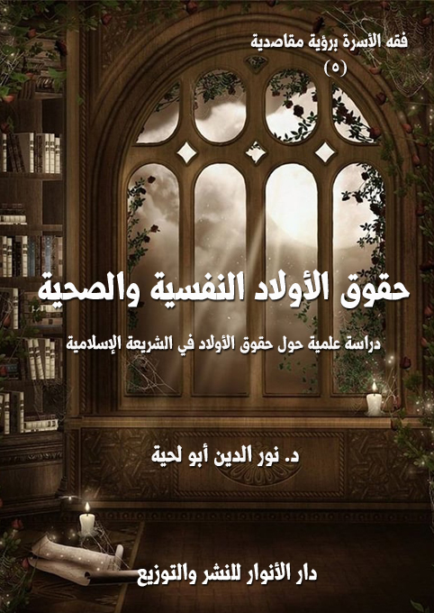

الكتاب: حقوق الأولاد النفسية والصحية برؤية مقاصدية
المؤلف: أ.د. نور الدين أبو لحية
الناشر: دار الأنوار للنشر والتوزيع
الطبعة: الثانية، 1438 هـ
عدد الصفحات: 460
ISBN: 978-620-2-34288-9
لمطالعة الكتاب من تطبيق مؤلفاتي المجاني وهو أحسن وأيسر: هنا

التعريف بالكتاب
يتناول هذا الكتاب ما تحدث عنه الفقهاء من حقوق نفسية وصحية للأولاد، ذلك أنه لا يمكن لمن يبحث في فقه الأسرة أن يمر بالأولاد دون أن يبحث في أحكامهم، وما راعاه الشرع من المقاصد نحوهم.
ذلك أن الشرع الحكيم أعطى الأولاد أهمية كبرى، باعتبارهم من المستضعفين الذين يحتاجون إلى من يتولاهم ويكفلهم ويحفظ حقوقهم، وحسبنا من القرآن الكريم دلالة على أهمية حقوق الأولاد قوله تعالى:﴿ يُوصِيكُمُ اللَّهُ فِي أَوْلادِكُمْ ﴾ (النساء:11)
وقد اقتصرنا في هذا الجزء على نوعين من الحقوق:
الحقوق النفسية: ونريد بها مراعاة الجوانب النفسية للطفل، حتى يشب شخصا سويا خاليا من العقد التي قد تؤثر في توجهات حياته، وأدائه لوظيفته.
الحقوق الصحية: ونريد بها الحقوق التي تضمن سلامة الأولاد الجسدية، بدءا من حقهم في الحياة، وانتهاءا بحفظهم من العلل، وحقهم في كل ما تحتاجه سلامة جسدهم من نفقات.
حقوق الأولاد النفسية والصحية برؤية مقاصدية (8)
لا يمكن لمن يبحث في فقه الأسرة أن يمر بالأولاد دون أن يبحث في أحكامهم، وما راعاه الشرع من المقاصد نحوهم، ذلك أن الشرع الحكيم أعطى الأولاد أهمية كبرى، باعتبارهم من المستضعفين الذين يحتاجون إلى من يتولاهم ويكفلهم ويحفظ حقوقهم، وحسبنا من القرآن الكريم دلالة على أهمية حقوق الأولاد قوله تعالى: {يُوصِيكُمُ اللَّهُ فِي أَوْلادِكُمْ} (النساء:11)
والعالم، وإن تصور أنه توجه الآن إلى حفظ حقوق الطفولة (1) ـ بحسب ما يتصوره من حقوق ـ فإنه بجنب ما ضمن الشرع من حقوق للطفولة، وبجنب ما ألفت إليه الانتباه منها، مقصر جدا.
ولن نتحدث في هذه المقدمة المختصرة عن أدلة هذا، لأن كل ما سنورده في هذا الكتاب وما يليه أدلة عليه.
وقد رأينا أن حقوق الطفولة بحسب ما تدل عليه النصوص، ترجع إلى الحقوق التالية:
الحقوق النفسية: ونريد بها مراعاة الجوانب النفسية للطفل، حتى يشب شخصا سويا خاليا من العقد التي قد تؤثر في توجهات حياته، وأدائه لوظيفته.
الحقوق الصحية: ونريد بها الحقوق التي تضمن سلامة الأولاد الجسدية، بدءا من حقهم في الحياة، وانتهاءا بحفظهم من العلل، وحقهم في كل ما تحتاجه سلامة جسدهم من
__________
(1) اهتم العالم ومنذ بروز التكتلات الدولية بالطفولة وعمل على إصدار الكثير من التوصيات والقرارات بشأنها منها: الإعلان العالمي لحقوق الطفل 1959 م، وميثاق حقوق الطفل العربي 1984 م، والعام الدولي للطفل 1979 م، ويوم الطفل العالمي، وإنشاء منظمة الطفولة العالمية اليونسيف، وإنشاء الهيئة العالمية لبحوث أدب الأطفال، وتخصيص الجوائز العالمية لأدب الأطفال، وإقامة المعارض الدولية لكتب الطفل.
حقوق الأولاد النفسية والصحية برؤية مقاصدية (9)
نفقات.
وقد جمعنا الحقوق المرتبطة بهذين الجانبين في هذا الجزء الأول من المجموعة.
حقهم في التربية السليمة: وفق الأساليب الصحيحة التي لا تؤثر في شخصيتهم نفسيا من جهة، كما أنها تؤدي دورها في تحقيق الأبعاد التي تتكون منها الشخصية السوية.
وقد خصصنا هذا الحق بالجزء التالي لهذا الجزء (الأساليب الشرعية في تربية الأولاد)
حقهم في التربية على ما تستلزمه الشخصية السوية من أبعاد: وهو من أهم الحقوق، وقد خصصناه ـ لأهميته ـ بكتاب (الأبعاد الشرعية لتربية الأولاد)
وسنتحدث في هذه المجموعة بحسب ما نتصوره من المعنى الشامل للفقه، لا المعنى المحدود الذي اشتهرت به كتب المتأخرين، والتي لم تتحدث من هذه الجوانب إلا على النزر اليسير.
ولذلك ستكون أكثر مراجعنا في هذه المجموعة زيادة على كتب الفقه: القرآن الكريم الذي هو الأصل، وتفاسيره، والسنة المطهرة، وشروحها.
حقوق الأولاد النفسية والصحية برؤية مقاصدية (10)
ويدل لهذا الحق النصوص الكثيرة، فالله تعالى ينهى عن قتل الأولاد، قال تعالى: {وَلا تَقْتُلُوا أَوْلادَكُمْ مِنْ إِمْلاقٍ نَحْنُ نَرْزُقُكُمْ وَإِيَّاهُمْ} (الأنعام:151)، وقال تعالى: {وَلا تَقْتُلُوا أَوْلادَكُمْ خَشْيَةَ إِمْلاقٍ نَحْنُ نَرْزُقُهُمْ وَإِيَّاكُمْ إِنَّ قَتْلَهُمْ كَانَ خِطْئاً كَبِيراً} (الاسراء:31)
بل إنه حرم قتلهم قبل أن يولدوا، فحرم أن تجهض المرأة نفسها بغير ضرورة، ولم يجز إقامة الحد على المرأة القاتلة أو الزانية إذا ثبت زناها، فقد جاءت المرأة الغامدية إلى النبي صلى الله عليه وآله وسلم تقر على نفسها بأنها زنت وأنها حُبلى من الزنا، فلم يقم عليها النبي صلى الله عليه وآله وسلم الحد وقال لها: اذهبي حتى تلدي، فذهبت المرأة أشهراً حتى وضعت طفلها، وجاءت به على يديها تريد أن ترجم، وأن تتطهر من الفاحشة التي ارتكبتها، فقال لها: اذهبي حتى تفطميه (1)..
بل شرع العقوبات الخطيرة الرادعة عن أي تسب في قتل الجنين أو إعاقته.
وسنحاول في هذا الفصل أن تحدث عن ثلاثة جوانب، خصصنا كل واحد منها بمبحث خاص، وهي:
1 ـ أحكام الامتناع عن الإنجاب، وهو ما يتسبب في منع الولد من حق الوجود.
2 ـ أحكام التخلص من الجنين بعد وجوده.
3 ـ التشريعات الرادعة عن التخلص من الجنين.
أولا ـ أحكام الامتناع عن الإنجاب
__________
(1) رواه أحمد 5/ 347 (23330) و5/ 348 (23337) والدارمي 2320 و2324 ومسلم 5/ 120 (4451)
حقوق الأولاد النفسية والصحية برؤية مقاصدية (11)
رغبت الشريعة الإسلامية في كثرة النسل، وخاصة إذا ارتبط بذلك النية الصالحة، ففي الحديث أن رجلا جاء إلى رسول الله صلى الله عليه وآله وسلم فقال: إني أصبت امرأة ذات حسب ومنصب إلا أنها لا تلد أفأتزوجها فنهاه ثم أتاه الثانية فنهاه ثم أتاه الثالثة فنهاه فقال: (تزوجوا الولود الودود فإني مكاثر بكم) (1)
والبحث في هذه الناحية يستدعي الحديث عن الحكم الشرعي للامتناع عن الإنجاب، سواء كان امتناعا كليا أو جزئيا، وسنعرف أحكام ذلك في هذا المبحث:
اتفق الفقهاء على حرمة التسبب في كل ما يعطل القدرة على الإنجاب، وقد اختلفت عباراتهم في ذلك، ومن ذلك ما جاء في حاشية الجمل، قال: (ويحرم ما يقطع الحبل من أصله، أما ما يبطئ الحبل مدة ولا يقطعه من أصله، فلا يحرم كما هو ظاهر بل إن كان لعذر كتربية ولد لم يكره أيضا، وإلا كره) (2)
وفيها: (أما استعمال الرجل والمرأة دواء لمنع الحبل فقد سئل عنها الشيخ عز الدين فقال لا يجوز للمرأة ذلك وظاهره التحريم وبه أفتى العماد بن يونس فسئل عما إذا تراضى الزوجان الحران على ترك الحمل هل يجوز التداوي لمنعه بعد طهر الحيض أجاب لا يجوز. وقد يقال هو لا يزيد على العزل وليس فيه سوى سد باب النسل ظنا وأن الظن لا يغني من الحق شيئا وعلى القول بالمنع فلو فرق بين ما يمنع بالكلية وبين ما يمنع في وقت دون وقت فيكون كالعزل لكان متجها) (3)
وجاء في نهاية المحتاج: (ويحرم استعمال ما يقطع الحبل من أصله كما صرح به
__________
(1) أبو داود (2050) والنسائي 6/ 65، وفي الكبرى 5323.
(2) حاشية الجمل:4/ 446.
(3) حاشبة الجمل:5/ 492.
حقوق الأولاد النفسية والصحية برؤية مقاصدية (12)
كثيرون، وهو ظاهر، أما ما يبطل الحمل مدة ولا يقطعه من أصله فلا يحرم كما هو ظاهر، ثم الظاهر أنه إن كان لعذر كتربية ولد لم يكره أيضا وإلا كره) (1)
وقال الشيخ عليش: (لا يجوز استعمال دواء لمنع الحمل) (2)
وفي مقابل ذلك أجاز الزيدية، كما في التاج المذهب قال: (وكذا يجوز للمرأة أن تفعل بنفسها ما يمنع الحبل وإن لم يرض زوجها لأنه لم يثبت له حق في حملها إلا بعد وجوده) (3) والظاهر أن المراد بهذا ما يمنع الحمل منعا جزئيا، ولو أن العبارة لا تدل عليه.
ومن الأساليب التي يحصل بها الامتناع الكلي عن الإنجاب، والتي نصت عليها الأحكام السابقة التعقيم، وهو عملية جراحية لا تتعلق بالناحية الجنسية، أو القدرة عليها، ولا تعطل إلا القدرة على الإنجاب، وقد نص العلماء المعاصرون على حرمة هذه العملية لأدائها إلى عدم الحمل كلية إلا إذا كان لذلك أسبابه الصحية الوجيهة.
2 ـ الامتناع المؤقت عن الإنجاب
انطلاقا من أن الوسيلة المستخدمة لتنظيم النسل قديما هي العزل، فإن الطريق لمعرفة مواقف الفقهاء من حكم هذا النوع من الامتناع عن الإنجاب يرتبط بمعرفة حكم العزل، وإن كان الفقهاء قد ذكروا وسائل أخرى سنعرض لها هنا كوضع خرقة، وهي بديل للواقي المستعمل الآن، أو استعمال الدواء، وغيرها من الوسائل.
ويمكن من خلال الاطلاع على أقوال الفقهاء في هذه المسألة حصر الخلاف في
__________
(1) نهاية المحتاج:7/ 136.
(2) فتح العلي المالك:1/ 399.
(3) التاج المذهب:2/ 78.
حقوق الأولاد النفسية والصحية برؤية مقاصدية (13)
القولين التاليين (1):
القول الأول: حرمة العزل، قال ابن تيمية: (أما العزل، فقد حرمه طائفة من العلماء، لكن مذهب الأئمة الأربعة أنه يجوز بإذن المرأة) (2)، ومن العلماء الذين قالوا بحرمة العزل ابن حزم، فقد قال: (ولا يحل العزل عن حرة ولا عن أمة) (3)، ومن الأدلة التي استدل بها على ذلك ما رواه عن عروة بن الزبير عن عائشة عن جدامة بنت وهب قالت: حضرت رسول الله صلى الله عليه وآله وسلم في أناس فسألوه عن العزل فقال رسول الله صلى الله عليه وآله وسلم: ذلك الوأد الخفي، وقرأ: {وَإِذَا الْمَوْؤُودَةُ سُئِلَتْ} (التكوير:8)) (4)، قال ابن حزم: (هذا خبر في غاية الصحة) (5)
وقد اعتبر ابن حزم هذا الحديث أصلا، واعتبر ما عداه إما مفهوما على غير وجهة، أو غير صحيح، أو صحيحا منسوخا، فقال في حديث أبي سعيد الذي فيه (لا عليكم أن لا تفعلوا): (هذا خبر إلى النهي أقرب، وكذلك قال ابن سيرين)
أما احتجاجهم بتكذيب النبي صلى الله عليه وآله وسلم قول اليهود: هو الموءودة الصغرى، وبغيره من الأحاديث الدالة على إباحة العزل، فقد رد عليه ابن حزم بقوله: (يعارضها خبر جدامة الذي أوردنا، وقد علمنا بيقين أن كل شيء فأصله الإباحة لقول الله تعالى: {هُوَ الَّذِي خَلَقَ لَكُمْ مَا فِي الْأَرْضِ جَمِيعًا} (البقرة:29) وعلى هذا كان كل شيء حلالا حتى نزل التحريم قال تعالى: {وَقَدْ فَصَّلَ لَكُمْ مَا حَرَّمَ عَلَيْكُمْ} (الأنعام:119) فصح أن خبر جدامة
__________
(1) وقد ذكر الغزالي أن الخلاف في المسألة على أربعة مذاهب، فقال:) اختلف العلماء في إباحته وكراهته على أربع مذاهب، فمن مبيح مطلقاً بكل حال، ومن محرم بكل حال، ومن قائل يحل برضاها ولا يحل دون رضاها، وكأن هذا القائل يحرم الإيذاء دون العزل، ومن قائل يباح في المملوكة دون الحرة (، وما سنذكره هنا من القولين يحاول حصر الخلاف في هذين القولين.
(2) الفتاوى الكبرى:3/ 101.
(3) المحلى:9/ 223.
(4) مسلم: 2/ 1067، البيهقي: 7/ 231، ابن ماجة: 1/ 648، مسند أبي عوانة: 3/ 101.
(5) المحلى:9/ 223.
حقوق الأولاد النفسية والصحية برؤية مقاصدية (14)
بالتحريم هو الناسخ لجميع الإباحات المتقدمة التي لا شك في أنها قبل البعث وبعد البعث، وهذا أمر متيقن، لأنه أخبر صلى الله عليه وآله وسلم أنه الوأد الخفي، والوأد محرم، فقد نسخ الإباحة المتقدمة بيقين، فمن ادعى أن تلك الإباحة المنسوخة قد عادت، وأن النسخ المتيقن قد بطل فقد ادعى الباطل، وقفا ما لا علم له به، وأتى بما لا دليل له عليه) (1)
وقد ذكر أنه صح المنع منه عن جماعة من السلف، فعن نافع: أن ابن عمر كان لا يعزل، وقال: لو علمت أحدا من ولدي يعزل لنكلته، قال ابن حزم: (لا يجوز أن ينكل على شيء مباح عنده (، وعن زر بن حبيش أن علي بن أبي طالب كان يكره العزل، وعن عبد الله بن مسعود أنه قال في العزل: هي الموءودة الخفية، وعن سليمان بن عامر قال: سمعت أبا أمامة الباهلي يقول وقد سئل عن العزل؟ فقال: ما كنت أرى مسلما يفعله، وعن ابن عمر قال: ضرب عمر على العزل بعض بنيه، وعن سعيد بن المسيب قال: كان عمر بن الخطاب، وعثمان بن عفان ينكران العزل) (2)
القول الثاني: إباحة العزل، وهو قول جمهور العلماء، ومن الأدلة على ذلك:
1 ـ الأحاديث الدلة على إباحة العزل، وهي كثيرة، منها ما روي عن أبي سعيد الخدري أن رجلا قال: يا رسول الله، إن لي جارية، وأنا أعزل عنها، وأنا أكره أن تحمل، وأنا أريد ما يريد الرجال، وإن اليهود تحدث أن العزل الموءودة الصغرى. قال: (كذبت يهود، لو أراد الله أن يخلقه ما استطعت أن تصرفه) (3)
ومنها ما روي عن جابر قال: أتى النبي صلى الله عليه وآله وسلم رجل من الأنصار فقال: يا رسول الله إن لي جارية تسير تستقي على ناضحي، وأنا أصيب منها، أفأعزل؟ فقال رسول الله صلى الله عليه وآله وسلم نعم
__________
(1) المحلى:9/ 223.
(2) انظر هذه الآثار في: المحلى:9/ 223.
(3) البيهقي: 7/ 230، أبو داود: 2/ 252.
حقوق الأولاد النفسية والصحية برؤية مقاصدية (15)
فاعزل. فلم يلبث الرجل أن جاء فقال: يا رسول الله قد عزلت عنها فحملت. فقال رسول الله صلى الله عليه وآله وسلم: (ما قدر الله عز وجل لنفس أن يخلقها إلا وهي كائنة) (1)
وفي حديث آخر عنه أن رسول الله صلى الله عليه وآله وسلم أذن في العزل، وعنه قال: كنا نعزل على عهد رسول الله صلى الله عليه وآله وسلم فلا ينهانا عن ذلك (2).
وعن أبي سعيد الخدري، قال: لما افتتح رسول الله صلى الله عليه وآله وسلم خيبر أصبنا نساء، فكنا نطؤهن، فنعزل عنهن، فقال بعضنا لبعض أتفعلون هذا ورسول الله صلى الله عليه وآله وسلم إلى جنبكم لا تسألونه؟. قال: فسألوه عن ذلك فقال: (ليس من كل الماء يكون الولد، إن الله إذا أراد أن يخلق شيئا لم يمنعه شيء، فلا عليكم ألا تعزلوا) (3)
2 ـ الإجابة على ما أورده المخالفون من أصحاب القول الأول، وقد أجاب الطحاوي على ذلك برد التعارض الذي قد يبدو في هذه الأحاديث، بل قد ورد الجواب عن ذلك من السلف أنفسهم، وسنذكر هنا كلتا الإجابتين إجابة السلف وإجابة الخلف:
فمنها أن أصحاب رسول الله صلى الله عليه وآله وسلم تذاكروا عند عمر العزل فاختلفوا فيه فقال عمر: قد اختلفتم وأنتم أهل بدر الخيار فكيف بالناس بعدكم، إذ تناجى رجلان فقال عمر: ما هذه المناجاة؟ قال إن اليهود تزعم أنها الموءودة الصغرى فقال علي: إنها لا تكون موءودة حتى تمر بالتارات السبع {وَلَقَدْ خَلَقْنَا الْإِنسَانَ مِنْ سُلَالَةٍ مِنْ طِين} (المؤمنون:12) إلى آخر الآية فعجب عمر من قوله وقال: جزاك الله خيرا.
ومنها ما روي عن ابن عباس أنه أتاه ناس من أهل العراق يسألونه عن العزل، وهم يرون أنه الموءودة فقال لجواريه: أخبروهم كيف أصنع، فكأنهن استحيين، فقال إني لأصبه
__________
(1) مسند أبي عوانة: 3/ 99، النسائي: 5/ 342، أحمد: 3/ 313.
(2) البخاري: 5/ 1998، مسلم: 2/ 1065، ابن حبان: 9/ 507، البيهقي: 7/ 228، النسائي: 5/ 344، ابن ماجة: 1/ 620، أحمد: 1/ 236.
(3) مسند أبي عوانة: 3/ 98، أحمد: 3/ 49، المعجم الأوسط: 8/ 103.
حقوق الأولاد النفسية والصحية برؤية مقاصدية (16)
في الطست، ثم أصب عليه الماء، ثم أقول لإحداهن: انظري لا تقولين إن كان شيء، ثم قال: إنه يكون نطفة ثم دما ثم علقة ثم مضغة ثم يكون عظما ثم يكسى لحما، ثم يكون ما شاء الله حتى ينفخ فيه الروح ثم تلا هذه الآية {ثُمَّ أَنشَأْنَاهُ خَلْقًا آخَرَ فَتَبَارَكَ اللَّهُ أَحْسَنُ الْخَالِقِينَ} (المؤمنون:14)
3 ـ أن قول رسول الله صلى الله عليه وآله وسلم ذلك في البدء (1) قد يكون لسماعه إياه من اليهود، فاعتقد صحته، قال الطحاوي: (قد يجوز أن يكون رسول الله صلى الله عليه وآله وسلم قال ذلك لما كان عليه من اتباع اليهود على شريعتهم ما لم يحدث الله في شريعته ما ينسخ ذلك إذ كانوا أهل كتاب مقتدين بالذي جاءهم بكتابهم وإذ كان تعالى أنزل عليه فيما أنزل {أُوْلَئِكَ الَّذِينَ هَدَى اللَّهُ} (الأنعام:90) يعني من تقدم من أنبيائه {فَبِهُدَاهُمْ اقْتَدِهِ} (الأنعام:90) إنما كان يصل إلى ذلك مما كان يجده في التوراة وفيما سواها من كتب الله تعالى التي كان أنزل على أنبيائه قبله صلوات الله عليه وعليهم فجاز أن يكون لما كشفهم عن ذلك كيف هو في كتابهم ذكروا له أنه الموءودة الصغرى وكذبوه. فقال ما قال مما ترويه عنه جدامة ثم أعلمه الله تعالى بكذبهم وأن الأمر في الحقيقة بخلاف ذلك) (2)
ثم عقب على ذلك بقوله: (فلما وقف رسول الله صلى الله عليه وآله وسلم على كذب اليهود فيما كانوا قالوه في العزل واستحالته أكذبهم فيه وأعلم الناس أنه لا يكون إن عزلوا أو لم يعزلوا إلا ما قدر الله عز وجل فيه من كون ولد منه أو من انتفاء ذلك منه) (3)
وقد اختلف أصحاب هذا القول في كراهته وعدمها على الرأيين التاليين:
الرأي الأول: أن العزل مكروه، إلا أن يكون لحاجة، مثل أن يكون في دار الحرب،
__________
(1) طبعا هذا ما قاله الفقهاء، وهو غريب جدا، ولا يتناسب مع النبوة، وقد رددنا عليه بتفصيل في كتاب [رسول الله.. والقلوب المريضة]
(2) مشكل الآثار:2/ 173.
(3) مشكل الآثار:2/ 173.
حقوق الأولاد النفسية والصحية برؤية مقاصدية (17)
فتدعوه حاجته إلى الوطء، فيطأ ويعزل، أو تكون زوجته أمة، فيخشى الرق على ولده، أو تكون له أمة، فيحتاج إلى وطئها وإلى بيعها، وقد رويت كراهته عن أبي بكر وعمر، وعلي، وابن عمر، وابن مسعود.
وقد أفتى الشافعية بأن (العزل حذرا من الولد مكروه وإن أذنت فيه المعزول عنها حرة كانت أو أمة لأنه طريق إلى قطع النسل) (1)
ومن الأدلة التي استدلوا بها على ذلك:
1 ـ أن فيه تقليل النسل، وقطع اللذة عن الموطوءة.
2 ـ أن النبي صلى الله عليه وآله وسلم حث على تعاطي أسباب الولد، فقال: (تناكحوا، تناسلوا، تكثروا) (2)
الرأي الثاني: الإباحة، قال ابن قدامة: (ورويت الرخصة فيه عن علي، وسعد بن أبي وقاص، وأبي أيوب، وزيد بن ثابت، وجابر، وابن عباس، والحسن بن علي، وخباب ابن الأرت، وسعيد بن المسيب، وطاوس، وعطاء، والنخعي، ومالك، والشافعي، وأصحاب الرأي)
وقال الشيخ عليش من المالكية: (وأما وضع شيء كخرقة في الفرج حال الجماع تمنع وصول الماء للرحم فألحقه عبد الباقي بالعزل في الجواز بشرطه) (3)
ومن أشهر المدافعين عن هذا الرأي الطحاوي والغزالي، قال الطحاوي: (فلما انتفى المعنى الذي به كره العزل، وما ذكر من ذكر في ذلك أنه من الموءودة، وثبت عن رسول الله
__________
(1) حاشبة الجمل:5/ 492.
(2) ابن مردويه في تفسيره عن ابن عمر بسند ضعيف، والطبراني في الأوسط من حديث سهل بن حنيف، انظر: مناهل الصفا في تخريج أحاديث الشفا (ص: 55)
(3) فتح العلي المالك:1/ 399.
حقوق الأولاد النفسية والصحية برؤية مقاصدية (18)
صلى الله عليه وآله وسلم ما قد ذكرناه عنه من إباحته، ثبت أن لا بأس بالعزل لمن أراده على الشرائط التي ذكرناها وفصلناها في أول هذا الباب، وهذا قول أبي حنيفة، وأبي يوسف ومحمد، رحمة الله عليهم أجمعين) (1)
وقال الغزالي: (والصحيح عندنا أن ذلك مباح، وأما الكراهية فإنها تطلق لنهي التحريم ولنهي التنزيه ولترك الفضيلة، فهو مكروه بالمعنى الثالث أي فيه ترك فضيلة، كما يقال: يكره للقاعد في المسجد أن يقعد فارغاً لا يشتغل بذكر أو صلاة، ويكره للحاضر في مكة مقيماً بها أن لا يحج كل سنة، والمراد بهذه الكراهية ترك الأولى والفضيلة فقط، وهذا ثابت لما بيناه من الفضيلة في الولد) (2)
وهو بذلك بكاد يقترب من الرأي الأول، ولكن ما ذكره من أدلة يجنح إلى الجواز، والأصح في رأيه هو التفصيل كما سنرى في محله، وسنذكر هنا بعض الوجوه التي استدل بها أصحاب هذا القول على الجواز (3):
1 ـ أن إثبات النهي إنما يمكن بنص أو قياس على منصوص ولا نص ولا أصل يقاس عليه، بل ههنا أصل يقاس عليه وهو ترك النكاح أصلاً أو ترك الجماع بعد النكاح أو ترك الإنزال بعد الإيلاج، فكل ذلك ترك للأفضل وليس بارتكاب نهي ولا فرق، إذ الولد يتكون بوقوع النطفة في الرحم، ولها أربعة أسباب: النكاح، ثم الوقاع، ثم الصبر إلى الإنزال بعد الجماع، ثم الوقوف لينصب المني في الرحم، وبعض هذه الأسباب أقرب من بعض فالامتناع عن الرابع كالامتناع عن الثالث، وكذا الثالث كالثاني، والثاني كالأول.
2 ـ أنه لا يصح قياس العزل على الإجهاض والوأد، لأن ذلك جناية على موجود
__________
(1) شرح معاني الآثار:3/ 31.
(2) الإحياء: 2/ 51.
(3) الإحياء: 2/ 51، شرح معاني الآثار:3/ 31.
حقوق الأولاد النفسية والصحية برؤية مقاصدية (19)
حاصل، بخلاف العزل، فإنه وجود متوهم.
3 ـ الآثار الواردة عن الصحابة والتي يفهم منها الجواز بادئ الرأي، قال الطحاوي بعد إيراده ما ذكرنا من الآثار الواردة عن الصحابة في جواز العزل: (فهذا علي وابن عباس، قد اجتمعا في هذا، على ما ذكرنا، وتابع عليا على ما قال من ذلك عمر، ومن كان بحضرتهما من أصحاب رسول الله صلى الله عليه وآله وسلم، ففي هذا دليل على أن العزل غير مكروه من هذه الجهة) (1)
4 ـ أن الله تعالى إذا كان قد قدر أنه يكون ذلك، كان ذلك الولد، ولم يمنعه عزل ولا غيره، لأنه قد يكون مع العزل إفضاء بقليل الماء الذي قد قدر الله تعالى أن يكون منه ولد، فيكون منه ولد، ويكون ما بقي من الماء الذي قد يمتنعون من الإفضاء به بالعزل، فضلا، وقد يكون الله عز وجل قد قدر أن لا يكون من ماء ولد، فيكون الإفضاء بذلك الماء والعزل سواء في أن لا يكون منه ولد. فكان الإفضاء بالماء لا يكون منه ولد إلا بأن يكون في تقدير الله عز وجل أن لا يكون من ذلك الماء ولد، فيكون كما قدر.
الترجيح:
نرى أن الأرجح في المسألة هو أن حكم العزل وغيره من وسائل تنظيم النسل يتوقف على جانبين:
الجانب الأول: الوسيلة التي يتم بها تنظيم النسل، فقد تكون عزلا أو غيره، فلذلك يشترط فيها ـ كما يشترط في كل الوسائل ـ أن لا يكون فيها ضرر، فبعض الأدوية المستعملة الآن مثلا يصيب كثيرا من النساء بأضرار صحية قد تصل درجة كبيرة من الخطورة، بل ألفت الكتب المتخصصة التي تحذر من استعمال بعض تلك الأدوية، وحتى الوسائل الأخرى قد تحوي بعض المخاطر، ولو لم تكن آنية.
وقد ذكر محمد علي البار بعض المخاطر الصحية من استعمال الوسائل المختلفة لمنع
__________
(1) شرح معاني الآثار:3/ 30.
حقوق الأولاد النفسية والصحية برؤية مقاصدية (20)
الحمل، ومما ذكره من مخاطر حبوب منع الحمل قوله: (ولكل مجموعة من هذه المجموعات مساوئها وأضرارها، وأشهر هذه المساوئ هي زيادة الجلطات في الساقين والرئتين والقلب وزيادة الإصابة بمرض السكر، وإصابة الكبد وضغط الدم والاضطرابات النفسية واحتمال زيادة في سرطان عنق الرحم وسرطان الثدي، وتمنع المرأة في العادة من استعمال الحبوب خاصة تلك التي بها هرمون الإستروجين ومشتقاته إذا كانت تعاني من ضغط الدم أو مرض في الكبد أو مرض في الكلى، أو هبوط في القلب، أو لها تاريخ قديم للجلطات في الساقين وغيرهما أو مرض البول السكري او فوق سن الأربعين أو تعاني من أمراض نفسية أو كآبة شديدة) (1)
وذكر من مخاطر استعمال اللولب: (النزف المتكرر من المرأة التي تضع في رحمها وثانيها الآلام التي قد تكون مبرحة، وثالثها اختراق هذا اللولب للرحم، مما يسبب انثقاب الرحم، وهو أمر خطير جدا، أو أن اللولب ينغرز في جدار الرحم، ورابعها الإنتان المتكرر الذي يصحب إدخال اللولب وبقائه في الرحم، وخامسها أن الرحم يقوم بطرد هذا الجسم الغريب، وسادسها زيادة في حدوث الحمل ي قناة الرحم، وسابعها حدوث الحمل وذلك بسبة تصل إلى ستة بالمائة) (2)
فلذلك لا يصح استعمال أي وسيلة إلا بعد التأكد التام من عدم المضرة وإلا كانت حراما للضرر الذي ورد النهي عنه أنى وجد وكيف وجد، وإباحة المقصد لا تبيح الوسيلة.
الجانب الثاني: المقصد الذي يراد من هذه العملية، ونرى أن الأرجح في هذا هو عدم إطلاق القول فيه، بل يختلف حكمه باختلاف الأحوال، فلذلك يمكن القول بأنه ترد عليه الأحكام الخمسة من الإباحة والكراهة والحرمة والندب والوجوب.
__________
(1) خلق الإنسان بين الطب والقرآن: 508.
(2) خلق الإنسان بين الطب والقرآن: 495.
حقوق الأولاد النفسية والصحية برؤية مقاصدية (21)
وقد أشار الغزالي إلى هذا الاعتبار الذي يمكن بواسطته التوفيق بين الأقوال المختلفة في المسألة، فذكر أن النيات الباعثة على العزل خمس، ثلاثة منها حكم بإباحتها، وهي: (الأولى: في السراري وهو حفظ الملك عن الهلاك باستحقاق العتاق وقصد استبقاء الملك بترك الإعتاق ودفع أسبابه ليس بمنهي عنه. الثانية: استبقاء جمال المرأة وسمنها دوام التمتع واستبقاء حياتها خوفاً من خطر الطلق، وهذا أيضاً ليس منهياً عنه. الثالثة: الخوف من كثرة الحرج بسبب كثرة الأولاد والاحتراز من الحاجة إلى التعب في الكسب ودخول مداخل السوء وهذا أيضاً غير منهي عنه، فإن قلة الحرج معين على الدين، نعم الكمال والفضل في التوكل والثقة بضمان الله حيث قال: {وَمَا مِنْ دَابَّةٍ في الأرْضِ إلاَّ عَلَى الله رِزْقُهَا} ولا جرم فيه سقوط عن ذروة الكمال وترك الأفضل، ولكن النظر إلى العواقب وحفظ المال وادخاره مع كونه مناقضاً للتوكل لا نقول إنه منهي عنه) (1)
أما النيتان الباقيتان، فأفتى فيهما بالحرمة، وهما كما يذكر الغزالي: (الرابعة: الخوف من الأولاد الإناث لما يعتقد في تزويجهن من المعرة كما كانت من عادة العرب في قتلهم الإناث، فهذه نية فاسدة لو ترك بسببها أصل النكاح أو أصل الوقاع أثم بها لا بترك النكاح والوطء، فكذا في العزل، والفساد في اعتقاد المعرة في سنة رسول الله صلى الله عليه وآله وسلم أشد، وينزل منزلة امرأة تركت النكاح استنكافاً من أن يعلوها رجل فكانت تتشبه بالرجال، ولا ترجع الكراهة إلى عين ترك النكاح. الخامسة: أن تمتنع المرأة لتعززها ومبالغتها في النظافة والتحرز من الطلق والنفاس والرضاع، وكان ذلك عادة نساء الخوارج لمبالغتهن في استعمال المياه، حتى كن يقضين صلوات أيام الحيض ولا يدخلن الخلاء إلا عراة، فهذه بدعة تخالف السنَّة، فهي نية فاسدة، واستأذنت واحدة منهن على عائشة، لما قدمت البصرة فلم تأذن لها، فيكون القصد
__________
(1) الإحياء: 2/ 52.
حقوق الأولاد النفسية والصحية برؤية مقاصدية (22)
هو الفاسد دون منع الولادة) (1)
هذا ما ذكره الغزالي على سبيل الحصر الذي لا نوافقه عليه، فهناك أسباب أخرى تختلف باختلاف الأحوال والأزمان والأشخاص، وسنذكر بعض أمثلتها في المسألة التالية لهذه المسألة.
3 ـ الدوافع الشرعية لتنظيم النسل
يمكن تصنيف الدوافع الشرعية الباعثة على تنظيم النسل إلى الدوافع التالية:
من الدوافع الخاصة بالأم الخشية على حياتها أو صحتها من الحمل أو الوضع، إذا عرف بتجربة أو أخبار طبيب ثقة تطبيقا لقوله تعالى: {وَلَا تُلْقُوا بِأَيْدِيكُمْ إِلَى التَّهْلُكَةِ} (البقرة:195)، وقوله تعالى: {وَلَا تَقْتُلُوا أَنفُسَكُمْ إِنَّ اللَّهَ كَانَ بِكُمْ رَحِيمًا} (النساء:29)
ومنها الخشية على الأولاد أن تسوء صحبتهم، وقد ورد عن السلف ما يدل على هذا القصد، فعن أسامة بن زيد أن رجلا جاء إلى رسول الله صلى الله عليه وآله وسلم فقال: يا رسول الله، إني أعزل عن امرأتي. فقال له رسول الله صلى الله عليه وآله وسلم: لم تفعل ذلك؟ فقال الرجل: أشفق على ولدها -أو قال- على أولادها، فقال رسول الله صلى الله عليه وآله وسلم: (لو كان ضارا لضر فارس والروم) (2)
ومن الضرورات المعتبرة شرعا الخشية على الرضيع من حمل جديد ووليد جديد، وقد سمى النبي صلى الله عليه وآله وسلم الوطء في حالة الرضاع وطء الغيلة لما يترتب عليه من حمل يفسد اللبن ويضعف الولد، وإنما سماه غيلا أو غيلة؛ لأنه جناية خفية على الرضيع فأشبه القتل سرا.
__________
(1) الإحياء: 2/ 52.
(2) مسلم: 2/ 1067، مسند البزار: 7/ 40.
حقوق الأولاد النفسية والصحية برؤية مقاصدية (23)
وقد ورد في الحديث عنه صلى الله عليه وآله وسلم ما قد يفهم من ظاهره التعارض، فقال (لَقَد هَمَمتُ أَن أَنهى عن الغيلَة حَتى ذَكَرتُ أَن الرُّوم وفارس يصنعونَ ذلك فلا يضُرُّ أَولاَدَهُم) (1)، ومن حديث أسماء بنت يزيد: (لاَ تَقتُلُوا أَولاَدَكُم سرّاً، فَوَالذي نَفسي بيَده إنه لَيُدرك الفَارسَ فَيُدَعثرُه (2) ُ)، قال: قلت: ما يعني؟ قالت: الغيلة: يأتي الرجلُ امرأته وهي ترضع (3).
قال ابن القيم في الجمع بين الآثار المختلفة في الباب: (وقد يُقال: إن قوله (لاَ تَقتُلُوا أَولاَدَكُم سرّاً) نهى أن يتسبب إلى ذلك، فإنه شبه الغَيل بقتل الولد، وليس بقتل حقيقة، وإلا كان من الكبائر، وكان قرينَ الإشراك بالله، ولا ريبَ أن وطء المراضع مما تعُمُّ به البلوى، ويتعذر على الرجل الصبر عن امرأته مدة الرضاع، ولو كان وطؤهن حراماً لكان معلوماً من الدين، وكان بيانه من أهم الأمور ولم تهمله الأُمةُ، وخيرُ القرون، ولا يُصرحُ أحدٌ منهم بتحريمه، فَعُلمَ أن حديث أسماء على وجه الإرشاد والاحتياط للولد، وأن لا يُعَرضَه لفساد اللبن بالحمل الطاراء عليه، ولهذا كان عادةُ العرب أن يسترضعُوا لأولادهم غيرَ أمهاتهم، والمنع منه غايته أن يكون من باب سد الذرائع التي قد تُفضي إلى الإضرار بالولد، وقاعدةُ باب سد الذرائع إذا عارضه مصلحة راجحة، قُدمت عليه) (4)
الدوافع الخاصة بالحياة الزوجية
ومنها خشية الوقوع في ضيق مادي قد يلجئه إلى الحرام، من أجل الأولاد، كما قال
__________
(1) مسلم: 2/ 1067، الترمذي: 4/ 406، الدارمي:2/ 197، أبو داود: 4/ 9 النسائي: 3/ 306، الموطأ: 2/ 607، أحمد: 6/ 361.
(2) قال الخطابي: معناه: يصرعه ويسقطه، وأصله في الكلام الهدم، ويقال في البناء قد تدعثر إذا تهدم وسقط يقول (في هذا الحديث: إن المرضع إذا جومعت فحملت فسد لبنها ونهك الولد أي هزل الولد إذا اغتذى بذلك اللبن فيبقى ضاويا فاذا صار رجلا وركب الخيل فركضها أدركه ضعف الغيل فزال وسقط عن متونها فكان ذلك كالقتل له إلا أنه سر لا يرى ولا يشعر به. انظر: عون المعبود: 10/ 261.
(3) ابن حبان: 13/ 323، البيهقي: 7/ 464، أبو داود: 4/ 9، ابن ماجة: 1/ 648، أحمد: 6/ 453.
(4) زاد المعاد: 5/ 148.
حقوق الأولاد النفسية والصحية برؤية مقاصدية (24)
تعالى: {يُرِيدُ اللَّهُ بِكُمْ الْيُسْرَ وَلَا يُرِيدُ بِكُمْ الْعُسْرَ} (البقرة:185)، وقال تعالى {مَا يُرِيدُ اللَّهُ لِيَجْعَلَ عَلَيْكُمْ مِنْ حَرَجٍ} (المائدة:6)
ومنها ما ذكره الغزالي من استبقاء جمال المرأة وسمنها لدوام التمتع واستبقاء حياتها خوفاً من خطر الطلق، وهذا أيضاً ليس منهياً عنه.
ثانيا ـ أحكام التخلص من الجنين
وهو ما يطلق عليه اصطلاحا [الإجهاض]، وسنتناول في هذا المطلب الأحكام الشرعية المتعلقة به باعتباره الوسيلة الوحيدة للتخلص من الجنين.
وقد عرف تعريفات مختلفة منها:
1 ـ عرفه مؤتمر الإسلام وتنظيم الوالدية، الذي عقد في الرباط عام 1971 م علميًا بأنه إخراج الحمل من الرحم، بقصد التخلص منه، وأصدر قرارًا مفاده: أن جميع فقهاء المسلمين يتفقون على أنه بعد الشهر الرابع يحرم الإجهاض، إلا إذا كانت هناك ضرورة قصوى، فقد عرف الإجهاض بهذا على انه إسقاط الجنين قبل الشهر الرابع.
2 ـ عرفه الأطباء بأنه انتهاء الحمل قبل حيوية الجنين، وتقدر هذه الحيوية بثمانية وعشرين أسبوعًا، وهي تساوي سبعة أشهر يكون فيها الجنين مكتمل الأعضاء، وله القدرة على الحياة.
3 ـ وأهل الطب الشرعي يُعَرِّفُونه بأنه: طرد مكونات الرحم الحامل في أي وقت، قبل نهاية تسعة أشهر (1).
أهم ركن من أركان الحكم على الإجهاض هو النظر في الدافع إليه، فبحسب الدافع
__________
(1) وثيقة مؤتمر السكان رؤية شرعية:107.
حقوق الأولاد النفسية والصحية برؤية مقاصدية (25)
يكون الحكم، وقد بدأت الدعوة للإجهاض أول ما بدأت في الغرب بمبرر الحرص على حياة الأم إن استمر الحمل، ثم الخوف على صحتها، ثم تطور إلى الخوف على صحتها الجسمية أو النفسية، ثم الخوف على مستقبلها الصحي أو الجمالي، ثم تطور ليشمل الخوف على الأسرة ثم على المجتمع، وتطور أخيرا ليدعى إلى السماح بالإجهاض حسب الطلب.
هذا بالنسبة للمناهج التي تصنعها الأهواء، وتدعو لها الجاهلية، أما أحكام الشريعة الإسلامية فإنها تختلف عن ذلك اختلافا جذريا، فهي منضبطة بضوابط لا تخرمها العصور، ولا تؤثر فيها البيئات، فلذلك يمكننا بسهوله انطلاقا من مصادر الدين الأصلية، وانطلاقا من الأسس التي تبنى عليها الأحكام الشرعية تمييز الدوافع الشرعية من الدوافع غير الشرعية.
ويمكننا حصر الدوافع حسبما نراه في الواقع إلى ثلاثة أنواع كبرى تندرج تحتها الفروع الكثيرة، وهذه الأصول التي تبنى عليها الدوافع هي:
من أهم الدوافع في هذا وأكثرها اعتبارا الخوف على حياة الأم إذا كان الحمل أو الولادة خطراً على حياتها أو على صحتها إلى حد كبير، وقد اتفق الفقهاء على أنه إذا ثبت من طريق موثوق به أن بقاءه يؤدي إلى موت الأم، ولم يكن لها منقذ سوى إسقاطه، فإن إسقاطه في تلك الحالة يصبح متعينا، لأن الشريعة تأمر بارتكاب أخف الضررين، فلا يضحي بها في سبيل إنقاذه؛ لأنها أصله، وقد استقرت حياتها، ولها حظ مستقل في الحياة، وهي بعد هذا وذاك عماد الأسرة، ولا يعقل أن يضحى بها في سبيل حياة لجنين لم تستقل حياته، ولم يحصل على شيء من الحقوق والواجبات زيادة على كون حياته متوهمة بخلاف حياة الأم.
ويشترط أن يتم ذلك تحت إشراف طبيب مسلم عدل، لتفادي التحايل على هذا بدعوى المحافظة عل صحة الأم، وقد قال محمد علي البار المتخصص في هذا المجال: (ولا
حقوق الأولاد النفسية والصحية برؤية مقاصدية (26)
أعلم أن هناك من الأمراض ما يجعل هلاك الأم محققا إذا هي استمرت في الحمل إلا حالة واحدة هي تسمم الحمل، وحتى في هذه الحالة لا يحتاج الطبيب إلى قتل الجنين، بل إلى إجراء الولادة قبل الموعد المحدد إما بحقن الأم بمادة الأوكسيتوسن أو البروستاجلاندين أو بإجراء عملية قيصرية، وأغلب هذه الحالات تسلم ويسلم وليدها معها) (1)
وبناء على هذا، فإن اعتبار هذا الدافع في عصرنا محدود جدا خاصة مع توفر الوسائل التي تحمي الأم وجنينها، قال محمد علي البار: (ونتيجة للتقدم الطبي الهائل، فإن قتل الجنين لإنقاذ الأم يصبح لغوا لا حاجة له في أغلب الحالات المرضية، ولكن هناك حالات مرضية عديدة يتعرض فيها الجنين للمخاطر، ويتعين في بعض تلك الحالات إخراج الجنين رحمة بالجنين ذاته، وليس شفقة ورحمة بالأم، ومثال ذلك إصابة الأم في أشهر الحمل الأولى بالحصبة الألمانية، فإن احتمال إصابة الجنين بالتشوهات الخلقية ترتفع إلى 70 بالمائة، إذا كات إصابة الأم في الشهر الثاني من الحمل، ثم تقل النسبة بعد ذلك، كا أن تعرض الأم للعلاج بالأشعة أو بالعقاقير المضادة للسرطان يؤدي إلى تشوهات الجنين، وفي أحيان كثيرة إلى قتله، وفي تلك الحالات ينصح بإجراء الإجهاض لا لأن بقاء الجنين يؤدي إلى موت الأم لا محالة، بل لأن بقاء الجنين يؤدي إلى تشوهات خلقية خطيرة أو إلى وقاة الجنين ذاته، ويتعين عندئذ إخراجه من الرحم حتى لا ينتن ويتعفن) (2)
وهي الدوافع التي تفرضها الأعراف الاجتماعية المختلفة، ومن هذه الدوافع تخفيف حدة الانفجار السكاني، وقد كان هذا هو الدافع الذي مررت به الدول القوية هذه الأفكار للدول المستضعفة، بل مورس ذلك، ومورس معه التعقيم الإجباري في الهند وغيرها.
__________
(1) خلق الإنسان بين الطب والقرآن:439.
(2) خلق الإنسان بين الطب والقرآن:439.
حقوق الأولاد النفسية والصحية برؤية مقاصدية (27)
ومنها الإجهاض حسب الرغبة، وهو ما يطبق الآن في الغرب، وإن كانوا يتسترون على ذلك، بل يحاولون تقنينه وتعميمه، وليس ذلك ببعيد.
ومنها، وهو أهمها، وربما يكون أكبر أسباب الإجهاض الخوف من آثار الفواحش، وقد زخرت وثيقة مؤتمر السكان والتنمية بتعبيرات فضفاضة، وعبارات مطلقة، توحي تارة، وتؤكد أخرى على السماح بالإجهاض في ظل العلاقات المشروعة، وغير المشروعة (1).
أما عن موقف الشريعة الإسلامية من هذه الدوافع، فإنه عدم الاعتبار لها، فلم يفصل الفقهاء بين الحمل الشرعي، وغير الشرعي، بل إنهم نصوا على حُرمة الإسقاط للجنين، ولو كان ثمرة لزنا أو اغتصاب، وقد ورد في السنة ما يؤيد ذلك، ومن ذلك ما جاء عن عمران بن حُصين، أن امرأة من جُهَيْنة أتت النبي صلى الله عليه وآله وسلم وهي حُبْلى من الزنا، فقالت: يا نبي الله، أصبتُ حدًّا فأقمْه عليَّ، فدعا رسولُ الله صلى الله عليه وآله وسلم وليَّها، فقال: (أحسنْ إليها، فإذا وضعت فأتني بها) (2)
ويدل على هذا زيادة على هذا النص الصريح النصوص الدالة على أنه لا تكسب نفس إلا ما فعلت، فليس لابن الزنا أي ذنب حتى يجهض، كما قال تعالى: {وَلَا تَكْسِبُ كُلُّ نَفْسٍ إِلَّا عَلَيْهَا وَلَا تَزِرُ وَازِرَةٌ وِزْرَ أُخْرَى} (الأنعام:164)
أما العوارض الاجتماعية التي تنتاب الزانية الحامل من سفاح، كخوف العار، فالمقطوع به أنها تصيب المرأة بالضرر، لكن الضرر الأشد إجهاض جنين علق برحمها (3).
وزيادة على هذا، فإن القول بحلية إسقاط الزانية حملها المتكون من الزنا يتعارض مع القاعدة الشرعية لسد الذرائع، وذلك لأن من أهم العقبات المانعة للمرأة من الإقدام على
__________
(1) وثيقة مؤتمر السكان: 140.
(2) بد الرزاق (7/ 325، رقم 13348)، وأحمد (4/ 429، رقم 19874)، ومسلم (3/ 1324، رقم 1696)، وأبو داود (4/ 151، رقم 4440)
(3) انظر: وثيقة مؤتمر السكان رؤية شرعية: 148.
حقوق الأولاد النفسية والصحية برؤية مقاصدية (28)
الزنا، نشوء الحمل، الذي يعرضها للمعرة والمضرة معًا، فإذا أزالت عن طريقها هذه العقبة، كان ذلك دعوة صريحة للفاحشة.
وزيادة على هذا المخاطر الناتجة عن إباحة الإجهاض، فإن الواقع الذي يصلى بناره الغرب يدل على ضرورة التشديد في هذا الباب، ومن المخاطر:
1 ـ زيادة مضطردة في حالات الإجهاض لدرجة شغلت من أسرة المستشفيات ومن وقت الأطباء الاختصاصيين ما عطل علاج المريضات بالأمراض الأخرى، وتجدر الإشارة هنا إلى أنه تم في أمريكا وحدها إجهاض أكثر من 25 مليون حمل في عام واحد كما أوردت بعض المجلات عام 1983. وأشارت منظمة الصحة العالمية في تقريرها عام 1984 أن حالات الإجهاض الجنائي أو المتعمد قد بلغت أكثر من 25 مليون حالة سنوياً (1). وقيل انه يتم قتل 40 مليون جنين كل عام في العالم بواسطة الإجهاض المحدث، وهو الذي كان يطلق عليه في الماضي الإجهاض الجنائي نصفهم ـ على الأقل ـ بصورة غير قانونية ويؤدي ذلك إلى وفاة مائتي ألف امرأة وإصابة مئات الآلاف بأمراض مختلفة، وجعل عدد كبير منهن يعانين من العقم الدائم.
2 ـ أنه كان من بين النساء المجهضات 44 بالمائة فقط متزوجات وأما الـ 56 المائة الباقية فكانت من سفاح في بنات (37 بالمائة) أو مطلقات وأرامل (9 بالمائة)، وفي أمريكا بلغت نسبة حمل السفاح بين المجهضات درجة أعلى من ذلك (2)، فقانون إباحة الإجهاض بهذا إنما يلبي الحاجة إلى السفاح.
3 ـ أنه كانت ثلاث مستشفيات خاصة في لندن ـ وبطبع الحال في جميع المدن الكبيرة الغربية أو معظمها ـ تجري من عمليات الإجهاض أكثر مما تجريه مستشفيات منطقة لندن
__________
(1) الرؤية الاسلامية لزراعة بعض الاعضاء البشرية: 183.
(2) الانجاب في ضوء الاسلام: 246.
حقوق الأولاد النفسية والصحية برؤية مقاصدية (29)
المجانية الحكومية...، وهذا يدلّ على مدى الاستغلال التجاري للإجهاض.
4 ـ أنه رغم إباحة موانع الحمل وإباحة الإجهاض فقد زادت نسبة ولادات السفاح إلى الولادات الحلال زيادة كبيرة... مما يدلّ على أنّ الذريعة الوحيدة لذلك كله هو تفشي الإباحية الجنسية.
وهو إسقاط الجنين لكونه مشوها أو به مرض من الأمراض الخطيرة، من غير إضرار منه بصحة الأم، وقد نص الفقهاء على حرمة الإجهاض في هذه الحالة إذا نفخ في الجنين الروح، لأن له حقا في الحياة كحق السليم.
ولكن مع ذلك يلزم الحذر من حصول مثل هذا الحمل بتجنب أسبابه ما أمكن، وقد ذكرنا بعض تلك الأسباب في خصال الكفاءة، وسنذكر بعضها في هذا الجزء.
وهو إما أن يكون قبل نفخ الروح أو بعدها، وقد اختلف الفقهاء في حكم الإجهاض في هاتين الحالتين كما يلي:
اختلف الفقهاء في حكم الإجهاض قبل نفخ الروح على قولين:
القول الأول: يحرم الاِجهاض مطلقاً قبل ولوج الروح أو بعده، وهو قول الإمامية، وقد نص عليه المالكية على خلاف بينهم في ذلك، فقد جاء في الفواكه الدواني: (لا يجوز للمرأة أن تفعل ما يسقط ما في بطنها من الجنين، وكذا لا يجوز للزوج فعل ذلك، ولو قبل الأربعين وقيل يكره قبل الأربعين للمرأة شرب ما يسقطه إن رضي الزوج بذلك. والذي ذكره الشيخ عن أبي الحسن أنه يجوز قبل الأربعين ولا يجوز للرجل أن يتسبب في قطع مائه
حقوق الأولاد النفسية والصحية برؤية مقاصدية (30)
ولا أن يستعمل ما يقلل نسله قاله ح وانظر هل المرأة كذلك فيهما؛ لأن قطع مائها يوجب قطع نسلها أم لا) (1)
وقال الشيخ عليش وهو من علماء المالكية المتأخرين: (وإذا أمسك الرحم المني فلا يجوز للزوجين ولا لأحدهما ولا للسيد التسبب في إسقاطه قبل التخلق على المشهور ولا بعده اتفاقا والتسبب في إسقاطه بعد نفخ الروح فيه محرم إجماعا، وهو من قتل النفس والتسبب في قطع النسل، أو تقليله محرم والمتسبب في إبقاء علقة فأعلى عليه الغرة والأدب سواء كان أما أو غيرها إلا السيد في أمته فعليه، أما استخراج ما حصل من الماء في الرحم فمذهب الجمهور منعه مطلقا وأحفظ للخمي أنه يجوز قبل الأربعين ما دام نطفة كما له العزل ابتداء والأول أظهر إذ زعم بعضهم أنه من الموءودة) (2)
وذكر خلاف المالكية في ذلك بقوله: (ونقله الحطاب ونقل عن ابن ناجي في شرح المدونة ما نصه: وأما التسبب في إسقاط الماء قبل الأربعين يوما من الوطء فقال اللخمي جائز وقال ابن العربي في القبس لا يجوز باتفاق، وحكى عياض في الإكمال قولين في ذلك للعلماء وظاهره أنهما خارج المذهب) (3)
ثم نقل عن أبي بكر بن العربي قوله: (للولد ثلاث أحوال: حالة قبل الوجود ينقطع فيها بالعزل، وهو جائز وحالة بعد قبض الرحم على المني فلا يجوز لأحد حينئذ التعرض له بالقطع من التولد كما يفعله سفلة التجار من سقي الخدم عند استمساك الرحم الأدوية التي ترخيه، فيسيل المني منه فتقطع الولادة، والحالة الثالثة: بعد انخلاقه قبل أن ينفخ فيه الروح، وهذا أشد من الأولين في المنع والتحريم لما روي من الأثر من أن السقط يظل
__________
(1) الفواكه الدواني:3/ 225.
(2) فتح العلي المالك:1/ 399.
(3) فتح العلي المالك:1/ 399.
حقوق الأولاد النفسية والصحية برؤية مقاصدية (31)
محبنطئا (1) على باب الجنة يقول: لا أدخل الجنة حتى يدخل أبواي (2)، فأما إذا نفخ فيه الروح فهو قتل النفس بلا خلاف) (3)
قال الشيخ عليش: (وانفرد اللخمي فأجاز استخراج ما في داخل الرحم من الماء قبل الأربعين يوما، ووافق الجماعة فيما فرقها، فإذا وقفت على هذا التحقيق الذي تقدم جلبه من كلام القاضي المحقق أبي بكر رحمه الله تعالى علمت قطعا أن اتفاق الزوج والزوجة على إسقاط الجنين في المدة التي ذكرت وتواطأهما على ذلك حرام ممنوع لا يحل بوجه ولا يباح، وعلى الأم في إسقاطه الغرة والأدب إلا أن يسقط الزوج حقه في الغرة بعد الإسقاط) (4)
وقد نص على هذا القول بعض الشافعية، قال في نهاية المحتاج: (اختلفوا في التسبب لإسقاط ما لم يصل لحد نفخ الروح فيه وهو مائة وعشرون يوما، والذي يتجه وفاقا لابن العماد وغيره الحرمة ولا يشكل عليه جواز العزل لوضوح الفرق بينهما بأن المني حال نزوله محض جماد لم يتهيأ للحياة بوجه بخلافه بعد استقراره في الرحم، وأخذه في مبادئ التخلق ويعرف ذلك بالأمارات وفي حديث مسلم أنه يكون بعد اثنين، وأربعين ليلة أي ابتداؤه كما مر في الرجعة ويحرم استعمال ما يقطع الحبل من أصله كما صرح به كثيرون وهو ظاهر) (5)
وهذا القول هو ظاهر قول ابن حزم، فقد ذكر عند حديثه عن المرأة تتعمد إسقاط ولدها؟ وحكم وجوب الغرة عليها، قال: (إن كان لم ينفخ فيه الروح فالغرة عليها، وإن كان
__________
(1) قال الخلال سألت ثعلبا عن السقط محبنطئا فقال: غضبان ويقال: قد ألقى نفسه، انظر: أحكام أهل الذمة: 2/ 1076 والمحنبطئ بالهمز وتركه الممتلئ غيظا لفراق ابويه أو المتغضب المستبطئ لشيء أو الممتنع امتناع طلبة لا امتناع اباء، انظر: الإفصاح: 33.
(2) مجمع الزوائد: 3/ 11.
(3) فتح العلي المالك:1/ 399.
(4) فتح العلي المالك:1/ 399،وانظر: مواهب الجليل: 3/ 477.
(5) نهاية المحتاج:7/ 136.
حقوق الأولاد النفسية والصحية برؤية مقاصدية (32)
قد نفخ فيه الروح: فإن كانت لم تعمد قتله. فالغرة أيضا على عاقلتها، والكفارة عليها. وإن كانت عمدت قتله فالقود عليها، أو المفاداة في مالها. فإن ماتت هي في كل ذلك قبل إلقاء الجنين ثم ألقته: فالغرة واجبة في كل ذلك، في الخطأ على عاقلة الجاني - هي كانت أو غيرها - وكذلك في العمد قبل أن ينفخ فيه الروح. وأما إن كان قد نفخ فيه الروح فالقود على الجاني إن كان غيرها. وأما إن كانت هي فلا قود، ولا غرة، ولا شيء؛ لأنه لا حكم على ميت، وماله قد صار لغيره) (1)
وهو كذلك ظاهر قول الغزالي، فقد تعرض عند بيان موقفه من العزل، وأنه لا كراهة فيه إلى الفرق بينه وبين الإجهاض، فقال: (وليس هذا كالإجهاض والوأد، لأن ذلك جناية على موجود حاصل، وله أيضاً مراتب. وأول مراتب الوجود أن تقع النطفة في الرحم وتختلط بماء المرأة وتستعد لقبول الحياة وإفساد ذلك جناية، فإن صارت مضغة وعلقة كانت الجناية أفحش، وإن نفخ فيه الروح واستوت الخلقة ازدادت الجناية تفاحشاً، ومنتهى التفاحش في الجناية بعد الانفصال حياً. وإنما قلنا مبدأ سبب الوجود من حيث وقوع المني في الرحم لا من حيث الخروج من الإحليل، لأن الولد لا يخلق من مني الرجل وحده بل من الزوجين جميعاً إما من مائه ومائها) (2)
وقد ذكرنا أن الإمامية هم الذين اشتهروا بهذا القول، فلذلك لا بأس من ذكر أدلتهم على ذلك هنا:
1 ـ ما جاء في معتبرة اسحاق المروية في الفقية: قلت لاَبي الحسن عليه السلام، المرأة تخاف الحبل فتشرب الدواء فتلقي ما في بطنها، قال: لا، فقلت: إنما هو نطفة، فقال: إنّ أوّل
__________
(1) المحلى: 11/ 239.
(2) الإحياء: 2/ 51.
حقوق الأولاد النفسية والصحية برؤية مقاصدية (33)
ما يخلق نطفة (1).
2 ـ ما جاء في صحيح رفاعة المرويّ في الكافي: قلت لاَبي عبدالله عليه السلام: اشتري الجارية فربما احتبس طمثها من فساد دم أو ريح في رحم فتسقى دواء لذلك، فتطمث من يومها؟ فقال لي: لا تفعل ذلك، فقلت له: إنما ارتفع طمثها منها شهراً، ولو كان ذلك من حبل إنما كان نطفة كنطفة الرجل الذي يعزل، فقال لي: إنّ النطفة إذا وقعت في الرحم تصير إلى علقة ثم إلى مضغة ثم إلى ما شاء الله، وإنّ النطفة إذا وقعت في غير الرحم لم يخلق منها شيء فلا تسقها الدواء إذا ارتفع طمثها شهراً وجاز وقتها الذي كانت تطمث فيه (2).
3 ـ أنّه لا منافاة بين هذه الحياة وبين الحياة الحادثة بعد الاَربعة الاَشهر من الحمل، فإنّ الأولى حياة غير انسانية والثانية حياة إنسانية ناشئة عن الروح الانسانية، وقد اشار الامام الباقر إلى هاتين الحياتين معاً، وقد أشار إليه في رواية سعيد بن المسيب عن الاِمام زين العابدين علي بن الحسين حينما شرح مراحل الجنين وحدودها ومقدار الدية، حتى قال: (فإن طرحته وهي نسمة مخلقة له عظم ولحم مرتب الجوارح وقد نفخ فيه روح العقل فإن عليه دية كاملة) (3)
القول الثاني: الجواز، وهو قول جمهور العلماء غير من ذكرنا.
الترجيح:
نرى أن الأرجح في المسألة هو الحكم بالجواز على ما ذهب إليه الجمهور بشرطين:
1 ـ عدم أداء ذلك إلى مضرة شديدة بالمرأة خاصة فيما يتعلق بقدرتها على الإنجاب بعد قيامها بالإجهاض.
__________
(1) الوسائل: 19/ 15.
(2) الوسائل: 2/ 238.
(3) الفقه والمسائل الطبية، للشيخ محمد آصف المحسني::78.
حقوق الأولاد النفسية والصحية برؤية مقاصدية (34)
2 ـ أن يكون ذلك باتفاق الزوجين، بحيث لا ينفرد طرف من الأطراف بالقرار في ذلك، لأن الولد للزوجين جميعا، فلا يصح أن يفرض الزوج على زوجته الإجهاض لعدم رغبته في الحمل، ولا يجوز للزوجة أن تجهض من غير استئذان الزوج.
اتفق الفقهاء على حرمة الإجهاض بعد نفخ الروح في الجنين، إلا إذا دعت الضرورة إلى ذلك، وقد اختلفوا في الوقت الذي تنفخ فيه الروح، ويحرم عنده الإجهاض على قولين:
القول الأول: أن نفخ الروح يكون عند الأربعين، فلذلك يحرم الإسقاط قبله، وهو قول المالكية، بل الراجح عندهم كما ذكرنا حُرمة الإسقاط قبل الأربعين، ويكفي لسريان هذه الحُرمة استقرار النطفة في الرحم.
القول الثاني: أنه يكون بعد مائة وعشرين يوما، وهو قول الجمهور، وقد ذكر ابن رجب القائلين بهذا ومستندهم على ذلك، فقال: (وبنى الإمام أحمد مذهبه المشهور عنه على ظاهر حديث ابن مسعود وأن الجنين ينفخ فيه الروح بعد أربعة أشهر وأنه إذا سقط بعد تمام أربعة أشهر صلى عليه حيث كان قد نفخ فيه الروح ثم مات، وحكى ذلك أيضا عن سعيد بن المسيب وهو أحد قولي الشافعي وإسحاق وروى غير واحد عن أحمد أنه قال: إذا بلغ أربعة أشهر وعشرا ففي تلك العشر ينفخ فيه عليه وقال في رواية لأبي الحارث عنه: تكون النسمة نطفة أربعين ليلة وعلقة أربعين ليلة ومضغة أربعين ليلة ثم تكون عظما ولحما، فإذا تم أربعة أشهر وعشرا نفخ فيه الروح، وظاهر هذه الرواية أنه لا ينفخ فيه الروح إلا بعد تمام أربعة أشهر وعشر كما روي عن ابن عباس، والروايات التي قبل هذه عن أحمد أنها تدل على أنه ينفخ فيه الروح في مدة العشر بعد تمام الأربعة وهذا هو المعروف عنه، وكذا قال ابن المسيب لما سئل عن عدة الوفاة حيث جعلت أربعة أشهر وعشرا ما بال العشر قال ينفخ فيه
حقوق الأولاد النفسية والصحية برؤية مقاصدية (35)
الروح) (1)
وقد ذكر ابن عابدين أن هذا هو قول الحنفية مع مخالفته للمشاهدة، فقال: (وهل يباح الإسقاط بعد الحبل يباح ما لم يتخلق شيء منه؟.. قالوا ولا يكون ذلك إلا بعد مائة وعشرين يوما، وهذا يقتضى أنهم أرادوا بالتخليق نفخ الروح وإلا فلا فهو غلط لأن التخليق يتحقق بالمشاهدة قبل هذه المدة) (2)
ونص على ذلك الشافعية، قال في نهاية المحتاج: (اختلفوا في التسبب لإسقاط ما لم يصل لحد نفخ الروح فيه وهو مائة وعشرون يوما) (3)، وقد سبق ذكر قوله.
وهو قول ابن حزم، فقد قال بعد روايته لحديث ابن مسعود: (وما لم يوقن تمام المائة والعشرين ليلة بجميع أيامها فهو على ما تيقناه من مواتيته، ولا يجوز أن نقطع له بانتقاله إلى الحياة عن المواتية المتيقنة إلا بيقين) (4)
وقد استدلوا على هذا بظاهر ما روي عن عبد الله بن مسعود قال: حدثنا رسول الله صلى الله عليه وآله وسلم وهو الصادق المصدوق: (إن أحدكم يُجمع خَلْقُه في بطن أمه أربعين يومًا نطفة، ثم يكون علقة مثل ذلك، ثم يكون مضغة مثل ذلك، ثم يُرسل إليه المَلَك، فيَنْفُخ فيه الروح، ويُؤمر بأربع كلمات، بكتب رزقه، وأجله، وعمله، وشقي أم سعيد) (5)
قال ابن رجب: (وبكل حال فحديث ابن مسعود يدل على تأخير نفخ الروح في الجنين وكتابة الملك لأمره إلى بعد أربعة أشهر حتى تتم الأربعون الثالثة، فأما نفخ الروح فقد روي صريحا عن الصحابة أنه ينفخ فيه الروح بعد أربعة أشهر كما دل عليه ظاهر حديث
__________
(1) جامع العلوم والحكم: 52.
(2) حاشية ابن عابدين: 3/ 176، وانظر: شرح فتح القدير: 3/ 402، البحر الرائق: 3/ 215.
(3) نهاية المحتاج:7/ 136.
(4) المحلى: 11/ 241.
(5) البخاري: 6/ 2433، البيهقي: 7/ 421، مسند الشاشي: 2/ 142، مسند ابن الجعد: 1/ 379.
حقوق الأولاد النفسية والصحية برؤية مقاصدية (36)
ابن مسعود فروى زيد بن على عن أبيه عن على قال: إذا تمت النطفة أربعة أشهر بعث الله إليها ملكا فينفخ فيها الروح في الظلمات فذلك قوله تعالى: {ثُمَّ أَنشَأْنَاهُ خَلْقًا آخَرَ} (المؤمنون:14) (1)
القول الثالث: تحديد ميقات النفخ بثمانين يوما، وقد روى ابن مسعود أنه لا تصوير قبل ثمانين يوما، وروي عن ابن عباس وعن ابن مسعود وعن ناس من أصحاب النبي صلى الله عليه وآله وسلم في قوله تعالى: {هُوَ الَّذِي يُصَوِّرُكُمْ فِي الْأَرْحَامِ كَيْفَ يَشَاءُ} (آل عمران:6) قالوا: إذا وقعت النطفة في الأرحام طارت في الجسد أربعين يوما ثم تكون علقة أربعين يوما ثم تكون مضغة أربعين يوما، فإذا بلغ أن تخلق بعث الله ملكا يصورها، فيأتي الملك بتراب بين أصبعيه فيخلطه في المضغة ثم يعجنه بها ثم يصورها كما يؤمر فيقول: أذكر أم أنثى شقي أم سعيد وما رزقه وما عمره وما رجاء وما مصائبه فيقول الله تبارك وتعالى، فيكتب الملك، فإذا مات ذلك الجسد دفن حيث أخذ ذلك التراب (2)
وقد ذكر ابن رجب من أخذ بهذا من العلماء فقال: (وقد أخذ طائفة من الفقهاء بظاهر هذه الرواية وتأولوا حديث ابن مسعود المرفوع عليها، وقالوا أقل ما يتبين فيه خلق الولد أحد وثمانون يوما لأنه لا يكون مضغة إلا في الأربعين الثالثة، ولا يتخلق ويتصور قبل أن يكون مضغة، وقال أصحابنا وأصحاب الشافعي بناء على هذا الأصل إنه لا تنقضي العدة ولا قوما أم الولد إلا بالمضغة المخلقة، وأقل ما يكون أن يتخلق ويتصور في أحد وثمانين يوما) (3)
الترجيح:
__________
(1) جامع العلوم والحكم: 52.
(2) قال ابن رجب: ولكن السدي مختلف في أمره وكان الإملام أحمد ينكر عليه كم الأسانيد المتعددة للتفسير الواحد كما كان هو وغيره ينكرون على الواقدي كم الأسانيد المتعددة للحديث الواحد.
(3) جامع العلوم والحكم: 51.
حقوق الأولاد النفسية والصحية برؤية مقاصدية (37)
نرى أن الأرجح في المسألة هو أنها ترتبط بالناحية العلمية الطبية من ناحية، والناحية الشرعية من ناحية أخرى، ولذلك سنتكلم عن هاتين الناحيتين للتوصل إلى العمر الحقيقي للجنين، وبالتالي القول بحرمة إجهاضه قبل تلك المدة:
وردت النصوص الكثيرة التي تحدد المراحل التي يمر بها الجنين في رحم أمه، ومن خلالها سنعرف النظرة الشرعية للوقت الذي تدب فيه الحياة للجنين.
أما النصوص القرآنية فلم تتعرض للوقت الذي تدب فيه الحياة للجنين مطلقا بل اكتفت بعد المراحل دون تفاصيلها الزمانية، ومن أهم النصوص القرآنية المتعلقة بهذه الناحية:
1 ـ قوله تعالى: {يَاأَيُّهَا النَّاسُ إِنْ كُنْتُمْ فِي رَيْبٍ مِنْ الْبَعْثِ فَإِنَّا خَلَقْنَاكُمْ مِنْ تُرَابٍ ثُمَّ مِنْ نُطْفَةٍ ثُمَّ مِنْ عَلَقَةٍ ثُمَّ مِنْ مُضْغَةٍ مُخَلَّقَةٍ وَغَيْرِ مُخَلَّقَةٍ لِنُبَيِّنَ لَكُمْ وَنُقِرُّ فِي الْأَرْحَامِ مَا نَشَاءُ إِلَى أَجَلٍ مُسَمًّى ثُمَّ نُخْرِجُكُمْ طِفْلًا ثُمَّ لِتَبْلُغُوا أَشُدَّكُمْ} (الحج: 5)
2 ـ قوله تعالى: {وَلَقَدْ خَلَقْنَا الْإِنسَانَ مِنْ سُلَالَةٍ مِنْ طِينٍ (12) ثُمَّ جَعَلْنَاهُ نُطْفَةً فِي قَرَارٍ مَكِينٍ (13) ثُمَّ خَلَقْنَا النُّطْفَةَ عَلَقَةً فَخَلَقْنَا الْعَلَقَةَ مُضْغَةً فَخَلَقْنَا الْمُضْغَةَ عِظَامًا فَكَسَوْنَا الْعِظَامَ لَحْمًا ثُمَّ أَنشَأْنَاهُ خَلْقًا آخَرَ فَتَبَارَكَ اللَّهُ أَحْسَنُ الْخَالِقِينَ (14)} (المؤمنون: 12 ـ 14)
أما السنة، فقد وردت فيها الأحاديث المفصلة للأزمان المرتبطة بهذه المراحل، وقد أسيئ فهم بعضها، ونتج عن ذلك بعض الأخطاء في الأحكام المرتبطة بالإجهاض، وسنذكر هنا الأحاديث المتعلقة بالموضوع لنستنتج منها ما تدل عليه السنة من بدء حياة الجنين:
فمنها الحديث السابق، وهو قوله صلى الله عليه وآله وسلم: (إن أحدكم يُجمع خَلْقُه في بطن أمه أربعين يومًا نطفة، ثم يكون علقة مثل ذلك، ثم يكون مضغة مثل ذلك، ثم يُرسل إليه المَلَك، فيَنْفُخ
حقوق الأولاد النفسية والصحية برؤية مقاصدية (38)
فيه الروح، ويُؤمر بأربع كلمات، بكتب رزقه، وأجله، وعمله، وشقي أم سعيد) (1)
ومنها قوله صلى الله عليه وآله وسلم: (إذا مر بالنطفة ثنتان وأربعون ليلة بعث الله إليها ملكا فصورها وخلق سمعها وبصرها وجلدها ولحمها وعظامها ثم قال يا رب أذكر أم أنثى فيقضى ربك ما شاء ويكتب الملك ثم يقول يا رب أجله فيقول ربك ما شاء ويكتب الملك ثم يقول يا رب رزقه فيقضى ربك ما شاء ويكتب الملك ثم يخرج الملك بالصحيفة في يده فلا يزيد على ما أمر ولا ينقص إذا استقرت النطفة في الرحم أربعين يوما أو أربعين ليلة) (2)
فهذان الحديثان ظاهرا الاختلاف والتعارض، وبناء على هذا حاول العلماء تأويل أحد الحديثين جمعا بينه وبين الآخر، والمنهج العلمي في ذلك يقتضي تغليب ما دل عليه الواقع، وصححه الحس، ثم تأويل المخالف.
لكن ما فعله ما استطعنا التعرف عليه من أقوال الشراح والفقهاء هو خلاف ذلك بحيث اضطروا إلى تأويل كلا الحديثين، تأويل الحديث الأول لينسجم مع الواقع، وهو تأويل متكلف، وتأويل الحديث الثاني ليسجم مع الحديث الأول، ومن ذلك ما ذكره ابن حجر بقوله نقلا عن القاضي عياض قال: (وحمل هذا على ظاهره لا يصح، لان التصوير بأثر النطفة وأول العلقة في أول الأربعين موجود ولا معهود، وانما يقع التصوير في آخر الأربعين الثالثة كما قال تعالى: {ثُمَّ خَلَقْنَا النُّطْفَةَ عَلَقَةً فَخَلَقْنَا الْعَلَقَةَ مُضْغَةً فَخَلَقْنَا الْمُضْغَةَ عِظَامًا فَكَسَوْنَا الْعِظَامَ لَحْمًا ثُمَّ أَنشَأْنَاهُ خَلْقًا آخَرَ فَتَبَارَكَ اللَّهُ أَحْسَنُ الْخَالِقِينَ} (المؤمنون:14) قال: فيكون معنى قوله فصورها الخ أي كتب ذلك، ثم يفعله بعد ذلك بدليل قوله بعد اذكر أو أنثى قال: وخلقه جميع الأعضاء والذكورية والانثوية يقع في وقت متفق وهو مشاهد فيما يوجد من اجنة الحيوان وهو الذي تقتضيه الخلقة واستواء
__________
(1) البخاري: 6/ 2433، البيهقي: 7/ 421، مسند الشاشي: 2/ 142، مسند ابن الجعد: 1/ 379.
(2) مسلم: 4/ 2037.
حقوق الأولاد النفسية والصحية برؤية مقاصدية (39)
الصورة ثم يكون للملك فيه تصور آخر وهو وقت نفخ الروح فيه حين يكمل له أربعة اشهر كما اتفق عليه العلماء ان نفخ الروح لا يكون الا بعد أربعة اشهر) (1)
فالقاضي عياض حاول تأويل الحديث الثاني ليتناسب مع الحديث الأول ومثله كما يذكر ابن حجر ما قال ابن الصلاح في فتاويه وعلل به إعراض البخاري عن الحديث الثاني، فقال: (أعرض البخاري عن حديث حذيفة بن اسيد إما لكونه من رواية أبي الطفيل عنه وإما لكونه لم يره ملتئما مع حديث ابن مسعود، وحديث بن مسعود لا شك في صحته، وأما مسلم فأخرجهما معا، فاحتجنا الى وجه الجمع بينهما، بان يحمل إرسال الملك على التعدد، فمرة في ابتداء الأربعين الثانية، وأخرى في انتهاء الأربعين الثالثة لنفخ الروح، وأما قوله في حديث حذيفة في ابتداء الأربعين الثانية فصورها فان ظاهر حديث بن مسعود أن التصوير انما يقع بعد ان تصير مضغة فيحمل الأول على ان المراد انه يصورها لفظا وكتبا لا فعلا أي يذكر كيفية تصويرها ويكتبها بدليل أن جعلها ذكرا أو أنثى انما يكون عند المضغة) (2)
فقد جنح ابن الصلاح كذلك إلى التأويل، وتغليب الحديث الأول على الحديث الثاني، وقد أدرك ابن حجر المنافاة الواقعية لما فهم من الحديث الأول، وحاول تأويلها لا بما ورد في الحديث الأول، وإنما بقوله: (وقد نوزع في أن التصوير حقيقة انما يقع في الأربعين الثالثة بأنه شوهد في كثير من الاجنة التصوير في الأربعين الثانية وتمييز الذكر على الأنثى فعلى هذا فيحتمل ان يقال أول ما يبتدي به الملك تصوير ذلك لفظا وكتبا، ثم يشرع فيه فعلا عند استكمال العلقة، ففي بعض الاجنة يتقدم ذلك، وفي بعضها يتأخر ولك) (3)
وقد رجع ابن حجر في هذا إلى أقوال الأطباء الذين أيد ظاهر كلامهم الحديث الثاني
__________
(1) فتح الباري: 11/ 484.
(2) فتح الباري: 11/ 484.
(3) فتح الباري: 11/ 484.
حقوق الأولاد النفسية والصحية برؤية مقاصدية (40)
ومع ذلك جنحوا إلى الحديث الأول، قال ابن حجر: (نقل الفاضل علي بن أعطى الحموي الطبيب اتفاق الأطباء على ان خلق الجنين في الرحم يكون في نحو الأربعين وفيها تتميز أعضاء الذكر دون الأنثى لحرارة مزاجه وقواه واعبد الى قوام المنى الذي تتكون اعضاؤه منه ونضجه فيكون اقبل للشكل والتصوير ثم يكون علقة مثل ذلك والعلقة قطعة دم جامد قالوا وتكون حركة الجنين في ضعف المدة التي أصحهما فيها ثم يكون مضغة مثل ذلك أي لحمة صغيرة وهي الاربعون الثالثة فتحرك قال: واتفق العلماء على ان نفخ الروح لا يكون الا بعد أربعة اشهر)
ولا يمكننا هنا إحصاء ما ذكره العلماء في الحديثين، ولكنا نقول بأن ترجيح أحد الحديثين ينبغي أن يعول بالدرجة الأولى على ما يقوله الطب، فلا منافاة بينهما، ولذلك سنذكر هنا رأي العلم، لنستنتج منه ما يمكن الاعتماد عليه في معرفة وقت نفخ الروح في الجنين.
يذكر محمد علي البار أنه في نهاية الأسبوع السادس أي 42 يوما، تكون النطفة قد بلغت أوج نشاطها لتكوين الأعضاء، وهي قمة المرحلة الحرجة الممتدة من الأسبوع الرابع حتى الثامن ثم بعد ذلك يحدد جنس الجنين ذكر أم أنثى حسب ما يؤمر به، فيحول الغدة إلى خصية أو مبيض، والدليل على ذلك ما يشاهد في السقط حيث لا يمكن تمييز الغدة التناسلية قبل انتهاء الأسبوع السابع وبداية الثامن (1).
انطلاقا من هذا، فإن الأرجح الذي نراه هو أن نفخ الروح يكون في المدة التي حددها حديث مسلم والتي أيدها العلم الحديث، أما الحديث الأول الذي ذهب إلى القول به أكثر العلماء، فما أسهل تأويله من حيث اللغة، وليس محل ذلك هنا، زيادة على احتمال كون
__________
(1) خلق الإنسان بين الطب والقرآن: 395.
حقوق الأولاد النفسية والصحية برؤية مقاصدية (41)
الراوي قد رواه بالمعنى، بخلاف الحديث الثاني الذي ذكر المدة بدقة أضاف لها العلم الحديث تأكيدا وقوة.
والقول بهذا ينفي الحرج الذي يقع فيه من يرى المنافاة الواقعية التي تفهم من ظاهر الحديث الأول كما نقلنا عن ابن عابدين قوله: (وهل يباح الإسقاط بعد الحبل؟ يباح ما لم يتخلق شيء منه؟.. قالوا ولا يكون ذلك إلا بعد مائة وعشرين يوما، وهذا يقتضى أنهم أرادوا بالتخليق نفخ الروح وإلا فلا فهو غلط لأن التخليق يتحقق بالمشاهدة قبل هذه المدة) (1)
3 ـ التشريعات الرادعة عن التخلص من الجنين
يمكن حصر التشريعات التي نص عليها الفقهاء للردع عن التخلص من الجنين بتشريعين: أحدهما له علاقة بالعباد بتعويض الضرر الحاصل من الجناية، والآخر تعبدي بالكفارة، وسنتعرض في هذا المطلب لتفاصيل كلا النوعين من العقوبة، منبهين إلى أن لهذا الموضوع علاقة بالفقه الجنائي، فلذلك لن نتطرق إلا للتفاصيل المتعلقة بالجانب الذي نبحث فيه.
تختلف العقوبة المقررة لإسقاط الحمل، باختلاف نتائج فعل الجاني، ووقت جنايته، ويمكن حصر ذلك إجمالا في الحالتين التاليتين:
الحالة الأولى موت الجنين بعد سقوطه حيا
اتفق الفقهاء على أنه إن حصلت الجناية على الأم بأن ضرب بطنها مثلا، فألقت جنينا حيا، ثم مات من الضربة، أن فيه دية كاملة إذا كان سقوطه لوقت يعيش لمثله، وذلك بأن
__________
(1) حاشية ابن عابدين: 3/ 176، وانظر: شرح فتح القدير: 3/ 402، البحر الرائق: 3/ 215.
حقوق الأولاد النفسية والصحية برؤية مقاصدية (42)
يكون لستة أشهر فصاعدا، وقد نقل الإجماع على ذلك، قال ابن المنذر: (أجمع كل من نحفظ عنه من أهل العلم، على أن في الجنين، يسقط حيا من الضرب، دية كاملة، منهم زيد بن ثابت، وعروة، والزهري، والشعبي، وقتادة، وابن شبرمة، ومالك (1)، والشافعي، وإسحاق، وأبو ثور، وأصحاب الرأي) (2) وذلك لأنه مات من جنايته بعد ولادته، في وقت يعيش لمثله، فأشبه قتله بعد وضعه.
وقد اتفق الفقهاء على أن العقوبة المقدرة للجاني تشمل كل جان، ولو كان أمه أو أباه، فلو شربت الحامل دواء، فألقت به جنينا، فعليها غرة، لا ترث منها شيئا، وهو محل اتفاق بين العلماء، قال ابن قدامة: (ليس هناك اختلاف بين أهل العلم نعلمه) (3)، وذلك لأنها أسقطت الجنين بفعلها وجنايتها، فلزمها ضمانه بالغرة، كما لو جنى عليه غيرها، ولا ترث من الغرة شيئا؛ لأن القاتل لا يرث المقتول، وتكون الغرة لسائر ورثته.
ومثلها ما لو كان الجاني المسقط للجنين أباه، أو غيره من ورثته، فعليه غرة، لا يرث منها شيئا.
أما الفعل المكون للجناية، فلا يشترط فيه شكلا معينا، بل يصح أن يكون فعلاً مادياً أو معنوياً، بل يمكن أن يكون قولاً، وقد ورد ما يدل على عدم اقتصار وجوب الدية على الفعل المباشر الذي هو الضرب، بل يكفي فيه مجرد التسبب، كالتخويف مثلا.
__________
(1) اختلف قول المالكية إن كان الضرب عمدا فالمشهور من قول مالك أنه لا قود فيه، وقال أشهب عمده كالخطإ؛ لأن موته بضرب غيره، وقال ابن القاسم: إذا تعمد الجنين بضرب البطن أو الظهر أو موضع يرى أنه يصيب به ففيه القود بقسامة، فأما إذا ضرب رأسها أو يدها أو رجلها ففيه الدية بقسامة، ووجه قول أشهب ما احتج به من أنه غير قاصد إلى قتله كمن رمى يريد قتل إنسان فأصاب غيره ممن لم يرده فإن فيه الدية، ووجه قول ابن القاسم أنه قاصد إلى قتله حين قصد بالضرب موضعا يصل فيه الضرب إليه، ولا يصدق أنه لم يرده، المنتقى: 7/ 81.
(2) المغني: 8/ 328.
(3) المغني: 8/ 327.
حقوق الأولاد النفسية والصحية برؤية مقاصدية (43)
فقد روي عن الحسن قال: أرسل عمر إلى امرأة مغنية كان يدخل عليها، فأنكر ذلك، فقيل لها: أجيبي عمر؟ فقالت: يا ويلها مالها ولعمر؟ قال: فبينما هي في الطريق فزعت، فضمها الطلق، فدخلت دارا فألقت ولدها فصاح الصبي صيحتين فمات؟ فاستشار عمر أصحاب النبي صلى الله عليه وآله وسلم فأشار عليه بعضهم: أن ليس عليك شيء، إنما أنت وال، ومؤدب، قال: وصمت علي فأقبل عليه عمر فقال: ما تقول؟ فقال: إن كانوا قالوا برأيهم فقد أخطأ رأيهم، وإن كانوا قالوا في هواك؟ فلم ينصحوا لك، أرى أن ديته عليك لأنك أنت أفزعتها، وألقت ولدها في سبيلك، فأمر عليا أن يقسم عقله على قريش، لأنه أخطأ (1).
ومع كون عمر أخذ بقول علي في المسألة إلا أن ابن حزم راح يخطئه، ويصحح قول جمهور الصحابة بناء على كون عمر أميرا يحق له أن يمارس سلطته في الرعية، فقال بعد سرده للنصوص الدالة على وجوب الأمر بالمعروف والنهي عن المنكر: (فصح أن فرضا على كل مسلم قدر على الأمر بالمعروف والنهي عن المنكر أن يأمر بالمعروف وينهى عن المنكر. ومن المحال أن يفترض الله تعالى على الأئمة أو غيرهم أمرا إن لم يعملوه عصوا الله تعالى ثم يؤاخذهم في ذلك؟ ووجدنا هذه المبعوث فيها: بعث فيها بحق، ولم يباشر الباعث فيها شيئا أصلا فلا شيء عليه، وإنما كان يكون عليه دية ولدها لو باشر ضربها أو نطحها، وأما إذا لم يباشر فلم يجن شيئا أصلا. ولا فرق بين هذا، وبين من رمى حجرا إلى العدو ففزع من هويه إنسان فمات، فهذا لا شيء عليه - وكذلك من بنى حائطا فانهدم، ففزع إنسان فمات) (2)
وقد اشترط الفقهاء لوجوب الدية كاملة الشروط التالية:
اختلف الفقهاء في كيفية التعرف على حياة الجنين بعد إسقاطه على قولين:
__________
(1) مصنف عبد الرزاق: 9/ 458، وانظر: نصب الراية: 4/ 398.
(2) المحلى: 11/ 228.
حقوق الأولاد النفسية والصحية برؤية مقاصدية (44)
القول الأول: إذا وضعته حيا، سواء ثبتت باستهلاله، أو ارتضاعه، أو بنفسه، أو عطاسه، أو غيره من الأمارات التي تعلم بها حياته، أما الحركة والاختلاج المنفرد، فلا يثبت به حكم الحياة وهو قول الشافعي وأحمد، ومن الأدلة على ذلك أنه علمت حياته، فأشبه المستهل، والخبر الذي استدل به المخالفون يدل بمعناه على ثبوت الحكم في سائر الصور؛ لأن شربه اللبن أدل على حياته من صياحه، وعطاسه صوت منه كصياحه.
القول الثاني: أنه لا يثبت له حكم الحياة إلا بالاستهلال، وهو قول الزهري، وقتادة، ومالك، وإسحاق وأحمد، وروي معنى ذلك عن عمر، وابن عباس، والحسن بن علي، وجابر، ومن الأدلة على ذلك قوله صلى الله عليه وآله وسلم: (إذا استهل المولود، ورث وورث) (1)،ومفهومه أنه لا يرث إذا لم يستهل. وقد فسر الاستهلال بالصياح كما قال ابن عباس، والقاسم، والنخعي لأن النبي صلى الله عليه وآله وسلم قال: (ما من مولود يولد، إلا مسه الشيطان، فيستهل صارخا، إلا مريم وابنها) (2)
الترجيح:
نرى أن الأرجح في المسألة هو القول الأول بناء على أن العبرة بحياته، أما الاستهلال فهو علامة من علاماتها، ويمكن الاستناد في حال الشك والاختلاف إلى تقرير الطبيب الشرعي، لما يترتب عن ثبوت حياته أو موته من نتائج.
وقد نص الفقهاء على أنه لا تجب الدية إلا إذا علم بأن موته حصل بسبب الضربة، وذلك بسقوطه في الحال وموته أو بقائه متألما إلى أن يموت، أو بقاء أمه متألمة إلى أن تسقطه، فيعلم بذلك موته بالجناية، كما لو ضرب رجلا فمات عقيب ضربه، أو بقي ضمنا حتى مات.
__________
(1) الدارمي: 2/ 485، البيهقي: 4/ 8، ابو داود: 3/ 128، النسائي: 4/ 77، ابن ماجة: 2/ 919.
(2) مسلم: 4/ 1838، البخاري: 3/ 1265، ابن حبان: 14/ 129، أحمد: 2/ 233.
حقوق الأولاد النفسية والصحية برؤية مقاصدية (45)
فإن ألقته حيا، فجاء آخر فقتله، وكان فيه حياة مستقرة، فعلى الثاني القصاص إذا كان عمدا، أو الدية كاملة، وإن لم يكن فيه حياة مستقرة، بل كانت حركته كحركة المذبوح، فالقاتل هو الأول، وعليه الدية كاملة، وعلى الثاني الأدب، وإن وقع الجنين حيا، ثم بقي زمنا سالما لا ألم به لم يضمنه الضارب؛ لأن الظاهر أنه لم يمت من جنايته، ولكن هذا فيما نرى متوقف على تقرير الطبيب الشرعي، لأن المقتل قد يصاب دون أن تظهر العلامات الدالة عليه.
وقد اختلف الفقهاء في اعتبار هذا الشرط على قولين:
القول الأول: أن الدية الكاملة إنما تجب فيه إذا كان سقوطه لستة أشهر فصاعدا، فإن كان لدون ذلك، ففيه غرة، كما لو سقط متألما وهو قول أحمد والمزني، لأنه لم تعلم فيه حياة يتصور بقاؤه بها، فلم تجب فيه دية، كما لو ألقته ميتا.
القول الثاني: أنه يستحق الدية كاملة، إذا علمت حياته، ولو كان دون ستة أشهر، وهو قول الشافعي؛ لأننا علمنا حياته، وقد تلف من جنايته.
الترجيح:
نرى أن الأرجح في المسألة هو التفريق بين حالتي العمد والخطأ، فيشدد على المتعمد، لأنه قد يتخذ من ذلك ذريعة لإجهاض الجنين قبل بلوغ ستة أشهر، حتى لا تجب عليه الدية كاملة، وقد نصت الشريعة على أن من كان حاله هذا يعامل بخلاف مقصوده، والنماذج الفقهية الدالة على ذلك كثيرة لا يمكن ذكرها هنا.
أما إن كان مخطئا، فتجب عليه الغرة، لأن الجنين في هذه السن لا تمكن حياته، فإن قال الأطباء بإمكانها، وأن الجناية هي سبب موته وجبت عليه الدية كاملة، بناء على ما سبق من التفريق بين موته بسبب الضربة أو بغيرها.
حقوق الأولاد النفسية والصحية برؤية مقاصدية (46)
الحالة الثانية سقوط الجنين ميتا
اتفق الفقهاء على أن الواجب في الجناية على الجنين إذا سقط ميتا دية خاصة به أطلق عليها الشرع مصطلح الغرة (1)، وقد ذكر ابن قدامة القول بوجوبها عن أكثر العلماء، فقال: (وهذا قول أكثر أهل العلم، منهم عمر وعطاء، والشعبي، والنخعي، والزهري، ومالك، والثوري، والشافعي، وإسحاق، وأبو ثور، وأصحاب الرأي) (2)
ولا فرق في هذا الوجوب بين كون الجنين ذكرا أو أنثى؛ لأن السنة لم تفرق بينهما. وبه يقول الشافعي، وإسحاق، وأبو ثور، وأصحاب الرأي، وعامة أهل العلم.
ومن الأدلة على وجوبها ما ورد أن امرأتين من هذيل رمت إحداهما الأخرى، فطرحت جنينها، فقضى فيه رسول الله صلى الله عليه وآله وسلم بغرة عبد أو وليدة (3).
والعجيب أن الكاساني مع هذا النص الدال على وجوب الغرة، قال: (فالغرة واجبة استحسانا، والقياس أن لا شيء على الضارب لأنه يحتمل أن يكون حيا وقت الضرب ويحتمل أنه لم يكن بأن لم تخلق فيه الحياة بعد، فلا يجب الضمان بالشك، ولهذا لا يجب في جنين البهيمة شيء إلا نقصان البهيمة، كذا هذا، إلا أنهم تركوا القياس بالسنة) (4)
وكأن القياس هو الذي يتحكم في السنة لا أن القياس يعرف بالسنة، فكل ما قاله رسول الله صلى الله عليه وآله وسلم محض القياس، وقد روي أن عمر اختصم إليه في إملاص المرأة الجنين فقال
__________
(1) تطلق الغرة في لاصطلاح الشرعي على ما فوق الواجب من الوجه في الوضوء، وتطلق أيضا على ما يجب في الجناية على الجنين، وهو المراد هنا، وتطلق الغرة في أصلها اللغوي على الشيء النفيس آدميا كان أو غيره ذكرا كان أو أنثى، وقيل أطلق على الآدمي غرة لأنه أشرف الحيوان، فإن محل الغرة الوجه والوجه أشرف الأعضاء، انظر: فتح الباري: 12/ 249.
(2) المغني:8/ 316.
(3) البخاري: 5/ 2172،مسلم: 3/ 1309، ابن حبان: 13/ 373، الحاكم 3/ 666 الترمذي: 4/ 23، أبو داود: 4/ 192، النسائي: 4/ 237، ابن ماجة: 2/ 882، أحمد: 4/ 79.
(4) بدائع الصنائع: 7/ 325.
حقوق الأولاد النفسية والصحية برؤية مقاصدية (47)
عمر: (أنشدكم الله تعالى هل سمعتم من رسول الله صلى الله عليه وآله وسلم في ذلك شيئا؟ فقام المغيرة فقال: كنت بين جاريتين وذكر الخبر وقال فيه: فقام عم الجنين فقال: إنه أشعر، وقام والد الضاربة فقال: كيف ندي من لا صاح ولا استهل ولا شرب ولا أكل، ودم مثل ذلك يطل؟ فقال صلى الله عليه وآله وسلم: (أسجع كسجع الكهان. وروي كسجع الأعراب، فيه غرة عبد أو أمة)، فقال عمر: من شهد معك بهذا؟ فقام محمد بن سلمة فشهد، فقال عمر: (كدنا أن نقضي فيها برأينا وفيها سنة عن رسول الله صلى الله عليه وآله وسلم) (1)
قال ابن عبد البر معلقا على هذا الحديث مثبتا توافقه مع القياس: (وهذا نص ثابت صحيح في موضع الخلاف يوجب الحكم، ولما كانت دية المضروبة على العاقلة كان الجنين أحرى بذلك في القياس والنظر) (2)
وقد استدل لهذا الوجوب بالدليل العقلي بأن الجنين إن كان حيا فقد فوت الضارب حياته، وتفويت الحياة قتل، وإن لم يكن حيا فقد منع من حدوث الحياة فيه فيضمن كالمغرور لما منع من حدوث الرق في الولد وجب الضمان عليه، وسواء استبان خلقه أو بعض خلقه لأنه صلى الله عليه وآله وسلم قضى بالغرة ولم يستفسر فدل أن الحكم لا يختلف.
وقد اختلف الفقهاء في نوع الغرة الواجبة في هذه الحالة على الأقوال التالية:
القول الأول: أن الغرة عبد أو أمة، قال ابن قدامة: (وهذا قول أكثر أهل العلم) (3)، ومن الأدلة التي استدلوا بها على ذلك:
1 ـ قضاء رسول الله صلى الله عليه وآله وسلم في إملاص المرأة بعبد أو أمة (4)، وسنة رسول الله صلى الله عليه وآله وسلم قاضية على ما خالفها.
__________
(1) أبو داود: 4/ 190، النسائي: 4/ 239، أحمد: 4/ 246.
(2) التمهيد: 6/ 486.
(3) المغني:7/ 318.
(4) أحمد 4/ 244 (18316) والبخاري: 9/ 14 (6905 و6906.
حقوق الأولاد النفسية والصحية برؤية مقاصدية (48)
2 ـ أن ذكر الفرس والبغل في الحديث وهم انفرد به عيسى بن يونس، عن سائر الرواة، فالظاهر أنه وهم فيه، وهو متروك في البغل بغير خلاف، وكذلك في الفرس، وهذا الحديث الذي ذكر أصح ما روي فيه، وهو متفق عليه، وقد قال به أكثر أهل العلم، فلا يلتفت إلى ما خالفه، قال أبو داود: روي هذا الحديث عن محمد بن عمر وحماد بن سلمة وخالد بن عبد الله لم يذكرا فرسا ولا بغلا (1)، وقال البيهقي: ولم يذكره أيضا الزهري عن أبي سلمة وسعيد بن المسيب (2)، وقال النووي: (أما ما جاء في بعض الروايات الصحيح بغرة عبد أو أمة أو فرس أو بغل فرواية باطلة وقد أخذ بها بعض السلف) (3)
3 ـ أن قول عبد الملك بن مروان، تحكم بتقدير لم يرد به الشرع، وكذلك قتادة، وقول رسول الله صلى الله عليه وآله وسلم أحق بالاتباع من قولهما.
وقد نص أصحاب هذا القول على أن أقل ما يجزئ من العبد والأمة ما سلم من العيوب التي يثبت بها الرد في البيع لأن المعيب ليس من الخيار، واشترط بعض الفقهاء زيادة على ذلك:
1 ـ أن يكون عبدا أبيض أو أمة بيضاء، فلا يجزئ في دية الجنين سوداء، وهو قول أبي عمرو بن العلاء، واستدل عل ذلك بأنه لو لم يكن في الغرة معنى زائد لما ذكرها ولقال عبد أو أمة، قال ابن حجر: (ويقال إنه انفرد بذلك وسائر الفقهاء على الإجزاء فيما لو أخرج سوداء، وأجابوا بأن المعنى الزائد كونه نفيسا فلذلك فسره بعبد أو أمة لأن الآدمي أشرف الحيوان) (4)
2 ـ أن يكون منتفعا به، وهو قول الشافعي، فلذلك شرط أن لا ينقص عن سبع
__________
(1) أبو داود: 4/ 193.
(2) البيهقي: 8/ 115.
(3) شرح النووي على مسلم: 11/ 176.
(4) فتح الباري: 12/ 249.
حقوق الأولاد النفسية والصحية برؤية مقاصدية (49)
سنين، لأن من لم يبلغها لا يستقل غالبا بنفسه فيحتاج إلى التعهد بالتربية فلا يجبر المستحق على أخذه، وأخذ بعضهم من لفظ الغلام أن لا يزيد على خمس عشرة ولا تزيد الجارية على عشرين، ومنهم من جعل الحد ما بين السبع والعشرين، وذهب ابن دقيق العيد إلى أنه يجزئ ولو بلغ الستين وأكثر منها ما لم يصل إلى عدم الاستقلال بالهرم.
القول الثاني: عبد أو أمة أو فرس، وهو قول عروة، وطاوس، ومجاهد، لأن الغرة اسم لذلك، وقد جاء في حديث أبي هريرة: قضى رسول الله صلى الله عليه وآله وسلم في الجنين بغرة عبد أو أمة أو فرس أو بغل (1).
القول الثالث: عبد أو أمة أو مائة شاة، وهو قول ابن سيرين، والشعبي؛ لما روي عن النبي صلى الله عليه وآله وسلم أنه جعل في ولدها مائة شاة.
القول الرابع: اختلاف التقدير بحسب الجناية، وهو قول للإمامية (2)، فقد رووا عن أئمتهم أنه إذا كان الساقط نطفة فعشرون مثقالا.. وإن كان علقة فأربعون مثقالا.. وإن
__________
(1) البيهقي: 8/ 115، أبو داود: 4/ 193.
(2) وخلاصة أقوالهم في المسألة كما في [المقتصر، للشيخ ابن فهد الحلّي، ص 460] أن الجناية على الجنين ان كان بعد ولوج الروح، فدية كاملة للذكر، ونصف للأنثى. وان كان قبل ولوج الروح وبعد تمام الخلقة، فمائة دينار، ذكرا كان أو أنثى. وان كان قبل تمام الحلقة، فغرة عند أبي علي، وتوزيع الدية عند الأكثر، وفيما بين كل مرتبة من حالات التوزيع بالحساب، وفي تقديره ثلاثة مذاهب.
الأول: تقدير المكث في كل حالة بعشرين يوما، وإيجاب دينار لكل يوم، وهو قول ابن إدريس.
الثاني: تقدير الدية في النطفة بقطرات الدم، وفي العلقة بعروق اللحم، وفي العلقة بعقد الغدد، فاذا ظهر في النطفة قطرة دم كان لها ديناران، وفي القطرتين أربعة دنانير، وفي الثلاثة ستة دنانير، حتى يستوفي عشر قطرات، فيكون لها عشرون دينارا، وذلك تمام الأربعين هي دية العلقة.
وإذا ظهر في العلقة شبه العرق من اللحم، كان له ديناران، وفي العرقين أربعة، وهكذا الى تمام دية المضغة، فإذا ظهر فيها شبه العقدة عظما يابسا، فذلك العظم أول ما يبتدئ، ففيه أربعة دنانير، ومتى زاد زيد أربعة حتى يتم الثمانين فذلك دية العظم، وهو قول الصدوق.
الثالث: التوقف وهو مذهب المصنف..
حقوق الأولاد النفسية والصحية برؤية مقاصدية (50)
كان مضغة فستون مثقالا.. وإن كان عظما فثمانون مثقالا.. وإن كان العظم لحما ولم تلج الروح فيه فمائة مثقال.. وإن كان قد كسي العظم لحما وولجت فيه الروح ففي الولد دية كاملة (اي ألف مثقال ذهبا)
ومن الروايات التي استدلوا بها على ذلك ما رووه عن محمد بن مسلم قال: سألت أبا جعفر عليه السلام عن الرجل يضرب المرأة فتطرح النطفة؟ فقال: عليه عشرون ديناراً، فقلت: فيضربها فتطرح العلقة فقال: عليه أربعون ديناراً، فقلت: فيضربها فتطرح المضغة، فقال: عليه ستون ديناراً، فقلت: فيضربها فتطرحه وقد صار له عظم فقال: عليه الدية كاملة (1).
وقد روي أن ذلك أيضا ما قضى به عبد الملك بن مروان في الجنين، وأنه إذا أملص بعشرين دينارا، فإذا كان مضغة، فأربعين، فإذا كان عظما ستين، فإذا كان العظم قد كسي لحما فثمانين، فإن تم خلقه وكسي شعره فمائة دينار.
وروي عن قتادة: إذا كان علقة فثلث غرة، وإذا كان مضغة فثلثي غرة.
الترجيح:
نرى أن الأرجح في المسألة هو ما ذهب إليه أصحاب القول الأول بناء على الحديث الوارد في ذلك، ومثله ما ذهب إليه أصحاب القول الرابع بناء على مراعاته لحرمة الجنين ابتداء من كونه نطفة، بالإضافة إلى أنه يستبعد أن يقول أئمة أهل البيت ذلك من غير أن يكون لهم سند يستندون إليه من قول النبي صلى الله عليه وآله وسلم.
بالإضافة إلى ذلك فإن تقدير القيمة بالذهب خير من تقويمها بالعبد أو الأمة، لأن قيمة الذهب ثابتة، بخلاف قيمة العبد والأمة.
__________
(1) تهذيب الأحكام (10) ـ (282)، ح (4)..
حقوق الأولاد النفسية والصحية برؤية مقاصدية (51)
نص الفقهاء على جواز دفع البدل المالي عن الرقبة، قال ابن قدامة: (فإن أراد دفع بدلها ورضي المدفوع إليه، جاز؛ لأنه حق آدمي، فجاز ما تراضيا عليه وأيهما امتنع من قبول البدل، فله ذلك؛ لأن الحق فيها، فلا يقبل بدلها إلا برضاهما) (1)
ونصوا على أن قيمة الغرة نصف عشر الدية، ويمكن تقييمها إما بالإبل أو بالذهب أو بالفضة، كما يلي:
الإبل: وهي خمس من الإبل، وقد روي ذلك عن عمر، وزيد، وبه قال النخعي، والشعبي، وربيعة، وقتادة، ومالك، والشافعي، وإسحاق، وأصحاب الرأي، ومن الأدلة على ذلك أن ذلك أقل ما قدره الشرع في الجنايات، وهو أرش الموضحة ودية السن (2).
فإن اختلفت قيمة الإبل، فنصف عشر الدية من غيرها، مثلما لو كانت قيمة الإبل أربعين دينارا أو أربعمائة درهم، فاختلف فيه فقيل تقوم بالإبل؛ لأنها الأصل، قال ابن المواز: (وعلى أهل الإبل خمس فرائض: بنت مخاض، وبنت لبون، وابن لبون ذكر، وحقة، وجذعة)، قال الباجي: (وقاله ربيعة ولم يبلغنا عن مالك في ذلك شيء، ووقف عنه ابن القاسم، وقال لا مدخل للإبل فيها، وإن كان من أهل الإبل، وقال أصحابه بالإبل. وقال أصبغ ولا أحسبه إلا وقد قاله ابن القاسم أيضا، وروى عنه أبو زيد أنه قاله. وقال أشهب لا يؤخذ من أهل البادية فيها إلا الإبل) (3)، وقد وجه قول ابن القاسم بنفي الاعتبار بالإبل بأن الدنانير والدراهم هي قيم المتلفات فلذلك قومت بها الغرة، والإبل ليست بقيم المتلفات فلذلك لم تعتبر بها الغرة، ولذلك كان أصل الدية الإبل لكنها ردت إلى العين، وما كان أصله العين لا يرد إلى الإبل، ولما ورد الشرع في دية الجنين بالغرة، واحتيج إلى تقديرها
__________
(1) المغني: 8/ 318.
(2) انظر: المغني: 8/ 319.
(3) المنتقى: 7/ 81.
حقوق الأولاد النفسية والصحية برؤية مقاصدية (52)
قدرت بما يقع به التقويم، وهو العين دون ما لا يقع به التقويم، ووجه قول أشهب بأن الإبل أصل في الدية فاعتبر به في دية الجنين كالورق والذهب.
الذهب والفضة: تقوم بالذهب أو الورق، فتصير قيمتها خمسين دينارا أو ستمائة درهم، وقد روى مالك عن ربيعة بن أبي عبد الرحمن أنه كان يقول: الغرة تقوم خمسين دينارا أو ستمائة درهم (1)، يعني أن العبد أو الأمة لا يكفي إلا أن يساوي ذلك، ودية المرأة الحرة المسلمة خمسمائة دينار على أهل الذهب أو ستة آلاف درهم على أهل الورق لأنها على النصف من الذكر، قال مالك: فدية جنين الحرة المسلمة عشر ديتها، والعشر خمسون دينارا أو ستمائة درهم، وبهذا قال الزهري وسائر أهل المدينة، وقال أبو حنيفة والكوفيون قيمة الغرة خمسمائة درهم (2).
وهذا الخلاف مبني على قيمة دية المرأة، قال الكاساني: (هذا فرع أصل ما ذكرناه لأنهم اتفقوا على أن الواجب نصف عشر الدية، لكنهم اختلفوا في الدية، فالدية من الدراهم عندنا مقدرة بعشرة آلاف، فكان نصف عشرها خمسمائة، وعنده مقدرة باثني عشر ألفا فكان نصف عشرها ستمائة) (3)
فإن اختلفا، قومت على أهل الذهب به، وعلى أهل الورق به، فإن كان من أهل الذهب والورق جميعا، قومها من هي عليه بما شاء منهما؛ لأن الخيرة إلى الجاني في دفع ما شاء من الأصول.
اختلف الفقهاء في محل وجوب الغرة، هل هي قتل الجنين أم سقوطه بعد قتله على
__________
(1) الموطأ: 2/ 855.
(2) شرح الزرقاني: 4/ 226.
(3) بدائع الصنائع: 7/ 325.
حقوق الأولاد النفسية والصحية برؤية مقاصدية (53)
قولين:
القول الأول: إن الغرة إنما تجب إذا سقط من الضربة، وهو قول مالك، وقتادة، والأوزاعي، والشافعي، وإسحاق، وابن المنذر، ويعلم ذلك بأن يسقط عقيب الضرب، أو ببقائها متألمة إلى أن يسقط، ولو قتل حاملا لم يسقط جنينها، أو ضرب من في جوفها حركة أو انتفاخ، فسكن الحركة وأذهبها، لم يضمن الجنين، ومن الأدلة على ذلك:
1 ـ أنه لا يثبت حكم الولد إلا بخروجه، ولذلك لا تصح له وصية ولا ميراث.
2 ـ أن الحركة يجوز أن تكون لريح في البطن سكنت، ولا يجب الضمان بالشك.
فأما إن ظهر بعضه من بطن أمه، ولم يخرج باقيه، فقد اختلف الفقهاء فيه على قولين:
الرأي الأول: فيه الغرة، ومثله ما لو ألقت يدا، أو رجلا، أو رأسا، أو جزءا من أجزاء الآدمي، وهو قول الشافعي وأحمد، ومن الأدلة على ذلك:
1 ـ أنه قاتل لجنينها، فلزمته الغرة، كما لو ظهر جميعه.
2 ـ أنه يختلف على ما لو لم يظهر منه شيء، لأنه لم يتيقن قتله ولا وجوده.
الرأي الثاني: لا تجب الغرة حتى تلقيه، وهو قول مالك، وابن المنذر؛ لأن النبي صلى الله عليه وآله وسلم إنما أوجب الغرة في الجنين الذي ألقته المرأة؛ وهذه لم تلق شيئا، فأشبه ما لو لم يظهر منه شيء.
القول الثاني: أن عليه الغرة، وقد حكي عن الزهري؛ وبه قال أشهب والشافعي، لأن الظاهر أنه قتل الجنين، فلزمته الغرة، كما لو أسقطت (1)، وهو قول الظاهرية، قال ابن حزم: (إن قتلت حامل بينة الحمل، فسواء طرحت جنينها ميتا أو لم تطرحه فيه غرة ولا بد؛ لما ذكرنا من أنه جنين أهلك)، وقد رد على أصحاب القول الأول بقوله: (لم يشترط رسول الله صلى الله عليه وآله وسلم في الجنين إلقاءه، ولكنه قال صلى الله عليه وآله وسلم: (في الجنين غرة عبد أو أمة) كيفما أصيب - ألقي أو
__________
(1) انظر: المنتقى: 7/ 81.
حقوق الأولاد النفسية والصحية برؤية مقاصدية (54)
لم يلق - ففيه الغرة المذكورة. وإذا قتلت الحامل فقد تلف جنينها بلا شك) (1)
الترجيح:
نرى أن الأرجح في المسألة هو أن الجناية تتحقق بقتله بغض النظر عن سقوطه وعدم سقوطه، ومن قتل امرأة حاملا لم يقتل نفسا واحدة، بل قتل نفسين فلذلك وجبت عليه ديتين.
اختلف الفقهاء فيمن يستحق الغرة على الأقوال التالية:
القول الأول: أن الغرة موروثة عن الجنين، كأنه سقط حيا؛ لأنها دية له، وبدل عنه، فيرثها ورثته، كما لو قتل بعد الولادة (2)، وهو قول مالك، والشافعي، وأصحاب الرأي، وأحمد، وقول الإمامية، ومن الأدلة على ذلك:
1 ـ أن القول بأنه عضو من أعضائها لا يصح؛ لأنه لو كان عضوا لدخل بدله في دية أمه، كيدها، ولما منع من القصاص من أمه، وإقامة الحد عليها من أجله، ولما وجبت الكفارة بقتله، ولما صح عتقه دونها، ولا عتقها دونه، ولا تصور حياته بعد موتها.
2 ـ أن الغرة بدل نفس الجنين، وبدل النفس يكون ميراثا كالدية، والدليل على أنها بدل نفس الجنين لا بدل جزء من أجزاء الأم أن الواجب في جنين أم الولد ما هو الواجب في جنين الحرة. ولا خلاف في أن جنين أم الولد جزء ولو كان في حكم عضو من أعضاء الأم لكان جزءا من الأم حرا، وبقية أجزائها أمة، وهذا لا يجوز.
__________
(1) المحلى: 11/ 234.
(2) وباعتبار هذا القول، فإنها إذا أسقطت جنينا ميتا، ثم ماتت، فإنها ترث نصيبها من ديته، ثم يرثها ورثته، وإن ماتت قبله ثم ألقته ميتا لم يرث أحدهما صاحبه، وإن خرج حيا ثم مات قبلها، ثم ماتت، فإنها ترث نصيبها من ديته، ثم يرثها ورثتها. وإن ماتت قبله، ثم ألقته ميتا، لم يرث أحدهما صاحبه. وإن خرج حيا، ثم ماتت قبله ثم مات، أو ماتت ثم خرج حيا ثم مات، ورثها، ثم يرثه ورثته. وإن اختلف وراثهما في أولهما موتا، فحكمهما حكم الغرقى، المغني:8/ 320.
حقوق الأولاد النفسية والصحية برؤية مقاصدية (55)
3 ـ أنه صلى الله عليه وآله وسلم قضى بدية الأم على العاقلة وبغرة الجنين، ولو كان في معنى أجزاء الأم لما أفرد الجنين بحكم بل دخلت الغرة في دية الأمة كما إذا قطعت يد الأم فماتت أنه تدخل دية اليد في النفس.
4 ـ أنه لما أنكرت عاقلة الضاربة حمل الدية إياهم فقالت: أندي من لا صاح ولا استهل ولا شرب ولا أكل ومثل دمه يطل؟ لم يقل لهم النبي صلى الله عليه وآله وسلم: إني أوجبت ذلك بجناية الضاربة على المرأة لا بجنايتها على الجنين.
القول الثاني: لا تورث، بل تكون لأمه، وهو قول ربيعة بن أبي عبدالرحمن، والليث، والحنفية، لأنها ليست دية وإنما هي بمنزلة جناية جنى عليها، فقطع عضو من أعضائها، ومن أدلتهم على أنها ليست دية أنه لم يعتبر فيها هل هو ذكر أو أنثى كما يلزم في الديات فدل على أن ذلك كالعضو ولهذا كانت ذكاة الشاة ذكاة لما من الأجنة ولولا ذلك كانت ميتة.
وهو قول ابن حزم إذا كان الجنين أقل من مائة وعشرين يوما، قال ابن حزم: (الجنين إن تيقنا أنه قد تجاوز الحمل به مائة وعشرين ليلة، فإن الغرة موروثة لورثته الذين كانوا يرثونه لو خرج حيا فمات، على حكم المواريث، وإن لم يوقن أنه تجاوز الحمل به مائة ليلة وعشرين ليلة فالغرة لأمه فقط) (1)
وقد استدل له بإبطال ما ذهب إليه المخالفون من قياس لأن بناء قولهم عليه، لأن حكم القياس إنما يكون فيما عدم فيه النص، لا فيما فيه النص، وأما النص فإنما جاء في الدية الموروثة فيمن قتل عمدا أو خطأ، لا فيمن لم يقتل أحدا، والجنين الذي لم ينفخ فيه الروح لم يقتل قط، فقياس دية من لم يقتل، على دية من قتل باطل؛ لأنه قياس الشيء على ضده.
واستدل لذلك من القرآن الكريم بقوله تعالى: {وَمَنْ قَتَلَ مُؤْمِنًا خَطَأً فَتَحْرِيرُ رَقَبَةٍ مُؤْمِنَةٍ وَدِيَةٌ مُسَلَّمَةٌ إِلَى أَهْلِهِ إِلَّا أَنْ يَصَّدَّقُوا} (النساء:92)، وبقوله صلى الله عليه وآله وسلم: (من قتل له بعد
__________
(1) المحلى: 11/ 241.
حقوق الأولاد النفسية والصحية برؤية مقاصدية (56)
مقالتي هذه قتيل فأهله بين خيرتين) (1)، قال ابن حزم: (فذكر صلى الله عليه وآله وسلم القود، أو الدية، أو المفاداة، فصح بالقرآن، والسنة أن دية القتيل في الخطأ والعمد مسلمة لأهل القتيل، والقتيل لا يكون إلا في حي نقله القتل عن الحياة إلى الموت، بلا خلاف من أهل اللغة التي بها نزل القرآن، وبها خاطبنا رسول الله صلى الله عليه وآله وسلم، والجنين بعد مائة ليلة وعشرين ليلة حي بنص خبر الرسول الصادق المصدوق صلى الله عليه وآله وسلم وإذ هو حي، فهو قتيل قد قتل بلا شك، وإذ هو قتيل بلا شك، فالغرة التي هي ديته واجبة أن تسلم إلى أهله بنص القرآن، وقد اتفقت الأمة على أن الورثة الذين يسلم لهم الدية أنهم يقتسمونها على سنة المواريث بلا خلاف) (2)
أما إن لم يبلغ الجنين هذا العمر فإنه كما يقول ابن حزم: (لم يحيا قط، فإذا لم يحيا قط، ولا كان له روح بعد، ولا قتل، وإنما هو ماء، أو علقة من دم، أو مضغة من عضل، أو عظام، ولحم، فهو في كل ذلك بعض أمه، فإذ ليس حيا بلا شك، فلم يقتل، لأنه لا يقتل موات، ولا ميت، وإذ لم يقتل، فليس قتيلا، فليس لديته حكم دية القتيل) (3)
القول الثالث: أن ديته لأبويه خاصة، لأبيه ثلثاها ولأمه ثلثها، من كان منهما حيا كان ذلك له، فإن كان أحدهما قد مات كانت للباقي منهما أبا كان أو أما لا يرث الإخوة منها شيئا، وهو قول ابن هرمز (4).
الترجيح:
نرى أن الأرجح في المسألة هو أن حكم قتل الجنين، كحكم قتل الحي، ولذلك، فإن المال لورثته بحسب سهامهم.. ويستثنى من الإرث الأب إن كان جانيا، فإنه لا يرث منه شيئا، بل تجب عليه الغرة دون أن يأخذ منها، وكذلك الأم إن كانت هي الجانية.
__________
(1) البخاري 1/ 37 (104)
(2) المحلى: 11/ 241.
(3) المحلى: 11/ 241.
(4) انظر: التمهيد: 6/ 487.
حقوق الأولاد النفسية والصحية برؤية مقاصدية (57)
اختلف الفقهاء في الذي تجب عليه الغرة على قولين (1):
القول الأول: تجب على الجاني، وتؤخذ من ماله، وهو قول المالكية، وقول الحسن بن حي، ومن الأدلة على ذلك:
1 ـ رواية من روى هذا الحديث فقال الذي قضى عليه: (كيف أغرم؟) وهذا يدل على أن الذي قضى عليه معين وأنه واحد، وهو الجاني.
2 ـ أنه إن كان جان جنايته عليه إلا ما قام بخلافه الدليل الذي لا معارض له مثل إجماع لا يجوز خلافه أو نص أو سنة من جهة نقل الآحاد العدول لا معارض لها فيجب الحكم بها وقد قال الله تعالى: {وَلَا تَكْسِبُ كُلُّ نَفْسٍ إِلَّا عَلَيْهَا وَلَا تَزِرُ وَازِرَةٌ وِزْرَ أُخْرَى} (الأنعام:164)
القول الثاني: الغرة على العاقلة، وهو قول الجمهور، ومن الأدلة على ذلك الحديث السابق، فقد جاء فيه: (فقضى فيه بغرة وجعله على عاقلة المرأة) قال ابن عبد البر: (وهذا نص ثابت صحيح في موضع الخلاف يوجب الحكم، ولما كانت دية المضروبة على العاقلة كان الجنين أحرى بذلك في القياس والنظر) (2)
الترجيح:
نرى أن الأرجح في المسألة هو القول الثاني لصحة الحديث الوارد في ذلك، وفي ذلك من المقاصد الشرعية أن تأخذ العاقلة بيد الجاني، فلا تمكنه من جنايته، باعتبارها ستتحمل مسؤولية جنايته.
__________
(1) التمهيد: 6/ 484.
(2) التمهيد: 6/ 486.
حقوق الأولاد النفسية والصحية برؤية مقاصدية (58)
اتفق الفقهاء على أنه إذا ضرب بطن امرأة، فألقت أجنة، ففي كل واحد غرة، وهو قول الزهري، ومالك، والشافعي، وإسحاق، وابن المنذر، وقال: (ولا أحفظ عن غيرهم خلافهم، وذلك لأنه ضمان آدمي، فتعدد بتعدده، كالديات) (1)
ومثل ذلك ما لو ألقتهم أحياء في وقت يعيشون في مثله ثم ماتوا، ففي كل واحدة دية كاملة، وإن كان بعضهم حيا فمات، وبعضهم ميتا، ففي الحي دية، وفي الميت غرة، وذلك لأن الواجب المالي من غرة أو دية يتعدد بتعدد الأجنة، والقائلون بوجوب الكفارة مع الغرة - كما سنرى - يرون أنها تتعدد بتعدد الجنين أيضا.
اتفق الفقهاء وجوب الكفارة على الجناية في الحالة الأولى، قال ابن عبد البر: (أجمع الفقهاء أن الجنين إذا خرج حيا ثم مات، وكانت فيه الدية أن فيه الكفارة مع الدية) (2)، واختلفوا في وجوب الكفارة مع الغرة (3) على قولين:
القول الأول: أن الكفارة واجبة، وهي عتق رقبة مؤمنة، سواء كان الجنين حيا أو ميتا، قال ابن قدامة: (هذا قول أكثر أهل العلم، منهم الحسن، وعطاء، والزهري، والحكم، ومالك، والشافعي، وإسحاق. قال ابن المنذر: كل من نحفظ عنه من أهل العلم أوجب على ضارب بطن المرأة تلقي جنينا الرقبة مع الغرة) (4) ومن الأدلة على ذلك:
1 ـ قوله تعالى: {وَمَنْ قَتَلَ مُؤْمِنًا خَطَأً فَتَحْرِيرُ رَقَبَةٍ مُؤْمِنَةٍ} (النساء:92)، وقال: {وَإِنْ كَانَ مِنْ قَوْمٍ بَيْنَكُمْ وَبَيْنَهُمْ مِيثَاقٌ فَدِيَةٌ مُسَلَّمَةٌ إِلَى أَهْلِهِ وَتَحْرِيرُ رَقَبَةٍ مُؤْمِنَةٍ} (النساء:92)،وهذا الجنين، إن كان من مؤمنين، أو أحد أبويه، فهو محكوم بإيمانه
__________
(1) المغني: 8/ 320.
(2) التمهيد: 6/ 486.
(3) والكفارة هنا هي عتق رقبة مؤمنة، فإن لم يجد فصيام شهرين متتابعين.
(4) المغني:8/ 326.
حقوق الأولاد النفسية والصحية برؤية مقاصدية (59)
تبعا، يرثه ورثته المؤمنون، ولا يرث الكافر منه شيئا، وإن كان من أهل الذمة، فهو من قوم بيننا وبينهم ميثاق.
2 ـ أنه نفس مضمون بالدية، فوجبت فيه الرقبة كالكبير.
3 ـ أن ترك ذكر الكفارة لا يمنع وجوبها، كقوله صلى الله عليه وآله وسلم: (في النفس المؤمنة مائة من الإبل) (1)، وذكر الدية في مواضع، ولم يذكر الكفارة.
4 ـ أن النبي صلى الله عليه وآله وسلم قضى بدية المقتولة على عاقلة القاتلة، ولم يذكر كفارة، وهي واجبة.
5 ـ أن الآية أغنت عن ذكر الكفارة في موضع آخر، فاكتفي بها.
القول الثاني: لا تجب الكفارة، وهو قول أبي حنيفة؛ لأن النبي صلى الله عليه وآله وسلم لم يوجب الكفارة حين أوجب الغرة، وهو قول الظاهرية، قال ابن حزم: (لم يأت بإيجاب الكفارة في ذلك نص عن رسول الله صلى الله عليه وآله وسلم على العموم، فلا يجوز أن يطلق - على العموم - القول بها) (2)
وتفصيل مذهبه في ذلك أن من ضرب حاملا فأسقطت جنينا، فإن كان قبل الأربعة الأشهر قبل تمامها فلا كفارة في ذلك، لكن الغرة واجبة فقط؛ واستدل على ذلك بأن رسول الله صلى الله عليه وآله وسلم حكم بذلك، ولأن الجاني لم يقتل أحدا، لكن أسقطها جنينا فقط، وبما أنه لم يقتل أحدا - لا خطأ ولا عمدا - فلا كفارة في ذلك، إذ لا كفارة إلا في قتل الخطأ، ولا يقتل إلا ذو روح، وهذا لم ينفخ فيه الروح بعد.
أما إن كان بعد تمام الأربعة الأشهر، وتيقنت حركته بلا شك، وشهد بذلك أربع قوابل عدول، فإن فيه غرة عبد أو أمة فقط؛ لأنه جنين قتل، فهذه هي ديته، والكفارة واجبة بعتق رقبة {فَمَنْ لَمْ يَجِدْ فَصِيَامُ شَهْرَيْنِ مُتَتَابِعَيْنِ} (النساء:92)؛ لأنه قتل مؤمنا خطأ.
الترجيح:
__________
(1) رواه النسائي وصححه ابن حبان والحاكم، انظر: خلاصة البدر المنير: 2/ 268.
(2) المحلى: 11/ 236.
حقوق الأولاد النفسية والصحية برؤية مقاصدية (60)
نرى أن الأرجح في المسألة بناء على مقصد الشرع في التشديد على الذرائع المؤدية لهذا هو القول بوجوب الكفارة زيادة على العقوبة المالية، فلا تغني إحداهما عن الأخرى، فالعقوبة المالية تعويض عن الضرر الحاصل للمجني عليه، بينما العقوبة التعبدية تطهير لنفس الجاني، حتى لا يعود لجنايته، واقتران كلا الأمرين ملاحظ في كثير من الفروع الشرعية، ومن بينها فروع الفقه الجنائي.
حقوق الأولاد النفسية والصحية برؤية مقاصدية (61)
نتناول في هذا الفصل الحديث عن أهم حق من حقوق الأولاد، وهو حق الولد في الانتساب لوالديه، وذلك لأن كل ما يتعلق بالأولاد من حقوق مادية ومعنوية مرتبط بهذا الحق.
من خلال كلام الفقهاء في الشروط التي يثبت بها النسب يمكن تصنيفها لشرطين تدخل فيهما جميع الفروع المتعلقة بشروط ثبوت النسب، وهذان الشرطان تقتضيهما القسمة العقلية، فالحمل له إثبات واقعي يدل عليه الواقع ويشهد له الحس، وإثبات شرعي وهو اعتبار ما اعتبره الشرع منه، ونفي ما نفاه، وتفصيل هذين الشرطين، وما يتعلق بهما من أحكام فيما يلي:
الشرط الأول ثبوت النسب من الناحية الواقعية
من الشروط التي يمكن وضعها لثبوت النسب من الناحية الواقعية:
1 ـ عدم تجاوز المدة الشرعية للحمل
والتحقق من هذا الشرط يقتضي التعرف على فترة الحمل بطرفيها الأدنى والأقصى، وذلك كما يلي:
اتفق الفقهاء على أن أدنى مدة للحمل هي ستة أشهر، فلذلك من ولدت امرأته
حقوق الأولاد النفسية والصحية برؤية مقاصدية (62)
عقيب نكاحه لها، لدون ستة أشهر من حين تزوجها، فلا يلحق به، لليقين بأنها علقت به قبل أن يتزوجها (1)، ومن الأدلة على ذلك:
1 ـ قوله تعالى: {وَوَصَّيْنَا الْإِنسَانَ بِوَالِدَيْهِ إِحْسَانًا حَمَلَتْهُ أُمُّهُ كُرْهًا وَوَضَعَتْهُ كُرْهًا وَحَمْلُهُ وَفِصَالُهُ ثَلَاثُونَ شَهْرًا} (لقمان:15) فأخبر تعالى أن مدة الحمل والفطام ثلاثون شهرا وأخبر في آية البقرة أن مدة تمام الرضاع حولين كاملين فعلم أن الباقي يصلح مدة للحمل وهو ستة أشهر.
2 ـ قوله تعالى: {اللَّهُ يَعْلَمُ مَا تَحْمِلُ كُلُّ أُنثَى وَمَا تَغِيضُ الْأَرْحَامُ وَمَا تَزْدَادُ وَكُلُّ شَيْءٍ عِنْدَهُ بِمِقْدَارٍ} (الرعد:8)،قال ابن عباس (وما تغيض الأرحام ما تنقص عن تسعة أشهر وما تزداد وما تزيد عليها)، ووافقه على هذا أصحابه كمجاهد وسعيد بن جبير (2).
3 ـ الآثار الواردة عن الصحابة فقد روي أن عمر أتي بامرأة قد ولدت لستة أشهر فهم عمر برجمها فبلغ ذلك عليا فقال: ليس عليها رجم فبلغ ذلك عمر فأرسل إليه فسأله فقال: {وَالْوَالِدَاتُ يُرْضِعْنَ أَوْلَادَهُنَّ حَوْلَيْنِ كَامِلَيْنِ لِمَنْ أَرَادَ أَنْ يُتِمَّ الرَّضَاعَةَ} (البقرة:233)، وقال: {وَحَمْلُهُ وَفِصَالُهُ ثَلَاثُونَ شَهْرًا} (لقمان:15) فستة أشهر حمله وحولان تمام الرضاعة لا حد عليهما فخلى عنها.
4 ـ عن ابن عباس أنه كان يقول إذا ولدت المرأة لتسعة أشهر كفاها من الرضاع أحد وعشرون شهرا وإذا وضعت لسبعة أشهر كفاها من الرضاع ثلاثة وعشرون شهرا وإذا وضعت لستة أشهر كفاها من الرضاع أربعة وعشرون شهرا كما قال: {وَحَمْلُهُ وَفِصَالُهُ ثَلَاثُونَ شَهْرًا} (لقمان:15)
__________
(1) هذا إن كان الحمل من غيره، أما إن تزوجها وهي حامل منه بزنا، فإن هناك خلافا في المسألة نعرض له عند الحديث عن ثبوت النسب بالعلاقة غير الشرعية.
(2) ابن كثير: 2/ 503.
حقوق الأولاد النفسية والصحية برؤية مقاصدية (63)
قال محمد علي البار: (أما أقل الحمل فيتفق فيه الطب والشرع، وكلام الفقهاء تمام الاتفاق، فالطب يقرر أن أقل الحمل الذي يمكنه العيش بعده ستة أشهر، وفي الواقع قليلا ما يعيش هذا المولود) (1)
وقد ذكر الفقهاء هنا فرضيات أجابوا عليها بحسب فهومهم، وهي تفتقر إلى المصداقية العلمية، منها اعتبارهم أن من طلق امرأته وهي حامل، فوضعت ولدا، ثم ولدت آخر قبل مضي ستة أشهر، أنه من الزوج بناء على أنهما حمل واحد، أما إن كان بينهما أكثر من ستة أشهر، فلا يلحق الزوج، لأنه لا يمكن أن يكون الولدان حملا واحدا وبينهما مدة الحمل، فعلم أنها علقت به بعد زوال الزوجية، وانقضاء العدة، وكونها أجنبية (2).
اختلف الفقهاء في أقصى مدة الحمل على أقوال كثيرة يمكن حصرها في ثلاثة أقوال (3):
القول الأول: أن أقصى الحمل يمكن أن تكون أكثر من تسعة أشهر، وهو قول أكثر الفقهاء، بناء على سماع كلام النساء في ذلك، وبناء على فهم لقوله تعالى: {اللَّهُ يَعْلَمُ مَا تَحْمِلُ كُلُّ أُنثَى وَمَا تَغِيضُ الْأَرْحَامُ وَمَا تَزْدَادُ وَكُلُّ شَيْءٍ عِنْدَهُ بِمِقْدَارٍ} (الرعد:8)، قال ابن كثير: (وذلك أن من النساء من تحمل عشرة أشهر ومن تحمل تسعة أشهر، ومنهم من تزيد في الحمل ومنهن من تنقص فذلك الغيض والزيادة التي ذكر الله تعالى، وكل ذلك بعلمه تعالى.. وقال الضحاك: وضعتني أمي وقد حملتني سنتين وولدتني وقد نبتت ثنيتي) (4)
واستدل الطحاوي لذلك بما روي عن زيد بن وهب قال: سمعت أبا ذر يقول لأن
__________
(1) خلق الإنسان بين الطب والقرآن: 451.
(2) المغني: 8/ 65.
(3) انظر هذه الأقوال في: تحفة المودود:265، معتصر المختصر: 1/ 317، مشكل الآثار: 4/ 290، المغني: 8/ 98.
(4) ابن كثير: 2/ 503.
حقوق الأولاد النفسية والصحية برؤية مقاصدية (64)
أحلف عشرا إن ابن صياد هو الدجال أحب إلي من أن أحلف يمينا واحدة إنه ليس هو، وذلك لشيء سمعته من رسول الله صلى الله عليه وآله وسلم بعثني رسول الله صلى الله عليه وآله وسلم إلى أم ابن صياد فقال: سلها، كم حملت به؟ فسألتها فقالت: حملت به اثني عشر شهرا) (1) قال الطحاوي: (فكان في هذا إخبار أبي ذر رسول الله صلى الله عليه وآله وسلم عن أم ابن صياد أنها حملت به اثني عشر شهرا، فلم يكن من رسول الله صلى الله عليه وآله وسلم دفع لذلك، ولو كان محالا لأنكره عليها، ودفعه من قولها، وفي ذلك ما قد دل أن الحمل قد يكون أكثر من تسعة أشهر على ما قد قاله فقهاء الأمصار في ذلك من أهل المدينة وأهل الكوفة وممن سواهم من فقهاء أهل الأمصار) (2)
وقد اختلفوا في الحد الأقصى على آراء كثيرة منها:
الرأي الأول: أقصى مدته سنتان، وقد وروي هذا القول عن عائشة وروي عن الضحاك وهرم بن حيان أن كل واحد منهما أقام في بطن أمه سنتين، وهو قول سفيان الثوري، ورواية عن أحمد، وهو قول الحنفية، ومن الأدلة النقلية على ذلك:
1 ـ عن أبي سفيان عن أشياخ لهم عن عمر: أنه رفع إليه امرأة غاب عنها زوجها سنتين فجاء - وهي حبلى - فهم عمر برجمها، فقال له معاذ بن جبل: يا أمير المؤمنين، إن يك السبيل لك عليها، فلا سبيل لك على ما في بطنها؟ فتركها عمر حتى ولدت غلاما قد نبتت ثناياه، فعرف زوجها شبهه، فقال عمر: عجز النساء أن تكون مثل معاذ، لولا معاذ هلك عمر (3).
2 ـ عن جميلة بنت سعد عن عائشة، قالت: (ما تزيد المرأة في الحمل على سنتين قدر
__________
(1) رواه الطبراني في الأوسط ورجال أحمد رجال الحارث بن حصيرة وهو ثقة، مجمع الزائد: 8/ 2، فتح الباري: 6/ 173.
(2) مشكل الآثار: 4/ 290.
(3) قال ابن حزم:) وهذا باطل، لأنه عن أبي سفيان - وهو ضعيف - عن أشياخ لهم، وهم مجهولون (المحلى:10/ 131.
حقوق الأولاد النفسية والصحية برؤية مقاصدية (65)
ما يتحول ظل هذا المغزل (1)، وهو من أعظم أدلتهم، ووجه دلالتهم عندهم كما يقول أبو الحسن: (لما لم يكن لنا سبيل لإثبات هذه المقادير من طريق الاجتهاد والمقاييس وكان طريقه التوقيف أو الاتفاق، ثم وجدنا الصحابي قد قطع بذلك وأثبته، دل ذلك من أمره على أنه قاله توقيفا، لأنه لا يجوز أن يظن بهم أنهم قالوه تخمينا وتظننا، فصار ما كان هذا وصفه من المقادير إنما يلزم قبول قول الصحابي الواحد فيه، ويجب اتباعه من حيث كان توقيفا) (2)
وقد أجاب الطحاوي على ما ورد في القرآن الكريم من أن الحمل والفصال ثلاثين شهرا لا أكثر منها بما روي عن ابن عباس قال: (إذا وضعت المرأة في تسعة أشهر كفاه من الرضاع واحد وعشرون شهرا وإذا وضعت لسبعة أشهر كفاه من الرضاع ثلاثة وعشرون شهرا، وإذا وضعت لستة أشهر فحولان كاملان، لأن الله تعالى قال: {وَحَمْلُهُ وَفِصَالُهُ ثَلَاثُونَ شَهْرًا} (لقمان:15)
قال الطحاوي: (ففي هذا الحديث أن ابن عباس لم يخرج الحمل والفصال عن الثلاثين شهرا، وفي ذلك ما قد دل على أن الحمل كان عنده لا يخرج عن الثلاثين شهرا، وإذا كان ذلك كذلك وكان الحمل حولين كان الباقي من الثلاثين شهرا ستة أشهر) (3)
وقد أجاب على القول بأن أبدان الصبيان لا تقوم بها، لأنهم يحتاجون من الرضاع إلى مدة هي أكثر منها بقوله: (قد يحتمل أن يكون المولودون بعد مضي تلك الستة الأشهر يرجعون إلى لطيف الغذاء فيكون ذلك عيشا لهم وغنى لهم عن الرضاع) (4)
وقد حاول أن يؤول الآيات وفق قوله فقال: (غير أنا تأملنا ما في كتاب الله تعالى من ذكر الحمل والفصال، فوجدنا منه الآية التي قد تلوناها فيما تقدم منا في هذا الباب. ووجدنا
__________
(1) قال ابن حزم: جميلة بنت سعد مجهولة: لا يدرى من هي المحلى:10/ 131.
(2) الفصول في الأصول: 3/ 365.
(3) مشكل الآثار: 4/ 296.
(4) مشكل الآثار: 4/ 296.
حقوق الأولاد النفسية والصحية برؤية مقاصدية (66)
منه قول الله تعالى: {وَفِصَالُهُ فِي عَامَيْنِ} (لقمان:14) فجعل الفصال في هذه الآية من المدة عامين. ووجدنا منه قوله تعالى: {وَالْوَالِدَاتُ يُرْضِعْنَ أَوْلَادَهُنَّ حَوْلَيْنِ كَامِلَيْنِ لِمَنْ أَرَادَ أَنْ يُتِمَّ الرَّضَاعَةَ} (البقرة:233) فكان في هاتين الآيتين الأخيرتين إثبات الحولين للفصال فاحتمل عندنا - والله أعلم - أن يكون الله تعالاجعل الحمل والفصال ثلاثين شهرا لا أكثر منها على ما في الآية الأولى، مما قد يحتمل أن يكون مدة الفصال فيها قد ترجع إلى ستة أشهر ثم زاد الله - عز وجل - في مدة الفصال تمام الحولين بالآيتين الأخيرتين فرد حكم الفصال إلى جهته من الثلاثين شهرا وعلى تتمة الحولين على ما في الآيتين الأخريين وبقي مدة الحمل على ما في الآية الأولى فلم يخرجه من الثلاثين شهرا وأخرج مدة الفصال من الثلاثين شهرا إلى ما أخرجها إليه بالآيتين الأخريين) (1)
الرأي الثاني: أن مدة الحمل قد تكون ثلاث سنين، فعن الليث بن سعد أنه قال: حملت مولاة لعمر بن عبد الله ثلاث سنين، وقد روي بأن مالكا ولد لثلاثة أعوام.
الرأي الثالث: أن أقصى مدته أربع سنين وهو قول الشافعي، ورواية عن أحمد واختلف فيه عن مالك فالمشهور عنه عند أصحابه مثل ما قال الشافعي وحكى ابن الماجشون عنه ذلك ثم رجع لما بلغه قصة المرأة التي وضعت لخمس سنين (2)، وقد استدل له ابن قدامة بقوله: (ما لا نص فيه، يرجع فيه إلى الوجود، وقد وجد الحمل لأربع سنين) (3)، ثم ساق بعض ما يدل على ذلك، فروى الوليد بن مسلم قال: قلت لمالك بن أنس: حديث جميلة بنت سعد، عن عائشة: لا تزيد المرأة على السنتين في الحمل. قال مالك: سبحان الله، من يقول هذا؟ هذه جارتنا امرأة محمد بن عجلان تحمل أربع سنين قبل أن
__________
(1) مشكل الآثار: 4/ 296.
(2) قال الباجي: (أكثر أمد الحمل اختلف فيه قول المالكيين فقال العراقيون منهم أربعة أعوام وبه قال أصبغ والشافعي وقاله ابن القاسم وسحنون، وقال ابن وهب وأشهب سبع سنين) المنتقى: 4/ 80.
(3) المغني: 8/ 98.
حقوق الأولاد النفسية والصحية برؤية مقاصدية (67)
تلد.
ونقل عن الشافعي قوله: بقي محمد بن عجلان في بطن أمه أربع سنين. وقال أحمد: نساء بني عجلان يحملن أربع سنين وامرأة عجلان حملت ثلاث بطون، كل دفعة أربع سنين. وبقي محمد بن عبد الله بن الحسن بن الحسن بن علي في بطن أمه أربع سنين. وهكذا إبراهيم بن نجيح العقيلي.
واستدل على ذلك كذلك بأن عمر ضرب لامرأة المفقود أربع سنين، ولم يكن ذلك إلا لأنه غاية الحمل، وروي ذلك عن عثمان وعلي وغيرهما.
الرأي الرابع: أن مدة الحمل قد تكون خمس سنين حكي عن عباد بن العوام أنه قال ولدت امرأة معنا في الدار لخمس سنين، قال: فولدته وشعره يضرب إلى هاهنا وأشار إلى العنق قال ومر به طير فقال: هش، وقد حكي عن ابن عجلان أن امرأته كانت تحمل خمس سنين.
الرأي الخامس: أن المرأة تحمل ست سنين وسبع سنين، فيكون ولدها مخشوشا في بطنها قال وقد أتى سعيد بن مالك بامرأة حملت سبع سنين، وهو قول الزهري.
القول الثاني: عدم التحديد والتوقيت بالرأي، وهو قول أبي عبيد، واستدل على ذلك بما يلي:
1 ـ أنا وجدنا لأدنى الحمل أصلا في تأويل الكتاب وهو الأشهر الستة فنحن نقول بهذا ونتبعه ولم نجد لآخره وقتا.
2 ـ أن حديث عائشة المروي في ذلك لا يصح، لأن المرأة التي روته عنها مجهولة.
3 ـ الإجماع على أن المرأة إذا جاءت بولد لأقل من ستة أشهر من يوم تزوجها الرجل أن الولد غير لا حق به فان جاءت به لستة أشهر من يوم نكحها فالولد له.
القول الثالث: أن أقصى مدة الحمل تسعة أشهر، وهو قول ابن حزم، وقد نسبه لعمر
حقوق الأولاد النفسية والصحية برؤية مقاصدية (68)
ومحمد بن عبد الله بن عبد الحكم، وأبي سليمان، وجميع الظاهرية، وهو قول الإمامية، فقد نصوا على أنه (لو طلقت فادعت الحمل، صبر عليها أقصى الحمل، وهي تسعة أشهر، ثم لا يقبل دعواها، وفي رواية سنة وليست مشهورة) (1)
أما قول الظاهرية، فقد نص عليه ابن حزم بقوله: (ولا يجوز أن يكون حمل أكثر من تسعة أشهر ولا أقل من ستة أشهر؛ لقول الله تعالى: {وَحَمْلُهُ وَفِصَالُهُ ثَلَاثُونَ شَهْرًا} (لقمان:15). وقال تعالى: {وَالْوَالِدَاتُ يُرْضِعْنَ أَوْلَادَهُنَّ حَوْلَيْنِ كَامِلَيْنِ لِمَنْ أَرَادَ أَنْ يُتِمَّ الرَّضَاعَةَ} (البقرة:233) فمن ادعى أن حملا وفصالا يكون في أكثر من ثلاثين شهرا، فقد قال الباطل والمحال، ورد كلام الله عز وجل جهارا) (2)
وقال في كيفية تطبيق رأيه على ثبوت النسب: (فإن كان وضعها لأقل من تسعة أشهر من حين أنكر الأول وطأها، أو لأقل من ستة أشهر من حيث وطئها الثاني: فالولد للأول بلا شك. إن ولدته لأكثر من تسعة أشهر بطرفة عين من حين وطئها الثاني: فالولد للثاني بلا شك. فإن ولدته لأكثر من تسعة أشهر من حين أمكن الأول وطأها، ولأقل من ستة أشهر من حين وطئها الثاني: فهو غير لاحق بالأول ولا بالثاني) (3)
وقد رد على الأقوال الأخرى في المسألة أنها تفتقر إلى الدليل النصي الجازم، وأنها مجرد أخبار وحكايات لا أساس لها من الصحة، قال ابن حزم: (وكل هذه أخبار مكذوبة راجعة إلى من لا يصدق، ولا يعرف من هو؟ لا يجوز الحكم في دين الله تعالى بمثل هذا) (4)
وقد حاول أن يفسر ما ذكره الفقهاء علميا بقوله: (إلا أن الولد قد يموت في بطن أمه، فيتمادى بلا غاية حتى تلقيه متقطعا في سنين)، ولكن الحمل بهذه الصفة لا يلحقه أي
__________
(1) شرائع الإسلام: 3/ 26.
(2) المحلى:10/ 130.
(3) المحلى:10/ 130.
(4) المحلى:10/ 130.
حقوق الأولاد النفسية والصحية برؤية مقاصدية (69)
حكم من أحكام الحمل، قال ابن حزم: (فإن صح هذا فإنه حمل صحيح لا تنقضي عدتها إلا بوضعه كله إلا أنه لا يوقف له ميراث، ولا يلحق أصلا؛ لأنه لا سبيل إلى أن يولد حيا، ولو سعت عند تيقن ذلك في إسقاطه بدوا لكان مباحا؛ لأنه ميت بلا شك) (1)
الترجيح:
نرى أن الأرجح في المسألة هو أنه لم يرد في النصوص المعصومة التصريح بهذا الأمر، فلذلك ينبغي ترك المسألة للمختصين.
وقد نص هؤلاء بناء على أدلة يقينية لا يمكن تخلفها على صحة القول الثالث، وهو دليل على انسجام العقل الصحيح مع النص الظاهر الصريح، فابن حزم في هذا القول أخذ بظواهر النصوص بينما سائر الأقوال ـ كما رأينا مع الطحاوي ـ حاولت أن تتأول النصوص للانسجام مع الأخبار والحكايات التي يحكيها الناس صادقين أم كاذبين.
فقد نص العلم في هذه المسألة على أن الحمل يحدث نتيجة اتحاد الحيوان المنوي الناضج مع البويضة الناضجة التي تخرج من المبيض اثناء ظاهرة التبويض في منتصف الدورة الشهرية، وينمو الغشاء المبطن للرحم أكثر ليحتضن ويغذي الجنين القادم، وبذلك تنقطع العادة الشهرية، ومدة الحمل الطبيعي هي 280 يوماً من أوّل لآخر الطمث.
لكن يوجد خلاف كبير في مدة الحمل، فتكون حوالي 42 أُسبوعاً، فتكون ولادة قبل التمام التي تحدث بعد إتمام 28 أُسبوعاً وقبل إتمام 37 أُسبوعاً ويسمى الولد خديجاً، وولادة جنين كامل النمو تحدث بعد إتمام 37 أُسبوعاً وقبل إتمام 42 أُسبوعاً.
والولادة بعد التمام تحدث بعد 24 أُسبوعاً ولا يوجد موعد محدد للولادة بعد التمام لاَن يوم التقليح غير محدود بالضبط، وفي بعض الإحصائيات تبين أنّه 25% من الحوامل يلدن في الأسبوع الثاني والأربعين (294 يوماً) و12% في الأسبوع 43 (301 يوماً) و3%
__________
(1) المحلى:10/ 131.
حقوق الأولاد النفسية والصحية برؤية مقاصدية (70)
من الحوامل يلدن في الأسبوع 44 (308 يوماً).
وكذلك الإحصائيات تبيّن أنّ وفاة المواليد حول الميلاد تزيد وتتضاعف بازدياد مدة الحمل عن 42 أُسبوعاً لسبب تليف المشيمة، ولذلك يجب التأكد من موعد آخر طمث، وإذا تعذر ذلك، فيوجد وسائل حديثة لمعرفة عمر الجنين داخل الرحم (1).
وقد نص الأطباء بناء على هذا على استحالة ما ذكره الفقهاء من تلك المدة، لأن المشيمة لا يمكن أن تحمله كل هذه المدة (2).
وقد بين محمد علي البار علة الحمل الكاذب الذي بنى الفقهاء عليه أقوالهم في المسألة بقوله: (والحمل الكاذب حالة تصيب النساء اللاتي يبحثن عن الإنجاب دون أن ينجبن، فتنفخ البطن بالغازات، وتتوقف العادة الشهرية، وتعتقد المراة اعتقادا جازما بأنها حامل رغم تأكيد جميع الفحوصات المخبرية والفحوصات الطبية بأنها غير حامل، وقد يحدث لإحدى هؤلاء الواهمات بالحمل الكاذب الذي تتصور انه بقي في بطنها سنينا قد يحدث انها تحمل فعلا، فتضع طفلا طبيعيا في فترة حمله، ولكنها نتيجة وهمها وإهامها من حولها من قبل تتصور أنها قد حملته لمدة ثلاث أو أربع سنوات) (3)
ومع ذلك فهؤلاء الفقهاء معذورون في ذلك بلا شك، لأن هذه المسألة من المسائل التي يحتاج فيها إلى معرفة الواقع، وقد كان واقعهم يقول بذلك، فلم يكن لهم من مناص من الإفتاء إلا على أساسه، وهم يقرون بأن هذا خلاف الظاهر، ولكن الذي دفعهم إليه هو الحرص على إثبات الأنساب ودرء الحدود، قال القرافي: (إن هذا الحمل الآتي بعد خمس سنين دائر بين أن يكون من الوطء السابق من الزوج وبين أن يكون من الزنى، ووقوع الزنى
__________
(1) الرؤية الإسلامية لبعض الممارسات الطبية: 436.
(2) الرؤية الإسلامية لبعض الممارسات الطبية: 682.
(3) خلق الإنسان بين الطب والقرآن:454.
حقوق الأولاد النفسية والصحية برؤية مقاصدية (71)
في الوجود أكثر وأغلب من تأخر الحمل هذه المدة، فقدم الشارع (1) هاهنا النادر على الغالب، وكان مقتضى تلك القاعدة أن يجعل زنى لا يلحق بالزوج عملا بالغالب، لكن الله تعالى شرع لحوقه بالزوج لطفا بعباده وسترا عليهم وحفظا للأنساب وسدا لباب ثبوت الزنى، كما اشترط تعالى في ثبوته أربعة مجتمعين سدا لبابه حتى يبعد ثبوته، وأمرنا أن لا نتعرض لتحمل الشهادة فبه، وإذا تحملناها أمرنا بأن لا نؤدي بها، وأن نبالغ في الستر على الزاني ما استطعنا، بخلاف جميع الحقوق كل ذلك شرع طلبا للستر على العباد ومنة عليهم، فهذا هو سبب استثناء هذه القاعدة من تلك القواعد، وإلا فهي على خلاف الإلحاق بالغالب دون النادر) (2)
وقريب منه قول العز بن عبد السلام: (ذا أتت الزوجة بالولد لدون أربع سنين من حين طلقها الزوج بعد انقضاء عدتها بالأقراء فإنه يلحقه، مع أن الغالب الظاهر أن الولد لا يتأخر إلى هذه المدة. فإن قيل: إنما لحقه لأن الأصل عدم الزنا وعدم الوطء بالشبهة والإكراه، قلنا وقوع الزنا أغلب من تأخر الحمل إلى أربع سنين إلا ساعة واحدة وكذلك الإكراه والوطء بالشبهة ولا يلزم على ذلك حد الزنا فإن الحدود تسقط بالشبهات، بخلاف إلحاق الأنساب فإن فيه مفاسد عظيمة منها جريان التوارث ومنها نظر الولد إلى محارم الزوج، ومنها إيجاب النفقة والكسوة والسكنى، ومنها الإنكاح والحضانة) (3)
ولكن الذي لا نرى عذره هو التعصب أو التشنيع على المخالف، كما قال ابن العربي عن بعض المالكية ممن لاح لهم من النصوص ما يؤيده الواقع الصحيح لا واقع الحكايات والعجائز، فقال عنهم بحدة: (نقل بعض المتساهلين من المالكيين أن أكثر مدة الحمل تسعة
__________
(1) المراد بالشارع هنا أقوال الفقهاء لا النصوص لعدم دلالة النصوص على شيء من ذلك.
(2) فروق القرافي: 3/ 204.
(3) قواعد الأحكام: 2/ 122.
حقوق الأولاد النفسية والصحية برؤية مقاصدية (72)
أشهر، وهذا ما لم ينطق به قط إلا هالكي: وهم الطبائعيون الذين يزعمون أن مدبر الحمل في الرحم الكواكب السبعة تأخذه شهرا شهرا) (1)
وقد نص الأطباء على أن التي تقول بأن زوجها مات، وبعد أربع سنين ولدت، مستحيل علمياً، لأن المشيمة لا يمكن أن تحمله كل هذه المدة (2).
لأن عجزه عن الإنجاب دليل على عدم ثبوت النسب له، والعجز إما أن يكون لصغر أو مرض، ولذلك بحث الفقهاء ثبوت النسب للصبي الذي لم يبلغ، والمصاب بعاهات تناسلية، وسنبحث حكم المسألتين فيما يلي:
اختلف الفقهاء في العمر الذي يمكن أن ينسب فيه الولد إلى الزوج إن كان طفلا على قولين:
القول الأول: تحديد العمر بعشر سنوات، وهو قول الحنابلة (3)،واستدلوا على ذلك بقول النبي صلى الله عليه وآله وسلم: (واضربوهم على الصلاة لعشر، وفرقوا بينهم في المضاجع) (4)،وأمر النبي صلى الله عليه وآله وسلم بالتفريق بينهم، دليل على إمكان الوطء الذي هو سبب الولادة.
القول الثاني: تحديد العمر بالبلوغ، واستدلوا على ذلك بأن الولد إنما يكون من الماء، ولا ينزل حتى يبلغ، ومن الأدلة على ذلك:
1 ـ أنه زمن يمكن البلوغ فيه، فيلحقه الولد، كالبالغ.
__________
(1) أحكام القرآن لابن العربي: 3/ 80.
(2) الرؤية الإسلامية لبعض الممارسات الطبية: 682.
(3) ولهم قول آخر، وهوتحديد العمر بتسعة أعوام، ونصف عام مدة الحمل، واستدلوا على ذلك بالقياس على المرأة حيث يمكن أن يولد لها لتسع.
(4) الحاكم: 1/ 311، البيهقي: 2/ 229، الدارقطني: 1/ 230، أبو داود: 1/ 133، أحمد: 2/ 180.
حقوق الأولاد النفسية والصحية برؤية مقاصدية (73)
2 ـ ما روي أن عمرو بن العاص، وابنه عبد الله، لم يكن بينهما إلا اثنا عشر عاما.
الترجيح:
نرى أن الأرجح في المسألة هو أن الحمل لا يثبت إلا بالبلوغ، ويختلف البلوغ من فرد إلى فرد، فلذلك لا يصح الجزم بالحمل ممن شك في حصول الحمل منه إلا بتحر من المختصين، فإن شكوا، فإن الحمل ثابت منه لا يمكن صرفه بالشك، لأن الأصل هو أن الولد للفراش.
اتفق الفقهاء على أنه إن ولدت امرأة مقطوع الذكر والأنثيين، لم يلحق نسبه به، لأنه يستحيل منه الإنزال والإيلاج (1)، وقد اختلفوا فيمن قطعت أنثياه دون ذكره أو ذكره دون أنثياه على قولين:
القول الأول: لا يلحقه النسب، وهو قول الجمهور، واستدلوا على ذلك بأنه لا يخلق منه الولد عادة، ولا وجد ذلك، فأشبه ما لو قطع ذكره معهما، ولا اعتبار بإيلاج لا يخلق منه الولد، كما لو أولج إصبعه.
القول الثاني: يلحقه النسب، وهو قول عند الحنابلة فيما يتعلق بقطع الأنثيين، وقول عند الشافعية فيما يتعلق بقطع الذكر، لإمكان نزول المني منهما وقول الحنفية في الممسوح،
__________
(1) ذكر ابن قدامة قولا في اعتبار الفراش دون إمكانية الإيلاج، واستدل له بأنه يمكن أن تستدخل المرأة مني الرجل، فتحمل، وقد رد عليه بأن الولد مخلوق من مني الرجل والمرأة جميعا، ولذلك يأخذ الشبه منهما، وإذا استدخلت المني بغير جماع، لم تحدث لها لذة تمني بها، فلا يختلط نسبهما، ولو صح ذلك لكان الأجنبيان الرجل والمرأة إذا تصادقا أنها استدخلت منيه، وأن الولد من ذلك المني، يلحقه نسبه، وما قال ذلك أحد، انظر: المغني:8/ 65.
(2) ونرى صحة هذا القول وإمكان الإنزال لارتباطه بالمني لا بالإيلاج، ولكن إثبات ذلك يحتاج إلى تحقيق علمي يثبت نسبة الولد إلى أبيه، وما قاله ابن قدامة من تعليل غير صحيح من الناحية العلمية لأن بويضة المرأة لا تفتقر لحصول الحمل للذة.
حقوق الأولاد النفسية والصحية برؤية مقاصدية (74)
قال السرخسي: (إذا جاءت بولد إلى سنتين يثبت النسب منه، ولا تبطل تلك الفرقة؛ لأن ثبوت النسب باعتبار الإنزال بالسحق (1)
الترجيح:
نرى أن الأرجح في المسألة هو احتمال ثبوت النسب في حال قطع الذكر دون الأنثيين إذا أمكن الإنزال، ويتوقف ذك كما ذكرنا سابقا على الإثبات الطبي بقدرة المصاب على الإنجاب، أما مقطوع الأنثيين فيستحيل منه الإنجاب بلا شك، لعدم إمكان الإنزال.
اختلف الفقهاء في اعتبار هذا الشرط على قولين:
القول الأول: اعتبار هذا الشرط، وهو قول الجمهور، واستدلوا على ذلك بما يلي:
1 ـ أنه لم يحصل إمكان الوطء بهذا العقد، فلم يلحق به الولد، كزوجة ابن سنة، أو كما لو ولدته لدون ستة أشهر.
2 ـ أنه لا يجوز حذف الإمكان عن الاعتبار، لأنه إذا انتفى حصل اليقين بانتفائه عنه، فلم يحز إلحاقه به مع يقين كونه ليس منه.
القول الثاني: عدم اعتبار هذا الشرط، وهو قول الحنفية، واستدلوا على ذلك بان الأصل في ثبوت النسب هو الزوجية التي كنى عنها الشرع بالفراش، قال الكاساني: (نسب الولد من الرجل لا يثبت إلا بالفراش، وهو أن تصير المرأة فراشا له لقوله صلى الله عليه وآله وسلم: (الولد للفراش وللعاهر الحجر، والمراد من الفراش هو المرأة فإنها تسمى فراش الرجل وإزاره ولحافه (2)، وقد استدل بالحديث من الوجوه التالية:
1 ـ أن النبي صلى الله عليه وآله وسلم أخرج الكلام مخرج القسمة، فجعل الولد لصاحب الفراش والحجر
__________
(1) المبسوط:5/ 104.
(2) بدائع الصنائع:6/ 242.
حقوق الأولاد النفسية والصحية برؤية مقاصدية (75)
للزاني، فاقتضى أن لا يكون الولد لمن لا فراش له، كما لا يكون الحجر لمن لا زنا منه، إذ القسمة تنفي الشركة.
2 ـ أنه صلى الله عليه وآله وسلم جعل الولد لصاحب الفراش، ونفاه عن الزاني بقوله صلى الله عليه وآله وسلم: (وللعاهر الحجر)، لأن مثل هذا الكلام يستعمل في النفي.
3 ـ أنه جعل كل جنس الولد لصاحب الفراش، فلو ثبت نسب ولد لمن ليس بصاحب الفراش لم يكن كل جنس الولد لصاحب الفراش، وهذا خلاف النص.
وقد بنوا على هذا كثيرا من الفروع منها أنه لو تصادق الزوجان على أن الولد من الزنا من فلان لا يثبت النسب منه، ويثبت من الزوج لأن الفراش له.
ومنها أنه لو تزوج رجل امرأة في مجلس، ثم طلقها فيه قبل غيبته عنهم، ثم أتت امرأته بولد لستة أشهر من حين العقد، أو تزوج مشرقي بمغربية، ثم مضت ستة أشهر، وأتت بولد، فإن الولد يلحقه في كل ذلك، واستدلوا على ذلك بأن الولد إنما يلحقه بالعقد، ومدة الحمل، دون الاعتبارات الأخرى.
ومثل ذلك ما لو غاب الزوج عن زوجته مدة طويلة، فبلغتها وفاته، فاعتدت، ونكحت نكاحا صحيحا في الظاهر، ودخل بها الثاني، وكان لها منه أولاد، فإنه إذا قدم الأول، وردت إليه فإن الجمهور على أن والأولاد له؛ لأنهم ولدوا على فراشه، وخالف في ذلك أبو حنيفة، وجعل الولد للأول؛ لأنه صاحب الفراش، لأن نكاحه صحيح ثابت، ونكاح الثاني غير ثابت، فأشبه الأجنبي.
ومثله كذلك ما لو تزوج رجلان أختين، فغلط بهما عند الدخول، فزفت كل واحدة منهما إلى زوج الأخرى، فوطئها، وحملت منه، فلا يكون الولد للواطئ عند الحنفية خلافا للجمهور.
الترجيح:
حقوق الأولاد النفسية والصحية برؤية مقاصدية (76)
نرى أن الأرجح في المسألة هو اعتبار هذا الشرط، لأن الشرع مع تشوفه لإثبات الأنساب، فإنه تشوف كذلك لتحقيقها، وأن تكون صحيحة للمنتسبين إليها، فشرع لذلك تحريم الزنى، والعدة والاستبراء وحرم التبني، وغير ذلك من التشريعات، باعتبار أنه لا مصلحة للابن في الانتساب لغير أبيه، ولا مصلحة للأب في أن ينسب إليه غير ابنه.
الشرط الثاني ـ ثبوت النسب من الناحية الشرعية
اتفق الفقهاء على ثبوت النسب من العلاقة الشرعية الصحيحة التي يدل عليها العقد الشرعي الصحيح، واختلفوا في غيرها اختلافا شديدا، ولحساسية المسألة من الناحية الواقعية نحاول هنا أن نفصل كلام الفقهاء في هذا الموضوع بما تقتضيه أهميته وواقعيته من تفصيل:
اتفق الفقهاء على أن النسب يثبت بالزوجية سواء كان عقد الزواج صحيحا أو فاسدا، قال الكاساني: (ويستوي فيه النكاح الصحيح والفاسد إذا اتصل به الوطء، لأن النكاح الفاسد ينعقد في حق الحكم عند بعض مشايخنا لوجود ركن العقد من أهله في محله، والفاسد ما فاته شرط من شرائط الصحة، وهذا لا يمنع انعقاده في حق الحكم كالبيع الفاسد إلا أنه يمنع من الوطء لغيره، وهذا لا يمنع ثبات النسب كالوطء في حالة الحيض والنفاس) (1)
ويستوي في ذلك كون المنكوحة حرة أو أمة، لأنها المقصود من فراش الزوجية، التي يكنى عنها كما رأينا بالفراش، وقد نقل الإجماع على ذلك العلماء، قال ابن القيم: (فأما ثبوتُ
__________
(1) بدائع الصنائع: 6/ 243.
حقوق الأولاد النفسية والصحية برؤية مقاصدية (77)
النسبِ بالفِراش، فأجمعت عليه الأمة) (1)
ولعل أهم دليل يستند إليه العلماء في إثبات النسب بالفراش ما روته عائشة، قالت: اختصم سعدُ بنُ أبي وقاص، وعبدُ بنُ زمعة في غلام، فقال سعد: هذا يا رسولَ الله ابنُ أخي عتبة بن أبي وقاص عَهِدَ إلي أنه ابنُه، انظُر إلى شَبَههِ، وقال عبدُ بنُ زمعة: هذا أخي يا رسولَ الله وُلِدَ على فِراش أبي مِن وَليدَتِهِ، فنظر رسولُ الله صلى الله عليه وآله وسلم، فرأى شبهاً بيناً بعُتبة، فقال: (هُوَ لَكَ يا عَبدُ بنَ زَمعَةَ، الوَلَدُ لِلفِراشِ، ولِلعَاهِرِ الحَجَرُ واحتَجِبي مِنهُ يا سَودَةُ)، فلم تَرَهُ سَودَةُ قَطُّ (2).
قال ابن القيم مبينا مواضع الاستدلال بالحديث: (فهذا الحكم النبويُّ أصلٌ في ثبوتِ النسب بالفراش، وفي أن الأمة تكون فِرَاشاً بالوطء، وفي أن الشبه إذا عارضَ الفِراش، قُدمَ عليه الفِراشُ، وفي أن أحكامَ النسب تتبعضُ، فثُبت من وجهٍ دُونَ وجه، وهو الذي يُسميه بعضُ الفقهاء حُكماً بينَ حُكمين، وفي أن القافةَ حقٌّ، وأنها من الشرع) (3)
وقد اختلف الفقهاءُ فيما تصيرُ به الزوجة فراشاً، على الأقوال التالية:
القول الأول: أنه نفسُ العقد وإن علم أنه لم يجتمع بها، بل لو طلقها عقبَه في المجلس، وهو قول الحنفية، وقد ذكرنا أقوالهم في الشرط الأول.
القول الثاني: أنه العقدُ مع إمكان الوطء، وهو قول الجمهور.
القول الثالث: أنه العقدُ مع الدخول المحققِ لا إمكانه المشكوك فيه، وهو رواية عن أحمد، واختيارُ ابن تيمية، وابن القيم.
الترجيح:
__________
(1) زاد المعاد: 5/ 410.
(2) البخاري: 2/ 724، مسلم: 2/ 1080، الحاكم: 3/ 731، الترمذي: 3/ 463، الدارمي: 2/ 482، البيهقي: 10/ 266، أبو داود: 2/ 282، النسائي: 3/ 379، ابن ماجة: 1/ 646، الموطأ: 2/ 739، أحمد: 1/ 65.
(3) زاد المعاد: 5/ 410.
حقوق الأولاد النفسية والصحية برؤية مقاصدية (78)
نرى أن الأرجح في المسألة هو القول الثالث، قال ابن القيم: (وهذا هو الصحيحُ المجزوم به، وإلا فكيف تصيرُ المرأة فراشاً ولم يدخُل بها الزوجُ، ولم يَبنِ بها لمجرد إمكان بعيدٍ. وهل يعُدُّ أهلُ العرف واللغة المرأة فراشاً قبل البناء بها، وكيف تأتي الشريعةُ بإلحاق نسبٍ بمن لم يبنِ بامرأته، ولا دخلَ بها، ولا اجتمع بها بمجردِ إمكان ذلك؟ وهذا الإمكانُ قد يقطع بانتفائه عادة، فلا تصيرُ المرأة فِراشاً إلا بدخول محقق) (1)
وفي حال الشك يعرض الأمر على المختصين كما في كل المسائل التي يشك فيها.
ثبوت النسب يالعلاقة المشتبه فيها
اختلف الفقهاء في العلاقة التي ليست بزواج صحيح، ولا زواج فاسد، ولا زنا محضا، بل هي مؤسسة على شبهة تدرأ الحد عن صاحبها، على قولين:
القول الأول: يلحق النسب، فمن وطئ امرأة لا زوج لها بشبهة، فأتت بولد، فإنه يلحقه نسبه، وهو قول الشافعي وأبي حنيفة والحنابلة، قال أحمد: كل من درأت عنه الحد ألحقت به الولد (2)، واستدلوا على ذلك بما يلي:
1 ـ أنه وطء اعتقد الواطئ حله، فلحق به النسب، كالوطء في النكاح الفاسد.
2 ـ أنه يختلف عن الزنا، لأنه لا يعتقد الحل فيه.
القول الثاني: لا يلحق النسب، وهو قول عند الحنابلة، واستدلوا على ذلك بما يلي:
1 ـ أن النسب لا يلحق إلا في نكاح صحيح، أو فاسد، أو ملك، أو شبهة ملك، ولم يوجد شيء من ذلك.
2 ـ أنه وطء لا يستند إلى عقد، فلم يلحق الولد فيه بالوطء، كالزنا.
الترجيح:
__________
(1) زاد المعاد: 5/ 415.
(2) المغني: 8/ 66.
حقوق الأولاد النفسية والصحية برؤية مقاصدية (79)
نرى أن الأرجح في المسألة هو القول الأول بناء على مقصد الشرع من إثبات الأنساب، خاصة مع كون فراش الشبهة فراشا لم ينازعه فيه أحد، فصار النسب مختصا به.
إن حصل اشتراك في الزوجة بعلاقة مشتبه فيها، فإن لذلك حالتان:
وهو عدم حصول الاشتراك في طهر لم يمسها الزوج فيه، مع عدم معاشرة الزوج زوجته بعده، وقد اختلف الفقهاء في ذلك على قولين:
القول الأول: أن النسب يلتحق بالواطئ، وينتفي عن الزوج من غير لعان بشرط أن تأتي به لأكثر من ستة أشهر، وهو قول الجمهور، أما إن أنكر الواطئ الوطء، فالقول قوله بغير يمين، ويلحق نسب الولد بالزوج؛ لأنه لا يمكن إلحاقه بالمنكر، ولا تقبل دعوى الزوج في قطع نسب الولد.
القول الثاني: أن الولد يلحق بالزوج، وهو قول الحنفية وقول عند الحنابلة، بناء على أن الولد للفراش.
الترجيح:
نرى أن الأرجح في المسألة هو القول الأول في حال حصول الاستبراء الحقيقي، فإن شك كان الأرجح هو القول الثاني، لأن الأصل هو نسبة الولد لفراش الزوج، فإن استمر الشك، ترجح التحري بالوسائل العلمية الدقيقة، ويثبت بها النسب لأحدهما بشرط الجزم بذلك، لأن بقاء النسب مع الشك في صحته ضرر للولد، فقد ينتسب لغير أبيه، وضرر للزوج، فقد يربي غير ولده.
وهو حصول الاشتراك، إما بسبب طهر مسها الزوج فيه، أو معاشرة الزوج زوجته
حقوق الأولاد النفسية والصحية برؤية مقاصدية (80)
بعده، فقد اتفق الفقهاء على أن الولد للفراش، وقد أمكن كونه منه، أما إن ادعى الزوج أنه من الواطئ فقد اختلف الفقهاء في ذلك على الأقوال التالية:
القول الأول: يعرض على القافة معهما فيلحق بمن ألحقته منهما، فإن ألحقته بالواطئ لحقه، ولم يملك نفيه عن نفسه، وانتفى عن الزوج بغير لعان، وإن ألحقته بالزوج لحقه، ولم يملك نفيه باللعان (1)، وهو قول الحنابلة (2).
القول الثاني: يعرض على القافة فإن ألحقته بهما، لحق بهما، ولم يملك الواطئ نفيه عن نفسه، وللزوج نفيه باللعان، وهو قول عند الحنابلة.
القول الثالث: أنه يلحق الزوج بكل حال؛ لأن دلالة قول القافة ضعيفة، ودلالة الفراش قوية، فلا يجوز ترك دلالته لمعارضة دلالة ضعيفة، وهو ما رجحه ابن قدامة (3).
القول الرابع: استعمال القرعة في إثبات النسب، وهو قول إسحاق بن راهويه، وكان الشافعيُّ يقول به في القديم، ويستدل لهذا بما روي عن زيد بن أرقم، قال: أتى علي بن أبي طالب بثلاثة وهو باليمن وقعوا على امرأة في طُهرٍ واحدٍ، فسأل اثنين أتُقِرانِ لهذا بالوَلَدِ؟ قالا: لا، حَتّى سألهم جميعاً، فجعل كلما سأل اثنينِ قالا: لا، فأقرعَ بينهم، فألحق الولد بالذي صارت عليه القرعة، وجعل عليه ثلثي الدية، قال: فذكر ذلك للنبي صلى الله عليه وآله وسلم، فضحك حتى بَدَت نَوَاجِذُهُ (4).
__________
(1) أما إن لم توجد قافة، أو أنكر الواطئ الوطء، أو اشتبه على القافة، فإنه يلحق بالزوج؛ لأن المقتضي للحاق النسب به متحقق، ولم يوجد ما يعارضه، فوجب إثبات حكمه، المغني: 8/ 67.
(2) انظر: كشاف القناع: 5/ 408، المغني: 8/ 67.
(3) المغني:8/ 67.
(4) الحاكم: 2/ 225، البيهقي: 10/ 266، أبو داود: 2/ 281، النسائي: 3/ 379، ابن ماجة: 2/ 786.قال ابن القيم:) في إسناده يحيى بن عبد الله الكندي الأجلح ولا يحتج بحديثه، لكن رواه أبو داود والنسائي بإسناد كُلُّهم ثقات إلى عبد خير، وقد أعل هذا الحديث بأنه روي عن عبد خير بإسقاط زيد بن أرقم، فيكون مرسلاً، انظر: زاد المعاد: 5/ 429.
حقوق الأولاد النفسية والصحية برؤية مقاصدية (81)
الترجيح:
نرى أن الأرجح هو استعمال القافة، والذي منع بعض الفقهاء من استعمالها هو عدم دقتها الكافية لإثبات الأنساب، وهي الآن أدق لأن الذي يمارسها مختصون وبأجهزة دقيقة، فلذلك كانت أولى الوسائل كما سنرى.
ثبوت النسب بالعلاقة غير الشرعية
اختلف الفقهاء في حكم ثبوت النسب بالعلاقة غير الشرعية وهي الزنا على قولين:
القول الأول: ثبوت نسب ابن الزنا لأمه دون أبيه، وهو قول جمهور العلماء، بل اتفقت على القول به المذاهب الفقهية المختلفة، حتى اعتبر عند بعضهم من الإجماع الذي لا يرقى إليه شك، قال ابن عبد البر: (فنفى أن يلحق في الإسلام ولد الزنى، وأجمعت الأمة على ذلك نقلا عن نبيها صلى الله عليه وآله وسلم وجعل رسول الله صلى الله عليه وآله وسلم كل ولد يولد على فراش لرجل لاحقا به على كل حال إلى أن ينفيه بلعان على حكم اللعان) (1)
وسننقل هنا بعض النصوص المثبتة لهذا القول من المذاهب الفقهية المختلفة، والمبينة لأسباب القول بعدم الثبوت:
قال الجصاص: (الزانية لا نسب لولدها من قبل الأب؛ إذ ليس بعض الزناة أولى به لحاقه به من بعض، ففيه قطع الأنساب ومنع ما يتعلق بها من الحرمات في المواريث والمناكحات وصلة الأرحام وإبطال حق الوالد على الولد وما جرى مجرى ذلك من الحقوق التي تبطل مع الزنا، وذلك قبيح في العقول مستنكر في العادات ولذلك قال النبي صلى الله عليه وآله وسلم: (الولد للفراش وللعاهر الحجر (لأنه لو لم يكن النسب مقصورا على الفراش وما هو في حكم الفراش لما كان صاحب الفراش بأولى بالنسب من الزاني وكان ذلك يؤدي إلى إبطال
__________
(1) التمهيد: 8/ 183.
حقوق الأولاد النفسية والصحية برؤية مقاصدية (82)
الأنساب وإسقاط ما يتعلق بها من الحقوق والحرمات) (1)
وقد نص الإمامية على أن النسب يثبت مع النكاح الصحيح، ومع الشبهة ولا يثبت مع الزنا، فلو زنى فانخلق من مائه ولد على الجزم، لم ينتسب إليه شرعا (2).
وإلى هذا ذهب الإباضية، كما قال في شرح النيل: (إن ولد الزنى لا يلحق بأبيه في الإسلام، أي لا يلحق بمن زنى بأمه في الإسلام إن زنى في الإسلام بها وسماه أبا لأن الولد بحسب الظاهر من مائه، قال صلى الله عليه وآله وسلم: (الولد للفراش وللعاهر الحجر (، والعاهر: الزاني) (3)
وقد ذكر ابن القيم أن لهذا القول زيادة على الحديث السابق دليلان من السنة هما:
1 ـ عن ابن عباس قال: قال رسول الله صلى الله عليه وآله وسلم: (لاَ مُسَاعَاة في الإِسلامِ، مَن سَاعى في الجَاهِلِية فَقَد لَحِقَ بِعَصبَتِهِ، وَمَن ادعى وَلَداً مِن غَيرِ رشدَةٍ، فَلاَ يَرِثُ وَلاَ يُوَرثُ) (4)، والمساعاة هي الزنى، وكَان الأصمعي يجعلُها في الإماء دون الحرائر، لأنهن يسعين لمواليهن، فيكتسِبنَ لهم، وكانَ عليهن ضرائبُ مقررة، فأبطل النبي صلى الله عليه وآله وسلم المساعاة في الإسلام، ولم يُلحق النسب بها، وعفا عما كان في الجاهلية منها، وألحق النسبَ به (5).
2 ـ روي حديث عمرو بن شعيب، عن أبيه، عن جده (أن النبي صلى الله عليه وآله وسلم، قضى أن كُل مستلحَقَ استُلحِقَ بعد أبيه الذي يُدعى له، ادعاه ورثتُه، فقضى أن كُل مَن كَانَ مِن أمَةٍ يملِكُها يومَ أصابَها فقد لَحِقَ بمن استلحقَه، وليس له مما قُسِمَ قَبله من الميراث، وما أَدرَكَ
__________
(1) أحكام القرآن للجصاص:3/ 295.
(2) شرائع الإسلام:2/ 225.
(3) شرح النيل:15/ 492.
(4) الحاكم: 4/ 380، البيهقي: 6/ 259، أبو داود: 2/ 279، أحمد: 1/ 362.
(5) قال في عون المعبود: (إن أهل الجاهلية كانت لهم إماء يساعين وهن البغايا اللواتي ذكرهن الله تعالى في قوله تعالى: {ولا تكرهوا فتياتكم على البغاء} إذا كان سادتهن يلمون بهن ولا يجتنبوهن فإذا جاءت إحداهن بولد وكان سيدها يطؤها وقد وطئها غيره بالزنا، فربما ادعاه الزاني وادعاه السيد، فحكم النبي (بالولد لسيدها، لأن الأمة فراش السيد كالحرة ونفاه عن الزاني) عون المعبود: 6/ 252.
حقوق الأولاد النفسية والصحية برؤية مقاصدية (83)
مِن ميراثٍ لم يُقسم، فله نصيبُه، ولا يُلحق إذا كان أبوه الذي يُدعى له أنكرَه، وإن كان مِن أمةٍ لم يملكها، أو من حُرة عَاهَرَ بها، فإن لا يُلحَق ولا يرثُ، وإن كان الذي يُدعى له هو ادعاهُ، فهو من ولدِ زنية مِن حرة كان أو أمة) (1)، وفي رواية: (وهو ولد زنى لأهل أمه من كانوا حرةً أو أمة، وذلك فيما استلحق في أولِ الإسلام، فما اقتسم مِن مال قبل الإسلام، فقد مضى)
القول الثاني: أن المولودَ مِن الزنى إذا لم يكن مولوداً على فراش يدعيه صاحبه، وادعاه الزاني، أُلحِقَ به، وهو قول إسحاق بن راهويه، والحسن البصري، فقد قال في رجل زنى بامرأة، فولدت ولداً، فادعى ولدَها: يُجلد ويلزمُه الولد، وهو قول عروة بن الزبير وسليمانَ بن يسار فقد روي عنهما أنهما قالا: أيُّما رجل أتى إلى غلام يزعم أنه ابن له، وأنه زنى بأمه ولم يَدعِ ذلك الغلامَ أحد، فهو ابنُه، واحتج سليمان، بأن عمر كان يُلِيطُ أولادَ الجاهلية بمن ادعاهم في الإسلام (2).
وقد انتصر لهذا القول ابن القيم، فقال: (وهذا المذهبُ كما تراه قوة ووضوحاً، وليس مع الجمهور أكثرُ مِن (الولد للفراش) وصاحبُ هذا المذهب أولُ قائل به، والقياسُ الصحيح يقتضيه (، ومن الأدلة التي ذكرها ابن القيم لذلك:
1 ـ أن القياس يدل عليه، فالأبَ أحدُ الزانيين، وقد وُجِدَ الولدُ مِن ماء الزانيين، وقد اشتركا فيه، فلماذا يلحق بأمه، وينسب إليها، وترثه ويرثُها، ويثبت النسب بينه وبين أقارب أمه مع كونها زنت به، ويمنع من لحوقه بالأب إذا لم يدعِهِ غيرُه.
2 ـ حديث جريج للغلام الذي زنت أمُّه بالراعي حيث قال له: من أبوك يا غلام؟ قال: فلان الراعي، فهذا القول من الغلام يدل على صحة النسب للزاني، قال ابن القيم:
__________
(1) الدارمي: 2/ 483، البيهقي: 6/ 260، أبو داود: 2/ 279، ابن ماجة: 2/ 917، أحمد: 6/ 253.
(2) البيهقي: 10/ 263، الموطأ: 2/ 740.
حقوق الأولاد النفسية والصحية برؤية مقاصدية (84)
(وهذا إنطاق من الله لا يُمكن فيه الكذبُ)
3 ـ عدم صحة حديث المساعاة الذي استدلوا به، قال ابن القيم: (ولكن في إسناد هذا الحديث رجل مجهول، فلا تقوم به حجة (، وسببه يمنع الاستدلال به على هذا، فقد كان قوم في الجاهلية لهم إماء بغايا، فإذا ولَدَت أمةُ أحدهم وقد وطئها غيرُه بالزنى، فربما ادعاه سيدها، وربما ادعاه الزاني، واختصما في ذلك، حتى قام الإسلام، فحكم النبيُّ صلى الله عليه وآله وسلم بالولد للسيد، لأنه صاحب الفراش، ونفاه على الزاني، أما الحديثُ الثاني فهو صحيح في الدلالة لكنه ضعيف في الثبوت، قال ابن القيم: (لكن فيه محمد بن راشد، ونحن نحتج بعمرو بن شعيب، فلا يُعلل الحديثُ به، فإن ثبت هذا الحديثُ، تعينَ القولُ بموجبه، والمصير إليه، وإلا فالقولُ قول إسحاق ومَن معه) (1)
الترجيح:
نرى أن الأرجح في المسألة هو ثبوت نسب ابن الزنا لأمه وأبيه، ونرى أن سبب ثبوت نسبه لأمه شرعا هو دليل ثبوت نسبه لأبيه، لأنه من كليهما حصل الزنا، فلا معنى لثبوته من أحدهما ونفيه عن الآخر، ثم تعليل ذلك بكونه من زنا.
فإذا انتفت هذه العلة، والتي بها يعتقد الإجماع على عدم ثبوت نسب ابن الزنى من الزاني، بقي أن نبحث عن علة ثبوت نسبه لأمه، وهي ـ كما مر معنا ـ تتلخص في كون نسبته إليها محققة، فهي التي ولدته، ولا شك في نسبه منها بخلاف ابن الزنا، فقد ينتسب لهذا الزاني أو ذاك، فلذلك ينفى عنهم جميعا لعدم التحقيق، فالعلة إذن من نفي نسب ابن الزنا عن الزاني هي عدم التحقق من صحة نسبته لا كونه ابن زنا (2).
__________
(1) زاد المعاد: 5/ 429.
(2) ويدل لهذا قول الجصاص السابق:) الزانية لا نسب لولدها من قبل الأب؛ إذ ليس بعض الزناة أولى به لحاقه به من بعض).
حقوق الأولاد النفسية والصحية برؤية مقاصدية (85)
فلذلك إذا انتفت هذه العلة، واستطعنا أن نتعرف على نسبه إما بادعاء أبيه له، أو بوسائل أخرى جازمة، فإن نسبه يثبت إلى الزاني بلا شك.
وليس في النصوص ما ينفي هذا، أما قوله صلى الله عليه وآله وسلم: (الولد للفراش) فهو بناء على الأصل، وحرص منه صلى الله عليه وآله وسلم على إثبات الأنساب، ولكن حديثنا هنا على امرأة ليست فراشا، ولذلك كان عمر يلحق الأنساب التي لا فراش لها، قال ابن عبد البر: (وقد ظن أن عمر كان يليط أولاد الجاهلية بمن ادعاهم كان هناك فراش أم لا، وذلك جهل وغباوة وغفلة مفرطة، وإنما الذي كان عمر يقضي به أن يليط أولاد الجاهلية بمن ادعاهم إذا لم يكن هناك فراش) (1)
وعلة ذلك هي حاجة الولد لنسب ينتمي إليه، فإن كان الفراش نسبا، فهو أشرف الأنساب، فلذلك إذا تنازع الزاني وصاحب الفراش قدم صاحب الفراش، لكن في حال عدم التنازع، فإن الولد لأبيه سواء كان صاحب الفراش أو غيره، ودليل ذلك أن النبي صلى الله عليه وآله وسلم قال هذا الحديث في حال ممارسته القضاء عند التنازع.
هذا عن الدليل الذي نراه كافيا لإثبات نسب ابن الزنى، ولا نرى الاكتفاء بالثبوت عند الادعاء، لقلة من يدعي ابن الزنا، بل نرى لولي الأمر أن يبحث في أنساب أبناء الزنى بالطرق المختلفة بشرط كونها جازمة، ثم إلحاقهم بآبائهم، خاصة مع توفر الوسائل العلمية التي تؤكد ذلك، رعاية لمقصد الشرع من حفظ الأنساب، وإلحاقها بأصحابها.
وقد يقول البعض بأن في هذا فتحا لمفسدة الفواحش، ونقول إجابة عن ذلك: بل هو سد لهذه المفسدة، وسد لأخطر آثارها:
أما كونه سدا للمفسدة، فإن الرجل إن علم بأن زناه قد يلاحقه بابن ينسب إليه قد يفتضح به أمره ربما يرعوي عن الفاحشة، فإن فعلها اجتهد في الوسائل التي تمنع حصول الحمل، فيكون ذلك درءا لمفسدة أخرى.
__________
(1) التمهيد: 8/ 193.
حقوق الأولاد النفسية والصحية برؤية مقاصدية (86)
ثم إن الذين يعترضون بهذا لماذا يحملون المرأة، وهي طرف في هذه الخطيئة جريرة ما فعلت وحدها، وينزهون الرجل، فوصمة العار تبقى في المرأة طول الدهر، ولو أصبحت كرابعة تقى وورعا، بينما يتمسح بالرجل إن تلفظ بالاستغفار الذي يحتاج إلى استغفار.
أما كونها سدا لأخطر آثارها، فهو أن أخطر آثار الزنى هو اختلاط الأنساب، وإنتاج المشردين الذين قد يصبحون عالة على المجتمع، ويكون المجتمع سبب ما يحصل لهم، فكيف نرجو من ولد ندعوه ابن زنا، ونحرمه من أبسط حقوقه، وهو النسب، أن يرضى عن مجتمع ينظر إليه، وكأنه هو الخطيئة بعينها، مع أنه لا علاقة له بها، ولا إثم له فيها.
فلذلك كان أكبر ما يقدم لهؤلاء المظلومين والمشردين والباحثين عن أصولهم هو تمكينهم من ذلك، بل توفير ذلك لهم، فينتسبون إلى آبائهم، ويعولهم آباؤهم شاءوا أم أبوا، أما الاكتفاء برعايتهم رعاية مادية، فإن ذلك لا يسد الجوع الذي في نفوسهم لمعرفة جذورهم، ولا يلامون في ذلك فهو جبلة كل إنسان.
فإن لم يفعل ولي الأمر هذا، فإنا نرى أن الواجب على من انتسب إليه ولد بهذا الطريق أن يضمه إليه ويلحقه به، ولا تكمل توبته إلا بذلك، فلا معنى لأن يعمر المسجد، ويطقطق المسابح بيده، وولده يعمر المواخير، ويتيه في الشوارع، لا يجد أبا ينسبه إليه، ولا بيتا يحميه.
اتفق الفقهاء على أن الزوجة إذا ولدت ولدا يمكن كونه منه، فهو ولده في الحكم لقول النبي صلى الله عليه وآله وسلم: (الولد للفراش). ولا ينتفي عنه إلا أن ينفيه باللعان التام، الذي اجتمعت شروطه والتي سنفصلها في الفصول القادمة، ويضاف إليها فيما يتعلق بنفي الولد الشروط التالية:
حقوق الأولاد النفسية والصحية برؤية مقاصدية (87)
وقد اختلف الفقهاء في اعتبار هذا الشرط على قولين:
القول الأول: اعتبار هذا الشرط، فإذا لم يذكر، لم ينتف، إلا أن يعيد اللعان ويذكر نفيه، وعلى هذا، لا بد من ذكر الولد في كل لفظة، ومع اللعن في الخامسة؛ لأنها من لفظات اللعان، وهو قول الشافعية ورواية عند الحنابلة، واستدلوا على ذلك بما يلي:
1 ـ أن من سقط حقه باللعان، كان ذكره شرطا، كالمرأة.
2 ـ أن غاية ما في اللعان أن يثبت زناها، وذلك لا يوجب نفي الولد، كما لو أقرت به، أو قامت به بينة.
3 ـ أن حديث سهل بن سعد، ورد فيه: (وكانت حاملا، فأنكر حملها) (1)
4 ـ عن ابن عمر أن رجلا لاعن امرأته في زمن رسول الله صلى الله عليه وآله وسلم وانتفى من ولدها، ففرق رسول الله صلى الله عليه وآله وسلم بينهما، وألحق الولد بالمرأة (2)، والزيادة من الثقة مقبولة.
القول الثاني: عدم اعتبار هذا الشرط، ولا يحتاج إلى ذكر الولد ونفيه، لأنه ينتفي بزوال الفراش، وهو رواية عند الحنابلة، واستدلوا على ذلك بما يلي:
1 ـ أن حديث سهل بن سعد الذي وصف فيه اللعان، لم يذكر فيه الولد، وقال فيه: ففرق رسول الله صلى الله عليه وآله وسلم بينهما، وقضى أن لا يدعى ولدها لأب، ولا يرمى ولدها.
2 ـ أن رجلا لاعن امرأته على عهد رسول الله صلى الله عليه وآله وسلم ففرق النبي صلى الله عليه وآله وسلم بينهما، وألحق الولد بأمه (3).
الترجيح:
نرى أن الأرجح في المسألة هو القول الأول بناء على الأدلة الصحيحة الواردة فيه،
__________
(1): البخاري: 4/ 1772، ابن حبان: 10/ 114، أبو داود: 2/ 275، النسائي: 3/ 266.
(2) البخاري: 5/ 2036، ابن حبان: 10/ 122، البيهقي: 7/ 402، أبو داود: 2/ 278، ابن ماجة: 1/ 669، أحمد: 2/ 7.
(3) مسلم: 2/ 1132، البيهقي: 7/ 409، النسائي: 3/ 376، أحمد: 2/ 64.
حقوق الأولاد النفسية والصحية برؤية مقاصدية (88)
أما الأحاديث التي استدل بها أصحاب القول الثاني، فهي مطلقة فتحمل على التقييد الوارد في أحاديث أصحاب القول الأول، وقد أجاب ابن حجر على الحديث الثاني من أدلة القول الثاني على اعتبارهم الفاء سببية أي الملاعنة سبب الانتفاء بقوله: (فإن أراد أن الملاعنة سبب ثبوت الانتفاء فجيد، وإن أراد أن الملاعنة سبب وجود الانتفاء فليس كذلك، فإنه أن لم يتعرض لنفي الولد في الملاعنة لم ينتف، والحديث في الموطأ بلفظ وانتفى بالواو لا بالفاء) (1)
زيادة على أن رمي الزوجة بالزنى لا يدل على انتفاء ولده منها، لأنه خلاف الأصل، فالأصل أن الولد للفراش، فلذلك لا يصح الخروج عن الأصل إلا بدليل، وهو التصريح بنفي ولده.
بل نرى مع ذلك ـ والله أعلم ـ أن هذا التصريح يفيد في حال الشك في كون ابن اللعان من الزوج أو من الزاني، أما في حال توفر الوسائل الكفيلة بإزالة الشك، فإنه لا يصح اللعان بنفي الولد، إن ثبت نسبه من أبيه، ويبقى اللعان لدرء الحد، فالحد يدرأ باللعان، سواء حد القذف أم حد الرجم، أما النسب، فيمكن إثباته بالوسائل الكفيلة بذلك.
ونرى أن في قوله صلى الله عليه وآله وسلم: (لولا الأيمان) دليل على ذلك، فرسول الله صلى الله عليه وآله وسلم في هذا الحديث لم يعمل الشبه في نسبة ابن اللعان لأبيه لسببين:
1 ـ أن الشبه وحده ليس دليلا كافيا، بل هو محتمل، فلذلك لم يلحقه بناء على هذا الاحتمال الذي قد يتخلف، وإن صدق مع رسول الله صلى الله عليه وآله وسلم، وهو رسول الله، قد لا يصدق مع غيره، والرسول صلى الله عليه وآله وسلم مشرع لأمته، فلذلك لم يبن هذا الحكم على علمه، خشية الاقتداء به في ذلك.
2 ـ أن رسول الله صلى الله عليه وآله وسلم أخبر عن هذا بعد حصول اللعان، فلذلك لو أن التحري
__________
(1) فتح الباري: 9/ 460.
حقوق الأولاد النفسية والصحية برؤية مقاصدية (89)
الدقيق بالوسائل الحديثة أدت إلى التعرف على نسبة الابن قبل اللعان، صح ذلك، وكان فيه إثبات نسب قبل اللعان.
زيادة على أن نفي الأب لابنه قد يكون لغلبة شكه، فلذلك إن أزيل هذا الشك بما ينفيه نفيا جازما لم يستطع أن يتبرأ منه، بل قد يكون ذلك سببا لترك اللعان مطلقا، وعودة الزوج لزوجته، أو الاكتفاء بتطليقها، وهو من المقاصد الشرعية في اللعان كما سنرى في محله.
وقد تعرض ابن القيم لهذا التجاذب بين اللعان الذي يقتضي نفي النسب، وبين الشبه الذي يقتضي إثباته، فقال: (فإن قيل: فالنبيُّ صلى الله عليه وآله وسلم قد حكم بعدَ اللعان، ونفى الولد بأنه إن جاء يُشبِهُ الزوجَ صاحبَ الفراش فهو له، وإن جاء يُشبه الذي رميت به، فهو له، فما قولُكم في مثل هَذه الواقعة إذا لاعن امرأته وانتفى من ولدها، ثم جاء الولدُ يُشبهه، هل تُلحِقُونه به بالشبه عملاً بالقافة، أو تحكمون بانقطاع نسبه منه عملاً بموجب لعانه؟) (1)
وأجاب بما يبين حقيقة هذا التعارض، وأن كل الاعتبارات فيه ممكنة، فقال جوابا عن الإشكال السابق: (هذا مجال ضَنكٌ، وموضع ضيق تجاذب أعِنتَه اللعانُ المقتضي لانقطاع النسب، وانتفاء الولد وأنه يُدعى لأمه ولا يدعى لأب، والشبه الدال على ثبوت نسبه من الزوج، وأنه ابنُه، مع شهادة النبي صلى الله عليه وآله وسلم بأنها إن جاءت به على شبهه، فالولدُ له، وأنه كذب عليها، فهذا مضيق لا يتخَلصُ منه إلا المستبصرُ البصير بأدلة الشرع وأسراره، والخبيرُ بجمعه وفرقهِ الذي سافرت به هِمتُه إلى مطلع الأحكام، والمشكاة التي منها ظهر الحلالُ والحرام) (2)
ومرادنا من هذا أن المسألة محتملة لكلا الوجهين فلذلك لا حرج من اعتبار ما
__________
(1) زاد المعاد: 5/ 381.
(2) زاد المعاد: 5/ 381.
حقوق الأولاد النفسية والصحية برؤية مقاصدية (90)
ذكرناه، فهو من الوجوه المحتملة، ولو أن ابن القيم رجح وجها آخر عبر عن بقوله: (والذي يظهر في هذا، والله المستعان وعليه التكلان، أن حكم اللعان قطع حكم الشبه، وصار معه بمنزلة أقوى الدليلين مع أضعفِهما، فلا عبرة للشبه بعد مضي حكم اللعان في تغيير أحكامه، والنبيُّ صلى الله عليه وآله وسلم لم يُخبِر عن شأن الولد وشبهه ليغير بذلك حكم اللعان، وإنما أخبر عنه، ليتبين الصادقُ منهما من الكاذب الذي قد استوجبَ اللعنة والغضب، فهو إخبار عن أمر قدري كوني يتبين به الصادقُ مِن الكاذب بعد تقرر الحكم الديني، وأن الله سبحانه سيجعل في الولد دليلاً على ذلك، ويدل عليه أنه صلى الله عليه وآله وسلم قال ذلك بعد انتفائهِ من الولد، وقال: (إِن جَاءَت بِهِ كذا وكذا، فَلَا أُرَاهُ إِلا صَدَقَ عَلَيها، وَإِن جَاءَت بِهِ كَذَا وَكَذَا، فَلَا أُرَاهُ إِلا كَذَبَ عَلَيها)، فجاءت به على النعت المكروه، فعلم أنه صَدَقَ عليها، ولم يَعرِض لها، ولم يفسخ حكم اللعان، فيحكم عليها بحكم الزانية مع العلم بأنه صدق عليها) (1)
وما ذكره ابن القيم من عدم انتفاء اللعان صحيح لأن من مقاصد اللعان درء الحد، فلذلك لا يفسخ اللعان، ولا يقام على الرجل أو المرأة الحد حتى لو ثبت صدق أحدهما، وإنما الذي ذكرناه هو أمر له علاقة بالنسب حرصا على إثباته لأهله لتشوف الشرع لإثبات الأنساب، وهو أمر تبعي للعان وأثر من آثاره، فلذلك يمكن تخلفه، بل يتحرى القاضي لإزالته، فهو أخطر آثار اللعان.
ولو أن ابن القيم اطلع على دقة الوسائل الحديثة في إثبات الأنساب لقال بما ذكرنا، فإن النصوص الشرعية جعلته محتملا لاحتمال الوسائل التي كانت موجودة حينذاك، فإذا زال الوهم عن الوسيلة وتحقق بها المقصود تحققا يقينيا، عاد الحكم إلى أصله، والأصل في هذا الباب عودة الأنساب إلى أصحابها.
__________
(1) زاد المعاد: 5/ 381.
حقوق الأولاد النفسية والصحية برؤية مقاصدية (91)
أن لا يكذب الزوج نفسه بعد اللعان
اتفق الفقهاء على أن الزوج الملاعن إن كذب نفسه بعد اللعان، وتبين له خطؤه، فإن ولده يلحق به، وقد اختلف في حقه في استلحاق الولد بعد موته على قولين:
القول الأول: يلحقه نسب الولد مطلقا، حيا كان الولد أو ميتا، غنيا كان أو فقيرا، وهو قول الشافعي، وأبي ثور والحنابلة، واستدلوا على ذلك بما يلي:
1 ـ أن هذا ولد نفاه باللعان، فكان له استلحاقه، كما لو كان حيا، أو كان له ولد.
2 ـ أن النسب لا تمنع التهمة لحوقه، بدليل أنه لو كان له أخ يعاديه، فأقر بابن، لزمه، وسقط ميراث أخيه، ولو كان الابن حيا وهو غني، والأب فقير، فاستلحقه، فهو متهم في إيجاب نفقته على ابنه، ومع ذلك يقبل قوله، فكذلك هاهنا.
القول الثاني: يلحقه نسب الولد بقيود معينة، فقيده الثوري بقوله: (إذا استلحق الولد الميت نظرنا؛ فإن كان ذا مال، لم يلحقه؛ لأنه إنما يدعي مالا، وإن لم يكن ذا مال، لحقه)
وقيده الحنفية بأنه إن كان الولد الميت ترك ولدا، ثبت نسبه من المستلحق، وتبعه نسب ابنه، وإن لم يكن ترك ولدا، لم يصح استلحاقه، ولم يثبت نسبه، ولا يرث منه المدعي شيئا؛ لأن نسبه منقطع بالموت، فلم يصح استلحاقه.
الترجيح:
نرى أن الأرجح في المسألة هو ثبوت النسب بالاستلحاق بشروط نعرفها في محلها من هذا الفصل.
أن لا تكون الزوجة مكرهة على الزنا
ولو في طهر لم يمسها فيه، وقد اختلف الفقهاء في اعتبار هذا الشرط على قولين:
حقوق الأولاد النفسية والصحية برؤية مقاصدية (92)
القول الأول: إن أكرهت زوجته على الزنا في طهر لم يصبها فيه، فأتت بولد يمكن أن يكون من الواطئ، فهو منه، وليس للزوج قذفها بالزنا، وهو قول الحنفية ورواية عند الحنابلة، واستدلوا على ذلك بما يلي:
1 ـ أن هذا ليس بزنا منها.
2 ـ أن نفي الولد لا يكون إلا باللعان، ومن شرط اللعان القذف.
3 ـ أن اللعان لا يتم إلا بلعان المرأة، ولا يصح اللعان من المرأة هنا؛ لأنها لا تكذب الزوج في إكراهها على ذلك.
القول الثاني: أن له نفيه باللعان، وهو قول الشافعي ورواية عند الحنابلة، واستدلوا على ذلك بما يلي:
1 ـ أنه محتاج إلى نفيه، فشرع له اللعان طريقا إليه، كما لو طالبته.
2 ـ أن نفي النسب الباطل حق له، فلا يسقط برضاها به، كما لو طالبت باللعان ورضيت بالولد.
الترجيح:
نرى أن الأرجح في المسألة هو التحري بالوسائل الدقيقة في حال الشك، كما ذكرنا سابقا، حتى لا ينسب الابن لغير أبيه، وحتى يزول ألم الشك عن الأب ببرد اليقين، لأن الأب الذي يشك في نسبة ابنه إليه لا يمكنه أن يتعامل معه معاملة أبوية محضة، فلذلك يحتاج لإزالة هذا الشك إما بإثباته له أو بإثباته لأبيه من الزنا.
فلا يصح نفي الحمل قبل الوضع، وقد اختلف الفقهاء في اعتبار هذا الشرط على الأقوال التالية:
حقوق الأولاد النفسية والصحية برؤية مقاصدية (93)
القول الأول: لا ينتفي الحمل بنفيه قبل الوضع، ولا ينتفي حتى يلاعنها بعد الوضع، فإن لاعنها وهي حامل، ثم أتت بالولد لزمه، ولم يتمكن من نفيه، وهو قول أبي حنيفة وقول عند الحنابلة، واستدلوا على ذلك بما يلي:
1 ـ أن الحمل غير مستيقن، فيمكن أن يكون حملا وهميا، فيصير نفيه مشروطا بوجوده، ولا يجوز تعليق اللعان بشرط.
2 ـ ثبوت الولد له إن لاعنها حال الحمل بسبب أن اللعان لا يكون إلا بين الزوجين، وهي قد بانت منه بلعانها في حال حملها.
القول الثاني: يصح نفي الحمل، وينتفي عنه، وهو قول مالك، والشافعي، ومن الأدلة على ذلك:
1 ـ ما ورد في حديث هلال من أنه نفى حملها فنفاه عنه النبي صلى الله عليه وآله وسلم وألحقه بالأول. ولا خفاء بأنه كان حملا، ولهذا قال النبي صلى الله عليه وآله وسلم: (انظروها، فإن جاءت به كذا وكذا) (1)
2 ـ الآثار الكثيرة الدالة على ذلك من السلف.
3 ـ أن عدم القول بذلك فيه إلزام الزوج ولدا ليس منه، وسد باب الانتفاء من أولاد الزنا، مع أن الله تعالى قد جعل له إلى ذلك طريقا، فلا يجوز سده.
4 ـ أن الحمل مظنون بأمارات تدل عليه، ولهذا ثبتت للحامل أحكام تخالف بها الحائل: من النفقة، والفطر في الصيام، وترك إقامة الحد عليها، وتأخير القصاص عنها وصحة استلحاق الحمل، فكان كالولد بعد وضعه.
القول الثالث: إن كانت المرأة الملاعنة حاملا فبتمام الالتعان منهما جميعا ينتفي عنه الحمل ذكره أو لم يذكره، إلا أن يقر به فيلحقه ولا حد عليه في قذفه لها مع إقراره بأن حملها منه إذا التعن، فلو صدقته هي فيما قذفها به، وفي أن الحمل ليس منه حدث، ولا ينتفي عنه
__________
(1) أخرجه أحمد 3/ 142 (12477) ومسلم 3750.
حقوق الأولاد النفسية والصحية برؤية مقاصدية (94)
ما ولدت، بل هو لاحق به، فإن لم يلاعنها حتى وضعت حملها فله أن يلاعنها لدرء الحد عن نفسه، وأما ما ولدت فلا ينتفي عنه بعد أصلا، وهو قول ابن حزم، وهو الموضع الوحيد لنفي الولد عنده (1).
وقد استدل لذلك بقوله صلى الله عليه وآله وسلم: (الولد للفراش)، قال ابن حزم: (فصح أن كل من ولد على فراشه ولد فهو ولده إلا حيث نفاه الله تعالى على لسان رسوله صلى الله عليه وآله وسلم، أو حيث يوقن بلا شك أنه ليس هو ولده، ولم ينفه صلى الله عليه وآله وسلم إلا وهي حامل باللعان فقط، فيبقى ما عدا ذلك على لحاق النسب)
ولهذا الاعتبار قال بأن الزوجة إن صدقته في أن الحمل ليس منه، فإن تصديقها له لا يلتفت إليه، بناء على تغليب اعتبار النسب، فهو حق متعد، ليس قاصرا على الأبوين، فلذلك لا حق لهما في نفيه، واستدل لذلك بقوله تعالى: {وَلَا تَكْسِبُ كُلُّ نَفْسٍ إِلَّا عَلَيْهَا وَلَا تَزِرُ وَازِرَةٌ وِزْرَ أُخْرَى} (الأنعام:164)، قال: (فوجب أن إقرار الأبوين لا يصدق على نفي الولد، فيكون كسبا على غيرهما، وإنما نفى الله تعالى الولد إن كذبته الأم والتعنت هي والزوج فقط، فلا ينتفي في غير هذا الموضع) (2)
الترجيح:
نرى أن الأرجح في المسألة هو ثبوت حق الزوج في اللعان لنفي الولد الذي شك فيه سواء كانت زوجته حاملا أو غير حامل بالشروط التي ذكرناها سابقا من تقديم التحري، واللعان في هذه الحالة، لا يكون لنفي الولد بل لدرء الحد، إلا إذا لم تفلح الوسائل في التعرف على صحة النفي، أو لم توجد، فحينذاك يمكن الالتعان لنفي الولد.
فلذلك فإن القول الثاني هو الأرجح لتصريح الأدلة به، قال ابن قدامة: (وهذا القول
__________
(1) المحلى: 9/ 332.
(2) المحلى: 9/ 332.
حقوق الأولاد النفسية والصحية برؤية مقاصدية (95)
هو الصحيح؛ لموافقته ظواهر الأحاديث وما خالف الحديث لا يعبأ به كائنا ما كان) (1)
وقد فصل ابن القيم موضع الالتعان في هذه الحالة بقوله: (هذا موضعُ تفصيل لا بُد منه، وهو أن الحملَ إن كان سابقاً على ما رماها به، وعلم أنها زنت وهي حامل منه، فالولد له قطعاً، ولا ينتفي عنه بلعانه، ولا يَحِلُّ له أن ينفيَه عنه في اللعان، فإنها لما علقت به، كانت فراشاً له، وكان الحملُ لاحقاً به، فزناها لا يُزيل حكم لحوقه به، وإن لم يعلم حملَها حالَ زناها الذي قد قذفها به، فهذا ينظر فيه، فإن جاءت به لأقل مِن ستة أشهر من الزنى الذي رماها به، فالولدُ له، ولا ينتفي عنه بلعانه، وإن ولدته لأكثر من ستة أشهر من الزنى الذي رماها به، نظر، فإما أن يكون استبرأها قبل زناها، أو لم يستبرئها، فإن كان استبرأها، انتفى الولد عنه بمجرد اللعان، سواء نفاه، أو لم ينفه، ولا بُد من ذِكره عند من يشترط ذِكره، وإن لم يستبرئها، فهاهنا أمكن أن يكون الولدُ منه، وأن يكون من الزاني، فإن نفاه في اللعان، انتفى، وإلا لحق به، لأنه أمكن كونُه منه ولم ينفه) (2)
وما ذكره ابن القيم من التفصيل يدل على تشديد الشرع في اللعان المتعلق بنفي الولد، بخلاف اللعان لدرء الحد، لاختلاف المقصد في كليهما، وهو يؤيد بذلك ما ذكرناه سابقا من تقديم التحري على اللعان.
وهو أن يصرح بنفيه حال اللعان وبعد الوضع، فإن سكت عن نفيه، مع إمكانه، فقد اختلف الفقهاء في ذلك على الأقوال التالية:
القول الأول: له تأخير نفيه مدة، وقد اختلفوا في تقدير هذه المدة، فقدرها أبو حنيفة
__________
(1) المغني: 8/ 61.
(2) زاد المعاد: 5/ 380.
حقوق الأولاد النفسية والصحية برؤية مقاصدية (96)
باليوم واليومين، لأن النفي عقيب الولادة يشق، فقدر باليومين لقلته، وقدرها أبو يوسف ومحمد بمدة النفاس؛ لأنها جارية مجرى الولادة في الحكم، وحكي عن عطاء، ومجاهد، أن له نفيه ما لم يعترف به فكان له نفيه، كحالة الولادة.
القول الثاني: إن سكت عن نفيه، مع إمكانه التصريح بنفيه لزمه نسبه، ولم يكن له نفيه بعد ذلك، وهو قول الشافعية والحنابلة، ولا يتقدر ذلك عندهم بزمن، بل هو على ما جرت به العادة، إن كان ليلا فحتى يصبح وينتشر الناس، وإن كان جائعا أو ظمآن فحتى يأكل أو يشرب، أو ينام إن كان ناعسا، وأشباه ذلك من أشغاله، فإن أخره بعد هذا كله، لم يكن له نفيه، واستدلوا على ذلك بما يلي:
1 ـ أنه خيار لدفع ضرر متحقق، فكان على الفور، كخيار الشفعة.
2 ـ أن قول النبي صلى الله عليه وآله وسلم: (الولد للفراش) (1) عام خرج منه ما وردت به السنة الثابتة، وبقي ما عداه على عموم الحديث.
3 ـ أن ما ذكره المخالفون من آجال تحكم لا دليل عليه.
القول الثالث: أنه ليس له نفيه بعد الوضع، وهو قول ابن حزم، وقد سبق ذكر أدلته في المسألة السابقة.
الترجيح:
نرى أن الأرجح في المسألة هو أن التأخر عن نفيه بعد الوضع، وبعد توفر الأسباب الكافية للعانه تهمة تقتضي المزيد من التحري، زيادة على التحري الذي ذكرناه سابقا.
أعذار التأخر عن التصريح بالنفي وأحكامها:
نص الفقهاء (2) القائلون باشتراط الفورية في اعتبار تعلله بالجهل، على الحالات التي
__________
(1) الترمذى (4/ 434، رقم 2121) وقال: حسن صحيح. وغيره.
(2) المغني:8/ 61.
حقوق الأولاد النفسية والصحية برؤية مقاصدية (97)
يمكن اعتبارها وعدم اعتبارها، وهذه خلاصة ما ذكروا من ذلك (1):
تعلله بالجهل بالولادة: فيتعلل بأنه لم يعلم بالولادة، فيصدق إن كان في موضع يخفى عليه ذلك، مثل أن يكون في بلدة أخرى، فالقول قوله مع يمينه؛ لأن الأصل عدم العلم، أما إن كان معها في الدار فلا يقبل منه ذلك، لأنه لا يكاد يخفى عليه.
تعلله بالجهل بحقه في نفيه: بأن يقول: علمت ولادته، ولم أعلم أن لي نفيه، أو علمت ذلك، ولم أعلم أنه على الفور، فينظر إلى علمه وفقهه، فإن كان ممن يخفى عليه ذلك، كعامة الناس، قبل، أما إن كان فقيها، فلا يقبل ذلك منه؛ إلا إذا خفيت عليه مثل هذه الأحكام.
تعلله بالعذر الذي يمنعه من الحضور لنفيه: كالمرض أو العمل، وفي هذه الحالة ينظر إلى مدة تأخره، فإن كانت قصيرة لم يبطل نفيه، أما إن كانت طويلة وأمكنه التنفيذ إلى الحاكم ليبعث إليه من يستوفي عليه اللعان والنفي، فلم يفعل، سقط نفيه إلا إذا أشهد على نفسه أنه ناف لولد امرأته، فإن لم يشهد، بطل خياره.
تعلله بعدم تصديق المخبر له بولادة زوجته: وينظر في هذه الحالة إلى مدى استفاضة الخبر وانتشاره، فإن كان مستفيضا منتشرا، لم يقبل قوله، أما إن لم يكن مستفيضا، وكان المخبر غير عدل فإنه يقبل منه هذا العذر.
تعلله بالستر على نفسه وعلى زوجته: إن ادعى تأخير نفيه رجاء موت الولد ليستر عليه وعلي نفسه لم يقبل عذره، لأنه أخر نفيه مع الإمكان لغير عذر.
فإذا وجد نفي النسب وحده دون القذف، فإن له في ذلك أحكاما خاصة ترجع إلى
__________
(1) انظر: المبدع: 8/ 96، الإنصاف للمرداوي: 9/ 256، كشاف القناع: 5/ 404، المغني: 8/ 62، المهذب: 2/ 122، إعانة الطالبين: 3/ 390.
حقوق الأولاد النفسية والصحية برؤية مقاصدية (98)
تعبيره في نفي ولده، ومن الأمثلة التي ذكرها الفقهاء لعدم التصريح قوله عن ولده: ليس هذا الولد مني، فلا حد عليه في هذه الحالة لاحتمال أنه يريد أنه من زوج آخر، أو من وطء بشبهة، أو غير ذلك، ولهذا يسأل عن مراده، ويصدق في إخباره عن نفسه، ولا يحد أو يطالب باللعان إلا في حالة واحدة، وهي أن يصرح بزناها، فإن قالت الزوجة: بل أردت قذفي، فالقول قوله؛ لأنه أعلم بمراده.
وقد اختلف الفقهاء هنا في المسائل التالية:
ادعاء حصول الإكراه للزوجة على الزنا
لو ادعى أنها أكرهت على الزنا (1)، فهل يلاعن لأجل نفي ولده منها، أم لا يلاعن، وقد اختلف الفقهاء في هذه المسألة على قولين:
القول الأول: لا يطالب باللعان لأنه لم يقذفها، ومن شرط اللعان القذف، ويلحقه نسب الولد، وهو قول الحنفية وقول عند الحنابلة، واستدلوا على ذلك بما يلي:
1 ـ أن اللعان إنما ورد به الشرع بعد القذف، في قوله تعالى: {وَالَّذِينَ يَرْمُونَ أَزْوَاجَهُمْ وَلَمْ يَكُنْ لَهُمْ شُهَدَاءُ إِلَّا أَنفُسُهُمْ فَشَهَادَةُ أَحَدِهِمْ أَرْبَعُ شَهَادَاتٍ بِاللَّهِ إِنَّهُ لَمِنْ الصَّادِقِينَ} (النور:6)
2 ـ لما لاعن النبي صلى الله عليه وآله وسلم بين هلال وامرأته كان بعد قذفه إياها، وكذلك لما لاعن بين عويمر العجلاني وامرأته كان بعد قذفه إياها.
3 ـ أن نفي اللعان إنما ينتفي به الولد بتمامه منهما، ولا يتحقق اللعان من المرأة هاهنا.
القول الثاني: أن له اللعان، وهو قول الشافعي وقول عند الحنابلة.
الترجيح:
نرى أن الأرجح في المسألة هو عدم اللعان، مع التحري في نسب الولد، لأن مقصد
__________
(1) مع اتفاقهم على أنه لا حد عليه في ذلك لأنه ليس قذفا.
حقوق الأولاد النفسية والصحية برؤية مقاصدية (99)
اللعان درء الحد، وفي هذه الحالة يدرأ الحد عنها إن نكلت عن اللعان باعتبارها مكرهة، أما التحقق من نسب الولد، فلنفي الشك كما ذكرنا سابقا.
لو صرح بأنها موطوءة بشبهة مع ادعائه علمها بذلك، وقد اتفق الفقهاء على أنه قد قذفها بذلك، ولكنهم اختلفوا في حقه في لعانها لنفي نسب ولدها على قولين:
القول الأول: ليس له نفيه باللعان، وهو قول الشافعية وقول عند الحنابلة، لأنه يمكنه نفي نسبه بعرضه على القافة.
القول الثاني: أن له اللعان لنفي نسب الولد منها، وهو قول الحنابلة، واستدلوا على ذلك بما يلي:
1 ـ أنه رام لزوجته، فيدخل في عموم قوله تعالى: {وَالَّذِينَ يَرْمُونَ أَزْوَاجَهُمْ وَلَمْ يَكُنْ لَهُمْ شُهَدَاءُ إِلَّا أَنفُسُهُمْ فَشَهَادَةُ أَحَدِهِمْ أَرْبَعُ شَهَادَاتٍ بِاللَّهِ إِنَّهُ لَمِنْ الصَّادِقِينَ} (النور:6)
2 ـ أنه قد تتعذر القافة، وقد لا يعترف الرجل بما نسب إليه، أو يغيب أو يموت، فلا ينتفي الولد.
الترجيح:
نرى أن الأرجح في المسألة أنه ليس له نفي الولد باللعان، بل له أن يستعمل في ذلك وسائل التتحقق الشرعية، وهي متيسرة ويقينية في عصرنا.
لو قال لزوجته: ما ولدته وإنما التقطته أو استعرته، وخالفته المرأة في ذلك، وقد اختلف الفقهاء في أيهما يصدق، واختلفوا بناء على ذلك في حقه في لعانها لنفي النسب على قولين:
القول الأول: القول قول الرجل، ولا يقبل قول المرأة إلا ببينة وهي امرأة مرضية،
حقوق الأولاد النفسية والصحية برؤية مقاصدية (100)
تشهد بولادتها له، فإذا ثبتت ولادتها له، لحقه نسبه؛ لأنه ولد على فراشه، والولد للفراش، وهو قول الشافعي وأبي ثور والحنفية وقول عند الحنابلة، واستدلوا على ذلك بأن الولادة يمكن إقامة البينة عليها، والأصل عدمها، فلم تقبل دعواها من غير بينة، كالدين.
القول الثاني: أن القول قول المرأة، وهو قول عند الحنابلة، واستدلوا على ذلك بما يلي:
1 ـ قول الله تعالى: {وَلَا يَحِلُّ لَهُنَّ أَنْ يَكْتُمْنَ مَا خَلَقَ اللَّهُ فِي أَرْحَامِهِنَّ} (البقرة:228)، وتحريم كتمانه دليل على قبول قولها فيه.
2 ـ أنه خارج من المرأة، تنقضي به عدتها، فقبل قولها فيه، كالحيض.
3 ـ وعلى هذا القول فإن النسب لاحق به إلا أن ينفيه باللعان، فقد اختلف فيه على وجهين:
4 ـ ليس له نفيه؛ لأن إنكاره لولادتها إياه، إقرار بأنها لم تلده من زنا، فلا يقبل إنكاره لذلك، لأنه تكذيب لنفسه.
5 ـ أن له نفيه؛ لأنه رام لزوجته، وناف لولدها، فكان له نفيه باللعان، كغيره.
الترجيح:
نرى أن الأرجح في المسألة هو أن القول في هذه الحالة هو قول البينة، وهي التأكد من صحة نسبة الولد لأبيه، ولا يصح اللعان في هذا، لأن اللعان مرتبط بالقذف، والزوج لم يقذفها، وإنما اتهمها، فإن تعذرت البينة أو لم تكن جازمة، فإن الولد للفراش.
ثالثا ـ مسائل معاصرة تتعلق بنسب الولد
لقد حدثت في عصرنا بسبب التقدم العلمي والتقني كثير من الوسائل التي يتم بواسطتها الحمل، ولها علاقة بهذا الجانب، وذلك يستدعي البحث عن أحكامها في ضوء الضوابط الشرعية لإثبات الأنساب، وهذا ما سنحاول طرحه في هذا المطلب:
حقوق الأولاد النفسية والصحية برؤية مقاصدية (101)
والصورة العلمية لهذا ـ كما يذكر المختصون ـ هو أنه يتم شفط البويضة من مبيضها خلال منظار يخترق جدار البطن، ثم تلقيح هذه البويضة بمني من الزوج يلتحم بها ليكونا بيضة تشرع في الانقسام إلى عديد من الخلايا ثم إيداع هذه الكتلة من الخلايا أي الجنين الباكر رحم امرأة أخرى بعد إعداده هرمونيا لاستقبال جنين، فيكمل الجنين نموه في رحم هذه السيدة المضيفة حتى تلده وتسلمه لوالديه اللذين منهما تكون.
ويتعلق بهذا النوع من الحمل بغض النظر عن مدى واقعيته حاليا، نوعان من الأحكام، يرتبط أحدهما بالتكليف الشرعي، ويتعلق الآخر بأثر هذا النوع من الحمل في حال حصوله، وبيانهما فيما يلي:
الظاهر من النصوص الشرعية والأدلة العقلية حرمة هذا النوع من الحمل، وقد قال بهذه الحرمة من المعاصرين يوسف القرضاوي الذي سئل منذ فترة طويلة (1) عن هذه المسألة فأجاب بالقول بالحرمة، وعلل فتواه بما نلخصه فيما يلي:
لأن الأم الحقيقية ـ حسب هذه المسألة ـ هي صاحبة البويضة الملقحة، التي منها يتكون الجنين، فهي التي ينسب إليها الطفل، وهي الأحق بحضانته، وهي التي تناط بها جميع أحكام الأمومة وحقوقها من الحرمة والبر والنفقة والميراث وغيرها، وكل دور هذه الأم في صلتها بالطفل أنها أنتجت بويضة أفرزتها بغير اختيارها، وبغير مكابدة ولا مشقة عانتها في إفرازها.
__________
(1) وذلك في مجموعة أسئلة علمية وجهها له د. حسن حتحوت، عبر مجلة العربي.
حقوق الأولاد النفسية والصحية برؤية مقاصدية (102)
أما المرأة التي حملت الجنين في أحشائها وغذته من دمها، حتى غدا بضعة منها، واحتملت في ذلك مشقات الحمل، فلا تعدو أن تكون مجرد مضيفة أو حاضنة تحمل وتتألم وتلد، فتأتي صاحبة البويضة، فتنتزع مولودها من بين يديها، دون مراعاة لما عانته من آلام، وما تكون لديها من مشاعر، وكأنها مجرد أنبوب من الأنابيب لا إنسان ذو عواطف وأحاسيس.
وقد دلت النصوص على أن حق الأمومة ناتج عما تتحمله الأم من أعباء الحمل، ومتاعب الوضع، فهي التي نوه بها القرآن الكريم، وأحاديث الرسول صلى الله عليه وآله وسلم، كما قال تعالى: {وَوَصَّيْنَا الْإِنسَانَ بِوَالِدَيْهِ إِحْسَانًا حَمَلَتْهُ أُمُّهُ كُرْهًا وَوَضَعَتْهُ كُرْهًا وَحَمْلُهُ وَفِصَالُهُ ثَلَاثُونَ شَهْرًا} (لقمان:15)
ففي اللغة يعبر عن الأم بوصف يعبر عنها وعن حقيقة صلتها بطفلها هو الوالدة، وسمى الأب الوالد مشاكلة للأم، وسميا معا الوالدين على سبيل التغليب للأم الوالدة الحقيقية، أما الأب فهو في الحقيقة لم يلد، إنما ولدت امرأته.
وفي الشرع نرى القرآن الكريم يحصر حقيقة الأمومة في الولادة بنص حاسم، فيقول في تخطئة المظاهرين من نسائهم: {إِنْ أُمَّهَاتُهُمْ إِلَّا اللَّائِي وَلَدْنَهُمْ وَإِنَّهُمْ لَيَقُولُونَ مُنْكَرًا مِنْ الْقَوْلِ وَزُورًا وَإِنَّ اللَّهَ لَعَفُوٌّ غَفُور} (المجادلة:2)
ومن السنة روي عن عبد الله بن عمرو أن امرأة قالت: يا رسول الله، إن ابني هذا كان بطني له وعاء، وحجري له حواء، وثديي له سقاء، وإن أباه طلقني وزعم أنه ينتزعه مني! فقال صلى الله عليه وآله وسلم: (أنت أحق به ما لم تنكحي) (1)
__________
(1) الحاكم: 2/ 225 البيهقي: 8/ 4، أبو داود: 2/ 283، وسيأتي الحديث عنه بتفصيل في الفصل الخاص بآثار حل العصمة الزوجية من الجزء الثالث.
حقوق الأولاد النفسية والصحية برؤية مقاصدية (103)
ولأجل هذا أعطى الشرع حق الحضانة للأم وقدمها على الأب، وجعلها أحق بطفلها منه، لما ذكرته هذه المرأة الشاكية من أسباب وحيثيات تجعلها أحنى على الطفل وأرفق به وأصبر على حضانته من أبيه، فقد صبرت على ما هو أشد وأقسى من الحضانة، حين حملته كرها ووضعته كرها.
مراعاة القواعد الشرعية النافية للضرر
وخاصة قاعدتين هما: إن الضرر يزال بقدر الإمكان، وأن الضرر لا يزال بالضرر، فإذا طبقنا هاتين القاعدتين على الواقعة التي معنا، نجد أننا نزيل ضرر امرأة -هي المحرومة من الحمل- بضرر امرأة أخرى، هي التي تحمل وتلد، ثم لا تتمتع بثمرة حملها وولادتها وعنائها. فنحن نحل مشكلة بخلق أخرى.
لأن هذا الباب إذا فتح، سيدخله كل ذات مال من ربات الجمال والدلال، ممن تريد أن تحافظ على رشاقتها، فما أيسر عليها أن تستأجر مضيفة تحمل لها، وتلد عنها، وترضع بدلها، وتسلم لها بعد ذلك ولدا جاهزا تأخذه بيضة مقشورة، ولقمة سائغة، لم يعرق لها فيه جبين، ولا تعبت لها يمين، ولا انتفض لها عرق.
وإذا كان مبيض الأنثى يفرز كل شهر قمري بويضة صالحة -بعد التلقيح- ليكون منها طفل، فليت شعري ما يمنع المرأة الثرية أو زوجة الثري أن تنجب في كل شهر طفلا مادام الإنجاب لا يكلفها حملا ولا يجشمها ولادة.
ويستطيع الرجل الثري أيضا أن يكون له جيش من الأولاد بعد أن يتزوج من النساء مثنى وثلاث ورباع، يمكن لكل واحدة أن تنجب حوالي 500 خمسمائة من البنين والبنات بعدد ما تنتج من البويضات، طوال مدة تبلغ أو تتجاوز الأربعين عاما من سن البلوغ إلى سن اليأس.
حقوق الأولاد النفسية والصحية برؤية مقاصدية (104)
هذا خلاصة ما ذكره القرضاوي في حكم هذه المسألة من الناحية التكليفية، ولا شك في هذه الحرمة، ولكنها مع ذلك قد تنتفي في أحوال خاصة تدعو إليها الضرورة وتمس إليها الحاجة، وذلك مثل أن يكون بالمرأة عيب في رحمها يحول بينها وبين الحمل مع الرغبة الشديدة فيه، ووجدت امرأة سليمة تقبلت استضافة حملها بدون استغلال لها، وإنما تطوعت به رعاية لها، وكان ذلك عند طبيب ثقة خبير فلا حرج في هذه الحالة من هذا على أن يبقى في حدود الضرورة الملحة، والأولى اجتناب هذا السبيل والرضى بالقسمة الإلهية.
وقد ذكر الشيخ القرضاوي جملة من الشروط في حال الحاجة إلى مثل هذا النوع من الحمل المحرم، وهذه الشروط هي:
1 ـ يجب أن تكون الحاضنة امرأة ذات زوج، إذ لا يجوز أن تعرض الأبكار والأيامى للحمل بغير زواج، لما في ذلك من شبهة الفساد.
2 ـ. يجب أن يتم ذلك بإذن الزوج، لأن ذلك سيفوت عليه حقوقا ومصالح كثيرة، نتيجة الحمل والوضع، وإذا كان الحديث ينهى المرأة أن تصوم تطوعا إلا بإذن زوجها، فكيف بحمل يشغل المرأة تسعة أشهر ونفاس قد يستغرق أربعين يوما؟
3 ـ يجب أن تستوفي المرأة الحاضنة العدة من زوجها، خشية أن يكون برحمها بويضة ملقحة، فلا بد أن تضمن براءة رحمها، منعا لاختلاط الأنساب.
4 ـ نفقة المرأة الحاضنة وعلاجها ورعايتها، طوال مدة الحمل والنفاس، على أب الطفل ملقح البويضة -أو وليه من بعده، لأنها تغذيه من دمها، فلا بد أن تعوض عما تفقد، وقد قال تعالى في شأن المطلقات: {وَإِنْ كُنَّ أُولاتِ حَمْلٍ فَأَنْفِقُوا عَلَيْهِنَّ حَتَّى يَضَعْنَ حَمْلَهُنَّ} (الطلاق:6) وقال في شأن المرضعات: {وَعَلَى الْمَوْلُودِ لَهُ رِزْقُهُنَّ وَكِسْوَتُهُنَّ بِالْمَعْرُوفِ} (البقرة:233) ثم قال: وَعَلَى الْوَارِثِ مِثْلُ ذَلِكَ} (البقرة:233)
5 ـ جميع أحكام الرضاعة وآثارها تثبت هنا من باب قياس الأولى، لأن هذا إرضاع
حقوق الأولاد النفسية والصحية برؤية مقاصدية (105)
وزيادة، إلا فيما يتعلق بزوج المرأة الحاضنة، فهناك في الرضاع يعتبر أبا لمن أرضعته أمه إذا كان اللبن من قبله، لأن التغيرات التي تحدث بجسم المرأة أثناء الحمل، وبعد الوضع من إدرار اللبن ونحوه بسبب الولد أو الجنين الذي كان لماء الرجل دخل أساسي في تكوينه.
6 ـ أن زوج المرأة الحاضنة أو المضيفة ليس له أي علاقة بالجنين أو الوليد.
7 ـ إن من حق هذه الأم الحاضنة أن ترضع وليدها إن تمسكت بذلك، فإن ترك اللبن في ثديها دون امتصاص قد يضرها جسميا، كما يضرها نفسيا، وليس من مصلحة الطفل أن يجري الله له الحليب في صدر أمه، ثم يترك عمدا ليغذى بالحليب الصناعي، وقد جعل الله الرضاع مرتبطا بالولادة فقال: وَالْوَالِدَاتُ يُرْضِعْنَ أَوْلَادَهُنَّ حَوْلَيْنِ كَامِلَيْنِ لِمَنْ أَرَادَ أَنْ يُتِمَّ الرَّضَاعَةَ} (البقرة:233)
8 ـ أن هذه الأمومة -إن حدثت- يجب أن تكون لها مزايا فوق أمومة الرضاع، ومن ذلك إيجاب نفقة هذه الأم على وليدها إذا كان قادرا واحتاجت هي إلى النفقة.
وهو البحث في نسب الولد هل هو لأمه أم لمضيفته، وقد يقال هنا بادئ الرأي أن أم الولد هي صاحبة البييضة، لأن أصل الولد منها، وسوف يرث خصائص البييضة، وصاحبة الرحم لا تعطيه إلا غذاء كالمرضعة ولا تعطيه أي توريث لأي صفة وراثية، ولكن الأدلة الشرعية والكشوفات العلمية تنفي هذا الاعتبار الذي يدل عليه ظاهر المسألة، وينفيه باطنها:
فقد نص العلماء على أنه لا دليل يقطع بعدم تأثير الرحم في حال الجنين وتوريث الخصائص، فربما يقف الطب يوما ما على نوع ذلك التأثير، بل قال بعض الأطباء: (إن الولد في الحقيقة بصرف النظر عن أصل البييضة ليس فقط نتاج الكروموزمات الوراثية فقد ثبت طبياً الآن ـ وهو الاتجاه الطبي الجديد ـ أن الإنسان نتاج العوامل الوراثية وتفاعلها مع البيئة
حقوق الأولاد النفسية والصحية برؤية مقاصدية (106)
المحيطة، وأشد هذه البيئات التصاقا به هو رحم أمه، فبصرف النظر عن الكروموزومات التي تحمل الشفرة الوراثية، إلا أن هذا السلوك الوراثي يتأثر بالبيئة... فيمكن أن يكون الطفل يحمل كروموزومات المبيض الأصل الذي استنبط منه، ولكن وجوده وتكونه وتغيره صحياً وجسمياً ـ وقد يكون والله أعلم نفسياً ـ متأثر بالرحم الذي حمل فيه) (1)
زيادة على هذا الدليل العلمي الذي لا يزال يحتاج إلى تأكيد أكثر، فإن ظاهر الكثير من الآيات القرآنية يدل على اعتبار كون الأم هي الوالدة كقوله تعالى: {وَإِذْ أَنْتُمْ أَجِنَّةٌ فِي بُطُونِ أُمَّهَاتِكُمْ} (النجم:32)، وقوله تعالى: {حَمَلَتْهُ أُمُّهُ كُرْهًا وَوَضَعَتْهُ كُرْهًا وَحَمْلُهُ وَفِصَالُهُ ثَلَاثُونَ شَهْرًا} (لقمان:15)، وقوله تعالى: {وَاللَّهُ أَخْرَجَكُمْ مِنْ بُطُونِ أُمَّهَاتِكُمْ} (النحل:78)، وقوله تعالى: {يَخْلُقُكُمْ فِي بُطُونِ أُمَّهَاتِكُمْ خَلْقًا مِنْ بَعْدِ خَلْقٍ فِي ظُلُمَاتٍ ثَلَاثٍ} (الزمر:6)، وقوله: {إِنْ أُمَّهَاتُهُمْ إِلَّا اللَّائِي وَلَدْنَهُمْ} (المجادلة:2)، وهذه الآية الأخيرة لمكان أوضح دلالة من غيرها على المطلوب، فقد حصرت الأمهات في الوالدات.
ولعل هناك من يتوهم من أن المراد بالحصر هنا إنما هو بالنسبة إلى الأزواج المظاهرين لا بالنسبة إلى غيرهم، لكن هذا يتنافى مع الأخذ بإطلاق الآية، والأصل في المطلق أن يبقى على إطلاقه.
ومع ذلك تبقى المسألة موضع بحث فيما يتعلق بالنسب فيما لو تنازعته صاحبة البييضة والأم المضيفة، أما الحرمة، فلا شك فيها قياسا على الحرمة بسبب الرضاع، وهي هنا من باب أولى، فالجنين لا يتغذى من لبنها فقط، وإنما يتغذى من لحمها ودمها.
من الأسباب الرئيسية لعدم الإنجاب في المرأة ـ كما يقرر الأطباء ـ هو انسداد البوقين،
__________
(1) الانجاب في ضوء الاسلام:231.
حقوق الأولاد النفسية والصحية برؤية مقاصدية (107)
ويحدث ذلك في حدود 40 بالمئة، ومنذ سنوات بدأت محاولات في التغلب على مشكلة انسداد البوقين في المرأة، وذلك بطريقتين (1):
الطريقة الأولى: استبدال الأنبوبة المسدودة بأخرى سليمة وطبيعية ومفتوحة من امرأة أخرى، وفي عملية النقل التي تستغرق ساعات طويلة يتم تغذية الأنبوبة بالمحاليل بواسطة الأوعية الدموية التي تتصل بها وتغذيها (2).
الطريقة الثانية: عملية طفل الأنابيب التي نجحت في 1978 في انجلترا.
ولهذه الطريقة الثانية من الحمل أحوال مختلفة، بحسب نسبة الحيوان المنوي أو البييضة، ولهذا علاقة بأحكام النسب، وسنتكلم عن هذه الأحوال وعن أحكامها التكليفية والوضعية فيما يلي:
الحالة الأولى: أن يكون طفل الأنبوب من الحيوان المنوي للزوج وبييضة الزوجة، فهذا مما لا خلاف في جوازه شرعا، سواء كانت لنقص في المرأة أو بغير عذر، ويلحق الولد بالزوجين.
الحالة الثانية: التحام الحيوان المنوي مع بيضة امرأة أجنبية، ثم نقلها من الأنبوبة إلى رحمها، وقد اتفق الفقهاء على عدم جواز هذه العملية، وقد استدل بعض العلماء على ذلك من القرآن الكريم بقوله - جل جلاله -: {وَالَّذِينَ هُمْ لِفُرُوجِهِمْ حَافِظُونَ (5) إِلَّا عَلَى أَزْوَاجِهِمْ أوْ مَا مَلَكَتْ أَيْمَانُهُمْ فَإِنَّهُمْ غَيْرُ مَلُومِينَ} (المؤمنون:5، 6) وقوله - جل جلاله -: {وَالْحَافِظِينَ فُرُوجَهُمْ وَالْحَافِظَاتِ} (الأحزاب:35) بناءً على عدم الفرق في حفظ الفرج بين الرجال والنساء،
__________
(1) انظر: الفقه والمسائل الطبية:85.
(2) رؤية إسلامية لزراعة بعض العضاء البشرية: 453.
حقوق الأولاد النفسية والصحية برؤية مقاصدية (108)
وحفظ الفرج مطلق يشمل حفظه عن فرج الآخر ومنيه (1).
أما بالنسبة للنسب، وهو الحكم الوضعي لهذه الحالة، فإن الولد ولد المرأة لأنها صاحبة البييضة وهي الحامل، وهي الوالدة فيترتب عليهما جميع أحكام الولد والأم، أما بالنسبة إلى الأبوة، فإن اشتبه الحال بين استناد الولد إلى الزوج الأجنبي، فالولد ولد الزوج لقول رسول الله صلى الله عليه وآله وسلم: (الولد للفراش وللعاهر الحجر) (2)
أما إن لم يشتبه الحال، بل علم أن الولد من نطفة الأنبوبة المفروضة أنها من الأجنبي كما إذا كان الزوج غائباً أو علم عدم قربه منها وإن كان حاضراً أو كانت المرأة غير مزوجة فلا شك هنا في عدم ثبوته له، بل نسبه يثبت لصاحب النطفة واقعا وشرعا كما رجحنا ذلك سابقا.
الحالة الثالثة: نقل البييضة الملقحة ـ سواء كانت من الزوجين كما في الحالة الأولى أو من غيرهما كما في الحالة الثانية ـ إلى رحم امرأة غير صاحبة البييضة، سواء كانت مزوجة أو خلية، وقد تحدثنا عن هذه الحالة في مسألة خاصة تحت عنوان (شتل الجنين) من هذا المبحث.
الحالة الرابعة: نقل النطفة من الزوجين إلى زوجة أخرى لهذا الزوج بأن تكون إحداهما لها مبيض وليس لها رحم مثلا والأخرى لها رحم ولا تعطي بيضة، وحكمها التكليفي هو نفس حكم مسألة شتل الجنين، أما الحكم الوضعي فأبوة الزوج ثابتة لا شك فيها، أما الأم فمقتضى ما مر من الاستدلال هو أمومة الحامل الوالدة مع صاحبة البييضة.
الحالة الخامسة: نقل نطفة الزوجين إلى الزوجة كما في الحالة الأولى، لكن بعد وفاة
__________
(1) لكنه عقب على ذلك بقوله: (لكن في الاستدلال بالآيتين بحثاً، لاحتمال انصرافهما إلى خصوص الزنا، لعدم تعارف نقل المني من غير عمل الزنا في تلك الاعصار حتى نادراً) الفقه والمسائل الطبية: 89،ولكن هذا التعقيب يتنافى مع دلالة القرآن الكريم الدائمة التي تتجاوز حدود الزمان، لأن الواقع القرآني هو واقع جميع الأجيال التي أنزل لها.
(2) الترمذى (4/ 434، رقم 2121) وقال: حسن صحيح.
حقوق الأولاد النفسية والصحية برؤية مقاصدية (109)
زوجها، فيمكن أن تؤخذ الحيوانات المنوية من الزوج، وتوضع في ثلاجة لتجمد إلى فترة بعد سنة أو سنتين أو يمكن حتى بعد وفاة الزوج، ويمكن أن توضع هذه الأجنة مرة أخرى في الرحم (1).
والحكم التكليفي لهذه الحالة يرتبط باعتبار الميت زوجا أم لا، لأنه إذا اعتبر أجنبيا كما لو طلق صار منيه كمني الأجنبي، وذلك لا يبعد شرعا لأن العرف الشرعي على اعتبار ارتباط الزوجية بالحياة، بدليل إجازة زواج المتوفى عنها زوجها، وجواز زواج الزوج بأختها في حال وفاتها.
وبناء على بطلان الزوجية في هذه الحالة لا يجوز نقل تلك النطفة إلى رحم الزوجة بعد موت زوجها، ويلحق بموت الزوج في الحكم طلاق الزوجة، وخاصة إن بانت منه، لأنه يحل لها الزواج من غيره.
أما الحكم الوضعي للمسألة فهو أن الولد ولدهما كما عرفنا سابقا، لكن في إرثه من أبيه الميت إشكالا، وقد ذكر بعض المعاصرين أن (الظاهر المستفاد من النصوص لزوم أن يكون الحمل حال حياة الأب في إرثه منه، فلا يرث مثل هذا الولد (2) نعم لا مانع ـ ظاهراً ـ أن يرث هذا الولد من أقرباء أبيه إذا ماتوا بعد استقراره في الرحم للإطلاق.
ونختم هذه المسألة بقرار مجلس مجمع الفقه الإسلامي المنعقد في دورة مؤتمره الثالث بعمان عاصمة المملكة الأردنية الهاشمية من 8 إلى 13 صفر 1407 هـ / 11 إلى 16 أكتوبر 1986 فقد قرر بعد استعراضه لموضوع التلقيح الصناعي [أطفال الأنابيب] وذلك بالإطلاع على البحوث المقدمة والاستماع لشرح الخبراء والأطباء ما يلي:
تبين للمجلس أن طرق التلقيح الصناعي المعروفة في هذه الأيام سبع، وهي:
__________
(1) الانجاب في ضوء الاسلام: 194.
(2) الانجاب في ضوء الاسلام: 194.
حقوق الأولاد النفسية والصحية برؤية مقاصدية (110)
1 ـ أن يجري تلقيح بين نطفة مأخوذة من زوج وبويضة مأخوذة من امرأة ليست زوجته ثم تزرع اللقيحة في رحم زوجته.
2 ـ أن يجري التلقيح بين نطفة رجل غير الزوج وبويضة الزوجة ثم تزرع تلك اللقيحة في رحم الزوجة.
3 ـ أن يجري تلقيح خارجي بين بذرتي زوجين ثم تزرع اللقيحة في رحم امرأة متطوعة بحملها.
4 ـ أن يجري تلقيح خارجي بين بذرتي رجل أجنبي وبويضة امرأة أجنبية وتزرع اللقيحة في رحم الزوجة.
5 ـ أن يجري تلقيح خارجي بين بذرتي زوجين ثم تزرع اللقيحة في رحم الزوجة الأخرى.
6 ـ أن تؤخذ نطفة من زوج وبويضة من زوجته ويتم التلقيح خارجياً ثم تزرع اللقيحة في رحم الزوجة.
7 ـ أن تؤخذ بذرة الزوج وتحقن في الموضع المناسب من مهبل زوجته أو رحمها تلقيحاً داخلياً.
وقد قرر بناء على هذه الأقسام بأن الطرق الخمسة الأولى كلها محرمة شرعاً وممنوعة منعاً باتاً لذاتها، أو لما يترتب عليها من اختلاط الأنساب وضياع الأمومة وغير ذلك من المحاذير الشرعية.
ولا يخرج ما ذكره هذا القرار على ما سبق ذكره من أحكام.
نظرا لما تكلمنا عنه في المسائل الماضية من إرجاع الأمر في النسب حال الشك، وفي
حقوق الأولاد النفسية والصحية برؤية مقاصدية (111)
أحوال كثيرة أخرى، للمختصين للتحقيق في نسب الولد، فإن هذا يستدعي التعرف على الأحكام المتعلقة بذلك وضوابطها (1)، وقد طرح الفقهاء هذه المسألة فيما يسمى اصطلاحا بالقيافة (2)، فلذلك سنتعرض في هذا المطلب لأحكامها، وضوابطها.
وقد اختلف الفقهاء في صحة إثبات النسب بالقيافة على قولين:
القول الأول: صحة ثبوت النسب بالقيافة، وهو قول الجمهور، ومن الأدلة على ذلك (3):
1 ـ قوله تعالى: {وَلَا تَقْفُ مَا لَيْسَ لَكَ بِهِ عِلْمٌ} (الإسراء:36)، قال ابن خويزمنداد: (تضمنت هذه الآية الحكم بالقافة، لأنه لما قال تعالى: {وَلَا تَقْفُ مَا لَيْسَ لَكَ بِهِ عِلْمٌ إِنَّ السَّمْعَ وَالْبَصَرَ وَالْفُؤَادَ كُلُّ أُوْلَئِكَ كَانَ عَنْهُ مَسْئُولًا} (الإسراء:36) دل على جواز ما لنا به علم، فكل ما علمه الإنسان أو غلب على ظنه جاز أن يحكم به)، قال
__________
(1) نص الفقهاء على أن النسب يثبت من أربع جهات، اختلفوا في اعتبار بعضها، وهذه الجهات هي الفراشُ، والاستلحاقُ، والبينَةُ، والقَافَةُ، أما ثبوت النسب بالفراش، فقد سبق الحديث عنه في المطالب الماضية، أما ثبوت النسب بالبينة، فله علاقة بأحكام الشهود، وقد سبق الحديث عنها في فصل خاص في الجزء الأول، أما الاستلحاق فهذا تعريف مختصر به:
لغة: مصدر استلحق، يقال: استلحقه ادعاه.
اصطلاحا: عرفه ابن عرفة بأنه ادعاء المدعي أنه أب لغيره، شرح حدود ابن عرفة: 334.
حكمه التكليفي: اتفق الفقهاء على أن حكم الاستلحاق عند الصدق واجب، ومع الكذب في ثبوته ونفيه حرام، ويعد من الكبائر، لأنه كفران النعمة، لقوله (: (أيما امرأة أدخلت على قوم من ليس منهم، فليست من الله في شيء، ولن يدخلها الله جنته، وأيما رجل جحد ولده وهو ينظر إليه احتجب الله تعالى منه، وفضحه على رؤوس الأولين والآخرين يوم القيامة)
وقد جاء في حديث عمرو بن شعيب أن النبي (قضى أن كل مستلحق استلحق بعد أبيه الذي يدعى له فقد لحق بمن استلحقه) ويشترط الفقهاء لصحة الاستلحاق شروطا معينة، منها: أن يولد مثله لمثله، وأن يكون مجهول النسب، وألا يكذبه المقر له إن كان من أهل الإقرار، وغيرها.
(2) عرفت اصطلاحا: من يلحق النسب بغيره عند الاشتباه بما خصه الله تعالى به من علم ذلك، مغني المحتاج: 4/ 438.
(3) الطرق الحكمية: 184، القرطبي: 10/ 258، زاد المعاد: 5/ 418، فروق القرافي: 3/ 126.
حقوق الأولاد النفسية والصحية برؤية مقاصدية (112)
القرطبي: (فالقائف يلحق الولد بأبيه من طريق الشبه بينهما كما يلحق الفقيه الفرع بالأصل من طريق الشبه) (1)
2 ـ أن عائشة، قالت: دخل علي النبي صلى الله عليه وآله وسلم مسرورا تبرق أسارير وجهه، فقال: ألم تري أن مجززا المدلجي دخل علي فرأى أسامة وزيدا (2) عليهما قطيفة قد غطيا بها رءوسها وقد بدت أقدامهما، فقال: (إن هذه الأقدام بعضها من بعض) (3)، فإقراره صلى الله عليه وآله وسلم على ذلك يدل على أن القافة حق. قال الشافعي: (فلو لم يعتبر قوله لمنعه من المجازفة، وهو صلى الله عليه وآله وسلم لا يقر على خطأ ولا يسر إلا بالحق) (4)، قال ابن القيم: (ولو كانت كما يقول المُنازِعُونَ مِن أَمر الجاهلية كالكهانة ونحوها لما سُر بها، ولا أُعجِبَ بِهَا، ولكانت بمنزلة الكَهانة. وقد صح عنه وعيدُ مَن صَدقَ كاهناً) (5)
3 ـ أن النبي صلى الله عليه وآله وسلم صرح في الحديث الصحيح بصحتها واعتبارِها، فقال في ولد الملاعنة: (إن جَاءَت بِهِ كَذَا وكَذَا فَهُوَ لِهَلاَل بنِ أُمَيةَ، وَإن جَاءَت به كَذَا وَكَذَا فَهُوَ لِشَرِيكِ بنِ سَحماءَ)، فلما جاءت به على شَبَهِ الذي رُمِيَت به قال: (لَولاَ الأيمَانُ لَكَانَ لِي وَلَهَا شَأنٌ) (6) وهل هذا إلا اعتبار للشبه وهو عينُ القافة، فإن القائِفَ يتبعُ أَثرَ الشبه، وينظُر إلى من يتصِلُ، فيحكم به لصاحب الشبه.
__________
(1) القرطبي: 10/ 258.
(2) روي أن زيدا كان شديد البياض، وكان ابنه أسامة أسود، ولذلك أعجب رسول الله (بقول مجزز القائف، انظر: سير أعلام النبلاء: 1/ 222.
(3) البخاري: 3/ 1365، مسلم: 2/ 1082، ابن حبان: 9/ 413، الترمذي: 4/ 440، البيهقي: 10/ 262، الدارقطني: 4/ 240، أبو داود: 2/ 280، النسائي: 3/ 381، ابن ماجة: 2/ 787.
(4) مغني المحتاج: 4/ 438.
(5) زاد المعاد: 5/ 418.
(6) أبو داود (2/ 276، رقم 2254)، والترمذى (5/ 331، رقم 3179)، وقال: حسن غريب. وابن ماجه (1/ 668، رقم 2067)
حقوق الأولاد النفسية والصحية برؤية مقاصدية (113)
4 ـ أن النبي صلى الله عليه وآله وسلم اعتبر الشبه وبين سببه لما قالت له أمُّ سلمة: أو تحتلم المرأة، فقال: (مِم يَكُونُ الشبَهُ) (1).
5 ـ أخبر صلى الله عليه وآله وسلم في الحديث الصحيح، أن ماء الرجُل إذا سَبَقَ ماءَ المرأة، كان الشبَهُ لَهُ، وإذا سَبَقَ مَاؤُها مَاءَهُ، كان الشبَهُ لَهَا) (2)، قال القرافي: (فدل هذا الحديث على أن مني المرأة ومني الرجل يحدث شبها في الولد بالأبوين، فيأتي في الخلقة والأعضاء والمحاسن ما يدل على الأنساب) (3)
6 ـ أن السلف حكموا بالقيافة، فعن عمر في امرأة وَطئَها رجلانِ في طهرٍ، فقال القائفُ، قد اشتركا فيه جميعاً، فجعَله بينهما، قال الشعبي: وعلي يقول: هو ابنُهما، وهما أبواه يرثانه، وعن سعيد بن المسيب، في رجلين اشتركا في طُهرِ امرأةٍ، فحملت، فولَدَت غُلاماً يُشبههما، فرُفِعَ ذلك إلى عمرَ، فدعا القافة، فنظرُوا، فقالوا: نراه يُشبِهُهُمَا، فألحقه بهما، وجعَلَه يَرثُهما ويرثانه، ولا يُعرَفُ قطُّ في الصحابة مَن خالف عمر وعلياً في ذلك، بل حكم عمر بهذا في المدينة، وبحَضرته المهاجرون والأنصار، فلم يُنكِرهُ منهم منكر.
7 ـ أن الواقع يثبت كثيرا ما يقوله القافة، ومن ذلك ما ورد في مغني المحتاج عن بعض التجار أنه ورث من أبيه مملوكا أسود شيخا، قال: فكنت في بعض أسفاري راكبا على بعير، والمملوك يقوده، فاجتاز بنا رجل من بني مدلج فأمعن فينا نظره، ثم قال: ما أشبه الراكب بالقائد، قال: فرجعت إلى أمي فأخبرتها بذلك، فقالت: إن زوجي كان شيخا كبيرا ذا مال، ولم يكن له ولد فزوجني بهذا المملوك، فولدتك ثم فكني واستلحقك (4)، قال ابن
__________
(1) البخاري: 3/ 1211، النسائي: 1/ 109.
(2) البخاري: 3/ 1433، مسلم: 1/ 250، ابن حبان: 14/ 62، البيهقي: 1/ 169، ابن ماجة: 1/ 197، أحمد: 3/ 108.
(3) فروق القرافي: 3/ 126.
(4) مغني المحتاج: 4/ 439.
حقوق الأولاد النفسية والصحية برؤية مقاصدية (114)
قدامة: (وقد روينا أن رجلا شريفا شك في ولد له من جاريته، وأبى أن يستلحقه، فمر به إياس بن معاوية في المكتب، وهو لا يعرفه، فقال: ادع لي أباك. فقال له المعلم: ومن أبو هذا؟ قال: فلان. قال: من أين علمت أنه أبوه؟ قال: هو أشبه به من الغراب بالغراب. فقام المعلم مسرورا إلى أبيه، فأعلمه بقول إياس، فخرج الرجل وسأل إياسا، فقال: من أين علمت أن هذا ولدي؟ فقال: سبحان الله، وهل يخفى ولدك على أحد، إنه لأشبه بك من الغراب بالغراب. فسر الرجل، واستلحق ولده) (1)
8 ـ أن وجود الشبه بين الأجانب، وانتفاؤه بين الأقارب، وإن كان واقعاً، فهو نادر، والأحكام إنما هي للغالب الكثير، والنادرُ في حكم المعدوم.
9 ـ أن الفراش الصحيح إذا كان قائماً، لا يُعارَض بقافة ولا شَبَهٍ، فمخالفةُ ظاهر الشبه لدليلٍ أقوى منه، وهو الفِراشُ غيرُ مستنكر، وإنما المستنكرُ مخالفةُ هذا الدليل الظاهر بغير شيء.
10 ـ أن تقديم اللعان على الشبه، وإلغاءُ الشبه مع وجوده، هو مِن تقديم أقوى الدليلين على أضعفهما، وذلك لا يمنع العملَ بالشبه مع عدم ما يُعارضه، كالبينة تُقدم على اليد والبراءة الأصلية، ويُعمل بهما عند عدمهما.
القول الثاني: عدم اعتبار القافة في إثبات الأنساب، وهو قول الحنفية، ومن الأدلة على ذلك (2):
1 ـ قوله صلى الله عليه وآله وسلم للذي أنكر ولده من لونه: (لعله نرعه عق)، بعد أن قال له: هل لك من إبل؟ قال: نعم قال: فما ألوانها؟ قال: بيض قال: هل فيها من أورق؟ قال: نعم قال: فمن
__________
(1) المغني: 6/ 47.
(2) انظر: شرح معاني الآثار: 3/ 103.
حقوق الأولاد النفسية والصحية برؤية مقاصدية (115)
أين ذلك الأورق؟ قال: لعله عرق نزع قال له صلى الله عليه وآله وسلم: (لعله عرق نزع) (1)، وهو يشير إلى أن صفات الأجداد وأجداد الأجداد والجدات قد تظهر في الأبناء فيأتي الولد يشبه غير أبويه، وقد يأتي يشبه أبويه وليس منهم.
2 ـ أن حديث أسامة لا يصح الاعتماد عليه للوجوه التالية (2):
الوجه الأول: أن رسول الله صلى الله عليه وآله وسلم لا يتعين أن يكون سر لكون القيافة حقا، بل يجوز أن يسر لقيام الحجة على الجاهلية بما كانوا يعتقدونه وإن كان باطلا، والحجة قد تقوم على الخصم بما يعتقده وإن كان باطلا، وقد يؤيد الله الحق بالرجل الفاجر وبما شاء، فإخمال الباطل ودحضه يوجب السرور بأي طريق كان.
الوجه الثاني: أن رسول الله صلى الله عليه وآله وسلم سر بوجوده آية الرجم في التوراة، وهو لا يعتقد صحتها، بل لقيام الحجة على الكفار وظهور كذبهم وافترائهم فلم لا يكون هنا كذلك.
الوجه الثالث: أن المنافقين كانوا يطعنون في نسبه من زيد لمخالفة لونه لون أبيه، ولم يكونوا يكتفون بالفِراش، وحكم الله ورسُولُه في أنه ابنُه، فلما شهد به القائفُ وافقت شهادتُه حكمَ اللهِ ورسوله، فسر به النبي صلى الله عليه وآله وسلم لموافقتِها حكمه، ولتكذيبها قولَ المنافقين، لا أنه أثبت نسبه بها، فأين في هذا إثباتُ النسب بقوله القائف؟.
3 ـ أنه لو كان لِلشبه أثر، لاكتفي به في وَلدِ الملاعنة، ولم يحتج إلى اللعان، ولكان ينتظِرُ ولادته، ثم يُلحق بصاحب الشبه، ويستغني بذلك عن اللعان، بل كانَ لاَ يَصِحُّ نفيُه مع وجودِ الشبه بالزوج، وقد دلت السنةُ الصحيحةُ الصريحة على نفيه عن الملاعن، ولو كان الشبه له، فإن النبيّ صلى الله عليه وآله وسلم قال: (أَبصِرُوها فإن جَاءَت بِهِ كَذَا وكَذَا، فَهُوَ لِهِلال بنِ
__________
(1) البخاري: 5/ 2032، مسلم: 2/ 1137، ابن حبان: 9/ 417، البيهقي: 8/ 252، أبو داود: 2/ 278، النسائي: 3/ 376، ابن ماجة: 1/ 645.
(2) فروق القرافي: 3/ 126.
حقوق الأولاد النفسية والصحية برؤية مقاصدية (116)
أُمية) (1)، وهذا قاله بعد اللعان ونفي النسب عنه، فعُلِمَ أنه لو جاء على الشبه المذكور، لم يَثبُت نسبُه منه، وإنما كان مجيئه على شبهه دليلاً على كذبه، لا على لحوق الولد به.
4 ـ أن معنى الأحاديث التي ذكر فيها اعتبارُ الشبه، إنما اعتبرت فيه الشبه بنسب ثابت بغير القافة، ونحن لا نُنكِرُ ذلك.
5 ـ أنه حزر وتخمين، فلا يجوز، وشبهوه بالاعتماد على النجوم وعلى علم الرمل والفأل والزجر وغير ذلك من أنواع الحزر والتخمين، لأن الاستدلال بالخلق على الأنساب من باب الحزر البعيد، فمع طول الأيام يولد للشخص من لا يشبههما في خلق ولا في خلق.
6 ـ أن الواطئ الزاني بأمه قد يشبه أباه أو جدا من أجداده أو خالا من أخواله يشبه أباه الذي ألحقته به القافة، وإذا لم يطرد ولم ينعكس لم يجز الاعتماد عليه، لأنه من باب الحزر والتخمين البعيد.
الترجيح:
نرى أن الأرجح في المسألة هو القول بالقيافة في حال كون دلالتها جازمة، وما ذكره الفقهاء من الشروط التي سنراها تبين دقة المسلك في ذلك، وانتفاء ما يمكن توقعه من مفاسد.
ونرى أن القيافة في عصرنا انتفى عنها كثير مما وصفه الحنفية من كونها حزرا وتخمينا، وذلك بتدخل الوسائل العلمية الدقيقة، التي لا يرقى الشك إلى نتائجها، وخاصة إذا كانت الاحتمالات محدودة، وهي في القيافة محدودة جدا، بحيث لا تعدو المدعيان أو الثلاثة.
ونرى أن الحنفية الذين قالوا هذا لو اطلعوا على انتفاء الحزر والتخمين لذهبوا مذهب الجمهور، ولانتفى الخلاف.
__________
(1) البخاري (3/ 233 و6/ 126 و7/ 69). و(أبو داود) (2254). و(ابن ماجة) (2067)، (الترمذي) (3179)
حقوق الأولاد النفسية والصحية برؤية مقاصدية (117)
نص الفقهاء القائلون بالقيافة على أن القيافة يشترط فيها الشروط التالية:
وهو عدم قيام مانع شرعي من الإلحاق بالشبه، فلا يعتبر الشبه إذا تعارض مع الفراش، لما في قصة سعد بن أبي وقاص وعبد بن زمعة، فقد قال صلى الله عليه وآله وسلم: (الولد للفراش، واحتجبي عنه يا سودة)، فقد ألغى النبي صلى الله عليه وآله وسلم الشبه، وألحق النسب بزمعة صاحب الفراش.
ومثله ما لو نفى نسب ولده من زوجته، فإنه يلاعنها ولا يلتفت إلى إثبات الشبه بقول القافة؛ لأن الله تعالى شرع إجراء اللعان بين الزوجين عند نفي النسب، وإلغاء الشبه باللعان من باب تقديم أقوى الدليلين على أضعفهما.
وقد ذكرنا سابقا أن الأرجح فيما نرى اعتماد القيافة في هذا الباب أيضا، حرصا على إثبات نسب ابن اللعان، ورعاية لتشوف الشرع لإثبات الأنساب، وخاصة مع ثبوت دقتها وجزمها، وهو لا ينفي اللعان كما ذكرنا، بل يقتصر دور اللعان في هذه الحالة على درء الحد.
وقد اختلفوا هل يؤخذ بالقيافة في أولاد الحرائر والإماء أو يختص بأولاد الإماء على قولين:
القول الأول: يؤخذ بالقيافة في أولاد الحرائر والإماء، وهو قول الشافعي ومالك في رواية ابن وهب عنه، قال القرطبي: (والصحيح ما رواه ابن وهب عنه) (1)، واستدلوا على ذلك بأن الحديث الذي هو الأصل في الباب إنما وقع في الحرائر، لأن أسامة وأباه حران، فكيف يلغى السبب الذي خرج عليه دليل الحكم، وهو الباعث عليه.
القول الثاني: يختص بأولاد الإماء فقط، وهو مشهور مذهب مالك.
__________
(1) القرطبي: 10/ 259.
حقوق الأولاد النفسية والصحية برؤية مقاصدية (118)
الترجيح:
نرى أن الأرجح في المسألة هو القول الأول، وهو الذي دل عليه الحديث، ومن العجيب أن يشتهر القول الثاني عند المالكية مع عدم ورود الحديث في الأمة ووروده في الحرة، فهي معاكسة واضحة للحديث.
ثم لماذا يفرق بين الحرة والأمة مع أن كليهما من الفراش الذي اعتبره الشرع؟ وهل ابن الأمة أقل حاجة في نسبه إلى الفراش من ابن الحرة؟ ولا نرى إجابة على هذا إلا تدخل الأعراف في الأحكام الشرعية ومزاحمتها للنصوص.
وقوع التنازع في الولد نفيا أو إثباتا مع عدم البينة
وهو أن يوجد التنازع في الولد مع عدم وجود دليل يقطع هذا التنازع، كما إذا ادعاه رجلان أو امرأتان، وكما إذا وطئ رجلان امرأة بشبهة وأمكن أن يكون الولد من أحدهما، وكل منهما ينفيه عن نفسه، فإن الترجيح يكون بقول القافة كما سبق بيانه.
أما إذا ادعاه واحد فإنه يكون له، ولا يقوم التنازع حقيقة فيما بينهما إذا تعين الولد لأحدهما، فلو ادعى اللقيط رجلان، وقال أحدهما: هو ابني، وقال الآخر: بنتي، فإن كان اللقيط ابنا فهو لمدعيه، وإن كانت بنتا فهي لمدعيها؛ لأن كل واحد منهما لا يستحق غير ما ادعاه.
فلذلك لا يلزم قول القائف إلا بعد مصادقة الحاكم عليه، فقد نص الشافعية (1) على أنه: لا يصح إلحاق القائف حتى يأمر القاضي، وإذا ألحقه اشترط تنفيذ القاضي إن لم يكن قد حكم بأنه قائف، ورأوا أن القائف إن ألحقه بأحدهما فإن رضيا بذلك بعد الإلحاق ثبت نسبه، وإلا فإن كان القاضي استخلفه وجعله حاكما بينهما جاز، ونفذ حكمه بما رآه، وإلا
__________
(1) انظر: حواشي الشرواني: 10/ 350.
حقوق الأولاد النفسية والصحية برؤية مقاصدية (119)
فلا يثبت النسب بقوله وإلحاقه حتى يحكم الحاكم.
ونرى اعتبار هذا الشرط نفيا لما قد يحصل من تلاعب في هذا الباب، فلذلك نقترح إنشاء هيئة مكلفة بإثبات الأنساب في أي حالة من حالات الشك فيها كما سبق بيانه، على أن تضم خبراء في الميدان العلمي والشرعي بالإضافة إلى القضاة، فأمر النسب أخطر من أن يتولاه فرد أو أفراد.
حياة من يراد إثبات نسبه بالقيافة
وقد نص المالكية على هذا الشرط، فقد نصوا على (أنها إن وضعته تماما ميتا فلا قافة في الأموات، ونقل الصقلي عن سحنون: إن مات بعد وضعه حيا دعي له القافة، قال الحطاب: ويحتمل ردهما إلى وفاق؛ لأن السماع (أي لابن القاسم) فيمن ولد ميتا، وقول سحنون فيما ولد حيا (1).
ولم يشترط الشافعية حياة المقوف، فإذا كان ميتا جاز إثبات نسبه بالقافة ما لم يتغير أو يدفن.
ونرى أن الأرجح في هذا هو قول الشافعية إن تمكن الخبراء من التعرف على العلاقة النسبية بينهما في هذه الحالة، بل نرى أنه لو تمكنوا من معرفة ذلك بعد موته ودفنه وتغيره، كتحليل عينة من عظامه مثلا، صح ذلك بشرط الجزم والتحقيق.
وقد اختلف الفقهاء في اعتبار هذا الشرط على قولين:
القول الأول: اعتبار هذا الشرط، وهو قول كثير من المالكية، فعن سحنون وعبد الملك أنه لا تلحق القافة الولد إلا بأب حي، فإن مات فلا قول للقافة في ذلك من جهة قرابته إذ لا تعتمد على شبه غير الأب، ويجوز عند كثير من المالكية عرض الأب على القافة
__________
(1) مواهب الجليل: 5/ 248.
حقوق الأولاد النفسية والصحية برؤية مقاصدية (120)
إن مات ولم يدفن، وقد لخص الباجي أقوال المالكية في ذلك بقوله: (لو مات أحد الأبوين، فقد روى ابن حبيب عن ابن الماجشون ورواه ابن سحنون عن أبيه ينظر القافة إلى الولد والباقي من الأبوين، فإن ألحقوه به لحق وإن لم يلحقوه به فقد روى ابن حبيب عن ابن الماجشون أنه لا يلحق به ولا بالميت، قال ابن حبيب عن أصبغ يلحق بالميت؛ لأن الميت أقر بالوطء فلولا وطء الآخر للحق به من غير قافة، فإذا بطل أن يكون من وطء الحي وجب أن يكون للميت) (1)
وقد علل الباجي سر الفرق بين وفاة الابن ووفاة الأب، بأن الأب من شرط إلحاق الابن به أن يدعيه، فيجب أن يكون حين الإلحاق به مدعيا له، فإذا مات فقد عدم ذلك فلم يصح الإلحاق به، والابن ليس من جهة إقرار ولا إنكار، فجاز أن يكون حين الإلحاق به حال موته.
أما على قول ابن الماجشون فقد علله بأن الميت من الأبوين لو كان حيا لجاز أن ينفيه عنه القافة، فيصح أن يريد بذلك أن الأب لما لم يصح الإلحاق به بالقافة دون دعواه لم يصح أن ينفى عنه بالقافة، وتحرير ذلك والذي يتحقق منه أن ادعاء الأب على مذهب ابن الماجشون يجب أن يكون مقارنا لإلحاق القافة الابن به، وعلى قول أصبغ يجوز أن يلحقه القافة به بدعوى متقدمة.
القول الثاني: عدم اعتبار هذا الشرط، وهو قول الشافعية والحنابلة (2).
الترجيح:
نرى أن الأرجح في المسألة هو القول الثاني بناء على أن النسب من حاجات الإنسان الأساسية بغض النظر عن علاقته بالمنتسب إليه، ولهذا ينتسب الناس للأموات، بل
__________
(1) المنتقى: 6/ 5.
(2) انظر: أسنى المطالب: 4/ 432.
حقوق الأولاد النفسية والصحية برؤية مقاصدية (121)
يفتخرون بالانتساب إليهم، ولا يحق أن يحرم أي إنسان من هذا الحق.
وقد ذكرنا في المسألة السابقة أنه يمكن البحث في الأنساب ولو في الرمم، إن دلت على النسب دلالة يقينية، وقد أنكر ذلك الشافعية بناء على حرمة الموتى (1)، ولكنا نرى أن حرمة الحي أولى من حرمة الميت.
نص الفقهاء القائلون بإلحاق النسب بالقيافة على أنه يشترط في القائف الشروط التالية مع اختلاف بينهم في تفاصيلها (2):
نص الفقهاء على أنه لا يوثق بقول القائف إلا بتجربته في معرفة النسب عمليا، وقد نصوا على طرق لاختباره في ذلك، ومنها قول القاضي: (أن يترك الصبي مع عشرة من الرجال غير من يدعيه، ويرى إياهم، فإن ألحقه بواحد منهم سقط قوله؛ لأنا نتبين خطأه، وإن لم يلحقه بواحد منهم، أريناه إياه مع عشرين فيهم مدعيه، فإن ألحقه به لحق، ولو اعتبر بأن يرى صبيا معروف النسب مع قوم فيهم أبوه أو أخوه، فإذا ألحقه بقريبه، علمت إصابته، وإن ألحقه بغيره سقط قوله، جاز. وهذه التجربة عند عرضه على القائف للاحتياط في معرفة إصابته، وإن لم تجربه في الحال، بعد أن يكون مشهورا بالإصابة وصحة المعرفة في مرات كبيرة، جاز) (3)
ويمكن تطبيق ذلك على ما ذكرناه بعرض العينة على خبراء متعددين، أو على هيئة
__________
(1) انظر: أسنى المطالب: 4/ 432..
(2) انظر: الإنصاف: 6/ 460، الفروع: 5/ 407، حاشية البجيرمي: 4/ 411، مغني المحتاج: 4/ 488، الخرشي: 6/ 101.
(3) المغني: 6/ 47.
حقوق الأولاد النفسية والصحية برؤية مقاصدية (122)
خبراء لنفي كل محل للشك.
اختلف الفقهاء في اعتبار هذا الشرط على قولين:
القول الأول: عدم اعتبار العدالة في القائف، وقد رواه ابن وهب عن مالك (1)، وروي عن ابن القاسم.
القول الثاني: اعتبار العدالة في القائف، وهو قول الشافعية والحنابلة، ورواية عند المالكية، لأنه حكم فتشترط فيه (2).
الترجيح:
نرى أن الأرجح في المسألة هو القول الأول إذا اعتبرنا العدالة ما ذكره الفقهاء من الالتزام الديني، لأنه قد لا يكون في هؤلاء الخبراء هذا النوع من الالتزام، لكن يشترط فيهم أن يكونوا ثقاة، وهو ما قلنا عنه في الفصول الماضية بأن العدالة متعددة الوجوه، فلكل حالة عدالتها الخاصة.
اختلف الفقهاء في اعتبار هذا الشرط على قولين:
القول الأول: يشترط التعدد، وهي رواية عن أشهب عن مالك، وقاله ابن دينار، ورواه ابن نافع عن مالك، قياسا له على الشهادة، وظاهر كلام أحمد كما جاء في المغني أنه لا يقبل إلا قول اثنين تشبيها له بالشهادة، قال ابن قدامة: (ظاهر كلام أحمد أنه لا يقبل إلا قول اثنين، فإن الأثرم روي عنه أنه قيل له: إذا قال أحد القافة هو لهذا وقال الآخر هو لهذا قال: لا يقبل واحد حتى يجتمع اثنان فيكونان شاهدين فإذا شهد اثنان من القافة أنه لهذا فهو لهذا
__________
(1) في رواية ابن حبيب عن مالك أنه يشترط العدالة في القائف الواحد.
(2) انظر: كشاف القناع: 4/ 239، حواشي الشرواني: 10/ 359.
حقوق الأولاد النفسية والصحية برؤية مقاصدية (123)
لأنه قول يثبت به النسب، فأشبه الشهادة) (1)
القول الثاني: لا يشترط التعدد لإثبات النسب بقول القائف، ويكتفى بقول قائف واحد، وهو قول الجمهور، إلحاقا له بالقاضي والمخبر، قال القاضي: يقبل قول الواحد؛ لأنه حكم، ويقبل في الحكم قول واحد، وحمل كلام أحمد على ما إذا تعارض قول القائفين، والراجح في المذهب الاكتفاء بقول قائف واحد في إلحاق النسب، وهو كحاكم، فيكفي مجرد خبره؛ لأنه ينفذ ما يقوله بخلاف الشاهد، وهو الراجح عند الشافعية كذلك (2).
الترجيح:
نرى أن الأرجح في المسألة هو القول باشتراط تعدد الخبراء كما ذكرنا سابقا نفيا للتهمة، فقد يخطئ الخبير الواحد، أو تخطئ أجهزته، فلذلك يحتاج إلى تدقيق أكثر في هذا الأمر الخطير، وقد بنى الفقهاء القائلون بعدم اشتراط التعدد قولهم على اعتبار هذا رواية لا شهادة، قال السيوطي عن القائف: (وفيه خلاف لتردده بين الرواية والشهادة، والأصح الاكتفاء بالواحد تغليبا لشبه الرواية، لأنه منتصب انتصابا عاما لإلحاق النسب) (3)
وهو اعتبار لا يصح، لأن حكم القائف هنا سينتج حكما يظل ساريا مدى الحياة، وقد تتوقف عليه مصالح كثيرة، فكيف يبنى على مجرد الرواية، ثم رواية الآحاد، فإذا لم نعتبر العدالة كما ذكرنا دخل الفساد العظيم.
قال القرافي مرجحا هذا الاعتبار: (القائف في إثبات الأنساب بالخلق هل يشترط فيه العدد أم لا قولان لحصول الشبهين من جهة أنه يخبر أن زيدا ابن عمر وليس ابن خالد، وهو حكم جرى على شخص معين لا يتعداه إلى غيره فأشبه الشهادة، فيشترط العدد، ومن
__________
(1) المغني: 6/ 47.
(2) المغني: 6/ 47.
(3) الأشباه والنظائر: 391.
حقوق الأولاد النفسية والصحية برؤية مقاصدية (124)
جهة أن القائف منتصب انتصابا عاما للناس أجمعين، أشبه الرواية فيكفي الواحد، غير أن شبه الشهادة هنا أقوى للقضاء على المعين، وتوقع العداوة والتهمة في الشخص المعين) (1)
اختلف الفقهاء في اعتبار هذا الشرط على قولين:
القول الأول: اعتبار هذا الشرط، وهو قول الشافعية والحنابلة، وهو الراجح في المذهب المالكي.
القول الثاني: عدم اعتبار هذا الشرط، وهو قول، للمالكية والحنابلة.
الترجيح:
نرى أن الأرجح في المسألة هو اعتبار هذا الشرط في حال وجود الخبراء المسلمين، فإن عدم وجودهم جاز للضرورة اعتماد غيرهم بشرط التحري والتدقيق في مدى صدقهم بالطرق التي ذكرناها سابقا، وما يقلل من احتمال كذبهم أن الأمر كما ذكرنا يعرض على خبراء مختلفين.
اختلف الفقهاء في اعتبار هذين الشرطين على قولين:
القول الأول: اعتبارهما، وهو الأصح في المذهب الشافعي، وهو الراجح عند الحنابلة.
القول الثاني: عدم اعتبارهما، وهو قول عند الشافعية والحنابلة.
الترجيح:
نرى أن الأرجح في المسألة هو القول الثاني خاصة في عصرنا، لأن الذي يقرر ليس القائف، وإنما الوسائل التي يستخدمها، وقد سبق ذكر أن شهادة المرأة تجوز في كل شيء إلا
__________
(1) فروق القرافي: 1/ 8.
حقوق الأولاد النفسية والصحية برؤية مقاصدية (125)
في محال محصورة جدا لا تتناسب مع طبيعتها.
نص الفقهاء القائلون بصحة العمل بالقيافة على كيفية التعامل مع خلاف القافة، وهو لا يخلو من الحالات التالية:
الجمع بين أقوالهم: وذلك فيما لو أمكن الجمع بينها، كما لو ألحق أحد القائفين نسب اللقيط برجل، وألحقه الآخر بامرأة فإنه ينسب إليهما.
الترجيح بينهما: وذلك فيما لو لم يمكن الجمع بينهما، فيترجح أحدهما، فإن الراجح هو الذي يؤخذ به، فلهذا يؤخذ بقول قائفين اثنين خالفهما قائف ثالث، كبيطارين خالفهما بيطار في عيب وكطبيبين خالفهما طبيب في عيب، ويثبت النسب، لأنهما شاهدان فقولهما مقدم على قول شاهد واحد.
عدم إمكان الجمع والترجيح: إذا لم يمكن الجمع ولا الترجيح، كأن يلحق القائف المقوف بأحد المتنازعين، ويلحقه الآخر بغيره، فقد اختلف الفقهاء في ذلك على قولين:
القول الأول: لا يلحق الولد إلا برجل واحد، ويؤخر الولد إذ قضى القافة باشتراك رجلين أو أكثر فيه إلى حين بلوغه، فيخير في الالتحاق بمن يشاء منهم، بناء على ما ينعقد من ميل فطري بين الولد وأصله قد يعينه على التعرف عليه، وهو قول المالكية والشافعية.
قال الماوردي: (إن ألحقه القافة باثنين فأكثر، أو لم تكن قافة، أو كانت فلم تعرف لم يكن ابن واحد منهم حتى يبلغ فينتسب إلى أيهم شاء، فإذا فعل ذلك انقطعت دعوى الآخرين ولم يكن للذي انتسب إليه أن ينفيه) (1)
القول الثاني: إطلاق العمل بقول القافة، وهو قول الحنابلة، فإن ألحقوه بواحد من المتنازعين لحق به، وإن ألحقوه باثنين لحق بهما، وإن ألحقوه بأكثر من اثنين التحق بهم، وإن
__________
(1) الإقناع للماوردي: 204.
حقوق الأولاد النفسية والصحية برؤية مقاصدية (126)
كثروا؛ ومن الأدلة على ذلك (1):
1 ـ ما روي عن عمر في رجلين ادعيا ولدا كلاهما يزعم أنه ابنه، فدعا عمر لهما بالقافة فنظروا وقالوا: نراه يشبههما، فألحقه عمر بهما، وجعله يرثهما ويرثانه.
2 ـ أن المعنى الذي لأجله ألحق بالاثنين موجود فيما زاد عليه فيقاس عليه.
الترجيح:
نرى أن الأرجح في المسألة هو أن الاهتمام بالبحث لدرجة كافية عن هذا ينفي الكلام عن هذه الحالة، لأن ما ذكره الفقهاء، وخاصة الشافعية، مبني على رأيهم في اعتبار القيافة نوعا من الرواية، لكنها لو اعتبرت الشهادة، واتخذت للتحقق منها كل وسائل التحري لزال الإشكال، وانتسب الولد لأبيه.
أما ما ذكره الحنابلة من انتسابه إلى جميعهم، فإنه مع تحقق مصالح الانتساب تحدث مضار توزع الولد بين آباء متعددين قد يختلفون في مشاربهم وأفكارهم مما يؤثر في الولد تأثيرا سلبيا قد لا يقل عن ضياع نسبه.
__________
(1) المغني: 6/ 49.
حقوق الأولاد النفسية والصحية برؤية مقاصدية (127)
أولا ـ حق الجنين في الرعاية الصحية
يبدأ اهتمام الشريعة الإسلامية بالعناية الصحية بالأولاد، من فترة كونهم أجنة في بطون أمهاتهم، ويتجلى هذا الاهتمام من خلال الحث على العناية بالحامل، باعتبار صحة الجنين مرتبطة بصحة أمه.
ولهذا أخبر الله تعالى أن فترة الحمل فترة شاقة متعبة، قال تعالى: {وَوَصَّيْنَا الْأِنْسَانَ بِوَالِدَيْهِ حَمَلَتْهُ أُمُّهُ وَهْناً عَلَى وَهْن} ٍلقمان:14، وقال تعالى: {وَوَصَّيْنَا الْأِنْسَانَ بِوَالِدَيْهِ إِحْسَاناً حَمَلَتْهُ أُمُّهُ كُرْهاً وَوَضَعَتْهُ كُرْهاً الاحقاف:15
وهذا التنبيه القرآني المتكرر لخطر فترة الحمل لا يشير فقط إلى ضرورة الإحسان إلى الأم بسبب تحملها هذه المشاق، وإنما يشير من جهة أخرى إلى ضرورة رعاية الحامل والوفاء بما تتطلبه هذه الفترة من عناية وراحة وتغذية وعلاج.
ففي فترة الحمل يتكون مشروع إنسان الجديد، ولذلك فإن أي خطأ تتعرض له الحامل قد يحمل آثار المستقبلية الخطيرة على ولدها.
وبناء على هذا ورد في النصوص الحث على رعاية المرأة الحامل، والعمل علي راحتها، وتوفير الغذاء لها، قال تعالى: {أَسْكِنُوهُنَّ مِنْ حَيْثُ سَكَنْتُمْ مِنْ وُجْدِكُمْ وَلا تُضَارُّوهُنَّ لِتُضَيِّقُوا عَلَيْهِنَّ وَإِنْ كُنَّ أُولاتِ حَمْلٍ فَأَنْفِقُوا عَلَيْهِنَّ حَتَّى يَضَعْنَ حَمْلَهُنَّ فَإِنْ أَرْضَعْنَ لَكُمْ فَآتُوهُنَّ أُجُورَهُنَّ وَأْتَمِرُوا بَيْنَكُمْ بِمَعْرُوفٍ وَإِنْ تَعَاسَرْتُمْ فَسَتُرْضِعُ لَهُ أُخْرَى} الطلاق:6
وسننطلق من هذه الآية التشريعية، ومن قصة حمل مريم ـ عليها السلام ـ المتكرر
حقوق الأولاد النفسية والصحية برؤية مقاصدية (128)
ذكرها في القرآن الكريم، وخاصة قوله تعالى: {وَهُزِّي إِلَيْكِ بِجِذْعِ النَّخْلَةِ تُسَاقِطْ عَلَيْكِ رُطَباً جَنِيّاً فَكُلِي وَاشْرَبِي وَقَرِّي عَيْناً فَإِمَّا تَرَيِنَّ مِنَ الْبَشَرِ أَحَداً فَقُولِي إِنِّي نَذَرْتُ لِلرَّحْمَنِ صَوْماً فَلَنْ أُكَلِّمَ الْيَوْمَ إِنْسِيّاً} (مريم:26) لنستنبط منها ما تستلزمه العناية بالحامل من متطلبات، راجعين في ذلك إلى ما يقوله العلم الحديث من أقوال في هذه المسألة من باب قوله تعالى: {فَاسْأَلْ بِهِ خَبِيراً} (الفرقان:59)
وننبه هنا إلى أن هذه النقول التي ننقلها عن الأطباء أو علماء التغذية قد تخضع للمناقشة أو للمخالفة من بعض الأطباء، وإنما ذكرناها هنا من مصادر موثوقة باعتبار هؤلاء الخبراء هم المفتون في مثل هذه المسائل، فلذلك إذا طالبوا الحامل بغذاء معين، أو بتصرف معين، قد يضر تركه الجنين، فإن حكم ذلك هو الوجوب الشرعي الذي لا خلاف فيه، فقد قال صلى الله عليه وآله وسلم: (لا ضرر ولا ضرار)
ورد الأمر الإلهي بالاهتمام بتغذية الحامل والنفقة عليها إلى أن تضع حملها حتى لو كانت هذه الحامل مطلقة، قال تعالى: {فَأَنْفِقُوا عَلَيْهِنَّ حَتَّى يَضَعْنَ حَمْلَهُنَّ}
وقد ذكرنا في الجزء الخاص بالحقوق المالية للزوجة أن نوع النفقة يتعين بحسب حاجة الزوجة، والحامل أولى من ينطبق عليها هذا الكلام.
لأن حالتها الصحية، وحاجتها الغذائية من الحساسية بحيث تتطلب برنامجا خاصا، وقد أشار قوله تعالى في حكاية مريم ـ عليها السلام ـ: {وَهُزِّي إِلَيْكِ بِجِذْعِ النَّخْلَةِ تُسَاقِطْ عَلَيْكِ رُطَباً جَنِيّاً فَكُلِي وَاشْرَبِي}
فقد ذكر الله تعالى الرطب مرتبطا بالفترة التي تستعد فيها المرأة للوضع، وهو غذاء
حقوق الأولاد النفسية والصحية برؤية مقاصدية (129)
متناسب مع حاجيات تلك الفترة كما أثبت ذلك العلم الحديث (1).
بل إن السلف نبهوا إلى هذا، قال الربيع بن خيثم: (ما للنفساء عندي خير من الرطب لهذه الآية، ولو علم الله شيئا هو أفضل من الرطب للنفساء لأطعمه مريم)، وقالوا: (التمر عادة للنفساء من ذلك الوقت وكذلك التحنيك)، وقيل: (إذا عسر ولادها لم يكن لها خير من الرطب ولا للمريض خير من العسل)
وفي هذا إشارة إلى ضرورة الاهتمام بتغذية الحامل بما يتناسب مع حاجيات جسمها وجسم جنينها.
وبما أن المرجع في هذا هم علماء التغذية، فلا بأس من ذكر ما قالوه هنا باعتبارهم أهل الفتوى في هذا المجال، وقولهم هو المعتبر في تحديد نوع النفقة الغذائية التي تحتاجها
__________
(1) هناك حكم طبية معجزة في هذه الآيات تتعلق باختيار ثمار النخيل دون سواه من ناحية، ثم توقيته مع مخاض الولادة من ناحية أخرى:
1 ـ تبين في الأبحاث المجراة على الرطب أي ثمرة النخيل الناضجة، أنها تحوي مادة مقبضة للرحم، تقوي عمل عضلات الرحم في الأشهر الأخيرة للحمل فتساعد على الولادة من جهة كما تقلل كمية النزف الحاصل بعد الولادة من جهة أخرى.
2 ـ الرطب يحوي نسبة عالية من السكاكر البسيطة السهلة الهضم والامتصاص، مثل سكر الغلوكوز ومن المعروف أن هذه السكاكر هي مصدر الطاقة الأساسية وهي الغذاء المفضل للعضلات، وعضلة الرحم من اضخم عضلات الجسم وتقوم بعمل جبار أثناء الولادة التي تتطلب سكاكر بسيطة بكمية جيدة ونوعية خاصة سهلة الهضم سريعة الامتصاص، كتلك التي في الرطب ونذكر هنا بأن علماء التوليد يقدمون للحامل وهي بحالة المخاض الماء والسكر بشكل سوائل ولقد نصت الآية الكريمة على إعطاء السوائل أيضاً مع السكاكر بقوله تعالى: (فكلي واشربي) وهذا إعجاز آخر.
3 ـ إن من آثار الرطب أنه يخفض ضغط الدم عند الحوامل فترة ليست طويلة ثم يعود لطبيعة، وهذه الخاصة مفيدة لأنه بانخفاض ضغط الدم تقل كمية الدم النازفة.
4 ـ الرطب من المواد الملينة التي تنظف الكولون، ومن المعلوم طبياً أن الملينات النباتية تفيد في تسهيل وتأمين عملية الولادة بتنظيفها للأمعاء الغليظة خاصة، ولنتذكر بأن الولادة يجب أن يسبقها رمضة شرجية (حقنة) لتنظيف الكولون. انظر: أبحاث المهندس الزراعي اجود الحراكي ـ حضارة الإسلام ـ السنة 18 العدد 7، والإسلام والطب الحديث: للدكتور عبد العزيز باشا إسماعيل، وحوار مع صديقي الملحد للدكتور مصطفى محمود.
حقوق الأولاد النفسية والصحية برؤية مقاصدية (130)
الحامل.
فقد ذكروا أن الحامل تحتاج إلي تناول غذاء كامل يحتوي علي جميع العناصر الغذائية حتى ينمو جنينها قويًّا صحيحًا؛ لأنها هي المصدر الوحيد لغذائه.
فعلماء التغذية ومعهم الأطباء لا ينظرون إلى مرحلة الحمل على أنها مرحلة عادية، بل يعتبرون أشهر الحمل التسعة شهور طوارئ تستوجب الاستنفار والمراقبة الجدية، كما تتطلب منهم كل عناية ورعاية ممكنة، ولهذا لم يتوقفوا حتى الآن عن دراستها، ومحاولة رسم الخطط الغذائية للمرأة في هذه المرحلة الدقيقة من حياتها (1)، وذلك لتأمين صحة جيدة للأم وبنية قوية للجنين.
ونحب أن ننبه هنا ـ قبل استعراض ما يقوله العلم ـ إلى أن الكثير من العادت السائدة عند بعض النسوة على اعتبار الوحام هو المنبه الأساسي لما تحتاجه المرأة من غذاء في فترة حملها، وخاصة في الشهور الأساسية الأولى منه فكرة خاطئة، بل هي أحيانا كثيرة حالة ايحائية خارجية لا علاقة لها بما تتطلبه الحامل من غذاء، يقول الطبيب النسائي الفرنسي الشهير (فيليب بودون): (إن ما يسمى عند عامة الناس وحاماً ندعوه نحن انطلاق الشهية عند الحامل، ولسنا هنا لنختلف على التسمية وإنما على الأسلوب في مواجهة تلك الحالة.
فالوحام عبارة عن اشتهاء المرأة لأنواع معينة من الطعام، تتزايد الرغبة فيها إذا كانت الحامل تحبها سابقاً، أو أنها ترغب بها بعد أن كانت قبل فترة الحمل تمجها وتنفر منها.
وقد يكون الوحام حالة نفسية عند بعض النساء حيث يقبلن على التهام مواد غير مغذية وغريبة بعض الشيء عن المألوف مثل الفحم والصابون وقشور الفستق والبطيخ الا أن هذه حالات نادرة جداً، ولذا فإنها لن تستوقفنا كثيراً)
__________
(1) ولهذا فإن بعض ما سنذكره من التفاصيل هنا قد يخضع للآراء الطبية المختلفة، وقد يتغير بالجديد الذي يأتي به العلم في المستقبل.
حقوق الأولاد النفسية والصحية برؤية مقاصدية (131)
وهذا يدل على أن حالة الوحام - التي تتطلب التهام كميات كبيرة من الطعام عند بعض النساء - هي حالات إيحائية خارجية، تستقر في العقل الباطن للمرأة ليس في فترة الحمل فقط، وإنما في الفترة التي تسبقها بكثير.
وقد تعود هذه الفترة الإيحائية إلى سن الطفولة والصبا، حيث تختزن الفتاة في عقلها كل أمر يتعلق بالزواج وتوابعه، متصورة ضرورة تناول الطعام بكثرة، لأن ذلك الفم الواحد إنما يمضغ لإثنين، وتلك المعدة عليها أن تهضم لإثنين، متناسية أن ذلك المجهول الآخر يمضي أشهراً بعد ولادته يتغذى من حليب أمه مقادير متقطعة وقليلة، وفي حالة عدم توافر الغذاء في ثديها يكتفى بخمس رضعات صغيرة من الحليب الدافئ المعقم.
ولهذا نجد علماء التغذية يحثون على التركيز على الثقافة الغذائية لكل امرأة حامل، وذلك لتعرف وتتعرف على أنواع الطعام التي تفيد في تغذيتها وتغذية جنينها، تحت شعار (اعرفي ماذا تأكلين) لتتخلص من الأوهام التي تمليها عليها أحيانا كثيرة حالة الوحام.
وهذا يعني أن توجه الحامل جُلّ اهتمامها إلى الأصناف الغنية بالمادة الأساسية مثل (البروتينات) و(الفيتامينات) و(المعادن) عن طريق إعداد خطة غذائية أسبوعية مدروسة يراعى فيها حسن الاختيار والتنويع، بحيث لا يقتصر العقل الباطن وما اختزنه من أفكار مشوِّشة على الغاية والهدف من عملية الحمل والإنجاب.
فلا يجوز أبداً أن تترك الحامل شرب الحليب لمجرد أنها لا تحبه أو لأنها تفضل عليه - لتطفئ ظمأها - شرب المرطبات، لأن المسألة هنا يجب أن ترتبط بمبدأ المسؤولية ومدى الاستعداد لتحملها وليس هناك درس في المسؤولية والنصيحة يمكنه أن يسبق درس التخطيط لما سوف يكون عليه غذاء لإثنين من حيث النوعية لا الكمية.
لأنه بالنوعية - لا الكمية - تتمكن الحامل من إنجاب طفل قوي البنية، وأما حكاية الأكل عن إثنين فإنها نظرية قديمة بالية، وبالتالي مؤذية لأنها تدفع بالحامل نحو الاتجاه الخطأ
حقوق الأولاد النفسية والصحية برؤية مقاصدية (132)
والخطر أيضا.
وذلك لأن الحامل لا تجني من وراء مضاعفة كمية طعامها سوى البدانة، فبعد تسعة أشهر من الأكل المتواصل والمضاعف تجد الحامل نفسها امرأة سمينة مريضة وثقيلة الحركة، وفي غرفة الولادة تجد نفسها تواجه آلاماً جسدية حادة لعسر في ولادتها سببته الزيادة المفتعلة في وزنها.
بعد هذه المقدمة الأساسية حول أهمية الثقافة الغذائية الصحيحة للحامل نورد هنا بعض العناصر الغذائية الأساسية التي تحتاجها الحامل في هذه الفترة، كما يذكر المختصون، وهي:
المواد الزلالية: فحاجة الحامل إلى المواد الزلالية تزداد، ولذا يجب مضاعفتها لأنها تعمل على تقوية عضلات الرحم، وتساعد في تكوين الجنين، ولأن النقص في هذه المواد قد يعرض الحامل إلى المرض، وقد يزيل عنها المناعة التي كانت تتحصن بها قبل الحمل ضد الرشوحات والنزلات الصدرية وسواها.
الكالسيوم والفسفور: يعتبر الكالسيوم والفسفور من العناصر الأساسية جداً للحامل (1)، لأنهما يمدان رئتيها بقوة تحتاجها، كما أنهما ينقذان أسنانها من التلف والتسوس، إضافة إلى أنهما يساعدان الجنين على تكوين عظامه وصلابتها، وفي حال نقصهما يتعرض الطفل لمرض الكساح بعد الولادة، كما تتأخر أسنانه بالظهور.
الحديد: وهو من المعادن الثرية بالقوة أيضاً وهو يتوفر في بعض أنواع الخضار، وتحتاج الحامل إلى تناول كمية كبيرة من الحديد في الأشهر الأخيرة من حملها.
الفيتامينات: وهي على أنواعها يجب أن تكون مدرجة في غذاء الحامل، ولذا فإن
__________
(1) لعل الحليب واللبن الرائب، ومشتقاتهما من لبنة وأجبان هي ينبوع تلك المادتين المهمتين الكالسيوم والفسفور اللتين تتوفران أيضا في الخضر والبيض والكبد والفاصوليا، وغيرها.
حقوق الأولاد النفسية والصحية برؤية مقاصدية (133)
عليها معرفة مكامن كل فيتامين على حدة وأين تجده كذلك، فعليها معرفة كمية ما تحتاجه منه ولو معرفة نسبية، لأن هذه المعرفة تسهل عليها وضع نظامها الغذائي بنفسها، مما يترك لها حرية الاختيار.
فمثلاً عليها أن تعرف أن حاجتها للفيتامينات A وB وC وD هي حاجة كبيرة، ولذا فإن غذاءها يجب أن لا يخلو من أحدها، وهذ بعض الأمثلة عن فوائدها ومصادر وجودها:
وهذا الفيتامين يحول دون تعرض الحامل للنزيف الدموي أثناء الحمل وبعد الولادة، كما يمنع حدوث الالتهابات في الأغشية المخاطية.
أغذية ممنوعة: ومما يدخل في الثقافة الصحية للحامل التعرف على أنواع الأغذية الضارة، وكميات استعمالها، فعلماء التغذية مثلا ينبهون الحوامل إلى إنقاص كمية الملح التي تضيفها إلى غذائها، والتي يجب أن لا تتجاوز ستة غرامات يوميا.
ويذكرون بعض الأطعمة الممنوعة، ومنها مثلا: الأطعمة المجففة والأطعمة السكرية على أنواعها، والأسماك المجففة والأسماك المقلية والأسماك المملحة، والحوامض والمشروبات الغازية والمرطبات، والمشروبات الكحولية والحلويات إلا بحذر شديد وفي المناسبات القليلة، والشاي والقهوة، فلا يجوز أن تشرب الحامل أكثر من فنجانين في اليوم من القهوة والشاي.. وغيرها من أنواع الأغذية التي تذكر في مصادرها والتي قد يختلف الأطباء في شأنها.
لا تقل الراحة النفسية أهمية عن راحة البدن، لأن الانفعال أو التوتر النفسي يؤثر علي الجنين تأثيرًا سلبيا، فالراحة النفسية للحامل من الأمور المهمة التي لا تقل في أهميتها عن الراحة البدنية.
حقوق الأولاد النفسية والصحية برؤية مقاصدية (134)
ويشير إلى هذا العنصر الأساسي في العناية الصحية بالجنين قوله تعالى في الآية السابقة مخاطبا مريم ـ عليها السلام ـ: {وَقَرِّي عَيْناً}، وهو مأخوذ من القر والقرة وهما البرد، ودمعة السرور باردة ودمعة الحزن حارة.
ويشير إليها كذلك قوله تعالى مخاطبا مريم ـ عليها السلام ـ: {فَإِمَّا تَرَيِنَّ مِنَ الْبَشَرِ أَحَداً فَقُولِي إِنِّي نَذَرْتُ لِلرَّحْمَنِ صَوْماً فَلَنْ أُكَلِّمَ الْيَوْمَ إِنْسِيّاً) (مريم:26)، فالله تعالى لم يترك مريم ـ عليها السلام ـ لوساوسها وكيفية مواجهتها لقومها، بل أخبرها بأنه قد عزلها عن مواجهة قومها ليتولى هو تعالى بقدرته ذلك.
بل يشير إلى هذا قوله تعالى في تبشيره لها: {إِذْ قَالَتِ الْمَلآئِكَةُ يَا مَرْيَمُ إِنَّ اللّهَ يُبَشِّرُكِ بِكَلِمَةٍ مِّنْهُ اسْمُهُ الْمَسِيحُ عِيسَى ابْنُ مَرْيَمَ وَجِيهاً فِي الدُّنْيَا وَالآخِرَةِ وَمِنَ الْمُقَرَّبِينَ وَيُكَلِّمُ النَّاسَ فِي الْمَهْدِ وَكَهْلاً وَمِنَ الصَّالِحِينَ} (آل عمران:45 ـ 46)، فالله تعالى ذكر محاسن هذا الولد الذي بشرها به لتمتلئ نفسها أملا وفرحا وسروا.
وعندما تعجبت مريم ـ عليها السلام ـ من حصول الحمل منها، مع أنه لم يمسسها بشر، أجابها الملاك عن شبهتها، ثم استأنف يصف محاسن هذا الجنين العجيب، ليمحو بالتأمل في محاسنه ما قد تشعر به من آلام نحو قومها، قال تعالى: {قَالَتْ رَبِّ أَنَّى يَكُونُ لِي وَلَدٌ وَلَمْ يَمْسَسْنِي بَشَرٌ قَالَ كَذَلِكِ اللّهُ يَخْلُقُ مَا يَشَاءُ إِذَا قَضَى أَمْراً فَإِنَّمَا يَقُولُ لَهُ كُن فَيَكُونُ وَيُعَلِّمُهُ الْكِتَابَ وَالْحِكْمَةَ وَالتَّوْرَاةَ وَالإِنجِيلَ وَرَسُولاً إِلَى بَنِي إِسْرَائِيلَ أَنِّي قَدْ جِئْتُكُم بِآيَةٍ مِّن رَّبِّكُمْ أَنِّي أَخْلُقُ لَكُم مِّنَ الطِّينِ كَهَيْئَةِ الطَّيْرِ فَأَنفُخُ فِيهِ فَيَكُونُ طَيْراً بِإِذْنِ اللّهِ وَأُبْرِئُ الأكْمَهَ والأَبْرَصَ وَأُحْيِي الْمَوْتَى بِإِذْنِ اللّهِ وَأُنَبِّئُكُم بِمَا تَأْكُلُونَ وَمَا تَدَّخِرُونَ فِي بُيُوتِكُمْ إِنَّ فِي ذَلِكَ لآيَةً لَّكُمْ إِن كُنتُم مُّؤْمِنِينَ} (آل عمران:47 ـ 49)
ويشير إلى هذا ـ من جهةأخرى ـ قوله تعالى: {وَقَرِّي عَيْناً}، على ما ذكره الشيباني في تفسيرها، فقد ذكر أن معناها: (نامي حضها على الأكل والشرب والنوم)، قال أبو
حقوق الأولاد النفسية والصحية برؤية مقاصدية (135)
عمرو: (أقر الله عينه أي أنام عينه، وأذهب سهره)
وذلك لأن الحامل يصيبها الأرق أثناء فترة الحمل، ولذلك ينصحها الأطباء للتغلب علي ذلك أن تسير في الهواء الطلق قبل وقت النوم، وأن تتناول كوبًا من اللبن الدافئ، وأن تتكئ علي وسائد عند نومها، فإن ذلك يساعد علي ارتخاء ومرونة عضلات الجسم ويهيِّئ لها نومًا مريحًا.
وانطلاقا من هذا يجب على الحامل ومن يعيشون معها الحرص علي أن يكون جو البيت ممتلئًا بالسعادة والانشراح، حيث إن الحالة النفسية من فرح أو حزن لها تأثيرها في إفراز الهرمونات في جسم الأم، ويتأثر الجنين بهذه الهرمونات منذ الشهور الأولي.
ولهذا ورد في القرآن الكريم الإخبار عن وهن الحامل، وهو يشير إلى حاجتها الغذائية والصحية، وورد قوله تعالى: {حَمَلَتْهُ أُمُّهُ كُرْهاً وَوَضَعَتْهُ كُرْهاً) (الاحقاف:15)، أي بكره ومشقة، وهو إذا ضم مع قوله تعالى: {كُتِبَ عَلَيْكُمُ الْقِتَالُ وَهُوَ كُرْهٌ لَكُمْ وَعَسَى أَنْ تَكْرَهُوا شَيْئاً وَهُوَ خَيْرٌ لَكُمْ} (البقرة:216) يشير إلى الحالة النفسية التي تعانيها الحامل.
وهي إشارة إلى ضرورة محاولة رفع بعض ما تعانيه من كره بالتطمين النفسي، وزرع الأمل في نفسها، كما يرفع الوهن عنها بتغذيتها وعلاجها.
ويشير إلى هذه الناحية من المصادر الشرعية ما اتفق عليها الفقهاء من جواز فطر الحامل، وتركها لركن من أركان الإسلام حفاظا على صحة جنينها، وذلك إن خافت ضررا بغلبة الظن على نفسها وولدها، ويجب ذلك إذا خافت على نفسها هلاكا أو شديد أذى، وعليها القضاء بلا فدية، وهذا باتفاق الفقهاء، واتفقوا كذلك على عدم وجوب الفدية إذا
حقوق الأولاد النفسية والصحية برؤية مقاصدية (136)
أفطرت الحامل خوفا على نفسها؛ لأنها بمنزلة المريض الخائف على نفسه (1).
وانطلاقا من هذا الاهتمام الشرعي بصحة الحامل، وارتباط صحتها بصحة الجنين، نحاول هنا أن نذكر أهم المبادئ الصحية التي تحتاجها الحامل، وهي كما ذكرنا فتوى الأطباء التي تدخل ضمن نفي الضرر، فالأحكام فيها أحكام شرعية إلا ما رجع العلم فيه عن بعض ما أقره، أو إيجاد البدائل التي تمنع حصول ما خيف من حصوله.
وهذا يستدعي ضرورة إجراء الفحوص الطبية علي الزوجين قبل زواجهما، لأن هناك بعض الأمراض والعوامل الوراثية التي تؤثر تأثيرًا سلبيا علي الجنين، سواء كان هذا التأثير في تكوينه الجسماني أو العقلي، مثل: أنيميا البحر المتوسط، والهيموفيليا مرض سيولة الدم الوراثي، ولذلك ينصح بإجراء الفحوص الطبية قبل الزواج لتجنب هذه الحالات والوقاية منها، ومن أسباب الاعتلال الصحي للجنين المرتبطة بهذه الناحية اختلاف دم الأم والأب أو عامل R.h.
وهو مرض دموي يصيب الوليد، ويظهر هذا المرض عندما تكون الزوجة - Rh سالب، والزوج + Rh موجب، وفي هذه الحالة يكون نوع دم الأبناء دائمًا موجبًا R.h+، فيولد الطفل الأول بدون مشاكل، وتظهر المشكلة مع الطفل الثاني دائمًا، حيث إنه عند ولادة
__________
(1) واختلفوا فيما لو أفطرت خوفا على ولدها.
القول الأول: لا يجب عليها الفدية، وهو قول الحنفية والمالكية وهو قول عند الشافعية، واستدلوا على ذلك بما يلي:
1.أن الحمل متصل بالحامل، فالخوف عليه كالخوف على بعض أعضائها.
2.أن الفدية ثبتت على الشيخ الفاني بخلاف القياس لأنه لا مماثلة بين الصوم والفدية، والفطر بسبب الخوف على الولد ليس في معناه.
القول الثاني: إذا أفطرت الحامل خوفا على ولدها فعليها مع القضاء الفدية، وهو قول الحنابلة والشافعية في الأظهر عندهم، لما روي عن ابن عباس في قوله تعالى: {وَعَلَى الَّذِينَ يُطِيقُونَهُ فِدْيَةٌ طَعَامُ مِسْكِينٍ) (البقرة:184 أنه نسخ حكمه إلا في حق الحامل والمرضع إذا خافتا على أولادهما.
حقوق الأولاد النفسية والصحية برؤية مقاصدية (137)
الطفل الأول يختلط بعض من دمه بدم الأم، فيكوّن دم الأم أجسامًا مضادة للدم الموجب، وعند اختلاط دم الأم بالطفل الثاني. تسبب الأجسام المضادة هدم الخلايا الدموية للجنين، وبذلك قد يولد الطفل وهو يعاني من فقر الدم الأنيميا، واليرقان الاصفرار أو غيرها، وقد تنتج عن ذلك وفاة الطفل بنسبة حالة في كل ثلاثين حالة، أو قد يتسبب ذلك في الضعف العقلي للأطفال.
وقد أتاح الطب الحديث اكتشاف الوسائل التشخيصية والعلاجية لهذا المرض الخطير، ويتلخص الاحتياط والوقاية منه في إعطاء الأم حقنة خاصة ضد إنتاج الأجسام المضادة لفترة الحمل التالية المحتملة.
وقد فصلنا في هذه المسألة في محلها من الفصل الخاص بالكفاءة في المجموعة الأولى.
تجنب الأم لمسببات أمراض الجنين
وذلك بالاحتراس في فترة حملها من كل ما قد يؤثر في الجنين، ومما ذكره الأطباء من ذلك:
سوء التغذية: فعندما يكون غذاء الأم غير كافٍ، سواء من حيث نوعه أو كميته، فإن ذلك يضر بالجنين، وقد ذكرنا بعض تفاصيل ذلك في محلها من هذا المبحث.
التدخين: فالتدخين يسبب زيادة خطر حوادث الإجهاض أو موت الجنين. وقد لوحظ أن السيدات اللاتي يدخِّن يضعن عادة مواليد أوزانها أقل من المعتاد؛ مما يعرِّض صحة المولود للخطر، بالإضافة إلي أن نسبة المواليد المُشوهين من السيدات المدخنات تكون كبيرة بالمقارنة بغيرهم.
الإدمان: فهو يؤدي إلي عيوب وراثية في الجنين، ينشأ عنها طفل يعاني من خلل في جزء أو أكثر من أجزاء جسمه، وقد يؤدي إلي الإعاقة العقلية والبدنية؛ ولذا حرص الشرع الحنيف علي تحريم تعاطي المخدِّرات، وحذَّر من الوسائل التي تؤدي إلي إسقاط الجنين أو
حقوق الأولاد النفسية والصحية برؤية مقاصدية (138)
إضعافه وتشويهه، بل فرض علي الأم عقوبة إن فعلت ذلك، وذلك يعتق رقبة، ودفع غرة والغرة: هي عبد أو أمة، أو قيمتها: خمسمائة درهم أو مائة شاة أو خمس من الإبل، أو قيمتها بالذهب 5 ر 212 جم تقريبًا.
إصابة الأم بمرض مُعْدٍ: فتعرُّض الأم للإصابة ببعض الأمراض المعدية كالحصبة الألمانية أثناء الشهور الثلاثة الأولي من الحمل، أو أصابتها بالأمراض التناسلية كالزهري والسيلان؛ يؤدي إلي حدوث نمو شاذ للطفل.
الأدوية والعقاقير: فاستخدام الأدوية والعقاقير مثل: الإسبرين، والمهدئات، والمنومات، والمضادات الحيوية دون استشارة الطبيب يشكل خطرًا علي السيدة الحامل، وعلي صحة الجنين.
التعرض للإشعاع: فتعرض السيدة الحامل للإشعاع يعرض الجنين للتشوه، أو الاضطرابات العصبية والضعف العقلي وفقدان البصر.
الحالة الانفعالية للأم: من العوامل ذات التأثير القوي علي الجنين من حيث استجابته وتطوره: حالة الأم الانفعالية، فقد ثبت أنَّ لاضطراب غدد الأم أثرًا في نقص أو زيادة إفراز الهرمونات، وقد يؤدي هذا إلي نقص في نمو العظام أو الضعف العقلي، كما ثبت أن الخوف والغضب والتوتر والقلق عند الأم يؤدي إلي إفراز الغدد وتغير التركيب الكيميائي للدم؛ مما يؤثر بدوره في نمو الجنين.
عمر الأم: حيث يعتبر عمر الأم هامَّا لصحة الوليد، فالأم التي يزيد سنها علي الخامسة والثلاثين قد تكون أكثر عرضة للأخطار عن غيرها؛ كما أن الحمل بالنسبة لصغيرات السن قد يشكل خطورة عليهن، لذلك فإنَّ أفضل عمر للحامل يكون ما بين 20 إلي 30 سنة.
الإجهاض: وهو الخطر الأول والأكبر علي الأم الحامل والجنين، وهو يعني ولادة
حقوق الأولاد النفسية والصحية برؤية مقاصدية (139)
الجنين قبل نضج تكوينه الجسماني، وأول علامة تنذر بحدوث الإجهاض هي خروج الدم من المهبل.
ويحدث الإجهاض نتيجة الأمراض، فقد يحدث بسبب إصابة الأم بمرض الزهري، أو أمراض الكلي، أو البول السكري، أو الحميات المعدية والتسمم، أو التهابات الجهاز التناسلي، كما أن الانفعالات النفسية والصدمات العصبية والحزن والخوف لها تأثير كبير في إحداث الإجهاض.
ومن العوامل الأخري التي تسبب الإجهاض وقوع ضرر جسماني علي الأم: كالوقوع علي الأرض، أو حمل أشياء ثقيلة، أو القيام بمجهود شاق.
تلوث المجاري البولية: فانقطاع البول أو الانخفاض في كميته يعني علامة خطر يجب أن تنتبه لها السيدة الحامل، وعليها في هذه الحالة الإسراع بمراجعة الطبيبة قبل أن يسبب ذلك مضاعفات قد تكون خطرة.
تسمم الحمل: قد يبدأ التسمم فجأة ويتضاعف، ويسبب صداعًا مستمرّا أو زيادة محسوسة في الوزن، أو انخفاضًا في كمية البول، ويمكن اكتشاف التسمم عن طريق ملاحظة الارتفاع المفاجئ في ضغط الدم وزيادة الزُلال في البول.
وهناك العديد من الوسائل التي تقضي علي تسمم الحمل بسهولة، ولكن اكتشاف التسمم في مراحله الأولي أفضل كثيرًا؛ حتى لا يسِّبب أضرارًا للحامل والجنين.
ومن الطبيعي أن ُتصاب المرأة الحامل بالإمساك، والذي يمكن أن يضر الأم والجنين، حيث إنَّ استمرار البراز داخل الجسم لمدة طويلة يؤدي إلي امتصاص الدم للسموم؛ فتُضَار الأم وجنينها.
ويمكن تفادي الإمساك بالطرق الطبيعية دون الاستعانة بالأدوية -قدر المستطاع- وذلك إذا أكثرت الحامل من شرب اللبن وأكل الفواكه التي تساعد علي تليين البراز، كذلك
حقوق الأولاد النفسية والصحية برؤية مقاصدية (140)
الخضروات الطازجة النيئة والمطبوخة.
والكثيرات من النساء اللاتي لم يحملن من قبل قد تظهر عليهن الأعراض الأولي للحمل، والتي يمكن أن تتشابه مع أعراض مرضية، وخصوصًا أمراض الجهاز الهضمي أو البولي أو بعض الحميات، ولعدم معرفتهن بأعراض الحمل؛ فقد يتناولن الأدوية والعقاقير، أو يجرين فحوصًا بالأشعة، لذلك عليهن التأكد بواسطة الطبيبة المختصة أنهن غير حوامل قبل تناولهن أي دواء؛ حتى لا يسبب ذلك ضررًا جسيمًا للجنين في الشهور الأولي من الحمل.
وذلك بالاهتمام بكل ما تتطلبه فترة الحمل من رعاية صحية، فلذلك على الحامل أن تهتم اهتمامًا كبيرًا بصحتها، استعدادًا لتحمل مسئولية الإنجاب، وتربية الطفل والعناية به وإرضاعه، فتهتم بنظافتها وتغسل ثدييها، ولا يفوتها أن تكون ملابسها فضفاضة بقدر ما تسمح به حالة الجو -مع مراعاة الجانب الشرعي في الملابس- وألا تكون ضاغطة علي جزء ما من جسمها، وأن تتجنب استعمال الأحذية عالية الكعب؛ لأنها ترفع الجسم، وتلقي بالثقل علي الكعبين وأصابع القدمين؛ مما قد يسبب آلامًا في الظهر والساقين، ويفضل زيارة الحامل للطبيبة بصورة دورية إذا أمكنها ذلك، حتى تطمئن علي صحتها وسلامة حملها من آن لآخر.
ويمكن للحامل في كثير من الأحيان أن تكون طبيبة نفسها، وذلك بتجنبها ما يضر حملها عملا بمبدأ: الوقاية خير من العلاج.
من كل ما سبق يتضح أن برنامج رعاية الأم الحامل يجب أن يشمل الاهتمام بالنواحي الغذائية والطبية، والتي يجب أن تقوم بدورها الوقائي، فالإشراف الكامل علي صحة الأم الحامل يحميها من الاضطرابات التي قد تتعرض لها أثناء الولادة وتقلِّل آثار
حقوق الأولاد النفسية والصحية برؤية مقاصدية (141)
العوامل التي لا تخضع للتحكم.
ويمكن أن نستنبط هذا المعنى من قوله تعالى لمريم ـ عليها السلام ـ: {وَهُزِّي إِلَيْكِ بِجِذْعِ النَّخْلَةِ تُسَاقِطْ عَلَيْكِ رُطَباً جَنِيّاً) (مريم:25)، فقد أمرها تعالى بهز الجذع، وهو يتطلب حركة رياضية معينة، وهو نفس ما ينصح به الأطباء الحامل قبل الوضع من المشي، والقيام ببعض التمرينات الرياضية البسيطة، في الشهر أو الشهرين الأخيرين من الحمل؛ لتيسير عملية الولادة.
ومما يزيد في تأكيد هذه الإشارة أن مريم ـ عليها السلام ـ كان يأتيها رزقها مهيئا رغدا من غير أن تتكلف أي حركة في سبيل الحصول عليه، كما قال تعالى: {كُلَّمَا دَخَلَ عَلَيْهَا زَكَرِيَّا الْمِحْرَابَ وَجَدَ عِنْدَهَا رِزْقاً قَالَ يَا مَرْيَمُ أَنَّى لَكِ هَذَا قَالَتْ هُوَ مِنْ عِنْدِ اللَّهِ إِنَّ اللَّهَ يَرْزُقُ مَنْ يَشَاءُ بِغَيْرِ حِسَابٍ} (آل عمران:37)، فإيراد الأمر بتلك الحركة في القرآن الكريم دلالة على أهمية الرياضة الجسمية للحامل قبل وضع حملها.
ثانيا ـ حق الرضيع في الرعاية الصحية
لعل أحرج الفترات التي يمر بها الأولاد هي الفترة التي تلي ميلادهم، أو ما يسمى بفترة الرضاعة، لأن الولد انتقل من عالم الرحم إلى عالم جديد، فيحتاج للتأقلم، وهذا التأقلم يستدعي عناية خاصة، أولتها الشريعة اهتماما شديدا بذكر بعض ما يرتبط بها من أحكام قد تشير إلى غيرها.
ولهذا نجد فقهاء المسلمين يتحدثون عن هذه المسائل باعتبارها أحكاما شرعية، يقول ابن القيم عند بيان ما يجب نحو الرضيع: (وينبغي أن يقتصر بهم على اللبن وحده إلى نبات أسنانهم لضعف معدتهم وقوتهم الهاضمة عن الطعام، فإذا نبتت أسنانه قويت معدته وتغذى بالطعام فإن الله سبحانه أخر إنباتها إلى وقت حاجته إلى الطعام لحكمته ولطفه ورحمة منه بالأم وحلمة ثديها
حقوق الأولاد النفسية والصحية برؤية مقاصدية (142)
فلا يعضه الولد بأسنانه) (1)
ويتحدث عن كيفية تغذيتهم بعد الفطام، فيقول: (وينبغي تدريجهم في الغذاء، فأول ما يطعمونهم الغذاء اللين فيطعمونهم الخبز المنقوع في الماء الحار واللبن والحليب، ثم بعد ذلك الطبيخ والأمراق الخالية من اللحم، ثم بعد ذلك ما لطف جدا من اللحم بعد إحكام مضغه أو رضه رضا ناعما، فإذا قربوا من وقت التكلم وأريد تسهيل الكلام عليهم فليدلك ألسنتهم بالعسل والملح الاندراني لما فيهما من الجلاء للرطوبات الثقيلة المانعة من الكلام، فإذا كان وقت نطقهم فليلقنوا لا إله إلا الله محمد رسول الله)
ويتحدث عن كيفية التعامل معهم عند نمو الأسنان، فيقول: (فإذا حضر وقت نبات الأسنان فينبغي أن يدلك لثاهم كل يوم بالزبد والسمن ويمرخ خرز العنق تمريخا كثيرا، ويحذر عليهم كل الحذر وقت نباتها إلى حين تكاملها وقوتها من الأشياء الصلبة، ويمنعون منها كل المنع لما في التمكن منها من تعريض الأسنان لفسادها وتعويجها وخللها)
ويتحدث عن فوائد بكاء الصبي، فيقول: (ولا ينبغي أن يشق على الأبوين بكاء الطفل وصراخه ولا سيما لشربه اللبن إذا جاع، فإنه ينتفع بذلك البكاء انتفاعا عظيما، فإنه يروض أعضاءه ويوسع أمعاءه ويفسح صدره ويسخن دماغه ويحمي مزاجه ويثير حرارته الغريزية ويحرك الطبيعة لدفع ما فيها من الفضول ويدفع فضلات الدماغ من المخاط وغيره)
ويتحدث عن كيفية تمرينه وتدريبه، فيقول: (وينبغي أن لا يهمل أمر قماطه ورباطه ولو شق عليه إلى أن يصلب بدنه وتقوى أعضاؤه ويجلس على الأرض فحينئذ يمرن ويدرب على الحركة والقيام قليلا قليلا إلى أن يصير له ملكة وقوة يفعل ذلك بنفسه)
وهكذا يتحدث عن التفاصيل الكثيرة المرتبطة بهذا الجانب، ونحن لم ننقلها هنا على اعتبار تطبيق ما ذكره، فذلك قد يختلف من بيئة إلى بيئة ومن عصر إلى عصر، وإنما على اعتبار بيان ارتباط
__________
(1) تحفة المودود: 230.
حقوق الأولاد النفسية والصحية برؤية مقاصدية (143)
هذه الأمور بالأحكام الشرعية.
وانطلاقا من هذا سنتحدث في هذا المبحث الطويل عما يرتبط بالرعاية الصحية من أحكام شرعية، وقد قسمنا الحديث عنها إلى ثلاثة مطالب:
1 ـ وقاية الأولاد من الأمراض المحتملة.
2 ـ الرضاعة، باعتبارها غذاء ودواء.
3 ـ الختان، باعتباره من الأحكام الشرعية التي شرعت لحفظ الصحة.
ونحب أن ننبه إلى أن ما سنذكره خارج الأحكام الشرعية من الأمور الطبية مأخوذ من جهة من ثقات الأطباء، ومن جهة أخرى نريد به التنبيه إلى ضرورة الاهتمام بهذه الجوانب لا أن عين ما سنذكره من أحكام الشرع.
1 ـ وقاية الأولاد من الأمراض المحتملة
وهو من أهم أصول الحفاظ على الأولاد من الجانب الصحي، ذلك لأن الصبي معرض كثيرا للأمراض بسبب اختلاف الجو الذي ولد فيه عن الجو الذي كان فيه.
فلذلك يوفر له ما يحتاجه جسمه من الغذاء الجيد والمسكن الصحي، والراحة والنوم الجيد والحصانة من الأمراض، فالغذاء الجيد الصحي يلعب دوراً هاما في نمو الطفل، فهو يزود الجسم بالطاقة التي يحتاج إليها للقيام بنشاطه، وله دوره الهام في تكوين الخلايا وزيادة مناعة الجسم ضد الأمراض ووقايته منها.
زيادة على هذا يهتم بمناعته من الأمراض وتحصينه منها، فمناعة الوليد الجديد الذاتية ضعيفة بشكل عام لأن أجهزة هذه المناعة لا تتطوّر في جسمه بعد الولادة، أمَّا المناعة التي وصلته مما في دم أمه من العناصر المناعية فهي غير كافية، ولا تقيه إلا من بعض الأمراض البسيطة.
وهذا يوضح أهمية عدم تعرض الوليد لما يسبِّب له الالتهابات والمرض، وبالتالي أهمية
حقوق الأولاد النفسية والصحية برؤية مقاصدية (144)
اعتناء الأم البالغ بنظافة مكان الطفل وكل ما يحيط به من سريره، وغرفته، وشراشفه، وثيابه وغيرها.
وعندما تكون الأم في المستشفى ويؤتى إليها بطفلها لترضعه، عليها أن تمنع كثرة التحركات من حوله، وانتقاله من يد إلى يد، وتمنع أحداً من تقبيله.
وقبل أن ترضعه عليها بالتأكد من كونها غسلت يديها وصدرها أو المصَّاصة بالصابون المعقم.
فعلى الأم أن تعلم أن أفضل وسيلة لتطوير مناعة الطفل هي إرضاعه، أي مَدهُ بالعناصر الوقائية المنتقلة إليه عبر حليبها، لذلك يعتبر الأخِصّائيون أن امتناع الأم عن الإرضاع هو خطأ كبير إلا إذا كان السبب طبيّاً.
أما الوسيلة الثانية لزيادة هذه المناعة وحماية الوليد من الأمراض الخطيرة التي تهدِّد حياته فهي اللقاح.
وتعتبر مرحلة اللقاحات إحدى أهمُّ المحطات الصحيَّة في حياة الطفل والولد، فعلى الوالدين تقع مسؤولية حصول الطفل على اللقاحات اللازمة في الوقت المناسب، فتوفِّر عليه مخاطر قد تجعله معوقاً طوال عمره، أو تودي بحياته وتوفِّر على نفسها الندم بعد فوات الأوان.
واللقاح كلمة عامة تعني: حثُّ الجسم على تشكيل مناعة ذاتية ضد العناصر الممرضة والأمراض التي قد تصيب الطفل، وصنِّفت كالآتي: شديدة الخطر، وخطرة.
الشديدة الخطر كالسِلِّ والتيتانس (كزاز)، وشلل الأطفال، والجدري، والشاهوق، والحميراء، والخناق، ويعتبر اللقاح ضد هذه كلِّها إجبارياً.
أما الأمراض الخطرة كالتهاب السحايا، والكوليرا، والتيفوئيد، والحمَّى الصفراء، والكَلَب، فيتم تلقيح الطفل ضدَّها في حال الضرورة، أي في حال انتشار وبائي في البيئة المحيطة، أو إصابة واحد من المقرَّبين، أو في حال السفر والانتقال إلى مناطق قد تكون موبوءة.
حقوق الأولاد النفسية والصحية برؤية مقاصدية (145)
واللقاح قد يعطي الجسم جراثيم مضعفة مخبرياً، أو ميتة، أو سموم الجراثيم، وكلها تحثُّ جهاز المناعة على تكوين العناصر المناعية الذاتية الجاهزة والقادرة على مهاجمة أسباب المرض لدى دخولها الجسم.
ويستغرق تكوُّن المناعة نتيجة للقاح الجرثومي أسبوعين أو ثلاثة بحسب كل لقاح، وقد يعطى الجسم أمصالاً تحوي مواد مانعة يتمُّ الحصول عليها من دم الحيوانات، كالحصان مثلاً، فيلقح الحصان بالجراثيم، وتؤخذ العناصر المناعية من دمه، ونتيجة للقاح المصل تحصل المناعة على الفور.
مع أن الختان من الأحكام البديهية التي تعارفت عليها المجتمعات الإسلامية من بداية عهدها، ولم تتعرض للنقد والتشكيك، إلا أن بعض المشاغبين في هذا العصر حاول التشكيك فيها من جهتين:
1 ـ من جهة علاقتها بصحة الطفل، وسلامته الجسدية.
2 ـ من جهة ارتباطها بالديانة اليهودية، أو بالأعراف الجاهلية التي كانت سائدة في عهد النبوة.
ومن أمثلة التشكيك الوارد في هذا القضية التي أثارتها في صفحة (قضايا ساخنة) جريدة (الأحداث المغربية) في إطار الحوار الذي أجرته مع أحد الباحثين المدرسين لمادة القانون بسويسرا، والمتخصصين في العلاقة بين الدين والقانون (1).
وقد دار الحوار حول موضوع: (ختان الأطفال) وهو منشور بتاريخ 27، 28 ذو القعدة 1420 هـ الموافق 4 5 مارس عام 2000 م، تحت عنوان: (ختان الأطفال عادة تمسُّ
__________
(1) الختان من الإسلام حق من حقوق الإنسان، كتبه أبو أنس ميمون باريش، مجلة البيان.
حقوق الأولاد النفسية والصحية برؤية مقاصدية (146)
الحق في سلامة الأبدان، وإلغاؤه جزء من تحرير الإنسان).
وهذا العنوان ملخص عن المقال المنشور، والمقال ملخص من كتاب ألفه الباحث نفسه في الموضوع ذاته، ومن خلال العنوان تتضح أهداف صاحب المقال ومقاصده ومراميه وطبيعة دعوته.
فالباحث المذكور يدعو بصراحة إلى محاربة عملية الختان والقضاء عليها، وهو يدَّعي أنه قضى ست سنوات من الدراسة والبحث والتنقيب والتفتيش انتهت به إلى تأليف كتابه المطبوع المتداول: (ختان الذكور والإناث في الديانات السماوية الثلاث)
وهو في سبيل بيان أن عملية الختان عادة ضارة ومخالفة لحقوق الإنسان من حيث إنها عنف واضطهاد، وتعدٍّ على سلامة الأبدان عمد إلى نفي الطابع الشرعي لهذه العملية الجراحية مدعياً أنها عرف يهودي سيئ نقله من أسلم من اليهود وفرضوه على المجتمع الإسلامي فرضاً؛ هذا مع تأكيده على أن القرآن الكريم لم يذكر الختان بتاتاً ولا نص عليه، وأنه على خلاف ذلك ينص على كمال الخلقة، ويدعو إلى احترام الأبدان ثم يقول: (وعلى هذا الأساس فسكوت القرآن عن الختان ليس عبثاً؛ فالختان بوصفه تعدياً على سلامة جسد الإنسان يعتبر خرقاً للمفهوم الفلسفي للقرآن بأن الخلق كامل).
ثم بعد محاولته هذه لنفي الشرعية القرآنية على الختان يحاول يائساً كذلك نفي الشرعية السنِّية عنه فيقول: (وهناك المصدر الثاني للشريعة الإسلامية وهي السنة؛ فبعد تمحيصي لكل النصوص التي صدرت في ختان الذكور يمكن القول: إن كل هذه النصوص ضعيفة، وكل الأحاديث التي وردت في ختان الذكور مختلقة، وما روي منها أكثره عن الرواة اليهود، إلى درجة أنَّ ختان النبي صلى الله عليه وآله وسلم غير معروف؛ فهناك أربع روايات متضاربة تماماً بخصوص ختان النبي صلى الله عليه وآله وسلم، وأكثر الظن أنه لم يختن)
وانطلاقا من هذه المحاولات التشكيكية التي لا تستحق أن تعتبر قولا ثانيا في المسألة
حقوق الأولاد النفسية والصحية برؤية مقاصدية (147)
له اعتباره واستحقاق طرحه نحاول أن نبين هنا خطأ هذا التشكيك وعدم صحة الأسس التي يعتمد عليها:
مما لا شك فيه أن القرآن الكريم لم ينص تنصيصاً صريحا على جميع جزئيات الشرع؛ بل ذكر بعضها بصيغة الإبهام، وبعضها الآخر بالإطلاق، وبعضها بالعموم تاركاً المجال واسعاً للسنة النبوية الشريفة لتبيين المجمل وتقييد المطلق وتخصيص العام.
فلذلك لا نجد في القرآن الكريم ذِكراً لعدد ركعات الصبح أو الظهر أو العصر أو غيرها، ولا نجد ذكراً لنصاب المال الذي تجب فيه الزكاة ولا لمقدار ما يجب في المال منها، إلا أن السنَّة فصَّلت ذلك تفصيلاً نفت به الإجمال عن النصوص.
بل إن في السنة زيادة على ذلك أحكام جديدة باعتبار لا تختلف عن القرآن الكريم في كونها وحيا يوحى بلغة صاحب الشرع الذي لا ينطق عن الهوى.
وقد كان من منهج السلف في مناظراتهم مع من أنكر مشروعية أمر لعدم وروده في القرآن الكريم تنصيصاً، أن يقيموا عليه الدليل بنص من النصوص القرآنية الداعية إلى ضرورة اتباع محمد صلى الله عليه وآله وسلم والاقتداء به في أفعاله وأقواله وتقريراته (1).
وهذا المنهج هو الذي سنبين من خلاله شرعية الختان من القرآن الكريم، ويقال
__________
(1) من أمثلة ذلك: ما رواه البخاري ومسلم وأبو داود عن عبد الله بن مسعود قال: (لعن الله الواشمات والمستوشمات، والنامصات والمتنمصات، والمتفلِّجات للحسن المغيِّرات خلق الله)، فبلغ ذلك امرأة من بني أسد يقال لها أم يعقوب، وكانت تقرأ القرآن فأتته، فقالت: ما حديث بلغني عنك أنك لعنت الواشمات والمستوشمات، والمتنمصات والمتفلجات للحسن المغيرات خلق الله؟! فقال عبد الله: وما لي لا ألعن من لعن رسولُ الله (؟! وهو في كتاب الله. فقالت المرأة، لقد قرأت ما بين لوحي المصحف فما وجدته!! فقال: لئن كنت قرأته لقد وجدته! قال الله تعالى: {وَمَا آتَاكُمُ الرَّسُولُ فَخُذُوهُ وَمَا نَهَاكُمْ عَنْهُ فَانتَهُوا} (الحشر: 7).
حقوق الأولاد النفسية والصحية برؤية مقاصدية (148)
حينها للمنكر ما قال السلف لمثله: (لو قرأت فعلاً القرآن قراءة تأمل وتدبر وإمعان وإنصاف لوجدت فيه ذكراً صريحاً للختان وما في معناه من مظاهر الفطرة التي فطر الناس عليها)، وسنكتفي هنا بإيراد دليلين من جنس ما كان يستدل به السلف من القرآن الكريم:
الدليل الأول: أن القرآن الكريم يدعو إلى اتباع ملة إبراهيم عليه السلام، قال تعالى: {ثُمَّ أَوْحَيْنَا إِلَيْكَ أَنِ اتَّبِعْ مِلَّةَ إِبْرَاهِيمَ حَنِيفاً وَمَا كَانَ مِنَ المُشْرِكِينَ} (النحل: 123)، وقال تعالى: {وَمَن يَرْغَبُ عَن مِّلَّةِ إِبْرَاهِيمَ إِلاَّ مَن سَفِهَ نَفْسَهُ وَلَقَدِ اصْطَفَيْنَاهُ فِي الدُّنْيَا وَإِنَّهُ فِي الآخِرَةِ لَمِنَ الصَّالِحِينَ} (البقرة: 130)
ومن مظاهر ملة إبراهيم، والتي لا يستطيع أحد التشكيك فيها سواء من المسلمين أو من غيرهم (الاختتان)، فقد ورد في نصوص شرعية عديدة أن إبراهيم عليه السلام اختتن (1).
فالختان إذن مظهر من مظاهر الملة التي أمر إبراهيم الخليل بإظهارها والتي أمرنا باتباعه فيها، والأمر يفيد حكماً شرعياً يقتضي الامتثال، يقول القرطبي: (قلت: قد تقدم أن إبراهيم أول من اختتن، وأن ذلك لم يزل سُنَّة عامة معمولاً بها في ذريته وأهل الأديان المنتمين إلى دينه، وهو حكم التوراة على بني إسرائيل كلهم)
وقد كان العرب قبل الإسلام على بقية من دين إبراهيم عليه السلام أظهرها الحج، قال أبو شامة: (إن القلفة من المستقذرات عند العرب، وقد كثر ذم الأقلف- أي غير المختون ـ في أشعارهم، وكان للختان عندهم قدر، وله وليمة خاصة به، وأقر الإسلام ذلك)
الدليل الثاني: أن القرآن الكريم يحث على ضرورة الاقتداء بسنة رسول الله صلى الله عليه وآله وسلم، كما قال تعالى: {وَمَا آتَاكُمُ الرَّسُولُ فَخُذُوهُ وَمَا نَهَاكُمْ عَنْهُ فَانْتَهُوا وَاتَّقُوا اللَّهَ إِنَّ اللَّهَ شَدِيدُ الْعِقَابِ} (الحشر:7)، وقال تعالى: {لَقَدْ كَانَ لَكُمْ فِي رَسُولِ اللَّهِ أُسْوَةٌ حَسَنَةٌ لِمَنْ كَانَ يَرْجُو اللَّهَ وَالْيَوْمَ الْآخِرَ وَذَكَرَ اللَّهَ كَثِيراً} (الأحزاب:21)، ومن سنته صلى الله عليه وآله وسلم التي لا يمكن الجدال
__________
(1) البخاري ومسلم.
حقوق الأولاد النفسية والصحية برؤية مقاصدية (149)
في ثبوتها الختان.
أما ما زعم من تضارب الروايات في ختانه صلى الله عليه وآله وسلم، فالذي ترشد إليه هذه الروايات ـ بغض النظر عن درجتها في الصحة أو الضعف ـ هو أن التضارب لم يحصل في إثبات ختانه أو نفيه، وإنما وقع في بيان طبيعة ختانه: هل ولد مختوناً؟ أم ختنه جبريل عليه السلام يوم شق صدره؟ أم أن جده عبد المطلب هو الذي تولى الأمر؟
ويلحق بهذا ما ورد في النصوص من أن الرسول صلى الله عليه وآله وسلم قد تولى هذه العملية في حياته، ومن ذلك حديث جابر أنه قال: (عق رسول الله صلى الله عليه وآله وسلم عن الحسن والحسين وختنهما لسبعة أيام)
هذا بخصوص سنته الفعلية، أما سنته القولية، فسنورد ما ورد فيها من أدلة في محلها بعد هذا.
من الأحاديث الواردة حول مشروعية الختان:
1 ـ قوله صلى الله عليه وآله وسلم: (الفطرة خمس: الختان، والاستحداد، وقص الشارب، وتقليم الأظافر، ونتف الآباط) (1)، قال ابن القيم رحمه الله: (فجعل الختان رأس خصال الفطرة، وإنما كانت هذه الخصال من الفطرة؛ لأن الفطرة هي الحنيفية ملة إبراهيم، وهذه الخصال أُمِرَ بها إبراهيم وهي الكلمات التي ابتلاه ربه بهن)
2 ـ قوله صلى الله عليه وآله وسلم: (أربع من سنن المرسلين: الختان، والتعطر، والسواك، والنكاح)
3 ـ قوله صلى الله عليه وآله وسلم لمن أسلم جديدا: (ألقِ عنك شعر الكفر، واختتن) (2)
__________
(1) البخاري ومسلم وغيرهما من أهل السنن.
(2) أحمد وأبو داود بسند حسن.
حقوق الأولاد النفسية والصحية برؤية مقاصدية (150)
تكملة للكلام السابق في الرد على من يشكك في الختان، فيعتبره منافيا لحقوق الإنسان مضرا بصحته خاليا من أي مصلحة معتبرة نورد هنا بعض ما أثبتته الدراسات من وجوه المصالح المعتبرة في الختان، والتي تزيد في تأكيد مشروعيته التي سبق ذكر النصوص الدالة عليها، وهي في نفس الوقت أكبر رد على من لا تقنعهم النصوص الشرعية بقدر ما تقنعهم الدراسات العلمية (1):
الختان وقاية من الالتهابات الموضعية: فالقلفة التي تحيط برأس القضيب تشكل جوفاً ذو فتحة ضيقة يصعب تنظيفها، إذ تتجمع فيه مفرزات القضيب المختلفة بما فيها ما يفرز سطح القلفة الداخلي من مادة بيضاء ثخينة تدعى اللخن Smegma وبقايا البول والخلايا المتوسفة والتي تساعد على نمو الجراثيم المختلفة مؤدية إلى التهاب الحشفة أو التهاب الحشفة والقلفة الحاد أو المزمن (2).
الختان يقي من الإصابة بالتهاب المجاري البولية: ثبت في عديد من الدراسات الطبية أن التهابات الجهاز البولي في الذكور، صغاراً وكباراً، تزداد نسبتها زيادة ملحوظة في غير المختونين، وأن عدوى الأمراض المنقولة جنسياً كالزهري والسيلان وعلى الخصوص مرض الإيدز تكون في غير المختونين أكبر بكثير منها في المختونين.
وقد وجد جنز برغ أن 95% من التهابات المجاري البولية عند الأطفال تحدث عند غير المختونين. ويؤكد أن جعل الختان أمراً روتينياً يجري لكل مولود في الولايات المتحدة منع حدوث أكثر من 50 ألف حالة من التهاب الحويضة والكلية سنوياً (3).
ولهذا كتب البروفسور ويزويل في عام 1990 يقول: (لقد كنت من أشد أعداء الختان
__________
(1) قبسات من الطب النبوي باختصار، الأربعون العلمية، عبد الحميد محمود طهماز.
(2) د. محمد علي البار، الختان، دار المنار.
(3) د. حسان شمسي باشا: أسرار الختان تتجلى في الطب والشريعة ابن النفيس دمشق.
حقوق الأولاد النفسية والصحية برؤية مقاصدية (151)
وشاركت في الجهود التي بذلت عام 1975 ضد إجرائه، إلا أنه في بداية الثمانينات أظهرت الدراسات الطبية زيادة في نسبة حوادث التهابات المجاري البولية عند الأطفال غير المختونين، وبعد تمحيص دقيق للأبحاث التي نشرت، فقد وصلت إلى نتيجة مخالفة وأصبحت من أنصار جعل الختان أمراً روتينياً يجب ان يجري لكل مولود) (1)
الختان والأمراض الجنسية: أكد البروفسور وليم بيكوز الذي عمل في البلاد العربية لأكثر من عشرين عاماً، وفحص أكثر من 30 ألف امرأة ندرة الأمراض الجنسية عندهم وخاصة العقبول التناسلي والسيلان والكلاميديا والتريكوموناز وسرطان عنق الرحم ويُرجع ذلك لسببين هامين ندرة الزنى وختان الرجال (2).
الختان والوقاية من السرطان: يقول البرفسور كلو دري: (يمكن القول وبدون مبالغة بأن الختان الذي يجري للذكور في سن مبكرة يخفض كثيراً من نسبة حدوث سرطان القضيب عندهم)
وقد نشرت المجلة الطبية البريطانية BMG ـ وهي من أشهر المجلات الطبية ـ مقالاً عن سرطان القضيب ومسبباته عام 1987، جاء في هذا المقال: إن سرطان القضيب نادر جداً عند اليهود وفي البلدان الإسلامية، حيث يجري الختان أثناء فترة الطفولة، وأثبتت الإحصائيات الطبية أن سرطان القضيب عند اليهود لم يشاهد إلا في تسعة مرضى فقط في العالم كله.
ومن العوامل المهيئة لحدوث سرطان القضيب: التهاب الحشفة، ولما كان الختان يزيل هذه القلفة من أساسها فإن المختونين لا يحدث لديهم تضيُّق في القلفة، كما أنه يندر جداً أن يحدث التهاب الحشفة عندهم، ويبدو أن تضيُّق القلفة ينجم عن احتباس اللخن
__________
(1) البروفسور ويزويل عن مجلة Amer.Famil J. Physician.
(2) Pikers W: Med. Dijest jour.April 1977.
حقوق الأولاد النفسية والصحية برؤية مقاصدية (152)
وهي مفرزات تتجمع بين حشفة القضيب والقلفة عند غير المختونين، وقد ثبت أن لهذه المواد فعلاً مسرطناً.
ونشرت مجلة المعهد الوطني للسرطان دراسة أكدت فيها أن سرطان القضيب ينتقل عبر الاتصال الجنسي، وأشارت إلى أن الاتصال الجنسي المتعدد بالبغايا يؤدي إلى حدوث هذا. كما ورد في تقرير نشرته الأكاديمية لأمراض الأطفال جاء فيه: إن الختان هو الوسيلة الفعالة للوقاية من سرطان القضيب. وأكدت المجلة الأمريكية لأمراض الأطفال أن العوامل الدينية عند المسلمين واليهود التي تقرر اتباع الختان: تلعب عاملاً أساسياً في حث هؤلاء على الأخذ بهذه الفطرة.
حكم أخرى: بالإضافة إلى هذه الحكم الصحية هناك حكم أخرى منها:
1 ـ أن الأقلف أي الذي لم يختتن في حكم من به سلس البول أو غيره لاحتباس البول في القلفة؛ إذ إن (الأقلف مُعرَّض لفساد طهارته وصلاته؛ فإن القلفة تستر الذكر كله فيصيبها البول، ولا يمكن لاستجمار لها، فصحة الطهارة والصلاة موقوفة على الختان)
2 ـ أن الختان يساهم في تحقيق التوازن الجنسي عند بني آدم. يقول ابن القيم: (هذا مع ما في الختان من الطهارة، والنظافة، والتزيين، وتحسين الخلقة، وتعديل الشهوة التي إذا أفرطت ألحقت الإنسان بالحيوانات، وإذا عدمت بالكلية ألحقته بالجمادات؛ فالختان يعدلها)
اختلف الفقهاء في حكم الختان بعد الاتفاق على مشروعيته على الأقوال التالية:
القول الأول: الختان سنة في حق الرجال وليس بواجب، وهو قول الحنفية والمالكية، وهو وجه شاذ عند الشافعية، ورواية عن أحمد، وقالوا: إنه من الفطرة ومن شعائر الإسلام، فلو اجتمع أهل بلدة على تركه حاربهم الإمام، كما لو تركوا الأذان.
حقوق الأولاد النفسية والصحية برؤية مقاصدية (153)
وقد استدلوا على هذا بما يلي:
1 ـ حديث ابن عباس عن النبي صلى الله عليه وآله وسلم أنه قال: (الختان سنة للرجال مكرمة للنساء) (1)
2 ـ قوله صلى الله عليه وآله وسلم: (خمس من الفطرة الختان، والاستحداد، ونتف الإبط، وتقليم الأظفار، وقص الشارب) (2)، فقد اقترن الختان في الحديث بقص الشارب وغيره، مع أنه ليس واجبا.
3 ـ أن الختان قطع جزء من الجسد ابتداء، فلم يكن واجبا بالشرع قياسا على قص الأظفار.
القول الثاني: الختان واجب على الرجال، قال ابن القيم: (قال الشعبي، وربيعة، والأوزاعي، ويحيى بن سعيد الأنصاري، ومالك (3) والشافعي وأحمد: هو واجب، وشدد فيه مالك حتى قال: من لم يختتن لم تجز إمامته ولم تقبل شهادته) (4)، وقد استدلوا على ذلك بما يلي:
1 ـ قوله تعالى: {ثُمَّ أَوْحَيْنَا إِلَيْكَ أَنِ اتَّبِعْ مِلَّةَ إِبْرَاهِيمَ حَنِيفاً وَمَا كَانَ مِنَ الْمُشْرِكِينَ) (النحل:123)، فقد أمرنا باتباع إبراهيم عليه السلام، وهويدل على أن فعل تلك الأمور التي كان يفعلها هي من شرعنا وواجبة علينا.
__________
(1) أحمد.
(2) البخاري: 5/ 2209، مسلم: 1/ 221، ابن حبان: 12/ 293، البيهقي 1/ 149، أبو داود: 4/ 84، النسائي: 1/ 65، ابن ماجة: 1/ 107، أحمد: 2/ 239، مسند الحميدي: 2/ 418.
(3) روي عن الإمام مالك القولان، وإن كان المذهب على أنه سنة مؤكدة كم ذكر ذلك ابن جزي في (القوانين الفقهية، ص 129) قال: (أما ختان الرجل فسنة مؤكدة عند مالك وأبى حنيفة كسائر خصال الفطرة التى ذكر معها وهى غير واجبة اتفاقاً)
ونقل كثير من الفقهاء عن مالك أنه سنة، حتى قال القاضي عياض: الاختتان عند مالك وعامة العلماء سنة، ولكن السنة عندهم يأثم بتركها، فهم يطلقونها على مرتبة بين الفرض والندب، وإلا فقد صرح مالك بأنه لا تقبل شهادة الأقلف، ولا تجوز إمامته..
(4) تحفة المودود: 162.
حقوق الأولاد النفسية والصحية برؤية مقاصدية (154)
2 ـ ما روي من حديث كليب أن النبي صلى الله عليه وآله وسلم: (قال له: (ألق عنك شعر الكفر واختتن) (1)
3 ـ قوله صلى الله عليه وآله وسلم: (اختتن إبراهيم عليه السلام وهو ابن ثمانين سنة بالقدوم) (2)
4 ـ أن الختان لو لم يكن واجبا لما جاز كشف العورة من أجله، ولما جاز نظر الخاتن إليها وكلاهما حرام.
5 ـ أن الختان من شعار المسلمين فكان واجبا كسائر شعارهم.
6 ـ أن الختان مما جرى عليه المسلمون وعملوا به، وتوارثوه كابراًعن كابر، بقضهم وقضيضهم، ولا يمكن أن يكون ذلك إلا في أمر واجب.
7 ـ أن القلفة تحبس النجاسة فتمنع صحة الصلاة، كمن أمسك نجاسة.
8 ـ أنه قطع عضو- لا يستخلف- من الجسد، تعبداً، فيكون واجباً كقطع اليد في السرقة.
الترجيح:
نرى أن الأرجح في المسألة هو القول بالوجوب اعتبارا للأدلة الكثيرة على ذلك، زيادة على المنافع الحاصلة للمختتن، زيادة على كون الختان من الأمور الضرورية التي تعارفت بها الأمة.
ولكن هذا الحكم مع ذلك قد يصدق مع الصغير، فلا يكلف الكبير الذي أسلم بالختان، والحديث المروي في أمر النبي صلى الله عليه وآله وسلم للكبير بالختان ضعيف، لا يصح الاستدلال به، فلذلك يمكن القول بسنيته للكبير في حال عدم تضرره به.
__________
(1) انظر: مسند أحمد: 3/ 415، وسنن أبي داوود: 1/ 148 برقم 356، والكامل لابن عدي: 1/ 223، والسنن الكبرى: 1/ 172.
(2) البخاري كتاب أحاديث الأنبياء: 4/ 170/171.
حقوق الأولاد النفسية والصحية برؤية مقاصدية (155)
اختلف الفقهاء في مقدار ما يقطع في الختان على الأقوال التالية:
القول الأول: يكون ختان الذكور بقطع الجلدة التي تغطي الحشفة، وتسمى القلفة، والغرلة، بحيث تنكشف الحشفة كلها.
القول الثاني: إنه إذا اقتصر على أخذ أكثرها جاز، وهو قول عند الحنابلة.
القول الثالث: يكفي قطع شيء من القلفة وإن قل بشرط أن يستوعب القطع تدوير رأسها، وهو قول ابن كج من الشافعية.
الترجيح:
نرى أن الأرجح في المسألة هو أنها من المسائل الطبية التي يرجع فيها للأطباء ليفتوا فيها بحسب المصلحة الصحية للمختون، لأن الختان لا يعدوا أن يكون عملية جراحية تجميلية لها فوائد صحية، وهو أشبه ما يكون بقطع الحبل السري للاستغناء عنه.
اتفق الفقهاء القائلون بوجوب الختان على أن وقت الوجوب هو ما بعد البلوغ، لأن الختان من أجل الطهارة، وهي لا تجب عليه قبله، واختلفوا في الوقت المستحب لذلك على قولين:
القول الأول: الوقت الذي يستحب فيه الختان هو اليوم السابع، وهو قول الجمهور والإمامية، لحديث جابر: (عق رسول الله صلى الله عليه وآله وسلم عن الحسن والحسين وختنهما لسبعة أيام) (1)
القول الثاني: إن المستحب ما بين العام السابع إلى العاشر من عمره، وهو قول
__________
(1) قال ابن حجر في التلخيص: 4/ 83: [أخرجه الحاكم والبيهقي من حديث عائشة، والبيهقي من وراية جابر عن رسول الله - (-]. قلت: وأخرجه البيهقي في الكبرى: 8/ 324 من طريق الوليد بن مسلم، عن زهير بن محمد المكي، عن محمد بن المنكدر، عن جابر، قال: عق رسول الله (عن الحسن والحسين، وختنهما لسبعة أيام. وزهير بن محمد المكي قال أبو حاتم: محله الصدق وفي حفظه سوء، وكان حديثه بالشام أنكر من حديثه بالعراق لسوء حفظه، فما حدث من حفظه ففيه أغاليط، وما حدث من كتبه فهو صالح. مات سنة 162. وانظر التهذيب للمزي: 9/ 417.
حقوق الأولاد النفسية والصحية برؤية مقاصدية (156)
للحنابلة والمالكية، لأنها السن التي يؤمر فيها بالصلاة.
القول الثاث: أنه وقت الإثغار، إذا سقطت أسنانه، وهو رواية عن مالك.
القول الرابع: أن العبرة بطاقة الصبي إذ لا تقدير فيه، فيترك تقديره إلى الرأي، وهو الأشبه عند الحنفية.
الترجيح:
نرى أن الأرجح في المسألة هو خضوعها لحكم الطبيب المختص الثقة الذي ينظر إلى مدى استعداد الصبي للختان، وأشبه الأقوال بهذا هو القول الرابع، فإن رأى الطبيب عدم تضرر الصبي بالختان في اليوم السابع، فهو أفضل، فإن لم ير ذلك، فإنه يقدم بقدر الإمكان مراعاة للفورية في تنفيذ الأحكام الشرعية، ولمصلحة الصبي الصحية.
من مسقطات الختان التي نص عليها الفقهاء:
من كان ضعيف الخلقة بحيث لو ختن خيف عليه، لم يجز أن يختن حتى عند القائلين بوجوبه، بل يؤجل حتى يصير بحيث يغلب على الظن سلامته، لأنه لا تعبد فيما يفضي إلى التلف؛ ولأن بعض الواجبات يسقط بخوف الهلاك فالسنة أحرى، وهذا عند من يقول إن الختان سنة.
وللحنابلة تفصيل في مذهبهم، ملخصه أن وجوب الختان يسقط عمن خاف تلفا، ولا يحرم مع خوف التلف لأنه غير متيقن، أما من يعلم أنه يتلف به وجزم بذلك فإنه يحرم عليه الختان لقوله تعالى: {وَلا تُلْقُوا بِأَيْدِيكُمْ إِلَى التَّهْلُكَةِ} (البقرة:195)
اختلف الفقهاء في حكم من مات من غير اختتان، هل يختتن أم لا على قولين:
حقوق الأولاد النفسية والصحية برؤية مقاصدية (157)
القول الأول: لا يختن الميت الأقلف الذي مات غير مختون، واستدلوا على ذلك بما يلي:
1 ـ أن الختان كان تكليفا، وقد زال بالموت.
2 ـ أن المقصود من الختان التطهير من النجاسة، وقد زالت الحاجة بموته.
3 ـ أنه جزء من الميت فلا يقطع، كيده المستحقة في قطع السرقة، أو القصاص وهي لا تقطع من الميت.
4 ـ أنه لا يصح قياس الختان على قص الشعر والظفر؛ لأنهما يزالان في الحياة للزينة، والميت يشارك الحي في ذلك، وأما الختان فإنه يفعل للتكليف به، وقد زال بالموت.
القول الثاني: أنه يختن، وهو قول ثان للشافعية، لأنه كالكبير والصغير، لأنه كالشعر والظفر وهي تزال من الميت.
الترجيح:
نرى أن الأرجح في المسألة هو أن الختان حكم معقول المعنى، يرتبط بصحة الإنسان وطهارته، وهذه الحكمة تنتفي بعد الموت، فلا حاجة للختان بعد الموت.
اختلف الفقهاء في حكم ختان من من ولد مختونا بلا قلفة على قولين:
القول الأول: من ولد مختونا بلا قلفة فلا ختان عليه لا إيجابا ولا استحبابا، فإن وجد من القلفة شيء يغطي الحشفة أو بعضها، وجب قطعه كما لو ختن ختانا غير كامل، فإنه يجب تكميله ثانيا حتى يبين جميع القلفة التي جرت العادة بإزالتها في الختان.
القول الثاني: إنه تجرى عليه الموسى، فإن كان فيه ما يقطع قطع، وهو قول عند المالكية.
الترجيح:
حقوق الأولاد النفسية والصحية برؤية مقاصدية (158)
نرى أن الأرجح في المسألة هو ما ذكرنا سابقا من أن الختان عملية جراحية تجميلية لها قصد صحي، فلذلك تنتفي بكل ما يرفع عنها هذه الحكمة، زيادة على ذلك، فهو من خصال الفطرة، ولم يقل أحد من الفقهاء بأن من لم تنموا أظفاره عليه أن يجري عليها الموسى ليقوم بسنة قص الأظفار.
من الأحكام التي تلقى جدلا كبيرا في الواقع (ختان الإناث) بأشكاله المختلفة في بعض بلدان العالم الإسلامي، وهو بتطبيقاته الواقعية في أكثر هذه البلدان ضرر محض لم تأت به الشريعة ولا نص عليه الفقهاء، بل هو من العادات التي قد تكون متوارثة في هذه البلدان من غير حرص منها على تطبيق الشرع في المسألة، وإلا فإن للتطبيق الشرعي شروطه التي تنفي الضرر.
وقد اختلف الفقهاء في مدى مشروعية هذا النوع من الختان على قولين:
القول الأول: أنه مشروع، وهو قول جماهير العلماء، واستدلوا لذلك بالأدلة التي سيرد ذكرها عند بيان اختلافهم في نوع مشروعيته.
وقد اختلف أصحاب هذا القول في نوع الحكم المرتبط به، والذي يفهم من الأدلة التي أوردوها على الآراء التالية:
الرأي الأول: أنه واجب، قال النووي: (الختان واجب على الرجال والنساء عندنا، وبه قال كثيرون من السلف، كذا حكاه الخطابي، وممن أوجبه أحمد)، ورى عن الشافعي وجهان آخران، فقال: (وقال مالك وأبو حنيفة: سنة في حق الجميع وحكاه الرافعي وجها لنا، وحكى وجها ثالثا أنه يجب على الرجل وسنة في المرأة، وهذان الوجهان شاذان، والمذهب الصحيح المشهور الذي نص عليه الشافعي رحمه الله وقطع به الجمهور أنه واجب على الرجال والنساء)، وقال الإمام أحمد هو واجب فى حق الرجال. وفى النساء عنه روايتان
حقوق الأولاد النفسية والصحية برؤية مقاصدية (159)
أظهرهما الوجوب، واستدلوا على ذلك بما يلي:
1 ـ لو كان الختان سنة لما كشفت العورة المحرم كشفها له.
2 ـ أن الختان قطع عضو سليم، فلو لم يجب لم يجز كقطع الأصبع، فإن قطعها إذا كانت سليمة لا يجوز إلا إذا وجب بالقصاص.
وقد حاول الشيخ جاد الحق على جاد الحق أن ينتصر لهذا القول في فتوى من فتاويه، نص سائلها على (أن له بنتين صغيرتين إحداهما ست سنوات والأخرى سنتان وأنه قد سأل بعض الأطباء المسلمين عن ختان البنات، فأجمعوا على أنه ضار بهن نفسيا وبدينا، فهل أمر الإسلام بختانهن أو أن هذا عادة متوارثة عن الأقدمين فقط)
فأجاب الشيخ بعد استعراضه لما ورد في المصنفات الفقهية من أقوال العلماء في حكم الخفاض: (لما كان ذلك كان المستفاد من النصوص الشرعية، ومن أقوال الفقهاء على النحو المبين والثابت فى كتب السنة والفقة أن الختان للرجال والنساء من صفات الفطرة التى دعا إليها الإسلام وحث على الالتزام بها على ما يشير إليه تعليم رسول الله كيفية الختان، وتعبيره فى بعض الروايات بالخفض، مما يدل على القدر المطلوب فى ختانهن)
وأضاف بعد استدلاله بكون المراد بالفطرة سنة الإسلام، لا السنة التي تقابل الفرض: (ومن هنا اتفقت كلمة فقهاء المذاهب على أن الختان للرجال والنساء من فطرة الإسلام وشعائره، وأنه أمر محمود، ولم ينقل عن أحد من فقهاء المسلمين فيما طالعنا من كتبهم التى بين أيدينا - القول بمنع الختان للرجال أو النساء، أو عدم جوازه أو إضراره بالأنثى، إذا هو تم على الوجه الذى علمه الرسول صلى الله عليه وآله وسلم لأم حبيبة فى الرواية المنقولة آنفا، أما الاختلاف فى وصف حكمه، بين واجب وسنة ومكرمة، فيكاد يكون اختلافا فى الاصطلاح الذى يندرج تحته الحكم، يشير إلى هذا ما نقل فى فقه الإمام أبى حنيفة من أنه لو اجتمع أهل مصر على ترك الختان، قاتلهم الإمام (ولى الأمر) لأنه من شعائر الإسلام
حقوق الأولاد النفسية والصحية برؤية مقاصدية (160)
وخصائصه (1)، كما يشير إليه أيضا أن مصدر تشريع الختان هو اتباع ملة إبراهيم، وقد اختتن، وكان الختان من شريعته، ثم عده الرسول صلى الله عليه وآله وسلم من خصال الفطرة، وأميل إلى تفسيرها بما فسرها به الشوكانى - حسبما سبق - بأنها السنة التى هى طريقة الإسلام ومن شعائره وخصائصه، وكما جاء فى فقه الحنفيين)
وانطلاقا من هذا رد على الاستفتاء السابق بقوله: (وإذا قد استبان مما تقدم أن ختان البنات المسئول عنه من فطرة الإسلام وطريقته على الوجه الذى بينه رسول الله صلى الله عليه وآله وسلم، فإنه لا يصح أن يترك توجيهه وتعليمه إلى قول غيره ولو كان طبيبا، لأن الطب علم والعلم متطور، تتحرك نظرته ونظرياته دائما، ولذلك نجد أن قول الأطباء فى هذا الأمر مختلف، فمنهم من يرى ترك ختان النساء، وآخرون يرون ختانهن، لأن هذا يهذب كثيرا من إثارة الجنس لا سيما فى سن المراهقة التى هى أخطر مراحل حياة الفتاة، ولعل تعبير بعض روايات الحديث الشريف فى ختان النساء بأنه مكرمة يهدينا إلى أن فيه الصون، انه طريق للعفة، فوق أنه يقطع تلك الإفرازات الدهنية التى تؤدى إلى التهابات مجرى البول وموضع التناسل، والتعرض بذلك للأمراض الخبيثة، هذا ما قاله الأطباء المؤيدون لختان النساء، وأضافوا أن الفتاة التى تعرض عن الختان تنشأ من صغرها وفى مراهقتها حادة المزاج سيئة الطبع، وهذا أمر قد يصوره لنا ما صرنا إليه فى عصرنا من تداخل وتزاحم، بل وتلاحم بين الرجال والنساء فى مجالات الملاصقة والزحام التى لا تخفى على أحد، فلو لم تقم الفتاة بالاختتان لتعرضت لمثيرات عديدة تؤدى بها - مع موجبات أخرى، تذخر بها حياة العصر، وانكماش الضوابط فيه - إلى الانحراف والفساد) (2)
الرأي الثاني: أنه سنة، واستدلوا على ذلك بما يلي:
__________
(1) الاختيار شرح المختار: 2/ 121.
(2) ختان البنات، المفتى: فضيلة الشيخ جاد الحق على جاد الحق، ربيع الأول 1401 هجرية - 29 يناير 1981 م.
حقوق الأولاد النفسية والصحية برؤية مقاصدية (161)
1 ـ قوله صلى الله عليه وآله وسلم: (إذا التقى الختانان وجب الغسل) (1)، ففيه بيان أن النساء كن يختتن.
2 ـ حديث عمر: إن ختانة ختنت، فقال: (أبقي منه شيئا إذا خفضت)
3 ـ قال صلى الله عليه وآله وسلم: (الختان سنة للرجال، ومكرمة للنساء) (2)، وعن جابر بن زيد مثل ذلك موقوفا عليه.
4 ـ قوله صلى الله عليه وآله وسلم للخافضة: (أشمي ولا تنهكي، فإنه أحظى للزوج، وأسرى للوجه) (3)، والخفض: ختانة المرأة.
الرأي الثالث: أنه مكرمة.
القول الثاني: عدم مشروعية ختان الأنثى، وأنه لا سنة ولا مكرمة، ولا حظ له من المشروعية، وهو قول بعض الفقهاء المعاصرين، ومن بينهم الأستاذ سليم العوا (4)، وسنقتبس هنا من كلامه ما استدل به لهذا القول محاولين التصرف معه بحسب الطريقة التي جرينا علهيا في هذه السلسلة من تصنيف الأدلة:
الاستصحاب: وهو كما ينص الأستاذ سلم: (أن حكم الشريعة الإسلامية يؤخذ من مصادرها الأصلية المتفق عليها: وهي القرآن الكريم، والسنة النبوية الصحيحة، والإجماع بشروطه المقررة في علم أصول الفقه، والقياس المستوفي لشروط الصحة.
أما فقه الفقهاء، فهو العمل البشري الذي يقوم به المتخصصون في علوم الشرع لبيان
__________
(1) الترمذي: رقم (108 و109) وقال: حديث حسن صحيح.
(2) سيأتي تخريج الحديث مفصلا.
(3) سيأتي تخريج الحديث مفصلا.
(4) قال بعد سرده للأدلة على هذا القول: (وهكذا يتبين حكم الشرع في ختان الأنثى: أنه لا واجب ولا سنة، ولم يدل على واحد منهما دليل، وليس مكرمة أيضاً لضعف جميع الأحاديث الواردة فيه. بل هو عادة، وهي عادة ليست عامة في كل بلاد الإسلام بل هي خاصة ببعضها دون بعض. وهي عادة ضارة ضرراً محضاً لا يجوز إيقاعه بإنسان دون سبب مشروع، وهو ضرر لا يعوض لا سيما النفسي منه)
حقوق الأولاد النفسية والصحية برؤية مقاصدية (162)
أحكام الشريعة في كل ما يهم المسلمين- بل الناس أجمعين- أن يعرفوا حكم الشريعة فيه. ولا يعد كلام الفقهاء شريعة، ولا يحتج به على أنه دين، بل يحتج به على أنه فهم للنصوص الشرعية، وإنزال لها على الواقع، وهو سبيل إلى فهم أفضل لهذه النصوص وكيفية إعمالها، لكنه ليس معصوماً، ويقع في الخطأ كما يقع في الصواب. والمجتهد المؤهل من الفقهاء مأجور أجرين حين يصيب؛ ومأجور أجراً واحداً حين يخطاء.
فإذا أردنا أن نتعرف على حكم الشريعة الإسلامية في مسألة ختان الإناث، فإننا نبحث في القرآن الكريم ثم السنة النبوية ثم الإجماع ثم القياس، وقد نجد في الفقه ما يعيننا فنطمأن به إلى فهمنا ونؤكده، وقد لا نجد فيه ما ينفع في ضوء علم عصرنا وتقدم المعارف الطبية خاصة، فنتركه وشأنه ولا نعول على ما هو مدون في كتبه.
وقد خلا القرآن الكريم من أي نص يتضمن إشارة من قريب أو بعيد إلى ختان الإناث. وليس، هناك إجماع على حكم شرعي فيه، ولا قياس يمكن أن يقبل في شأنه.
أما السنة النبوية فإنها مصدر ظن المشروعية، لما ورد في مدوناتها من قريب أو منسوبة إلى الرسول صلى الله عليه وآله وسلم في هذا الشأن الحق أنه ليس في هذه المرويات دليل واحد صحيح السند يجوز أن يستفاد منه حكم شرعي في مسألة بالغة الخطورة على الحياة الانسانية كهذه المسألة.
ولا حجة ــ عند أهل العلم- في الأحاديث التي لم يصح نقلها، إذ الحجة فيما صح سنده دون سواه.
ولمثل هذا الفهم قال الإمام ابن المنذر: (ليس في الختان خبر يرجع إليه ولا سنة تتبع) (1)، وقال الإمام الشوكاني: (ومع كون الحديث لا يصلح للاحتجاج به فهو لا حجة فيه على المطلوب) (2)
__________
(1) نقله عنه: شمس الحق العظيم آبادي في شرحه لسنن أبي داوود، 14/ 126.
(2) نيل الأوطار:1/ 139.
حقوق الأولاد النفسية والصحية برؤية مقاصدية (163)
وهكذا يتبين أن السنة الصحيحة لا حجة فيها على مشروعية ختان الأنثى. وأن ما يحتج به من أحاديث الختان للإناث كلها ضعيفة لا يستفاد منها حكم شرعي. وأن الأمر لا يعدو أن يكون عادة من العادات، ترك الإسلام للزمن ولتقدم العلم الطبي أمر تهذيبياً أو إبطالها.
عدم صحة ما استدل به المخالفون من السنة: يتفق جميع العلماء على تضعيف الأحاديث الواردة في ختان الإناث، قال ابن المنذر: ليس في الختان خبر يرجع إليه، ولا سند يتبع (1)، وقال الشيخ سيد سابق: (أحاديث الأمر بختان المرأة ضعيفة لم يصح منها شيء) (2)
وسنورد ما ذكر المحدثون عن النصوص التي وردت في ختان الإناث:
الحديث الأول: قوله صلى الله عليه وآله وسلم: (الختان سنة في الرجال، مكرمة في النساء)، وقد توجه له النقد التالي في السند والمتن:
السند: نص الحافظ العراقي في تعليقه على إحياء علوم الدين على ضعفه، ونص الحافظ ابن حجر في كتابه: تلخيص الحبير في تخريج أحاديث الرافعي الكبير، على ضعف هذا الحديث (3)، ونقل قول الإمام البيهقي فيه: إنه ضعيف منقطع.
__________
(1) التلخيص الحبير: 4\ 154.
(2) فقه السنة: 1/ 33.
(3) هذا النص الكامل لكلام ابن حجر في الحديث: (رواه أحمد والبيهقي من حديث الحجاج بن أرطاة، عن أبي المليح بن أسامة، عن أبيه به، والحجاج مدلس وقد اضطرب فيه، فتارة رواه كذا، وتارة رواه بزيادة شداد بن أوس بعد والد أبي المليح، أخرجه ابن أبي شيبة وابن أبي حاتم في العلل والطبراني في الكبير وتارة رواه عن مكحول، عن أبي أيوب أخرجه أحمد وذكره ابن أبي حاتم في العلل، وحكى عن أبيه أنه خطأ من حجاج، أو من الراوي عنه، عبد الواحد بن زياد، وقال البيهقي هو ضعيف منقطع، وقال ابن عبد البر في التمهيد هذا الحديث يدور على حجاج بن أرطاة، وليس بمن يحتج به. قلت: وله طريق أخرى من غير رواية حجاج، فقد رواه الطبراني في الكبير والبيهقي من حديث ابن عباس مرفوعا، وضعفه البيهقي في السنن، وقال في المعرفة: لا يصح رفعه، وهو من رواية الوليد، عن ابن ثوبان، عن ابن عجلان، عن عكرمة، عنه، ورواته موثقون إلا أن فيه تدليسا، انظر: التلخيص الحبير: 4\ 153.
حقوق الأولاد النفسية والصحية برؤية مقاصدية (164)
وقال ابن عبد البر في (التمهيد): (إنه يدور على رواية راوٍ لا يحتج به (1).
وكلام الحافظ أبي عمر ابن عبد البر في كتابه المذكور نصه: (واحتج من جعل الختان سنة بحديث أبي المليح هذا، وهو يدور على حجاج بن أرطاة، وليس ممن يحتج بما انفرد به) (2)
وعلى ذلك فليس في هذا النص حجة، لأنة نص ضعيف، مداره على راو لايحتج بروايته، فكيف يؤخذ منه حكم شرعي بأن أمراً معيناً من السنة أو من المكرمات وأقل أحوالها أن تكون مستحبة، والاستحباب حكم شرعي لا يثبت، إلا بدليل صحيح.
ولا يرد على ذلك بأن لهذا الحديث شاهداً أو شواهد من حديث أم عطية، فإن جميع الشواهد التي أوردها بعض من ذهب إلى صحته، معلولة بعلل قادحة فيها، مانعة من الاحتجاج بها.
المتن: على الفرض الجدلي أن الحديث صحيح- وهو ليس كذلك- فإنه ليس فيه التسوية بين ختان الذكور وختان الإناث في الحكم، بل فيه التصريح بأن ختان الإناث ليس بسنة، وإنما هو في مرتبة دونها.
وكأن الإسلام حين جاء وبعض العرب يختنون الإناث أراد تهذيب هذه العادة بوصف الكيفية البالغة منتهى الدقة، الرقيقة غاية الرقة، بلفظ (أشمى ولا تنهكى) الذي في الرواية الضعيفة الأولى، وأراد تبيين أنه ليس من أحكام الدين ولكنه من أعراف الناس بذكر أنه (سنة للرجال...) وهي ـ أي السنة ـ هنا بمعنى العادة لا بالمعنى الأصولي للكلمة- في الرواية الضعيفة الثانية.
ولا تحتمل الروايتان على الفرض الجدلي بصحتهما تأويلاً سائغاً فوق هذا. ولو أراد
__________
(1) عون المعبود في شرح سنن أبي داوود لشمس الحق العظيم آبادي، 14/ 124.
(2) التمهيد: 21/ 59.
حقوق الأولاد النفسية والصحية برؤية مقاصدية (165)
النبي صلى الله عليه وآله وسلم التسوية بين الرجال والنساء لقال: (إن الختان سنة الرجال والنساء)، أو لقال: (الختان سنة) وسكت؟ فإنه عندئذ يكون تشريعاً عاماً ما لم يقم دليل على خصوصيته ببعض دون بعض. أما وقد فرق بينهما في اللفظ- لو صحت الرواية- فإن الحكم يكون مختلفاً، وكونه سنة- بالمعنى الأعم لهذه الكلمة ــ يكون في حق الرجال فحسب. وهذا هو ما فهمه الإمام ابن عبد البر القرطبى حين. عرض بالذين قالوا إنه (سنة) لاعتمادهم تلك الرواية الضعيفة وبين أن الإجماع منعقد على ختان الرجال.
الحديث الثاني: أن النبي صلى الله عليه وآله وسلم قال لأم عطية وكانت خافضة: (يا أم عطية أشمي ولا تنهكي، فإنه أسرى للوجه وأحظى عند الزوج)
وهذا الحديث أشهر أحاديث ختان الإناث وقد تعرض للنقد التالي:
السند: هذا الحديث رواه الحكم والبيهقي وأبو داوود بألفاظ متقاربة، وكلهم رووه بأسانيد ضعيفة كما بين ذلك الحافظ زين الدين العراقي في تعليقه على إحياء علوم الدين للغزالي (1).
وقد عقب أبو داوود على هذا الحديث بقوله: (روي عن عبيد الله بن عمرو عن عبد الملك بمعناه وإسناده. وليس هو بالقوي، وقد روي مرسلاً... وهذا الحديث ضعيف) (2)
وقد جمع بعض المعاصرين طرق هذا الحديت، وكلها طرق ضعيفة لا تقوم بها حجة (3) حتى قال العلامة محمد الصباغ في رسالته عن ختان الإناث: (فانظر رعاك الله إلى
__________
(1) انظر: الإحياء: / 148.
(2) سنن أبى داوود مع شرحها عون المعبود،13/ 135.
(3) قال ابن حجر: رواه الحاكم في المستدرك من طريق عبيد الله بن عمرو، عن زيد بن أبي أسيد، عن عبد الملك بن عمير، ورواه الطبراني وأبو نعيم في المعرفة، والبيهقي من هذا الوجه، عن عبيد الله بن عمرو قال: حدثني رجل من أهل الكوفة، عن عبد الملك بن عمير به، وقال المفضل العلائي: سألت ابن معين عن هذا الحديث فقال: الضحاك بن قيس هذا ليس بالفهري، قلت: أورده الحاكم، وأبو نعيم في ترجمة الفهري، وقد اختلف فيه على عبد الملك بن عمير، فقيل عنه كذا، وقيل: عنه عن عطية القرظي، قال: كانت بالمدينة خافضة يقال لها: أم عطية، فذكره، رواه أبو نعيم في المعرفة، وقيل: عنه، عن أم عطية، رواه أبو داود في السنن، وأعله بمحمد بن حسان، فقال: إنه مجهول ضعيف، وتبعه ابن عدي في تجهيله والبيهقي، وخالفهم عبد الغني بن سعيد فقال: هو محمد بن سعيد المصلوب، وأورد هذا الحديث من طريقه في ترجمته من إيضاح الشك، وله طريقان آخران، رواه ابن عدي من حديث سالم بن عبد الله بن عمر).
حقوق الأولاد النفسية والصحية برؤية مقاصدية (166)
هذين الإمامين الجليلين أبي داود والعراقي وكيف حكما عليه بالضعف، ولا تلتفت إلى من صححه من المتأخرين)
فحديث أم عطية- إذن- بكل طرقه لا خير فيه ولا حجة تستفاد. منه.
الحديث الثالث: ما روي من قوله صلى الله عليه وآله وسلم: (يا نساء الأنصار اختضبن غمسا، واخفضن، ولا تنهكن، فإنه أحظى عند أزواجكن، وإياكن وكفران النعم)
وقد توجه له النقد التالي:
السند: هذا الحديث رواه البزار، وفي إسناده مندل بن علي وهو ضعيف، وفي إسناد ابن عدي: خالد بن عمرو القرشي وهو أضعف من مندل، ورواه الطبراني في الصغير وابن عدي أيضا عن أبي خليفة، عن محمد بن سلام الجمحي، عن زائدة بن أبي الرقاد، عن ثابت، عن أنس نحو حديث أبي داود، قال ابن عدي: تفرد به زائدة، عن ثابت، وقال الطبراني: تفرد به محمد بن سلام، وقال ثعلب: رأيت يحيى بن معين في جماعة بين يدي محمد بن سلام فسأله عن هذا الحديث، وقد قال البخاري في زائدة: إنه منكر الحديث (1).
المتن: أن التوجيه الوارد فيه لا يتضمن أمراً بختان البنات، وإنما يتضمن تحديد كيفية هذا الختان إن وقع، وأنها (إشمام) وصفه العلماء بأنه كإشمام الطيب، يعنى أخذ جزء يسير لا يكاد يحس من الجزء الظاهر من موضع الختان وهو الجلدة التي تسمى (القلفة)، وهو كما قال الإمام النووي: (قطع أدنى جزء مها)
فالمسألة مسألة طبية دقيقة تحتاج إلى جراح متخصص يستطيع تحديد هذا الجزء
__________
(1) التلخيص الحبير: 4\ 154.
حقوق الأولاد النفسية والصحية برؤية مقاصدية (167)
المستعلي الذي هو أدنى جزء منها، ولا يمكن أن تتم لو صح جوازها- على أيدي الأطباء العاديين فضلاً عن غير المتخصصين في الجراحة من أمثال القابلات والدايات وحلاقي الصحة، كما هو الواقع في بلادنا وغيرها من البلاد التي تجرى فيها هذه العملية الشنيعة للفتيات.
الحديث الرابع: قوله صلى الله عليه وآله وسلم: (إذ التقى الختانان فقد وجب الغسل)
هذا الحديث صحيح رواه مالك في الموطأ، ومسلم في صحيحه، والترمذي وابن ماجة في سننهما، وغيرهم من أصحاب مدونات الحديث النبوي.
وموضع الشاهد هنا قوله صلى الله عليه وآله وسلم: (الختانان) إذ فيه تصريح بموضع ختان الرجل والمرأة، مما قد يراه بعضا الناس حجة على مشروعية ختان النساء.
ولا حجة في هذا الحديث الصحيح على ذلك. لأن اللفظ هنا جاء من باب تسمية الشيئين أو الشخصين أو الأمرين باسم الأشهر منهما، أو باسم أحدهما على سبيل التغليب.
وقد وقع مثل هذا كثيرا في الغة العربية، ومنه على سبيل المثال: العمران (أبو بكر عمر)، والقمران (الشمس والقمر) والنيران (هما أيضاً، وليس في القمر نور بل انعكاس نور الشمس عليه) والعشاءان (المغرب والعشاء) والظهران (الظهر، العصر)
والعرب تغلب الأقوى والأقدر في التثنية عادة ولذلك، قالوا للوالدين: (الأبوان) وهما أب وأم. وقد يغلبون الأخف نطقاً في العمرين (لأبي بكر وعمر)، أو الأعظم شأناً كما في قوله تعالى: {وَمَا يَسْتَوِي الْبَحْرَانِ هَذَا عَذْبٌ فُرَاتٌ سَائِغٌ شَرَابُهُ وَهَذَا مِلْحٌ أُجَاجٌ) (فاطر:12)، فالأول النهر والثاني البحر الحقيقي، وقد يغلبون الأنثى في هذه التثنية ومن ذلك قولهم: (المروتان) يريدون جبلي الصفا والمروة في مكة المكرمة. وكل ذلك مشهور معروف عند أهل العلم بلسان العرب (1).
__________
(1) انظر: النحو الوافي لعباس حسن، 1/ 118 - 119.
حقوق الأولاد النفسية والصحية برؤية مقاصدية (168)
الرد على ما توهمه المخالفون من سد الذريعة: فقد نص المخالفون ـ كما مر معنا ـ على أن الختان يهذب كثيراً من إثارة الجنس، لا سيما في سن المراهقة) إلى أن قالوا: (وهذا أمر قد يصوره لنا، ويحذر من آثاره ما صرنا إ إيه في عصرنا مدى تداخل وتزاحم بل، وتلاحم بين الرجال والنساء في مجالات الملاصقة التي لا تخفى على أحد فلو لم تختن الفتيات... لتعرضن لمثيرات عديدة تؤدي بهن مع موجبات أخرى تزخر بها حياة العصر وانكماش الضوابط فيه إلى الانحراف والفساد)
وقد رد على هذا الاستدلال بأن ذلك غير صحيح، لأن موضع الختان لا تتحقق الإثارة الجنسية فيه إلا باللمس الخاص المباشر، الذي لا يقع قطعاً في حالات التداخل والتزاحم ومجالات الملاصقة (التى أظهرها وسائل المواصلات العامة) التى يتحدثون عنها. وهذه المجالات يجرى فها تلامس غير جائز بين الرجال والنساء في أجزاء شتى من الجسم البشري، فهل تعالج هذه الأجزاء بقطع هذه الأجزاء من أجسام الناس جميعاً؟
ومعلوم أن كل عفيف وكل صائبةٍ نفسها يكونان في غاية الألم والأسى إذا وقع شيء من ذلك، وهو يقع عادة دون قصد أو تعمد. ومع هذه الحالة النفسية- التي يكون فيها الأسوياء من الناس، نساء ورجالا، تعساء آسفين مستغرقين حياءً وخجلاً- لا تقع استثارة جنسية أصلاً، لأن مراكز الإحساس في المخ تكون معنية بشأن آخر، غير هذا الشأن الذي لا يكون إلا في طمأنينة تامة وراحة كاملة واستعداد راض، اللهم إلا عند المرضى والشواذ، وهم لا حكم لهم.
الترجيح:
نرى أن الأرجح في المسألة هو عدم قيام الأدلة على حسب ما ذكر الأستاذ سليم العوا وغيره على اعتبار هذا النوع من الختان واجبا ولا سنة ولا مكرمة.
بل هو عرف من الأعراف التي وجدها الإسلام في البيئة العربية، فلم ينكرها، بل
حقوق الأولاد النفسية والصحية برؤية مقاصدية (169)
أرشد إلى ما يخفف أضرارها، فلم تشرع ابتداء.
ويدل لهذا قوله صلى الله عليه وآله وسلم لعائشة: (لولا أن قومك حديثو عهد بجاهلية لأنفقت كنز الكعبة في سبيل الله ولجعلت بابها بالأرض ولأدخلت فيها من الحجر) (1)، فقد امتنع صلى الله عليه وآله وسلم من تجديد بناء الكعبة خشية فتنة من أسلم حديثا.
وهكذا هذا الأمر، فإنه كان سائدا في بعض المجتمعات، كعرف من الأعراف، فلذلك أرشد صلى الله عليه وآله وسلم إلى تصليحه، ولم ينه عنه نهيا كليا.
والأمر الثاني هو ما ذكرنا سابقا من أن الختان عملية معقولة المعنى، فلذلك يرجع الأمر فيه إلى أهل الاختصاص، فإن رأوا صحة هذه العملية وجدواها ومنفعتها كان القول قولهم، وإن رأوا عكس ذلك كان القول قولهم كذلك.
هذا فيما يتعلق بحكم الختان، أما ما يطلق عليه الخفاض الفرعوني، وهو يمارس الآن في السودان والصومال وكينيا وأجزاء من أندونيسيا (2)، فنتيجة للأخطار الكثيرة التي لا شك في مصداقيتها، فإن الحكم الشرعي في هذا النوع من العمليات لا يتوقف عند القول بحرمته، أو كونه كبيرة من الكبائر (3)، بل إنه من الجرائم التي يعاقب فاعلها بكل ما يراه
__________
(1) مسلم.
(2) دلل المسح الديموغرافي الصادر عن منظمة الصحة العالمية أن مليوني فتاة في العالم يخضعن لعمليات الختان سنوياً. وتقول التقارير أن هناك نحو 138 مليون فتاة وامرأة، في 28 دولة أفريقية وبعض بلدان آسيا والشرق الأوسط، شوهت أعضائهن التناسلية، وبدرجات متفاوتة. وبحسب منظمة العفو الدولية تحتل مصر الصدارة، بمعدل 97%، في قائمة تلك الدول.
(3) وهو يدخل بذلك في ما ورد في النصوص من تحريم تبديل خلق الله، كماقال تعالى: {إِنْ يَدْعُونَ مِنْ دُونِهِ إِلَّا إِنَاثاً وَإِنْ يَدْعُونَ إِلَّا شَيْطَاناً مَرِيداً لَعَنَهُ اللَّهُ وَقَالَ لَأَتَّخِذَنَّ مِنْ عِبَادِكَ نَصِيباً مَفْرُوضاً وَلَأُضِلَّنَّهُمْ وَلَأُمَنِّيَنَّهُمْ وَلَآمُرَنَّهُمْ فَلَيُبَتِّكُنَّ آذَانَ الْأَنْعَامِ وَلَآمُرَنَّهُمْ فَلَيُغَيِّرُنَّ خَلْقَ اللَّهِ وَمَنْ يَتَّخِذِ الشَّيْطَانَ وَلِيّاً مِنْ دُونِ اللَّهِ فَقَدْ خَسِرَ خُسْرَاناً مُبِيناً} (النساء:117 ـ 119) وقال (: (لعن الله الواشمات... المغيرات خلق اللة)، وهذه الأمور المذكورة في الحديث محرمة كلها وما ماثلها، ويدخل فيها الخفاض الفرعوني بل هو أولى منها بالحرمة، وقد شهدت الأحاديث بلعن فاعلها وأنها من الكبائر لأنها من تغيير خلق الله.
حقوق الأولاد النفسية والصحية برؤية مقاصدية (170)
الإمام من صنوف التعزير زيادة على تعويض الفتاة على ما أصباها من أضرار نتيجة هذه العملية.
والأمر في ذلك لا يختلف عما ذكره الفقهاء من تضمين الخاتن إذا ما تسبب في الإضرار بالمختون.
فقد اتفق الفقهاء على تضمين الخاتن إذا مات المختون بسبب سراية جرح الختان، أو إذا جاوز القطع إلى الحشفة أو بعضها أو قطع في غير محل القطع.
وللفقهاء بعض التفاصيل التي يمكن الاستفادة منها هنا في وضع أنواع العقوبات التعزيرية المرتبطة بهذا النوع من العمليات:
فقد نص الحنفية على أن الخاتن إذا ختن صبيا فقطع حشفته ومات الصبي، فعلى عاقلة الخاتن نصف ديته، وإن لم يمت فعلى عاقلته الدية كلها، وذلك لأن الموت حصل بفعلين: أحدهما مأذون فيه وهو قطع القلفة، والآخر غير مأذون فيه وهو قطع الحشفة، فيجب نصف الضمان. أما إذا برئ فيجعل قطع الجلدة وهو المأذون فيه كأن لم يكن، وقطع الحشفة غير مأذون فيه فوجب ضمان الحشفة كاملا وهو الدية؛ لأن الحشفة عضو مقصود لا ثاني له في النفس فيقدر بدله ببدل النفس كما في قطع اللسان.
ونص المالكية على أن الخاتن إن كان من أهل المعرفة بالختان وأخطأ في فعله فالدية على عاقلته، فإن لم يكن من أهل المعرفة عوقب، وفي كون الدية على عاقلته أو في ماله قولان: فلابن القاسم إنها على العاقلة، وعن مالك وهو الراجح إنها في ماله. لأن فعله عمد والعاقلة لا تحمل عمدا.
ونص الشافعية على أن الخاتن إذا تعدى بالجرح المهلك، كأن ختنه في سن لا يحتمله لضعف ونحوه أو شدة حر أو برد فمات لزمه القصاص، فإن ظن كونه محتملا فالمتجه عدم القود لانتفاء التعدي. ويستثنى من حكم القود الوالد وإن علا؛ لأنه لا يقتل بولده، وتلزمه
حقوق الأولاد النفسية والصحية برؤية مقاصدية (171)
دية مغلظة في ماله لأنه عمد محض. فإن احتمل الختان وختنه ولي، أو وصي، أو قيم فمات، فلا ضمان في الأصح لإحسانه بالختان، إذ هو أسهل عليه ما دام صغيرا بخلاف الأجنبي لتعديه ولو مع قصد إقامة الشعار. ولم ير الزركشي القود في هذه الحالة على الأجنبي أيضا لأنه ظن أنه يقيم شعيرة.
ونص الحنابلة على أنه لا ضمان على الخاتن إذا عرف منه حذق الصنعة، ولم تجن يده؛ لأنه فعل فعلا مباحا فلم يضمن سرايته كما في الحدود، وكذلك لا ضمان إذا كان الختان بإذن وليه، أو ولي غيره أو الحاكم. فإن لم يكن له حذق في الصنعة ضمن؛ لأنه لا يحل له مباشرة القطع، فإن قطع فقد فعل محرما غير مأذون فيه، وكذلك يضمن إذا أذن له الولي وكان حاذقا ولكن جنت يده ولو خطأ، مثل أن جاوز قطع الختان فقطع الحشفة أو بعضها، أو غير محل القطع، أو قطع بآلة يكثر ألمها، أو في وقت لا يصلح القطع فيه، وكذلك يضمن إذا قطع بغير إذن الولي.
وقد نص الفقهاء ـ بخصوص هذه المسألة ـ على أن في قطع الشفرين الدية الكاملة، والدية عقوبة لمن يدفعها وتعويض لمن يستحقها. وعللوا ذلك بأنه بهذين الشفرين يقع الالتذاذ بالجماع، فكل فوات لهذا الالتذاذ أو بعضٍ منه يوجب هذه العقوبة التعويضية، ومنع سببه جائز قطعاً، بل هو أولى من انتظار وقوعه ثم محاولة تعليله أو تحليله (1).
__________
(1) انظر المحلى لابن حزم الظاهري،10/ 458، حيث نقل آراء الفقهاء في ذلك وخالفهم إلى إيجاب القصاص على المتعمد، ونفى الدية عن المخطاء؛ والمغني لابن قدامة، 12/ 158 و11/ 546.
حقوق الأولاد النفسية والصحية برؤية مقاصدية (172)
اتفق الفقهاء على أنه يجب إرضاع الطفل ما دام في حاجة إليه، وما دام في سن الرضاع، واختلفوا فيمن تجب عليه، هل الأم أو الأب، أي هل يمكن للأم أن ترفض رضاعة ولدها بحيث يضطر الأب إلى استرضاع امرأة أخرى أم لا، على الأقوال التالية:
القول الأول: يجب على الأب استرضاع ولده، ولا يجب على الأم الإرضاع، وليس للزوج إجبارها عليه، دنيئة كانت أم شريفة، في عصمة الأب كانت أم بائنة منه، إلا إذا تعينت بأن لم يجد الأب من ترضع له غيرها، أو لم يقبل الطفل ثدي غيرها، أو لم يكن للأب ولا للطفل مال، فيجب عليها حينئذ، وهو قول الشافعية (1) والحنابلة، قال الشافعي معبرا عن هذا القول: (لا يلزم المرأة رضاع ولدها كانت عند زوجها، أو لم تكن إلا إن شاءت وسواء كانت شريفة، أو دنية، أو موسرة، أو معسرة) (2)، واستدلوا على ذلك بما يلي:
1 ـ قوله تعالى: {وَإِنْ تَعَاسَرْتُمْ فَسَتُرْضِعُ لَهُ أُخْرَى) (الطلاق:6)، وإن اختلفا فقد تعاسرا.
2 ـ أن قوله تعالى: {وَالْوَالِدَاتُ يُرْضِعْنَ أَوْلادَهُنَّ) (البقرة:233) (3) محمول على حال الاتفاق وعدم التعاسر.
__________
(1) لكن الشافعية قالوا: يجب على الأم إرضاع الطفل اللبأ وإن وجد غيرها، واللبأ ما ينزل بعد الولادة من اللبن؛ لأن الطفل لا يستغني عنه غالبا، ويرجع في معرفة مدة بقائه لأهل الخبرة.
(2) أحكام القرآن للشافعي:1/ 265.
(3) بما أن هذه الآية هي الأصل الذي يعتمد عليه فقه هذا الباب، كما سنرى، نحب أن ننبه إلى أن الخلاف قديم في كونها عامة في جميع الوالدات؟ أو تختص بالمطلقات؟ على قولين:
القول الأول: أنها خاصة بالمطلقات، وهو قول سعيد بن جبير، ومجاهد، والضحاك، والسدي، ومقاتل، وآخرين.
القول الثاني: العموم لجميع النسوة، وهو قول أبي سليمان الدمشقي والقاضي أبي يعلى في آخرين.
وقد حصل بسبب هذا الخلاف في كثير من المسائل، منها ما قال القاضي: ولهذا نقول: لها أن تؤجر نفسها لرضاع ولدها، سواء كانت مع الزوج، أو مطلقة.
فالذين خصوه بالمطلقات أوجبوا نفقة جديدة بسبب الرضاع، كما ذكر في سورة الطلاق وهذا مختص بالمطلقة. انظر: الفتاوى الكبرى لابن تيمية: 3/ 369.
حقوق الأولاد النفسية والصحية برؤية مقاصدية (173)
3 ـ أن إجبار الأم على الرضاع لا يخلو: إما أن يكون لحق الولد، أو لحق الزوج، أو لهما، ولا يجوز أن يكون لحق الزوج، لأنه لا يملك إجبارها على رضاع ولده من غيرها، ولا على خدمة نفسه فيما يختص به. ولا يجوز أن يكون لحق الولد؛ لأنه لو كان لحقه للزمها بعد الفرقة ولم يقله أحد.
4 ـ أن الرضاع مما يلزم الوالد لولده، فلزم الأب على الخصوص كالنفقة، أو كما بعد الفرقة، ولا يجوز أن يكون لهما؛ لأن ما لا مناسبة فيه لا يثبت الحكم بانضمام بعضه إلى بعض.
5 ـ أنه لو كان لهما لثبت الحكم به بعد الفرقة.
القول الثاني: يجب على الأم ديانة لا قضاء، وهو قول الحنفية، قال الكاساني بعد إيراده لأدلة عدم إجبار المرأة على الإرضاع: (وهذا في الحكم، وأما في الفتوى فتفتى بأنها ترضعه)، واستدلوا على ذلك بما يلي (1):
1 ـ قوله تعالى: {لا تُضَارَّ وَالِدَةٌ بِوَلَدِهَا} (البقرة:233) قيل في بعض تأويلات الآية: أي لا تضار بولدها بأن ترميه على الزوج بعد ما عرفها وألفها ولا ترضعه فيتضرر الولد ومتى تضرر الولد تضرر الوالد؛ لأنه يتألم قلبه بذلك، وقد قال الله تعالى: {وَلا مَوْلُودٌ لَهُ بِوَلَدِهِ} (البقرة:233) أي: لا يضار المولود له بسبب الإضرار بولده.
2 ـ أن النكاح عقد سكن وازدواج وذلك لا يحصل إلا باجتماعهما على مصالح النكاح ومنها إرضاع الولد.
3 ـ قوله تعالى: {وَعَلَى الْمَوْلُودِ لَهُ رِزْقُهُنَّ وَكِسْوَتُهُنَّ بِالْمَعْرُوف} (البقرة:233)، فقد جعل عليها الرضاع بحذاء ما أوجب لها من النفقة والكسوة، فكيف يجوز إلزامها ذلك بغير بدل.
__________
(1) أحكام القرآن للجصاص: 1/ 556.
حقوق الأولاد النفسية والصحية برؤية مقاصدية (174)
4 ـ أن لزوم النفقة للأب بدلا من الرضاع يوجب أن تكون تلك المنافع في الحكم حاصلة للأب ملكا باستحقاق البدل عليه، فاستحال إيجابها على الأم، وقد أوجبها الله تعالى على الأب بإلزامها بدلها من النفقة والكسوة.
5 ـ أن قوله تعالى: {وَالْوَالِدَاتُ يُرْضِعْنَ أَوْلادَهُنَّ} (البقرة:233) ليس فيه إيجاب الرضاع عليها، وإنما جعل به الرضاع حقا لها؛ لأنه لا خلاف أنها لا تجبر على الرضاع إذا أبت وكان الأب حيا؛ وقد نص الله على ذلك في قوله تعالى: {وَإِنْ تَعَاسَرْتُمْ فَسَتُرْضِعُ لَهُ أُخْرَى} (الطلاق:6)، فلا يصح الاستدلال بالآية على إيجاب الرضاع عليها في حال فقد الأب، وهو لم يقتض إيجابه عليها في حال حياته، وهو المنصوص عليه في الآية.
6 ـ أنها إن كانت منافع الرضاع مستحقة عليها للولد في حال فقد الأب، فواجب أن يكون ذلك عليها في مالها إذا تعذر عليها الرضاع، كما وجب على الأب استرضاعه. وإن لم تكن منافع الرضاع مستحقة عليها في مالها، فغير جائز إلزامها الرضاع؛ وما الفرق بين لزومها منافع الرضاع وبين لزوم ذلك في مالها إذا تعذر عليها؟
7 ـ عن أبي إسحاق الشيباني قال: أتي عبد الله بن عتبة بن مسعود في رجل تزوج امرأة ولها ولد ترضعه فأبى الزوج أن ترضعه؟ فقضى عبد الله بن عتبة أن لا ترضعه؟
القول الثالث: يجب الرضاع على الأم بلا أجرة إن كانت ممن يرضع مثلها، وكانت في عصمة الأب، ولو حكما كالرجعية، أما البائن من الأب، والشريفة التي لا يرضع مثلها فلا يجب عليها الرضاع، إلا إذا تعينت الأم لذلك بأن لم يوجد غيرها، وهو قول المالكية، الشريعة فيها، إلا أن مالكا دون فقهاء الأمصار استثنى الحسيبة، فقال: لا يلزمها إرضاعه، فأخرجها من الآية)
واستدل ابن العربي لذلك بأن مالكا لجأ في هذا إلى العمل بالمصلحة، ووجهها ـ كما يذكر ابن العربي ـ (هو أن هذا أمر كان في الجاهلية في ذوي الحسب، وجاء الإسلام عليه فلم
حقوق الأولاد النفسية والصحية برؤية مقاصدية (175)
يغيره؛ وتمادى ذوو الثروة والأحساب على تفريغ الأمهات للمتعة بدفع الرضعاء إلى المراضع إلى زمانه، فقال به، وإلى زماننا؛ فحققناه شرعا) (1)
أما النص الوارد في ذلك وهو قوله تعالى: {وَالْوَالِدَاتُ يُرْضِعْنَ أَوْلادَهُنَّ حَوْلَيْنِ كَامِلَيْنِ لِمَنْ أَرَادَ أَنْ يُتِمَّ الرَّضَاعَةَ} (البقرة:233)، فقد ألغوا الاستدلال به على لـ (أنه لفظ محتمل لكونه حقا عليها أو لها، لكن العرف يقضي بأنه عليها، إلا أن تكون شريفة، وما جرى به العرف فهو كالشرط حسبما بيناه في أصول الفقه من أن العرف والعادة أصل من أصول الشريعة يقضى به في الأحكام [والعادة] إذا كانت شريفة ألا ترضع فلا يلزمها ذلك) (2)
القول الرابع: هو وجوب الرضاعة على الأم ديانة وقضاء، وهو قول الظاهرية، وقد نسبه ابن حزم لابن أبي ليلى، والحسن بن حي، وأبي ثور، وأبي سليمان، قال ابن حزم معبرا عن مذهبه في هذه المسألة: (الواجب على كل والدة - حرة كانت أو أمة - في عصمة زوج أو في ملك سيد، أو كانت خلوا منهما - لحق ولدها بالذي تولد من مائه أو لم يلحق - أن ترضع ولدها - أحبت أم كرهت، ولو أنها بنت الخليفة - وتجبر على ذلك إلا أن تكون مطلقة–)
وفي حال كونها مطلقة لا تجبر على إرضاع ولدها من الذي طلقها إلا أن شاءت هي ذلك، وفي هذه الحالة ينص ابن حزم على أن (لها ذلك - أحب أبوه أم كره، أحب الذي تزوجها بعده أم كره)
وفي حال عدم وجوب الرضاع عليها وتعاسرت هي وأبو الرضيع فإنه يؤمر الوالد بأن يسترضع لولده امرأة أخرى، فإن رفض قبول ثديها تجبر أمه على إرضاعه، قال ابن
__________
(1) أحكام القرآن لابن العربي: 1/ 278.
(2) أحكام القرآن لابن العربي: 4/ 248.
حقوق الأولاد النفسية والصحية برؤية مقاصدية (176)
حزم: (فتجبر حينئذ - أحبت أم كرهت، أحب زوجها إن كان لها أم كره –)
ونفس الشيء في حال موت أبي الرضيع، أو إفلاسه، أو غيابه بحيث لا يقدر على طلب الرضاع له، فإن ابن حزم ينص على إجبار أمه على إرضاعه (إلا أن لا يكون لها لبن، أو كان لها لبن يضر به: فإنه يسترضع له غيرها، ويتبع الأب بذلك إن كان حيا وله مال)
وينص ابن حزم على جواز اتفاقا الوالدين على استرضاع امرأة أخرى إذا قبل ثديها، يقول في ذلك: (فإن لم تكن مطلقة لكن في عصمته أو منفسخة النكاح منه أو من عقد فاسد بجهل، فاتفق أبوه وهي على استرضاعه وقبل غير ثديها فذلك جائز)
وهذا بشرط اتفاق الطرفين، فلذلك لو أراد أبوه ذلك فأبت هي إلا إرضاعه فلها ذلك، ومثل ذلك ما لو أرادت هي أن تسترضع له غيرها وأبى الوالد: لم يكن لها ذلك، وأجبرت على إرضاعه - قبل غير ثديها أو لم يقبل غير ثديها - إلا أن يكون لها لبن، أو كان لبنها يضر به: فعلى الوالد حينئذ أن يسترضع لولده غيرها.
وإذا لم يكن لهذا الرضيع أب إما بسبب فساد الوطء ككونه ابن زنا، أو إكراه، أو لعان، أو بحيث لا يلحق بالذي تولد من مائه، أو بموت والده، (فالأم تجبر على إرضاعه، إلا أن لا يكون لها لبن، أو كان لها لبن يضر به، أو ماتت أمه، أو غابت حيث لا يقدر عليها: فيسترضع له غيرها، سواء في كل ذلك كان للرضيع مال أو لم يكن)، واستدل على ذلك بما يلي:
1 ـ قول الله تعالى: {وَالْوَالِدَاتُ يُرْضِعْنَ أَوْلادَهُنَّ حَوْلَيْنِ كَامِلَيْنِ لِمَنْ أَرَادَ أَنْ يُتِمَّ الرَّضَاعَةَ} (البقرة:233)، وهذا عموم لا يحل لأحد أن يخص منه شيئا إلا ما خصه نص ثابت وإلا فهو كذب على الله تعالى، ولا يرد الاستدلال بهذه الآية ورودها بصيغة الخبر لا الأمر، قال ابن حزم: (فإن قيل: هذا خبر لا أمر؟ قلنا: هذا أشد عليكم، إذ أخبر تعالى بذلك، فمخالف خبره ساع في تكذيب ما أخبر الله تعالى وفي هذا ما فيه)
حقوق الأولاد النفسية والصحية برؤية مقاصدية (177)
2 ـ قول الله تعالى: {قَدْ خَسِرَ الَّذِينَ قَتَلُوا أَوْلادَهُمْ سَفَهاً بِغَيْرِ عِلْمٍ} (الأنعام:140)، وقوله تعالى: {وَتَعَاوَنُوا عَلَى الْبِرِّ وَالتَّقْوَى وَلا تَعَاوَنُوا عَلَى الْأِثْمِ وَالْعُدْوَانِ) (المائدة:2)، وقوله تعالى: {لا تُضَارَّ وَالِدَةٌ بِوَلَدِهَا وَلا مَوْلُودٌ لَهُ بِوَلَدِهِ} (البقرة:233)، وهذه هي المضارة حقا، وقوله صلى الله عليه وآله وسلم: (من لا يرحم الناس لا يرحمه الله)
3 ـ دليل عدم إجبار المطلقة على إرضاع ولدها من الذي طلقها إلا أن تشاء هي (فإن شاءت هي ذلك فذلك لها أحب ذلك الذي طلقها أو أبى) قول الله تعالى في سورة الطلاق بعد ذكر المعتدات: {فَإِنْ أَرْضَعْنَ لَكُمْ فَآتُوهُنَّ أُجُورَهُنَّ وَأْتَمِرُوا بَيْنَكُمْ بِمَعْرُوفٍ وَإِنْ تَعَاسَرْتُمْ فَسَتُرْضِعُ لَهُ أُخْرَى) (الطلاق:6)، فلم يخص تعالى ذات زوج من غيرها ولا جعل في ذلك خيارا للأب ولا للزوج بل جعل الإرضاع إلى الأمهات.
الترجيح:
نرى أن الأرجح في المسألة هو القول الرابع، لأن الآية واضحة في الدلالة على ذلك من وجوه كثيرة لعل أهمها، وبسببه جاءت الآية بصيغة الخبر لا بصيغة الإنشاء أن عملية الرضاع عملية فطرية للمرأة سواء بتوفر الآلات الكفيلة بذلك، أو بالدواعي النفسية له.
وإنما لم تأت بصيغة الإنشاء لأن الطبيعة السليمة للمرأة تجعلها تقبل عليها من غير شعور بأن في ذلك كلفة أو مشقة، بل هي بالنسبة لها كالأكل والشرب.
ولهذا، فإن تكليف الرجل بالبحث عن مرضعة لابنه قد لا يتوافق لبنها معه، فيه من المشقة ما لا يصح تكليفه به، زيادة على ما جبل الله به نفس الصبي من الحنين إلى أمه أكثر من حنينه إلى غيرها، وإلى ذلك الإشارة بقوله تعالى: {وَحَرَّمْنَا عَلَيْهِ الْمَرَاضِعَ مِنْ قَبْلُ فَقَالَتْ هَلْ أَدُلُّكُمْ عَلَى أَهْلِ بَيْتٍ يَكْفُلُونَهُ لَكُمْ وَهُمْ لَهُ نَاصِحُونَ فَرَدَدْنَاهُ إِلَى أُمِّهِ كَيْ تَقَرَّ عَيْنُهَا وَلا تَحْزَنَ وَلِتَعْلَمَ أَنَّ وَعْدَ اللَّهِ حَقٌّ وَلَكِنَّ أَكْثَرَهُمْ لا يَعْلَمُونَ} (القصص:11 ـ 13)
فالآيات وإن وردت إخبارا عن قصة معينة ففيه دلالة على ما جبل الله عليه نفس
حقوق الأولاد النفسية والصحية برؤية مقاصدية (178)
الصبي من الحنين إلى أمه وعدم ارتياحه لغيرها إلا بشدة.
وهذا ما يثبته علماء النفس الحديث، فهم يتفقون على أن الرضاعة من ثدي الأم - من الناحية النفسية - أفضل بكثير من الرضاعة بالزجاجة، أو من غيرها، ذلك لأنها توجد رابطة لا تنفصم بين الطفل وأمِّه، فالطفل يشعر بلذّة لا توصف من التغذية بالثدي.
بل إنهم ينصحون بإنشاء هذه العلاقة النفسية منذ ولادتها (1)، فينصحون بتقديم الوليد إليها في غرفة الولادة بالمستشفى، أو عندما تتمُّ الولادة في المنزل، والسماح لها بحضنه حتى قبل تغسيله، هذا إن لم تكن هناك معالجات فوريَّة ينبغي إخضاع الوليد لها.
والوليد الجديد يتعرَّف بسرعة على خواص أمِّه، فهو يشم رائحة جسمها، ويحسُّ بحرارته، كما يتعرَّف على الخواصِّ الأخرى لسلوكها، وقد ثبت أن الأطفال الحديثي الولادة
__________
(1) ولهذا لا يصح ما ذكره ابن القيم من أنه (ينبغي أن يكون رضاع المولود من غير أمه بعد وضعه يومين أو ثلاثة وهو الأجود لما في لبنها ذلك الوقت من الغلظ والأخلاط بخلاف لبن من قد استقلت على الرضاع وكل العرب تعتني بذلك حتى تسترضع أولادها عند نساء البوادي كما استرضع النبي (في بني سعد) [تحفة المودود: 230]
وذلك لأن الثديين في الأيام الأولى يفرزان اللبن الذي يحوي أضعاف ما يحوي اللبن من البروتين والعناصر المعدنية، لكنه فقير بالدسم والسكر، كما يحوي أضدادا لرفع مناعة الوليد، وله فعل ملين، هو الغذاء المثالي للوليد.
أما من الناحية النفسية، فقد ثبت أن إرضاع الطفل من الثدي بعد الولادة مباشرة - أي: بعد تنظيفه وإلباسه - ربما كان أفضل طريقة لإيجاد ثقة متبادلة من الناحيتين النفسية والجسميَّة بين الطفل وأمّه.
فهذه الرابطة القائمة على القرب والحنان هي من أقوى الغرائز الاجتماعية، وهي تبدأ منذ الولادة، والأم تحقِّق بذلك غرضاً واضحاً يمليه عليها وضع طفلها العاجز الضعيف.
فالطفل يحتاج إلى رعاية وحماية وإلى تغذية كافية ومؤانسة، وهو يبدي أنواعاً من السلوك تعبِّر عن رغبته في الاتصال والاقتراب من الكبار، كالبكاء والتعلُّق بهم، وتتبعهم بعينيه أو بكامل جسمه، أو مجرَّد الإمساك بذراعهم، وبهذه الصلة الوثيقة يتحقَّق هدف الطفل، ويستطيع أن يسدَّ حاجاته.
بل إن صوت الأم ـ مع أنه لا علاقة له بتغذيته ـ يمنح الطفل الدفء والأمن، ويشرع الطفل بتمييزه فور سماعه عن الأصوات الأخرى جميعاً.
ومن الحقائق المعلومة كذلك أن الفترة الرئيسية في الاتصال الأولي بين الأم وطفلها هي فترة الاثنتي عشرة ساعة الأولى.
حقوق الأولاد النفسية والصحية برؤية مقاصدية (179)
الذين تحضنهم أمَّهاتهم إلى صدروهنَّ يقلُّ بكاؤهم، ويتكيفون بصورة أسرع، ويتميزون بمزاجٍ هادئ، ويصبحون أقلُّ عرضةً للإصابة بالأمراض من الأطفال الذين يبقون بعيدين عن أمهاتهم.
وقد ثبت أنَّ خمس عشر دقيقة حتى عشرين دقيقة من الاتصال بين الأم وطفلها تُعدُّ كافية لتوطيد علاقة صحيَّة سليمة بينهما.
وهذا كله يفسِّر سبب تعلق الطفل بأمه دون المربية، كما يفسر كذلك سبب العاطفة التي يبديها الطفل نحو أمِّه التي تقوم بمداعبته، وتوليه اهتماماً بالغاً.
ولكنه مع نموِّ الطفل تزداد قدراته الحسِّيَّة الحركيَّة، ويزداد تبعاً لذلك احتمال مواجهته لأشياء ومواقف جديدة توسع دائرة علاقاته الاجتماعية، فيصبح وجود الأم غير ضروري، لتوفير الحوافز للطفل، بل لأداء وظائف مختلفة.
وانطلاقا من هذه الحقائق العلمية ـ المؤيدة بالأدلة الكثيرة التي لا محل لذكرها هنا ـ لا يصح ما ذكر عن مالك من التفريق بين الشريفة والدنيئة، لأن المتضرر الأكبر بشرف الشريفة هو ابنها الذي هو فلذة كبدها.
فالرضاعة حقه قبل أن تكون واجبا عليها أو على والده، وقد رد ابن حزم بلهجته على هذا ردا عنيفا، فقال: (وهذا قول في غاية الفساد؛ لأن الشرف هو التقوى، فرب هاشمية أو عبشمية بنت خليفة تموت هزلا، ورب زنجية أو بنت غية قد صارت حرمة مالك، أو أمة)
بل إن هناك زيادة على هذا مصالح كثيرة تتحقق للأم نتيجة لإرضاعها لولدها، ولا بأس أن نسوق هنا بعض ما ذكر المختصون من فوائد تعود على الأم بسبب الرضاعة:
1 ـ الرضاع الطبيعي يفيد بعملية إنطمار الرحم بعد الولادة، نتيجة منعكس يثيره مص الحلمة من قبل الطفل، فيعود حجم الرحم بسرعة أكبر لحجمه الطبيعي وهذا يقلل
حقوق الأولاد النفسية والصحية برؤية مقاصدية (180)
من الدم النازف بعد الولادة.
2 ـ النساء المرضعات أقل إصابة بسرطان الثدي من النساء غير المرضعات، فمن قواعد سرطان الثدي أنه ـ يصيب العذارى أكثر من المتزوجات المرضعات، فمن قواعد سرطان الثدي أنه يصيب العذارى أكثر من المتزوجات، ويصيب المتزوجات غير المرضعات أكثر من المرضعات، ويصيب المتزوجات قليلات الولادة أكثر من الولادات. فكلما أكثرت المرأة من الإرضاع، قل تعرضها لسرطان الثدي.
3 ـ الإرضاع من الثدي، هو الطريقة الغريزية المثلى لتنظيم النسل، إذ يؤدي الإرضاع لانقطاع الدورة الطمثية بشكل غريزي، ويوفر على المرأة التي ترغب في تأجيل الحمل أو تنظم النسل، مخاطر الوسائل التي قد تلجأ إليها كالحبوب، والحقن، واللولب... أما آلية ذلك، فهي أن مص حلمة الثدي ن يحرض على إفراز هرمون البرولاكتين من الفص الأمامي للغدة النخامية، والبرولاكتين ينبه الوظيفة الإفرازية لغدة الثدي، ويؤدي لنقص إفراز المنميات والبرولاكتين ينبه الوظيفة الإفرازية لغدة الثدي، ويؤدي لنقص إفراز المنميات التناسلية المسؤلة عن التغيرات الدورية في المبيض، وهذا ما يحصل عند 60% من النساء المرضعات.
4 ـ لإرضاع الأمي يقوي الرابطة الروحية والعاطفة بين الأم ووليدها، ويجعل الأم أكثر عطفاً بطفلها، وهذه الرابطة هي الضمان الوحيد الذي يحدو بالأم للاعتناء بوليدها بنفسها. فهو ليس مجرد عملية مادية، بل هو رابطة مقدسة بين كائنين، تشعر فيه الأم بسعادة عظمى لأنها أصبحت أماً، تقوم على تربية طفل صغير، ليكون غرساً في بستان الحياة.
ونرى كذلك أن الأصل وجوب الرضاع على المطلقة إلا إذا تطوع من تشاء من النساء لإرضاعه، حتى لو تزوجها زوج آخر، وقد قال ابن حزم ردا على من تعلل بعدم الوجوب بسبب زواجها: (فإن قالوا: إنما تزوجها للوطء؟ قلنا: نعم، فكان ماذا؟ وإنما
حقوق الأولاد النفسية والصحية برؤية مقاصدية (181)
ولدته لترضعه، فحق الصبي قبل حق الذي تزوجها بعد أن ولدته، ولا يمنعه إرضاعها ولدها من وطئه لها)
اختلف الفقهاء ـ بناء على ما سبق ـ فيما لو رغبت الأم في إرضاع ولدها، هل تمكن من ذلك أم لا على قولين:
القول الأول: أن لها الحق في ذلك، فتجاب وجوبا. سواء أكانت مطلقة، أم في عصمة الأب، وهو قول جمهور الفقهاء، واستدلوا على ذلك بما يلي:
1 ـ قوله تعالى: {لا تُضَارَّ وَالِدَةٌ بِوَلَدِهَا) (البقرة:233)، والمنع من إرضاع ولدها مضارة لها.
2 ـ قول الله تعالى: {وَالْوَالِدَاتُ يُرْضِعْنَ أَوْلادَهُنَّ حَوْلَيْنِ كَامِلَيْنِ) (البقرة:233) وهذا خبر يراد به أمر، وهو عام في كل والدة.
3 ـ أنها أحنى على الولد وأشفق، ولبنها أمرأ وأنسب له غالبا.
القول الثاني: للزوج منعها من الإرضاع سواء كان الولد منه أو من غيره، وهو قول الشافعية، واستدلوا على ذلك بما يلي:
1 ـ القياس على حقه في منعها من الخروج من منزله بغير إذنه.
2 ـ أنه يخل باستمتاعه منها، فأشبه ما لو كان الولد من غيره.
الترجيح:
نرى أن الأرجح في المسألة هو القول الأول بناء على ما ذكرنا سابقا، بل لا يصح طرح هذه المسألة إطلاقا، فالابن ابنها كما أنه ابن زوجها، فلا يصح استئثار أحدهما به، بل لو صح ذلك لكان للأم بدل الأب، لأنه ـ في ذلك الحين ـ أحوج إليها من أبيه، ويدل على
حقوق الأولاد النفسية والصحية برؤية مقاصدية (182)
ذلك ما سنراه من أحكام الحضانة.
وهي من المسائل المعاصرة، والتي تتطلب الجواب الشرعي، ونقول فيها ابتداء ـ وعلى الحالة العامة ـ انطلاقا من قوله تعالى: {وَالْوَالِدَاتُ يُرْضِعْنَ أَوْلادَهُنَّ حَوْلَيْنِ كَامِلَيْنِ لِمَنْ أَرَادَ أَنْ يُتِمَّ الرَّضَاعَةَ وَعَلَى الْمَوْلُودِ لَهُ رِزْقُهُنَّ وَكِسْوَتُهُنَّ بِالْمَعْرُوفِ لا تُكَلَّفُ نَفْسٌ إِلَّا وُسْعَهَا لا تُضَارَّ وَالِدَةٌ بِوَلَدِهَا وَلا مَوْلُودٌ لَهُ بِوَلَدِهِ وَعَلَى الْوَارِثِ مِثْلُ ذَلِكَ فَإِنْ أَرَادَا فِصَالاً عَنْ تَرَاضٍ مِنْهُمَا وَتَشَاوُرٍ فَلا جُنَاحَ عَلَيْهِمَا وَإِنْ أَرَدْتُمْ أَنْ تَسْتَرْضِعُوا أَوْلادَكُمْ فَلا جُنَاحَ عَلَيْكُمْ إِذَا سَلَّمْتُمْ مَا آتَيْتُمْ بِالْمَعْرُوفِ وَاتَّقُوا اللَّهَ وَاعْلَمُوا أَنَّ اللَّهَ بِمَا تَعْمَلُونَ بَصِيرٌ} (البقرة:233)، وهي الآية التي تشرع أحكام الرضاع، أن الرضاع واجب لا يكفي فيه أي بديل إلا إذا حكم الطبيب المختص بعدم صلاحية لبن الأم للرضاعة أو عدم استعداد الرضيع لرضاعتها.
زيادة على هذا، فإن المقارنة بين الرضاع الطبيعي والإرضاع الصناعي تدل على هذا، ولا بأس أن نسوق بعض المقارنات هنا، كأدلة على ما ذكرنا (1):
يتطور تركيب حليب الأم من يوم لآخر بما يلائم حاجة الرضيع الغذائية، وتحمل جسمه، وبما يلائم غريزته وأجهزته التي تتطور يوماً بعد يوم ن وذلك عكس الحليب الصناعي الثابت التركيب: فمثلاً يفرز الثديان في الأيام الأولى اللبن Colostrm الذي يحوي أضعاف ما يحوي اللبن من البروتين والعناصر المعدنية، لكنه فقير بالدسم والسكر، كما
__________
(1) رجعنا للمعلومات العلمية في هذا المطلب إلى كتاب (مع الطب في القرآن الكريم) للدكتور عبد الحميد دياب، والدكتور أحمد قرقوز، مؤسسة علوم القرآن، دمشق.
حقوق الأولاد النفسية والصحية برؤية مقاصدية (183)
يحوي أضدادا لرفع مناعة الوليد، وله فعل ملين، هو الغذاء المثالي للوليد.
كما يخف إدرار اللبن من ثدي الأم، أو يخف تركيزه بين فترة وأخرى بشكل غريزي وذلك لإزاحة الجهاز الهضمي عند الوليد، ثم يعود بعدها بما يلائم حاجة الطفل.
لبن الأم أسهل هضماً لاحتوائه على خمائر هاضمة تساعد خمائر المعدة عند الطفل على الهضم، وتستطيع المعدة إفراغ محتواها منه بعد ساعة ونصف، وتبقى حموضة المعدة طبيعية ومناسبة للقضاء على الجراثيم التي تصلها. بينما يتأخر هضم خثرات الجبن في حليب البقر، لثلاثة أو أربع ساعات، كما تعدل الأملاح الكثيرة الموجودة في حليب البقر حموضة المعدة، وتنقصها مما يسمح للجراثيم وخاصة الكولونية بالتكاثر مما يؤدي للإسهال والإقياء.
وبالإضافة إلى هذا يسبب لبن البقر مضاعفات عدم تحمل وتحسس، لا تشاهد في الإرضاع الطبيعي كالإسهال والنزف المعوي والتغوط الأسود ومظاهر التجسس الشائع، كما إن الإلعاب والمغص والإكزما البنيوية أقل تواجداً في الإرضاع الطبيعي.
حليب الأم معقم، بينما يندر أن يخلو الحليب في الرضاع الصناعي من التلوث الجرثومي، وذلك يحدث إما عند عملية الحلب، أو باستخدام الآنية المختلفة أو بتلوث زجاجة الإرضاع.
درجة حرارة لبن الأم ثابتة وملائمة لحرارة الطفل، ولا يتوفر ذلك دائماً في الإرضاع الصناعي.
الإرضاع الطبيعي أقل كلفة، بل لا يكلف أي شيء من الناحية الاقتصادية.
حقوق الأولاد النفسية والصحية برؤية مقاصدية (184)
يحوي لبن الأم أجسام ضدية نوعية، تساعد الطفل على مقاومة الأمراض، وتواجد بنسبة أقل بكثير في حليب البقر، كما أنها غير نوعية، ولهذا فمن الثابت أن الأطفال الذين يرضعون من أمهاتهم أقل عرضة للإنتان ممن يعتمدون على الإرضاع الصناعي.
والإرضاع الطبيعي يدعم الزمرة الجرثومية الطبيعية في الأمعاء ذات الدور الفعال في امتصاص الفيتامينات وغيرها من العناصر الغذائية، بينما يسبب الإرضاع الصناعي اضطراب هذه الزمرة.
ويهيء الإرضاع الطفل للإصابة أكثر، بأمراض مختلفة، كالتهابات الطرق التنفسية، وتحدد الرئة المزمن الذي يرتبط بترسب بروتين اللبن في بلاسما الطفل وحذف لبن البقر من غذاء الطفل يؤدي لتحسنه من المرض. وكذلك التهاب الأذن الوسطى، لأن الطفل في الإرضاع الصناعي يتناول وجبته وهو مضطجع على ظهره، فعند قيام الطفل بأول عملية بلع بعد الرضاعة ينفتح نفير أوستاش ويدخل الحليب واللعاب إلى الأذن الوسطى مؤدياً لالتهابها.
وتزيد حالات التهاب اللثة والأنسجة الداعمة للسن بنسبة ثلاثة أضعاف، عن الذين يرضعون من الثدي. أما تشنج الحنجرة، فلا يشاهد عند الأطفال الذين يعتمدون على رضاعة الثدي.
وهذه الفروق وغيرها، تفسر لنا نسبة الوفيات عند الأطفال الذين يعتمدون الإرضاع الصناعي عن نسبة وفيات إخوانهم الذين من الثدي بمقدار أربعة أضعاف رغم كل التحسينات التي أدخلت على طريقة إعداد الحليب في الطرق الصناعية، وعلى طريقة إعطائه للرضيع..
زيادة على هذه الفوائد الصحية، هناك فوائد نفسية واجتماعية كثيرة، فقد أكد علماء
حقوق الأولاد النفسية والصحية برؤية مقاصدية (185)
النفس (1) أن الرضاعة (ليست مجرد إشباع حاجة عضوية إنما هو موقف نفسي اجتماعي شامل، تشمل الرضيع والأم وهو أول فرصة للتفاعل الاجتماعي)
وفي الرضاعة يشعر الطفل بالحنان والحب والطمأنينة ويحدث اندماج في المشاعر بين الطفل وأمه وهذا يحدث من التصاقه بأمه أثناء الرضاعة وخصوصا الرضاعة لفترة طويلة وبذلك تقوي العلاقة بين الطفل والام من خلال الرضاعة الطبيعية عكس الطفل الذي يأخذ غذاءه عن طريق الرضاعة الصناعية فهو محروم من الحب والحنان والشعور بالأمن فهو دائما خائف وتكون العلاقة بينه وبين أمه مضطربة الى حد كبير مما يؤدي فيما بعد أو أثناء فترة الطفولة الى الاستعداد للإصابة بالأمراض النفسية المختلفة.
والرضاعة الطبيعية تعد مناعة الطبيعية ضد حدوث المرض النفسي والعقلي سواء في فترة الطفولة أو باقي مراحل الحياة وعلى اثر ما نشر من الأبحاث في تأثير الرضاعة الطبيعية والرضاعة الصناعية على الصحة النفسية والعقلية للطفل فقد وجد أن الأطفال الذين تم تغذيتهم عن طريق الرضاعة الطبيعية أكثر ذكاء ويمتازون بسلوكيات سوية مثل التعامل مع الآخرين والتفاعل الجيد والسليم مع المواقف والتفكير السليم والمشاعر الاجتماعية النبيلة ودرجة الانتباه الجيدة وقدراته على التقاط المعلومات الجيدة، أيضا كان لديهم بصيرة قوية عن أنفسهم عما يدور من حولهم أما من الأطفال الذين كانوا يتعاطون عن طريق الرضاعة الصناعية كانوا أقل ذكاء وأكثر توترا وأقل تعاونا مع الآخرين وكانوا يعانون من بعض الأمراض النفسية مثل الحركة الزائدة أو التخلف في بعض منهم والتردد والإصابة بالنزعات العصبية والأزمات وكذلك الأنانية والتمركز حول الذات والعنف والاندفاعية والبعض منهم كان مصابا بالأفعال القهرية وعدم الثبات في المشاعر والقلق المستمر والاكتئاب والمخاوف العديدة واضطراب التفكير واضطراب الكلام مثل التلعثم وغيرها وعدم التركيز وقلة الانتباه والبعد عن الواقع وقلة البصيرة وقلة الحصول على المعلومات
__________
(1) أ 0 فاطمة موسى، أستاذ الطب النفسي، طب القصر العيني – جامعة القاهرة.
حقوق الأولاد النفسية والصحية برؤية مقاصدية (186)
العامة واصابة بعضهم بالاضطرابات العديدة في السلوك والتصرفات المضادة للمجتمع.
زيادة على هذا، فإن في الرضاعة الطبيعية فوائد اقتصادية كبيرة، لا على الأسرة وحدها بل على المجتمع جميعا، ولهذا نرى حرص الشركات الكبرى الممونة للرضاعة الصناعية على إشهار منتوجات تحت ألبسة مختلفة، وقد ورد في مقال تحت عنوان (معونات الألبان الصناعية.. خطر يهدد أطفال العالم) للدكتور: محمد مصطفى كامل مروان، قوله:
يعتبر مسحوق اللبن الصناعي صنفا محببا من أصناف الغذاء الذي تقدمه الدول الغنية إلى الدول التي تعاني من كوارث ومجاعات، ولكن المعارضة على هذه المعونات تتزايد لأنها تعيق استمرار الرضاعة الطبيعية التي تعتبر أفضل وسيلة لحماية الطفل، فاستخدام قارورة الرضاعة مرة واحدة قد يجعل الطفل يعاف الرضاعة من الثدي مرة أخرى، كما تتعرض هذه المساحيق بسهولة إلى التلوث أثناء تحضيرها نتيجة لتدني مستويات النظافة في المناطق المنكوبة، وهذا كله يعرض الأطفال في تلك المجتمعات الفقيرة للخطر، ويهدد بانتشار أوبئة الإسهال والنزلات الشعبية والرئوية القاتلة.
وعلى الرغم من توصيات خبراء التغذية بعدم التوسع في استخدامها، مازالت المجتمعات الدولية تقدم الألبان الصناعية كمعونات، وتعتبر منظمة الصليب الأحمر أكبر المنظمات التي توزع الألبان الصناعية في العالم، وأحد الأسباب الهامة وراء انخفاض معدلات الرضاعة الطبيعية كان بسبب برامج المساعدات الدولية في فترة الأربعينيات والخمسينيات.
وقد كان فائض إنتاج اللبن الصناعي عن حاجة الدول الغربية في عام 1986 م وحده، يمكن أن يملأ استاد الكولوسيوم في روما إلى ارتفاع 41 كيلو مترا في السماء، ولذا تقبل الدول الغربية بشغف على توزيعه كمعونات حتى تتخلص من المختزن لديها، وهي
حقوق الأولاد النفسية والصحية برؤية مقاصدية (187)
في نفس الوقت تشعر بالراحة لأنها توزعه على المحتاجين، واللبن عند أغلب الناس رمز للغذاء الصحي المفيد.
وعلى الجانب الآخر، ينظر المستقبلون للمعونات بعين الرضاء إلى اللبن الصناعي، على سبيل المثال طلبت البرازيل ـ عقب إصابتها بفيضانات مدمرة ـ إمدادها بمعونات اللبن وقوارير الرضاعة والحلمات الصناعية، وعلى الفور نصحها المختصون بالرابطة المشتركة للهلال والصليب الأحمر بعدم جدوى هذا، ومع هذا أصرت حكومة البرازيل على طلبها، وحصلت على ما تريده من فروع منظمة الصليب الأحمر الأوروبي، وساهم الصليب الأحمر الفرنسي في توزيع أقراص مصنعة من مسحوق اللبن المجفف، وذلك على الرغم من سياسة تمنع توزيعها.
وفي إثيوبيا.. لم ينفع توزيع الألبان المجففة على البالغين، فاللبن لا يعتبر غذاء رئيسيا على موائدهم، وكان من الممكن أن يوزع أصناف أخرى من أغذية معروفة لديهم، والمختصون يرون أن مع اعتياد الناس على هذه الوجبات الجديدة يزداد الطلب عليها، ويتناقص المخزون منها، وبالتالي ترتفع أسعارها.
وتحكي إحدى المختصات عن منظر أهلها عقب زيارتها إحدى مناطق الكوارث في بنجلاديش، وهو منظر أم وابنتها يعيشان في العراء دون مأوى، وهما ترضعان أحد الأطفال من قارورة ـ حصلت عليها من المعونات الأجنبية ـ وتحت ظروف قاسية لا تجد فيها ماء صالحا لغسل القارورة وتخفيف اللبن.
وتستورد سيراليون الألبان من الولايات المتحدة الأمريكية وتوزعها الجماعات المسيحية الكاثوليكية على الفقراء، اللبن مع الزيت يوزعان على الأمهات اللاتي يراجعن العيادات في المستشفيات، ولهذا تفضل الأمهات الذهاب إلى العيادات سعيا وراء المعونات المجانية، بينما لا يرى الأطباء أي جدوى من هذه المواد، ونتيجة لذلك انخفضت نسبة
حقوق الأولاد النفسية والصحية برؤية مقاصدية (188)
الأمهات اللاتي يرضعن طبيعيا من 57% عام 1979 م إلى 53% عام 1989 م، وفي الجزء الغربي من سيراليون لا يرضع من الثدي سوى 31% فقط من الأطفال، والباقين أغلبهم يعانون من سوء التغذية، وأثناء الفياضانات التي ضربت جواتيمالا عامي 1983 م ـ 1984 م استوردت منظمة اليونيسيف وقتها ألبانا مجففة ووزعتها على الأطفال، وعلى الرغم من نصحها الأمهات بعدم استخدام قارورة الرضاعة في إطعام الأطفال، استخدمت الأمهات القوارير، وتلوثت عبوات الألبان فور فتحها، وتسبب ذلك في انتشار الأمراض، وفي النهاية فشل برنامج المساعدة وتوقف.
وأثناء الحرب الأهلية بنيكاراجوا، وفي أعقاب زلزال المكسيك، وصلت مساعدات الألبان الصناعية، وعلى الفور تناقصت معدلات الرضاعة الطبيعية.
إن معونات الألبان الصناعية تهدد الرضاعة الطبيعية، وتوجد اعتمادا مستمرا عليها من الدول المحتاجة، وفي النهاية يقع الضرر على المحتاجين بينما ينتفع من ذلك الدول المتبرعة التي يزداد الطلب والشراء على منتجاتها.
اتفق الفقهاء (1) على جواز استئجار المرضع، بل وقع الإجماع على ذلك، قال ابن قدامة: (أجمع أهل العلم على جواز استئجار الظئر، وهي: المرضعة) (2)، ومن الأدلة على ذلك:
1 ـ ورود النص على ذلك في القرآن الكريم، قال تعالى: {فَإِنْ أَرْضَعْنَ لَكُمْ فَآتُوهُنَّ أُجُورَهُنَّ) (الطلاق:6)
__________
(1) انظر في مسائل هذا الباب المراجع التالية: الجصاص: 2/ 106، المبدع: 5/ 66، المغني: 5/ 287، حاشية ابن عابدين: 3/ 456، المبسوط: 15/ 118، مختصر اختلاف العلماء: 4/ 103، المدونة: 11/ 441.
(2) المغني: 5/ 287.
حقوق الأولاد النفسية والصحية برؤية مقاصدية (189)
2 ـ أن النبي صلى الله عليه وآله وسلم استرضع لولده إبراهيم.
3 ـ أن الحاجة تدعو إليه فوق حاجتها إلى غيره، لأن الطفل في العادة إنما يعيش بالرضاع، وقد يتعذر رضاعه من أمه، فجاز ذلك كالإجارة في سائر المنافع.
وبناء على هذا اعتبر الفقهاء الرضاع نوعا من أنواع الإجارة، فلذلك خصوه ببعض المسائل التي تشترك مع الإجارة في أركانها وشروطها وتفاصيلها، وسنذكر أهم المسائل هنا مصنفة بحسب أركان الإجارة:
اختلف الفقهاء في المعقود عليه في الرضاع، هل هو خدمة الصبي وحمله ووضع الثدي في فمه، واللبن تبع، أم أن اللبن هو المعقود عليه والخدمة تبع، على قولين:
القول الأول: هو خدمة الصبي وحمله ووضع الثدي في فمه واللبن تبع، كالصبغ في إجارة الصباغ، وماء البئر في الدار؛ لأن اللبن عين من الأعيان، فلا يعقد عليه في الإجارة، كلبن غير الآدمي.
القول الثاني: هو اللبن، ومن الأدلة على ذلك:
1 ـ أنه المقصود دون الخدمة، ولهذا لو أرضعته دون أن تخدمه، استحقت الأجرة، ولو خدمته بدون الرضاع، لم تستحق شيئا.
2 ـ قوله تعالى: {فَإِنْ أَرْضَعْنَ لَكُمْ فَآتُوهُنَّ أُجُورَهُنَّ) (الطلاق:6)، فجعل الأجر مرتبا على الإرضاع، فيدل على أنه المعقود عليه.
3 ـ أن العقد لو كان على الخدمة، لما لزمها سقيه لبنها.
4 ـ جاز كونه عينا في الإجارة من باب الرخصة؛ لأن غيره لا يقوم مقامه، والضرورة تدعو إلى استيفائه، وإنما جاز هذا في الآدميين دون سائر الحيوان، للضرورة إلى حفظ الآدمي، والحاجة إلى إبقائه.
حقوق الأولاد النفسية والصحية برؤية مقاصدية (190)
الترجيح:
نرى أن الأرجح في المسألة هو أن هذا يخضع لما تراضى عليه الطرفان، فإن لم ينصا على ذلك في العقد عاد الأمر إلى ما تعارفوا عليه عرفا، فإن لم يكن هناك عرف تحاكموا إلى حكام عدول ليحكموا بقدر ما يتطلبه عملها من جهد.
علاقة الحضانة بالرضاعة في الاستئجار
اتفق الفقهاء على جواز استئجار الظئر للرضاع دون الحضانة، أو للحضانة دون الرضاع، أو لهما معا (1)، واختلفوا فيما لو أطلق العقد على الرضاع، هل تدخل فيه الحضانة، أم لا على قولين:
القول الأول: لا تدخل فيه الحضانة، وهو قول أبي ثور، وابن المنذر، وقول للحنابلة والشافعية؛ لأن العقد ما تناولها.
القول الثاني: تدخل فيه الحضانة، وهو قول أصحاب الرأي؛ وقول للحنابلة والشافعية، لأن العرف جار بأن المرضعة تحضن الصبي، فحمل الإطلاق على ما جرى به العرف والعادة.
الترجيح:
نرى أن الأرجح في المسألة هو ما دل عليه العرف، وهو ما ذهب إليه أصحاب القول الثاني، قال السرخسي: (والمرجع في ذلك إلى العرف في كل موضع وهو أصل كبير في الإجارة فإن ما يكون من التوابع غير مشروط في العقد يعتبر فيه العرف في كل بلدة)
وضرب مثلا لذلك، فقال: (حتى قيل: في استئجار اللبان: إن الزنبيل والملبن على
__________
(1) اتفق الفقهاء على أن المرضع المستأجرة لا يدخل في عملها خدمة البيت إلا إذا تطوعت به، أو نالت أجرتها عنه، قال السرخسي: (وليس عليها من عمل أبوي الصبي شيء إن كلفوها عجنا، أو طبخا، أو خبزا؛ لأنها التزمت بالعقد الظئورة، وهذه الأعمال لا تتصل بالظئورة فلا يلزمها إلا أن تتطوع به)، المبسوط.
حقوق الأولاد النفسية والصحية برؤية مقاصدية (191)
صاحب اللبن بناء على عرفهم، والسلك والإبرة على الخياط باعتبار العرف والدقيق على صاحب الثوب دون الحائك فإن كان عرف أهل البلدة بخلاف ذلك فهو على ما يتعارفون)
نص الفقهاء على أن المرضعة مطالبة بأن تأكل وتشرب ما يدر به لبنها، ويصلح به، وللمستأجر مطالبتها بذلك؛ لأنه من تمام التمكين من الرضاع، وفي تركه إضرار بالصبي.
واتفقوا على أنها لو سقته لبن الغنم، أو أطعمته على أنه لا أجر لها؛ لأنها لم توف المعقود عليه، وذلك كما لو اكتراها لخياطة ثوب، فلم تخطه.
أما إذا دفعته إلى من يرضعه بدلها، فقد اختلف الفقهاء في ذلك على قولين:
القول الأول: لا أجر لها؛ وهو قول أبي ثور وأحمد، واستدلوا على ذلك بأنها لم ترضعه، فأشبه ما لو سقته لبن الغنم.
القول الثاني: لها أجرها، وهو قول الحنفية، لأن رضاعه حصل بفعلها.
الترجيح:
نرى أن الأرجح في المسألة هو النظر في مصلحة الصبي، فإن تحققت المصلحة، استحقت الأجر على ذلك، وإلا لم تستحق شيئا.
ونرى أن يبقى الأولياء على اتصال دائم بالمرضع للنظر في أدائها لما كلفت به، ولما تحتاجه حتى يسد الضرر قبل أن يستفحل.
نص الفقهاء على اعتبار المرضع أمينة فيما ندبت له من إجارة، فلذلك لا تتهم فيما لو ضاع الصبي من يدها، أو وقع فمات، أو سرق من حلي الصبي، أو من ثيابه شيء.
فلا تضمن الظئر شيئا من ذلك، وذلك لأنها بمنزلة الأجير الخاص فإن العقد ورد على منافعها في المدة، فلذلك لا تشغل نفسها في تلك المدة عن رضاع الصبي، ولا تؤاجر
حقوق الأولاد النفسية والصحية برؤية مقاصدية (192)
نفسها من غيرهم.
والأجير الخاص أمين فيما في يده بخلاف الأجير المشترك على قول من يضمنه.
اختلف الفقهاء فيم لو طلبت الأم (1) إرضاع ابنها بأجرة مثلها، هل تمكن من ذلك، أم لا على الأقوال التالية:
القول الأول: هي أحق به، سواء كانت في حال الزوجية أو بعدها، وسواء وجد الأب مرضعة متبرعة أو لم يجد، وهو قول الحنابلة، أما إن كانت مطلقة، فطلبت أجر المثل، فأراد انتزاعه منها ليسلمه إلى من ترضعه بأجر المثل أو أكثر، لم يكن له ذلك، وإن وجد متبرعة، أو من ترضعه بدون أجر المثل، فله انتزاعه منها، أما إن طلبت الأم أكثر من أجر مثلها، ووجد الأب من ترضعه بأجر مثلها، أو متبرعة، جاز انتزاعه منها وإن لم يجد مرضعة إلا بمثل تلك الأجرة، فالأم أحق، واستدلوا على هذه التفاصيل بما يلي:
1 ـ الدليل على وجوب تقديم الأم، إذا طلبت أجر مثلها، على المتبرعة هو قوله تعالى: {وَالْوَالِدَاتُ يُرْضِعْنَ أَوْلادَهُنَّ حَوْلَيْنِ كَامِلَيْنِ لِمَنْ أَرَادَ أَنْ يُتِمَّ الرَّضَاعَةَ وَعَلَى الْمَوْلُودِ لَهُ رِزْقُهُنَّ وَكِسْوَتُهُنَّ بِالْمَعْرُوف} (البقرة:233)، وقوله تعالى: {فَإِنْ أَرْضَعْنَ لَكُمْ فَآتُوهُنَّ أُجُورَهُنَّ} (الطلاق:6)
2 ـ أن الأم أحنى وأشفق، ولبنها أمرأ من لبن غيرها، فكانت أحق به من غيرها، كما لو طلبت الأجنبية رضاعه بأجر مثلها.
3 ـ أن في رضاع غير الأم تفويتا لحق الأم من الحضانة، وإضرارا بالولد، ولا يجوز
__________
(1) اتفق الفقهاء على أنه يجوز استئجار الأم، والأخت، والبنت، وسائر الأقارب لرضاع الولد، من غير خلاف في المسألة.
حقوق الأولاد النفسية والصحية برؤية مقاصدية (193)
تفويت حق الحضانة الواجب، والإضرار بالولد لغرض إسقاط حق أوجبه الله تعالى على الأب.
4 ـ أن كل عقد يصح أن تعقده مع غير الزوج، يصح أن تعقده معه، كالبيع.
5 ـ أن منافعها في الرضاع والحضانة غير مستحقة للزوج، بدليل أنه لا يملك إجبارها على حضانة ولدها، ويجوز لها أن تأخذ عليها العوض من غيره، فجاز لها أخذه منه، كثمن مالها.
6 ـ لا يصح ما قاله المخالفون من أنها استحقت عوض الحبس والاستمتاع، لأن استحقاق منفعة من وجه، لا يمنع استحقاق منفعة سواها بعوض آخر، كما لو استأجرها أولا ثم تزوجها.
7 ـ أن القول الثالث يفضي إلى تفويت حق الولد من لبن أمه، وتفويت حق الأم في إرضاعه لبنها، فلم يجز ذلك، كما لو تبرعت برضاعه.
8 ـ يدل على جواز الاستئجار، أنه عقد إجارة يجوز من غير الزوج إذا أذن فيه، فجاز مع الزوج، كإجارة نفسها للخياطة أو الخدمة.
9 ـ اعتبار المخالفين بأن المنافع مملوكة للزوج غير صحيح؛ لأنه لو ملك منفعة الحضانة، لملك إجبارها عليها، ولم تجز إجارة نفسها لغيره بإذنه، ولكانت الأجرة له، وإنما امتنع إجارة نفسها لأجنبي بغير إذنه، لما فيه من تفويت الاستمتاع في بعض الأوقات؛ ولهذا جازت بإذنه، وإذا استأجرها، فقد أذن لها في إجارة نفسها، فصح، كما يصح من الأجنبي.
10 ـ إن طلبت الأم أكثر من أجر مثلها جاز انتزاعه منها؛ لأنها أسقطت حقها باشتطاطها، وطلبها ما ليس لها، فدخلت في عموم قوله تعالى: {فَسَتُرْضِعُ لَهُ أُخْرَى) (الطلاق:6)
11 ـ إن لم يجد مرضعة إلا بمثل تلك الأجرة، فالأم أحق؛ لأنهما تساوتا في الأجر،
حقوق الأولاد النفسية والصحية برؤية مقاصدية (194)
فكانت الأم أحق، كما لو طلبت كل واحدة منهما أجر مثلها.
القول الثاني: إن كانت في عصمة الزوج، فلزوجها منعها من إرضاعه، وهو قول بعض أصحاب الشافعي، لأنه يفوت حق الاستمتاع بها في بعض الأحيان، وإن استأجرها على رضاعه، لم يجز؛ لأن المنافع حق له، فلا يجوز أن يستأجر منها ما هو أو بعضه حق له.
القول الثالث: إن طلبت الأجر، لم يلزم الأب بذله لها، ولا يسقط حقها من الحضانة، وتأتي المرضعة ترضعه عندها، وهو قول أبي حنيفة؛ لأنه أمكن الجمع بين الحقين، فلم يجز الإخلال بأحدهما.
الترجيح:
نرى أن الأرجح في المسألة هو ما ذكرنا سابقا من أن الرضاعة واجبة على الأم ديانة وقضاء، فلذلك لا تستحق الأجرة عليها، والآية واضحة في الدلالة على وجوب النفقة وحدها
بما أن المستأجرة للرضاع عادة تكون متزوجة (1)، فقد تحدث الفقهاء عن حكم ذلك، بناء على علاقة هذا الأمر بزوجها، ويمكن تقسيم الأحوال في المسألة إلى الحالتين التاليتين:
اتفق الفقهاء على أن المرأة إن أجرت نفسها للرضاع ثم تزوجت، صح زواجها، ولا يملك زوجها فسخ الإجارة، ولا منعها من الرضاع حتى تنقضي المدة، واختلفوا في حق ولي الصبي في منعه من معاشرتها الجنسية على قولين:
القول الأول: ليس لولي الصبي منع هذا الزواج، ولا منعه من معاشرتها، وهو قول
__________
(1) ولا يعترض هنا بأن غير المتزوجة لا لبن لها، لأن غير المتزوجة لا يراد بها البكر فقط، بل يدخل فيها المطلقة والمتوفى عنها زوجها.
حقوق الأولاد النفسية والصحية برؤية مقاصدية (195)
الشافعي وأحمد، واستدلوا على ذلك بما يلي:
1 ـ أن منافعها ملكت بعقد سابق على نكاحه، فأشبه ما لو اشترى أمة مستأجرة، أو دارا مشغولة فإن نام الصبي، أو اشتغل بغيرها، فللزوج الاستمتاع، وليس لولي الصبي منعه
2 ـ أن وطء الزوج مستحق بالعقد، فلا يسقط بأمر مشكوك فيه، كما لو أذن الولي فيه.
3 ـ أنه يجوز له الوطء مع إذن الولي، فجاز مع عدمه؛ لأنه ليس للولي الإذن فيما يضر الصبي، ويسقط حقوقه.
القول الثاني: ليس له وطؤها إلا برضاء الولي، وهو قول مالك؛ واستدلوا على ذلك بأنه يؤدي إلى نقص اللبن.
الترجيح:
نرى أن الأرجح في المسألة هو ما تراضى عليه الطرفان: الزوج والزوجة، والمرضعة وولي الرضيع، وهو ما سبق ذكره في الشروط المقيدة للعقد، فإن اشترطت الزوجة استمرار إرضاعها لم يكن له الحق في منعها.
وإن اشترط الولي عدم زواجها كان له أن يفسخ عقد الرضاع بزواجها.
أما قول المالكية بأنه ليس له وطؤها إلا برضاء الولي، فلا دليل عليه، وإلا لمنع الزوج من وطء زوجته حال الرضاع، وهو لا يصح، بل قد قال صلى الله عليه وآله وسلم: (لقد هممت أن أنهى عن الغيلة فنظرت في الروم وفارس فإذا هم يغيلون أولادهم فلا يضر أولادهم) (1)
اتفق الفقهاء على أن المرأة المزوجة إن أجرت نفسها للرضاع، بإذن زوجها، جاز، ولزم العقد؛ لأن الحق لهما، ولا يخرج عنهما، واختلفوا فيما لو أجرت نفسها بغير إذن زوجها
__________
(1) مسلم.
حقوق الأولاد النفسية والصحية برؤية مقاصدية (196)
على قولين كلاهما وجهان للجنابلة والشافعية:
القول الأول: لا تصح الإجارة؛ لأنه عقد يفوت به حق من ثبت له الحق بعقد سابق، فلم يصح، كإجارة المستأجر.
القول الثاني: تصح الإجارة، لكن للزوج فسخه؛ ومن الأدلة على ذلك:
1 ـ أنه تناول محلا غير محل النكاح.
2 ـ أنه يفوت به الاستمتاع.
الترجيح:
نرى أن الأرجح في المسألة هو القول الثاني بناء على أن للرضاعة تأثيرا في الحياة الزوجية، لأنها تستلزم وجود الرضيع في الأسرة، وهو يتطلب خدمات كثيرة قد تمنع الزوج من الحياة الطبيعية.
فلذلك يرجع الأمر إلى موافقته، فإن وافق صح العقد وإلا بطل.
الركن الثالث المكلف بدفع أجرة الرضاع
اتفق الفقهاء على أن أجرة الرضاع كالنفقة واجبة على الوالد (1)، لقوله تعالى: {فَإِنْ أَرْضَعْنَ لَكُمْ فَآتُوهُنَّ أُجُورَهُنَّ} (الطلاق:6) أي فعلى الآباء أن يعطوهن أجرة إرضاعهن.
واختلفوا في الصبي إذا لم يكن له أب، هل يجبر وارثه على نفقته ودفع اجرة رضاعه، أم لا على الأقوال التالية:
القول الأول: أن النفقة وأجر الرضاعة تجب على كل وارث لموروثه، وهو قول الحسن، ومجاهد، والنخعي، وقتادة، والحسن بن صالح، وابن أبي ليلى، وأبي ثور وقول
__________
(1) وهذا بخلاف كون المستأجرة زوجة، حال قيام النكاح بينهما ـ عند من لا يقول باستحقاق الأم للأجر، كما بينا ذلك سابقا ـ لأنها ـ عندهم ـ لا تستوجب الأجر على إرضاع الولد، وإن استأجرها؛ لأن في حال بقاء النكاح يعد الرضاع من الأعمال المستحقة عليها دينا، أما بعد الفرقة فليس ذلك بمستحق عليها دينا ولا دنيا.
حقوق الأولاد النفسية والصحية برؤية مقاصدية (197)
الحنابلة في ظاهر المذهب (1)، واستدلوا على ذلك بما يلي:
1 ـ قول الله تعالى: {وَعَلَى الْمَوْلُودِ لَهُ رِزْقُهُنَّ وَكِسْوَتُهُنَّ بِالْمَعْرُوفِ} (البقرة:233)، ثم قال تعالى: {وَعَلَى الْوَارِثِ مِثْلُ ذَلِكَ} (البقرة:233)، فأوجب على الأب نفقة الرضاع، ثم عطف الوارث عليه، فأوجب على الوارث مثل ما أوجب على الوالد.
2 ـ ما روي أن رجلا سأل النبي صلى الله عليه وآله وسلم فقال: من أبر؟ قال: أمك وأباك، وأختك وأخاك)، وفي لفظ: ومولاك الذي هو أدناك، حقا واجبا، ورحما موصولا)، وهذا نص؛ لأن النبي صلى الله عليه وآله وسلم ألزمه الصلة والبر والنفقة من الصلة، بل جعلها صلى الله عليه وآله وسلم حقا واجبا.
3 ـ أنه لا يصح الاحتجاج بقول الله تعالى: {وَأُولُوا الْأَرْحَامِ بَعْضُهُمْ أَوْلَى بِبَعْضٍ فِي كِتَابِ اللَّهِ} (لأنفال:75)، لأن اللفظ عام في كل ذي رحم، فيكون حجة على المخلفين في عداد الرحم المحرم، وقد اختصت بالوارث في الإرث فكذلك في الإنفاق.
4 ـ أن ما اجتج به أصحاب القول الرابع من الحديث قضية في عين، يحتمل أنه لم يكن له غير من أمر بالإنفاق عليه؛ ولهذا لم يذكر الوالد والأجداد وأولاد الأولاد.
القول الثاني: أن نفقته وأجر رضاعه على الرجال دون النساء، وهو قول الأوزاعي، وإسحاق، وهو رواية عن أحمد، واستدلوا على ذلك بما يلي:
1 ـ ما روي عن عمر أنه قضى على بني عم منفوس بنفقته، قال ابن المنذر: روي عن عمر أنه حبس عصبة ينفقون على صبي الرجال دون النساء.
2 ـ أنها مواساة ومعونة تختص القرابة، فاختصت بها العصبات، كالعقل.
القول الثالث: تجب النفقة على كل ذي رحم محرم، ولا تجب على غيرهم، وهو قول
__________
(1) وهذا يختص عندهم بالوارث بفرض أو تعصيب، ولا يتناول ذوي الأرحام، فإن كان اثنان يرث أحدهما الآخر ولا يرثه الآخر، كالرجل مع عمته أو ابنة عمه وابنة أخيه، والمرأة مع ابنة بنتها وابن بنتها، فالنفقة على الوارث دون الموروث.
وهناك رواية أخرى على أنه لا تجب النفقة على الوارث هاهنا؛ لقول أحمد: العمة والخالة لا نفقة لهما.
حقوق الأولاد النفسية والصحية برؤية مقاصدية (198)
الحنفية (1)، واستدلوا على ذلك بما يلي:
1 ـ قوله تعالى: {وَعَلَى الْوَارِثِ مِثْلُ ذَلِكَ) (البقرة:233)، فقد اعتبر صفة الوراثة في حق غير الأب، فدل ذلك على أنه يكون على الورثة بحسب الميراث، ولكن بعد أن يكون ذا رحم محرم لما ثبت ذلك بقراءة ابن مسعود: (وعلى الوارث ذي الرحم المحرم مثل ذلك)، فإن قراءته لا تختلف عن روايته عن رسول الله صلى الله عليه وآله وسلم.
2 ـ قول الله تعالى: {وَأُولُوا الْأَرْحَامِ بَعْضُهُمْ أَوْلَى بِبَعْضٍ فِي كِتَابِ اللَّهِ)
القول الرابع: لا نفقة إلا على المولودين والوالدين، وهو قول مالك، والشافعي، وابن المنذر، واستدلوا على ذلك بما يلي:
1 ـ أن النبي صلى الله عليه وآله وسلم قال لرجل سأله: عندي دينار؟ قال: أنفقه على نفسك، قال: عندي
__________
(1) وهذا تفصيل قولهم في المسألة بحسب الترتيب الذي وضعوه:
إن لم يكن للصبي أب وكان له أم وعم فالرضاع عليهما أثلاثا على قدر ميراثهما إن كانا موسرين، فأما الرضاع فإنه كله على الأم؛ لأنها موسرة باللبن والعم معسر في ذلك ولكن في ظاهر الرواية قال: قدرة العم على تحصيل ذلك بماله يجعله موسرا فيه فلهذا كان عليهما إثلاثا والأم أحق أن يكون عندها حتى يبلغ ما وصفنا، فإن كان العم فقيرا والأم غنية فالرضاع والنفقة على الأم؛ لأن النفقة على العم مستحقة في ماله لا في كسبه والمعسر ليس له مال فلا يلزمه شيء من النفقة بل هو كالمعدوم فكانت النفقة على الأم
فإن كان له أم وأخ لأب وأم وعم وهم أغنياء فالرضاع على الأم والأخ أثلاثا بحسب الميراث ولا شيء من ذلك على العم؛ لأنه ليس بوارث مع الأخ والغرم مقابل بالغنم وإنما يستحق على من يكون الغنم له إذا مات الولد والحاصل أن بعد الأب النفقة على كل ذي رحم محرم إذا كانوا أغنياء على حسب الميراث ومن كان منهم فقيرا لم يجبر على النفقة فإن تطوع بشيء فهو أفضل
فإن كانت الأم فقيرة وللولد عمة وخالة غنيتان فالنفقة عليهما أثلاثا على العمة الثلثان وعلى الخالة الثلث؛ لأن الأم الفقيرة كالمعدومة وبعدها الميراث بين العمة والخالة أثلاثا فكذا النفقة عليهما وعلى هذا لو كان له ابن عم هو وارثه فإن ابن العم ليس بذي رحم محرم فلا شيء عليه من النفقة بل يجعل هو في حق النفقة كالمعدوم وتكون النفقة على العمة والخالة أثلاثا وإن كان الميراث لابن العم، وكذلك كل عصبة ليس بذي رحم محرم فلا نفقة عليه، وإن كان الميراث له، ألا ترى أن مولى العتاقة عصبة في حق الميراث ولا نفقة عليه، فكذلك من ليس بمجرد من الأقارب، انظر: المبسوط.
حقوق الأولاد النفسية والصحية برؤية مقاصدية (199)
آخر؟ قال: أنفقه على ولدك. قال: عندي آخر؟ قال: أنفقه على أهلك. قال: عندي آخر؟ قال: أنفقه على خادمك. قال: عندي آخر؟ قال: أنت أعلم) ولم يأمره بإنفاقه على غير هؤلاء.
2 ـ أن الشرع إنما ورد بنفقة الوالدين والمولودين، ومن سواهم لا يلحق بهم في الولادة وأحكامها، فلا يصح قياسه عليهم.
الترجيح:
نرى أن الأرجح في المسألة هو القول بوجوب أجرة الرضاع على كل وارث لما صرحت به الآية، وهي قوله تعالى: {وَعَلَى الْمَوْلُودِ لَهُ رِزْقُهُنَّ وَكِسْوَتُهُنَّ بِالْمَعْرُوفِ} (البقرة:233)، ثم قال تعالى: {وَعَلَى الْوَارِثِ مِثْلُ ذَلِكَ} (البقرة:233)، فأوجب على الأب نفقة الرضاع، ثم عطف الوارث عليه، فأوجب على الوارث مثل ما أوجب على الوالد.
فإن لم يكن له وارث، فإن ذلك واجب على كل قريب له، بناء على صراحة النصوص الدالة على هذا، فهذه الأوامر الإلهية المتظافرة الواردة في قوله تعالى: {وَآتَى الْمَالَ عَلَى حُبِّهِ ذَوِي الْقُرْبَى وَالْيَتَامَى وَالْمَسَاكِينَ وَابْنَ السَّبِيلِ وَالسَّائِلِينَ وَفِي الرِّقَابِ} (البقرة:177)، وقولهتعالى: {وَاعْبُدُوا اللَّهَ وَلا تُشْرِكُوا بِهِ شَيْئاً وَبِالْوَالِدَيْنِ إِحْسَاناً وَبِذِي الْقُرْبَى وَالْيَتَامَى وَالْمَسَاكِينِ وَالْجَارِ ذِي الْقُرْبَى وَالْجَارِ الْجُنُبِ وَالصَّاحِبِ بِالْجَنْبِ وَابْنِ السَّبِيلِ وَمَا مَلَكَتْ أَيْمَانُكُمْ إِنَّ اللَّهَ لا يُحِبُّ مَنْ كَانَ مُخْتَالاً فَخُوراً} (النساء:36)، وقوله تعالى: {وَآتِ ذَا الْقُرْبَى حَقَّهُ وَالْمِسْكِينَ وَابْنَ السَّبِيلِ وَلا تُبَذِّرْ تَبْذِيراً (لا يصح التساهل فيها، خاصة مع وروده بصيغة الأمر التي لا تفيد في أصلها إلا الوجوب.
فإن لم يكن له قريب، فذلك واجب كفائي على المسلمين جميعا، وسنرى تفاصيل ذلك في محلها من الجزء الرابع من هذه المجموعة.
حقوق الأولاد النفسية والصحية برؤية مقاصدية (200)
اتفق الفقهاء على أن الوالد أو الوارث إذا استأجر مرضعا ترضع صبيا له سنتين حتى تفطمه بأجر معلوم فهو جائز؛ لأنه استأجرها بعمل معلوم ببدل معلوم.
واتفقوا على أن الأصل هو كون طعامها وكسوتها على نفسها؛ لأنها شرطت عليهم الأجر المسمى بمقابلة عملها، واتفقوا أنها ترضعه في بيتها إن شاءت وليس عليها أن ترضعه في بيت أبيه؛ لأنها بالعقد التزمت فعل الإرضاع وما التزمت المقام في بيتهم وهي تقدر على إيفاء ما التزمت في بيت نفسها.
واختلفوا فيما لو اشترطت كسوتها كل سنة، أو اشترطت عند الفطام دراهم مسماة، وقطيفة، ومسحا، وفراشا وطعاما، هل يصح هذا الشرط، فيوفى لها به، أم لا يصح على قولين:
القول الأول: جواز ذلك، وهو قول أبي حنيفة في هذا الموضع خاصة دون سائر الإجارات (1)، ومن الأدلة على ذلك:
1 ـ قوله تعالى: {وَعَلَى الْمَوْلُودِ لَهُ رِزْقُهُنَّ وَكِسْوَتُهُنَّ بِالْمَعْرُوفِ} (البقرة:233) يعني أجرا على الإرضاع بعد الطلاق، ويؤيده قوله تعالى: {وَعَلَى الْوَارِثِ مِثْلُ ذَلِكَ} (البقرة:233)، وهو أجر الرضاع لا نفقة النكاح.
2 ـ أن الناس تعارفوا بهذا العقد بهذه الصفة وليس في عينه نص يبطله.
3 ـ أن في النزوع عن هذا العرف حرج؛ لأنهم يعدون الظئر من أهل بيتهم فالظاهر
__________
(1) وإذا جاز العقد عنده كان لها الوسط من المتاع والثياب المسماة؛ لأنها لا تستحق ذلك بمطلق التسمية في عقد المعاوضة فينصرف إلى الوسط كما في الصداق إذا سمى لها عبدا، أو ثوبا هرويا وهذا؛ لأن في تعيين الوسط نظر من الجانبين ولو اشترطوا عليها أن ترضع الصبي في منزلهم فهو جائز كما في سائر الإجارات إذا اشترط المستأجر على الأجير إقامة العمل في بيته وهذا؛ لأنهم ينتفعون بهذا الشرط فإنها تتعاهد الصبي في بيتهم ما لا تتعاهده في بيت نفسها، وربما لا يتحمل قلبهما غيبة الولد عنهما والشرط المفيد في العقد معتبر.
حقوق الأولاد النفسية والصحية برؤية مقاصدية (201)
أنهم يستنكفون عن تقدير طعامها وكسوتها كما يستنكفون عن تقدير طعام الزوجات وكسوتهن.
4 ـ أن هذا لم يجوز في سائر الإجارات لتمكن المنازعة، وهو لا يوجد هنا؛ لأنهم لا يمنعون الظئر كفايتها من الطعام؛ لأن منفعة ذلك ترجع إلى ولدهم وربما يكلفونها أن تأكل فوق الشبع ليكثر لبنها، وكذلك لا يمنعونها كفايتها من الكسوة لكون ولدهم في حجرها.
5 ـ أن أحد العوضين في هذا العقد يتوسع فيه ما لا يتوسع في سائر العقود حتى أن اللبن الذي هو عين حقيقة يستحق بهذه الإجارة دون غيرها، فكذلك يتوسع في العوض الآخر في هذا العقد ما لا يتوسع في غيره.
القول الثاني: لا يجوز إلا أن يسموا لها ثيابا معلومة الجنس والطول والعرض والرقعة ويضربوا لذلك أجلا ويسموا لها كل يوم كيلا من الدقيق معلوما فحينئذ يجوز كما في سائر الإجارات والبيوع، وهو قول أبي يوسف ومحمد والشافعي، وقول أبي ثور وابن المنذر، وهو رواية عن أحمد، فإن أقامت العمل فلها أجر مثلها؛ لأنها وفت المعقود عليه بحكم عقد فاسد، واستدلوا على ذلك بما يلي:
1 ـ أن هذا عقد إجارة فلا يصح إلا بإعلام الأجرة كما في سائر الإجارات، والطعام مجهول الجنس والمقدار والصفة، والكسوة كذلك هنا، وهذه الجهالة تمنع صحة التسمية كما في سائر الإجارات؛ لأنها تفضي إلى المنازعة فكذلك هنا.
2 ـ أن هذ القياس يشده الأثر وهو قوله صلى الله عليه وآله وسلم: (من استأجر أجيرا فليعلمه أجره)
الترجيح:
نرى أن الأرجح في المسألة هو ما تراضى عليه الطرفان ـ كسائر العقود ـ فإن لم يتراضوا على شيء حكموا العرف، فإن لم يكن هناك عرف حكموا من يقدر الجهد المبذول ليضع له الأحر المعلوم، بشرط عدالته وخبرته.
حقوق الأولاد النفسية والصحية برؤية مقاصدية (202)
نص الفقهاء على أنه ـ من باب الكرم والفضل ـ أن تعطى المرضع عند الفطام عبدا أو أمة، من غير إيجاب لذلك، واستدلوا لذلك بما روي عن حجاج بن حجاج الأسلمي، عن أبيه، قال: قلت: يا رسول الله، ما يذهب عني مذمة الرضاع؟ قال: الغرة (1) العبد أو الأمة) (2)
أي ما يذهب عني الحق الذي تعلق بي للمرضعة لأجل إحسانها إلي بالرضاع، فإني إن لم أكافئها على ذلك صرت مذموما عند الناس بسبب المكافأة (3)، قال القاضي: والمعنى أي شيء يسقط عني حق الرضاع حتى أكون بأدائه مؤديا حق المرضعة بكماله؟ وكانت العرب يستحبون أن يرضخوا للظئر بشيء سوى الأجرة عند الفصال، وهو المسئول عنه في الحديث.
وقد علل العلماء تخصيص الرقبة بالمجازاة بها دون غيرها؛ لأن فعلها في إرضاعه وحضانته، سبب حياته وبقائه وحفظ رقبته، فاستحب جعل الجزاء هبتها رقبة، ليناسب ما بين النعمة والشكر (4)، ولهذا اعتبر الله تعالى المرضعة أما، فقال تعالى: {وَأُمَّهَاتُكُمُ اللَّاتِي أَرْضَعْنَكُمْ) (النساء:23)
وإن كانت المرضعة مملوكة، استحب إعتاقها؛ لأنه يحصل أخص الرقاب بها،
__________
(1) قال الطيبي: الغرة المملوك وأصلها البياض في جهة الفرس ثم استعير لأكرم كل شيء كقولهم غرة القوم سيدهم، ولما كان الإنسان المملوك خير ما يملك سمي غرة. انظر: تحفة الأحوذي: 4/ 264، وقال الخطابي: يقول: إنها قد خدمتك وأنت طفل، وحضنتك وأنت صغير، فكافئها بخادم يخدمها ويكفيها المهنة، قضاء لذمامها (أي لحقها) وجزاء لها على إحسانها.
(2) رواه الخمسة إلا ابن ماجه، وقال الترمذي بعد إخراجه: هذا حديث حسن صحيح.
(3) نيل الأوطار: 6/ 379.
(4) انظر: مشكل الاثار: 1/ 173، وقيل: لما جعلت الظئر نفسها خادمة جوزيت بجنس فعلها، انظر: تحفة الأحوذي: 4/ 264.
حقوق الأولاد النفسية والصحية برؤية مقاصدية (203)
وتحصل به المجازاة التي جعلها النبي صلى الله عليه وآله وسلم مجازاة للوالد من النسب، كما قال صلى الله عليه وآله وسلم: (لا يجزي ولد والده، إلا أن يجده مملوكا فيعتقه) (1)
ونرى انطلاقا من عدم إمكانية التطبيق الحرفي لهذا الحكم في الوقت الحاضر، وذلك لعدم وجود الرقيق أن يعطى للمرضع أي عطية ذات قيمة أو لها تأثير مهم في حياتها، فقد كانت الغرة من العبيد والإماء عندهم من أفضل أموالهم.
وزيادة على هذه العطية المادية يستحب إكرامها واحترامها وإظهار ذلك لها، ويدل على هذا فعل النبي صلى الله عليه وآله وسلم فقد روى أبو الطفيل قال: رأيت النبي صلى الله عليه وآله وسلم يقسم لحما بالجعرانة ـ قال أبو الطفيل: وأنا يومئذ غلام أحمل عظم الجزور ـ إذ أقبلت امرأة حتى دنت إلى النبي صلى الله عليه وآله وسلم فبسط لها رداءه فجلست عليه، فقلت: من هي؟ فقالوا: هذه أمه التي أرضعته) (2)
وهذه المعاملة لا تختص فقط بالمرضع، بل تتعداها لكل من له علاقة رضاعة، وقد روى عمر بن السائب أنه بلغه: أن رسول الله صلى الله عليه وآله وسلم كان جالسا يوما فأقبل أبوه من الرضاعة فوضع له بعض ثوبه فقعد عليه، ثم أقبلت أمه فوضع لها شق ثوبه من جانبه الآخر فجلست عليه، ثم أقبل أخوه من الرضاعة، فقام له رسول الله صلى الله عليه وآله وسلم فأجلسه بين يديه (3).
نص الفقهاء على ما يمكن أن تنفسخ به إجارة الرضاعة، كما تنفسخ به سائر الإجارات، ومما ذكروه:
اختلف الفقهاء في انفساخ الإجارة بموت المرضعة أو عدم انفساخها على قولين:
__________
(1) مسلم وأبو داود والترمذي.
(2) أبو يعلى وابن حبان.
(3) أبو داود.
حقوق الأولاد النفسية والصحية برؤية مقاصدية (204)
القول الأول: تنفسخ الإجارة بموت المرضعة؛ ومن الأدلة على ذلك:
1 ـ فوات المنفعة بهلاك محلها.
2 ـ أنه هلك المعقود عليه، وذلك يشبه ما لو هلكت البهيمة المستأجرة.
القول الثاني: أنها لا تنفسخ، ويجب في مالها أجر من ترضعه تمام الوقت، لأنه كالدين.
الترجيح:
نرى أن الأرجح في المسألة هو ما عرف في العرف بشرط عدم إضراره بأي طرف من الأطراف، وخاصة طرف المرضعة باعتبارها أضعف الطرفين، لأنها لم ترضعه إلا للحاجة.
نص الفقهاء على أنه إن مات الطفل انفسخ العقد؛ لأنه يتعذر استيفاء المعقود عليه، لأنه لا يمكن إقامة غيره مقامه، لاختلاف الصبيان في الرضاع، واختلاف اللبن باختلافهم، فإنه قد يدر على أحد الولدين دون الآخر.
وإذا انفسخ العقد عقيبه، بطلت الإجارة من أصلها، ورجع المستأجر بالأجر كله، وإن كان في أثناء المدة، رجع بحصة ما بقي.
قال السرخسي: (فإن هلك الصبي بعد سنة فلها أجر ما مضى ولها مما اشترطت من الكسوة والدراهم عند الفطام بحساب ذلك؛ لأنها أوفت المعقود عليه في المدة الماضية فتقرر حقها فيما يقابل ذلك من البدل، ثم يتحقق فوات المقصود فيما بقي فلا يجب ما يخصه من البدل) (1)
__________
(1) المبسوط: 15/ 119.
حقوق الأولاد النفسية والصحية برؤية مقاصدية (205)
نص الفقهاء على أن أهل الصبي إذا أراد أن يخرجوا الظئر قبل الأجل ليس لهم ذلك إلا من عذر؛ باعتبار العقد لازما من الجانبين، ومن الأعذار التي ذكرها السرخسي:
1 ـ أن لا يأخذ الصبي من لبنها فيفوت به ما هو المقصود، ومثل ذلك ما لو تقايأ لبنها؛ لأن ذلك يضر بالصبي عادة فالحاجة إلى دفع الضرر عنه عذر في فسخ الإجارة.
2 ـ حملها، لأن لبنها يفسد بذلك ويضر بالصبي فإذا خافوا على الصبي من ذلك كان لهم عذر.
3 ـ إن كانت سارقة؛ فإنهم يخافون على متاعهم إن كانت في بيتهم وعلى متاع الصبي وحليته إذا كان معها.
4 ـ إن كانت فاجرة بينة فجورها فيخافون على أنفسهم فهذا عذر؛ لأنها تشتغل بالفجور وبسببه ينقص من قيامها بمصالح الصبي وربما تحمل من الفجور فيفسد ذلك لبنها وهذا بخلاف ما إذا كانت كافرة؛ لأن كفرها في اعتقادها ولا يضر ذلك بالصبي (1).
5 ـ إذا أرادوا سفرا فأبت أن تخرج معهم فهذا عذر؛ لأنه لا يتعذر الخروج للسفر عند الحاجة لما عليهم من ذلك من الضرر ولا تجبر هي على الخروج معهم؛ لأنها ما التزمت تحمل ضرر السفر ولا يمكنهم ترك الصبي عندها؛ لأن غيبتهم عن الولد توحشهم فلدفع الضرر يكون لهم أن يفسخوا الإجارة.
انطلاقا من الحاجة إلى تنظيم عملية الرضاع بحيث لا تصبح شكلية لا أثر لها في المحافظة على صحة ونمو الرضيع، وضعت الشريعة، بنص القرآن الكريم الشرطان التاليان
__________
(1) لأن عيب الفجور في هذا فوق عيب الكفر، فقد كان في بعض نساء الرسل كافرة كامرأة نوح ولوط عليهما السلام، وما بغت امرأة نبي قط.
حقوق الأولاد النفسية والصحية برؤية مقاصدية (206)
ليصح فطام الصبي في الوقت المناسب بعيدا عن النزاع:
بما أن السنتين الأوليين من عمر الرضيع هي أهم المراحل في حياته الصحية والجسمية، لما يتسم فيها نموه بالاستمرار، فهي تعتبر مرحلة انطلاق القوى الكامنة، وهي مرحلة الإنجازات الكبيرة، فالطفل ينمو نموا جسميا سريعا ويتزايد حسيا وحركيا تزايدا ملحوظا في السيطرة على الحركات حيث تبدو حركات القدمين ثم الجلوس فالحبو فالوقوف ثم المشي بالإضافة إلى تعلم الطفل الكلام واكتساب اللغة ونمو الاستقلال والاعتماد النسبي على النفس والاحتكاك الاجتماعي بالعالم الخارجي.
ولهذا حددت الشريعة أكمل فترة للرضاع بحولين كاملين (1)، قال تعالى: {وَالْوَالِدَاتُ يُرْضِعْنَ أَوْلادَهُنَّ حَوْلَيْنِ كَامِلَيْنِ لِمَنْ أَرَادَ أَنْ يُتِمَّ الرَّضَاعَةَ} (البقرة:233)، فالآية الكريمة لم تكتف بذكر الحولين بل قيدتهما بالكمال حتى لا يتوهم أنهما حول وبعض حول، لأن القائل قد يقول: أقمت عند فلان حولين وهو يريد حولا وبعض حول آخر، كما قال تعالى: {فَمَنْ تَعَجَّلَ فِي يَوْمَيْنِ فَلا إِثْمَ عَلَيْهِ} (البقرة:203)، وإنما يتعجل في يوم وبعض الثاني (2).
__________
(1) أي إذا كان من عاشر المحرم كان الكمال في عاشر المحرم في مثل تلك الساعة؛ فإن الحول المطلق هو اثنا عشر شهرا من الشهر الهلالي، كما قال تعالى: {إِنَّ عِدَّةَ الشُّهُورِ عِنْدَ اللَّهِ اثْنَا عَشَرَ شَهْراً فِي كِتَابِ اللَّهِ} (التوبة:36)
وللفقهاء هنا قولان آخران هما:
القول الأول: إذا كان في أثناء الشهر كان جميع الشهور بالعدد، فيكون الحولان ثلثمائة وستين. وعلى هذا القول تزيد المدة اثني عشر يوما.
القول الثاني: منها واحد بالعدد، وسائرها بالأهلة. انظر: الفتاوى الكبرى لابن تيمية: 3/ 369.
(2) وهذا معروف في كلام العرب، يقال: لفلان عشرون عاما إذا أكمل ذلك، قال الفراء والزجاج وغيرهما: لما جاز أن يقول: حولين ويريد أقل منهما، قال: {كاملين} ليبين أنه لا يجوز أن ينقص منهما. وهذا بمنزلة قوله تعالى: {تِلْكَ عَشَرَةٌ كَامِلَةٌ} (البقرة:196)، فإن لفظ العشرة يقع على تسعة وبعض العاشر. فيقال: أقمت عشرة أيام. وإن لم يكملها. فقوله هناك {كاملة} بمنزلة قوله هنا {كاملين}.
حقوق الأولاد النفسية والصحية برؤية مقاصدية (207)
وصرح في آية أخرى بأن الفطام يكون بعد سنتين فقال تعالى: {وَفِصَالُهُ فِي عَامَيْنِ} (لقمان:14)
وفي هذا دليل على أن أكمل الرضاع هو سنتان كاملتان، وقد أثبت البحوث الصحية والنفسية في الوقت الحاضر أن فترة عامين ضرورية لنمو الطفل نموا سليما من الوجهتين الصحية والنفسية، فالطفل في أيامه الأولى، وبعد خروجه من محضنه الدافئ الذي اعتاد عليه فترة طويلة يحتاج إلى التغذية الجسمية والنفسية ليعوض ما اعتاده وألفه وهو في وعاء أمه.
ومع ذلك، فإن إرضاع الحولين ليس حتما واجبا (1)، بل إنه يجوز الفطام قبل الحولين بشرطين:
1 ـ التراضي على ذلك، فلهذا لو أراد الأب الفطم قبل هذه المدة ولم ترض الأم لم يكن له ذلك، كما سنرى ذلك في الشرط الثاني، قال ابن العربي: (لما جعل مدة الرضاع حولين بين أن فطامها هو الفطام، وفصالها هو الفصال، وليس لأحد عنه منزع، إلا أن يتفق الأبوان على أقل من ذلك العدد من غير مضارة بالولد، فذلك جائز بهذا البيان)
2 ـ أن لا يكون في ذلك ضرر على المولود، ولعله لأجل هذا قال ابن عباس: (إن
__________
(1) قال قتادة: كان الرضاع واجبا في الحولين وكان يحرم الفطام قبله، ثم خفف وأبيح الرضاع أقل من الحولين بقوله تعالى: {فَإِنْ أَرَادَا فِصَالاً عَنْ تَرَاضٍ مِنْهُمَا وَتَشَاوُرٍ فَلا جُنَاحَ عَلَيْهِمَا) (البقرة:233)
وقد أجمع العلماء على عدم اشتراط الحولين في الرضاعة، قال القرطبي: (الناس مجمعون على العامين في مدة الرضاع في باب الأحكام والنفقات، وأما في تحريم اللبن فحّددت فرقة بالعام لا زيادة ولا نقص. وقالت فرقة: العامان وما اتصل بهما من الشهر ونحوه إذا كان متصل الرضاع. وقالت فرقة: إن فطم الصبّي قبل العامين وترك اللبن فإن ما شرب بعد ذلك في الحولين لا يحّرم).
حقوق الأولاد النفسية والصحية برؤية مقاصدية (208)
إرضاع الأم الحولين مختص بمن وضعت لستة أشهر (1)، ومهما وضعت لأكثر من ستة أشهر نقص من مدة الحولين) مستنبطا هذا المعنى من أن الله تعالى حدد في القرآن الكريم مدة الحمل والرضاع بثلاثين شهرا، فقال تعالى: {وَحَمْلُهُ وَفِصَالُهُ ثَلاثُونَ شَهْراً} (الاحقاف:15)، ثم نص في الآية الأخرى على مدة الرضاع فقط فقال تعالى: {وَالْوَالِدَاتُ يُرْضِعْنَ أَوْلادَهُنَّ حَوْلَيْنِ كَامِلَيْن} (البقرة:233)، وهو معنى صحيح، فالصبي كلما كان ناقصا في نموه كان أكثر حاجة للرضاعة بخلاف مكتمل النمو.
ونرى أن الشرط الثاني يحتاج في بعض الأحوال إلى استشارة المختصين، فهم الذين يحددون مدى حاجة الصبي إلى استكمال الرضاعة أو توقفها.
ونحب أن ننبه هنا إلى أن هؤلاء، وإن كان الشرع قد حث على احترامهم ومراعاة تخصصهم، كما قال صلى الله عليه وآله وسلم: (أنزلوا الناس منازلهم) إلا أن الاستغراق في الثقة في كل ما يأتي من الغرب من دراسات، أو سوء الظن بما تتطلبه حياتنا من فطرية وتلقائية، يجعلهم غير مؤهلين أحيانا للاستنصاح في هذا المجال (2).
وقد نص على هذا الشرط قوله تعالى: {فَإِنْ أَرَادَا فِصَالاً عَنْ تَرَاضٍ مِنْهُمَا وَتَشَاوُرٍ فَلا جُنَاحَ عَلَيْهِمَا} (البقرة:233) أي إذا اتفق والد الطفل على فطامه قبل الحولين، ورأيا في
__________
(1) أقل مدة الحمل 28 أُسبوعاً بزيادة يوم أو أيام (بعد إتمام 28 أُسبوعاً وقبل إتمام 37 أُسبوعاً) أي ستة أشهر وستة عشر يوماً، بل أكثر ان كان بعض الشهور ناقصاً على قول: وستة أشهر على قول آخر، لكن مع لزوم رعاية طبية وأجهزة حديثة. وتقدم عن بعضهم احتمال انقاذ اجنة عمرها ما يقل عن خمسة أشهر بعشرة أيام، وولادة جنين كامل النمو تحدث بعد 259 يوماً الى 293 يوماً.
(2) ولا نرى محلا لذكر الأدلة هنا، فالواقع يدل على ذلك، بل إن بعض الأطباء قد يتسببون في أخطار كثيرة في صحة الأولاد بإعطائهم أدوية قد تضر بمستقبلهم الصحي لأجل تفادي عرض من الأعراض البسيطة التي قد يتحملها الجسم ويقاومها.
حقوق الأولاد النفسية والصحية برؤية مقاصدية (209)
ذلك مصلحة له، وتشاورا في ذلك وأجمعا عليه، فلا جناح عليهما في ذلك.
فيؤخذ منه أن انفراد أحدهما بذلك دون الآخر لا يكفي، ولا يجوز لواحد منهما أن يستبد بذلك من غير مشاورة الآخر، قال ابن حزم: (فإن كان له أب، أو أم، فأراد الأب فصاله دون رأي الأم، أو أرادت الأم فصاله دون رأي الأب: فليس ذلك لمن أراده منهما قبل تمام الحولين - كان في ذلك ضرر بالرضيع أو لم يكن –)
أما بعد الحولين فلا يشترط اتفاق الوالدين جميعا على ذلك، بل يكفي رأي أحدهما إذا لم يكن في ذلك مضرة على الرضيع، قال ابن حزم: (فإن أرادا التمادي على إرضاعه بعد الحولين فلهما ذلك، فإن أراد أحدهما - بعد الحولين - فصاله وأبى الآخر منهما، فإن كان في ذلك ضرر على الرضيع لم يجز فصاله، وكذلك لو اتفقا على فصاله. وإن كان لا ضرر على الرضيع في فصاله بعد الحولين: فأي الأبوين أراد فصاله - بعد تمام الحولين - فله ذلك، هذا حق الرضيع، والحق على الأب والأم في إرضاعه)
وهذا فيه احتياط للطفل، وإلزام للنظر في أمره، وهو من رحمة الله بعباده، حيث حجر على الوالدين في تربية طفلهما، وأرشدهما إلى ما يصلحهما ويصلحه.
ولكن اتفاق الوالدين على فطام الرضيع يبقى موقوفا على عدم تضرره بذلك، كما ذكرنا سابقا، قال ابن حزم معبرا عن هذا الشرط: (فإن أرادا جميعا فصاله قبل الحولين، فإن كان في ذلك ضرر على الرضيع لمرض به، أو لضعف بنيته، أو لأنه لا يقبل الطعام: لم يجز ذلك لهما فإن كان لا ضرر على الرضيع في ذلك فلهما ذلك)
وهذا ـ كما ذكرنا سابقا ـ يستدعي مشاورة أهل الثقة من أهل الاختصاص.
من أهم الآداب التي نص عليها العلماء، والمتعلقة بالفطام، أن يختار للفطام الوقت المناسب الذي لا يتضرر به الرضيع، وأن يكون ذلك بالتدريج، وهو يتطلب من الأم
حقوق الأولاد النفسية والصحية برؤية مقاصدية (210)
التدرج والصبر والحلم وعدم القيام بهذه العملية فجأة، إذ أن ذلك يسبب للطفل صدمة نفسية قاسية لاسيما إذا لجأت الأم إلى استخدام الوسائل البدائية في عملية الفطام.
ومن الممكن أن تتم عملية الفطام بطريقة أكثر فعالية، كأن تستبعد رضعة أو رضعتين خلال الأسبوع وتحل مكانها وجبة غذائية.
قال ابن القيم: (وأحمد أوقات العظام إذا كان الوقت معتدلا في الحر والبرد وقد تكامل نبات أسنانه وأضراسه وقويت على تقطيع الغذاء وطحنه، ففطامه عند ذلك الوقت أجود له، ووقت الاعتدال الخريفي أنفع في الطعام من وقت الاعتدال الربيعي، لأنه في الخريف يستقبل الشتاء والهواء يبرد فيه والحرارة الغريزية تنشأ فيه وتنمو والهضم يزداد قوة وكذلك الشهوة) (1)
ونص على التدريج في الفطام بقوله: (وينبغي للمرضع إذا أرادت فطامه أن تفطمه على التدريج ولا تفاجئه بالفطام وهلة واحدة، بل تعوده إياه وتمرنه عليه لمضرة الانتقال عن الإلف والعادة مرة واحدة كما قال بقراط في فصوله: (استعمال الكبير بغتة مما يملأ البدن أو يستفرغه أو يسخنه أو يبرده أو يحركه بنوع آخر من الحركة أي نوع كان فهو خطر، وكلما كان كثيرا فهو معاد للطبيعة وكلما كان قليلا فهو مأمون) (2)
__________
(1) تحفة المودود: 235.
(2) تحفة المودود: 235.
حقوق الأولاد النفسية والصحية برؤية مقاصدية (211)
نريد بالتهيئة الاجتماعية في هذا الفصل ما يهيئ الوليد للحياة الاجتماعية، وذلك بأن يتعرف عليه المجتمع، لأن لذلك التعرف قيمته بعد ذلك في حياته الاجتماعية.
وقد شرع الشرع لهذا التعريف أحسن الأحكام، والتي تجعل ميلاد الولد فألا طيبا في المجتمع، حيث ربط به وليمة خاصة هي العقيقة، وأمر بتحسين اسمه، لأنه به يعرف في المجتمع.
وللتهيئة الاجتماعية ميادين أخرى تتعلق بالتربية خصصنا لها فصلا خاصا في الجزء الأخير من هذه السلسلة، باعتبارها بعدا من أبعاد التربية.
أولا ـ حق الأولاد في الاسم الحسن
من أهم الحقوق التي تتطلبها التهيئة الاجتماعية للأولاد اختيار الأسماء الحسنة التي يدعون بها في المجتمع، بل يدعون بها يوم القيامة، كما قال رسول الله - صلى الله عليه وسلم -: (إنكم تدعون يوم القيامة بأسمائكم وأسماء آبائكم (1) فأحسنوا أسماءكم) (2)
وحق الأولاد في الأسماء الحسنة ليس حقا ثانويا أو من النوافل التي لا يضر تركها، بل هي من الواجبات الأساسية التي حرص رسول الله صلى الله عليه وآله وسلم أن يحث أصحابه عليها، بل يحث الأمة جميعا عليها، قال الشيخ الشعراني: (أخذ علينا العهد العام من رسول الله صلى الله عليه وآله وسلم أن نسمى أولادنا بالأسماء
__________
(1) وقد نقل الشعراني عن بعض العلماء أنه ليس كل الناس يدعى بأبيه يوم القيامة، وإنما ذلك خاص بمن ليس له ذنب يفتضح به، أما من له ذنب يفتضح به فينادى باسم أمه سترا له، والله أعلم بمدى صحته.
(2) رواه أبو داود بإسناد جيد. وهو من رواية عبد الله بن زيد بن إياس بن أبي زكريا عن أبي الدرداء، والأشهر أنه سمع أبا الدرداء، وقال البيهقي وطائقة: لم يسمعه فيكون مرسلا.
حقوق الأولاد النفسية والصحية برؤية مقاصدية (212)
الحسنة، ونرشد جميع إخواننا إلى ذلك)
وسر ذلك، كما يذكر ابن القيم، هو أن الأسماء قوالب للمعاني، ولها دلالة عليها، (فلذلك اقتضت الحكمة أن يكون بينها وبينها ارتباطٌ وتناسبٌ، وأن لا يكون المعنى معها بمنزلة الأجنبي المحض الذي لا تعلّق له بها، فإن حكمة الحكيم تأبى ذلك، والواقع يشهد بخلافه، بل للأسماء تأثيرٌ في المسميات، وللمسميات تأثّر عن أسمائها في الحسن والقبح، والخفة والثقل، واللطافة والكثافة، كما قيل:
وقلما أبصرت عيناك ذا لقبٍ إلا ومعناه إن فكرت في لقبه) (1)
ولهذا كان صلى الله عليه وآله وسلم يهتم بالأسماء، بل كان لكل شيء من أشيائه التي يملكها اسمه الخاص الذي لا زال إلى الآن يعرف به (2).
وانطلاقا من هذا، سنبحث في هذا المبحث أنواع الأسماء من حيث استحسان الشرع لها وحضه عليها، أو من حيث استقباحه لها وتنفيره منها، وقبل ذلك نعرض لبعض المسائل المتعلقة بهذا الباب.
اتفق الفقهاء على استحباب تسمية المولود في اليوم السابع أو في اليوم الأول، مع نصهم على جواز ذلك قبله أو بعده، ومن الأدلة على ذلك:
أما ما ورد من سنة التسمية في اليوم السابع، فمنه النصوص التالية:
1 ـ عن عمرو بن شعيب، عن أبيه، عن جده: (أن النبي صلى الله عليه وآله وسلم أمر بتسمية المولود يوم سابعه، ووضع الأذى عنه، والعق) (3)
__________
(1) زاد المعاد: 2/ 336.
(2) وقد ذكر علماء الشمائل أسماء ممتلكاته (، وقد رويت متفرقة في أحاديث محتلفة، انظر: زاد المعاد: 1/ 130.
(3) قال الترمذي: حديث حسن.
حقوق الأولاد النفسية والصحية برؤية مقاصدية (213)
2 ـ قوله صلى الله عليه وآله وسلم: (كل غلام رهين بعقيقته تذبح عنه يوم سابعه، ويحلق، ويسمى) (1)
أما ما ورد من الاستحباب في يوم الولادة فمنها النصوص التالية:
1 ـ عن أنس قال: قال رسول الله صلى الله عليه وآله وسلم: (ولد لي الليلة غلام فسميته باسم أبي: إبراهيم صلى الله عليه وآله وسلم) (2)
2 ـ عن أنس قال: ولد لأبي طلحة غلام، فأتيت به النبي صلى الله عليه وآله وسلم فحنكه، وسماه عبد الله) (3).
3 ـ عن سهل بن سعد الساعدي قال: أتي بالمنذر بن أبي أسيد إلى رسول الله صلى الله عليه وآله وسلم حين ولد، فوضعه النبي صلى الله عليه وآله وسلم على فخذه وأبو أسيد جالس، فلهي النبي صلى الله عليه وآله وسلم بشيء بين يديه، فأمر أبو أسيد بابنه فاحتمل من على فخذ النبي صلى الله عليه وآله وسلم، فأقلبوه، فاستفاق النبي صلى الله عليه وآله وسلم فقال: (أين الصبي؟) فقال أبو أسيد: (أقلبناه يا رسول الله) قال: (ما اسمه؟) قال: فلان، قال: (لا، ولكن اسمه المنذر) (4) فسماه يومئذ المنذر.
وقد ذكر النووي أن السنة تتحقق بتسميته يوم السابع أو يوم الولادة، مستدلا بالأدلة السابقة، لكن البخاري حمل أخبار يوم الولادة على من لم يرد العق، وأخبار يوم السابع على من أراده، وقد أيده ابن حجر شارحه، فقال: (وهو جمع لطيف لم أره لغيره)
ويرد عليه بقوله صلى الله عليه وآله وسلم: (وُلِدَ لي اللَّيْلَةَ غُلامٌ فَسَمَّيْتُهُ باسْمِ أبي: إبْرَاهِيم صلى الله عليه وآله وسلم) (5) فقد سماه في يوم ميلاده مع أنه عق عنه.
__________
(1) سنن أبي داود والترمذي والنسائي وابن ماجه، بأسانيد الصحيحة، عن سمرة بن جُندب قال الترمذي: حديثٌ حسن صحيح.
(2) مسلم.
(3) البخاري ومسلم.
(4) البخاري ومسلم.
(5) مسلم.
حقوق الأولاد النفسية والصحية برؤية مقاصدية (214)
الترجيح:
نرى أن الأرجح في المسألة هو ما ذهب إليه البخاري من حمل أخبار يوم الولادة على من لم يرد العق، وأخبار يوم السابع على من أراده، وهو أيده ابن حجر شارحه، فقال: (وهو جمع لطيف لم أره لغيره)
وسر ذلك أن الوالدين في العادة يكونان قد حضرا اسما خاصا بابنهما، ثم يؤخران التصريح به إلى العقيقة، فإن لم تكن هناك عقيقة صرحا به، وهو ما قد تجمع به النصوص.
وقد يعترض على هذا بفعل النبي صلى الله عليه وآله وسلم، وهو لا يصح الاعتراض به، فالسنة القولية مقدمة على الفعلية.
تسمية السقط ومن مات قبل تسميته
نص الفقهاء على استحباب تسمية السقط، ومن مات قبل تسميته، فإن لم يُعلم أذكرٌ هو أو أنثى، سُمِّي باسم يَصلحُ للذكر والأُنثى كأسماء وهند وهُنيدة وخارجة وطلحة وعُميرة وزُرْعة ونحو ذلك.
قال الإِمام البغوي: (يُستحبّ تسميةُ السقط)، قال النووي: (قال أصحابنا: ولو مات المولود قبل تسميته استُحبّ تسميتُه)
وقد ذهب بعضهم (1) إلى أنه لا يسمى إلا بعد أربعة أشهر، معللين ذلك بأنه (لا يبعث قبلها) وخالف القاضي في المعتمد فقال: (يبعث قبلها)
وهذه مسألة أخروية لذلك نرى الأحوط هو التسمية مطلقا، حرصا على تنفيذ ما أمرنا صلى الله عليه وآله وسلم بتنفيذه، ثم لا يضرنا بعد ذلك إذا بعث أو لم يبعث.
__________
(1) نقله الجماعة عن الإمام أحمد.
حقوق الأولاد النفسية والصحية برؤية مقاصدية (215)
اتفق الفقهاء على جواز التصرف في الاسم بما لا يؤثر في معناه تأثيرا يخرجه إلى الكراهة أو الحضر بالشروط التي سنذكرها، وأهمها أن لا يتأذى بذلك صاحبه.
وقد كان من أساليب العرب في التصرف في الأسماء ترخيم الاسم المنتقص، وقد ثبت أن رسول الله صلى الله عليه وآله وسلم رخم أسماء جماعة من الصحابة، فقال لأبي هريرة: (يا أبا هر (1)، وقال لعائشة: (يا عائش) ولأنجشة: (يا أنجش)
انطلاقا من قوله صلى الله عليه وآله وسلم: (تسموا بأسماء الأنبياء، وأحب الأسماء إلى الله عبد الله وعبد الرحمن، وأصدقها حارث وهمام، وأقبحها حرب ومرة) (2) نحاول هنا أن نذكر بعض مواصفات الأسماء المستحبة ليقاس عليها غيرها:
أفضل الأسماء وأجلها وأكثرها حرمة وأنفعها لصاحبها إذا ما عرف كيف يحترمها هي الأسماء المرتبطة بالله، ولهذا قال صلى الله عليه وآله وسلم: (وأحب الأسماء إلى الله عبد الله وعبد الرحمن) (3)
وقد كان صلى الله عليه وآله وسلم يشير على الصحابة بهذا النوع من الأسماء، فعن جابر أن النبي صلى الله عليه وآله وسلم قال لرجل: (سم ابنك عبد الرحمن) (4)، وعن أنس أن النبي صلى الله عليه وآله وسلم سمى ابن أبي طلحة عبد الله.
قال ابن القيم معللا محبة الله لهذا الصنف من الأسماء: (لما كان الاسم مقتضياً لمسماه،
__________
(1) نازع ابن بطال في اعتبار هذا ترخيما، فقال: (ليس من الترخيم وإنما هو نقل اللفظ من التصغير والتأنيث إلى التكبير والتذكير وذلك أنه كان كناه أبا هريرة وهريرة تصغير هرة فخاطبه باسمها مذكرا فهو نقصان في اللفظ وزيادة في المعنى.
(2) رواه أبو داود والنسائي وغيرهما.
(3) أبو داود (4/ 287، رقم 4949)، والترمذى (5/ 132، رقم 2833)، وقال: حسن غريب. وابن ماجه (2/ 1229، رقم 3728)، والحاكم (4/ 304، رقم 7719)، وقال: صحيح على شرط الشيخين. ووافقه الذهبى..
(4) رواه البخاري ومسلم.
حقوق الأولاد النفسية والصحية برؤية مقاصدية (216)
ومؤثراً فيه، كان أحبّ الأسماء إلى إلى الله ما اقتضى أحب الأوصاف إليه، كعبد الله، وعبد الرحمن) (1)
بل إن هذه الأسامي تتفاضل فيما بينها بحسب الصفة التي يرتبط بها الاسم، وإن كانت أسماء الله كلها حسنى، قال ابن القيم: (وإضافة العبودية إلى اسم الله، واسم الرحمن، أحب إليه من إضافتها إلى غيرهما، كالقاهر، والقادر، فعبد الرحمن أحبّ إليه من عبد القادر، وعبد الله أحبّ إليه من عبد ربه) (2)
وسر ذلك ـ كما يذكر ابن القيم ـ هو (أن التعلق الذي بين العبد وبين الله إنما هو العبودية المحضة، والتعلّق الذين بين الله وبين العبد بالرحمة المحضة، فبرحمته كان وجوده وكمال وجوده، والغاية التي أوجده لأجلها أن يتألّه له وحده محبةً وخوفاً، ورجاءً وإجلالاً وتعظيماً فيكون عبداً لله وقد عبده لما في اسم الله من معنى الإلهية التي يستحيل أن تكون لغيره، ولما غلبت رحمته غضبه وكانت الرحمة أحب إليه من الغضب، كان عبد الرحمن أحب إليه من عبد القاهر) (3)
ونحب أن ننبه هنا إلى أمرين كلاهما ينبغي التشديد في النهي عنه:
1 ـ تحريف بعض أسماء الله الحسنى بالتصغير والتغيير، وهو حرام، كتحريفهم اسم (عبد القادر) في بعض مناطق الجزائر بـ (قدور) أو (قادة) أو (عبدقة)، واسم عبد العزيز بـ (عزوز)، وغيرها، وكل ذلك حرام لارتباطه بأسماء الله، وقد قال تعالى: {وَلِلَّهِ الْأَسْمَاءُ الْحُسْنَى فَادْعُوهُ بِهَا وَذَرُوا الَّذِينَ يُلْحِدُونَ فِي أَسْمَائِهِ سَيُجْزَوْنَ مَا كَانُوا يَعْمَلُونَ} (لأعراف:180)، فهذا التصرف لا يختلف كثيرا عن الإلحاد في أسماء الله الذي وقع فيه
__________
(1) زاد المعاد: 2/ 340.
(2) زاد المعاد: 2/ 340.
(3) زاد المعاد: 2/ 340.
حقوق الأولاد النفسية والصحية برؤية مقاصدية (217)
المشركون (1).
2 ـ حذف كلمة (عبد) من بعض أسماء الله، بحيث تنتفي الحكمة من استحبابها، بل قد تصبح من الأسماء المحرمة إن حملت ما لا ينبغي وصف غير الله به، كما يسمي البعض (عبد الرحمن) ب (رحمن) أو (الرحماني)
3 ـ أما إذا لم يكن مما يختص الله تعالى بالوصف به، فإنه جائز مع كون الأولى هو ربطها باسم الله، قال الشعراني عند ذكر ما سنه رسوله صلى الله عليه وآله وسلم في الأسماء: (ونمنع بعضهم من تسمية بأسماء الله تعالى، كنافع ومالك ومؤمن وعزيز وحكيم وعدل وجليل وحليم ووكيل ونحوهم مما ورد، لكن ظواهر الشريعة تشهد بالجواز لورودها في السنة)
وقد وردت النصوص الكثيرة الدالة على التسمية بأسماء الأنبياء والصالحين، ومن ذلك قوله صلى الله عليه وآله وسلم: (تسموا بأسماء الأنبياء..) (2)، وإخباره مقررا: (أنهم كانوا يسمون بأسماء أنبيائهم والصالحين قبلهم) (3)، بل إنه صلى الله عليه وآله وسلم سمى ابنه إبراهيم، وعن يوسف بن عبد الله بن سلام قال سماني النبي صلى الله عليه وآله وسلم يوسف) (4) الحديث.
وسر ذلك ـ كما يذكر ابن القيم ـ أنه: (لما كان الأنبياء ساداتٍ بني آدم، وأخلاقهم أشرف الأخلاق، وأعمالهم أصح الأعمال، كانت أسماؤهم أشرف الأسماء. فندب النبيّ
__________
(1) من وجوه الإلحاد التي ذكرها العلماء:
1. التغيير فيها كما فعله المشركون، وذلك أنهم عدلوا بها عما هي عليه فسموا بها أوثانهم؛ فاشتقوا اللات من الله، والعزى من العزيز، ومناة من المنان قاله ابن عباس وقتادة.
2. بالزيادة فيها، والنقصان منها؛ كما يفعله الجهال الذين يخترعون أدعية يسمون فيها الله تعالى بغير أسمائه، ويذكرون بغير ما يذكر من أفعاله؛ إلى غير ذلك مما لا يليق به.
(2) أبو داود والنسائي والبخاري في الأدب المفرد.
(3) مسلم.
(4) البخاري في الأدب المفرد وسنده صحيح وأخرجه الترمذي في الشمائل.
حقوق الأولاد النفسية والصحية برؤية مقاصدية (218)
أمته إلى التسمى بأسمائهم) (1)
ومن المصالح المقصودة في التسمي بأسماء الصالحين ما عبر عنه ابن القيم بقوله: (ولو لم يكن في ذلك من المصالح إلا أن الاسم يذكر بمسماه، ويقتضي التعلّق بمعناه، لكفى به مصلحةً مع ما في ذلك من حفظ أسماء الأنبياء وذكرها، وأن لا تنسى، وأن تذكر أسماؤهم بأوصافهم وأحوالهم) (2)
قال مالك: سمعت أهل المدينة يقولون ما من أهل بيت فيهم اسم محمد إلا رزقوا رزق خير، قال ابن رشد: (يحتمل أن يكونوا عرفوا ذلك بالتجربة أو عندهم في ذلك أثر) (3)
ونحب أن ننبه هنا كذلك إلى أمرين:
المبالغة في اعتبار تأثير الاسم: بحيث ذكر نفعه في الآخرة، ومن ذلك ما روي عن ابن عباس أنه: إذا كان يوم القيامة أخرج أهل التوحيد من النار، وأول من يخرج من وافق اسمه اسم نبي، حتى إذا لم يبق فيها من يوافق اسمه اسم نبي قال الله تعالى لباقيهم: أنتم المسلمون وأنا السلام، وأنتم المؤمنون وأنا المؤمن، فيخرجهم من النار ببركة هذين الاسمين (4).
ومن ذلك ما ورد في (كتاب الخصائص لابن سبع) عن ابن عباس أنه: إذا كان يوم القيامة نادى مناد ألا ليقم من اسمه محمد فليدخل الجنة كرامة لنبيه محمد صلى الله عليه وآله وسلم.
خطورة تعرض هذه الأسماء للعن والسب: لأن لهذه الأسماء دلالتها الخاصة التي ينبغي أن لا تمر في الأذهان إلا مكللة بدلائل الاحترام، فاسمه صلى الله عليه وآله وسلم مثلا يعقب بالصلاة والسلام عليه، فلذلك كان في تعريضه للامتهان خطر عظيم.
__________
(1) زاد المعاد: 2/ 342.
(2) زاد المعاد: 2/ 342.
(3) انظر: حواشي الشرواني: 9/ 373.وانظر: سبل السلام: 4/ 100.
(4) القرطبي: 18/ 47.
حقوق الأولاد النفسية والصحية برؤية مقاصدية (219)
ومثل ذلك أسماء الأنبياء والأولياء، وقد قال صلى الله عليه وآله وسلم في الحديث القدسي الجليل: (من أهان لي وليا فقد بارزني بالمحاربة، وإني لأسرع شيء إلى نصرة أوليائي، إني لأغضب لهم كما يغضب الليث الحرب) (1)
وقد ورد في هذا المعنى حديث ضعيف هو (يسمونهم محمدا ويلعنونهم) (2)، وقد استدل بهذا بعضهم على النهي عن التسمية بهذا، وهو لا يصح لأن النصوص متواترة بجوازه، وقد أول الحديث السابق على تقدير صحته بأنه (لا حجة فيه للمنع، بل فيه النهي عن لعن من يسمى محمدا)
بأن يدل على معاني صحيحة، ولهذا ـ كما سنرى ـ نهي عن الأسماء التي تحمل معاني التزكية، والأصل في هذا الباب قوله صلى الله عليه وآله وسلم: (وأصدقها حارث وهمام)
وقد بين ابن القيم سر الصدق في هذه الأسماء، فقال: (لما كان كلّ عبد متحركاً بالإرادة، والهمّ مبدأ الإرادة، ويترتب على إرادته حركته وكسبه، كان أصدق الأسماء اسم همام واسم حارث، إذ لا ينفكّ مسماهما عن حقيقة معناهما)
ولهذه العلة كان أخنع اسم وأوضعه عند الله، وأغضبه له اسم: ملك الملوك، وسلطان السلاطين، فإن ذلك ليس لأحد غير الله، فتسمية غيره بهذا من أبطل الباطل، والله لا يحب الباطل.
ومن هذا الباب التسمية بـ: سيد الناس، وسيد الكل، لأن ذلك خاص برسول الله صلى الله عليه وآله وسلم، كما قال صلى الله عليه وآله وسلم: (أنا سيد ولد آدم يوم القيامة ولا فخر)، فلهذا لا يجوز لأحد أن يقول عن غيره: إنه سيد الناس وسيد الكل، كما لا يجوز أن يقول: إنه سيد ولد آدم.
__________
(1) ابن أبي الدنيا في كتاب الأولياء والحكيم وابن مردويه وابن عساكر.
(2) قال الطبري: وهو ضعيف لأنه من رواية الحكم بن عطية عن ثابت عنه.
حقوق الأولاد النفسية والصحية برؤية مقاصدية (220)
وقد ألحق بعض أهل العلم بهذا (قاضي القضاة) وقال: ليس قاضي القضاة إلا من يقضي الحق وهو خير الفاصلين، الذي إذا قضى أمراً فإنما يقول له: كن فيكون.
ومن هذا الباب نهي رسول الله صلى الله عليه وآله وسلم عن تسمية العنب كرماً وقال: (الكرم قلب المؤمن) وهذا لأن هذه اللفظة تدلّ على كثرة الخير والمنافع في المسمى بها، وقلب المؤمن هو المستحقّ لذلك دون شجرة العنب (1).
وهي الأسماء التي دلت الأدلة ونص الفقهاء على كراهتها أو تحريمها، نظرا للمعاني التي تحملها، وقد عرفنا هذه الأسامي عن طريقين:
النهي المباشر عنها: كما روي عن جابر قال: أراد النبي صلى الله عليه وآله وسلم أن ينهى عن أن يسمى بيعلى (2) وببركة وبأفلح وبيسار وبنافع ونحو ذلك، ثم رأيته سكت بعد عنها فلم يقل شيئاً، ثم قبض رسول الله صلى الله عليه وآله وسلم ولم ينه عن ذلك، ثم أراد عمر أن ينهى عن ذلك ثم تركه)
وعن جابر قال: قال رسول الله صلى الله عليه وآله وسلم: (إن عشت إن شاء الله أنهي أمتي أن يسموا نافعاً
__________
(1) اختلف في المراد بالنهي عن تخصيص شجرة العنب بهذا الاسم:
فقيل: إن ذلك من باب الإخبار بأن قلب المؤمن أولى به منه، فلا يمنع من تسميته بالكرم كما قال في (المسكين) و(الرقوب) و(المفلس)
وقيل: أن تسميته بهذا مع اتخاذ الخمر المحرم منه وصف بالكرم والخير والمنافع لأصل هذا الشراب الخبيث المحرم، وذلك ذريعةٌ إلى مدح ما حرم الله وتهييج النفوس إليه؟
ونرى مع صحة احتمال المعنى الأول إلى أن الأولى أن لا يسمى شجر العنب كرماً حفاظا على ظاهر النص.
(2) قال النووي: (هكذا وقع هذا اللفظ في معظم نسخ صحيح مسلم التي ببلادنا أن يسمى بيعلى وفي بعضها بمقبل بدل يعلى، وفي الجمع بين رواه البخاري ومسلم للحميدي بيعلى، وذكر القاضي أنه في أكثر النسخ. بمقبل وفي بعضها بيعلى، قال: والأشبه أنه تصحيف، قال: والمعروف بمقبل، وهذا الذي أنكره القاضي ليس بمنكر بل هو المشهور وهو صحيح في الرواية وفي المعنى)
حقوق الأولاد النفسية والصحية برؤية مقاصدية (221)
وأفلح وبركة) (1)
ومعنى إرادة النبي صلى الله عليه وآله وسلم أن ينهى عن هذه الأسماء أنه أراد أن ينهى عنها نهي تحريم فلم ينه، وأما النهي الذي هو لكراهة التنزيه فقد نهى عنه في الأحاديث الباقية.
وهذا يشبه في عصرنا ـ مع الفارق العظيم ـ قرارات بعض لدول بمنع أسماء معينة.
تغيير أسماء الصحابة: لأن التغيير لا يكون إلا عن اسم مكروه إلى اسم حسن، وقد غير رسول الله صلى الله عليه وآله وسلم بعض أسماء الصحابة، بل أسماء الأسماء الأماكن، بل روي أنه صلى الله عليه وآله وسلم كان (إذا سمع الاسم القبيح حوله إلى ما هو أحسن منه) (2) وهو أعم من ذلك كله.
ومن النماذج التي نقلها لنا الرواة، ما روي عن سهل بن سعد أن النبي صلى الله عليه وآله وسلم حمل إليه أبو أسيد ابنا له فقال: ما اسمه؟ قال فلان قال: لا، ولكن اسمه المنذر (3) (4)
ومنها ما روي عن أبي هريرة أن زينب كان اسمها برة، فقيل تزكي نفسها، فسماها رسول الله صلى الله عليه وآله وسلم زينب (5)، وفي حديث آخر عن زينب بنت أبي سلمة قالت: سميت برة. فقال رسول الله صلى الله عليه وآله وسلم سموها زينب. قالت: ودخلت عليه زينب بنت جحش واسمها برة فسماها زينب) (6)
وكأن الرسول صلى الله عليه وآله وسلم بهذا وضع بديلا لاسم (برة) الذي كان معروفا حينها باسم ثابت هو (زينب) ليسهل التعرف عليه.
وإن كان هذا قد يعارض بما روي عن ابن عباس قال: (كانت جارية اسمها برة
__________
(1) أبو داود في سننه.
(2) ابن أبي شيبة من مرسل عروة، وقد وصله الترمذي من وجه آخر عن هشام بذكر عائشة فيه.
(3) قال الداودي سماه المنذر تفاؤلا أن يكون له علم ينذر به.
(4) رواه البخاري ومسلم.
(5) رواه البخاري ومسلم.
(6) مسلم.
حقوق الأولاد النفسية والصحية برؤية مقاصدية (222)
فحول رسول الله صلى الله عليه وآله وسلم اسمها جويرية، وكان يكره أن يقال خرج من عند برة) (1)
ومنها ما روي أن النبي صلى الله عليه وآله وسلم قال لرجل: ما اسمك؟ قال: أصرم قال: بل أنت زرعة) (2)
ومنها ما روي أنه صلى الله عليه وآله وسلم قال لرجل يكنى أبا الحكم: إن الله هو الحاكم فما لك من الولد؟ قال سريج ومسلم وعبد الله. قال: فمن أكبرهم؟ قال سريج قال فأنت أبو سريج)
ومنها ما روى ابن عمر أن رسول الله صلى الله عليه وآله وسلم غير اسم عاصية وقال: أنت جميلة)
قال أبو داود يذكر الأسماء التي غيرها رسول الله صلى الله عليه وآله وسلم: (وغير النبي صلى الله عليه وآله وسلم اسم العاص وعزيز وعتلة - بإسكان التاء وفتحها - وشيطان والحاكم وغراب وحباب وشهاب، فسماه هاشما وسمى حربا سليما، وسمى المضطجع المنبعث وأرضا يقال لها عقرة سماها خضرة، وشعب الضلالة سماه شعب الهدى وبنو الدنية سماهم بني الرشد. وسمى بني مغوية ببني رشدة)
ولما قدم النبيّ صلى الله عليه وآله وسلم المدينة، واسمها يثرب لا تعرف بغير هذا الاسم، غيره بطيبة (لما زال عنها ما في لفظ يثرب من التثريب بما في معنى طيبة من الطيب، استحقت هذا الاسم، وازدادت به طيباً آخر، فأثر طيبها في استحقاق الاسم وزادها طيباً إلى طيبها)
ومنها ما روي عن سعيد بن المسيب بن حزن عن أبيه أن أباه حزنا جاء إلى النبي صلى الله عليه وآله وسلم فقال: ما اسمك؟ قال حزن قال أنت سهل قال: لا أغير اسما سمانيه أبي، قال ابن
__________
(1) مسلم.
(2) سنن أبي داود بإسناد حسن.
حقوق الأولاد النفسية والصحية برؤية مقاصدية (223)
المسيب: (فما زالت الحزونة (1) فينا بعد (2) (3)
وقد استنبط العلماء من إجازة صلى الله عليه وآله وسلم له بأن ذلك التغيير ليس (على وجه المنع من التسمي بها بل على وجه الاختيار، ومن ثم أجاز المسلمون أن يسمى الرجل القبيح بحسن، والفاسد بصالح ويدل عليه أنه صلى الله عليه وآله وسلملم يلزم حزنا لما امتنع من تحويل اسمه إلى سهل بذلك، ولو كان ذلك لازما لما أقره على قوله لا أغير اسما سمانيه أبي)، وقال بن بطال: (فيه أن الأمر بتحسين الأسماء وبتغيير الاسم إلى أحسن منه ليس على الوجوب)
ولا نرى صحة هذا التعليل لأن هذا لا يمكن النهي عنه عن طريق الجبر، وليس هو كذلك من الأمور التي رتب عليها الشرع الحدود والتعازير، فيجبره صلى الله عليه وآله وسلم على الاسم الجديد، بل تركه وما اختاره ولو كان فيه كراهة أو إثما.
بل نرى أن في فعل هذا الصحابي خطأ عظيما، والصحابة مختلفوا المراتب والدرجات، ففرق عظيم بين هذا الذي اختار تسمية أبيه على تسمية رسول الله صلى الله عليه وآله وسلم، وبين علي الذي كناه رسول الله صلى الله عليه وآله وسلم بأبي تراب بجوار أبي الحسن، فكانت أحب كنيته إليه، فعن سهل بن سعد قال: (وكانت أحب، أسماء علي إليه، وإن كان ليفرح، إن يدعى بها) (4)
زيادة على هذا، فقد قال تعالى: {وَمَا كَانَ لِمُؤْمِنٍ وَلا مُؤْمِنَةٍ إِذَا قَضَى اللَّهُ وَرَسُولُهُ أَمْراً أَنْ يَكُونَ لَهُمُ الْخِيَرَةُ مِنْ أَمْرِهِمْ) (الأحزاب:36))، ثم عقب على ذلك بقوله تعالى: {وَمَنْ يَعْصِ اللَّهَ وَرَسُولَهُ فَقَدْ ضَلَّ ضَلالاً مُبِيناً) (الأحزاب:36)
__________
(1) الحزونة غلظ الوجه وشيء من القساوة.
(2) وقال بن التين معنى قول بن المسيب فما زالت فينا الحزونة يريد اتساع التسهيل فيما يريدونه وقال الداودي يريد الصعوبة في أخلاقهم إلا أن سعيدا أفضى به ذلك إلى الغضب في الله وقال غيره يشير إلى الشدة التي بقيت في أخلاقهم فقد ذكر أهل النسب أن في ولده سوء خلق معروف فيهم لا يكاد يعدم منهم.
(3) البخاري.
(4) رواه البخاري ومسلم.
حقوق الأولاد النفسية والصحية برؤية مقاصدية (224)
بعد هذا..
فقد اعتبر العلماء هذه الأسماء التي نهى صلى الله عليه وآله وسلم عنها، أو طالب بتغييرها نماذج عن الأسماء المنهي عنها، فلذلك جوزوا القياس في هذا الباب، قال النووي: (قال أصحابنا: يكره التسمية بهذه الأسماء المذكورة في الحديث وما في معناها ولا تختص الكراهة بها وحدها وهي كراهة تنزيه لا تحريم)
وانطلاقا من هذا نحاول حصر علل النهي في العلل التالية:
كما أن أفضل الأسماء وأحبها إلى الله تعالى هي التي تحمل طابع العبودية لله مرتبطة بصفته وأسمائه الحسنى، فإن أبشع الأسماء وأقبحها، وأعظمها حرمة هي الأسماء التي تحمل معاني الشرك، فتصف الخلق بصفات الخالق.
وقد أشار إلى هذا النوع من الأسماء قوله تعالى: {هُوَ الَّذِي خَلَقَكُمْ مِنْ نَفْسٍ وَاحِدَةٍ وَجَعَلَ مِنْهَا زَوْجَهَا لِيَسْكُنَ إِلَيْهَا فَلَمَّا تَغَشَّاهَا حَمَلَتْ حَمْلاً خَفِيفاً فَمَرَّتْ بِهِ فَلَمَّا أَثْقَلَتْ دَعَوَا اللَّهَ رَبَّهُمَا لَئِنْ آتَيْتَنَا صَالِحاً لَنَكُونَنَّ مِنَ الشَّاكِرِينَ فَلَمَّا آتَاهُمَا صَالِحاً جَعَلا لَهُ شُرَكَاءَ فِيمَا آتَاهُمَا فَتَعَالَى اللَّهُ عَمَّا يُشْرِكُونَ) (لأعراف:190)
فمما ورد في تفسيرها ما نسب إليه صلى الله عليه وآله وسلم من قوله: (لما ولدت حواء طاف بها إبليس، وكان لا يعيش لها ولد، فقال: سميه (عبد الحارث) فإنه يعيش، فسمته عبد الحارث فعاش، وكان ذلك من وحي الشيطان وأمره) (1)
وهذا لا يصح، فأمنا حواء ـ عليها السلام ـ كانت أعرف بالله من أن يجرها الشيطان إلى مثل هذا، والأصح ما روي عن الحسن من أن هذا كان في بعض أهل الملل ولم يكن بآدم،
__________
(1) رواه أحمد والترمذي والحاكم في المستدرك قال ابن كثير: وهذا الحديث معلول وقد رجّح كونه موقوفاً على الصحابي وبيّن أنه غير مرفوع وضعّف ما ورد من آثار، ابن كثير: 2/ 275.
حقوق الأولاد النفسية والصحية برؤية مقاصدية (225)
وعن قتادة قال كان الحسن يقول: هم اليهود والنصارى رزقهم اللّه أولاداً فهودوا ونصروا) (1)
وبدل لهذا النوع من السنة قوله صلى الله عليه وآله وسلم: (أخنع الأسماء (2) عند الله رجل تسمى باسم ملك الأملاك)
وقد استدل العلماء بهذا الحديث على تحريم التسمي بهذا الاسم لورود الوعيد الشديد فيه، قال الطحاوي: (المراد بملك الأملاك الله تعالى فكان المسمى باسم من أسمائه عز وجل متكبرا فرده الله عز وجل بذلك إلى الخضوع والذلة، إذ كان أكبر أسمائه عز وجل إنما هي صفاته التي يبين بها عز وجل عن خلقه من الرحمة ومن العزة ومن العظمة ومن الجلال، ومما سوى ذلك عز وجل فكان بما سوى ذلك من أسمائه عز وجل كاسمه الأعظم مما قد قال عز وجل هل تعلم له سميا فقصر بالخلق عن ذلك، وتفرد به عز وجل وأضاف أسماءه إليه فقال عز وجل ولله الأسماء الحسنى فادعوه بها)
ويقاس على هذا الاسم ما في معناه مثل خالق الخلق وأحكم الحاكمين وسلطان السلاطين وأمير الأمراء، بل ألحق به بعضهم التسمية بشيء من أسماء الله الخاصة به كالرحمن والقدوس والجبار.
__________
(1) قال ابن كثير: وهذه أسانيد صحيحة عن الحسن أنه فسر الآية بذلك، وهو من أحسن التفاسير، وأولى ما حملت عليه الآية، ولو كان هذا الحديث عنده محفوظاً عن رسول اللّه (لما عدل عنه هو ولا غيره، فهذا يدلك على أنه موقوف على الصحابين. ابن كثير: 2/ 275.
(2) عبر رسول الله (عن الاسم وأراد المسمى، لأن الخضوع والذلة إنما تقع على ذي الاسم لا الاسم نفسه؛ لأن الاسم لا يلحقه ذم ولا مدح وإنما ذلك من باب قوله تعالى: {سَبِّحِ اسْمَ رَبِّكَ الْأَعْلَى) (الأعلى:1)، لأن التسبيح للمسمى لا للاسم، ومثل هذا كثير في القرآن الكريم، ومنه قوله تعالى في قصة نبيه لوط - عليه السلام -: {وَنَجَّيْنَاهُ مِنَ الْقَرْيَةِ الَّتِي كَانَتْ تَعْمَلُ الْخَبَائِثَ) (الانبياء:74)، فإنه لم يرد بذلك القرية نفسها، وإنما أراد أهلها الذين كانوا يعملون الخبائث.
ومثل ذلك قوله تعالى: {) وَضَرَبَ اللَّهُ مَثَلاً قَرْيَةً كَانَتْ آمِنَةً مُطْمَئِنَّةً يَأْتِيهَا رِزْقُهَا رَغَداً مِنْ كُلِّ مَكَانٍ فَكَفَرَتْ بِأَنْعُمِ اللَّهِ فَأَذَاقَهَا اللَّهُ لِبَاسَ الْجُوعِ وَالْخَوْفِ بِمَا كَانُوا يَصْنَعُونَ) (النحل:112)، فإنه أراد بذلك أهلها لا هي نفسها.
حقوق الأولاد النفسية والصحية برؤية مقاصدية (226)
وقد اختلف الفقهاء هنا في إلحاق اسم: (قاضي القضاة) أو (حاكم الحكام) وهي من المصطلحات الإدارية المستعملة في العصور السابقة على قولين:
القول الأول: عدم الجواز، وهو قول الزمخشري وأيده علم الدين العراقي ردا على تعقب كلام بن المنير فصوب ما ذكره الزمخشري من المنع، وأيدهم الشيخ أبو محمد بن أبي جمرة، قال: (يلتحق بملك الأملاك قاضي القضاة وان كان اشتهر في بلاد الشرق من قديم الزمان إطلاق ذلك على كبير القضاة وقد أسلم أهل المغرب من ذلك فاسم كبير القضاة عندهم قاضي الجماعة)
قال الزمخشري في قوله تعالى: {أَحْكَمُ الْحَاكِمِينَ) (هود:45): (أي أعدل الحكام وأعلمهم إذ لا فضل لحاكم على غيره إلا بالعلم والعدل)، قال: ورب غريق في الجهل والجور من مقلدي زماننا قد لقب أقضى القضاة ومعناه أحكم الحاكمين فاعتبر واستعبر)
وقد ردوا على ما استدل به المخالفون من قوله صلى الله عليه وآله وسلم: (أقضاكم على) بأن التفضيل في ذلك وقع في حق من خوطب به ومن يلتحق بهم فليس مساويا لإطلاق التفضيل بالألف واللام.
القول الثاني: الجواز، وهو قول ابن المنير، ومن الأدلة على ذلك: قوله صلى الله عليه وآله وسلم: (أقضاكم على)، فيستفاد منه أن لا حرج على من أطلق على قاضي يكون أعدل القضاة أو أعلمهم في زمانه أقضى القضاة أو يريد إقليمه أو بلده، مع أن هناك فرقا بين قاضي القضاة وأقضى القضاة.
وقد رجح هذا القول ابن حجر، قال: (بل هو الذي يترجح عندي فإن التسمية بقاضي القضاة وجدت في العصر القديم من عهد أبي يوسف صاحب أبي حنيفة وقد منع الماوردي من جواز تلقيب الملك الذي كان في عصره بملك الملوك مع أن الماوردي كان يقال له أقضى القضاة وكأن وجه التفرقة بينهما الوقوف مع الخبر وظهور إرادة العهد الزماني في القضاة)
الترجيح:
نرى أن الأرجح في المسألة هو أن الإعمال الحقيقي لقوله صلى الله عليه وآله وسلم: (أخنع الأسماء عند الله رجل تسمى باسم ملك الأملاك) يقتضي القول بحرمة هذا الاصطلاح، لأنه لا فرق بينهما في الدلالة.
حقوق الأولاد النفسية والصحية برؤية مقاصدية (227)
زيادة على أن التأويل الذي ذكره ابن المنير قد يعرض مثله لملك الملوك، بل قيل ذلك حتى رد بعض العلماء على ذلك بقوله تعليقا على الحديث السابق: (وفي الحديث مشروعية الأدب في كل شيء، لأن الزجر عن ملك الأملاك والوعيد عليه يقتضي المنع منه مطلقا سواء أراد من تسمى بذلك أنه ملك على ملوك الأرض أم على بعضها سواء كان محقا في ذلك أم مبطلا مع أنه لا يخفى الفرق بين من قصد ذلك وكان فيه صادقا ومن قصده وكان فيه كاذبا)
ومما يروى من تنزه القضاة عن هذا اللقب أن القاضي عز الدين بن جماعة ذكر أنه رأى أباه في المنام فسأله عن حاله فقال: (ما كان علي أضر من هذا الاسم)، فأمر الموقعين أن لا يكتبوا له في السجلات قاضي القضاة، بل قاضي المسلمين (1).
وهي الأسماء التي قد تحمل في معانيها التشاؤم والحزن والألم ونحو ذلك، لما تتركه في نفس الإنسان ومجتمعه من الآثار.
ولهذا كان صلى الله عليه وآله وسلم يستحبّ الاسم الحسن، وأمر إذا أبردوا إليه بريداً أن يكون حسن الاسم، وكان يأخذ المعاني من أسمائها في المنام واليقظة، كما رأى أنه وأصحابه في دار عقبة بن رافع، فأتوا برطبٍ من رطب ابن طاب، فأوله بأن لهم الرفعة في الدنيا، والعاقبة في الآخرة، وأن الدين الذي قد اختاره الله لهم قد أرطب وطاب.
وتأول سهولة أمرهم يوم الحديبية من مجياء سهيل بن عمرو إليه.
وندب جماعة إلى حلب شاة، فقام رجلٌ يحلبها، فقال: (ما اسمك؟) قال: (مرة، فقال: (اجلس)، فقام آخر فقال: (ما اسمك؟) قال: أظنه حرب، فقال: (اجلس)، فقام آخر فقال: (ما اسمك؟) فقال: يعيش، فقال: (احلبها).
__________
(1) وقد خطأ ابن حجر هذا التأويل، فقال: (وفهم من قول أبيه أنه أشار إلى هذه التسمية مع احتمال أنه أشار إلى الوظيفة، بل هو الذي يترجح عندي).
حقوق الأولاد النفسية والصحية برؤية مقاصدية (228)
وكان صلى الله عليه وآله وسلم يكره الأمكنة المنكرة الأسماء، ويكره العبور فيها، كما مر في بعض غزواته بين جبلين، فسأل عن اسميهما فقالوا: فاضحٌ ومخزٍ، فعدل عنهما، ولم يجز بينهما.
وللنهي عن هذا النوع من الأسماء سببان:
أثرها الاجتماعي: لأن الأسماء ـ كما ذكرنا ـ تدخل في التهيئة الاجتماعية السليمة للإنسان، والناس ينفرون من الأسماء التي تحمل دلالات غير مرغوبة لهم، فلذلك قد يصبح الاسم سببا لتأذي الناس من المسمى.
ولهذا نهى صلى الله عليه وآله وسلم عن هذا النوع من الأسماء، مشيرا إلى بعض نماذجها، فقال صلى الله عليه وآله وسلم: (وأقبحها حرب ومرة) (1)
وذلك لأن مسمى الحرب والمرة أكره شيء للنفوس وأقبحها عندها، فكان أقبح الأسماء حرباً ومرة (2).
ويلحق بهذا (حنظلة، وحزن، وما أشبههما)
بل يلحق بها (يسار وأفلح ونجيح ورباح) مع كون معانيها من الفأل الحسن، وذلك لأنها قد تؤدي إلى التطير من جهة أخرى، (كما إذا قلت لرجل: أعندك يسار، أو رباح، أو أفلح؟ قال: لا، تطيرت أنت وهو من ذلك)
وقد أشار إلى هذا ما ورد في الحديث من قول النبي صلى الله عليه وآله وسلم: (لا تسمين غلامك أفلح ولا نجيحا ولا يسارا ولا رباحا، فإنك إذا قلت: أثم هو؟ قالوا لا) (3)
والشر ع ـ مع تحريمه للتطير ـ إلا أنه راعى مشاعر الناس بحيث لا يقع على أسماعهم ما قد يؤذيهم، قال ابن القيم: (اقتضت حكمة الشارع، الرؤوف بأمته، الرحيم بهم، أن
__________
(1) رواه أبو داود والنسائي وغيرهما.
(2) زاد المعاد: 2/ 342.
(3) اختلف هل هذه الزيادة من تمام الحديث المرفوع، أو مدرجةٌ من قول الصحابي.
حقوق الأولاد النفسية والصحية برؤية مقاصدية (229)
يمنعهم من أسبابٍ توجب لهم سماع المكروه أو وقوعه، وأن يعدل عنها إلى أسماء تحصل المقصود من غير مفسدة)
ومن جهة أخرى، فإن هذه الأسماء قد تصبح محل سخرية من الناس، (بأن يسمى يساراً من هو من أعسر الناس، ونجيحاً من لا نجاح عنده، ورباحاً من هو من الخاسرين) (1)
وقد قال الشاعر هاجيا:
سموك من جهلهم سديداً... والله ما فيك من سداد
أنت الذي كونه فساداً... في عالم الكون والفساد
فتوصل الشاعر بهذا الاسم إلى ذم المسمى به.
وقال الآخر:
وسميته صالحاً فاغتدى... بضد اسمه في الورى سائراً
وظن بأن اسمه ساترٌ... لأوصافه فغدا شاهراً
قال ابن القيم معللا سر تحول الاسم إلى سبب للذم: (وهذا كما أن من المدح ما يكون ذماً وموجباً لسقوط مرتبة الممدوح عند الناس، فإنه يمدح بما ليس فيه، فتطالبه النفوس بما مدح به، وتظنّه عنده، فلا تجده كذلك، فتنقلب ذمًّا، ولو ترك بغير مدح، لم تحصل له هذه المفسدة، ويشبه حاله حال من ولي ولاية سيئة، ثم عزل عنها) (2)
التأثير النفسي: ويشير إلى هذا ما روي عن سعيد بن المسيب بن حزن عن أبيه أن أباه حزنا جاء إلى النبي صلى الله عليه وآله وسلم فقال: ما اسمك؟ قال حزن قال أنت سهل قال: لا أغير اسما سمانيه
__________
(1) زاد المعاد: 2/ 342.
(2) زاد المعاد: 2/ 342.
حقوق الأولاد النفسية والصحية برؤية مقاصدية (230)
أبي، قال ابن المسيب: (فما زالت الحزونة (1) فينا بعد (2) (3)، فسعيد ابن المسيب أقر بتأثير هذا الاسم في مسماه.
وقد علل هذا التأثير ابن القيم بقوله: (لما كان بين الأسماء والمسميات من الارتباط والتناسب والقرابة، ما بين قوالب الأشياء وحقائقها، وما بين الأرواح والأجسام، عبر العقل من كل منهما إلى الآخر)
ولما كان الاسم الحسن يقتضي مسماه، ويستدعيه من قرب، قال النبي صلى الله عليه وآله وسلم لبعض قبائل العرب وهو يدعوهم إلى الله وتوحيده: (يا بني عبد الله إن الله قد حسن اسمكم واسم أبيكم) قال ابن القيم: (فانظر كيف دعاهم إلى عبودية الله بحسن اسم أبيهم، وبما فيه من المعنى المقتضى للدعوة) (4)
وضرب مثالا على هذا بأسماء الستة المتبارزين يوم بدر كيف اقتضى القدر مطابقة أسمائهم لأحوالهم يومئذ، فكان الكفار: شيبة، وعتبة، والوليد، ثلاثة أسماء من الضعف، فالوليد له بداية الضعف، وشيبة له نهاية الضعف، كما قال تعالى: {اللَّهُ الَّذِي خَلَقَكُمْ مِنْ ضَعْفٍ ثُمَّ جَعَلَ مِنْ بَعْدِ ضَعْفٍ قُوَّةً ثُمَّ جَعَلَ مِنْ بَعْدِ قُوَّةٍ ضَعْفاً وَشَيْبَةً} (الروم:54)، وعتبة من العتب، فدلت أسماؤهم على عتبٍ يحلّ بهم، وضعفٍ ينالهم، وكان أقرانهم من المسلمين: عليٌّ، وعبيدة، والحارث ثلاثة أسماء تناسب أوصافهم، وهي العلو، والعبودية،
__________
(1) الحزونة غلظ الوجه وشيء من القساوة.
(2) وقال بن التين معنى قول بن المسيب فما زالت فينا الحزونة يريد اتساع التسهيل فيما يريدونه وقال الداودي يريد الصعوبة في أخلاقهم إلا أن سعيدا أفضى به ذلك إلى الغضب في الله وقال غيره يشير إلى الشدة التي بقيت في أخلاقهم فقد ذكر أهل النسب أن في ولده سوء خلق معروف فيهم لا يكاد يعدم منهم.
(3) البخاري.
(4) زاد المعاد: 2/ 339.
حقوق الأولاد النفسية والصحية برؤية مقاصدية (231)
والسعي الذي هو الحرث فعلوا عليهم بعبوديتهم وسعيهم في حرث الآخرة (1).
ومثل ذلك اسمه صلى الله عليه وآله وسلم، قال ابن القيم: (وتأمل كيف اشتق للنبي صلى الله عليه وآله وسلم من وصفه اسمان مطابقان لمعناه، وهما أحمد ومحمد، فهو لكثرة ما فيه من الصفات المحمودة محمد، ولشرفها وفضلها على صفات غيره أحمد، فارتبط الاسم بالمسمى ارتباط الروح بالجسد، وكذلك تكنيته لأبي الحكم بن هشام بأبي جهل كنية مطابقة لوصفه ومعناه، وهو أحقّ الخلق بهذه الكنية، وكذلك تكنية الله عز وجل لعبد العزى بأبي لهب، لما كان مصيره إلى نار ذات لهب، كانت هذه الكنية أليق به وأوفق، وهو بها أحقّ وأخلق) (2)
وهي الأسماء التي تحل أوصافا مبالغا فيها من الصلاح لمسمياتها، كالتقي، والمتقي، والمطيع، والطائع، والراضي، والمحسن، والمخلص، والمنيب، والرشيد، والسديد، وغيرها.
ومثل ذلك الألقاب الدالة على هذه المعاني، قال الشيخ الشعراني نقلا عن شيخه (علي الخواص) مستنكرا واقعه: (وينبغي اجتناب الألقاب الكاذبة كشمس الدين، وقطب الدين وبدر الدين ونحوها وإن كان لها معنى صحيح بالتأويل، كأن يقال المراد أنه شمس دين نفسه، أو قطب دين نفسه، أو بدر دين نفسه وهكذا، وهذا أمر قد عم غالب الناس حتى العلماء والصالحين، وصاروا يستنكرون النداء بأسمائهم المجردة عن الألقاب كمحمد وعمر وعلي ونحو ذلك، واتباع السنة أولى. ومن أراد التفخيم لعالم أو صالح فليخاطبه بلفظ السيادة، كسيدي محمد، وسيدي عمر، ونحو ذلك، فإنه أبعد عن الكذب من قطب الدين ونحوه)
وقد نص الفقهاء على كراهة التسمية بهذا التوع من الأسماء، أما تسمية الكفار بذلك، فلا يجوز التمكين منه، ولا دعاؤهم بشيءٍ من هذه الأسماء، ولا الإخبار عنهم بها، والله عز
__________
(1) زاد المعاد: 2/ 339.
(2) زاد المعاد: 2/ 339.
حقوق الأولاد النفسية والصحية برؤية مقاصدية (232)
وجل يغضب من تسميتهم بذلك.
قال النووي: (مما تعم به البلوى ووقع في الفتاوى التسمية بست الناس أو ست العرب أو ست القضاة أو بست العلماء ما حكمه؟ والجواب: أنه مكروه كراهة، شديدة، وتستنبط كراهته مما سبق في حديث: (أخنع اسم عند الله) ومن حديث تغيير اسم برة إلى زينب، ولأنه كذب. ثم اعلم أن هذه اللفظة باطلة عدها أهل اللغة في لحن العوام؛ لأنهم يريدون بست الناس سيدتهم، ولا يعرف أهل اللغة لفظة ست إلا في العدد)
وقد دل على النهي على هذا النوع من الأسماء قوله صلى الله عليه وآله وسلم: (لا تزكّوا أنفسكم الله أعلم بأهل البر منكم)، وعن أبي هريرة أن زينب كان اسمها برة، فقيل تزكي نفسها، فسماها رسول الله صلى الله عليه وآله وسلم زينب (1).
كاسم (فرعون) و(قارون) و(النمروذ) وغيرها من الأسماء التي عرف بها الظالمون والكفار، لما لها من أثر نفسي واجتماعي ـ كما ذكرنا ـ زيادة على أن فيها إحياء لأسماء ينبغي إماتتها وإهانتها.
فكيف يخبر شخص عن حبه لمن اسمه (فرعون) مثلا، هل يقول: (أنا أحب فرعون) هكذا بإطلاق، أم يكتب اسمه بماء الذهب ليعلقه في بيته وذاكرته وينقشه في قلبه، مع أن اسم فرعون لا ينبغي في الأصل ان يرد على الخاطر إلا مهانا ذليلا كما وصفه القرآن الكريم.
وقد ورد النص على النهي عن التسمية بهذا النوع من الأسماء في بعض الأحاديث الضعيفة، ومنها ما روي من حديث بن مسعود نهى رسول صلى الله عليه وآله وسلم أن يسمى الرجل عبده أو ولده حربا أو مرة أو وليدا) (2)
__________
(1) رواه البخاري ومسلم.
(2) الطبراني، قال ابن حجر (سنده ضعيف جدا).
حقوق الأولاد النفسية والصحية برؤية مقاصدية (233)
وورد فيه أيضا حديث آخر عن سعيد بن المسيب قال: ولد لأخي أم سلمة ولد فسماه الوليد فقال رسول الله صلى الله عليه وآله وسلم: (سميتموه بأسماء فراعنتكم، ليكونن في هذه الأمة رجل يقال له الوليد هو أشر على هذه الأمة من فرعون لقومه) (1) وفي رواية بشر بن بكر من الزيادة: (غيروا اسمه فسموه عبد الله)
قال الوليد بن مسلم في روايته قال الأوزاعي: (فكانوا يرونه الوليد بن عبد الملك ثم رأينا أنه الوليد بن يزيد لفتنة الناس به حين خرجوا عليه فقتلوه وانفتحت الفتن على الأمة بسبب ذلك وكثر فيهم القتل) (2)
ويدخل في هذا الأسماء التي اختص بها غير المسلمين، قال الشعراني: (.. ونمنع بعضهم من تسمية ميخائيل وغبريان ونحوهما كشموال، من حيث كونها صارت من أسماء اليهود والنصارى، كما نمنع المسلم من لبس العمامة الصفراء والزرقاء، من حيث كونهما صارا شعارا لأهل الكتابين، ويؤيد ذلك حديث: (من تشبه بقوم فهو منهم)
وهي تختلف عن الاسم في أن الغرض منها تكريم المكنى والتنويه به واحترامه، وهي عرف عربي قصدوا به هذا القصد، فاستحب عندهم كما قال الشاعر:
أكنيه حين أناديه لأكرمه ولا ألقبه والسوءة اللقب
__________
(1) مرسل أخرجه يعقوب بن سفيان في تاريخه والبيهقي في الدلائل من طريقه قال حدثنا محمد بن خالد بن العباس السكسكي حدثنا الوليد بن مسلم حدثنا أبو عمرو الأوزاعي وأخرجه البيهقي في الدلائل أيضا من رواية بشر بن بكر عن الأوزاعي وأخرجه عبد الرزاق في الجزء الثاني من أماليه عن معمر كلاهما عن الزهري.
(2) وهكذا أخرجه الحارث بن أبي أسامة في مسنده عن إسماعيل بن أبي إسماعيل عن إسماعيل بن عياش عن الأوزاعي عن الزهري عن سعيد بن المسيب أخرجه أبو نعيم في الدلائل من رواية الحارث وأخرجه أحمد عن أبي المغيرة عن إسماعيل بن عياش فزاد فيه قال حدثني الأوزاعي وغيره عن الزهري عن سعيد بن المسيب عن عمر به فزاد فيه عمر فادعى بن حبان أنه لا أصل له.
حقوق الأولاد النفسية والصحية برؤية مقاصدية (234)
واستحبابه في الشرع ـ كما نرى ـ منوط بحصول هذا القصد، وتحقق هذا الغرض، فإن خلا منه، أو كان من الأعراف من لا يعتبر الكنية تشريفا أو تنويها أو أن فيها نوعا من الاحترام، فإن حكمها حينذاك لا يصل إلى مرتبة الاستحباب.
قال النووي: (يستحب تكنية أهل الفضل من الرجال والنساء، سواء كان له ولد أم لا، وسواء كني، بولده أو بغيره وسواء كني، الرجل بأبي فلان أو أبي فلانة، وسواء كنيت المرأة بأم فلان أو أم فلانة، ويجوز التكنية بغير أسماء الآدميين، كأبي هريرة وأبي المكارم وأبي الفضائل وأبي المحاسن وغير ذلك، ويجوز تكنية الصغير، وإذا كني من له أولاد كني بأكبرهم، ولا بأس بمخاطبة الكافر والفاسق والمبتدع بكنيته إذا لم يعرف بغيرها أو خيف من ذكره باسمه مفسدة، وإلا فينبغي أن لا يزيد على الاسم (1)
أما أدلة ذلك، فهي أكثر من أن تحصى، قال النووي: (وقد تظاهرت الأحاديث الصحيحة بما ذكرته. فأما أصل الكنية فهو أشهر، من أن تذكر فيه أحاديث الآحاد)
فقد كان من هديه صلى الله عليه وآله وسلم إطلاق الكنى على أصحابه، فقد كنى صهيباً بأبي يحيى، وكنى علياً بأبي تراب بجوار بأبي الحسن، وكانت أحب كنيته إليه.
ويستوي في استحباب التكنية ـ بالقصد الذي ذكرنا ـ الرجال والنساء، وقد ذكرنا حديث عائشة (يا رسول اللّه! كلُّ صواحبي لهنّ كُنى، قال: فاكْتَنِي بابْنِكَ عَبْدِ اللّه)، وكان لنسائه صلى الله عليه وآله وسلم أيضاً كنى كأم حبيبة، وأم سلمة.
__________
(1) وقد استدل الفقهاء لجواز تكنية الكافر من النصوص قوله تعالى: {تَبَّتْ يَدَا أَبِي لَهَبٍ وَتَبَّ) (المسد:1)، وقد رد على هذا بأن هذا كراهة لاسمه حيث أن اسمه هو عبد العزى.
ومن السنة ما ورد في رواه البخاري ومسلم أن النبي (قال لسعد بن عبادة ألم تسمع إلى ما قال أبو حباب، يريد عبد الله بن أبي ابن سلول المنافق، وفي الصحيح قوله (: (هذا قبر أبي رغال) وكان أبو رغال كافرا.
وقد ذكر العلماء شرط ذلك، وهو أن لا يكون من باب الاحترام، وإنما من باب التعريف إلا إذا كان في ذلك نوعا من تأليف قلبه.
حقوق الأولاد النفسية والصحية برؤية مقاصدية (235)
كان من هديه صلى الله عليه وآله وسلم أنه يكني من لا ولد له، فعن عائشة قالت: يا رسول اللّه! كلُّ صواحبي لهنّ كُنى، قال: (فاكْتَنِي بابْنِكَ عَبْدِ اللّه) (1)
وعن علقمة عن بن مسعود أن النبي صلى الله عليه وآله وسلم كناه أبا عبد الرحمن قبل أن يولدله (2).
وقد كان من الصحابة جماعات لهم كنى قبل أن يُولد لهم، كأبي هريرة، وأنس، وأبي حمزة، وخلائق لا يُحصون من الصحابة والتابعين فمن بعدهم، عن الزهري قال: (كان رجال من الصحابة يكتنون قبل أن يولد لهم) (3)
ولا كراهةَ في ذلك، لأن القصد ـ كما ذكرنا ـ هو الاحترام لا ذكر الواقع.
وروي عن فضيل بن عمرو: قلت لإبراهيم: (إني أكنى أبا النضر وليس لي ولد وأسمع الناس يقولون من اكتنى وليس له ولد فهو أبو جعر) فقال إبراهيم: (كان علقمة يكنى أبا شبل، وكان عقيما لا يولد له) (4)، وعن علقمة قال: (كناني عبد الله بن مسعود قبل أن يولد لي) (5)، وعن هلال الوزان: قال: (كناني عروة قبل أن يولد لي) (6)
وقد كان ذلك مستعملا عند العرب، قال الشاعر:
لها كنية عمرو وليس لها عمرو
__________
(1) قال الراوي: يعني عبد اللّه بن الزبير، وهو ابن أختها أسماء بنت أبي بكر، وكانت عائشةُ تُكَنَّى أُمّ عبد اللّه، قال النووي: (هذا هو الصحيح المعروف، وأما ما رويناه في كتاب ابن السني عن عائشة ا قالت: أسقطتُ من النبيّ (سَقْطاً فسمّاه عبد اللّه، وكنّاني بأُمّ عبد اللّه)، فهو حديث ضعيف)
(2) الطبراني وسنده صحيح.
(3) ابن أبي شيبة.
(4) سعيد بن منصور.
(5) البخاري في الأدب المفرد.
(6) البخاري.
حقوق الأولاد النفسية والصحية برؤية مقاصدية (236)
كان من هديه صلى الله عليه وآله وسلم من باب العطف على الصغير تكنيته ليربي فيه معاني الرجولة من صغره، وقد روي عن أنس قال: كان النبيُّ صلى الله عليه وآله وسلم أحسنَ الناس خلقاً، وكان لي أخ يُقال له أبو عمير ـ قال الراوي: أحسبه قال فَطِيمٌ ـ وكان النبيُّ صلى الله عليه وآله وسلم إذا جاءَه يقول: (يا أبا عُمَيْرٍ! ما فَعَلَ النُغَيْرُ)
وقد كان ذلك من عادة العرب، وكانوا يقصدون بذلك التفاؤل بأنه سيعيش حتى يولد له، أوللأمن من التلقيب، لأن الغالب أن من يذكر شخصا فيعظمه أن لا يذكره باسمه الخاص به، فإذا كانت له كنية أمن من تلقيبه، ولهذا قال قائلهم: (بادروا أبناءكم بالكنى قبل أن تغلب عليها الألقاب) وقالوا: (الكنية للعرب كاللقب للعجم)
اتفق الفقهاء على تحريم تلقيب الإنسان بما يكره، قال الله تعالى: {وَلا تَنَابَزُوا بِالْأَلْقَابِ بِئْسَ الِاسْمُ الْفُسُوقُ بَعْدَ الْأِيمَان} (الحجرات:11)
فقد نهي في الآية عن التنابز (1) بالألقاب في معرض النهي عن السخرية واللمز وكل السلوكيات التي قد تضر بالعلاقات الاجتماعية.
وقد ورد في سبب نزولها عن أبي جبيرة بن الضحاك قال: (كان الرجل منا يكون له الاسمين والثلاثة فيدعي ببعضها فعسى أن يكره، فنزلت هذه الآية) (2)
وفي رواية عنه قال: فينا نزلت هذه الآية، في بني سلمة: {وَلا تَنَابَزُوا بِالْأَلْقَابِ بِئْسَ الِاسْمُ الْفُسُوقُ بَعْدَ الْأِيمَان) (الحجرات:11)، قدم رسول الله صلى الله عليه وآله وسلموليس منا رجل إلا وله اسمان أو ثلاثة، فجعل رسول الله صلى الله عليه وآله وسلمي قول يا فلان فيقولون: (مه يا رسول الله، إنه يغضب
__________
(1) النبز (بالتحريك) اللقب، والجمع الأنباز. والنبز (بالتسكين) المصدر، تقول: نبزه ينبزه نبزا، أي لقبه. وفلان ينبز بالصبيان أي يلقبهم، شدد للكثرة. ويقال النبز والنزب لقب السوء. وتنابزوا بالألقاب: أي لقب بعضهم بعضا.
(2) الترمذي، وقال: هذا حديث حسن.
حقوق الأولاد النفسية والصحية برؤية مقاصدية (237)
من هذا الاسم)، فنزلت هذه الآية: (ولا تنابزوا بالألقاب") (1)
وقيل: إن المراد من ذلك مناداة المسلم بـ (يا يهودي يا نصراني)، وهو قول الحسن ومجاهد، قالا: (كان الرجل يعير بعد إسلامه بكفره يا يهودي يا نصراني، فنزلت)، ومثله قول قتادة وأبي العالية وعكرمة: (هو قول الرجل للرجل يا فاسق يا منافق)
وكلا المعنيين صحيح، ومن التنابز بالألقاب، وقد قال صلى الله عليه وآله وسلم في المعنى الثاني: (من قال لأخيه يا كافر فقد باء بها أحدهما إن كان كما قال وإلا رجعت عليه) (2)
وقد روي من التشديد في هذا أن أبا ذر كان عند النبي صلى الله عليه وآله وسلم فنازعه رجل فقال له أبو ذر: يا ابن اليهودية فقال النبي صلى الله عليه وآله وسلم: (ما ترى ها هنا أحمر وأسود ما أنت بأفضل منه)، ونزلت الآية السابقة.
ومنه أو قريب منه قول ابن عباس: (التنابز بالألقاب أن يكون الرجل قد عمل السيئات ثم تاب، فنهى الله أن يعير بما سلف)
ومع هذا، فقد نص الفقهاء على جواز مخاطبة الإنسان من يتبعه من ولد ومتعلم ونحوهم باسم قبيح تأديبا وزجرا ورياضة إذا احتيج إلى ذلك.
ومما يروى في ذلك أن أبا بكر قال لابنه عبد الرحمن: يا غنثر (3) (4)
نص الفقهاء على جواز تلقب الإنسان بوصف يغلب عليه من باب التعريف له بشرط عدم كراهة الملقب للقبه، وذلك كالتلقيب بـ (الأعرج والأحدب وغيرها)
وهو مما اتفق الفقهاء على جوازه، قال القرطبي: (جوزته الأمة وأتفق على قول أهل
__________
(1) أبو داود.
(2) مسلم والترمذي.
(3) غنثر - بغين معجمة مضمومة ثم نون ساكنة ثم ثاء مثلثة مفتوحة ومضمومة، ومعناه البهيم.
(4) رواه البخاري ومسلم.
حقوق الأولاد النفسية والصحية برؤية مقاصدية (238)
الملة)، وعلى هذا المعنى ترجم البخاري في في باب ما يجوز من ذكر الناس نحو قولهم الطويل والقصير لا يراد به شين الرجل، قال: وقال النبي صلى الله عليه وآله وسلم: (ما يقول ذو اليدين)
ومثل ذلك مما نص على جوازه ما كان ظاهره الكراهة، ولكن الغرض منه الصفة لا العيب من باب الضرورة، وقد سئل عبدالله بن المبارك عن الرجل يقول: حُميد الطويل، وسليمان الأعمش، وحُميد الأعرج، ومروان الأصغر، فقال: إذا أردت صفته ولم ترد عيبه فلا بأس به.
وقد روي عن عبدالله بن سرجس قال: رأيت الأصلع - يعني عمر - يقبل الحجر) (1) في رواية الأصيلع.
ويستوي في ذلك ما لو كان صفة كالأعمش والأعمى والأعرج والأحول والأصم والأبرص والأصفر والأحدب والأزرق والأفطس والأشتر والأثرم والأقطع والزمن، والمقعد والأشل. أو كان صفة لأبيه أو لأمه، أو غير ذلك مما يكرهه.
قال القرطبي: (واتفقوا على جواز ذكره بذلك على جهة التعريف لمن لا يعرفه إلا بذلك، ودلائل كل ما ذكرته، مشهورة حذفتها لشهرتها)
ونرى أن هذا، وخاصة بعد ما بولغ فيه، يصرف عن الأسماء الشرعية المستحبة، زيادة على أن الحياء قد يغلب على بعض الناس، فيستحيي من إظهار كراهته لما لقب به، بل هو في حال إظهاره للغضب قد يصير محلا للسخرية منه به، فلذلك تبدو منه اللامبالاة التي لا تعبر عن شعوره الحقيقي.
وقد أنكر ابن العربي على أهل زمانه المبالغة في هذا، قال: (وقد ورد لعمر الله من ذلك في كتبهم ما لا أرضاه في صالح جزرة، لأنه صحف (خرزة) فلقب بها، وكذلك قولهم في محمد بن سليمان الحضرمي (مطين)، لأنه وقع في طين ونحو ذلك مما غلب على المتأخرين،
__________
(1) مسلم.
حقوق الأولاد النفسية والصحية برؤية مقاصدية (239)
ولا أراه سائغا في الدين)
وقد كان موسى بن علي بن رباح المصري يقول: (لا أجعل أحدا صغر اسم أبي في حل، وكان الغالب على اسمه التصغير بضم العين)
ويدخل في هذا الباب ـ مع الاتفاق على جوازه للضرورة، ان ينادي شخصا لا يعرف اسمه بعبارة لا يتأذى بها كـ (يا أخي يا فقير يا فقيه يا صاحب الثوب الفلاني، ونحو ذلك)
وقد روي من ذلك أن النبي صلى الله عليه وآله وسلم قال لرجل يمشي بين القبور: (يا صاحب السبتيتين ويحك ألق سبتيتيك) (1)، بل روي أن النبي صلى الله عليه وآله وسلم كان إذا لم يحفظ اسم الرجل قال: (يا ابن عبد الله) (2)
اتفق الفقهاء على استحباب مخاطبة الإنسان باللقب الذي يحبه بالشروط التي سبق ذكرها في الأسماء، وذلك لما ورد من النصوص الدالة على ألقاب الصحابة، ومحبتهم لتلك الألقاب.
ومنها (أبو تراب)، وهو وإن كان في ظاهره كنية إلا أن له حكم اللقب، وهو لقب علي بن أبي طالب كنيته أبو الحسن، وقد ورد في سبب تلقيبه به: (أن رسول الله صلى الله عليه وآله وسلم وجده نائما في المسجد وعليه التراب فقال: قم أبا تراب) (3) فلزمه هذا اللقب الحسن، وقد روي عن سهل بن سعد قال: (وكانت أحب أسماء علي إليه، وإن كان ليفرح، إن يدعى بها)
ومنها (ذو اليدين) واسمه الخرباق - بكسر الخاء المعجمة وبالباء الموحدة، وآخره قاف - كان في يده طول، فقد ثبت في الصحيح أن رسول الله صلى الله عليه وآله وسلم كان يدعوه ذا اليدين.
__________
(1) أبو داود.
(2) ابن السني.
(3) انظر قريبا منه: البخاري، مناقب علي..
حقوق الأولاد النفسية والصحية برؤية مقاصدية (240)
وقد لقب حمزة بأسد الله، وقل من المشاهير في الجاهلية والإسلام من ليس له لقب. ولم تزل هذه الألقاب الحسنة في الأمم كلها - من العرب والعجم - تجري في مخاطباتهم ومكاتباتهم من غير نكير. قال الماوردي: فأما مستحب الألقاب ومستحسنها فلا يكره. وقد وصف رسول الله صلى الله عليه وآله وسلم عددا من أصحابه بأوصاف صارت لهم من أجل الألقاب.
وقد نص الفقهاء ـ هنا ـ على أنه يستحب للولد والتلميذ أن لا يسمي أباه ومعلمه وسيده باسمه، بل يناديه ويخاطبه بما يعبر عن احترامه له من لقبه أو كنيته، فعن أبي هريرة عن النبي صلى الله عليه وآله وسلم أنه رأى رجلا معه غلام، فقال للغلام: من هذا؟ قال: أبي قال: (لا تمش أمامه ولا تستسب (1) له ولا تجلس قبله ولا تدعه باسمه) (2)، وعن عبد الله بن زحر قال: (يقال من العقوق أن تسمي أباك، وأن تمشي أمامه)
وهي ما يذكى عن المولود شكرا لله تعالى بنية وشرائط مخصوصة، وسبب تسميتها بذلك أنه يشق حلقها بالذبح، وقد كره بعض الفقهاء تسميتها عقيقة وقالوا: يستحب تسميتها: نسيكة أو ذبيحة.
وقد اختلف الفقهاء في حكم العقيقة على الأقوال التالية:
القول الأول: أنها واجبة، وهو قول بريدة بن الحصيب والحسن البصري وأبي الزناد وداود الظاهري ورواية عن أحمد، بل قال ابن حزم بأنه يجبر عليها، قال: (العقيقة فرض واجب يجبر الإنسان عليها إذا فضل له عن قوته مقدارها)، واستدلوا على ذلك بما يلي:
__________
(1) أي لا تفعل فعلا تتعرض فيه لأن يسبك عليه أبوك زجرا وتأديبا.
(2) ابن السني.
حقوق الأولاد النفسية والصحية برؤية مقاصدية (241)
1 ـ قوله صلى الله عليه وآله وسلم: (مع الغلام عقيقة فاهريقوا عنه دما وأميطوا عنه الأذى) (1)، قال ابن حزم: (أمره عليه السلام بالعقيقة فرض لا يحل لأحد أن يحمل شيئا من أوامره عليه السلام على جواز تركها إلا بنص آخر وارد بذلك، وإلا فالقول بذلك كذب وقفو لما لا علم لهم به، وقد قال صلى الله عليه وآله وسلم: (إذا أمرتكم بأمر فأتوا منه ما استطعتم)
2 ـ قال رسول اللّه صلى الله عليه وآله وسلم: (كل غلام وهينة بعقيقة تذبح عنه يوم سابعه ويسمى فيه ويحلق رأسه) (2).
3 ـ عن عائشة قالت: قال رسول اللّه صلى الله عليه وآله وسلم: (عن الغلام شاتان مكافأتان وعن الجارية شاة) (3)، وفي لفظ: (أمرنا رسول اللّه صلى الله عليه وآله وسلم أن نعق عن الجارية شاة وعن الغلام شاتين) (4)
4 ـ عن أم كرز الكعبية، أنها سألت رسول اللّه صلى الله عليه وآله وسلم عن العقيقة فقال: (نعم عن الغلام شاتان وعن الأنثى واحدة ولا يضركم ذكرانا كن أو أناثا) (5)
عن بريدة الأسلمي: إن الناس يعرضون يوم القيامة على العقيقة كما يعرضون على الصلوات الخمس - ومثله عن فاطمة بنت الحسين.
القول الثاني: أن العقيقة سنة، وهو قول جمهور الفقهاء؛ منهم ابن عباس، وابن عمر، وعائشة، وفقهاء التابعين، وأئمة الأمصار، إلا الحنفية والظاهرية، وذهب المالكية إلى أنها مندوبة، وهو قول الإمامية، ومن الأدلة على ذلك:
1 ـ عن عمرو بن شعيب عن أبيه عن جده قال: سئل رسول اللّه صلى الله عليه وآله وسلم عن العقيقة فقال لا أحب العقوق وكأنه كره الاسم فقالوا يا رسول اللّه إنما نسألك عن أحدنا يولد له قال
__________
(1) رواه الجماعة إلا مسلما.
(2) رواه الخمسة وصححه الترمذي.
(3) رواه أحمد والترمذي وصححه.
(4) رواه أحمد وابن ماجه.
(5) رواه أحمد والترمذي وصححه.
حقوق الأولاد النفسية والصحية برؤية مقاصدية (242)
من أحب منكم أن ينسك عن ولده فليفعل عن الغلام شاتان مكافأتان وعن الجارية شاة) (1)، وهو يقتضي عدم الوجوب لتفويضه إلى الاختيار، وهي قرينة صارفة للأوامر ونحوها عن الوجوب إلى الندب.
2 ـ الأخبار الثابتة عن رسول الله صلى الله عليه وآله وسلم وعن الصحابة والتابعين، وهو أمر معمول به بالحجاز قديما وحديثا، وقد ذكر مالك في الموطأ أنه الأمر الذي لا اختلاف فيه عندهم، وقال يحيى الأنصاري التابعي: أدركت الناس وما يدعون العقيقة عن الغلام والجارية. قال ابن المنذر: وممن كان يرى العقيقة ابن عمر وابن عباس وفاطمة بنت رسول الله وعائشة وبريدة الأسلمي والقاسم بن محمد وعروة بن الزبير وعطاء والزهري وأبو الزناد ومالك والشافعي وأحمد وإسحاق وأبو ثور وآخرون من أهل العلم يكثر عددهم. قال: وانتشر عمل ذلك في عامة بلدان المسلمين، مبتغين في ذلك ما سنه لهم رسول الله صلى الله عليه وآله وسلم (2).
3 ـ أنها ذبيحة لسرور حادث، فلم تكن واجبة، كالوليمة والنقيعة.
القول الثالث: أنها مباحة، وهو قول الحنفية، واستدلوا على ذلك بما يلي:
1 ـ ما روي عن رسول الله صلى الله عليه وآله وسلم أنه قال: (نسخت الأضحية كل دم كان قبلها ونسخ صوم رمضان كل صوم كان قبله ونسخت الزكاة كل صدقة كانت قبلها)، والعقيقة كانت قبل الأضحية فصارت منسوخة بها كالعتيرة والعقيقة ما كانت قبلها فرضا بل كانت فضلا وليس بعد نسخ الفضل إلا الكراهة بخلاف صوم عاشوراء وبعض الصدقات المنسوخة حيث لا يكره التنفل بها بعد النسخ لأن ذلك كان فرضا وانتساخ الفرضية لا يخرجه عن كونه قربة في نفسه (3).
__________
(1) رواه أحمد وأبو داود والنسائي.
(2) المجموع: 8/ 431.
(3) بدائع الصنائع: 5/ 127.
حقوق الأولاد النفسية والصحية برؤية مقاصدية (243)
2 ـ عن عمرو بن شعيب عن أبيه عن جده قال: سئل رسول الله صلى الله عليه وآله وسلم عن العقيقة فقال لا أحب العقوق، وكأنه كره الاسم، قال: (يا رسول الله إنما نسألك عن أحدنا يولد له) قال: (من أحب أن ينسك عن ولده فلينسك عنه عن الغلام شاتان مكافأتان وعن الجارية شاة)، قال الطحاوي: (فكان ما في هذين الحديثين قد دل أن أمرها قد رد إلى الاختيار لقوله صلى الله عليه وآله وسلم: (من ولد له مولود فأراد أو أحب أن ينسك عنه فليفعل)، وكان ما قد رويناه قبل ذلك في توكيد أمرها هو على حسب ما كانت عليه في الجاهلية، ثم جاء الإسلام فأقرت على ما كانت عليه في الجاهلية فعقلنا بذلك أن ما روي عن النبي صلى الله عليه وآله وسلم مما قد خالف ذلك كان طارئا عليه وناسخا له) (1)
الترجيح:
نرى أن الأرجح في المسألة أن العقيقة خاضعة للاستطاعة، فمن كان مستطيعا وجبت عليه، ومن لم يكن مستطيعا، لكن يستطيع أداءها ببعض التكلف الذي لا يضره سنت له، فإن كان ذلك بتكلف يضره نهي عنها، فلا يكلف الله نفسا إلا وسعها.
وقد اشتد ابن الحاج على من يسرفون في العوائد مع التقصير فيما تتطلبه السنن من التكاليف، فقال: (ثم العجب ممن يدعي الفقر منهم، ويعتل به على ترك سنة العقيقة، ويتكلف لبعض العوائد التي أحدثوها ما يزيد على ثمن العقيقة الشرعية. فمن ذلك ما يفعله بعضهم في اليوم السابع من عمل الزلابية، أو شرائها وشراء ما تؤكل به ما ثمنه أضعاف ما يفعل به العقيقة الشرعية. هذا ما يفعله بعضهم في اليوم السابع مع وجود النفقة الكثيرة فيه لغير معنى شرعي، بل للبدعة والظهور والقيل والقال. وبعضهم يفعل ذلك أيضا في اليوم الثاني من الولادة. وبعضهم يفعل ذلك في اليوم السابع وفي اليوم الثاني والثالث من الولادة. وبعضهم يقتصر على أحدهما ويعتلون في ذلك بكونهم لا يقدرون على
__________
(1) مشكل الآثار: 1/ 79.
حقوق الأولاد النفسية والصحية برؤية مقاصدية (244)
العقيقة، والعقيقة الشرعية ثمنها أيسر وأخف من ذلك بل لو اقتصر على ترك ما أحدثوه في العصيدة من البدعة لكان فيه ثمن العقيقة الشرعية وزيادة)
اتفق العلماء على أن الحكمة من العقيقة هي إظهار البشر والسرور بالنعمة، ونشر النسب بالمولود، زيادة على أنها قربان يقرب عن المولود في أول خروجه إلى الدنيا، وأنها تفك الرهان المرتهن به المولود، قال ابن القيم: (إن الله جعل العقيقة عن المولود سببا لفك رهانه من حبس الشيطان الذي يعلق به حين خروجه إلى الدنيا، فكانت العقيقة فداء وتخليصا له من حبس الشيطان له وسجنه في أسره ولهذا قال صلى الله عليه وآله وسلم: (إن مع الغلام عقيقة فأهريقوا عنه دما وأميطوا عنه الأذى) (1)
وقال ابن الحاج: (وفي فعل العقيقة من الفوائد أشياء كثيرة: منها: امتثال السنة، وإخماد البدعة، ولو لم يكن فيها من البركة إلا أنها حرز للمولود من العاهات والآفات كما ورد، فالسنة مهما فعلت كانت سببا لكل خير وبركة، والبدعة بضد ذلك. وقد حكي عن بعضهم أنه دخل عليه بعض أصحابه فوجدوا الذهب والفضة منثورين في بيته، وأولاده ذاهبون وراجعون عليها، فقالوا له: يا سيدنا، أما هذا إضاعة مال، قال: بل هي في حرز قالوا له: وأين الحرز، قال لهم: هي مزكاة، وذلك حرزها، فكذلك فيما نحن بسبيله من عق عنه، فهو في حرز من العاهات والآفات، وأقل آفة تقع بالمولود يحتاج وليه أن ينفق عليه قدر العقيقة الشرعية أو أكثر منها، فمن كان له لب فليبذل جهده على فعلها؛ لأنها جمعت بين حرز المال والبدن، أما البدن فسلامة المولود سيما من الآفات والعاهات كما تقدم. وأما كونها حرزا للمال، فإن النفقة في العقيقة نزر يسير بالنسبة إلى ما يتكلفونه من العوائد المتقدم ذكرها، وغيرها من النفقات فيما يتوقع على المولود من توقع العاهات والآفات، وفيها كثرة
__________
(1) الترمذي.
حقوق الأولاد النفسية والصحية برؤية مقاصدية (245)
الثواب الجزيل لأجل امتثال السنة في فعلها وتفريقها سيما في هذا الزمان، فإن فيها الأجر الكثير لقلة فاعلها. لقوله صلى الله عليه وآله وسلم: (من أحيا سنة من سنني قد أميتت فكأنما أحياني ومن أحياني كان معي في الجنة)، فقد شهد صلى الله عليه وآله وسلم لمن أحيا سنة من السنن إذا أميتت بالمعية معه صلى الله عليه وآله وسلم في الجنة) (1)
وقد حكى في ذلك عن بعضهم، فقال: (وقد وقع لسيدي أبي محمد رحمه الله وهو بمدينة تونس أنه لما أن ازداد له مولود طالبوه ببعض عوائدهم الجارية فأبي عليهم، وقال: السنة أولى قال: وكنت مريضا لا أقدر على الحركة، فلما أن عزمت على العقيقة وجزمت بها رأيت فيما يرى النائم أني ماش على طريق ومعي شخص، فبينما نحن نمشي في الطريق وإذا بجيفة قد عرضت لنا في وسطها، فقال لي ذلك الشخص الذي كان معي: عسى أنك تعينني على زوال هذه الجيفة عن الطريق؛ لأن النبي صلى الله عليه وآله وسلم يعبر من هاهنا الساعة قال: فقلت له: نعم فأزلنا الجيفة عن الطريق ونظفناه، وإذا بالنبي صلى الله عليه وآله وسلم قد أقبل فسلمت عليه، فقال لي: وعليك السلام يا فقيه ورحمة الله وبركاته، فانتبهت من نومي، فوجدت العافية في الوقت، فأصبحت وخرجت واشتريت الذبيحة للعقيقة بنفسي، فلما أن عملتها جمعت بعض الإخوان وحدثتهم بما جرى فاشتهر الأمر، وكانت العقيقة إذ ذاك قد دثرت عند بعض الناس حتى كأنها لا تعرف فاشتهرت بعد ذلك في البلد.. فأولت الجيفة على العوائد وأولت إزالتها وتنظيف الطريق على امتثال السنة) (2)
اختلف الفقهاء في حكم العقيقة عن الميت على قولين:
القول الأول: استحباب العقيقة، وهو قول الشافعي، قال ابن حزم: (وإن مات قبل
__________
(1) المدخل: 3/ 295.
(2) المدخل: 3/ 295.
حقوق الأولاد النفسية والصحية برؤية مقاصدية (246)
السابع عق عنه) ومن الأدلة على ذلك:
1 ـ قوله صلى الله عليه وآله وسلم: (الغلام مرتهن بعقيقة تذبح عنه يوم سابعه ويدمى)، من التفاسير التي فسر بها هذا: أن معناه أنه إذا مات وهو طفل ولم يعق عنه لم يشفع لابويه، ومنها أن العقيقة لازمة لابد منها فشبه لزومها للمولود بلزوم الرهن للمرهون في يد المرتهن.
2 ـ ظاهر قوله صلى الله عليه وآله وسلم: (في الغلام عقيقة فأهريقوا عنه دما، وأميطوا عنه الأذى)
3 ـ عن أم كرز الخزاعية أن رسول الله صلى الله عليه وآله وسلم قال: (عن الغلام شاتان مكافأتان وعن الجارية شاة) فلم يقيد صلى الله عليه وآله وسلم ذلك بحياته.
القول الثاني: لا تستحب، وهو قول الحسن البصري ومالك، وقد فسروا معنى أنه مرهون بالعقيقة بمعنى أنه لا يسمى ولا يحلق شعره إلا بعد ذبحها.
الترجيح:
نرى أن الأرجح في المسألة هو ارتباطها بالحياة، لأن لها حكما معلومة معقولة المعنى، وأهمها إظهار الفرح والاستبشار، وهو لا يحصل بعد الموت، بل يحصل عكسه.
ثم لا يصح تكليفه من أصيب هذه المصيبة بما يرهقة من التكاليف.
اختلف الفقهاء في حكم العقيقة عن الإناث على قولين:
القول الأول: أن الأنثى تشرع العقيقة عنها كما تشرع عن الذكر، وهو مذهب جماهير الفقهاء، بل يكاد يكون إجماعا، ومن الأدلة على ذلك حديث أم كرز الخزاعية أنها قالت: سمعت رسول الله صلى الله عليه وآله وسلم يقول في العقيقة: (عن الغلام شاتان مكافئتان، وعن الجارية شاة) (1)
القول الثاني: لا عقيقة عن الجارية، وهو قول الحسن وقتادة، ولا نعرف ما استدلوا به لهذا.
__________
(1) أبو داود كتاب الأضاحي.
حقوق الأولاد النفسية والصحية برؤية مقاصدية (247)
الترجيح:
نرى أن الأرجح في المسألة هو القول الأول لظهور دليله.
اتفق الفقهاء على أن وقت ذبح العقيقة لا يصح قبل تمام انفصال المولود، فإن حصل فهو ذبيحة عادية، واختلفوا في وقت العقيقة بعد ميلاده على الأقوال التالية:
القول الأول: السنة أن تذبح يوم السابع، فإن فات ففي أربع عشرة، فإن فات ففي إحدى وعشرين، ويروى عن عائشة، وهو قول إسحاق، وهو قول الحنابلة.
قال ابن قدامة: (ولا نعلم خلافا بين أهل العلم القائلين بمشروعيتها في استحباب ذبحها يوم السابع)
واستدلوا على ذلك بقوله صلى الله عليه وآله وسلم: (كل غلام رهينة بعقيقته تذبح عنه يوم سابعه ويسمى فيه ويحلق رأسه)
أما كونه في أربع عشرة ثم في أحد وعشرين فاستدلوا له بقول عائشة وهو من التقديرات، والظاهر أنها لا تقولها إلا توقيفا.
القول الثاني: وقت العقيقة يكون في سابع الولادة ولا يكون قبله، وهو قول الحنفية والمالكية.
الترجيح:
نرى أن الأرجح في المسألة هو أن كل ذلك مجزئ.
اختلف الفقهاء في حكم قضاء العقيقة بعد فوات وقتها على الأقوال التالية:
القول الأول: أن العقيقة لا تفوت بتأخيرها عن اليوم السابع، وهو قول الجمهور منهم عائشة وعطاء وإسحاق، ومن الأدلة على ذلك: أنه قد وجب الذبح يوم السابع ولزم
حقوق الأولاد النفسية والصحية برؤية مقاصدية (248)
إخراج تلك الصفة من المال فلا يحل إبقاؤها فيه فهو دين واجب إخراجه.
القول الثاني: إن وقت العقيقة يفوت بفوات اليوم السابع، وهو قول مالك
القول الثالث: إن وقت الإجزاء في حق الأب ونحوه ينتهي ببلوغ المولود، وهو قول الشافعية، وقد نصوا على أن العقيقة لا تفوت بتأخيرها، لكن يستحب ألا تؤخر عن سن البلوغ، فإن أخرت حتى يبلغ سقط حكمها في حق غير المولود وهو مخير في العقيقة عن نفسه، واستحسن القفال الشاشي أن يفعلها، ونقلوا عن نصه في البويطي: أنه لا يفعل ذلك واستغربوه.
القول الرابع: إن فات ذبح العقيقة في اليوم السابع يسن ذبحها في الرابع عشر، فإن فات ذبحها فيه انتقلت إلى اليوم الحادي والعشرين من ولادة المولود فيسن ذبحها فيه، وهو قول الحنابلة (1)، وهو قول ضعيف عند المالكية، وهو مروي عن عائشة واستدلوا على ذلك بما يلي:
1 ـ عن النبي صلى الله عليه وآله وسلم) قال العقيقة تذبح لسبع ولأربع عشرة ولإحدى وعشرين) (2)
2 ـ نقل الترمذي عن أهل العلم: (أنهم يستحبون أن تذبح العقيقة في السابع فان لم يمكن ففي الرابع عشر فان لن يمكن فيوم أحد وعشرين) (3)
الترجيح:
نرى ان الأرجح في المسألة هو القول الأول باعتبار العقيقة من الأمور التي توحد بين أفراد المجتمع زيادة على كونها من إطعام الطعام الذي وردت النصوص باستحبابه مطلقا.
__________
(1) وعند الحنابلة في اعتبار الأسابيع بعد ذلك روايات، قال ابن قدامة: (وإن ذبح قبل ذلك أو بعده أجزأه لأن المقصود يحصل وإن تجاوز أحدا وعشرين احتمل أن يستحب في كل سابع، فيجعله في ثمانية وعشرين فإن لم يكن ففي خمسة وثلاثين، وعلى هذا قياسا على ما قبله واحتمل أن يجوز في كل وقت لأن هذا قضاء فائت، فلم يتوقف كقضاء الأضحية وغيرها.
(2) البيهقي.
(3) وتعقبه الحافظ بأنه لم ينقل ذلك صريحا الا عن أبي عبد اللّه البوشنجي ونقله صالح بن أحمد عن أبيه.
حقوق الأولاد النفسية والصحية برؤية مقاصدية (249)
زيادة على أن الشخص قد يمر بظروف معينة تحول بينه وبين أداء العقيقة بالصفة الشرعية، فيؤخر أداءها إلى وقت يساره.
اختلف الفقهاء في حكم طبخ العقيقة على قولين:
القول الأول: يستحب طبخ العقيقة كلها حتى ما يتصدق به منها، وهو قول جمهور الفقهاء، ومن الأدلة على ذلك حديث عائشة: (السنة شاتان مكافئتان عن الغلام وعن الجارية شاة، تطبخ جدولا ولا يكسر عظما، ويأكل ويطعم ويتصدق وذلك يوم السابع) (1)
القول الثاني: يجوز في العقيقة تفريقها نيئة ومطبوخة، وهو قول الحنفية.
الترجيح:
نرى أن الأرجح في المسألة هوأن تراعى مصلحة من تفرق له، فإن كانت مصلحته في طبخها طبخت، وإلا تركت نيئة.. ومثل ذلك تراعى قدرة صاحب العقيقة، فقد لا يكون له من أهله من يطبخها، فيفرقها نيئة.
القول الأول: يستحب أن لا تكسر عظام العقيقة، وإنما تطبخ جدولا (2)، لا يكسر لها عظم، وهو قول عائشة وعطاء وابن جريج، والشافعي، ومن الأدلة على ذلك:
1 ـ حديث عائشة السابق: (السنة شاتان مكافئتان عن الغلام وعن الجارية شاة، تطبخ جدولا ولا يكسر عظما، ويأكل ويطعم ويتصدق وذلك يوم السابع)
2 ـ عن عطاء: (كانوا يستحبون أن لا يكسر لها عظم)
3 ـ عن جعفر بن محمد عن أبيه أن النبي صلى الله عليه وآله وسلم بعث من عقيقة الحسن والحسين إلى
__________
(1) رواه أحمد وأبو داود والترمذي وابن ماجه.
(2) هو والإرب، والشلو، والعضو والوصل، كله واحد أي عضوا عضوا، وهو الجدل.
حقوق الأولاد النفسية والصحية برؤية مقاصدية (250)
القابلة برجلها، وقال: لا تكسروا منها عظما) (1)
4 ـ عن الزهري في العقيقة قال: (تكسر عظامها ورأسها ولا يمس الصبي بشيء من دمها) (2)
5 ـ إنما فعل بها ذلك؛ لأنها أول ذبيحة ذبحت عن المولود، فاستحب فيها ذلك تفاؤلا بالسلامة.
القول الثاني: يرخص في كسرها، وهو قول الزهري ومالك، وهو قول الظاهرية، قال ابن حزم: (لم يصح في المنع من كسر عظامها شيء) (3)
أما حديث عائشة، فقال فيه ابن حزم: (هذا لا يصح؛ لأنه من رواية عبد الملك بن أبي سليمان العرزمي، ثم لو كان صحيحا لما كانت فيه حجة؛ لأنه عمن دون النبي صلى الله عليه وآله وسلم)
أما حديث جعفر بن محمد عن أبيه، فقال فيه ابن حزم: (هذا مرسل ولا حجة في مرسل، ويلزم من قال بالمرسل أن يقول بهذا لا سيما مع قول أم المؤمنين، وعطاء، وغيرهما بذلك)
الترجيح:
نرى أن الأرجح في المسألة هو القول الأول مراعاة لما ورد في النصوص من ذلك.
اختلف الفقهاء في حكم لطخ رأس المولود من العقيقة على قولين:
القول الأول: كراهة لطخ رأس المولود بدم العقيقة، وهو قول الزهري ومالك والشافعي وأحمد وإسحاق وابن المنذر وداود، ومن الأدلة على ذلك:
__________
(1) ابن أبي شيبة.
(2) ابن أبي شيبة.
(3) المحلى: 6/ 240.
حقوق الأولاد النفسية والصحية برؤية مقاصدية (251)
1 ـ عن عائشة قالت: (كانوا في الجاهلية إذا عقوا عن الصبي خضبوا بطنه بدم العقيقة فإذا حلقوا رأس المولود وضعوها على رأسه، فقال النبي صلى الله عليه وآله وسلم: (اجعلوا مكان الدم خلوقا) (1) زاد أبو الشيخ: (ونهى ان يمس رأس المولود بدم)
2 ـ عن يزيد بن عبد اللّه المزني أن النبي صلى الله عليه وآله وسلم قال: (يعق عن الغلام ولا يمس رأسه بدم) (2)
3 ـ قوله صلى الله عليه وآله وسلم: (مع الغلام عقيقة فأهريقوا عنه دما، وأميطوا عنه الأذى)
4 ـ أن لفظة (ويدمى) تصحيف، قال أبو داود في سننه وغيره من العلماء: (هذه اللفظة لا تصح، بل هي تصحيف والصواب: ويسمى)
القول الثاني: يستحب ذلك ثم يغسل، وهو قول الحسن وقتادة، وابن حزم، واستدلوا على ذلك بما يلي:
1 ـ ما رواه ابن حزم عن قتادة عن الحسن عن سمرة عن النبي صلى الله عليه وآله وسلم قال: (كل غلام رهينة بعقيقته حتى تذبح عنه يوم السابع ويحلق رأسه ويدمى)
2 ـ أن قتادة ـ وهو راوي الحديث ـ كان إذا سئل عن الدم كيف يصنع؟ قال: (إذا ذبحت العقيقة أخذت منها صوفة فاستقبلت بها أوداجها، ثم توضع على يافوخ الصبي حتى يسيل على رأسه مثل الخيط، ثم يغسل رأسه بعد ويحلق)
3 ـ رد ابن حزم على قول أبي داود: (أخطأ همام إنما هو يسمى) بقوله: (بل وهم أبو داود؛ لأن هماما ثبت وبين أنهم سألوا قتادة عن صفة التدمية المذكورة فوصفها لهم)
4 ـ حديث سمرة أن النبي صلى الله عليه وآله وسلم قال: (الغلام مرتهن بعقيقة تذبح عنه يوم سابعه
__________
(1) ابن حبان في صحيحه.
(2) ابن ماجه، وهذا مرسل لأن يزيد لا صحبة له وقد وصله البزار من هذه الطريق وقال عن أبيه ومع هذا فقد قيل إنه عن أبيه مرسل.
حقوق الأولاد النفسية والصحية برؤية مقاصدية (252)
ويدمى)
5 ـ عن ابن عمر قال: (يحلق رأسه ويلطخه بالدم، ويذبح يوم السابع ويتصدق بوزنه فضة)
الترجيح:
نرى أن الأرجح في المسألة هو القول الأول، لأن الثاني كان من فعل الجاهلية، زيادة على أن العقيقة لها حكم معقولة المعنى، وهذا لا دلالة له على شيء، زيادة على نجاسة الدم المسفوح.
وقد رجح هذا الشوكاني، فقال: (فيه دليل على تلطيخ رأس المولود بالدم من عمل الجاهلية وانه منسوخ كما تقدم وأصرح منه في الدلالة على النسخ حديث عائشة عند ابن حبان وابن السكن وصححاه كما تقدم بلفظ: (فأمرهم النبي صلى الله عليه وآله وسلم أن يجعلوا مكان الدم خلوقا)، وقوله صلى الله عليه وآله وسلم: (ونلطخه بزعفران) فيه دليل على استحباب تلطيخ رأس الصبي بالزعفران أو غيره من الخلوق كما في حديث عائشة المذكور) (1)
اختلف الفقهاء في المكلف بالعقيقة على الأقوال التالية:
القول الأول: أن العقيقة تطلب من الأصل الذي تلزمه نفقة المولود بتقدير فقره، فيؤديها من مال نفسه لا من مال المولود، ولا يفعلها من لا تلزمه النفقة إلا بإذن من تلزمه، وهو قول الشافعية (2)، واستدلوا على ذلك بما يلي:
1 ـ أن الأصل هو أن المكلف بالإنفاق هو المكلف بالعقيقة.
__________
(1) نيل الأوطار:5/ 160.
(2) ويشترط في المطالب بالعقيقة عندهم أن يكون موسرا بأن يقدر عليها فاضلة عن مؤنته ومؤنة من تلزمه نفقته قبل مضي أكثر مدة النفاس وهي ستون يوما، فإن قدر عليها بعد ذلك لم تسن له.
حقوق الأولاد النفسية والصحية برؤية مقاصدية (253)
2 ـ لا يرد على هذا بأن النبي صلى الله عليه وآله وسلم قد عق عن الحسن، والحسين، مع أن الذي تلزمه نفقتهما هو والدهما؛ لأنه يحتمل أن نفقتهما كانت على الرسول صلى الله عليه وآله وسلم لا على والديهما، ويحتمل أنه صلى الله عليه وآله وسلم عق عنهما بإذن أبيهما.
القول الثاني: أنه يتعين الأب إلا أن يموت أو يمتنع، وهو قول المالكية والحنابلة، باعتباره المكلف بالنفقة في الحالة العادية.
وقد نص الحنابلة على أنه لا يعق غير أب إلا إن تعذر بموت أو امتناع، فإن فعلها غير الأب لم تكره ولكنها لا تكون عقيقة، وإنما عق النبي صلى الله عليه وآله وسلم عن الحسن والحسين؛ لأنه أولى بالمؤمنين من أنفسهم. وصرحوا بأنها تسن في حق الأب وإن كان معسرا، ويقترض إن كان يستطيع الوفاء. قال أحمد: (إذا لم يكن مالكا ما يعق فاستقرض أرجو أن يخلف الله عليه؛ لأنه أحيا سنة رسول الله صلى الله عليه وآله وسلم)
القول الثالث: أنها تصح من غير الأب مع وجوده وعدم امتناعه، وقد رجحه الشوكاني، واستدل له بأن النبي صلى الله عليه وآله وسلم عق عن الحسن والحسين.
الترجيح:
نرى أن الأرجح في المسألة هو أداء العقيقة بغض النظر عمن أداها، هل أبوه أم قريبه، أم تطوع أي شخص لذلك، فذلك من التراحم الذي قصده الشرع بين المسلمين، ويستحب في أحكامه التوسعة لا التضييق.
وهذا كله زيادة على عدم الدليل في المسألة، فالفعل وحده لا يدل على شيء، بل قد يدل على أداء العقيقة بغض النظر عمن حصلت منه.
اختلف الفقهاء فيمن لم يعق له في صغره، هل يستطيع العق عن نفسه في كبره على قولين:
حقوق الأولاد النفسية والصحية برؤية مقاصدية (254)
القول الأول: لا عقيقة عليه، وهو قول الجمهور، وسئل أحمد عن هذه المسألة فقال: ذلك على الوالد يعنى لا يعق عن نفسه لأن السنة في حق غيره، ومن الأدلة على ذلك: أنها مشروعة في حق الوالد، فلا يفعلها غيره كالأجنبى وكصدقة الفطر.
القول الثاني: يعق عن نفسه، وهو قول عطاء، والحسن وقول للشافعية، واستدلوا على ذلك بما يلي:
1 ـ ما روي عن أنس أن النبي صلى الله عليه وآله وسلم عق عن نفسه بعد البعثة (1).
2 ـ أنها مشروعة عنه ولأنه مرتهن بها فينبغي أن يشرع له فكاك نفسه.
الترجيح:
نرى أن الأرجح في المسألة هو القول الثاني، لا بناء على الحديث، وإنما بناء على كون العقيقة من مظاهر التراحم والتواصل الاجتماعي.
اختلف الفقهاء في مصرف العقيقة على الأقوال التالية:
القول الأول: أنها كالأضحية في الأكل والهدية والصدقة سبيلها، وهو قول الشافعي وأحمد، قال ابن قدامة: (والأشبه قياسها على الأضحية؛ لأنها نسيكة مشروعة غير واجبة، فأشبهت الأضحية، ولأنها أشبهتها في صفاتها وسنها وقدرها وشروطها، فأشبهتها في مصرفها. وإن طبخها، ودعا إخوانه فأكلوها، فحسن)
القول الثاني: أن صاحبها حر في كيفية صرفها، وقال ابن سيرين: اصنع بلحمها كيف شئت، وسئل أحمد عنها، فحكى قول ابن سيرين، وهذا يدل على أنه ذهب إليه، وسئل
__________
(1) أخرجه البيهقي، ولكنه قال انه منكر وفيه عبد اللّه بن محرر بمهملات وهو ضعيف جدا كما قال الحافظ وقال عبد الرزاق إنما تكلموا فيه لاجل هذا الحديث. قال البيهقي وروى من وجه آخر عن قتادة عن انس وليس بشيء. وأخرجه أبو الشيخ من وجه آخر عن أنس وأخرجه أيضا ابن أيمن في مصنفه والخلال من طريق عبد اللّه بن المثني عن ثمامة بن عبد اللّه عن أنس عن أبيه به وقال النووي في شرح المهذب هذا حديث باطل وأخرجه أيضا الطبراي والضياء من طريق فيها ضعف.
حقوق الأولاد النفسية والصحية برؤية مقاصدية (255)
هل يأكلها كلها؟ قال: لم أقل يأكلها كلها، ولا يتصدق منها بشيء.
القول الثالث: تطبخ بماء وملح، وتهدى الجيران والصديق، ولا يتصدق منها بشيء، وهو قول ابن جريج.
الترجيح:
نرى أن الأرجح في المسألة هو القول الثاني، لأن العقيقة يختلف تطبيقها باختلاف البيئات وظروف الناس، ولا يمكن تكليف الناس جميعا بهيئة واحدة، بل الغرض هو تحقيق السنة بغض النظر عن كيفية أدائها.
اختلف الفقهاء في قدر العقيقة على قولين:
القول الأول: عن الغلام شاتين وعن الجارية شاة، وهو قول جمهور العلماء منهم ابن عباس وعائشة وأحمد وإسحاق وأبي ثور، ومن الأدلة على ذلك: الأحاديث السابقة.
القول الثاني: يعق عن الغلام والجارية شاة شاة، وهو مذهب الإمامية، وقد وردت الروايات الكثيرة عن أئمة أهل البيت بذلك (1).
القول الثالث: لا عقيقة عن الجارية، وهو قول الحسن وقتادة، لأن العقيقة شكر للنعمة الحاصلة بالولد، والجارية لا يحصل بها سرور، فلا يشرع لها عقيقة.
الترجيح:
نرى أن الأرجح في المسألة هو أن الأصل هو التسوية بين الأبناء في العقيقة من غير تفريق بين الذكر والأنثى.
__________
(1) فعن عليّ بن جعفر، عن أخيه، قال: سألته عن العقيقة عن الغلام والجارية سواء. قال: كبش كبش. الوسائل: ج 15 ص 148 ح 5..
حقوق الأولاد النفسية والصحية برؤية مقاصدية (256)
اختلف الفقهاء في أجناس الأنعام المجزئة في العقيقة على قولين:
القول الأول: يجزئ في العقيقة الجنس الذي يجزئ في الأضحية، وهو الأنعام من إبل وبقر وغنم، ولا يجزئ غيرها، وهو قول أنس بن مالك والحنفية، والشافعية والحنابلة والإمامية، وهو أرجح القولين عند المالكية ومقابل الأرجح أنها لا تكون إلا من الغنم.
القول الثاني: لا يجزئ إلا الغنم، وقد حكاه ابن المنذر عن حفصة بنت عبد الرحمن بن أبي بكر، وهو قول الظاهرية، قال ابن حزم: (لا يجزئ في العقيقة إلا ما يقع عليه اسم شاة - إما من الضأن، وإما من الماعز فقط - ولا يجزئ في ذلك من غير ما ذكرنا لا من الإبل ولا من البقر الإنسية، ولا من غير ذلك. ولا تجزئ في ذلك جذعة أصلا، ولا يجزئ ما دونها مما لا يقع عليه اسم شاة. ويجزى الذكر والأنثى من كل ذلك؛ ويجزئ المعيب سواء كان مما يجوز في الأضاحي أو كان مما لا يجوز فيها، والسالم أفضل)
القول الثالث: يستحب العقيقة ولو بعصفور، وقد رواه ابن حزم عن عن محمد بن إبراهيم التيمي، قال: روينا من طريق ابن وهب عن مالك عن يحيى بن سعيد الأنصاري عن محمد بن إبراهيم التيمي قال: سمعت أنه يستحب العقيقة ولو بعصفور.
وقد يستدل لهذا بحديث سلمان بن عامر: (أريقوا عنه دما) (1)
الترجيح:
نرى أن الأرجح في المسألة هو أن كل ذلك يجوز من باب التيسير ورفع الحرج، وتحقق هذه السنة من جميع أصناف المؤمنين، فقيرهم وغنيهم، فلا يحرم من فضلها أحد.
ولكن المستحب للأغنياء هو أدء أفضل ما ذكر الفقهاء وأكثره لتحقيق أكبر قدر من
__________
(1) وقد رد ابن حزم على هذا الاستدلال بقوله: ) فإن قيل: فهلا أجزتم أن يعق بما شاء متى شاء؟ لحديث سلمان بن عامر: (أريقوا عنه دما)؟ قلنا: ذلك خبر مجمل، فسره الذي فيه {عن الغلام شاتان، وعن الجارية شاة، تذبح يوم السابع، فكانت هذه الصفة واجبة، وكان من عق بخلافها مخالفا لهذا النص، وهذا لا يجوز ولا يحل، وكان من عق بهذه الصفة موافقا سلمان بن عامر غير خارج عنه وهذا هو الذي لا يحل سواه)
حقوق الأولاد النفسية والصحية برؤية مقاصدية (257)
التواصل.
القول الأول: يجزئ فيها المقدار الذي يجزئ في الأضحية وأقله شاة كاملة، أو السبع من بدنة أو من بقرة، وهو قول الشافعية
القول الثاني: لا يجزئ في العقيقة إلا بدنة كاملة أو بقرة كاملة، وهو قول المالكية والحنابلة.
الترجيح:
نرى أن الأرجح في المسألة هو ما ذكرناه سابقا من أن كل ذلك وغيره مجزئ، من باب التيسير ورفع الحرج.
نص الفقهاء على أنه يستحب أن يقول عند الذبح: (اللهم لك وإليك هذه عقيقة فلان)، وذلك لحديث عائشة أن النبي صلى الله عليه وآله وسلم عق عن الحسن والحسين، وقال: (قولوا: بسم الله والله أكبر اللهم لك وإليك هذه عقيقة فلان)
وروى الإمامية عن الامام الصادق أنه أنه قال: إذا أردت أن تذبح العقيقة قلت: (يا قوم إني بري ء مما تشركون إني وجهت وجهي للذي فطر السماوات والأرض حنيفا مسلما وما أنا من المشركين إن صلاتي ونسكي ومحياي ومماتي لله رب العالمين لا شريك له وبذلك أمرت وأنا من المسلمين، اللهم منك ولك بسم الله والله أكبر اللهم صل على محمد وآل محمد وتقبل من فلان بن فلان وتسمي المولود باسمه ثم تذبح) (1)
__________
(1) الكافي، ج 6، ص 31.
حقوق الأولاد النفسية والصحية برؤية مقاصدية (258)
اللَّهُمَّ مِنْكَ ولَكَ اللَّهُمَّ هَذَا عَنْ فُلَانِ بْنِ فُلَانٍ) (1)
و عنه: تقول بعد الذبح: (بسم الله وبالله اللهم عقيقة عن فلان لحمها بلحمه ودمها بدمه وعظمها بعظمه اللهم اجعله وقاء لآل محمد) (2)
ورووا عن الامام الباقر أنه قال: إذا ذبحت العقيقة فقل: (بسم الله وبالله والحمد لله والله أكبر إيمانا بالله وثناء على رسول الله صلى الله عليه وآله وسلم والعصمة لأمره والشكر لرزقه والمعرفة بفضله علينا أهل البيت. فإن كان ذكرا فقل- اللهم إنك وهبت لنا ذكرا وأنت أعلم بما وهبت ومنك ما أعطيت وكل ما صنعنا فتقبله منا على سنتك وسنة نبيك ورسولك صلى الله عليه وآله وسلم واخسأ عنا الشيطان الرجيم، لك سفكت الدماء لا شريك لك والحمد للاه رب العالمين) (3)
اختلف الفقهاء في حكم حلق شعر المولود يوم السابع من ميلاده على قولين:
القول الأول: استحباب حلق شعر رأس المولود يوم السابع، والتصدق بزنة شعره، وهو قول المالكية والشافعية والحنابلة، لأن النبي صلى الله عليه وآله وسلم قال لفاطمة لما ولدت الحسن: (احلقي رأسه وتصدقي بزنة شعره فضة على المساكين والأوفاض)
القول الثاني: أن حلق شعر المولود مباح، ليس بسنة ولا واجب، وهو قول الحنفية، بناء على أصلهم في أن العقيقة مباحة، لأن رسول الله صلى الله عليه وآله وسلم سئل عن العقيقة فقال: (لا يحب الله العقوق، من أحب أن ينسك عن ولده فلينسك عنه، عن الغلام شاتين مكافأتاه وعن الجارية شاة) وهذا ينفي كون العقيقة سنة لأنه صلى الله عليه وآله وسلم علق العق بالمشيئة وهذا أمارة الإباحة.
الترجيح:
__________
(1) الكافي، ج 6، ص 31.
(2) الكافي، ج 6، ص 31.
(3) الكافي، ج 6، ص 31.
حقوق الأولاد النفسية والصحية برؤية مقاصدية (259)
نرى أن الأرجح في المسألة هو القول الأول بناء على النص الوارد في ذلك إلا إذا كان هناك مضرة.
اختلف الفقهاء فيما يتصدق به على قولين:
القول الأول: ذهب أو فضة، وهو قول المالكية والشافعية، واستدلوا على ذلك بما روي عن ابن عباس قال: (سبعة من السنة في الصبي يوم السابع يسمى ويختن ويماط عنه الأذى وتثقب أذنه عنه ويحلق رأسه ويلطخ بدم عقيقته ويتصدق بوزن شعره ذهبا أو فضة) (1)
القول الثاني: فضة، وهو قول الحنابلة، واستدلوا على ذلك بما يلي:
1 ـ لما روى أن النبي صلى الله عليه وآله وسلم قال لفاطمة لما ولدت الحسن: (احلقي رأسه وتصدقي بزنة شعره فضة على المساكين والأفاوض) (2) يعني أهل الصفة.
2 ـ أن رسول الله -صلى الله عليه وآله وسلم- عق عن الحسن والحسين بكبش كبش وأنه تصدق بوزن شعورهما ورقا (3)
3 ـ أن فاطمة كانت إذا ولدت ولدا، حلقت شعره وتصدقت بوزنه ورقا.
الترجيح:
نرى أن الأرجح في المسألة هو خضوع ذلك لقدرة الولي، فإن قدر على الذهب، فهو أفضل، وإن لم يقدر تصدق بالفضة، وإلا سقطت عنه السنية.
ونرى أنه عموما يفتى بالتصدق بالفضة لغلاء الذهب، ولأنه قد يصرف الناس عن
__________
(1) أخرجه الطبراني في الأوسط، قال الشوكاني: (وفي إسناده رواد بن الجراح وهو ضعيف، وبقية رجاله ثقات، وفي لفظه ما ينكر وهو ثقب الأذن والتلطيخ بدم العقيقة).
(2) رواه أحمد.
(3) سعيد، في سننه عن محمد بن على.
حقوق الأولاد النفسية والصحية برؤية مقاصدية (260)
هذه السنة لشدتها، وقد قال في التلخيص: (الروايات كلها متفقة على التصدق بالفضة وليس في شيء منها ذكر الذهب) (1) وقد سبق ذكر بعضها.
__________
(1) التلخيص: 4/ 272.
حقوق الأولاد النفسية والصحية برؤية مقاصدية (261)
حق الأولاد في المعاملة العادلة
وقد عبر صلى الله عليه وآله وسلم عن هذا الحق النفسي للأولاد بقوله صلى الله عليه وآله وسلم: (إن لبنيك عليك من الحق أن تعدل بينهم) (1)، وعبر صلى الله عليه وآله وسلم عن هذا الحق بلهجة شديدة جازمة مؤكدة بكل أنواع التأكيد، فقال صلى الله عليه وآله وسلم: (اعدلوا بين أبنائكم، اعدلوا بين أبنائكم، اعدلوا بين أبنائكم) (2)
وروي أن رجلا جاءه ابنه فقبله وأجلسه في حجره ثم جاءته ابنته فأجلسها إلى جانبه فقال النبي صلى الله عليه وآله وسلم: (فما عدلت) (3)
وقد ذكر ابن القيم عن السلف أنهم كانوا يستحبون أن يعدلوا بين الأولاد حتى في القبلة، ونقل عن بعض أهل العلم قوله: (إن الله سبحانه يسأل الوالد عن ولده يوم القيامة قبل أن يسأل الولد عن والده، فكما أن للأب حق علي ابنه، فان للإبن علي أبيه حق)
وقد عدل الشارع في خطاب كلا المكلفين، فكما قال تعالى: {وَوَصَّيْنَا الْأِنْسَانَ بِوَالِدَيْهِ حُسْناً) (العنكبوت:8)، قال: {يَا أَيُّهَا الَّذِينَ آمَنُوا قُوا أَنْفُسَكُمْ وَأَهْلِيكُمْ نَاراً) (التحريم:6)
وكما قال تعالى: {وَبِالْوَالِدَيْنِ إِحْسَاناً) (البقرة:83)، قال صلى الله عليه وآله وسلم: (اعدلوا بين أولادكم)
بل إن وصية الله للآباء سابقة علي وصية الأولاد بآبائهم، قال تعالى: {وَلا تَقْتُلُوا
__________
(1) أحمد في المسند 4/ 269، ونص الحديث هو أن رجلا اسمه بشير جاء إلى النبي (فقال: (إن زوجته سألته أن يعطي ابنها غلاماً عبدا، ويشهد رسول الله ()، فقال له رسول الله (: (أله إخوة؟ قال: نعم. قال: (أفكلهم أعطيته مثل ما أعطيته؟)، قال: لا. قال: (فليس يصلح هذا وإني لا أشهد إلا علي حق)، وفي رواية قال (: (لا تشهدني علي جور، إن لبنيك عليك من الحق أن تعدل بينهم).
(2) رواه أبو داود.
(3) البيهقي وإسناده حسن.
حقوق الأولاد النفسية والصحية برؤية مقاصدية (262)
أَوْلادَكُمْ خَشْيَةَ إِمْلاقٍ نَحْنُ نَرْزُقُهُمْ وَإِيَّاكُمْ إِنَّ قَتْلَهُمْ كَانَ خِطْئاً كَبِيراً} (الاسراء:31)
وسنكتفي هنا بذكر الأحكام الفقهية المرتبطة بمظهرين من مظاهر حرص الشرع على حفظ هذا الحق للأولاد:
أولا ـ العدل في المعاملة المادية
اتفق الفقهاء على أن من مقتضيات العدل بين الأولاد التسوية بينهم في العطية، بحيث لا يخص بعضهم بها دون غيره، وقد اختلف الفقهاء في هذا، هل هو محرم، أو مكروه؟ على قولين:
القول الأول: أنه محرم، وهو قول جماهير الفقهاء، للأدلة الكثيرة التي سنفيض فيها عند الحديث عن الحكم الوضعي للمسألة، ومنها:
1 ـ تسميته صلى الله عليه وآله وسلم إياه جورا، وأمره بالرجوع فيه.
2 ـ أن ظاهر الحديث يدل على أنه كان صدقة، والصدقة على الولد لا يجوز الرجوع فيها. فإن الرجوع ههنا يقتضي أنها وقعت على غير الموقع الشرعي، حتى نقضت بعد لزومها.
القول الثاني: أن هذا التفضيل مكروه لا غير، وهو مذهب الشافعي ومالك، وسنفيض في ذكر أدلتهم في محلها عند الكلام عن الحكم الوضعي، ومنها استدلالهم بالرواية التي قيل فيها: (أشهد على هذا غيري)، لأنها تقتضي إباحة إشهاد الغير، ولا يباح إشهاد الغير إلا على أمر جائز. ويكون امتناع النبي صلى الله عليه وآله وسلم من الشهادة على وجه التنزه.
الترجيح:
نرى ان الأرجح في المسألة هو القول الأول بناء على التشديد الوارد في ذلك، إلا إذا ترتبت بعض المصالح من ذلك التفضيل، كما سنرى، قال ابن دقيق العيد بعد ذكرالخلاف
حقوق الأولاد النفسية والصحية برؤية مقاصدية (263)
في المسألة ـ يرد على القول الثاني ـ: (وليس هذا بالقوي عندي؛ لأن الصيغة وإن كان ظاهرها الإذن - إلا أنها مشعرة بالتنفير الشديد عن ذلك الفعل، حيث امتنع الرسول صلى الله عليه وآله وسلم من المباشرة لهذه الشهادة، معللا بأنها جور، فتخرج الصيغة عن ظاهر الإذن بهذه القرائن. وقد استعملوا مثل هذا اللفظ في مقصود التنفير. ومما يستدل به على المنع أيضا قوله صلى الله عليه وآله وسلم: (اتقوا الله) فإنه يؤذن بأن خلاف التسوية ليس بتقوى، وأن التسوية تقوى) (1)
اختلف الفقهاء القائلون بحرمة عدم التسوية بين الأولاد في العطية في أثر هذا الحكم، هل يبقى حكما أخرويا محضا، أم على الأب (2) أن يرد ما أعطى لبعضهم، أو يسوي بينهم على قولين:
القول الأول: إذا فاضل بين ولده في العطية، أمر برده، فإن خص بعضهم بعطيته، أو فاضل بينهم فيها أثم، ووجبت عليه التسوية بأحد أمرين؛ إما رد ما فضل به البعض، وإما إتمام نصيب الآخر، قال ابن حزم يذكر القائلين بهذا القول: (فهؤلاء أبو بكر، وعمر، وعثمان، وقيس بن سعد، وعائشة بحضرة الصحابة لا يعرف لهم منهم مخالف، ثم مجاهد، وطاوس (3)، وعطاء، وعروة، وابن جريج - وهو قول النخعي، والشعبي، وشريح، وعبد الله بن شداد بن الهاد، وابن شبرمة، وسفيان الثوري، وأحمد بن حنبل، وإسحاق بن راهويه،
__________
(1) إحكام الأحكام: 2/ 155.
(2) والأم في المنع من المفاضلة بين الأولاد كالأب؛ لقول النبي (: (اتقوا الله، واعدلوا بين أولادكم) ولأنها أحد الوالدين، فمنعت التفضيل كالأب، ولأن ما يحصل بتخصيص الأب بعض ولده من الحسد والعداوة، يوجد مثله في تخصيص الأم بعض ولدها، فثبت لها مثل حكمه في ذلك.
(3) نقل ابن حزم عن طاووس أنه قال في الولد: (لا يفضل أحد على أحد بشعرة، النحل باطل، هو من عمل الشيطان، اعدل بينهم كبارا وأبنهم به، قال ابن جريج: قلت له: هلك بعض نحلهم ثم مات أبوهم؟ قال: للذي نحله مثله من مال أبيه) المحلى: 8/ 95.
حقوق الأولاد النفسية والصحية برؤية مقاصدية (264)
وأبي سليمان، وجميع أصحابنا) (1)، وعزاه ابن قدامة إلى أحمد، وابن المبارك وروي معناه عن مجاهد، وعروة، قال طاوس: لا يجوز ذلك، ولا رغيف محترق، ومن الأدلة على ذلك:
1 ـ ما روى النعمان بن بشير قال: (تصدق علي أبي ببعض ماله، فقالت أمي عمرة بنت رواحة: لا أرضى حتى تشهد عليها رسول الله صلى الله عليه وآله وسلم. فجاء أبي إلى رسول الله صلى الله عليه وآله وسلم ليشهده على صدقته، فقال: أكل ولدك أعطيت مثله؟ قال: لا. قال: فاتقوا الله، واعدلوا بين أولادكم. قال: فرجع أبي، فرد تلك الصدقة)، وفي لفظ قال: (فاردده)، وفي لفظ قال: (فأرجعه)، وفي لفظ: (لا تشهدني على جور)، وفي لفظ: (فأشهد على هذا غيري)، وهو حديث صحيح، وهو دليل على التحريم؛ لأنه سماه جورا، وأمر برده، وامتنع من الشهادة عليه، والجور حرام، والأمر يقتضي الوجوب.
2 ـ أن تفضيل بعضهم يورث بينهم العداوة والبغضاء وقطيعة الرحم، فمنع منه، كتزويج المرأة على عمتها أو خالتها.
3 ـ أن قول أبي بكر لا يعارض قول النبي صلى الله عليه وآله وسلم ولا يحتج به معه، مع أنه يحتمل أن أبا بكر خصها بعطيته لحاجتها وعجزها عن الكسب والتسبب فيه، مع اختصاصها بفضلها، وكونها أم المؤمنين زوج رسول الله صلى الله عليه وآله وسلم وغير ذلك من فضائلها، ويحتمل أن يكون قد نحلها ونحل غيرها من ولده، أو نحلها وهو يريد أن ينحل غيرها، فأدركه الموت قبل ذلك. ويتعين حمل حديثه على أحد هذه الوجوه؛ لأن حمله على مثل محل النزاع منهي عنه، وأقل أحواله الكراهة، والظاهر من حال أبي بكر اجتناب المكروهات.
4 ـ أن قول النبي صلى الله عليه وآله وسلم: (فأشهد على هذا غيري) ليس بأمر؛ لأن أدنى أحوال الأمر الاستحباب والندب، ولا خلاف في كراهة هذا. وكيف يجوز أن يأمره بتأكيده، مع أمره برده، وتسميته إياه جورا، وحمل الحديث على هذا حمل لحديث النبي صلى الله عليه وآله وسلم على التناقض
__________
(1) المحلى:2/ 95.
حقوق الأولاد النفسية والصحية برؤية مقاصدية (265)
والتضاد. ولو أمر النبي صلى الله عليه وآله وسلم بإشهاد غيره، لامتثل بشير أمره، ولم يرد، وإنما هذا تهديد له على هذا، فيفيد ما أفاده النهي عن إتمامه.
5 ـ أن سعد بن عبادة قسم ماله بين بنيه في حياته فولد له بعد ما مات فلقي عمر أبا بكر فقال له: ما نمت الليلة من أجل ابن سعد هذا المولود لم يترك له شيء؟ فقال أبو بكر: وأنا والله، فانطلق بنا إلى قيس بن سعد نكلمه في أخيه، فأتيناه فكلمناه فقال قيس: أما شيء أمضاه سعد فلا أرده أبدا، ولكن أشهدكما أن نصيبي له. قال ابن حزم: (قد زاد قيس على حقه، وإقرار أبي بكر لتلك القسمة دليل على صحة اعتدالها)
6 ـ أن أبا بكر قال لعائشة: (يا بنية، إني نحلتك نخلا من خيبر، وإني أخاف أن أكون آثرتك على ولدي، وإنك لم تكوني احتزتيه، فرديه على ولدي؟ فقالت: يا أبتاه، لو كانت لي خيبر بجدادها ذهبا لرددتها)
7 ـ عن معاوية بن حيدة أن أباه حيدة كان له بنون لعلات أصاغر ولده، وكان له مال كثير فجعله لبني علة واحدة، فخرج ابنه معاوية حتى قدم على عثمان بن عفان فأخبره بذلك، فخير عثمان الشيخ بين أن يرد إليه ماله وبين أن يوزعه بينهم؟ فارتد ماله، فلما مات تركه الأكابر لإخوتهم.
8 ـ أن تأويل المخالفين لحديث النعمان بأنه (وهبه جميع ماله) لا يصح، لما ورد في بعض روايات الحديث: (بعض ماله)، وفي بعض الروايات الثابتة: (بعض الموهبة من ماله)
9 ـ أن قوله صلى الله عليه وآله وسلم: (أشهد على هذا غيري) جاء من باب الوعيد كقول الله تعالى: {فَإِنْ شَهِدُوا فَلا تَشْهَدْ مَعَهُمْ} (الأنعام:150)، فهو ليس على إباحة الشهادة على الجور والباطل، بل هو من باب قوله تعالى: {فَمَنْ شَاءَ فَلْيُؤْمِنْ وَمَنْ شَاءَ فَلْيَكْفُرْ} (الكهف:29)، وقوله تعالى: {اعْمَلُوا مَا شِئْتُمْ} (فصلت:40)، قال ابن حزم: (وحاش له صلى الله عليه وآله وسلم أن يبيح لأحد الشهادة على ما أخبر به هو أنه جور، وأن يمضيه ولا
حقوق الأولاد النفسية والصحية برؤية مقاصدية (266)
يرده، هذا ما لا يجيزه مسلم)
10 ـ أن يقال للمخالفين: تلك العطية والصدقة أحق جائز هي أم باطل غير جائز، ولا سبيل إلى قسم ثالث؟ فإن قالوا: حق جائز؟ أعظموا الفرية، إذ أخبروا أنه صلى الله عليه وآله وسلم أبى أن يشهد على الحق، وهو الذي نزل عليه قوله تعالى: {وَلا يَأْبَ الشُّهَدَاءُ إِذَا مَا دُعُوا} (البقرة:282)، وإن قالوا: إنها باطل غير جائز؟ أعظموا الفرية، إذ أخبروا أن النبي صلى الله عليه وآله وسلم حكم بالباطل، وأنفذ الجور، وأمر بالإشهاد على عقده، وكلا القولين مخرج إلى الكفر بلا مرية، ولا بد من أحدهما.
11 ـ أن تعليل بعضهم عدم شهادة رسول الله صلى الله عليه وآله وسلم بأنه إمام والإمام لا يشهد غير صحيح من جهتين:
الأولى: أنه كذب على رسول الله صلى الله عليه وآله وسلم في تقويله ما لم يقل.
الثانية: إن قولهم: إن الإمام لا يشهد غير صحيح، بل الإمام يشهد؛ لأنه أحد المسلمين المخاطبين بأن لا يأبوا إذا دعوا، وبقوله تعالى: {يَا أَيُّهَا الَّذِينَ آمَنُوا كُونُوا قَوَّامِينَ بِالْقِسْطِ شُهَدَاءَ لِلَّهِ وَلَوْ عَلَى أَنْفُسِكُمْ أَوِ الْوَالِدَيْنِ وَالْأَقْرَبِينَ) (النساء:135)، فهذا أمر للأئمة بلا شك ولا مرية.
12 ـ أن تعليل بعضهم بأن النعمان كان كبيرا ولم يكن قبض النحل، وهذا غير صحيح، لأن صغر النعمان أشهر من الشمس، وأنه ولد بعد الهجرة بلا خلاف من أحد من أهل العلم، وقد بين ذلك في حديث أبي حيان عن الشعبي عن النعمان: (وأنا يومئذ غلام)، ولا تطلق هذه اللفظة على رجل بالغ أصلا.
13 ـ أن تعليل بعضهم بأن النحل لم يكن قد تم، وإنما كان استشارة، غير صحيح، لأن روايات الحديث تدل على أنه نحله، كما في أول الحديث: (نحلني أبي غلاما) وفي وسطه: (يا رسول الله نحلت ابني هذا غلاما)، أما قول بشير ـ كما في بعض الروايات ـ: (فإن
حقوق الأولاد النفسية والصحية برؤية مقاصدية (267)
أذنت لي أن أجيزه أجزته)، فإنه قول صحيح، وهو قول مؤمن لا يعمل إلا ما أباحه له رسول الله صلى الله عليه وآله وسلم على ظاهره بلا تأويل، نعم، إن أجازه النبي صلى الله عليه وآله وسلم أجازه بشير، وإن لم يجزه صلى الله عليه وآله وسلم رده بشير ولم يجزه كما فعل.
14 ـ أن استدلال المخالفين بقوله صلى الله عليه وآله وسلم: (كل ذي مال أحق بماله) لا يصح هنا، لأن الله تعالى قال: {وَمَا كَانَ لِمُؤْمِنٍ وَلا مُؤْمِنَةٍ إِذَا قَضَى اللَّهُ وَرَسُولُهُ أَمْراً أَنْ يَكُونَ لَهُمُ الْخِيَرَةُ مِنْ أَمْرِهِمْ) (الأحزاب:36)، وقال تعالى: {النَّبِيُّ أَوْلَى بِالْمُؤْمِنِينَ مِنْ أَنْفُسِهِمْ) (الأحزاب:6)، فالذي حكم بإيجاب الزكاة، وفسخ أجر البغي، وحلوان الكاهن، وبيع الخمر، وبيع أم الولد، وبيع الربا، هو الذي فسخ الصدقة والعطية المفضل فيها بعض الولد على بعض، ولو أنهم اعترضوا أنفسهم بهذا الاعتراض في إبطالهم النحل والصدقة التي لم تقبض لكان أصح وأثبت.
15 ـ أن استدلال بعض المخالفين بالعرف لا يصح، وقد قال أنس: (ما أعرف مما أدركت الناس عليه إلا الصلاة)
16 ـ أن ما نسبوه إلى الصحابة لا حجة لهم فيه؛ لأنه لا حجة في أحد دون رسول الله صلى الله عليه وآله وسلم، زيادة على أن حديث أبي بكر قد ورد بخلاف ما أوردوه، وأما قول عمر، وعثمان: (من نحل ولده نحلا)، فنحن لم نمنع نحل الولد وإنما منعنا المفاضلة، وليس في كلامهما إباحة المفاضلة، كما ليس فيه إباحة بيع الخمر والخنازير، زيادة على أنه قد صح عنهما المنع منها، أما الرواية عن ابن عمر فليس فيها أنه لم ينحل الآخرين قبل ولا بعد بمثل ذلك، بل فيها أنه قال: واقد ابني مسكين، فصح أنه لم يكن نحله بعد كما نحل إخوته، فألحقه بهم، وأخرجه عن المسكنة، زيادة على أنها من طريق ابن لهيعة وهو ساقط.
القول الثاني: إذا فاضل بين ولده في العطية، لم يؤمر برده، وهو قول مالك، والليث، والثوري، والشافعي، وأصحاب الرأي، وروي معنى ذلك عن شريح، وجابر بن زيد،
حقوق الأولاد النفسية والصحية برؤية مقاصدية (268)
والحسن بن صالح، ومن الأدلة على ذلك:
1 ـ أن أبا بكر نحل عائشة ابنته جذاذ عشرين وسقا، دون سائر ولده.
2 ـ قول النبي صلى الله عليه وآله وسلم في حديث النعمان بن بشير: (أشهد على هذا غيري)، فأمره بتأكيدها دون الرجوع فيها.
3 ـ أنها عطية تلزم بموت الأب، فكانت جائزة، كما لو سوى بينهم.
4 ـ قول عمر من نحل ولدا له.
5 ـ من طريق ابن وهب عن ابن لهيعة عن بكير بن الأشج عن نافع أن ابن عمر قطع ثلاثة أرؤس أو أربعة لبعض ولده دون بعض.
6 ـ عن القاسم بن عبد الرحمن الأنصاري أنه كان مع ابن عمر إذ اشترى أرضا من رجل من الأنصار، ثم قال له ابن عمر: هذه الأرض لابني واقد، فإنه مسكين، نحله إياها دون ولده.
الترجيح:
نرى أن الأرجح في المسألة هو القول الأول بناء على ما سبق من أدلة، زيادة على أن المصالح الشرعية من العدل بين الأولاد لا تتحقق إلا بهذا القول، قال ابن حزم بعد نقله الطرق الكثيرة لحديث النعمان بن بشير: (فكانت هذه الآثار متواترة متظاهرة: الشعبي، وعروة بن الزبير، ومحمد بن النعمان، وحميد بن عبد الرحمن، كلهم سمعه من النعمان. ورواه عن هؤلاء الحفلاء من الأئمة كلهم متفق على أمر رسول الله صلى الله عليه وآله وسلم بفسخ تلك الصدقة والعطية وردها، وبين بعضهم أنها ردت، وأنه صلى الله عليه وآله وسلم أخبر أنها جور، والجور لا يحل إمضاؤه في دين الله تعالى، ولو جاز ذلك لجاز إمضاء كل جور وكل ظلم، وهذا هدم الإسلام جهارا) (1)
__________
(1) المحلى:2/ 95.
حقوق الأولاد النفسية والصحية برؤية مقاصدية (269)
ولكن ما معنى العدل بين الأولاد في العطية؟
نرى أن العدل ليس مقصودا به التسوية بينهم في العطية، بل المراد منه إعطاء كل واحد منهم قدر ما يحتاجه، فقد تكون حاجة بعضهم لظروف خاصة كمرض ونحوه أكبر من حاجة الآخر.
وهذا ما فهمه ابن حزم ـ وهو أكبر المدافعين عن العدل في هذه الناحية ـ من معنى العدل، فقد قال: (ولا يحل لأحد أن يهب، ولا أن يتصدق على أحد من ولده إلا حتى يعطي أو يتصدق على كل واحد منهم بمثل ذلك، ولا يحل أن يفضل ذكرا على أنثى، ولا أنثى على ذكر، فإن فعل فهو مفسوخ مردود أبدا ولا بد، وإنما هذا في التطوع - وأما في النفقات الواجبات فلا، وكذلك الكسوة الواجبة. لكن ينفق على كل امرئ منهم بحسب حاجته، وينفق على الفقير منهم دون الغني) (1)
وهذا ما ذهب إليه المتأخرون من الحنفية، قال الكاساني: (إلا أنه لا يكون عدلا سواء كان المحروم فقيها تقيا أو جاهلا فاسقا على قول المتقدمين من مشايخنا وأما على قول المتأخرين منهم لا بأس أن يعطي المتأدبين والمتفقهين دون الفسقة الفجرة) (2)
وقد عبر عن هذا ابن قدامة بقوله: (فإن خص بعضهم لمعنى يقتضي تخصيصه، مثل اختصاصه بحاجة، أو زمانة، أو عمى، أو كثرة عائلة، أو اشتغاله بالعلم أو نحوه من الفضائل، أو صرف عطيته عن بعض ولده لفسقه، أو بدعته، أو لكونه يستعين بما يأخذه على معصية الله، أو ينفقه فيها، فقد روي عن أحمد ما يدل على جواز ذلك؛ لقوله في تخصيص بعضهم بالوقف: لا بأس به إذا كان لحاجة، وأكرهه إذا كان على سبيل الأثرة. والعطية في معناه. ويحتمل ظاهر لفظه المنع من التفضيل أو التخصيص على كل حال؛ لكون النبي صلى الله عليه وآله وسلم لم يستفصل بشيرا في عطيته
__________
(1) المحلى:2/ 95.
(2) بدائع الصنائع: 6/ 127.
حقوق الأولاد النفسية والصحية برؤية مقاصدية (270)
والأول أولى إن شاء الله؛ لحديث أبي بكر، ولأن بعضهم اختص بمعنى يقتضي العطية، فجاز أن يختص بها، كما لو اختص بالقرابة. وحديث بشير قضية في عين لا عموم لها، وترك النبي صلى الله عليه وآله وسلم الاستفصال يجوز أن يكون لعلمه بالحال) (1)
كيفية التسوية بين الذكر والأنثى
اختلف الفقهاء في كيفية القسمة إن كان في الأولاد ذكور وإناث على قولين:
القول الأول: أن التسوية المستحبة هي أن يقسم بينهم على حسب قسمة الله تعالى الميراث (2)، فيجعل للذكر مثل حظ الأنثيين، وهو قول عطاء، وشريح، وإسحاق، ومحمد بن الحسن، وأحمد، قال شريح لرجل قسم ماله بين ولده: ارددهم إلى سهام الله تعالى
__________
(1) المغني: 5/ 388.
(2) ومثل هذا الاختلاف اختلافهم في سائر الأقارب، فقد اختلفوا على قولين:
القول الأول: ليس عليه التسوية بين سائر أقاربه، ولا إعطاؤهم على قدر مواريثهم سواء كانوا من جهة واحدة، كإخوة وأخوات، وأعمام وبني عم، أو من جهات، كبنات وأخوات وغيرهم، واستدلوا على ذلك بما يلي:
1.أنها عطية لغير الأولاد في صحته، فلم تجب عليه التسوية، كما لو كانوا غير وارثين.
2.أن الأصل إباحة تصرف الإنسان في ماله كيف شاء، وإنما وجبت التسوية بين الأولاد بالخبر، وليس غيرهم في معناهم.
3.أن الأولاد استووا في وجوب بر والدهم، فاستووا في عطيته، كما قال النبي ((أيسرك أن يستووا في برك؟ قال: نعم. قال: فسو بينهم)، ولم يوجد هذا في غيرهم.
4.أن للوالد الرجوع فيما أعطى ولده، فيمكنه أن يسوي بينهم باسترجاع ما أعطاه لبعضهم، ولا يمكن ذلك في غيرهم.
5.أن الأولاد لشدة محبة الوالد لهم، وصرف ماله إليهم عادة. يتنافسون في ذلك، ويشتد عليهم تفضيل بعضهم، ولا يباريهم في ذلك غيرهم، فلا يصح قياسه عليهم، ولا نص في غيرهم.
6.أن النبي (قد علم لبشير زوجة، ولم يأمره بإعطائها شيئا حين أمره بالتسوية بين أولاده، ولم يسأله هل لك وارث غير ولدك؟
القول الثاني: المشروع في عطية الأولاد وسائر الأقارب، أن يعطيهم على قدر ميراثهم، فإن خالف وفعل، فعليه أن يرجع ويعمهم بالنحلة، وهو قول أبي الخطاب، قياسا على الأولاد، لأنهم في معناهم، فثبت فيهم مثل حكمهم.
حقوق الأولاد النفسية والصحية برؤية مقاصدية (271)
وفرائضه. وقال عطاء: ما كانوا يقسمون إلا على كتاب الله تعالى، واستدلوا على ذلك بما يلي:
1 ـ أن الله تعالى قسم بينهم، فجعل للذكر مثل حظ الأنثيين، وأولى ما اقتدى بقسمة الله.
2 ـ أن العطية في الحياة أحد حالي العطية، فيجعل للذكر منها مثل حظ الأنثيين، كحالة الموت.
3 ـ أن العطية استعجال لما يكون بعد الموت، فينبغي أن تكون على حسبه، كما أن معجل الزكاة قبل وجوبها يؤديها على صفة أدائها بعد وجوبها، وكذلك الكفارات المعجلة.
4 ـ أن الذكر أحوج من الأنثى، من قبل أنهما إذا تزوجا جميعا فالصداق والنفقة ونفقة الأولاد على الذكر، والأنثى لها ذلك، فكان أولى بالتفضيل؛ لزيادة حاجته.
5 ـ أن الله تعالى قسم الميراث، ففضل الذكر مقرونا بهذا المعنى فتعلل به، ويتعدى ذلك إلى العطية في الحياة.
6 ـ أن حديث بشير قضية في عين، وحكاية حال لا عموم لها، وإنما ثبت حكمها فيما ماثلها، زيادة على عدم علمنا بحال أولاد بشير، هل كان فيهم أنثى أو لا؟ ولعل النبي صلى الله عليه وآله وسلم قد علم أنه ليس له إلا ولد ذكر، ثم إنه يصح حمل التسوية على القسمة على كتاب الله تعالى، ويحتمل أنه أراد التسوية في أصل العطاء، لا في صفته، فإن القسمة لا تقتضي التسوية من كل وجه.
7 ـ قول عطاء: ما كانوا يقسمون إلا على كتاب الله تعالى. وهو خبر عن جميعهم.
أن الصحيح من خبر ابن عباس الذي استدلوا به أنه مرسل.
القول الثاني: تعطى الأنثى مثل ما يعطى الذكر، وهو قول أبي حنيفة، ومالك، والشافعي، وابن المبارك، واستدلوا على ذلك بما يلي:
حقوق الأولاد النفسية والصحية برؤية مقاصدية (272)
1 ـ أن النبي صلى الله عليه وآله وسلم قال لبشير بن سعد: (سو بينهم) وعلل ذلك بقوله صلى الله عليه وآله وسلم: (أيسرك أن يستووا في برك؟. قال: نعم. قال: فسو بينهم)، والبنت كالابن في استحقاق برها، وكذلك في عطيتها.
2 ـ عن ابن عباس قال: قال رسول الله صلى الله عليه وآله وسلم: (سووا بين أولادكم في العطية، ولو كنت مؤثرا لأحد لآثرت النساء على الرجال) (1)
3 ـ أنها عطية في الحياة، فاستوى فيها الذكر والأنثى، كالنفقة والكسوة.
الترجيح:
نرى أن الأرجح في المسألة هو ما ذكرناه سابقا من مراعاة حاجة كل واحد منهم بغض النظر عن كونه ذكرا أو أنثى، صغيرا أو كبيرا، بل إنه احيانا تكون حاجة الأنثى في بعض البلاد أكبر من حاجة الذكر، فيعطيها الأب بقدر حاجتها.
أما الميراث، فقد خصه الله تعالى بما بعد الموت، ولا يصح قياس ما بعد الموت على الحياة، بل لا يصح القياس في الميراث مطلقا.
وقد ذكر ابن القيم خلاف هذا الترجيح، مبينا المقاصد الشرعية المتحققة بذلك، ومن الوجوه التي ذكرها (2):
1 ـ أن الله تعالى منع مما يؤدي إلى قطيعة الرحم والتسوية بين الذكر والأنثى مخالفة لما وضعه الشرع من التفصيل فيفضي ذلك إلى العداوة.
2 ـ أن الشرع أعلم بمصالحنا فلو لم يكن الأصلح التفضيل بين الذكر والأنثى لما شرعه.
3 ـ أن حاجة الذكر إلى المال أعظم من حاجة الأنثى.
__________
(1) سعيد في سننه.
(2) بدائع الفوائد: 3/ 672.
حقوق الأولاد النفسية والصحية برؤية مقاصدية (273)
4 ـ أن الله تعالى جعل الأنثى على النصف من الذكر في الشهادات والميراث والديات وفي العقيقة بالسنة.
5 ـ أن الله تعالى جعل الرجال قوامين على النساء فإذا علم الذكر أن الأب زاد الانثى علاالعطية التي أعطاها الله وسواها بمن فضله الله عليها أفضى ذلك إلاالعداوة والقطيعة كما إذا فضل عليه من سوى الله بينه وبينه فأي فرق بين أن يفضل من أمر الله بالتسوية بينه وبين أخيه ويسوى بين من أمر الله بالتفضيل بينهما.
ولا يبعد ما ذكره ابن القيم بشرط أن تكون حاجة الأنثى أقل من حاجة الذكر، وبذلك يؤول الأمر إلى مراعاة الحاجة.
اختلف الفقهاء فيما لو فاضل بين ولده في العطايا، أو خص بعضهم بعطية، إذا كان ذلك في صحته (1)، ثم مات قبل أن يسترده، هل يثبت ذلك للموهوب له، ويلزم، أم أن لبقية الورثة استرداد ما أعطاه على قولين:
القول الأول: ثبتت العطية ولزمت، ولا يمكن للورثة استردادها، وهو قول مالك، والشافعي، وأصحاب الرأي، وأكثر أهل العلم، وهو المنصوص عن أحمد، في رواية محمد بن الحكم، والميموني، وهو اختيار الخلال، وصاحبه أبي بكر، واستدلوا على ذلك بما يلي:
1 ـ قول أبي بكر لعائشة لما نحلها نحلا: (وددت لو أنك كنت حزتيه)، فدل على أنها لو كانت حازته لم يكن له الرجوع.
2 ـ قول عمر: (لا نحلة إلا نحلة يحوزها الولد دون الوالد)
__________
(1) أما إن خص في مرض موته بعض ورثته فإنه لا ينفذ؛ لأن العطايا في مرض الموت بمنزلة الوصية، في أنها تعتبر من الثلث إذا كانت لأجنبي إجماعا، فكذلك لا تنفذ في حق الوارث، قال ابن المنذر: (أجمع كل من أحفظ عنه من أهل العلم، أن حكم الهبات في المرض الذي يموت فيه الواهب، حكم الوصايا).
حقوق الأولاد النفسية والصحية برؤية مقاصدية (274)
3 ـ أنها عطية لولده فلزمت بالموت كما لو انفرد.
القول الثاني: أن لسائر الورثة أن يرتجعوا ما وهبه، وهو قول عروة بن الزبير، وإسحاق (1)، وهو رواية أخرى عن أحمد، وقد اختاره ابن بطة وأبو حفص العكبريان، واستدلوا على ذلك بما يلي:
1 ـ أن النبي صلى الله عليه وآله وسلم سمى ذلك جورا بقوله: (لا تشهدني على جور)، والجور حرام لا يحل للفاعل فعله، ولا للمعطى تناوله.
2 ـ أن أبا بكر وعمر أمرا قيس بن سعد، أن يرد قسمة أبيه حين ولد له ولد، ولم يكن علم به، ولا أعطاه شيئا، وكان ذلك بعد موت سعد، فروى سعيد، بإسناده من طريقين. أن سعد بن عبادة قسم ماله بين أولاده، وخرج إلى الشام، فمات بها، ثم ولد بعد ذلك ولد فمشى أبو بكر وعمر، إلى قيس بن سعد، فقالا: إن سعدا قسم ماله، ولم يدر ما يكون، وإنا نرى أن ترد هذه القسمة. فقال قيس: لم أكن لأغير شيئا صنعه سعد، ولكن نصيبي له.
3 ـ أن الموت لا يغيره عن كونه جورا حراما، فيجب رده.
الترجيح:
نرى أن الأرجح في المسألة النظر إلى علة التفضيل، فإن كانت حاجة المفضل إلى المال بخلاف المفضل عليه، فإنه لا يرد، بخلاف ما لو كان التفضيل جائرا، فإنه يرد، وهذا ما يمكن أن يجمع به بين القولين.
ثانيا ـ العدل في المعاملة النفسية
من العدل الذي أمرت به الشريعة الإسلامية في حق الأولاد عدم التفريق بينهم على أساس جنس كل منهما، فلا يفضل أي جنس على الآخر، سواء في المعاملة النفسية أو في
__________
(1) إلا أنه قال: إذا مات الرجل فهو ميراث بينهم، لا يسع أن ينتفع أحد مما أعطي دون إخوته وأخواته.
حقوق الأولاد النفسية والصحية برؤية مقاصدية (275)
الحقوق المادية، وقد سلكت النصوص الشرعية لتعميق هذه المعاني في النفوس المؤمنة المسالك التالية:
1 ـ اعتبار البنات هبة من الله تعالى
فالله تعالى هو الذي خلق كلا الجنسين، وهو الواهب ما يشاء منهم لمن يشاء، رحمة منه وفضلا، قال تعالى: {لِلَّهِ مُلْكُ السَّمَاوَاتِ وَالْأَرْضِ يَخْلُقُ مَا يَشَاءُ يَهَبُ لِمَنْ يَشَاءُ إِنَاثاً وَيَهَبُ لِمَنْ يَشَاءُ الذُّكُورَ أَوْ يُزَوِّجُهُمْ ذُكْرَاناً وَإِنَاثاً وَيَجْعَلُ مَنْ يَشَاءُ عَقِيماً إِنَّهُ عَلِيمٌ قَدِيرٌ) (الشورى:49 ـ 50)
ففي هاتين الآيتين الكريمتين جميع الأسس التي تملأ نفس الإنسان قناعة ورضا وإيمانا بخيرية قضاء الله وهباته لخلقه:
فالله تعالى قدم للآيات ببيان أنه المالك للسموات والأرض، وأنه هو الخالق لما يشاء، فلذلك كان الاعتراض على شيء من خلق الله اعتراضا على الله من جهة، ومعارضة لملك الله ومالكيته للأشياء من جهة أخرى.
ثم إن التأمل في السموات والأرض، والذي قدم به لهذه القضية، كاف في الإذعان لله والثقة في تقسيمه تعالى، فالكون مؤسس على أحسن نظام وأعظمه دقة فلا تفاوت فيه ولا فطور {الَّذِي خَلَقَ سَبْعَ سَمَاوَاتٍ طِبَاقاً مَا تَرَى فِي خَلْقِ الرَّحْمَنِ مِنْ تَفَاوُتٍ فَارْجِعِ الْبَصَرَ هَلْ تَرَى مِنْ فُطُورٍ) (الملك:3)
وكما أن البناء الكوني مؤسس على أساس الزوجية، كما قال تعالى: {وَمِنْ كُلِّ الثَّمَرَاتِ جَعَلَ فِيهَا زَوْجَيْنِ اثْنَيْنِ) (الرعد:3)، وقال تعالى: {وَمِنْ كُلِّ شَيْءٍ خَلَقْنَا زَوْجَيْنِ لَعَلَّكُمْ تَذَكَّرُونَ) (الذريات:49)، فإن حياة الإنسان واستمرار نوعه يستلزم وجود هذه الزوجية في نوع الإنسان، يقول سيد قطب: (وحكمة الله، وقاعدة الحياة، اقتضت أن تنشأ
حقوق الأولاد النفسية والصحية برؤية مقاصدية (276)
الحياة من زوجين ذكر وأنثى. فالأنثى أصيلة في نظام الحياة أصالة الذكر؛ بل ربما كانت أشد أصالة لأنها المستقر. فكيف يغتم من يبشر بالأنثى، وكيف يتوارى من القوم من سوء ما بشر به ونظام الحياة لا يقوم إلا على وجود الزوجين دائما؟) (1)
وبعد هذه المقدمة التي تخرج الإنسان من قفص أنانيته إلى رحابة الكون الواسع، وتربطه بالخالق المالك تخبر تتمة الآية بأن الله تعالى بحكمته وعلمه وقدرته وجوده هو الواهب لهذه الزوجية في نوع الإنسان، كما أنه هو الواهب لها في جميع الكون، فهو واهب الإناث كما أنه واهب الذكور، كما أنه الواهب بمنع كل ذلك على من يشاء.
وقد عبر تعالى عن إعطائه الإناث بصيغة الهبة، مسويا لهم في ذلك مع الذكور (2)، ومن سوء الأدب الاعتراض على هبة الكريم، وازدرائها، قال ابن القيم: (قسم سبحانه حال الزوجين إلى أربعة أقسام اشتمل عليها الوجود، وأخبر أن ما قدره بينهما من الولد فقد وهبهما إياه، وكفى بالعبد تعرضا لمقته أن يتسخط ما وهبه) (3)
بل إن الله تعالى قدم الإناث في الذكر على الذكور، ليبين أن رحمته بإعطاء الأنثاقد تكون أعظم من رحمته بإعطائه الذكور (4)، لمن عرف كيف يتعامل مع هبة الله.
__________
(1) الظلال: 2178.
(2) وقد يتعلل البعض هنا بقوله تعالى: {فَلَمَّا وَضَعَتْهَا قَالَتْ رَبِّ إِنِّي وَضَعْتُهَا أُنْثَى وَاللَّهُ أَعْلَمُ بِمَا وَضَعَتْ وَلَيْسَ الذَّكَرُ كَالْأُنْثَى) (آل عمران:36)، فاعتبر الذكورة خيرا من الأنوثة، وهذا خطأ كبير، وهو تحميل للآية ما لا تحتمله، لأن هذه المرأة الصالحة إنما قصدت بكلامها (أنها نذرت خدمة المسجد في ولدها، فلما رأته أنثى لا تصلح وأنها عورة اعتذرت إلى ربها من وجودها لها على خلاف ما قصدته فيها).
(3) تحفة المودود: 20.
(4) من الأسرار التي ذكرها العلماء لتقديم الأنثى على الذكر في الآية:
1.جبرا لهن لأجل استثقال الوالدين لمكانهن.
2. إنما قدمهن لأن سياق الكلام أنه فاعل ما يشاء لا ما يشاء الأبوان فان الأبوين لا يريدان إلا الذكور غالبا وهو سبحانه قد أخبر أنه يخلق ما يشاء فبدأ بذكر الصنف الذي يشاء ولا يريده الأبوان، وهذا أحسن من الذي قبله.
3.أنه سبحانه قدم ما كانت تؤخره الجاهلية من أمر البنات حتى كانوا يئدوهن (أي هذا النوع المؤخر عندكم مقدم عندي في الذكر) وقد ذكر هذا الوجه ابن القيم واختاره.
حقوق الأولاد النفسية والصحية برؤية مقاصدية (277)
وفي التعبير بالهبة دلالة أخرى لها أهميتها الواقعية، وهي أن الكثير من العامة يتصورون أن جنس المولود سببه الأم، فلذلك قد يطلق الرجل امرأته إن ولدت له إناثا (1)، فرد الله تعالى بأن جنس المولود هبة منه لا علاقة له بأحدهما.
وفي التعبير دلالة أخرى أعمق من ذلك كله لتعلقها بالجنس البشري جميعا، وهو أن الأمر لو ترك للأهواء لانقرض الجنس البشري من زمن بعيد، لأن الأهواء قد تميل بحسب (الموضة) إلى جنس معين مما ينشأ عنه اختلال التوازن الذي يحفظ النوع، يقول سيد قطب: (هذا القدر الذي يجريه الله في كل مرة، فيهب لمن يشاء إناثا ويهب لمن يشاء الذكور، يحافظ على توازن دائم في الأرض كلها بين عدد من يجري بهم ليكونوا إناثا، وعدد من يجري بهم ليكونوا ذكورا. فلا يقع اختلال - على مستوى البشرية كلها - في هذا التوازن. الذي عن طريقة يتم الإخصاب والإكثار، وتتم به حياة زوجية مستقرة في الوقت ذاته.. ذلك أن الأخصاب والإكثار وحده قد يتم بأقل عدد من الذكور.. ولكن الله قدر في الحياة الإنسانية أن هذا ليس هو غاية الالتقاء بين الذكر والأنثى؛ إنما الغاية - التي تميز الإنسان من الحيوان - هي استقرار الحياة الزوجية بين ذكر وأنثى.. لما وراء هذا الاستقرار من أهداف لا تتم إلا به. وأهمها استقرار الذرية في كنف أبوين في محيط أسرة، ليتم إعداد هذه الذرية لدورها الإنساني الخاص - فوق إعدادها لتحصيل القوت وحماية النفس كالحيوان - والدور
__________
(1) ذكر القرطبي عن بعض العرب أن امرأته ولدت بنتا، فهجر البيت وصار في بيت زوجته الأخرى، فقالت:
ما لأبي حمزة لا يأتينا غضبان ألا نلد البنينا
يظل في البيت الذي يلينا تالله ما كان ذلك في أيدينا
بل نحن كالأرض لزارعينا يلبث ما قد زرعوه فينا
وإنما نأخذ ما أعطينا.
حقوق الأولاد النفسية والصحية برؤية مقاصدية (278)
الإنساني الخاص يحتاج إلى الاستقرار بين أبوين في أسرة فترة أطول جدا مما تحتاج إليه طفولة الحيوان) (1)
والقرآن الكريم يذكر نموذج البنت التي تلقت تربية صالحة جعلتها من سيدات نساء العالمين، وهي مريم ـ عليها السلام ـ التي اصطفاها الله وطهرها واصطفاها على نساء العالمين، وقد كانت أمها عندما حملت بها تتمنى أن تكون ذكراً يخدم الهيكل، ويكون من الصالحين، كما قال تعالى: {إِذْ قَالَتِ امْرَأَتُ عِمْرَانَ رَبِّ إِنِّي نَذَرْتُ لَكَ مَا فِي بَطْنِي مُحَرَّراً فَتَقَبَّلْ مِنِّي إِنَّكَ أَنْتَ السَّمِيعُ الْعَلِيمُ) (آل عمران:35)
ولكن الله تعالى وهب لتلك الأم بتلك الفتاة الطاهرة أعظم مما تمنت، لأن أمنيتها كانت مجرد خادم يخدم الهيكل، فإذا بها ترزق بالصديقة أم المسيح، قال تعالى: {وَأُمُّهُ صِدِّيقَةٌ} (المائدة:75)
2 ـ اعتبار تسخط البنات من الجاهلية
الجاهلية في المفهوم الشرعي لا تتوقف عند فترة معينة أو بقعة محدودة من العالم، بل هي تعبير عن الانحراف العقدي الذي يسم الحياة بوسم معينة، تنبعث منه جميع الانحرافات، ومن الانحراف العقدي الناتج عن عدم فهم حقيقة الفضل الإلهي بهبة المولود سواء كان ذكرا أو أنثى انحدرت سلالات كثيرة من الانحرافات، منها:
فقد كان العرب في الجاهلية يتشاتمون بميلاد البنات، ويضيقون به، حتى قال أحد الآباء - وقد بشر بأن زوجه ولدت أنثى -: (والله ما هي بنعم الولد، نصرها بكاء، وبرها
__________
(1) الظلال: 1160.
حقوق الأولاد النفسية والصحية برؤية مقاصدية (279)
سرقة (1)
وقد وردت النصوص القرآنية الكثيرة تخبر عن كيفية استقبال أهل الجاهلية للبنات، قال تعالى: {وَإِذَا بُشِّرَ أَحَدُهُمْ بِالْأُنْثَى ظَلَّ وَجْهُهُ مُسْوَدّاً وَهُوَ كَظِيمٌ يَتَوَارَى مِنَ الْقَوْمِ مِنْ سُوءِ مَا بُشِّرَ بِهِ أَيُمْسِكُهُ عَلَى هُونٍ أَمْ يَدُسُّهُ فِي التُّرَابِ أَلا سَاءَ مَا يَحْكُمُونَ) (النحل:58 ـ 59)
فالآيات الكريمة تصف رجلا قد ترسخت فيه قيم الجاهلية وتصوراتها حتى ملأت صدره ظلمة، انبعث منها سواد كالح غمر وجهه.
وبما أن عقله قد حجب في تلك اللحظة عن النظر للحقيقة التي يرشد إليها القرآن الكريم، ويمتلئ بجمالها قلب المؤمن، بل تركه لتصورات المجتمع تنقش فيه ما تشاء، فإن تلك التصورات جعلته إنسانا سلبيا منكمشا على نفسه كظيما يكره أن يراه الناس، وكأنه قد أجرم جرما عظيما يخاف عقابه.
وهو في تلك اللحظة التي غرق فيها في بحر السواد والظلام يعيش بصحبة الشيطان الذي يملي عليه ما سيفعله {أَيُمْسِكُهُ عَلَى هُونٍ أَمْ يَدُسُّهُ فِي التُّرَابِ} (النحل:59)
وفي كلا الحالين يرضى الشيطان الذي زين له هذه التصورات ثم عذبه بها، فهو إن قتل تحمل جرم قتلها، وإن أمسكها أبقاها مهانة لا يورثها ولا يعتني بها، ويفضل أولاده الذكور عليها، ويذيقها فوق ذلك من العذاب النفسي ما يفوق قتله لها.
بهذه الصورة ترسم الآيات الكريمة كيفية استقبال الجاهلي للأنثى، وهي لا تصفه واقعا جغرافيا أو تاريخيا، وإنما تصف حالة نفسية قد تعرض في أي زمان ولأي شخص لا زال فيه حظا من الجاهلية، يقول سيد قطب: (وكلما انحرفت المجتمعات عن العقيدة الصحيحة عادت تصورات الجاهلية تطل بقرونها.. وفي كثير من المجتمعات اليوم تعود
__________
(1) يريد أنها لا تستطيع أن تنصر أباها وأهلها إلا بالصراخ والبكاء لا بالقتال، ولا أن تبرهم إلا بأن تأخذ من مال زوجها لأهلها.
حقوق الأولاد النفسية والصحية برؤية مقاصدية (280)
تلك التصورات إلى الظهور. فالأنثى لا يرحب بمولدها كثير من الأوساط وكثير من الناس، ولا تعامل معاملة الذكر من العناية والاحترام. وهذه وثنية جاهلية في إحدى صورها، نشأت من الانحراف الذي أصاب العقيدة الإسلامية) (1)
وهو سلوك جاهلي ناتج عن النظرة الخاطئة للمرأة، وهو قمة ما يبعثه الانحراف من سلوك، وهو قمة تزيين الشيطان للإنسان، أو هيمنته عليه، قال تعالى: {وَكَذَلِكَ زَيَّنَ لِكَثِيرٍ مِنَ الْمُشْرِكِينَ قَتْلَ أَوْلادِهِمْ شُرَكَاؤُهُمْ لِيُرْدُوهُمْ وَلِيَلْبِسُوا عَلَيْهِمْ دِينَهُمْ وَلَوْ شَاءَ اللَّهُ مَا فَعَلُوهُ فَذَرْهُمْ وَمَا يَفْتَرُونَ) (الأنعام:137)
وقد كان الوأد يتم في صورة قاسية إذ كانت البنت تدفن حية (2)، وكانوا يفتنون في قتلها بشتى الطرق، فمنهم من كان إذا ولدت له بنت تركها حتى تكون في السادسة من عمرها، ثم يقول لأمها: طيبيها وزينيها حتى أذهب بها إلى أحمائها، وقد حفر لها بئرا في الصحراء، فيبلغ بها البئر، فيقول لها: انظري فيها. ثم يدفعها دفعا ويهيل التراب عليها، وعند بعضهم كانت الوالدة إذا جاءها المخاض جلست فوق حفرة محفورة، فإذا كان المولود بنتا رمت بها فيها وردمتها، وإن كان ابنا قامت به معها، وكانوا يرددون مفتخرين:
سميتها إذ ولدت تموت والقبر صهر ضامن زميت
قال قتادة: كانت الجاهلية يقتل أحدهم ابنته، ويغذو كلبه، فعاتبهم الله على ذلك، وتوعدهم بقوله تعالى: {وَإِذَا الْمَوْؤُودَةُ سُئِلَتْ بِأَيِّ ذَنْبٍ قُتِلَتْ) (التكوير:8 ـ 9)
__________
(1) الظلال: 2178.
(2) وقد كان ذوو الشرف منهم يمتنعون من هذا، ويمنعون منه، حتى افتخر به الفرزدق، فقال:
ومنا الذي منع الوائدات فأحيا الوئيد فلم يوأَد
يعني جده صعصعة كان يشتريهن من آبائهن. فجاء الإسلام وقد أحيا سبعين موؤودة.
حقوق الأولاد النفسية والصحية برؤية مقاصدية (281)
وهو ما أخبر عنه قوله تعالى: {أَيُمْسِكُهُ عَلَى هُونٍ} (النحل:59)، فقد كان بعضهم إذا نوى ألا يئد الوليدة أمسكها مهينة إلى أن تقدر على الرعي، فيلبسها جبة من صوف أو شعر ويرسلها في البادية ترعى له إبله، فأما الذين لا يئدون البنات ولا يرسلونهن للرعي، فكانت لهم وسائل أخرى لإذاقتها الخسف والبخس.. كانت إذا تزوجت ومات زوجها جاء وليه فألقى عليها ثوبه. ومعنى هذا أن يمنعها من الناس فلا يتزوجها أحد، فإن أعجبته تزوجها، لاعبرة برغبتها هي ولا إرادتها! وإن لم تعجبه حبسها حتى تموت فيرثها. أو أن تفتدي نفسها منه بمال في هذه الحالة أو تلك.
وكان بعضهم يطلق المرأة ويشترط عليها ألا تنكح غيره إلا من أراد. إلا أن تفتدي نفسها منه بما كان أعطاها.. وكان بعضهم إذا مات الرجل حبسوا زوجته على الصبي فيهم حتى يكبر فيأخذها.. وكان الرجل تكون اليتيمة في حجره يلي أمرها، فيحبسها عن الزواج، رجاء أن تموت امرأته فيتزوجها! أو يزوجها من ابنه الصغير طمعا في مالها أو جمالها..
وكانت بعض الشرائع القديمة تعطي الأب الحق في بيع ابنته إذا شاء، وبعضها الآخر - كشريعة حمورابي - تجيز له أن يسلمها إلى رجل آخر ليقتلها أو يملكها إذا قتل الأب ابنه الرجل الآخر.
يقول سيد قطب تعليقا على هذه السلوكات الجاهلية: (فهذه كانت نظرة الجاهلية إلى المرأة على كل حال حتى جاء الإسلام يشنع بهذه العادات ويقبحها وينهى عن الوأد ويغلظ فعلته، ويجعلها موضوعا من موضوعات الحساب يوم القيامة، يذكره في سياق هذا الهول الهائج المائج، كأنه حدث كوني من هذه الأحداث العظام، ويقول: إن الموءودة ستسأل عن وأدها.. فكيف بوائدها؟!
وما كان يمكن أن تنبت كرامة المرأة من البيئة الجاهلية أبدا؛ لولا أن تتنزل بها شريعة الله ونهجه في كرامة البشرية كلها، وفي تكريم الإنسان: الذكر والأنثى؛ وفي رفعه إلى المكان
حقوق الأولاد النفسية والصحية برؤية مقاصدية (282)
اللائق بكائن يحمل نفخة من روح الله العلي الأعلى. فمن هذا المصدر انبثقت كرامة المرأة التي جاء بها الإسلام، لا من أي عامل من عوامل البيئة) (1)
والقرآن الكريم يذكر حالة أخرى مناقضة لهذه الحالة، أو قد تكون هروبا من هذه الحالة، حيث أن الجاهلي الذي يستقبل ابنته هذا الاستقبال، ويعاملها هذه المعاملة لا يأنف من نسبة الإناث إلى الله، قال تعالى: {وَإِذَا بُشِّرَ أَحَدُهُمْ بِمَا ضَرَبَ لِلرَّحْمَنِ مَثَلاً ظَلَّ وَجْهُهُ مُسْوَدّاً وَهُوَ كَظِيمٌ) (الزخرف:17)، وقال تعالى: {وَيَجْعَلُونَ لِلَّهِ الْبَنَاتِ سُبْحَانَهُ وَلَهُمْ مَا يَشْتَهُونَ) (النحل:57)
بل جعلوا الملائكة ـ وهم في نظرهم في منتهى العلو والرفعة ـ إناثاً، واعتبروهم بنات اللّه، فعبدوها معه، فنسبوا إليه تعالى الولد ولا ولد له، ثم أعطوه أخس القسمين من الأولاد في تصورهم، وهو البنات وهم لا يرضونها لأنفسهم، قال تعالى: {أَلَكُمُ الذَّكَرُ وَلَهُ الْأُنْثَى تِلْكَ إِذاً قِسْمَةٌ ضِيزَى) (النجم:21،22)
ومثل هذا التناقض تقع فيه جميع الجاهليات، ففي عصرنا الحديث نرى التفاوت العظيم بين الخطاب النظري والسلوك العملي في التعامل مع المرأة، فبينما يدافعون عن المرأة وينتصرون لها، وينصبون أنفسهم محامين عن مصالحها إذا بهم يزجون بها في المواخير والحانات ويجعلونها لوحة إشهارية على سلعهم ومنتجاتهم، يبتذلون كرامتها ويهينونها بكل صنوف الإهانات، ويعتبرون بعد ذلك هذا السلوك حضارة ورقيا وتحررا.
فقد ورد في النصوص الإخبار بالجزاء العظيم الذي أعده الله لمن رزق ببنات، فأحسن
__________
(1) الظلال: 3840.
حقوق الأولاد النفسية والصحية برؤية مقاصدية (283)
تأديبهن وتعليمهن، ومن أنواع الثواب المذكورة:
فقد قال صلى الله عليه وآله وسلم: (من كانت له بنت فأدبها فأحسن أدبها وعلمها فأحسن تعليمها وأسبغ عليها من نعم الله التي أسبغ عليه كانت له سترا أو حجابا من النار) (1)
و جاء في الحديث عن عائشة قالت: جاءتني امرأة ومعها ابنتان لها، فسألتني فلم تجد عندي غير تمرة واحدة، فأعطيتها إياها فأخذتها فقسمتها بين ابنتيها ولم تأكل منها شيئا، ثم قامت فخرجت وابنتاها، فدخل علي النبي صلى الله عليه وآله وسلم فحدثته حديثها، فقال النبي صلى الله عليه وآله وسلم: (من ابتلي من البنات بشيء فأحسن إليهن كن له سترا من النار) (2)
ففي هذا الحديث إخبار بأول جزاء يناله من رزق إناثا، فأحسن إليهن، وبرهن، وهو أن هؤلاء البنات يقفن حجابا بينه وبين النار.
وقد عبر في الحديث عن هبة الإناث بأن ذلك من البلاء، وهذا مما قد يساء فهمه، خاصة مع أن النص القرآني عبر عن هذا بالهبة، وقد تكلم العلماء في توجيه هذا اللفظ (3)، ومن الأقوال في ذلك:
1 ـ أن الناس يكرهون البنات فجاء الشرع بزجرهم عن ذلك ورغب في إبقائهن وترك قتلهن بما ذكر من الثواب الموعود به من أحسن إليهن وجاهد نفسه في الصبر عليهن.
2 ـ أن معنى الابتلاء هنا الاختبار أي من اختبر بشيء من البنات لينظر ما يفعل أيحسن إليهن أو يسيء ولهذا قيده في حديث أبي سعيد بالتقوى، فإن من لا يتقي الله لا يأمن أن يتضجر بمن وكله الله إليه أو يقصر عما أمر بفعله أولا يقصد بفعله امتثال أمر الله
__________
(1) أبو نعيم.
(2) مسلم.
(3) واختلف في المراد بالابتلاء هل هو نفس وجودهن أو ابتلى بما يصدر منهن وكذلك هل هو على العموم في البنات أو المراد من اتصف منهن بالحاجة إلى ما يفعل به.
حقوق الأولاد النفسية والصحية برؤية مقاصدية (284)
وتحصيل ثوابه.
ونرى أن المقام الذي وقفت فيه هذه المرأة الفقيرة ـ التي كانت سببا لقوله صلى الله عليه وآله وسلم ـ مقام بلاء وفتنة، فلذلك عبر صلى الله عليه وآله وسلم عن ذلك بلفظ البلاء.
زيادة على أن الله تعالى في القرآن الكريم عبر عن نعمه بكونها بلاء من الله وفتنة، كما قال تعالى: {وَنَبْلُوكُمْ بِالشَّرِّ وَالْخَيْرِ فِتْنَةً وَإِلَيْنَا تُرْجَعُونَ) (الانبياء:35)، فالبلاء قد يكون خيرا وقد يكون شرا.
بل عبر الله تعالى عن نعمة الأموال والأولاد بأنها من الفتنة والبلاء، قال تعالى: {وَاعْلَمُوا أَنَّمَا أَمْوَالُكُمْ وَأَوْلادُكُمْ فِتْنَةٌ وَأَنَّ اللَّهَ عِنْدَهُ أَجْرٌ عَظِيمٌ} (لأنفال:28)، وقال تعالى معبرا بصيغة الحصر: {إِنَّمَا أَمْوَالُكُمْ وَأَوْلادُكُمْ فِتْنَةٌ وَاللَّهُ عِنْدَهُ أَجْرٌ عَظِيمٌ} (التغابن:15)
وقد ورد في ذلك حديث حسن، قال صلى الله عليه وآله وسلم: (لا يكون لأحد ثلاث بنات أو ثلاث أخوات أو بنتان أو أختان فيتقي الله فيهن ويحسن إليهن إلا دخل الجنة) (1)
وفي حديث آخر أن سول الله صلى الله عليه وآله وسلم قال: (من كان له ثلاث بنات، فصبر على لأوائهن وضرائهن وسرائهن، أدخله الله الجنة برحمته إياهن). فقال رجل: واثنتان يا رسول الله؟ قال: (واثنتان). قال رجل: يا رسول الله، وواحدة؟ قال: (وواحدة) (2)
وروى ابن عباس مرفوعاً (من كانت له أنثى فلم يئدها ولم يهنها، ولم يؤثر ولده - يعني الذكور - عليها، أدخله الله الجنة).
مرافقة رسول الله صلى الله عليه وآله وسلم في الجنة
وهذا أعظم جزاء تهفوا إليه قلوب المؤمنين، وقد عبر صلى الله عليه وآله وسلم عن هذا الجزاء الجزيل بقوله
__________
(1) أبو داود.
(2) الخرائطي في مكارم الأخلاق.
حقوق الأولاد النفسية والصحية برؤية مقاصدية (285)
صلى الله عليه وآله وسلم: (من عال جاريتين حتى تبلغا جاء يوم القيامة أنا وهو) (1) وضم أصابعه.
وهذا الجزاء الأخير الذي هو قمة الجزاء، لا يناله إلا من بالغ في الإحسان إليهن، وفي اتقاء الله فيهن، كما كان رسول الله صلى الله عليه وآله وسلم يفعل، وقد روي من ذلك الكثير، فقد كان صلى الله عليه وآله وسلم يقول في فاطمة: (فاطمة بضعة مني، فمن أغضبها أغضبني) (2)
وكان يقول فيها: (فاطمة بضعة مني، يقبضني ما يقبضها، ويبسطني ما يبسطها، وإن الأنساب تنقطع يوم القيامة غير نسبي وسببي وصهري)
وقال لعلي: (فاطمة أحب إلي منك، وأنت أعز إلي منها) (3)
ولأجل هذا قال صالح بن أحمد: كان أبي إذا ولد له ابنة يقول: (الأنبياء كانوا آباء بنات) ويقول: (قد جاء في البنات ما قد علمت)
وقال يعقوب بن بختان: (ولد لي سبع بنات فكنت كلما ولد لي ابنة دخلت على أحمد بن حنبل، فيقول لي: (يا أبا يوسف الأنبياء آباء بنات) فكان يذهب قوله همي)
ويذهب الإسلام بعد ذلك إلى كراهة الإساءة إليها وضربها وإساءة معاملتها... كان لعبد الله بن رواحة جارية تتعاهد غنمه فعدا ذئب عليها فأكل واحدة منها، فضربها عبد الله على وجهها ثم ندم، فأخبر الرسول صلى الله عليه وآله وسلم بما فعل، فغضب الرسول صلى الله عليه وآله وسلم غضباً شديداً حتى احمر وجهه وهاب أصحابه أن يكلموه وقال لعبد الله: ضربت وجه مؤمنة؟ وما عسى الصبية أن تفعل بالذئب؟ وما عسى الصبية أن تفعل بالذئب؟ وما زال يكرر ذلك.
وعن أبي ظبية قال: مرض عبد اللّه مرضه الذي توفي فيه، فعاده عثمان بن عفّان، فقال: ما تشتكي؟ قال: ذنوبي، قال: فما تشتهي؟ قال: رحمة ربي، قال: ألا آمر لك بطبيب؟
__________
(1) مسلم.
(2) الترمذي كتاب المناقب باب فضل فاطمة... رقم 3869 وقال: حسن صحيح.
(3) الطبراني في الأوسط عن أبي هريرة.
حقوق الأولاد النفسية والصحية برؤية مقاصدية (286)
قال: الطبيب أمرضني، قال: ألا آمر لك بعطاء؟ قال: لا حاجة لي فيه، قال: يكون لبناتك من بعدك، قال: أتخشى على بناتي الفقر؟ إني أمرت بناتي يقرأن كل ليلة سورة الواقعة، وإني سمعت رسول اللّه صلى الله عليه وآله وسلم يقول: (من قرأ سورة الواقعة كل ليلة لم تصبه فاقة أبداً) (1)
وعن أبي قتادة قال: بينما نحن على باب رسول الله صلى الله عليه وآله وسلم جلوس إذا خرج علينا رسول الله صلى الله عليه وآله وسلم يجمل أمامة بنت أبي العاص بين الربيع، وأمها زينب بنت رسول الله صلى الله عليه وآله وسلم وهي صبية فصلى وهي على عاتقه، يضعها إذا ركع ويعيدها على عاتقه إذا قام، حتى قضى صلاته) (2)
هكذا ينبغي أن يكون الأب مع البنت حتى في العبادة بين يدي الله تعالى، وكانت فاطمة بنت الرسول صلى الله عليه وآله وسلم إذا دخلت على أبيها رحب بها وقام إليها فأخذ بيدها فقبلها وأجلسها في مجلسه.
وذلك في مقابل السلوك الجاهلي الذي يفرض على المرأة سلطة من كل الجهات، فهي تحت استبداد أبيها، وتسلط أخيها، وهيمنة قبيلتها، فجاء الإسلام ليخلصها من كل ذلك.
وإلى هذا التحرر الإشارة بقوله تعالى: {فَجَاءَتْهُ إِحْدَاهُمَا تَمْشِي عَلَى اسْتِحْيَاءٍ قَالَتْ إِنَّ أَبِي يَدْعُوكَ لِيَجْزِيَكَ أَجْرَ مَا سَقَيْتَ لَنَا فَلَمَّا جَاءَهُ وَقَصَّ عَلَيْهِ الْقَصَصَ قَالَ لا تَخَفْ نَجَوْتَ مِنَ الْقَوْمِ الظَّالِمِينَ قَالَتْ إِحْدَاهُمَا يَا أَبَتِ اسْتَأْجِرْهُ إِنَّ خَيْرَ مَنِ اسْتَأْجَرْتَ الْقَوِيُّ الْأَمِينُ) (القصص:25 ـ 26)
فهاتين الآيتين ترسم صورة لبنات الصالحين، فهي تخرج من بيتها، ولكن على استحياء، وهي تشير على أبيها لا يمنعها استبداده، ولا تقف عقدة الخجل بينها وبين إبداء رأيها، بل الاستدلال له والبرهنة عليه والدفاع عنه.
__________
(1) ابن عساكر وأبو يعلى، وقال بعده: فكان أبو ظبية لا يدعها.
(2) البخاري.
حقوق الأولاد النفسية والصحية برؤية مقاصدية (287)
وكان رأيها فيه في قمة الصحة، حتى اعتبره عبدالله بن مسعود من الفراسة، فقال: (أحسن الناس فراسة: العزيز حين تفرس في يوسف فقال: {عَسَى أَنْ يَنْفَعَنَا أَوْ نَتَّخِذَهُ وَلَداً} (يوسف:21)، وبنت شعيب حين قالت لأبيها في موسى: {اسْتَأْجِرْهُ إِنَّ خَيْرَ مَنِ اسْتَأْجَرْتَ الْقَوِيُّ الْأَمِينُ} (القصص:26))
وهكذا يمهد القرآن الكريم الأرضية الإيمانية التي تقبل المرأة كائنا اجتماعيا له رأيه وشخصيته التي لا تختلف عن الرجل في قليل أو كثير.
وانطلاقا من هذا لم تجعل الشريعة للأب أي سلطة على بناته سوى سلطة التأديب والرعاية والتهذيب الديني والخلقي، مثل إخوانها الذكور، فيأمرها بالصلاة إذا بلغت سبع سنين، ويضربها عليها إذا بلغت عشراً، ويفرق حينئذ بينها وبين إخوتها في المضجع، ويلزمها أدب الإسلام في اللباس والزينة والخروج والكلام، وينفق عليها واجبة ديناً وقضاءً حتى تتزوج.
وقد كان صلى الله عليه وآله وسلم يبطل زواج من أجبرها أبوها بمن لا ترضاه، وقد سبق في الأجزاء الماضية معرفة قصة خنساء بنت خدام الأنصارية من (أن أباها زوجها وهي ثيب فكرهت ذلك، فأتت رسول الله صلى الله عليه وآله وسلم فرد نكاحها)
وقد ذكرنا التفاصيل الكثيرة لذلك في أجزاء هذه السلسلة.
حقوق الأولاد النفسية والصحية برؤية مقاصدية (288)
سنتناول في هذا الفصل أكثر الفئات القاصرة قصورا، وأشدها ضعفا، وهم اللقطاء، لنبين من خلاله المدى الذي راعته الشريعة في الحفاظ على حقوقهم، ونصحح الأخطاء الكثيرة التي تجعل هذه الفئة المستضعفة مجرمة (1) مع أنه لا ذنب لها، ولا جريرة تتحملها، بل هي ضحية من الضحايا تحتاج حماية لا نقدا، وعونا لا عتابا، وسلوكا إيمانيا رحيما، لا سلوكا جاهليا أثيما.
وقد حاولنا حصر حقوق اللقطاء بحسب ما ورد في التشريع الإسلامي إلى ما يلي: الحرية.. والنسب.. والنفقة.. والتملك.. والحقوق المدنية.. وحفظ العرض.. والحماية.. والحفظ من التنازع.
وقد خصصنا لكل حق منها مبحثا خاصا، مقدمين لذلك بتعريف اللقيط وبيان حكم التقاطه.
اللقيط هو اسم للطفل المفقود وهو الملقى، أو الطفل المأخوذ والمرفوع عادة (2).
__________
(1) حتى أن هناك أحاديث كثيرة وضعت تنفر من اللقطاء، وتعتبرهم مجرمين، وهي للأسف تنتشر، وكأنها بديهيات مع أنها كذب مناقض للقرآن الكريم، ومناقض للسنة ومناقض للشريعة السمحة العادلة، ومن ذلك ما وري في الحديث المكذوب: (لا يدخل الجنة ولد زنى ولا ولده ولا ولد ولده)، ومنها ما روي أن (أولاد الزنى يحشرون يوم القيامة في صورة القردة والخنازير)
(2) تسميته لقيطا باسم العاقبة؛ لأنه يلقط عادة أي: يؤخذ ويرفع، وتسمية الشيء باسم عاقبته أمر شائع في اللغة قال الله تعالى: {وَدَخَلَ مَعَهُ السِّجْنَ فَتَيَانِ قَالَ أَحَدُهُمَا إِنِّي أَرَانِي أَعْصِرُ خَمْراً} (يوسف:36) وقال الله تعالى: {إِنَّكَ مَيِّتٌ وَإِنَّهُمْ مَيِّتُونَ ((الزمر:30)، والعرب تسمي العنب خمرا والحي الذي يحتمل الموت ميتا باسم العاقبة، انظر: بدائع الصنائع: 6/ 197.
وهو من جهة أخرى من باب التفاؤل بالتقاطه بخلاف تسميته منبوذا.
حقوق الأولاد النفسية والصحية برؤية مقاصدية (289)
وعرفه ابن عرفة: بأنه (صغير آدمي لم يعلم أبواه ولا رقه) (1)
وعرفه في الفتاوى الهندية بأنه (اسم لحي مولود طرحه أهله خوفا من العيلة أو فرارا من تهمة الزنا مضيعه آثم ومحرزه غانم) (2)
ومن أسمائه المنبوذ، وقد فرق بعضهم بين المنبوذ واللقيط: فخص المنبوذ بمن طرح عندما ولد وشأنه فيمن كان ولد زنا، أما اللقيط فهو ما طرح في الشدائد والحرب لا عندما ولد، ولهذا قال مالك فيمن قال لرجل يا منبوذ: (لا يعلم منبوذ إلا ولد الزنا) (3)
وقد اتفق الفقهاء على وجوب التقاط اللقيط، وأن وجوبه على الكفاية، إذا قام به واحد سقط عن الباقين، فإن تركه الجماعة، أثموا كلهم، إذا علموا فتركوه مع إمكان أخذه، بل اعتبر ابن حزم التقصير في ذلك من قتل النفس بغير حق، قال: (إن وجد صغير منبوذ ففرض على من بحضرته أن يقوم به ولا بد، لقول الله تعالى: {وَتَعَاوَنُوا عَلَى الْبِرِّ وَالتَّقْوَى وَلا تَعَاوَنُوا عَلَى الْأِثْمِ وَالْعُدْوَانِ وَاتَّقُوا اللَّهَ إِنَّ اللَّهَ شَدِيدُ الْعِقَابِ} (المائدة:2)، وقال تعالى: {وَمَنْ أَحْيَاهَا فَكَأَنَّمَا أَحْيَا النَّاسَ جَمِيعاً} (المائدة:32) (4)
ثم بين الأثر المترتب على التقصير في هذا الحكم بهذا الأسلوب المؤثر، فقال: (ولا إثم أعظم من إثم من أضاع نسمة مولودة على الإسلام - صغيرة لا ذنب لها - حتى تموت جوعا وبردا أو تأكله الكلاب هو قاتل نفس عمدا بلا شك، وقد صح عن رسول الله صلى الله عليه وآله وسلم: (من لا يرحم الناس لا يرحمه الله) (5)
ومن أدلة هذا الحكم زيادة على ما ذكر ابن حزم:
__________
(1) شرح حدود ابن عرفة: 432.
(2) الفتاوى الهندية: 2/ 285.
(3) شرح حدود ابن عرفة: 432.
(4) المحلى: 7/ 132.
(5) البخاري عن جرير كتاب الأدب (8/ 12)، ومسلم كتاب الفضائل رقم (2319).
حقوق الأولاد النفسية والصحية برؤية مقاصدية (290)
1 ـ ما روي من ذلك أن رجلا أتى عليا بلقيط فقال: (هو حر ولأن أكون وليت من أمره مثل الذي وليت أنت كان أحب إلي من كذا وكذا)، عد جملة من أعمال الخير.. فقد رغب في الالتقاط وبالغ في الترغيب فيه حيث فضله على جملة من أعمال الخير على المبالغة في الندب إليه.
2 ـ أن فيه إحياء نفسه، فكان واجبا، كإطعامه إذا اضطر، وإنجائه من الغرق.
3 ـ روي عن سنين أبي جميلة، قال: وجدت ملفوفا، فأتيت به عمر فقال عريفي: يا أمير المؤمنين، إنه رجل صالح. فقال عمر: أكذلك هو؟ قال: نعم. قال فاذهب فهو حر، ولك ولاؤه، وعلينا نفقته.
اتفق الفقهاء على أن اللقيط حر، بل حكي الإجماع على ذلك، قال ابن المنذر: (أجمع عوام أهل العلم على أن اللقيط حر) (1)،ثم ذكر من روي عنه ذلك فذكر (عمر وعلي وعمر بن عبد العزيز، والشعبي والحكم، وحماد، ومالك، والثوري والشافعي، وإسحاق، وأصحاب الرأي، ومن تبعهم)
وقد استدل ابن حزم لهذا بقوله: (واللقيط حر ولا ولاء عليه لأحد لأن الناس كلهم أولاد آدم وزوجه حواء عليهما السلام وهما حران وأولاد الحرة أحرار بلا خلاف من أحد فكل أحد فهو حر إلا أن يوجب نص قرآن، أو سنة ولا نص فيهما يوجب إرقاق اللقيط) (2)
وروي عن الحسن بن علي أنه قضى بأن اللقيط حر، وتلا قوله تعالى: {وَشَرَوْهُ بِثَمَنٍ بَخْسٍ دَرَاهِمَ مَعْدُودَةٍ وَكَانُوا فِيهِ مِنَ الزَّاهِدِينَ} (يوسف:20)، وهو استدلال قوي من القرآن الكريم.
__________
(1) انظر: المغني: 6/ 35، كشاف القناع: 6/ 392، المهذب: 434.فتح الوهاب: 1/ 458، وغيرها.
(2) المحلى: 8/ 274.
حقوق الأولاد النفسية والصحية برؤية مقاصدية (291)
ولم يخالف في هذا الحكم إلا النخعي الذي فرق بين من التقطه للحسبة، فهو حر، وبين من التقطه ليسترقه، فنص بأن ذلك له، وهو قول لا يصح اعتباره لوجهين:
1 ـ أنه شذ فيه عن الخلفاء والعلماء الذين اتفقوا على حرية اللقيط.
2 ـ أن الأصل في الآدميين الحرية، لأن الله تعالى خلق آدم وذريته أحرارا، وإنما الرق لعارض، فإذا لم يعلم ذلك العارض، فله حكم الأصل.
بعد اتفاق الفقهاء عل حرية القيط اختلفوا في جواز ولائه على قولين:
القول الأول: اللقيط لا يوالي أحدا، ولا يرثه أحد بالولاء، وهو قول مالك والشافعي وأصحابهما، قال مالك: (الأمر عندنا في المنبوذ أنه حر، وأن ولاءه لجماعة المسلمين، هم يرثونه ويعقلون عنه) (1)
واستدلوا على هذا بقوله صلى الله عليه وآله وسلم: (وإنما الولاء لمن أعتق) (2)، فنفى الولاء عن غير المعتق.
القول الثاني: اللقيط يوالي من شاء، فمن ولاه فهو يرثه ويعقل عنه، وهو قول عطاء، وابن شهاب وطائفة من أهل المدينة، وأبي حنيفة وأصحابه وأكثر الكوفيين.
وروي عن علي: (المنبوذ حر، فان أحب أن يوالي الذي التقطه والاه، وإن أحب أن يوالي غيره والاه؛، وهو حر)
بل له ـ عند أبي حنيفة ـ أن ينتقل بولائه حيث شاء، ما لم يعقل عنه الذي والاه، فإن عقل عنه جناية لم يكن له أن ينتقل عنه بولائه أبدا.
قال السرخسي في توجيه ذلك والتفريق بين ولاية اللقيط الاختيارية وولاية العبد المعتق الحتمية: (فإن قيل: هو بالالتقاط والتربية قد أحياه فينبغي أن يثبت له عليه الولاء كما يثبت للمعتق
__________
(1) نقلا عن: القرطبي: 9/ 234.
(2) مسلم، كتاب العتق، باب إنما الولاء لمن أعتق، رقم 8.
حقوق الأولاد النفسية والصحية برؤية مقاصدية (292)
بالإعتاق الذي هو إحياء حكما (قلنا) هذا ليس في معنى ذلك لأن الرقيق في صفة مالكية المال هالك، والمعتق محدث فيه لهذا الوصف، واللقيط كان حيا حقيقة، ومن أهل الملك حكما فالملتقط لا يكون محييا له حقيقة ولا حكما فلا يثبت له عليه ولاء ما لم يعاقده عقد الولاء بالبلوغ) (1)
الترجيح:
نرى أن الأرجح في المسألة هو ما ذهب إليه أصحاب القول الثاني بناء على ما ورد من ذلك عن السلف، ولأن في ذلك مصلحة للقيط، فيصير الولاء عصبة له تنوب عن عصبة أقاربه، وقد أشار إلى هذا قوله صلى الله عليه وآله وسلم: (الولاء لحمة كلحمة النسب لا يباع ولا يوهب) (2)
وهي من المسائل المتفرعة عن الولاء، وقد اختلف الفقهاء فيها على قولين:
القول الأول: أنه لا توارث بينه وبين ملتقطه، وهو قول الجمهور، واستدلوا بما سبق ذكره من أدلة على عدم صحة الولاء.
القول الثاني: أن ميراثه لملتقطه عند عدم نسبه، وقد نسبه ابن القيم إلى إسحاق بن راهويه، وقد رأينا أنه قول كثير من الفقهاء على اعتباره مولى، وقد رجح هذا القول ابن القيم، واستدل له بالقياس على ميراث المعتق، ومن وجوه الشبه التي ذكرها:
1 ـ أن إنعام الملتقط على اللقيط بتربيته والقيام عليه والإحسان إليه ليس بدون إنعام المعتق على العبد بعتقه فإذا كان الإنعام بالعتق سببا لميراث المعتق مع أنه لا نسب بينهما فكيف يستبعد أن يكون الإنعام بالالتقاط سببا له مع أنه قد يكون أعظم موقعا وأتم نعمة.
2 ـ أن الملتقط ساوى المسلمين في مال اللقيط وامتاز عنهم بتربية اللقيط والقيام بمصالحه وإحيائه من الهلكة، فمن محاسن الشرع ومصلحته وحكمته أن يكون أحق
__________
(1) المبسوط: 10/ 213.
(2) الحاكم، وابن ماجة، والبيهقي.
حقوق الأولاد النفسية والصحية برؤية مقاصدية (293)
بميراثه.
قال ابن القيم بعد ذكره لهذه الوجوه: (وإذا تدبرت هذا وجدته أصح من كثير من القياسات التي يبنون عليها الأحكام والعقول أشد قبولا له فقول إسحاق في هذه المسألة في غاية القوة، والنبي صلى الله عليه وآله وسلم كان يدفع الميراث بدون هذا كما دفعه إلى العتيق مرة، وإلى الكبر من خزاعة مرة، وإلى أهل سكة الميت ودربه مرة، وإلى من أسلم على يديه مرة، ولم يعرف عنه صلى الله عليه وآله وسلم شيء ينسخ ذلك، ولكن الذي استقر عليه شرعه تقديم النسب على هذه الأمور كلها، وأما نسخها عند عدم النسب فمما لا سبيل إلى إثباته أصلا) (1)
الترجيح:
نرى أن الأرجح في المسألة هو القول الثاني بناء على ما ذكر من أدلة، زيادة على أن مصالح اللقيط مرتبطة بهذا، بل إن فيه تشجيعا على التقاط اللقيط وعدم التفريط فيه.
الحق الثاني حق اللقيط في النسب
اتفق الفقهاء على حق اللقيط في النسب بشرط أن يكون نسبا صحيحا، لا مجرد دعوى لحرمة التبني في الشريعة الإسلامية، قال ابن قدامة: (إن كان المدعى رجلا مسلما حرا، لحق نسبه به بغير خلاف بين أهل العلم إذا أمكن أن يكون منه) (2) وذلك لأن هذا الإقرار مصلحة محضة للطفل لاتصال نسبه، ولا مضرة على غيره فيه.
وفي هذه الحالة إن كان المقر به ملتقطه، ترك في يده، وإن كان غيره فله أن ينتزعه من الملتقط لأنه قد ثبت أنه أبوه فيكون أحق بولده، كما لو قامت به بينة.
__________
(1) حاشية ابن القيم: 8/ 84.
(2) المغني: 6/ 43.
حقوق الأولاد النفسية والصحية برؤية مقاصدية (294)
اختلف الفقهاء فيما لو كان المدعي كافرا على قولين:
القول الأول: يلحق به، ومن الأدلة على ذلك:
1 ـ أنه أقوى من العبد في ثبوت الفراش فإنه يثبت له بالنكاح والوطء في الملك.
2 ـ أنه أقر بنسب مجهول النسب، يمكن أن يكون منه وليس في إقراره إضرار بغيره فيثبت إقراره، كالمسلم.
وقد اختلف أصحاب هذا القول في اتباع اللقيط لدين الملتقط الكافر على رأيين:
الرأي الأول: يلحق به من النسب لا في الدين ولا حق له في حضانته، وهو قول أحمد وأحد قولي الشافعي، ومن الأدلة على ذلك:
1 ـ أن هذا حكم بإسلامه فلا يقبل قول الذمي في كفره كما لو كان معروف النسب.
2 ـ أنها دعوى تخالف الظاهر، فلم تقبل بمجردها كدعوى رقه.
3 ـ أنه لو تبعه في دينه لم يقبل إقراره بنسبه لأنه يكون إضرارا به، فلم تقبل كدعوى الرق.
4 ـ أن مجرد النسب بدون اتباعه في الدين فمصلحة عارية عن الضرر، فقبل قوله فيه.
5 ـ أنه لا يجوز قبوله فيما هو أعظم الضرر والخزى في الدنيا والآخرة.
الرأي الثاني: يتبعه في دينه، إلا أنه يحال بينه وبينه، وهو أحد قولي الشافعي، لأن كل ما لحقه في نسبه يلحق به في دينه كالبينة.
القول الثاني: لا يلحق به لأنه محكوم بإسلامه، وهو قول أبي ثور.
الترجيح:
نرى أن الأرجح في المسألة هو البحث والتحري عن حقيقة انتسابه إلى هذ الكافر بالطرق
حقوق الأولاد النفسية والصحية برؤية مقاصدية (295)
الشرعية التي سبق ذكرها، فإن ظهر أنه والده سلم إليه ليربيه كما يرى، فلا يحال بينه وبينه.. ويضاف إلى هذا البحث عن سبب خروجه من يده ورميه ليصبح لقيطا.
أما الإسلام، فإن الشرع لم يأمرنا بالدعوة إلى الإسلام بهذا الأسلوب، وهو أن نحرم الأبناء من آبائهم، وإنما أمرنا بالدعوة، وأن نكون مواضع قدوة، ونحسب أن هذا السلوك سيكون منفرا، للأب والابن على حد سواء.
اختلف الفقهاء فيما لو كان مدعي نسب اللقيط امرأة على قولين:
القول الأول: أنه دعواها تقبل ويلحقها نسبه، وهو رواية عن أحمد، وهو قول بعض أصحاب الشافعي، وعلى هذا فإنه يلحق بها دون زوجها (1) لأنه لا يجوز أن يلحقه نسب ولد لم يقر به، ومثل ذلك ما لو ادعى الرجل نسبه، فإنه لا يلحق بزوجته (2)، ومن الأدلة على ذلك:
1 ـ أن في قصة داود وسليمان عليهما السلام حين تحاكم إليهما امرأتان كان لهما ابنان فذهب الذئب بأحدهما، فادعت كل واحدة منهما أن الباقي ابنها وأن الذي أخذه الذئب ابن الأخرى فحكم به داود للكبرى، وحكم به سليمان للأخرى بمجرد الدعوى منهما.
2 ـ أنه يمكن أن يكون منها كما يمكن أن يكون ولد الرجل، بل أكثر لأنها تأتى به من زوج ووطء بشبهة ويلحقها ولدها من الزنى دون الرجل.
3 ـ أنها أحد الأبوين فيثبت النسب بدعواها، كالأب.
4 ـ أن إمكان البينة لا يمنع قبول القول كالرجل، فإنه تمكنه البينة أن هذا ولد على فراشه.
__________
(1) لأنها يمكن أن تلد من وطء شبهة أو غيره، وإن كان الولد يحتمل أن يكون موجودا قبل أن يتزوجها هذا الزوج أمكن أن يكون من زوج آخر.
(2) لأن الرجل يمكن أن يكون له ولد من امرأة أخرى.
حقوق الأولاد النفسية والصحية برؤية مقاصدية (296)
القول الثاني: أنه لا يلحق بها إن كان لها زوج لم يقر بنسبه، أما إن لم يكن لها زوج، فإنه تقبل دعواها، وهو رواية عن أحمد، وهو وجه لأصحاب الشافعي، وذلك لإفضائه إلى إلحاق النسب بزوجها بغير إقراره ولا رضاه أو إلى أن امرأته وطئت بزنا أو شبهة، وفي ذلك ضرر عليه فلا يقبل قولها فيما يلحق الضرر به.
القول الثالث: اشتراط البينة في ثبوت نسبه منها، وهو قول الثوري، والشافعي وأبي ثور وأصحاب الرأي، وهو رواية عن أحمد، بل نقل ابن المنذر الإجماع على ذلك، فقال: (أجمع كل من نحفظ عنه من أهل العلم، على أن النسب لا يثبت بدعوى المرأة)، واستدلوا على ذلك بأنها يمكنها إقامة البينة على الولادة فلا يقبل قولها بمجرده كما لو علق زوجها طلاقها بولادتها.
الترجيح:
نرى أن الأرجح في المسألة هو التحري في مدى صحة الدعوى، بالطرق التي ذكرناها، فإن صدقت دعواها سلم ابنها إليها رضي زوجها، أو لم يرض، لأنه لا يحق لأحد أن يحول بين الابن وأمه بأي سبب.
وقد نظر بعض الفقهاء هنا إلى الضرر الذي قد يصيب أولياء المرأة بسبب ادعائها لابنها (1)، وهو نظر مقاصدي جميل، ولكن لا ينبغي أن نهمل الضرر الحاصل لابنها، أو الحاصل لها، ولعله أهم من الضرر الحاصل لأوليائها.
اتفق الفقهاء على أن نفقة اللقيط من بيت المال، وقد حكي الإجماع على ذلك، قال ابن المنذر: (أجمع كل من نحفظ عنه من أهل العلم، على أن نفقة اللقيط غير واجبة على الملتقط،
__________
(1) كما نقل الكوسج عن أحمد في امرأة ادعت ولدا: إن كان لها إخوة أو نسب معروف لا تصدق إلا ببينة، وإن لم يكن لها دافع لم يحل بينها وبينه لأنه إذا كان لها أهل ونسب معروف لم تخف ولادتها عليهم، ويتضررون بإلحاق النسب بها لما فيه من تعييرهم بولادتها من غير زوجها وليس كذلك إذا لم يكن لها أهل. انظر: المغني: 6/ 44.
حقوق الأولاد النفسية والصحية برؤية مقاصدية (297)
كوجوب نفقة الولد) (1)، ومن الأدلة على هذا الإجماع:
1 ـ أن أسباب وجوب النفقة، من القرابة، والزوجية، والملك، والولاء، منتفية، فلذلك وجب أن يتكفله بيت المال.
2 ـ أن الالتقاط إنما هو تخليص له من الهلاك، وتبرع بحفظه، فلا يوجب ذلك النفقة، كما لو فعله بغير اللقيط.
3 ـ قول عمر في حديث أبي جميلة: (اذهب فهو حر، ولك ولاؤه، وعلينا نفقته)
4 ـ أن بيت المال وارثه، وماله مصروف إليه، فتكون نفقته عليه، كقرابته ومولاه.
اتفق الفقهاء على أنه في حال عجز بيت المال عن القيام بحق نفقته ـ إما لكونه لا مال فيه، أو كونه في مكان لا إمام فيه، أو غير ذلك من الأسباب ـ فإنه على من علم من المسلمين الإنفاق عليه؛ وهو فرض كفاية، إذا قام به قوم سقط عن الباقين، فإن تركه الكل أثموا، ومن الأدلة على ذلك:
1 ـ قول الله تعالى: {وَتَعَاوَنُوا عَلَى الْبِرِّ وَالتَّقْوَى} (المائدة:2)
2 ـ أن في ترك الإنفاق عليه هلاكه، وحفظه عن ذلك واجب، كإنقاذه من الغرق.
في حال تعذر الإنفاق المباشر من بيت المال، فإن الواجب ـ كما ذكرنا ـ هو لزوم نفقته على المسلمين، وفي هذه الحالة إن تبرع بعضهم بالنفقة عليه، فإنه لا يستعيد حق ما أنفقه سواء كان الملتقط هو أو غيره.
أما إن لم يتبرع بالإنفاق عليه، وإنما أنفق عليه محتسبا بالرجوع عليه إذا أيسر، فإنه لا يخلو من حالين:
__________
(1) المغني: 6/ 37.
حقوق الأولاد النفسية والصحية برؤية مقاصدية (298)
الحالة الأولى: أن يكون ذلك بأمر الحاكم وتفويضه، فإنه يحق له في هذه الحالة استرجاع ما أنفقه إذا كانت النفقة قصدا بالمعروف، وقد حكى ابن قدامة هذا عن الثوري والشافعي، وأصحاب الرأي، ولعله لا خلاف فيه (1).
الحالة الثانية: أن يكون ذلك بغير الحاكم ومن غير تفويضه، ومع ذلك أنفق طامعا في تعويضه على ما أنفقه، وقد اختلف الفقهاء في هذا على الأقوال التالية:
القول الأول: تؤدى النفقة من بيت المال، وهو قول أحمد، ومن الأدلة على ذلك: أنه أدى ما وجب على غيره، فكان له الرجوع على من كان الوجوب عليه كالضامن إذا قضى عن المضمون عنه.
القول الثاني: إقامة البينة على أنه لم ينفق عليه متبرعا، وقد اختلفوا في نوع البينة، فقال شريح، والنخعي: يرجع عليه بالنفقة إذا أشهد عليه، وقال عمر بن عبد العزيز: يحلف ما أنفق احتسابا فإن حلف استسعى.
القول الثالث: هو متبرع به، وهو قول الشعبي ومالك، والثوري والأوزاعي وأبي حنيفة، ومحمد بن الحسن والشافعي وابن المنذر.
نرى أن الأرجح في المسألة هو القول الأول بناء على أن الأصل هو أن المكلف بالنفقة هو بيت مال المسلمين، فلذلك إن قام بعض المسلمين بالنيابة عنه في هذا الدور، فإنه يستحق التعويض على ما أنفقه.
زيادة على أن في هذا القول تشجيعا على التقاط اللقيط وعدم تركه للهلاك، فلذلك نرى عدم إهانة هذا الملتقط بتحليفه أو بطلب البينة، بل نرى أن يسرع إليه بالتعويض ـ في حال رخاء بيت المال ـ من غير أن يطلبه.
__________
(1) المغني: 6/ 38.
حقوق الأولاد النفسية والصحية برؤية مقاصدية (299)
زيادة على أنا لا نرى تعارضا بين احتسابه في الإنفاق وجه الله، وبين طلب التعويض، كما أنه لا تعارض بين تعليم القرآن الكريم، ونيل الأجر الدنيوي على ذلك، وبين أن يكون مع ذلك متبعدا بقراءته لله تعالى.
اتفق الفقهاء على أن للقيط الحق في تملك المال الذي وجد معه إن دلت القرائن على أنه له، وبناء على هذا، فإن القرائن لا تخلو من الأحوال التالية:
الحالة الأولى: اتصال المال باللقيط أو تعلقه بمنفعته كأن يكون (لابسا له، أو مشدودا في ملبوسه أو في يديه أو مجعولا فيه، كالسرير والسفط وما فيه من فرش أو دراهم والثياب التي تحته والتى عليه وإن كان مشدودا على دابة، أو كانت مشدودة في ثيابه أو كان في خيمة أو في دار) (1)
وفي هذه الحالة، فإنه لا خلاف بين الفقهاء بأن هذه القرائن تفيد تملك اللقيط لذلك المال، وذلك بناء على (أن الطفل يملك وله يد صحيحة، بدليل أنه يرث ويورث ويصح أن يشترى له وليه ويبيع ومن له ملك صحيح فله يد صحيحة، كالبالغ)
الحالة الثانية: انفصال المال عن اللقيط، بأن يكون بعيدا منه ليس في يده، وقد اتفق الفقهاء بأن هذا ليس من ماله، ما دامت القرائن لا تفيد تملكه له، وحكمه في هذ الحالة حكم اللقطة.
أما إن كان قريبا منه، ومع ذلك هو منفصل عنه، كثوب موضوع أمامه، فقد اختلف فيه على قولين:
القول الأول: ليس له، لأنه منفصل عنه فهو كالبعيد.
القول الثاني: هو له، ومن الأدلة على ذلك:
1 ـ أن الظاهر أنه ترك له، فهو له بمنزلة ما هو تحته.
__________
(1) المغني: 6/ 38.
حقوق الأولاد النفسية والصحية برؤية مقاصدية (300)
2 ـ أن القريب من البالغ يكون في يده، ألا ترى أن الرجل يقعد في السوق ومتاعه بقربه ويحكم بأنه في يده والحمال إذا جلس للاستراحة، ترك حمله قريبا منه.
الترجيح:
نرى أن الأرجح في المسألة هو القول الثاني بناء على ما ذكروه من أدلة، زيادة على أن فيه مصلحة مستضعف، وهو اللقيط، وهي مصلحة معتبرة، وقد رجح هذا القول ابن قدامة (1).
الحالة الثالثة: المال المدفون تحته، وقد اختلف الفقهاء في ملكية اللقيط له على قولين:
القول الأول: إن كان الحفر طريا فهو له، وإلا فلا، وقد نسبه ابن قدامة لابن عقيل، وذلك لأن الظاهر أنه إذا كان طريا فواضع اللقيط حفره وإذا لم يكن طريا كان مدفونا قبل وضعه.
القول الثاني: أنه ليس له مطلقا، والظاهر أنه قول الجمهور، ومن الأدلة على ذلك:
1 ـ أنه بموضع لا يستحقه إذا لم يكن الحفر طريا فلم يكن له إذا كان الحفر طريا كالبعيد منه.
2 ـ أن الظاهر أنه لو كان له لشده واضعه في ثيابه ليعلم به، ولم يتركه في مكان لا يطلع عليه.
الترجيح:
نرى أن الأرجح في المسألة هو أنها من مسائل التحري، وهي مسألة قضائية لا فقهية، فإن لم يجد التحري القضائي، فإنا نرى رجحان القول الأول بناء على أن في كون الحفرة بتلك الصفة فيه دلالة قوية على أنها تابعة للقيط، زيادة على أن في هذا القول مصلحة له، بخلاف اعتبارها لقطة.
نص الفقهاء على أنه إن وجد للقيط مال أنفق عليه منه، فإن كان فيه كفايته لم تجب نفقته
__________
(1) المغني: 6/ 38.
حقوق الأولاد النفسية والصحية برؤية مقاصدية (301)
على أحد، لأنه ذو مال وهو في هذه الحالة كغيره من الناس، ومن الأدلة على ذلك (1):
1 ـ أن ذلك المال للقيط، فإنه موجود معه فكانت يده أسبق إليه من يد غيره، وإنما ينفق عليه من ماله.
2 ـ أن الظاهر أن واضعه وضع ذلك المال لينفق عليه منه، والبناء على الظاهر جائز ما لم يظهر خلافه.
3 ـ أن الملتقط مصدق في نفقة مثله لأنه أمين يخبر بما هو محتمل، وينكر وجوب الضمان عليه فيقبل قوله في ذلك كمن دفع إلى إنسان مالا، وأمره بأن ينفق على عياله يقبل قوله في نفقة مثلهم، وما اشترى من طعام أو كسوة فهو جائز عليه لأن القاضي لما أمره بإنفاق المال عليه فقد أمره بأن يشتري به ما يحتاج إليه من الطعام والكسوة، وللقاضي عليه هذه الولاية فكذلك ما يملكه الملتقط بأمر القاضي.
واختلفوا في اشتراط استئذان الحاكم في التصرف في ماله على قولين:
القول الأول: لا يشترط إذن الحاكم في ذلك، بل لملتقطه الإنفاق عليه منه من غير استئذانه، وهو قول للحنابلة، ذكره أبو عبد الله بن حامد، ومن الأدلة على ذلك:
1 ـ أنه ولى له فلم يعتبر في الإنفاق عليه في حقه إذن الحاكم كوصى اليتيم.
2 ـ أن هذا من الأمر بالمعروف فاستوى فيه الإمام وغيره كتبديد الخمر.
3 ـ لا نسلم أنه لا ولاية له على مال، لأن له أخذه وحفظه، وهو أولى الناس به.
القول الثاني: يشترط إذن الحاكم، وهو قول الشافعي، فقد نص على أنه (ليس له أن ينفق بغير إذن الحاكم في موضع يجد حاكما، وإن أنفق ضمن بمنزلة ما لو كان لأبي الصغير ودائع عند
__________
(1) المبسوط:10/ 214.
حقوق الأولاد النفسية والصحية برؤية مقاصدية (302)
إنسان فأنفق عليه منه)، وهو قول بعض الحنابلة (1)، واستدلوا على ذلك بأنه لا ولاية له على ماله، وإنما له حق الحضانة.
الترجيح:
نرى أن الأرجح في المسألة هو القول الأول بناء على الحرص على مصلحة اللقيط، ولأن الغرض من المال المودع ذمة اللقيط هو إنفاقه عليه.
ومع ذلك نرى أن الأكمل هو استئذان الحاكم وإخباره نفيا للشبهة، وهذا ما رجحه ابن قدامة بقوله واستدل له بأنه (أبعد من التهمة، وأقطع للظنة وفيه خروج به من الخلاف وحفظ لماله من أن يرجع عليه بما أنفق) (2)
من الحقوق المدنية الخاصة باللقيط، والتي نص عليها الفقهاء، ونحن نذكر بعضها هنا من باب المثال لا الحصر، فحقوق اللقيط المدنية تشمل جميع الحقوق التي يتمتع بها غيره.
اتفق الفقهاء على أن شهادة اللقيط مقبولة إذا لم يكن هناك أي مانع يمنع من قبولها، ككونه
__________
(1) بناء على ما روى أبو الحارث، عن أحمد في رجل أودع رجلا مالا وغاب، وطالت غيبته وله ولد ولا نفقة له هل ينفق عليهم هذا المستودع من مال الغائب؟ فقال: تقوم امرأته إلى الحاكم، حتى يأمره بالإنفاق عليهم فلم يجعل له الإنفاق عليهم من غير إذن الحاكم.
وقد رد ابن قدامة على عدم صحة هذا القياس من الوجوه التالية:
1.أن الملتقط له ولاية على اللقيط وعلى ماله فإن له ولاية أخذه وحفظه.
2.أنه ينفق على اللقيط من ماله وهذا بخلافه.
3.أن الإنفاق على الصبى من مال أبيه مشروط بكون الصبى محتاجا إلى ذلك، لعدم ماله وعدم نفقة تركها أبوه برسمه وذلك لا يقبل فيه قول المودع، فاحتيج إلى إثبات ذلك عند الحاكم وليس كذلك في هذه المسألة. المغني: 6/ 39.
(2) المغني: 6/ 39.
حقوق الأولاد النفسية والصحية برؤية مقاصدية (303)
فاسقا مثلا.
واختلفوا فيما لو كان موضوع شهادته هو الرمي بالزنا على قولين:
القول الأول: أنه مقبول الشهادة في الأمور كلها إذا ظهرت عدالته، وهو قول الجمهور، واستدلوا على ذلك بما يلي (1):
1 ـ أنه إذا كان حرا مسلما عدلا، فلا مانع شرعي من قبول شهادته.
2 ـ أن الزاني بعد ظهور توبته مقبول الشهادة في الزنا، والسارق كذلك، وهما أسوأ حالا منه، فكيف لا تقبل شهادته ولا جريرة له.
3 ـ أن تهمة الكذب كما تنفى عنه في سائر الشهادات بترجح جانب الصدق عند ظهور عدالته فكذلك في الشهادة بالزنا.
القول الثاني: لا تقبل شهادته في الزنا، وهو قول مالك، باعتباره متهما بين الناس بأنه ولد زنا، فقد يكون ذلك ذريعة لإلحاق عار الزنا بغيره ليسويه بنفسه.
الترجيح:
نرى أن الأرجح في المسألة في الحالة العامة هو القول الأول، ولكن لقول مالك جهة معتبرة تستدعي الدراسة النفسية للقيط بحيث يعلم مدى صدقه في شهادته، وعدم كون ذلك تهمة تمنعه من صدق الشهادة.
والمسألة بعد ذلك من مسائل القضاء، وهي تستدعي التحري بالطرق المختلفة، كما ذكرنا سابقا.
اتفق الفقهاء على أن اللقيط مثل غيره من المكلفين في حال قيامه بأي جناية، ولا يختلف عن سائر المكلفين إلا في أنه إن جنى جناية تحملها العاقلة، فالعقل على بيت المال، لأن ميراثه له
__________
(1) المبسوط: 10/ 211.
حقوق الأولاد النفسية والصحية برؤية مقاصدية (304)
ونفقته عليه.
أما إن جنى جناية لا تحملها العاقلة، فحكمه فيها كحكم سائر الناس:
1 ـ إن كانت توجب القصاص، وهو بالغ عاقل، اقتص منه.
2 ـ إن كانت موجبة للمال وله مال، استوفى منه وإلا كان في ذمته حتى يوسر.
اتفق الفقهاء على وجوب حفظ عرض اللقيط ودمه باعتباره مسلما كسائر المسلمين، أو أنه على الأقل في حال عدم اعتبار إسلامه، إنسان له ذمة محترمة يحرم المساس بها.
ويتحقق وذلك بالحيلولة دون وقوع الجناية عليه، فإن وقعت، فإن حكم ذلك يختلف بحسب نوع الجناية، وهي نوعان:
اتفق الفقهاء على أنه إن جنى على اللقيط في النفس جناية توجب الدية فهي لبيت المال باعتباره وارثه الوحيد.
ونصوا على أنه إذا وجد اللقيط قتيلا في مكان ـ غير ملك الملتقط ـ فالقسامة والدية على أهل ذلك المكان، وتلك المحلة لبيت المال (لأنه حر محترم، لأنه لما حكم بإسلامه، وحريته كانت لنفسه من الحرمة والتقوم ما لسائر نفوس الأحرار، ووجوب الدية والقسامة لصيانة النفوس المحترمة عن الإهدار) (1)
واختلفوا فيما لو كانت الجناية عمدا محضا يوجب القصاص، هل يقتص من الجاني أم تقبل الدية، أم يكتفى بالمصالحة، على الأقوال التالية:
القول الأول: الإمام مخير بين أمرين: إما استيفاء القصاص إن رآه أحظ للقطاء، أو العفو
__________
(1) المبسوط:10/ 218.
حقوق الأولاد النفسية والصحية برؤية مقاصدية (305)
بشرط أخذ الدية على ذلك، وهو قول الشافعي وابن المنذر.
القول الثاني: أن الإمام مخير بين القصاص والمصالحة، وهو قول أبي حنيفة، واستدل على ذلك بما يلي:
1 ـ العمومات الموجبة للقصاص كقوله تعالى: {يَا أَيُّهَا الَّذِينَ آمَنُوا كُتِبَ عَلَيْكُمُ الْقِصَاصُ فِي الْقَتْلَى} (البقرة:178)، وقوله صلى الله عليه وآله وسلم: (العمد قود (1) (2)
2 ـ أن القصاص مشروع لحكمة الحياة كما قال تعالى: {وَلَكُمْ فِي الْقِصَاصِ حَيَاةٌ يَا أُولِي الْأَلْبَابِ لَعَلَّكُمْ تَتَّقُونَ} (البقرة:179)، وذلك بطريق الزجر حتى ضر إذا تفكر في نفسه أنه متى قتل غيره قتل به انزجر عن قتله فيكون حياة لهما جميعا ولهذا قيل: (القتل أنفى للقتل)، وهذا المعنى متحقق في اللقيط، والذي أسلم كتحققه في غيرهما.
3 ـ حديث الهرمزان، لأن عبيد الله بن عمر لما قتله بتهمة دم أبيه، واستقر الأمر على عثمان طلب منه علي أن يقتص منه فقال عثمان: (هذا رجل قتل أبوه بالأمس، فأنا أستحيي أن أقتله اليوم، وإن الهرمزان رجل من أهل الأرض، وأنا وليه أعفو عنه، وأؤدي الدية) فقد اتفقا على وجوب القصاص.
4 ـ أن من لا يعرف له ولي فالإمام وليه كما قال صلى الله عليه وآله وسلم: (السلطان ولي من لا ولي له) (3)، وإذا ثبت أن السلطان هو الولي تمكن من استيفاء القصاص لقوله تعالى: {فَقَدْ جَعَلْنَا لِوَلِيِّهِ سُلْطَاناً} (الاسراء:33)، والمراد سلطان استيفاء القود، لأنه عقبه بالنهي عن الإسراف في القتل بقوله تعالى: {فَلا يُسْرِفْ فِي الْقَتْلِ} (الاسراء:33)، وهذا يتضح في الذي أسلم، وكذلك في اللقيط لأن ما لا يوقف عليه في حكم المعدوم.
__________
(1) القود: القصاص وقتل القاتل بدل القتيل. النهاية 4/ 119.
(2) قال المناوي في فيض القدير (4/ 392) أخرجه الطبراني عن عمرو بن حزام وقال الهيثمي: فيه عمران بن أبي الفضل وهو ضعيف.
(3) أبو داود، كتاب النكاح باب في الولي رقم 2083، والترمذي، كتاب النكاح رقم 1102، وقال: حديث حسن.
حقوق الأولاد النفسية والصحية برؤية مقاصدية (306)
5 ـ أن للإمام أن يستوفي القصاص إن شاء وإن شاء صالح على الدية لأنه مجتهد وله أن يميل باجتهاده إلى المطالبة بالدية ولأنه ناظر للمسلمين فربما يكون استيفاء الدية أنفع للمسلمين وليس له أن يعفو بغير مال لأنه نصب لاستيفاء حق المسلمين لا لإبطاله.
6 ـ أن وليه لما كان عاجزا عن الاستيفاء ناب الإمام منابه في ذلك.
7 ـ ليس هنا شبهة عفو لأن ذلك الولي غير معلوم حتى يتوهم العفو منه.
القول الثالث: أن للإمام أخذ الدية فقط دون القصاص، وهو قول أبي يوسف، ومن الأدلة على ذلك:
1 ـ أنا نعلم أن للقيط، وليا في دار الإسلام من عصبة أو غير ذلك وإن بعد إلا أنا لا نعرفه بعينه، وحق استيفاء القصاص يكون إلى الولي كما قال الله تعالى: {فَقَدْ جَعَلْنَا لِوَلِيِّهِ سُلْطَاناً فَلا يُسْرِفْ فِي الْقَتْلِ إِنَّهُ كَانَ مَنْصُوراً} (الاسراء:33)، فيصير ذلك شبهة مانعة للإمام من استيفاء القصاص، وإذا تعذر استيفاء القصاص بشبهة وجبت الدية في مال القاتل لأنها وجبت بعمد محض، وعلى هذا الطريق نقول في الذي أسلم من أهل الحرب يجب القصاص لأنا نعلم أنه لا ولي له في دار الإسلام.
2 ـ أن القصاص عقوبة مشروعة ليشفي الغيظ ودرك الثأر، وهذا المقصود يحصل للأولياء، ولا يحصل للمسلمين، والإمام نائب عن المسلمين في استيفاء ما هو حق لهم، وحقهم فيما ينفعهم، وهو الدية لأنه مال مصروف إلى مصالحهم فلهذا أوجبنا الدية دون القصاص.
الترجيح:
نرى أن الأرجح في المسألة هو القول الأول باعتباره يراعي مصالح اللقطاء سواء في التشديد بالقصاص، أو في الاستفادة من الدية.
لأن الدية عقوبة على القاتل، ومصلحة للمستفيدين منها.
حقوق الأولاد النفسية والصحية برؤية مقاصدية (307)
وننبه هنا إلى أن مصلحة الردع عن القتل بالقصاص في هذه الحالة قد تكون مقدمة على الدية، زيادة على عدم استفادة أهل اللقيط من الدية، لأنه لا أهل له.
إن حصلت الجناية فيما دون النفس فإن حكم ذلك يختلف باختلاف ما توجبه:
1 ـ فإن كانت جناية توجب الأرش قبل بلوغه فلوليه أخذ الأرش، وينفق عليه منه ـ كما بينا سابقا ـ
2 ـ أما إن كانت عمدا موجبة للقصاص، فقد اختلف الفقهاء في ذلك على قولين:
القول الأول: يحبس الجانى حتى يبلغ اللقيط فيستوفي لنفسه (1)، وهذا مذهب الشافعي وأحمد، ومن الأدلة على ذلك:
1 ـ أنه قصاص لم يتحتم استيفاؤه فوقف على قوله، كما لو كان بالغا غائبا.
2 ـ لا يصح قياسه على القصاص في النفس، لأن القصاص ليس هو له، إنما هو لوارثه والإمام المتولي له.
القول الثاني: أن للإمام استيفاء القصاص له، وهو رواية عن أحمد، وهو مذهب أبي حنيفة، لأنه أحد نوعي القصاص فكان للإمام استيفاؤه عن اللقيط كالقصاص في النفس.
الترجيح:
نرى أن الأرجح في المسألة مراعاة مصلحة اللقيط في الحالين، فإن كان من مصلحته تعجيل حظه المالي أو القصاص ردعا للجاني، فذلك للإمام.
أما في حال التوقف، أو خشي على تلف المال في حال استيفائه قبل البلوغ، فإن الأرجح
__________
(1) وحكم ذلك عندهم يختلف باختلاف غنى اللقيط وفقره:
فإن كان له مال مال يكفيه في نفقته وقف الأمر على بلوغه ليقتص أو يعفو سواء كان عاقلا أو معتوها.
أما إن كان فقيرا لا مال له، فإنه إن كان عاقلا ينتظر بلوغه أيضا.
أما إن كان معتوها، فللولى العفو على مال يأخذه له، لعدم إمكانية انتظار صحة حاله. المغني: 6/ 37.
حقوق الأولاد النفسية والصحية برؤية مقاصدية (308)
هو تأجيل ذلك إلى بلوغ اللقيط ورشده.
سنذكر هنا الضوابط الشرعية لحماية اللقيط:
اختلف الفقهاء في اشتراط الإشهاد على اللقيط على قولين:
القول الأول: لا يجب الإشهاد عليه إن كان أمينا، وهو وجه عند الحنابلة، وهو قول المالكية، واستدلوا على ذلك بعدم وجوب الإشهاد في اللقطة، أما إن كان غير أمين، فيجب الإشهاد عليه.
القول الثاني: يجب الإشهاد عليه، وهو قول الشافعية (1)، ووجه عند الحنابلة، وعليه اقتصرت بعض كتبهم، ومن الأدلة على ذلك:
1 ـ أن القصد بالإشهاد حفظ النسب والحرية، فاختص بوجوب الشهادة، كالنكاح.
2 ـ أن هناك فرقا بين اللقطة واللقيط في الإشهاد، لأن اللقطة الغرض منها المال، والإشهاد في التصرف المالي مستحب، والغرض من التقاط اللقيط حفظ حريته ونسبه، فوجب الإشهاد، كما في النكاح، زيادة على أن اللقطة يشيع أمرها بالتعريف ولا تعريف في اللقيط.
الترجيح:
نراأن الأرجح في المسألة وجوب الإشهاد عليه لما يترتب على ذلك من المصالح للقيط، كالبحث عن نسبه، والحفاظ على حريته وماله، ولهذا عد ابن حجر عدم الإشهاد عند أخذ اللقيط
__________
(1) وقيد الماوردي وجوب الإشهاد على اللقيط وعلى ما معه بحالة ما إذا كان هو الملتقط، أما من سلمه الحاكم له ليكفله فالإشهاد مستحب له.
حقوق الأولاد النفسية والصحية برؤية مقاصدية (309)
من الكبائر، فقال: (وكون هذه كبيرة هو ما صرح به الزركشي)، واستدل لذلك بعظم مفاسدها، لأن (ترك الإشهاد ربما أداه إلى ادعاء رقه، فإذا كان ما يؤدي إلى مفسدة هي ادعاء الرق كبيرة لكونه يؤدي إلى كبيرة وهي ادعاء رق الحر ولو بطريق الأصالة والدار كما في اللقيط فإن الحكم بحريته إنما هو كذلك، وذلك لأن للوسائل حكم المقاصد فأولى ما ذكرته مما سبق فإنه بنفسه مفسدة أي مفسدة، أو يؤدي إلى مفسدة أعظم أو أقرب وقوعا من هذه المفسدة) (1)
ولكن مع ذلك، فإنه إن عرضت بعض المفاسد التي قد تمنع الإشهاد، ومن ذلك اتهام اللقيط في عرضه، وتعرضه للسبة بسبب ذلك، فإن الأرجح في هذه الحالة هو القول الأول.
اتفق الفقهاء على أن الملتقط إن كان أمينا أقر اللقيط في يده، ومن الأدلة على ذلك:
1 ـ أن عمر أقر اللقيط في يد أبي جميلة، حين قال له عريفه: إنه رجل صالح
2 ـ أنه سبق إليه فكان أولى به لقول النبي صلى الله عليه وآله وسلم: (من سبق إلى ما لم يسبق إليه مسلم فهو أحق به) (2)
أما إن كان غير أمين، فقد اختلف الفقهاء في ترك اللقيط في يده على قولين:
القول الأول: أنه يقر في يديه ويمنع من السفر به لئلا يدعى رقه ويبيعه، وهو الظاهر من قول الحنابلة، مع اشتراط أن يضم إليه من يشرف عليه، واستدلوا على ذلك بما يلي:
1 ـ أننا إذا ضممنا إليه في اللقطة من يشرف عليه فهاهنا أولى.
2 ـ أنه قد ثبتت له الولاية بالتقاطه إياه، وسبقه إليه وأمكن حفظ اللقيط في يديه بالإشهاد عليه وضم أمين يشارفه إليه، ويشيع أمره فيعرف أنه لقيط فيحفظ بذلك من غير زوال ولايته جمعا بين الحقين، كما في اللقطة.
__________
(1) الزواجر: 1/ 439.
(2) أبو داود.
حقوق الأولاد النفسية والصحية برؤية مقاصدية (310)
3 ـ أن هذا يشبه ما لو كان الوصى خائنا.
4 ـ أن ما ذكر من الترجيح للقطة فيمكن معارضته بوجوه:
الوجه الأول: أن اللقيط ظاهر مكشوف لا تخفى الخيانة فيه واللقطة مستورة خفية تتطرق إليها الخيانة، ولا يعلم بها.
الوجه الثاني: أن اللقطة يمكن أخذ بعضها وتنقيصها وإبدالها ولا يتمكن من ذلك في اللقيط.
الوجه الثالث: أن المال محل الخيانة، والنفوس إلى تناوله وأخذه داعية بخلاف اللقيط فعلى هذا متى أراد الملتقط السفر باللقيط منع منه لأنه يبعده ممن عرف فلا يؤمن أن يدعى رقه ويبيعه.
القول الثاني: أنه ينزع من يديه، وهو قول الشافعي وأحمد، ومن الأدلة على ذلك:
1 ـ أنه ليس في حفظ اللقيط إلا الولاية ولا ولاية لفاسق.
2 ـ أنه لا يصح قياسه على اللقطة من وجوه:
الوجه الأول: أن في اللقطة معنى الكسب، وليس ها هنا إلا الولاية.
الوجه الثاني: أن اللقطة لو انتزعناها منه رددناها إليه بعد الحول فاحتطنا عليها مع بقائها في يديه وها هنا لا ترد إليه بعد الانتزاع منه بحال، فكان الانتزاع أحوط.
الوجه الثالث: أن المقصود ثم حفظ المال ويمكن الاحتياط عليه بأن يستظهر عليه في التعريف أو ينصب الحاكم من يعرفها، وها هنا المقصود حفظ الحرية والنسب ولا سبيل إلى الاستظهار عليه لأنه قد يدعى رقه في بعض البلدان أو في بعض الزمان.
الوجه الرابع: أن اللقطة إنما يحتاج إلى حفظها والاحتياط عليها عاما واحدا وهذا يحتاج إلى الاحتياط عليه في جميع زمانه.
الترجيح:
حقوق الأولاد النفسية والصحية برؤية مقاصدية (311)
نرى أن الأرجح في المسألة هو القول الثاني، لأن غير الأمين يمكن أن يستغله لأي غرض، فلذلك لا مصلحة للقيط في كفالة الخائن، ومن العجيب أن يقاس اللقيط الذي هو إنسان محترم باللقطة، فلا جامع بينهما إطلاقا.
اتفق الفقهاء على أنه إذا التقط اللقيط من هو مستور الحال، لم تعرف منه حقيقة العدالة ولا الخيانة، فإنه يقر اللقيط في يديه، واستدلوا على ذلك بما يلي:
1 ـ أن حكمه حكم العدل في لقطة المال والولاية في النكاح والشهادة فيه وفي أكثر الأحكام.
2 ـ أن الأصل في المسلم العدالة ولذلك قال عمر: المسلمون عدول بعضهم على بعض.
وقد اختلف الفقهاء فيما لو أراد مستور الحال السفر بلقيطه على قولين:
القول الأول: لا يقر في يديه، وهذا مذهب الشافعي وأحمد، واستدلوا على ذلك بأنه ما دامت لم يتحقق أمانته فإنه لا تؤمن الخيانة منه.
القول الثاني: يقر في يديه، وهو رواية عن أحمد، ومن الأدلة على ذلك:
1 ـ أنه يقر في يديه في الحضر من غير مشرف يضم إليه، فأشبه العدل.
2 ـ أن الظاهر الستر والصيانة.
الترجيح:
نرى أن الأرجح في المسألة أن يحكم لمستور الحال بحكم العدل، لصعوبة الحكم بالعدالة على أكثر العامة، فلذلك تسري إليه أحكام العدل إلا إذا ظهر منه ما يناقضها.
اتفق الفقهاء على أن من عرفت عدالته وظهرت أمانته، فإن اللقيط يقر في يده سواء كان
حقوق الأولاد النفسية والصحية برؤية مقاصدية (312)
ذلك في سفره أوحضره، باعتباره مأمونا عليه، وهذا بشرط أن لا يكون السفر سفر نقلة، أما إن كان سفر نقلة، فإن حكمه يختلف بحسب البلد الذي ينقل إليه، وتفصيل ذلك في الأحوال التالية:
الحالة الأولى: الانتقال به من الحضر الذي وجده فيه إلى البادية، وقد نص الفقهاء على عدم ترك اللقيط في يد الملتقط في هذه الحالة (1) للمصالح التالية:
1 ـ أن مقامه في الحضر أصلح له في دينه ودنياه وأرفه له.
2 ـ أنه إذا وجد في الحضر فالظاهر أنه ولد فيه، فبقاؤه فيه أرجى لكشف نسبه وظهور أهله واعترافهم به.
ونرى في حال انتفاء كلتا المصلحتين أن يقر في يده، باعتبار البداوة الآن تحوي من المرافق ما يضمن رفاهية ومصلحة اللقيط.
الحالة الثانية: الانتقال به من بلد حضري إلى بلد حضري آخر، وقد اختلف الفقهاء في حكم ذلك على قولين كلاهما للحنابلة:
القول الأول: ينزع من يده، لأن بقاءه في بلده أرجى لكشف نسبه، فلم يقر في يده المنتقل عنه قياسا على المنتقل به إلى البادية.
القول الثاني: يقر في يده، ومن الأدلة على ذلك:
1 ـ أن ولايته ثابتة، والبلد الثاني كالأول في الرفاهية فيقر في يده كما لو انتقل من أحد جانبى البلد إلى الجانب الآخر.
2 ـ فارق المنتقل به إلى البادية لأنه يضر به بتفويت الرفاهية عليه.
الترجيح:
نرى أن الأرجح في المسألة هو النظر في البلد الذي يريد أن يتنقل إليه، وتحقق مصالح
__________
(1) وذلك بشرط أن يوجد من يدفع إليه، ممن هو أولى به، فإن لم يوجد من يقوم به ترك في يدي ملتقطه، لأن إقراره في يديه مع قصوره أولى من إهلاكه وإن لم يوجد إلا مثل ملتقطه، فملتقطه أولى به إذ لا فائدة في نزعه من يده ودفعه إلى مثله.
حقوق الأولاد النفسية والصحية برؤية مقاصدية (313)
اللقيط في ذلك البلد.
بل إن هذه المراعاة قد تستدعي استحسان هذا التنقل خاصة إن علم بالتقاط الملتقط للقيط، وخشي عليه أن يتعرض للأذى في مستقبله، فإن الأرجح في هذه الحالة هو البحث عن البلد الذي يأمن فيه، ولو بتسليمه لغير الملتقط، مع مراعاة البحث عن أهله في هذه الحال.
الحالة الثالثة: الانتقال به من البادية إلى الحضر، وقد اتفق الفقهاء على جواز ذلك، لأن في ذلك مصلحة اللقيط بانتقاله من أرض البؤس والشقاء إلى الرفاهية والدعة والدين.
الحالة الرابعة: التنقل به في البادية، وتحتمل هذ الحالة بناء على ما سبق قولين:
القول الأول: أن يترك في يده لأن الظاهر أنه ابن بدويين، وإقراره في يدي ملتقطه أرجى لكشف نسبه.
القول الثاني: أن يؤخذ منه فيدفع إلى صاحب قرية لأنه أرفه له وأخف عليه.
ونرى أن الأرجح هو عدم إمكانية الحكم العام في هذه المسألة، ففي كل حالة تفاصيلها، ولهذا يترك امر للقاضي العدل، أو الملتقط الأمين.
الحق الثامن حفظ اللقيط من التنازع
وهو من أهم الحقوق، لأن التنازع يؤدي إلى تشتت شخصية اللقيط وتشتت مصالحه، فلذلك بحث الفقهاء في هذه المسألة لحفظ اللقيط وحمايته من أضرار التنازع، زيادة على تسليم الحق لأهله.
إذا وجد اللقيط اثنان، وتناولاه تناولا واحدا، ثم تنازعا، يطلب كل واحد منهما أن يبقى بيده، فإن ذلك لا يخلوا من الأحوال التالية:
الحالة الأولى: أن يكون أحدهما أولى به من الآخر، كالمسلم العدل الحر، بينما لا تتوفر بعض
حقوق الأولاد النفسية والصحية برؤية مقاصدية (314)
هذه الصفات في الآخر، كالكافر إذا كان اللقيط مسلما، والفاسق، والعبد إذا لم يأذن له سيده والمكاتب.
وقد اتفق الفقهاء في هذه الحالة على أنه يسلم إلى الأولى منهما به، وتصير مشاركة غيره له كعدمها، بدليل أنه لو التقطه وحده لم يقر في يده فإذا شاركه من هو من أهل الالتقاط أولى.
وقد اختلف الفقهاء هنا فيما لو كان أحدهما مستور الحال، والآخر ظاهر العدالة على قولين:
القول الأول: أن يرجح العدل لأن المانع من الالتقاط منتف في حقه بغير شك والأمر مشكوك فيه، فيكون الحظ للطفل في تسليمه إليه أتم.
القول الثاني: أن يتساويا لأن احتمال وجود المانع لا يؤثر في المنع فلا يؤثر الترجيح.
الترجيح:
نرى أن الأرجح في المسألة هو تقديم الأعدل فالأعدل، بشرط أن يكون له من الظروف العيشية والمرافق ما يمكنه ممن كفالته بسهولة ويسر.
ويمكن للتحري القضائي في هذه المسائل أن يستبين من كلا المتنازعين ما قد يجعله يرجح أحدهما، لأن الأولى مراعاة مصلحة اللقيط لا مصلحة المتنازعين.
الحالة الثانية: أن يكون كلاهما ممن لا يصلح لكفالته، كالكافر إذا كان اللقيط مسلما، والفاسق، والعبد إذا لم يأذن له سيده والمكاتب، فإنه في هذه الحالة ينزع منهما ويسلم إلى غيرهما.
الحالة الثالثة: أن يكون كلاهما ممن يصلح لكفالته، لكن مصلحة اللقيط عند أحدهما أكثر مما عند الآخر، كأن يكون أحدهما موسرا والآخر معسرا، فالموسر أحق بكفالته، لأن ذلك أحظ للطفل، وعلى قياس هذا يقدم الموسر الجواد على الموسر البخيل لأن حظ الطفل عنده أكثر من الجهة التي يحصل له الحظ فيها باليسار وربما تخلق بأخلاقه، وتعلم من جوده.
وقد اختلف الفقهاء هنا فيما لو التقط مسلم وكافر طفلا محكوما بكفره، فكلاهما يصلح
حقوق الأولاد النفسية والصحية برؤية مقاصدية (315)
لكفالته، ولكن مصلحة اللقيط الدينية عند المسلم منهما، على قولين:
القول الأول: المسلم أحق بكفالته، ولو كان المسلم فقيرا والكافر موسرا، ومن الأدلة على ذلك:
1 ـ أن دفعه إلى المسلم أحظ له لأنه يصير مسلما فيسعد في الدنيا والآخرة، وينجو من النار.
2 ـ أن الترجيح بهذا أولى من الترجيح باليسار الذي إنما يتعلق به توسعة عليه في الإنفاق، وقد لا تحصل إذا كان الموسر بخيلا.
القول الثاني: أنهما سواء في حق الكفالة، وهو قول الحنابلة، والشافعية، ومن الأدلة على ذلك أن للكافر ولاية على الكافر، ويقر في يده إذا انفرد بالتقاطه فساوى المسلم في ذلك.
الترجيح:
نرى أن الأرجح في المسألة هو القول الأول، لأنه لا يمكن مقارنة المصالح التي ينالها اللقيط من المسلم مع المصالح التي ينالها من الكافر.
ومن العجيب أن تطرح مثل هذه المسألة ليقارن فيها بين الغنى والإسلام، زيادة على أنا ذكرنا أن الأصل في الأولاد الإسلام لا الكفر، لأن كفرهم لا يتحقق إلا بتربيتهم، وهي لم تحصل بعد، فكيف يحكم عليه بالكفر.
الحالة الرابعة: أن يكون كلاهما ممن يصلح لكفالته، ويتساويا في كونهما مسلمين عدلين حرين مقيمين، أو يكون أحدهما رجلا والآخر امرأة (1)، فإنهما في هذه الحالة يرجع إليهما أولا، فإن رضي أحدهما بإسقاط حقه، وتسليمه إلى صاحبه جاز، لأن الحق له فلا يمنع من الإيثار به.
__________
(1) وقد نص الفقهاء على أنه لا ترجح المرأة هنا كما ترجح في حضانة ولدها على أبيه لأنها رجحت ثم لشفقتها على ولدها، وتوليها لحضانته بنفسها والأب يحضنه بأجنبية فكانت أمه أحظ له وأرفق به، أما ها هنا فإنها أجنبية من اللقيط والرجل يحضنه بأجنبية فاستويا.
حقوق الأولاد النفسية والصحية برؤية مقاصدية (316)
أما إن اختلفا وتشاحا وبقي النزاع بينهما، فقد نص الفقهاء على أنه يلجأ إلى ما وضعه الشرع حلا للنزاع في حال تساوي حقوق المتنازعين وهو القرعة، وقد سبق ذكر أدلتها في مواضع من هذه السلسلة، وبالإضافة إلى ذلك هنا:
1 ـ قول الله تعالى: {وَمَا كُنْتَ لَدَيْهِمْ إِذْ يُلْقُونَ أَقْلامَهُمْ أَيُّهُمْ يَكْفُلُ مَرْيَمَ} (آل عمران:44)
2 ـ أنه لا يمكن كونه عندهما لأنه لا يمكن أن يكون عندهما في حالة واحدة وإن تهايآه، فجعل عند كل واحد يوما أو أكثر من ذلك أضر بالطفل لأنه تختلف عليه الأغذية والأنس والإلف.
3 ـ أنه لا يمكن دفعه إلى أحدهما دون الآخر بغير قرعة لأن حقهما متساو فتعيين أحدهما بالتحكم لا يجوز، فتعين الإقراع بينهما كما يقرع بين الشركاء في تعيين السهام في القسمة وبين النساء في البداية بالقسمة، وبين العبيد في الإعتاق.
إذا اختلف الملتقطان، فادعى كل واحد منهم سبقه إلى اللقيط (1)، فإن حكم ذلك يختلف بحسب وجود البينة وعدمها كما يلي:
نص الفقهاء على أن صاحب البينة أولى من غيره في استلام اللقيط، ونصوا على أنه إذا كان
__________
(1) نص الفقهاء على أن السبق معتبر بالأخذ لا بمجرد الرؤية، كما قال (: (من سبق إلى ما لم يسبق إليه مسلم فهو أحق به) [سبق تخريجه]، فلهذا إن رآه أحدهما قبل صاحبه، فسبق إلى أخذه الآخر فالسابق إلى أخذه أحق لأن الالتقاط هو الأخذ لا الرؤية.
أما لو قال أحدهما لصاحبه: ناولنيه فأخذه الآخر نظرنا إلى نيته، فإن نوى أخذه لنفسه فهو أحق كما لو لم يأمره الآخر بمناولته إياه وإن نوى مناولته فهو للآمر لأنه فعل ذلك بنية النيابة عنه، فأشبه ما لو توكل له في تحصيل مباح.
وهذا كله بالشروط التي سنذكرها في هذه المسائل.
حقوق الأولاد النفسية والصحية برؤية مقاصدية (317)
لكل واحد منهما بينة فإنه يقدم أسبقهما تاريخا، لأن الثاني إنما أخذ ممن قد ثبت الحق فيه لغيره.
واختلفوا فيما لو استوى تاريخهما، أو أطلقتا معا أو أرخت إحداهما وأطلقت الأخرى على قولين:
القول الأول: يسقطان فيصيران كمن لا بينة لهما.
القول الثاني: يصح قبولهما، ويقرع بينهما فمن قرع صاحبه كان أولى.
الترجيح:
نرى أن الأرجح في المسألة أن العبرة بقوة البينة لا بتاريخها، ونرى أن هذا من مسائل القضاء التي تستدعي التحري، وله طرقه الكثيرة التي نص عليها الفقهاء، فإن لم يعلم أولاهما على وجه اليقين نظر إلى مصلحة اللقيط، فإن استويا لجئ إلى القرعة.
إذا تنازع الملتقطان، ولا بينة لأحدهما على سبقه للقيط، فإن حكم ذلك يختلف بحسب الحالات التالية:
الحالة الأولى: كونه في يد أحدهما، وقد اختلف الفقهاء فيها على قولين:
القول الأول: أن القول قوله مع يمينه أنه التقطه، وهو قول الشافعي، وقول أبي الخطاب من الحنابلة، لقوله صلى الله عليه وآله وسلم: (لو يعطى الناس بدعواهم لادعى قوم دماء قوم وأموالهم ولكن اليمين على المدعي عليه) (1)
القول الثاني: أن القول قوله من غير حاجة إلى يمين، وهو قول القاضي، قياسا على عدم حلفه في الطلاق والنكاح.
الترجيح:
نرى أن الأرجح في المسألة هو القول الأول من باب الاحتياط، وإعمالا لقوله صلى الله عليه وآله وسلم، فإنه
__________
(1) أحمد والبيهقي وابن ماجة.
حقوق الأولاد النفسية والصحية برؤية مقاصدية (318)
نص عند التنازع، زيادة على أنه لا ضرر عليه في الحلف ما دام صادقا، لا شرعا ولا عرفا.
الحالة الثانية: كونه في أيديهما جميعا، وقد نص الفقهاء على أنه في هذه الحالة يلجأ إلى القرعة، كما مر بيانه، وقد اختلفوا هنا كذلك في اشتراط الحلف على قولين:
القول الأول: أن اللقيط يسلم بعد القرعة والحلف، وهو قول الشافعي وأحمد، بناء عل ما سبق.
القول الثاني: لا تشرع اليمين ها هنا ويسلم إليه بمجرد وقوع القرعة له، وهو قول القاضي، قياسا على عدم حلفه في الطلاق والنكاح.
الترجيح:
نرى أن الأرجح في المسألة أن يسلم إليه بعد الحلف زيادة في الاحتياط، لأن التورع قد يحجزه عن أن يأخذ ما ليس بحقه.
الحالة الثالثة: عدم كونه في يد واحد منهما، وقد اختلفوا في ذلك على قولين:
القول الأول: يسلمه الحاكم إلى من يرى منهما أو من غيرهما، وهو قول القاضي وأبي الخطاب، لأنه حق لهما.
القول الثاني: أن الأولى أن يقرع بينهما، وقد رجحه ابن قدامة، كما لو كان في أيديهما لأنهما تنازعا حقا في يد غيرهما، فأشبه ما لو تنازعا وديعة عند غيرهما.
الترجيح:
نرى أن الأرجح في المسألة النظر إلى مصلحة اللقيط، فإن خشي استمرار التنازع بعد حكم القضاء، فالأولى أن يسلم لغيرهما، بل الأولى أن ينقل إلى بلد آخر حفظا له من آثار التنازع.
الحالة الرابعة: وصف أحدهما له، بأن يذكر علامة مستورة في جسده، وقد اختلف الفقهاء في هذه الحالة على قولين:
القول الأول: أن الواصف مقدم على غيره، وهو قول أبي حنيفة، وقول أبي الخطاب، ومن
حقوق الأولاد النفسية والصحية برؤية مقاصدية (319)
الأدلة على ذلك:
1 ـ أن هذا نوع من اللقطة، فقدم بوصفها كلقطة المال.
2 ـ أن ذلك يدل على قوة يده، فكان مقدما بها.
3 ـ أن قياس اللقيط على اللقطة أولى من قياسه على غيرها لأن اللقيط لقطة أيضا.
القول الثاني: لا يقدم بالصفة، وهو قول الشافعي، وذلك كما لو وصف المدعى فإنه لا تقدم به دعواه.
الترجيح:
نرى أن الأرجح في المسألة هو أن هذا يدخل ضمن تحريات القاضي، فإن علم أن مثل هذا الوصف لا ينطبق إلا عن معرفة شديدة تدل على السبق، فإنه أولى به من غيره على حسب الشروط المذكورة سابقا.
من الصور التي ذكرها الفقهاء لذلك:
اختلف الفقهاء فيما لو تنازع نسب اللقيط مسلم وكافر (1) على قولين:
القول الأول: أنهما سواء في حق الادعاء، وهو قول أحمد والشافعي، ومن الأدلة على ذلك:
1 ـ أن كل واحد منهم إذا انفرد صحت دعواه، فإذا تنازعوا تساووا في الدعوى كالأحرار المسلمين.
2 ـ أن النسب لا يشبه الحضانة بدليل أننا نقدم في الحضانة الموسر والحضرى ولا نقدمهما في دعوى النسب.
3 ـ أن ما ذكره المخالفون من الضرر لا يتحقق، فإننا لا نحكم برقه ولا كفره.
__________
(1) ونفس المسألة فيما لو تنازعه عبد وحر.
حقوق الأولاد النفسية والصحية برؤية مقاصدية (320)
القول الثاني: أن المسلم أولى من الذمي، والحر أولى من العبد، وهو قول أبي حنيفة، واستدلوا على ذلك بأن على اللقيط ضررا في إلحاقه بالعبد والذمى فكان إلحاقه بالحر المسلم أولى كما لو تنازعوا في الحضانة.
وهو قول ابن حزم بالنسبة لتنازع المسلم والكافر تغليبا للإسلام، قال: (وكل من ادعى أن ذلك اللقيط ابنه من المسلمين حرا كان، أو عبدا صدق، إن أمكن أن يكون ما قال حقا، فإن تيقن كذبه لم يلتفت)
واستدل لذلك بقوله: (برهان ذلك أن الولادات لا تعرف إلا بقول الآباء والأمهات، وهكذا أنساب الناس كلهم، ما لم يتيقن الكذب. وإنما قلنا - للمسلمين - للثابت عن رسول الله صلى الله عليه وآله وسلم من قوله صلى الله عليه وآله وسلم: (كل مولود يولد على الفطرة وعلى الملة)، وقوله صلى الله عليه وآله وسلم عن ربه تعالى في حديث عياض بن حمار المجاشعي: (خلقت عبادي حنفاء كلهم)، ولقوله تعالى: {وَإِذْ أَخَذَ رَبُّكَ مِنْ بَنِي آدَمَ مِنْ ظُهُورِهِمْ ذُرِّيَّتَهُمْ وَأَشْهَدَهُمْ عَلَى أَنْفُسِهِمْ أَلَسْتُ بِرَبِّكُمْ قَالُوا بَلَى} (لأعراف:172)، فإن ادعاه كافر لم يصدق؛ لأن في تصديقه إخراجه عن ما قد صح له من الإسلام، ولا يجوز ذلك إلا حيث أجازه النص ممن ولد على فراش كافر من كافرة فقط) (1)
الترجيح:
نرى أن الأرجح في المسألة هو ما ذكرنا من أنها من مسائل القضاء، فهو الذي يستخدم أساليبه في التحري، وينسبه لأحدهما بحسب ما تدل عليه الأدلة اليقينية.
ولا يمكن أن ينسب للمسلم بمجرد إسلامه، لأن دعوى النسب من الأمور التي لا علاقة لها بهذا، وقد قال تعالى: {ادْعُوهُمْ لِآبَائِهِمْ هُوَ أَقْسَطُ عِنْدَ اللَّهِ} (الأحزاب:5)
نص الفقهاء على أنه إن حصل النزاع بين امرأتين حول نسب القيط، فادعاه كل منهما، فإن
__________
(1) المحلى: 8/ 276.
حقوق الأولاد النفسية والصحية برؤية مقاصدية (321)
العبرة بمدى قبول دعواهما، فإن كانتا ممن لا تقبل دعواهما، لم تسمع دعواهما، وإن كانت إحداهما ممن تسمع دعواها دون الأخرى فهو ابنها كالمنفردة به.
فإن تساويتا في قبول الدعوى نظر إلى بينة كل منهما، أو استعملت القافة عند من يقول بها، قال أحمد في رواية بكر بن محمد في يهودية ومسلمة ولدتا، فادعت اليهودية ولد المسلمة فتوقف فقيل: يرى القافة؟ فقال: ما أحسنه.
وعللوا ذلك بأن الشبه يوجد بينها وبين ابنها، كوجوده بين الرجل وابنه بل أكثر لاختصاصها بحمله وتغذيته.
ونرى أن هذا هو الأرجح، والقافة في عصرنا هم أصحاب المخابر الذين يبحثون في مدى صدق كل منهما.
واختلف الفقهاء هنا في جواز إلحاقه بأمين، إما بسبب البينة، أو بقول القافة على قولين:
القول الأول: لا يلحق بهما، ويبطل قول القافة لكون خطئه يقينيا، وهو قول الحنابلة، ومن الأدلة على ذلك:
1 ـ أن كونه منهما محال يقينا فلم يجز الحكم به، كما لو كان أكبر منهما أو مثلهما.
2 ـ وفارق الرجلين فإن كونه منهما ممكن، فإنه يجوز اجتماع النطفتين لرجلين في رحم امرأة فيمكن أن يخلق منهما ولد كما يخلق من نطفة الرجل والمرأة ولذلك قال القائف لعمر: قد اشتركا فيه.
3 ـ لا يلزم من إلحاقه بمن يتصور كونه منه، إلحاقه بمن يستحيل كونه منه كما لم يلزم من إلحاقه بمن يولد مثله لمثله إلحاقه بأصغر منه.
القول الثاني: يلحق بهما بمجرد الدعوى، وهو قول الحنفية (1)، ومن الأدلة على ذلك:
__________
(1) وهذا في رواية أبي حفص، وأما في رواية أبي سليمان فإنه لا يكون ابن واحدة منهما، ووجهها السرخسي بأن شهادة المرأة الواحدة حجة ضعيفة لأنها شهادة ضرورية فلا تكون حجة عند المعارضة والمزاحمة (ألا ترى أنه لو أقامت إحداهما رجلين، والأخرى امرأة واحدة لم تكن شهادة المرأة الواحدة حجة في معارضة شهادة رجلين فلا يثبت النسب من واحدة منهما إلا أن يقيم كل واحدة منهما البينة رجلين أو رجلا وامرأتين فحينئذ يثبت النسب منهما)
حقوق الأولاد النفسية والصحية برؤية مقاصدية (322)
1 ـ أن الأم أحد الأبوين فجاز أن يلحق باثنين كالآباء.
2 ـ أن شهادة المرأة الواحدة حجة تامة في إثبات الولادة لأنه لا يطلع عليها الرجال فكان إقامة كل واحدة منهما امرأة واحدة بمنزلة إقامتها رجلين أو رجلا وامرأتين.
الترجيح:
نرى أن الأرجح في المسألة هو ما ذكرنا سابقا من أن العبرة بقول القافة الذي لا يخرج عن الواقع، وهذه الصورة مستحيلة، فلذلك لا عبرة بهذا القول، ويعاد البحث والتحري.
الأصل فيما لو ادعى نسب اللقيط رجل وامرأة هو نسبته إليهما جميعا، لعدم التنافي بينهما، لأنه يمكن أن يكون منهما بنكاح كان بينهما، أو وطء شبهة فيلحق بهما جميعا ويكون ابنهما بمجرد دعواهما، كما لو انفرد كل واحد منهما بالدعوى.
أما إذا اختلفا بأن قال الرجل: هذا ابنى من زوجتى، وادعت زوجته ذلك، وادعته امرأة أخرى فقد نصوا على أنه ابن الرجل.
وإذا ادعته الزوجة، وأقر ذلك زوجها، فقد اختلف في ذلك على قولين:
القول الأول: ترجح زوجته على الأخرى، لأن زوجها أبوه فالظاهر أنها أمه.
القول الثاني: يتساويا في الدعوى، لأن كل واحدة منهما لو انفردت ألحق بها، فإذا اجتمعتا تساوتا.
الترجيح:
نرى أن الأرجح في المسألة هو أنه لا تقبل أي دعوى إلا ببينة تدل عليها، فإن لم توجد البينة التجئ إلى القافة بمفهومها الحديث.
حقوق الأولاد النفسية والصحية برؤية مقاصدية (323)
وقد ذكر الفقهاء شيئا من هذا عندما تحدثوا في تنازع امرأتين نسب ولد وبنت فادعت كل واحدة منهما أن الابن ولدها دون البنت أنه يعرض لبنيهما على أهل الطب والمعرفة (فإن لبن الذكر يخالف لبن الأنثى في طبعه وزنته، وقد قيل لبن الابن ثقيل ولبن البنت خفيف فيعتبران بطباعهما ووزنهما وما يختلفان به عند أهل المعرفة، فمن كان لبنها لبن الابن فهو ولدها والبنت للأخرى، فإن لم يوجد قافة اعتبرنا اللبن خاصة) (1)
وهذا القول ـ وإن كنا لا ندري مدى صحته علميا ـ إلا أنه يدل على استعمال القاضي لجميع وسائل التحري الممكنة.
أما ما ذكروه من رجحان جانب الرجل إذا أيدته الزوجة، فإنه معارض بقصد الحيلة منهما، فمن ينفي التهمة عنهما في هذا؟
__________
(1) ذكر هذا في: المبدع: 5/ 311، المغني: 6/ 51.
حقوق الأولاد النفسية والصحية برؤية مقاصدية (324)
كل ما سبق ذكره في الفصول السابقة من حقوق ينطبق على اليتيم، بفرق بسيط، وهو أن ما وجب على الأب في تلك الفصول، يجب على الولي المتكفل باليتيم هنا، ولذلك سنكتفي هنا بإيراد بعض ما يخص اليتيم من جهة ما ورد في النصوص من توجيهات تخص اليتيم في هذا الجانب، ونكتفي لذلك بأربعة حقوق هي: حقه في الإحسان، وحقه في النفقة، وحقه في الكفالة، وحقه في حفظ ماله.
بما أن اليتيم فقد أباه الذي يحسن إليه ويرحمه ويتكفل بحاجاته، فإن الله تعالى برحمته حث المجتمع جميعا على أن يكون أبا حانيا عليه، ليعوضه ما فقده من موت أبيه.
ولأجل هذا وردت النصوص الكثيرة التي تعتبر كفالة اليتيم والإحسان إليه من أفضل أعمال البر، بل تقرنها بقضايا التوحيد الكبرى، قال تعالى: {لَيْسَ الْبِرَّ أَنْ تُوَلُّوا وُجُوهَكُمْ قِبَلَ الْمَشْرِقِ وَالْمَغْرِبِ وَلَكِنَّ الْبِرَّ مَنْ آمَنَ بِاللَّهِ وَالْيَوْمِ الْآخِرِ وَالْمَلائِكَةِ وَالْكِتَابِ وَالنَّبِيِّينَ وَآتَى الْمَالَ عَلَى حُبِّهِ ذَوِي الْقُرْبَى وَالْيَتَامَى} (البقرة:177))
وتقرنها بعبادة الله تعالى، قال تعالى: {وَإِذْ أَخَذْنَا مِيثَاقَ بَنِي إِسْرائيلَ لا تَعْبُدُونَ إِلَّا اللَّهَ وَبِالْوَالِدَيْنِ إِحْسَاناً وَذِي الْقُرْبَى وَالْيَتَامَى وَالْمَسَاكِينِ} (البقرة:83)، وقال تعالى: {وَاعْبُدُوا اللَّهَ وَلا تُشْرِكُوا بِهِ شَيْئاً وَبِالْوَالِدَيْنِ إِحْسَاناً وَبِذِي الْقُرْبَى وَالْيَتَامَى وَالْمَسَاكِينِ وَالْجَارِ ذِي الْقُرْبَى وَالْجَارِ الْجُنُبِ وَالصَّاحِبِ بِالْجَنْبِ وَابْنِ السَّبِيلِ وَمَا مَلَكَتْ أَيْمَانُكُمْ} (النساء:36)
ولا نرى في القرآن الكريم موضعا من مواضع الإحسان إلا ويكون اليتيم أحد المحسن
حقوق الأولاد النفسية والصحية برؤية مقاصدية (325)
إليهم:
ففي الإنفاق العام ورد قوله تعالى: {يَسْأَلونَكَ مَاذَا يُنْفِقُونَ قُلْ مَا أَنْفَقْتُمْ مِنْ خَيْرٍ فَلِلْوَالِدَيْنِ وَالْأَقْرَبِينَ وَالْيَتَامَى وَالْمَسَاكِينِ وَابْنِ السَّبِيلِ} (البقرة:215)
وفي أموال الغنائم يكون اليتيم من أوائل من له الحظ فيها بعد رسول الله صلى الله عليه وآله وسلم وقرابته، قال تعالى: {وَاعْلَمُوا أَنَّمَا غَنِمْتُمْ مِنْ شَيْءٍ فَأَنَّ لِلَّهِ خُمُسَهُ وَلِلرَّسُولِ وَلِذِي الْقُرْبَى وَالْيَتَامَى وَالْمَسَاكِينِ وَابْنِ السَّبِيلِ} (لأنفال:41)
وفي أموال الفيئ يقرن اليتيم برسول الله صلى الله عليه وآله وسلم وقرابته، قال تعالى: {مَا أَفَاءَ اللَّهُ عَلَى رَسُولِهِ مِنْ أَهْلِ الْقُرَى فَلِلَّهِ وَلِلرَّسُولِ وَلِذِي الْقُرْبَى وَالْيَتَامَى وَالْمَسَاكِينِ وَابْنِ السَّبِيلِ} (الحشر:7)
ويخبر تعالى أن من شروط مجاوزة العقبة التي تحول بين الإنسان وفضل الله الإحسان إلى اليتامى، قال تعالى: {فَلَا اقْتَحَمَ الْعَقَبَةَ وَمَا أَدْرَاكَ مَا الْعَقَبَةُ فَكُّ رَقَبَةٍ أَوْ إِطْعَامٌ فِي يَوْمٍ ذِي مَسْغَبَةٍ يَتِيماً ذَا مَقْرَبَة} (البلد:11 ـ 15)
بل إن الله تعالى ـ من باب الحث على الاتصاف بصفات الله والتخلق بأخلاقه ـ يخبرنا عن إيوائه لرسول الله صلى الله عليه وآله وسلم عندما كان يتيما، قال تعالى: {أَلَمْ يَجِدْكَ يَتِيماً فَآوَى} (الضحى:6)
أما من السنة، فقد وردت النصوص الكثيرة التي تعتبر الإحسان إلى اليتامى من خير أعمال البر، فخير بيوت المسلمين بيت يكفل يتيما، قال صلى الله عليه وآله وسلم: (خير بيت في المسلمين بيت فيه يتيم يحسن إليه، وشر بيت في المسلمين بيت فيه يتيم يساء إليه) (1)
بل إن المسح على رأس اليتيم عطفا وحنانا ورحمة يكتب لصاحبه بكل شعرة حسنة، قال صلى الله عليه وآله وسلم: (من مسح على رأس يتيم لم يمسحه إلا لله كانت له في كل شعرة مرت عليها يده حسنات) (2)
بل إن الرسول صلى الله عليه وآله وسلم يخبر بأن الساعي عليهم كالمجاهد والقائم، قال صلى الله عليه وآله وسلم: (الساعي على
__________
(1) ابن ماجه.
(2) أحمد وغيره.
حقوق الأولاد النفسية والصحية برؤية مقاصدية (326)
الأرملة والمسكين كالمجاهد في سبيل الله تعالى وأحسبه قال وكالقائم لا يفتر وكالصائم لا يفطر) (1)
أما لجزاء المعد على هذا الإحسان الذي يملك كل هذا الفضل، فقد ورد في النصوص الكثير من أنواعه، وهي بحسب درجات الإحسان ونوعه وكماله، وسنذكرها بعض ما ورد منها في النصوص:
ابتعاد الشيطان: أول جزاء يجازى به المحسن لليتيم أنه في حال إحسانه يبتعد عنه الشيطان، وبابتعاده تحل البركة، وينزل الخير، كما روي: (ما قعد يتيم مع قوم على قصعتهم فيقرب قصعتهم الشيطان) (2)
المغفرة: وهي من أعظم الجزاء، وقد بين صلى الله عليه وآله وسلم ما أعده الله لكافل اليتيم منها، فقال: (من ضم يتيما من بين مسلمين إلى طعامه وشرابه حتى يغنيه الله عز وجل غفرت له ذنوبه البتة إلا أن يعمل عملا لا يغفر، ومن أذهب الله كريمتيه فصبر واحتسب غفرت له ذنوبه) (3)
وفي حديث أخبر صلى الله عليه وآله وسلم أن الله لا يعذب من رحم اليتيم، وفيه دلالة على مغفرة ذنوبه، قال صلى الله عليه وآله وسلم: (والذي بعثني بالحق لا يعذب الله يوم القيامة من رحم اليتيم ولان له في الكلام ورحم يتمه وضعفه، ولم يتطاول على جاره بفضل ما آتاه الله) (4)
وقد ذكر بعض السلف تأثير إحسانه إلى اليتيم، فقال: (كنت في بدء أمري سكيرا مكبا على المعاصي، فرأيت يوما يتيما فأكرمته كما يكرم الولد بل أكثر، ثم نمت فرأيت الزبانية أخذوني أخذا مزعجا إلى جهنم وإذا باليتيم قد اعترضني، فقال دعوه حتى أراجع ربي فيه فأبوا. فإذا النداء خلوا
__________
(1) الشيخان.
(2) الحارث، والطبراني في الأوسط عن أبي موسى وأورده ابن الجوزي في الموضوعات، وهناك حديث آخر قريب منه هو (ما من مائدة أعظم بركة من مائدة جلس عليها يتيم) رواه لديلمي عن أنس.
(3) ابن سعد، والطبراني في الكبير.
(4) الطبراني بسند رواته ثقات إلا واحدا ومع ذلك ليس بالمتروك.
حقوق الأولاد النفسية والصحية برؤية مقاصدية (327)
عنه فقد وهبنا له ما كان منه بإحسانه إليه، فاستيقظت وبالغت في إكرام اليتامى من يومئذ)
الجنة: أخبرت النصوص أن جزاء المحسن لا يتوقف عند ذلك الحد، بل إن الإحسان إلى اليتيم لا يزال بصاحبه حتى يدخله الجنة، قال صلى الله عليه وآله وسلم: (من قبض يتيما من بين مسلمين إلى طعامه وشرابه أدخله الله الجنة ألبتة إلا أن يعمل ذنبا لا يغفر له) (1)، وفي رواية سندها حسن: (حتى يستغني عنه وجبت له الجنة ألبتة)
بل أخبر صلى الله عليه وآله وسلم أن المحسنين إلى اليتامى من أول من يدخلون الجنة، قال صلى الله عليه وآله وسلم: (أنا أول من يفتح باب الجنة إلا أني أرى امرأة تبادرني، فأقول ما لك ومن أنت؟ تقول: أنا امرأة قعدت على أيتام لي) (2)
وفي القرآن الكريم إشارة إلى هذا الجزاء في قوله تعالى: {وَيُطْعِمُونَ الطَّعَامَ عَلَى حُبِّهِ مِسْكِيناً وَيَتِيماً وَأَسِيراً} (الانسان:8)، فقد ذكر قبل هذه الآية الجزاء المعد هؤلاء، وهو من أعظم الجزاء، قال تعالى: {إِنَّ الْأَبْرَارَ يَشْرَبُونَ مِنْ كَأْسٍ كَانَ مِزَاجُهَا كَافُوراً عَيْناً يَشْرَبُ بِهَا عِبَادُ اللَّهِ يُفَجِّرُونَهَا تَفْجِيراً} (الانسان:5 ـ 6)
وقد روي في كتب المواعظ ـ مما يؤيد هذه النصوص ـ أنه كان لبعض مياسير العلويين بنات من علوية فمات واشتد بهن الفقر إلى أن رحلن عن وطنهن خوف الشماتة، فدخلن مسجد بلد مهجورا فتركتهن أمهن فيه وخرجت تحتال لهن في القوت فمرت بكبير البلد وهو مسلم، فشرحت له حالها فلم يصدقها وقال: لا بد أن تقيمي عندي البينة بذلك. فقالت: أنا غريبة، فأعرض عنها.
ثم مرت بمجوسي فشرحت له ذلك فصدق، وأرسل بعض نسائه فأتت بها وببناتها إلى داره فبالغ في إكرامهن، فلما مضى نصف الليل رأى ذلك المسلم القيامة قد قامت والنبي صلى الله عليه وآله وسلم معقود
__________
(1) الترمذي وصححه.
(2) أبو يعلى بسند حسن.
حقوق الأولاد النفسية والصحية برؤية مقاصدية (328)
على رأسه لواء الحمد وعنده قصر عظيم. فقال: يا رسول الله لمن هذا القصر؟ قال: لرجل مسلم، قال: أنا مسلم موحد، فقال صلى الله عليه وآله وسلم: أقم عندي البينة بذلك، فتحير، فقص له صلى الله عليه وآله وسلم خبر العلوية، فانتبه الرجل في غاية الحزن والكآبة إذ ردها، ثم بالغ في الفحص عنها حتى دل عليها بدار المجوسي فطلبها منه فأبى وقال: قد لحقني من بركاتهن، فقال خذ ألف دينار وسلمهن إلي فأبى، فأراد أن يكرهه، فقال: الذي تريده أنا أحق به، والقصر الذي رأيته في النوم خلق لي، أتفخر علي بإسلامك، فوالله ما نمت أنا وأهل داري حتى أسلمنا كلنا على يد العلوية، ورأيت مثل منامك. وقال لي رسول الله صلى الله عليه وآله وسلم: (العلوية وبناتها عندك؟)، قلت: نعم يا رسول الله. قال: القصر لك ولأهل دارك، فانصرف المسلم وبه من الكآبة والحزن ما لا يعلمه إلا الله تعالى.
مرافقة رسول الله صلى الله عليه وآله وسلم في الجنة: وهو الجزاء الذي لا يعادله أي جزاء، فقد أخبر صلى الله عليه وآله وسلم أن كافل اليتيم رفيقه في الجنة بصيغ مختلفة، قال صلى الله عليه وآله وسلم: (أنا وكافل اليتيم في الجنة هكذا، وأشار بإصبعيه السبابة والوسطى وفرج بينهما) (1)، وقال صلى الله عليه وآله وسلم: (كافل اليتيم له أو لغيره أنا وهو كهاتين في الجنة) وأشار مالك بالسبابة والوسطى) (2)، وقال صلى الله عليه وآله وسلم: (من كفل يتيما له ذو قرابة أو لا قرابة له فأنا وهو في الجنة كهاتين وضم إصبعيه، ومن سعى على ثلاث بنات فهو في الجنة، وكان له كأجر المجاهد في سبيل الله صائما قائما) (3)، وقال صلى الله عليه وآله وسلم: (من عال ثلاثة من الأيتام كان كمن قام ليله وصام نهاره وغدا وراح شاهرا سيفه في سبيل الله وكنت أنا وهو في الجنة أخوان، كما أن هاتين أختان، وألصق إصبعيه السبابة والوسطى) (4)
__________
(1) البخاري.
(2) مسلم.
(3) البزار.
(4) ابن ماجه.
حقوق الأولاد النفسية والصحية برؤية مقاصدية (329)
اختلف الفقهاء في وجوب نفقة اليتيم على أقاربه فيما لو لم يكن له مال ينفق عليه منه على الأقوال التالية:
القول الأول: وجوب نفقة اليتيم على أقاربه، وقد انتصر له ابن القيم، وعقد فيه فصلا في زاد المعاد بعنوان (ذكر حكم رسول الله صلى الله عليه وآله وسلم الموافق لكتاب الله تعالى من وجوب النفقة للأقارب) (1)، واستدلوا على ذلك بما يلي:
1 ـ قوله تعالى: {وَآتَى الْمَالَ عَلَى حُبِّهِ ذَوِي الْقُرْبَى وَالْيَتَامَى وَالْمَسَاكِينَ وَابْنَ السَّبِيلِ وَالسَّائِلِينَ وَفِي الرِّقَابِ} (البقرة:177)، وقوله: {وَاعْبُدُوا اللَّهَ وَلا تُشْرِكُوا بِهِ شَيْئاً وَبِالْوَالِدَيْنِ إِحْسَاناً وَبِذِي الْقُرْبَى وَالْيَتَامَى وَالْمَسَاكِينِ وَالْجَارِ ذِي الْقُرْبَى وَالْجَارِ الْجُنُبِ وَالصَّاحِبِ بِالْجَنْبِ وَابْنِ السَّبِيلِ وَمَا مَلَكَتْ أَيْمَانُكُمْ إِنَّ اللَّهَ لا يُحِبُّ مَنْ كَانَ مُخْتَالاً فَخُوراً} (النساء:36)، وقال تعالى: {وَآتِ ذَا الْقُرْبَى حَقَّهُ وَالْمِسْكِينَ وَابْنَ السَّبِيلِ وَلا تُبَذِّرْ تَبْذِيراً} (الاسراء:26)، قال ابن القيم: (فجعل سبحانه حق ذي القربى يلي حق الوالدين، كما جعله النبيُّ صلى الله عليه وآله وسلم سواءً بسواء، وأخبر سبحانه؛ أن لذي القربى حقاً على قرابته، وأمر بإتيانه إياه، فإن لم يكن ذلك حق النفقةِ، فلا نَدرِي أي حقَ هُوَ)
2 ـ أن الله تعالى أمر بالإحسان إلى ذي القربى. ومن أعظم الإساءةَ أن يراه يموت جوعاً وعُرياً، وهو قادر على سد خَلته وستر عَورَتِهِ، ولا يطعمه لُقمة، ولا يَستُر له عَورَةً إلا بأن يقرضه ذلك في ذِمتِهِ.
3 ـ قوله تعالى: {وَالوَالِدَاتُ يُرضِعنَ أَولاَدَهُن حَولَينِ كامِلَينِ لِمَن أَرَادَ أَن يُتم الرضَاعَةَ وَعَلى المَولُودِ لَهُ رِزقهن وكِسوَتُهُن بِالمَعرُوفِ لا تُكلفُ نَفسٌ إلا وُسعَهَا لاَ تُضَار وَالِدَةٌ بِوَلَدِهَا وَلاَ مَولُودٌ لَهُ بِوَلَدِهِ وَعَلَى الوَارِثِ مِثلُ ذَلِكَ} فأوجب سبحانه وتعالى على الوارثِ مثل ما أوجب على المولود له، قال ابن جريج: قلت لعطاء {وعَلَى الوَارِثِ مِثلُ
__________
(1) زاد المعاد: 5/ 542.
حقوق الأولاد النفسية والصحية برؤية مقاصدية (330)
ذلِكَ}، قال: على ورثة اليتيم أن ينفقوا عليه كما يرثونه. قلت له: أَيُحبَسُ وارثُ المولود إن لم يكن للمولود مال؟ قال: أفيدعُه يموت؟. وقال الحسن {وعَلى الوَارِثِ مِثلُ ذلِكَ} قال: على الرجلِ الذي يَرِثُ أن ينفق عليه حتى يستغنيَ. وبهذا فسرَ الآية جمهورُ السلف، منهم: قتادة، ومجاهد، والضحاك، وزيدُ بن أسلم، وشريح القاضي، وقَبِيصَةُ بنُ ذُؤيب، وعبدُ الله بن عتبة بن مسعود، وإبراهيم النخعي، والشعبي، وأصحابُ ابن مسعود، ومن بعدهم: سفيان الثوري، وعبد الرزاق، وأبو حنيفة وأصحابه، ومن بعدهم: أحمد، وإسحاق، وداود وأصحابهم.
4 ـ الأحاديث الوارد في ذلك، ومنها ما رواه كليب بن منفعة، عن جده، أنه أتى النبي صلى الله عليه وآله وسلم فقال: (يا رسول الله من أبَرُّ؟)، قال: (أُمكَ وأَبَاكَ وأُختَكَ وَأَخَاكَ ومَولاَكَ الذِي يَلي ذاك، حَقٌّ واجِبٌ ورَحِمٌ مَوصُولَةٌ) (1)
وعن طارِق المُحاربي قال: قدمتُ المدينة، فإذا رسولُ الله قائمٌ على المنبر يخطبُ الناسَ وهو يقول: (يَدُ المُعطي العُليَا، وَابدَأ بِمَن تَعُول، أُمكَ وَأَبَاكَ، وَأُختَكَ وأَخَاكَ، ثُم أَدنَاكَ أَدنَاكَ) (2)
وعن معاوية القُشيري قال: قلتُ: يا رسولَ الله مَن أَبَرُّ؟ قال: (أُمكَ)، قلتُ: ثم مَن؟ قال: (أُمكَ)، قلت: ثم من؟ قال: (أُمك)، قلت: ثم مَن؟ قال: (أَبَاكَ ثُم الأَقرَبَ فَالأَقرَبَ) (3)
عن جابر بن عبد الله قال: قال رسول الله: (ابدَأ بِنَفسِكَ فَتَصَدق عَلَيهَا فَإِن فَضَلَ شَيءٌ، فَلأهلِكَ، فَإن فَضَلَ عَن أَهلِكَ شَيءٌ، فَلِذيِ قَرَابَتِكَ، فَإن فَضَلَ عَن ذِي قَرَابتِكَ،
__________
(1) أبو داود.
(2) النسائي.
(3) الترمذي.
حقوق الأولاد النفسية والصحية برؤية مقاصدية (331)
فِهكَذَا وهكَذَا) (1)
القول الثاني: لا يُجبَرُ أحدٌ على نفقةِ أحدٍ من أقاربه، وإنما ذلك بِرٌّ وصِلَة، قال ابن القيم: (وهذا مذهب يُعزَى إلى الشعبي) فقد روي عنه أنه قال: ما رأيت أحداً أجبرَ أحداً على أحدٍ، يعني على نفقته) (2)
وقد رد ابن القيم نسبة هذا إلى الشعبي، وقال عن الرواية السابقة: (في إثبات هذا المذهب بهذا الكلام نظر، والشعبي أفقه من هذا، والظاهر أنه أراد: أن الناسَ كانوا أتقى لله من أن يحتاج الغنيُّ أن يجبرَهُ الحاكم على الإنفاق على قريبه المحتاج، فكان الناس يكتفون بإيجاب الشرع عن إيجاب الحاكم أو إجباره)
القول الثالث: أنه يجب عليه النفقةُ على أبيه الأدنى، وأمه التي ولدته خاصة، فهذان الأبوان يجبر الذكر والأنثى من الولد على النفقة عليهما إذا كانا فقيرين، فأما نفقةُ الأولادِ، فالرجل يُجبرُ على نفقة ابنهِ الأدنى حتى يبلغ فقط، وعلى نفقة بنته الدنيا حتى تُزَوجَ، ولا يجبر على نفقة ابن ابنه، ولا بنت ابنه وإن سفلا، ولا تُجبَرُ الأُمُّ على نفقة ابنها وابنتها ولو كانا في غاية الحاجة والأم في غاية الغنى، ولا تجب على أحد النفقةُ على ابن ابن، ولا جد، ولا أخٍ، ولا أختٍ، ولا عمَ، ولا عمةٍ، ولا خالٍ ولا خالةٍ، ولا أحد من الأقارب سوى ما ذكرنا. وتجب النفقةُ مع اتحادِ الدين واختلافه حيث وجبت، وهو قول مالك، قال ابن القيم: (وهو أضيقُ المذاهب في النفقات)
القول الرابع: أنه تجبُ نفقةُ عمودي النسب خاصة، دون مَن عداهم، مع اتفاق الدين، ويَسَارِ المنفِقِ، وقدرته، وحاجة المُنفَق عليه، وعجزه عن الكسب بصغرٍ أو جنونٍ أو زمانةٍ إن كان من العمود الأسفل، وهو قول الشافعية.
__________
(1) النسائي.
(2) عبدُ بنُ حميدَ.
حقوق الأولاد النفسية والصحية برؤية مقاصدية (332)
واختلفوا في اشتراط العجز على الكسب، فقيل باشتراطه (1)، وقيل بعدم اشتراطه، قال ابن القيم: (وهذا مذهب، وهو أوسع من مذهب مالك)
القول الخامس: أن النفقة تَجبُ على كل ذي رحمٍ مَحرَمٍ لذي رحمه فإن كان من الأولاد وأولادهم، أو الآباء والأجداد، وجبت نفقتُهم مع اتحاد الدين واختلافه. وإن كان من غيرهم، لم تجب إلا مع اتحاد الدين، فلا يجب على المسلم أن ينفق على ذي رحمه الكافر، ثم إنما تجب النفقة بشرط قدرة المنفِق وحاجة المنفَقِ عليه. فإن كان صغيراً اعتُبِرَ فَقرُهُ فَقَط، وإن كان كبيراً، فإن كان أنثى، فكذلك، وإن كان ذَكَراً، فلا بُد مع فقره من عَمَاهُ أو زَمَانَتِهِ، فإن كان صحيحاً بصيراً لم تجب نفقته، وهي مرتبة عنده على الميراث إلا في نفقة الولد، فإنها على أبيه، خاصة على المشهور من مذهب.
وروي عن الحسن بن زياد اللؤلؤي: أنها على أبويه خاصة بقدر ميراثهما طرداً للقياس، وهو قول الحنفية، وهو أوسعُ من مذهب الشافعي.
القول السادس: أن القريب إن كان من عمودي النسب وجبت نفقتُه مطلقاً، سواءً كان وارثاً أو غير وارث، وهو قول للحنابلة، واختلفوا في اشتراط اتحاد الدين بينهم؟ على روايتين.
الترجيح:
نرى أن الأرجح في المسألة هو القول الأول بناء على صراحة النصوص الدالة على هذا، فهذه الأوامر الإلهية المتظافرة الواردة في قوله تعالى: {وَآتَى الْمَالَ عَلَى حُبِّهِ ذَوِي الْقُرْبَى وَالْيَتَامَى وَالْمَسَاكِينَ وَابْنَ السَّبِيلِ وَالسَّائِلِينَ وَفِي الرِّقَابِ} (البقرة:177)، وقوله: {وَاعْبُدُوا اللَّهَ وَلا تُشْرِكُوا بِهِ شَيْئاً وَبِالْوَالِدَيْنِ إِحْسَاناً وَبِذِي الْقُرْبَى وَالْيَتَامَى وَالْمَسَاكِينِ وَالْجَارِ ذِي الْقُرْبَى وَالْجَارِ الْجُنُبِ وَالصَّاحِبِ بِالْجَنْبِ وَابْنِ السَّبِيلِ وَمَا مَلَكَتْ أَيْمَانُكُمْ إِنَّ اللَّهَ لا يُحِبُّ مَنْ كَانَ مُخْتَالاً فَخُوراً} (النساء:36)، وقوله تعالى: {وَآتِ ذَا الْقُرْبَى حَقَّهُ وَالْمِسْكِينَ وَابْنَ السَّبِيلِ وَلا تُبَذِّرْ تَبْذِيراً} لا
__________
(1) وبهذا إذا بلغ الولد صحيحاً، سقطت نفقتُه ذَكراً كان أو أنثى.
حقوق الأولاد النفسية والصحية برؤية مقاصدية (333)
يصح التساهل فيها، خاصة مع وروده بصيغة الأمر التي لا تفيد في أصلها إلا الوجوب.
زيادة على هذا، فإن قواعد الشرع تقتضي هذا، قال ابن القيم: (وهو الصحيح في الدليل، وهو الذي تقتضيه أصولُ أحمد ونصوصُه وقواعد الشرع، وصلةُ الرحم التي أمر الله أن تُوصَلَ، وحرمَ الجنة على كل قاطع رحم)
زيادة على هذا، فإن هذا مما يتناسب مع مقاصد الشريعة من حماية اليتامى من التشرد والضياع، فأي دين لشخص قد يعيش في بحبوحة عيش بينما يبحث قريبه اليتيم في قمامته عما يسد به رمقه.
قد يقال: فلماذا لا يتكفل ولي المسلمين به؟
والجواب عن ذلك: أن ولي أمر المسلمين قد يكون عادلا، ويكون المال فائضا، فيكفي المسلمين ذلك، ولكن الحال العام قد لا يوفر مثل هذا الولي، فلذلك تأتي الأحكام التوجيهية نائبة عن الأحكام التشريعية في حال التقصير فيها.
ولذلك لا ينتفع اليتيم بمثل أن يحكم على أقاربه بوجوب نفقته شرعا ليقتسموها بينهم كما يقتسمون ميراثه في حال غناه.
وقد رد ابن القيم على من أولوا ما ورد في قوله صلى الله عليه وآله وسلم وهو يوجب العطية للأقارب، مصرحا بأنسابهم: (وأُختَكَ وَأَخَاكَ، ثُم أَدنَاكَ فأدناكَ، حَقٌّ وَاجِبٌ وَرَحِمٌ مَوصُولَةٌ) (1)، فحملوا الحق هنا على ترك قطيعته بوجهين (2):
الوجه الأول: أن يقال: فأي قطيعة أعظم من أن يراه يتلظى جُوعاً وعَطَشاً، ويتأذى غاية الأذى بالحر والبرد، ولا يُطعِمُهُ لُقمَةً، ولا يَسقِيهِ جَرعة، ولا يكسوه ما يستر عَورَتَهُ ويقيهِ الحر والبردَ، ويُسكِنُهُ تحت سقف يُظله، هذا وهو أخوه ابن أمه وأبيه، أو عمه صِنو أبيه، أو خالته التي
__________
(1) النسائي.
(2) زاد المعاد: 5/ 550.
حقوق الأولاد النفسية والصحية برؤية مقاصدية (334)
هي أمه، إنما يجب عليه من ذلك ما يجب بَذلُهُ للأجنبي البعيد، بأن يعاوضه على ذلك في الذمةِ إلى أن يُوسر، ثم يسترجع به عليه، هذا مع كونه في غاية اليَسَارِ والجِدَةِ، وسَعَةِ الأموال. فإن لم تكن هذه قطيعة، فإنا لا ندري ما هي القطيعة المحرمة، والصلَةُ التي أمر الله بها، وحرم الجنة على قاطعها.
الوجه الثاني: أن يقال: فما هذه الصلة الواجبة التي نادت عليها النصوصُ، وبالغت في إيجابها، وذَمت قاطعها؟ فأيُّ قَدرٍ زائدٍ فيها على حق الأجنبي حتى تَعقِلَهُ القلوب، وتُخبِرَ به الألسنة، وتَعملَ به الجوارحُ؟ أهو السلامُ عليه إذا لقيه، وعيادتُه إذا مرض، وتشميتُه إذا عطس، وإجابته إذا دعاهُ، وإنكم لا تُوجبون شيئاً من ذلك إلا ما يجبُ نظيرُه للأجنبي على الأجنبي؟ وإن كانت هذه الصلَةُ ترك ضربِه وسبه وأذاه والإزراءِ به، ونحو ذلك، فهذا حق يجبُ لكل مسلم على كُل مسلم، بل للذمي البعيد على المسلم، فما خصوصيةُ صِلة الرحم الواجبة؟.
لا يكفي اليتيم ما يسد به رمقه من النفقات، فقد يكون غنيا، ولا يكفيه أن يمسح المسلمون على رأسه احتراما له وابتغاء للأجر، بل يحتاج فوق ذلك إلى أسرة تكفله، وتعامله كما يعامل أبناؤها تربية وتعليما، ولذلك كان من أهم حقوق اليتيم حق الكفالة، وهو ما سنتناوله في هذا المطلب.
نص الفقهاء على أن اليتيم يتولاه أحد أربعة بالترتيب التالي (1):
بسبب فقد الأب، وهي ولاية شرعية، أي أن الشارع فوض له التصرف في مال الولد
__________
(1) الأشباه والنظائر للسيوطي: 155.
حقوق الأولاد النفسية والصحية برؤية مقاصدية (335)
لوفور شفقته، وهو وصف ذاتي له، فلو عزل نفسه، لم ينعزل بالإجماع؛ لأن المقتضي للولاية هنا هو الجدودة، وهي موجودة مستمرة لا يقدح العزل فيها، لكن إذا امتنعا من التصرف تصرف القاضي.
وهي بين مرتبة الولاية والوكالة، لأنها من جهة كونها تفويضا تشبه الوكالة، ومن جهة كون الموصي لا يملك التصرف بعد موته، وإنما جوزت وصيته للحاجة، لشفقته على الأولاد، وعلمه بمن هو أشفق عليهم تشبه الولاية.
وقد اختلف الفقهاء بحسب تغليب أحد الشبهين، أما أبو حنيفة فلاحظ الثاني، فلم يجوز له عزل نفسه، وأما الشافعي فلاحظ الأول، فجوز له عزل نفسه على المشهور من مذهبه.
ونرى أن الوصي إذا لم يكن أحد الأقارب يجوز له عزل نفسه، باعتبار الكفالة تخضع للاختيار لا للجبر، فمن الخطر تكليف شخص بتربية من لا يحب تربيته.
وقد اختلف الفقهاء ـ هنا ـ فيما لو مات الأب وأوصى إلى رجل بالنظر في مال ابنه، وهناك جد يصلح للنظر، هل تصح الوصية، أم لا على قولين:
القول الأول: أنه لا تصلح الوصية إليه، بل النظر إلى الجد، وهو قول للشافعية، لأن الجد يستحق الولاية بالشرع فكان أحق من الوصي.
القول الثاني: أن النظر إلى الوصي لأنه قائم مقام الأب، وهو قول أبي حنيفة، وقول للشافعية.
الترجيح:
نرى أن الأرجح في المسألة هو القول الثاني عموما باعتبار الأب أحق بابنه من الجد، ولكن المسألة مع ذلك لها علاقة بولي الأمر الذي ينظر في ملابسات اختيار الأب للوصي بدل الجد، وعلى ضوئها يحدد ما يراه صالحا لليتيم.
حقوق الأولاد النفسية والصحية برؤية مقاصدية (336)
وتصرفه مستفاد من الإذن، مقيد بامتثال أمر الموكل، فلكل منهما لذلك عزل نفسه، والوكالة لذلك عقد من العقود قابل للفسخ.
وهو يشبه الوصي من جهة كون ولايته ثابتة بالتفويض، ويشبه الأب من جهة أنه ليس لغيره تسلط على عزله، والوصي يتسلط الموصي على عزله في حياته بعد التفويض بالرجوع عن الوصية، ومن جهة أنه يتصرف في مال الله تعالى، فالتفويض أصله أن يكون منه. ولكنه أذن فيه للواقف، فهي ولاية شرعية (1).
نص الفقهاء على أنه يشترط في المكلف باليتيم (التكليف والحرية والإسلام والعدالة وكفاية التصرف وعدم التغافل والعداوة)، ثم قالوا: (وحاصل الشروط أن تقبل شهادته على الطفل) (2)
وسنذكر هنا بعض الشروط بأدلتها وما وقع فيها من خلاف:
اختلف الفقهاء في صحة ولاية المرأة على اليتيم على في ماله على قولين:
القول الأول: لا ولاية للأم على مال الصغير، لكن يجوز أن يوصى إليها فتصير وصية
__________
(1) وقد ورد الخلاف في صحة انعزاله، انظر (تسريح الناظر في انعزال الناظر) نقلا عن الأشباه والنظائر للسيوطي: 155.
(2) انظر: فتاوى الرملي: 2/ 89، الكافي في فقه ابن حنبل: 4/ 433، إعانة الطالبين: 4/ 150، حاشية البجيرمي: 1/ 403، القوانين الفقية: 125.
حقوق الأولاد النفسية والصحية برؤية مقاصدية (337)
بالإيصاء (1)، وهو قول جمهور الفقهاء، لأن الولاية ثبتت بالشرع فلم تثبت للأم كولاية النكاح، ومن الأدلة على ذلك:
1 ـ أنها ولاية بالشرع فلم تستحقها الأم كولاية النكاح.
2 ـ أن قرابة الأم لا تتضمن تعصيباً، فلم تتضمن ولاية لقرابة الخال.
القول الثاني: تكون لها الولاية بعد الأب والجد، وهو قول للشافعية - خلاف الأصح - وهو قول ذكره القاضي والشيخ تقي الدين بن تيمية من الحنابلة، ومن الأدلة على ذلك:
1 ـ قوله تعالى: {إِذْ قَالَتِ امْرَأَتُ عِمْرَانَ رَبِّ إِنِّي نَذَرْتُ لَكَ مَا فِي بَطْنِي مُحَرَّراً فَتَقَبَّلْ مِنِّي إِنَّكَ أَنْتَ السَّمِيعُ الْعَلِيمُ} (آل عمران:35) فهو يدل على أن للأم ضربا من الولاية على الولد في تأديبه وتعليمه وإمساكه وتربيته، لولا أنها تملك ذلك لما نذرته في ولدها.
2 ـ أنها أحد الأبوين.
3 ـ ما روي عن عائشة قالت: دخلت هند بنت عتبة - امرأة أبي سفيان - على رسول الله صلى الله عليه وآله وسلم فقالت: يا رسول الله، إن أبا سفيان رجل شحيح، لا يعطيني من النفقة ما يكفيني ويكفي بني، إلا ما أخذت من ماله بغير علمه. فهل علي في ذلك من جناح؟ فقال رسول الله صلى الله عليه وآله وسلم: (خذي من ماله بالمعروف ما يكفيك ويكفي بنيك) (2)، قال ابن دقيق العيد: (وفيه دليل على تصرف المرأة في نفقة ولدها في الجملة، وقد يستدل به من يرى: أن للمرأة ولاية على ولدها، من حيث إن صرف المال إلى المحجور عليه، أو تمليكه له: يحتاج إلى ولاية) (3)
4 ـ أنها أكثر شفقة على الابن.
الترجيح:
__________
(1) على خلاف في ذلك أيضا، فقد قيل بأنه لا وصية لها، بل النظر إلى السلطان، وروى عن عطاء بن أبي رباح أنه قال في رجل أوصى إلى أمرأته قال: لا تكون المرأة وصيا، فإن فعل حولت إلى رجل من قومه.
(2) البخارى (6/ 2626، رقم 6758)، ومسلم (3/ 1338، رقم 1714)
(3) شرح عمدة الأحكام: 2/ 270.
حقوق الأولاد النفسية والصحية برؤية مقاصدية (338)
نرى أن الأرجح في المسألة هو القول الثاني بناء على ما ذكرنا سابقا من أن الشرع لم يحجر على المرأة في التصرفات المالية مهما كان نوعها، فلذلك يجوز لها التصرف في مال غيره، سواء بالكفالة أو بالوصية، ما دام لها الحق في التصرف في مالها سواء بسواء.
ثم ما الفرق بينها وبين الرجل في ذلك؟ خاصة إن كانت أمه، ولكنها إن أساءت التصرف كان للقاضي منعها كما يمنع الرجل سواء كان وصيا أو غيره.
وذلك في حال الاختلاف أو التنازع، أو كثرة من ترشح للكفالة، قال العز: (إذا اجتمع جماعة يصلحون للقيام بالأيتام، قدم الحاكم أقومهم بذلك وأعرفهم بمصالح الأيتام، وأشدهم شفقة ومرحمة، فإن تساووا من كل وجه تخير، ويجوز أن يولي كل واحد منهم بعض الولاية ما لم يكن بينهما تنازع واختلاف يؤدي إلى تعطيل مصالحها، وتعطيل درء مفاسدها، لأن الولاية كلما ضاقت قوي الوالي على القيام بجلب مصالحها ودرء مفاسدها، وكلما اتسعت عجز الوالي عن القيام بذلك) (1)
اتفق الفقهاء على أن من شروط ولي اليتيم أن يكون عدلا لأنها ولاية، وتفويضها إلى غير العدل تضييع للصبي ولمال الصبي.
وقد نقل الجصاص الإجماع على هذا الشرط، فقال: (ولا خلاف في ذلك نعلمه، ألا ترى أنه لا خلاف بين المسلمين في أن القاضي إذا فسق بأخذ الرشا أو ميل إلى هوى وترك الحكم أنه معزول غير جائز الحكم؟ فكذلك حكم الله فيمن ائتمنه على أموال الأيتام من قاض أو وصي أو أمين أو حاكم، فغير جائز ثبوت ولايته في ذلك إلا على شرط العدالة وصحة الأمانة) (2)
__________
(1) قواعد الأحكام: 1/ 76.
(2) الجصاص: 1/ 100.
حقوق الأولاد النفسية والصحية برؤية مقاصدية (339)
ومما استدل به على ذلك قوله تعالى: {فَإِذَا دَفَعْتُمْ إِلَيْهِمْ أَمْوَالَهُمْ فَأَشْهِدُوا عَلَيْهِمْ وَكَفَى بِاللَّهِ حَسِيباً} (النساء:6)، قال الجصاص في بيان وجه الاستدلال بها: (الآية التي تقدم ذكرها في أمر الأيتام تدل على أن سبيل الأيتام أن يلي عليهم غيرهم في حفظ أموالهم والتصرف عليهم فيما يعود نفعه عليهم وهم وصي الأب أو الجد إن لم يكن وصي أب، أو وصي الجد إن لم يكن أحد من هؤلاء، أو أمين حاكم عدل بعد أن يكون الأمين أيضا عدلا؛ وكذلك شرط الأوصياء والجد والأب وكل من يتصرف على الصغير لا يستحق الولاية عليه إلا أن يكون عدلا مأمونا. فأما الفاسق والمتهم من الآباء والمرتشي من الحكام والأوصياء والأمناء غير المأمونين فإن واحدا من هؤلاء غير جائز له التصرف على الصغير) (1)
وقد نصوا على أن العدالة المشروطة في الولاية على اليتيم هي الولاية الظاهرة والباطنة بخلاف ولاية الأب، فإنه لا تشترط العدالة الباطنة، فلذلك تثبت الولاية للأب مثلا إذا كان مستور الحال لا يعرف عدالته ولا فسقه وذلك؛ لوفور شفقته وكمالها على ولده.
وقد سئل الرملي في فتاواه: (هل يشترط في الوصي الذي يلي أمر الطفل أو نحوه العدالة الباطنة)، فأجاب: (بأنه يشترط فيه العدالة الباطنة لأن الإيصاء أمانة وولاية على محجور عليه فقد قالوا في باب الحجر ويكفي في الأب والجد العدالة الظاهرة فأفهم اشتراط العدالة الباطنة في الوصي والقيم وهو ظاهر)
ولكن مع هذا، فقد نص الفقهاء على أنه في الحال الذي يفقد فيها الولي العدل، فإنه لا بأس من تولي من هو دونه على حسب المراتب في ذلك، قال العز بن عبد السلام: (ذا تعذرت العدالة في ولاية الأيتام فيختص بها أقلهم فسوقا فأقلهم، لأن حفظ البعض أولى من تضييع الكل، فإذا كان مال اليتيم ألفا وأقل ولاية فسوقا يخون في مائة من الألف ويحفظ الباقي لم يجز أن يدفع إلى من يخون في مائتين فما زاد عليها)
__________
(1) الجصاص: 1/ 100.
حقوق الأولاد النفسية والصحية برؤية مقاصدية (340)
اتفق الفقهاء على أنه يشترط فيمن يتولى الأيتام القدرة على القيام بها، وأنه لا يجوز تقليد من لا يقوى على النهوض بها، كما لا يجوز لمن لا يعلم في نفسه القدرة على القيام بها قبولها.
وقد روي في ذلك عن أبي ذر: قلت: (يا رسول الله ألا تستعملني؟)، قال: فضرب بيده على منكبي، ثم قال: (يا أبا ذر: إنك ضعيف، وإنها أمانة، وإنها يوم القيامة: خزي وندامة، إلا من أخذها بحقها، وأدى الذي عليه فيها) (1)
اتفق الفقهاء على أنه لا يجوز أن يتولى الكافر اليتيم المسلم، وقد استدل الفقهاء بالنصوص الدالة على حرمة موالاة الكافرين، ومن ذلك قوله تعالى: {يَا أَيُّهَا الَّذِينَ آمَنُوا لا تَتَّخِذُوا الْيَهُودَ وَالنَّصَارَى أَوْلِيَاءَ بَعْضُهُمْ أَوْلِيَاءُ بَعْضٍ وَمَنْ يَتَوَلَّهُمْ مِنْكُمْ فَإِنَّهُ مِنْهُمْ إِنَّ اللَّهَ لا يَهْدِي الْقَوْمَ الظَّالِمِينَ} (المائدة:51)، قال الجصاص: (وفي هذه الآية دلالة على أن الكافر لا يكون وليا للمسلم لا في التصرف ولا في النصرة؛ ويدل على وجوب البراءة من الكفار والعداوة لهم؛ لأن الولاية ضد العداوة، فإذا أمرنا بمعاداة اليهود والنصارى لكفرهم فغيرهم من الكفار بمنزلتهم) (2)
اتفق الفقهاء على أن دور ولي اليتيم المتكفل به، هو نفس دور والده، فهو نائب عن والده في ذلك، قال ابن العربي: (قال علماؤنا: في قوله تعالى: {وَابْتَلُوا الْيَتَامَى} (النساء:6) دليل على أن للوصي والكافل أن يحفظ الصبي في بدنه وماله؛ إذ لا يصح الابتلاء إلا بذلك، فالمال يحفظه بضبطه والبدن يحفظه بأدبه) (3)
__________
(1) مسلم وابن سعد وابن خزيمة وأبو عوانة والحاكم عن أبي ذر.
(2) الجصاص: 2/ 622.
(3) ابن العربي: 1/ 425.
حقوق الأولاد النفسية والصحية برؤية مقاصدية (341)
بل ورد النص على ذلك، فقد وروي أن رجلا قال للنبي صلى الله عليه وآله وسلم: إن في حجري يتيما أآكل من ماله؟ قال: (نعم، غير متأثل مالا ولا واق مالك بماله) قال: يا رسول الله، أفأضربه؟ قال: (ما كنت ضاربا منه ولدك) (1)
قال ابن العربي تعليقا على هذا الحديث: (وهذا وإن لم يثبت مسندا فليس يجد عنه أحد ملتحدا؛ لأن المقصود الإصلاح، وإصلاح البدن أوكد من إصلاح المال؛ والدليل عليه أنه يعلمه الصلاة، ويضربه عليها، ويكفه عن الحرام بالكهر والقهر) (2)
وقد ورد في النصوص ما يدل على أن من أدوار المتكفل باليتيم اختبارهم، وقد نص عليه قوله تعالى: {وَابْتَلُوا الْيَتَامَى} (النساء:6) /، لأن المراد من الابتلاء هنا هو تحقق الرشد في اليتيم، ومما قيل في تفسير الرشد قول الحسن وقتادة وغيرهما: صلاحا في العقل والدين. وقال ابن عباس والسدي والثوري: صلاحا في العقل وحفظ المال، وقال سعيد بن جبير والشعبي: إن الرجل ليأخذ بلحيته وما بلغ رشده؛ فلا يدفع إلى اليتيم ماله وإن كان شيخا حتى يؤنس منه رشده. وهكذا قال الضحاك: لا يعطى اليتيم وإن بلغ مائة سنة حتى يعلم منه إصلاح ماله، وقال مجاهد: رشدا يعني في العقل خاصة.
وقد اختلفت عبارات الفقهاء في كيفية اختبار اليتامى:
ومما قيل في ذلك: أن يتأمل الوصي أخلاق يتيمه، ويستمع إلى أغراضه، فيحصل له العلم بنجابته، والمعرفة بالسعي في مصالحه وضبط ماله، والإهمال لذلك. فإذا توسم الخير لا بأس أن يدفع إليه شيئا من ماله يبيح له التصرف فيه، فإن نماه وحسن النظر فيه فقد وقع الاختبار، ووجب على الوصي تسليم جميع ماله إليه. وإن أساء النظر فيه وجب عليه إمساك ماله عنده.
__________
(1) ابن عساكر.
(2) ابن العربي: 1/ 425.
حقوق الأولاد النفسية والصحية برؤية مقاصدية (342)
قال الشافعي: (وإنما يعرف إصلاح المال بأن يختبر اليتيم والاختبار يختلف بقدر حال المختبر فإن كان من الرجال ممن يتبذل فيختلط الناس استدل بمخالطته الناس في الشراء والبيع قبل البلوغ وبعده حتى يعرف أنه يحب توفير ماله والزيادة فيه وأن لا يتلفه فيما لا يعود عليه نفعه كان اختبار هذا قريبا وإن كان ممن يصان عن الأسواق كان اختباره أبعد قليلا من اختبار الذي قبله) (1)
وضرب مثالا على ذلك بأن ويدفع إلى المولى عليه نفقة شهر فإن أحسن إنفاقها على نفسه وأحسن شراء ما يحتاج إليه منها مع النفقة اختبر بشيء يسير يدفع إليه فإذا أونس منه توفير له وعقل يعرف به حسن النظر لنفسه في إبقاء ماله دفع إليه ماله)
ونص على كيفية اختبار المرأة بقوله: (تختبر المرأة مع علم صلاحها بقلة مخالطتها في البيع والشراء أبعد من هذا قليلا فيختبرها النساء وذوو المحارم بها من دفع النفقة وما يشترى لها من الأدم وغيره فإذا آنسوا منها صلاحا لما تعطى من نفقتها كما وصفت في الغلام البالغ فإذا عرف منها صلاح دفع إليها اليسير منه فإن هي أصلحته دفع إليها مالها نكحت أو لم تنكح لا يزيد في رشدها ولا ينقص منه النكاح ولا تركه كما لا يزيد في رشد الغلام ولا ينقص منه وأيهما نكح وهو غير رشيد وولد له ولي عليه ماله؛ لأن شرط الله - عز وجل - أن يدفع إليه إذا جمع الرشد مع البلوغ، وليس النكاح بواحد منهما) (2)
__________
(1) الأم:3/ 220.
(2) الأم:3/ 220.
حقوق الأولاد النفسية والصحية برؤية مقاصدية (343)
لا خلاف بين العلماء في اعتبار أكل أموال اليتامى أو التصرف فيها بما لا يخدم مصلحة اليتيم من المحرمات، بل من كبائر المحرمات، وقد نص على ذلك قوله صلى الله عليه وآله وسلم الذي يعد أمهات الكبائر وأصولها: (اجتنبوا السبع الموبقات)، قالوا: (يا رسول الله وما هن؟)، قال: (الشرك بالله والسحر، وقتل النفس التي حرم الله إلا بالحق، وأكل الربا وأكل مال اليتيم؛ والتولي يوم الزحف، وقذف المحصنات الغافلات المؤمنات) (1)
بل إنه من الكبائر الكبرى، فلذك يقرن في النصوص بها، كقوله صلى الله عليه وآله وسلم: (أربع حق على الله أن لا يدخلهم الجنة ولا يذيقهم نعيمها: مدمن خمر، وآكل الربا، وآكل مال اليتيم بغير حق، والعاق لوالديه) (2)
قال ابن حجر يذكر إجماع العلماء على هذا: (عد هذا كبيرة هو ما اتفقوا عليه لما ذكر)
ثم قال مبينا أن هذا الحكم ينطبق على أكل الكثير والقليل: (وظاهر كلامهم أنه لا فرق بين أكل قليله وكثيره ولو حبة على ما مر في بخس الكيل والوزن)
وعلل ذلك بقوله: (فلو لم يحكم في القليل بكونه كبيرة لجره ذلك إلى الكثير إذ لا مانع له لأنه مستول على الكل فتعين الحكم بالكبيرة على أخذ القليل والكثير)
وقد اعتبر علماء الأخلاق المسلمين هذا الذنب من من نوع (الذنوب البهيمية) (3)، وهي الذنوب التي تمثل شره النفس وحرصها علي قضاء شهوة البطن والفرج، ومثلها: الزنا والسرقة وأكل أموال الناس بالباطل والبخل والشح والجبن والهلع والجزع وغير ذلك.
وهذا التقسيم له أهميته في العلاج من هذا الذنب، فالذنوب البهيمية تداوى بالألم، وبالشعور بالمرارة التي تحيل اللذة التي يستشعرها المذنب ألما وأسفا وحسرة، وهذا ما سلكته
__________
(1) الشيخان وغيرهما.
(2) الحاكم وصححه.
(3) انظر الجزء الخاص بـ (الأبعاد الشرعية لتربية الأولاد)
حقوق الأولاد النفسية والصحية برؤية مقاصدية (344)
النصوص القرآنية في علاج هذه الظاهرة التي كانت مستشرية في المجتمع الجاهلي، والتي هي في الحقيقة ظاهرة من ظواهر الجاهلية الأولى أو الآخرة.
فقد ختم الله تعالى الآيات التي تحدثت عن حفظ الحقوق المالية لليتامى، والتي تبدأ من قوله تعالى: {وَآتُوا الْيَتَامَى أَمْوَالَهُمْ وَلا تَتَبَدَّلُوا الْخَبِيثَ بِالطَّيِّبِ وَلا تَأْكُلُوا أَمْوَالَهُمْ إِلَى أَمْوَالِكُمْ إِنَّهُ كَانَ حُوباً كَبِيراً} (النساء:2) بآيتين تبينان مصير من فرط في هذه الأوامر الإلهية، كل آية منهما ذكرت نوعا من أنواع المصير:
أما الأولى فقوله تعالى: {وَلْيَخْشَ الَّذِينَ لَوْ تَرَكُوا مِنْ خَلْفِهِمْ ذُرِّيَّةً ضِعَافاً خَافُوا عَلَيْهِمْ فَلْيَتَّقُوا اللَّهَ وَلْيَقُولُوا قَوْلاً سَدِيداً} (النساء:9)، وقد تضمنت عقوبة دنيوية، أو تحذيرا من عقوبة دنيوية.
وأما الثانية فقوله تعالى: {إِنَّ الَّذِينَ يَأْكُلُونَ أَمْوَالَ الْيَتَامَى ظُلْماً إِنَّمَا يَأْكُلُونَ فِي بُطُونِهِمْ نَاراً وَسَيَصْلَوْنَ سَعِيراً} (النساء:10)، وقد تضمنت المصير الذي يئول إليه من استحل أكل أموال اليتامى ظلما.
وسنسلك هنا نفس الترتيب القرآني لنستلهم الطريقة القرآنية في علاج هذه الظاهرة الخطيرة:
المصير الدنيوي: من الناس من لا يردعه الترهيب من العقاب الأخروي بقدر ما يرهبه العقاب الدنيوي، يقول الغزالي عند ذكر دور العلماء في حل عقدة الإصرار من المجتمع: (النوع الثالث: أن يقرر عندهم أن تعجيل العقوبة فى الدنيا متوقع على الذنوب، وأن كل ما يصيب العبد من المصائب فهو بسبب جناياته، فرب عبد يتساهل فى أمر الآخرة ويخاف من عقوبة الله فى الدنيا اكثر لفرط جهله، فينبغى أن يخوف به فإن الذنوب كلها يتعجل فى الدنيا شؤمها فى غالب الأمر) (1)
__________
(1) إحياء علوم الدين: 4/ 52.
حقوق الأولاد النفسية والصحية برؤية مقاصدية (345)
وقد ذكر ابن الجوزي الكثير من الشواهد على هذا، ومنها ما قاله مخبرا عن بعضهم: (قد عبت شخصاً قد ذهب بعض أسنانه فانتثرت أسناني، ونظرت إلى امرأة لا تحل فنظر إلى زوجتي من لا أريد)، وقال ابن سيرين: (عيرت رجلاً بالإفلاس فأفلست ومثل هذا كثير)
وذكر عن بعض العاقين أنه ضرب أباه وسحبه إلى مكان فقال له الأب: حسبك إلى ههنا سحبت أبي.
قال ابن الجوزي: (ومن أعجبت ما سمعت فيه عن الوزير ابن حصير الملقب بالنظام أن المقتفى غضب عليه وأمر بأن يؤخذ منه عشرة آلاف دينار. فدخل عليه أهله محزونين وقالوا له: من أين لك عشرة آلاف دينار. فقال: ما يؤخذ مني عشرة ولا خمسة ولا أربعة. قالوا من أين لك قال: إني ظلمت رجلاً فألزمته ثلاثة آلاف فما يؤخذ مني أكثر منها. فلما أدى ثلاثة آلاف دينار وقع الخليفة بإطلاقه ومسامحته في الباقي.
وذكر عن تأثير الذنوب في بعض الأكابر، فقال: (ما زلت أسمع عن جماعة من الأكابر وأرباب المناصب إنهم يشربون الخمور ويفسقون ويظلمون ويفعلون أشياء توجب الحدود فبقيت أتفكر أقول متى يثبت على مثل هؤلاء ما يوجب حداً ولو ثبت فمن يقيمه. وأستبعد هذا في العادة لأنهم في مقام احترام لأجل مناصبهم. فبقيت أتفكر في تعطيل الحد الواجب عليهم حتى رأيناهم قد نكبوا وأخذوا مرات ومرت عليهم العجائب. فقوبل ظلمهم بأخذ أموالهم وأخذت منهم الحدود مضاعفة بعد الحبس الطويل والقيد الثقيل والذل العظيم. وفيهم من قتل بعد ملاقاة كل شدة فعلمت أنه ما يهمل شيء فالحذر الحذر فإن العقوبة بالمرصاد.)
قال ابن الجوزي معلقا على هذا: (وأنا أقول عن نفسي: ما نزلت بي آفة أو غم أو ضيق صدر إلا بزلل أعرفه حتى يمكنني أن وربما تأولت فيه بعد فأرى العقوبة. فينبغي للإنسان أن يترقب جزاء الذنوب فقل أن يسلم منه. وليجتهد في التوبة فقد روي في الحديث ما من شيء أسرع لحاقاً بشيء من حسنة حديثة لذنب قديم. ومع التوبة يكون خائفاً من المؤاخذة متوقعاً لها فإن لله
حقوق الأولاد النفسية والصحية برؤية مقاصدية (346)
تعالى قد تاب على الأنبياء عليهم السلام. وفي حديث الشفاعة يقول آدم ذنبي ويقول إبراهيم وموسى ذنبي.
انطلاقا من هذا، فإن لخوف العقوبة العاجلة تأثيرها التربوي العظيم في علاج هذه الظاهرة وغيرها من الظواهر، ولذلك قدم القرآن الكريم هذا المصير أو هذه العقوبة على عقوبة الآخرة، فقال تعالى: {وَلْيَخْشَ الَّذِينَ لَوْ تَرَكُوا مِنْ خَلْفِهِمْ ذُرِّيَّةً ضِعَافاً خَافُوا عَلَيْهِمْ فَلْيَتَّقُوا اللَّهَ وَلْيَقُولُوا قَوْلاً سَدِيداً} (النساء:9)
فمن التفاسير الواردة في الآية (1) ما حكاه ابن جرير عن ابن عباس، من أنها خطاب للمتكفلين باليتامى، أي كما تحب أن تعامل ذريتك من بعدك، فعامل الناس في ذراريهم إذا وليتهم، قال ابن كثير: (وهو قول حسن يتأيد بما بعده من التهديد في أكل أموال اليتامى ظلماً)
وهو أسلوب قرآني يستنفر الخيال المؤيد بالعقل ليقاوم ما تأصل من المنكرات، ومثله ما ورد في سورة البقرة من قوله تعالى: {أَيَوَدُّ أَحَدُكُمْ أَنْ تَكُونَ لَهُ جَنَّةٌ مِنْ نَخِيلٍ وَأَعْنَابٍ تَجْرِي مِنْ تَحْتِهَا الْأَنْهَارُ لَهُ فِيهَا مِنْ كُلِّ الثَّمَرَاتِ وَأَصَابَهُ الْكِبَرُ وَلَهُ ذُرِّيَّةٌ ضُعَفَاءُ فَأَصَابَهَا إِعْصَارٌ فِيهِ نَارٌ فَاحْتَرَقَتْ كَذَلِكَ يُبَيِّنُ اللَّهُ لَكُمُ الْآياتِ لَعَلَّكُمْ تَتَفَكَّرُونَ} (البقرة:266)
فالآية الكريمة ترسم صورة حية لمن يفسد صدقته بالمن والأذى بمن يملك جنة من نخيل وأعناب تجري من تحتها الأنهار، له فيها من كل الثمرات فهي كالصدقة في طبيعتها وفي آثارها ذات روح وظل، وذات خير وبركة، وذات غذاء وري، وذات زكاة ونماء، (فمن ذا الذي يود أن
__________
(1) وقد فسرها ابن عباس تفسيرا ثانيا، وهو أنها في الرجل يحضره الموت، فيسمعه رجل يوصي بوصية تضر بورثته، فأمر اللّه تعالى الذي يسمعه أن يتقي اللّه ويوفقه ويسدده للصواب، فينظر لورثته كما كان يجب أن يصنع بورثته إذا خشي عليهم الضيعة؛ وهكذا قال مجاهد وغير واحد.
ويدل على هذا من السنة ما ورد في الصحيحين: أن رسول اللّه (لما دخل على سعد بن أبي وقاص يعوده، قال: يا رسول اللّه إني ذو مال ولا يرثني إلا ابنة، أفأتصدق بثلثي مالي، قال: لا، قال: فالشطر؟ قال: لا، قال: فالثلث قال: (الثلث، والثلث كثير)، ثم قال رسول اللّه (: (إنك أن تذر ورثتك أغنياء خر من أن تذرهم عالة يتكففون الناس)
حقوق الأولاد النفسية والصحية برؤية مقاصدية (347)
تكون له هذه الجنة - أو هذه الحسنة - ثم يرسل عليها المن والأذى يمحقها محقا، كما يمحق الجنة الإعصار فيه نار ومتى؟ في أشد ساعاته عجزا عن إنقاذها، وحاجة إلى ظلها ونعمائها! وأصابه الكبر وله ذرية ضعفاء. فأصابها إعصار فيه نار فاحترقت.. من ذا الذي يود هذا؟ ومن ذا الذي يفكر في ذلك المصير ثم لا يتقيه) (1)
ومثل هذا هذه الآية، فهي تدعو إلى نظرة إلى المستقبل عندما يحل بالوصي على اليتيم ما حل بوالد اليتامى الذين يكفلهم، فهل يود هذا الوصي أن يحل بأولاده ما لا يرضى، يقول سيد قطب: (وهكذا تمس اللمسة الأولى شغاف القلوب. قلوب الآباء المرهفة الحساسية تجاه ذريتهم الصغار. بتصور ذريتهم الضعاف مكسوري الجناح، لا راحم لهم ولا عاصم. كي يعطفهم هذا التصور على اليتامى الذين وكلت إليهم أقدارهم، بعد أن فقدوا الآباء. فهم لا يدرون أن تكون ذريتهم غدا موكولة إلى من بعدهم من الأحياء، كما وكلت إليهم هم أقدار هؤلاء.. مع توصيتهم بتقوى الله فيمن ولاهم الله عليهم من الصغار، لعل الله أن يهييء لصغارهم من يتولى أمرهم بالتقوى والتحرج والحنان. وتوصيتهم كذلك بأن يقولوا في شأن اليتامى قولا سديدا، وهم يربونهم ويرعونهم كما يرعون أموالهم ومتاعهم) (2)
ولهذا أخبر القرآن الكريم بأن صلاح الأب كان سببا في حفظ مال الغلامين اللذين ورد ذكرهما في قصة الخضر مع موسى عليه السلام، بل إن الله أرسل نبيا ووليا ليحفظ لهما مالهما، قال تعالى: {وَأَمَّا الْجِدَارُ فَكَانَ لِغُلامَيْنِ يَتِيمَيْنِ فِي الْمَدِينَةِ وَكَانَ تَحْتَهُ كَنْزٌ لَهُمَا وَكَانَ أَبُوهُمَا صَالِحاً فَأَرَادَ رَبُّكَ أَنْ يَبْلُغَا أَشُدَّهُمَا وَيَسْتَخْرِجَا كَنْزَهُمَا رَحْمَةً مِنْ رَبِّكَ} (الكهف:82)
وأخرج ابن جرير عن الشيباني قال: كنا بالقسطنطينية أيام مسلمة بن عبد الملك وفينا ابن محيريز، وابن الديلمي، وهانئ بن كلثوم، فجعلنا نتذاكر ما يكون في آخر الزمان،
__________
(1) الظلال: 1/ 310.
(2) الظلال:1/ 580.
حقوق الأولاد النفسية والصحية برؤية مقاصدية (348)
فضقت ذرعا بما سمعت فقلت لابن الديلمي: يا أبا بشر يودني أنه لا يولد لي ولد أبدا. فضرب بيده على منكبي وقال: يا ابن أخي لا تفعل، فإنه ليست من نسمة كتب الله لها أن تخرج من صلب رجل وهي خارجة إن شاء وإن أبى. قال: ألا أدلك على أمر إن أنت أدركته نجاك الله منه، وإن تركت ولدك من بعدك حفظهم الله فيك؟ قلت: بلى. فتلا علي هذه الآية: {وَلْيَخْشَ الَّذِينَ لَوْ تَرَكُوا مِنْ خَلْفِهِمْ ذُرِّيَّةً ضِعَافاً خَافُوا عَلَيْهِمْ فَلْيَتَّقُوا اللَّهَ وَلْيَقُولُوا قَوْلاً سَدِيداً} (النساء:9)) (1)
وفي الآية إشارة أخرى، قال القرطبي: (ففيه ما يدل على أن الله تعالى يحفظ الصالح في نفسه وفي ولده وإن بعدوا عنه، وقد روي أن الله تعالى يحفظ الصالح في سبعة من ذريته؛ وعلى هذا يدل قوله تعالى: {إِنَّ وَلِيِّيَ اللَّهُ الَّذِي نَزَّلَ الْكِتَابَ وَهُوَ يَتَوَلَّى الصَّالِحِينَ} (لأعراف:196)) (2)
وقد قال ابن عباس: (إن الله يصلح بصلاح الرجل ولده وولد ولده ويحفظه في ذريته والدويرات حوله، فما يزالون في ستر من الله وعافية) (3)
بل نص على ذلك قوله صلى الله عليه وآله وسلم: (إن الله يصلح بصلاح الرجل الصالح ولده وولد ولده وأهل دويرات حوله، فما يزالون في حفظ الله ما دام فيهم) (4)
الترهيب الأخروي: وقد ورد في نصوص كثيرة، منها هذا المشهد المرعب الذي ينص عليه قوله تعالى: {إِنَّ الَّذِينَ يَأْكُلُونَ أَمْوَالَ الْيَتَامَى ظُلْماً إِنَّمَا يَأْكُلُونَ فِي بُطُونِهِمْ نَاراً وَسَيَصْلَوْنَ سَعِيراً} (النساء:10)
فالآية تخبر أن ما يأكله الأوصياء من أموال اليتامى إنما يأكلون في الحقيقة نارا تتأجج في بطونهم يوم القيامة، يقول سيد قطب: (أما اللمسة الثانية، فهي صورة مفزعة: صورة النار في
__________
(1) الطبري: 4/ 272.
(2) القرطبي: 11/ 39.
(3) ابن أبي حاتم.
(4) ابن مردويه.
حقوق الأولاد النفسية والصحية برؤية مقاصدية (349)
البطون، وصورة السعير في نهاية المطاف، إن هذا المال نار، وإنهم ليأكلون هذه النار. وإن مصيرهم لإلى النار فهي النار تشوي البطون وتشوي الجلود. هي النار من باطن وظاهر. هي النار مجسمة حتى لتكاد تحسها البطون والجلود، وحتى لتكاد تراها العيون، وهي تشوي البطون والجلود) (1)
وقد عبر تعالى بالأكل، والمراد كل أنواع الإتلاف، لأن ضرر اليتيم لا يختلف بكون إتلاف ماله بأكل أو غيره (2).
وقد ورد في الآثار زيادة تفاصيل لهذا المشهد الذي صوره القرآن الكريم، قال السدي: (يبعث آكل مال اليتيم يوم القيامة ولهب النار يخرج من فيه ومن مسامعه وأنفه وعينيه، يعرفه كل من رآه بأكل مال اليتيم)
وقد فسر صلى الله عليه وآله وسلم ذلك بقوله: (يبعث يوم القيامة قوم في قبورهم تأجج أفواههم نارا، فقيل من هم يا رسول الله؟ قال: ألم تر أن الله يقول: {إِنَّ الَّذِينَ يَأْكُلُونَ أَمْوَالَ الْيَتَامَى ظُلْماً إِنَّمَا يَأْكُلُونَ فِي بُطُونِهِمْ نَاراً وَسَيَصْلَوْنَ سَعِيراً} (النساء:10)) (3)
ومما رآه صلى الله عليه وآله وسلم في حديث المعراج، قال: (فإذا أنا برجال قد وكل بهم رجال يفكون لحاهم، وآخرون يجيئون بالصخور من النار فيقذفونها في أفواههم فتخرج من أدبارهم. فقلت يا جبريل من هؤلاء؟ قال: الذين يأكلون أموال اليتامى ظلما إنما يأكلون في بطونهم نارا) (4)
وروى أبو سعيد الخدري قال: حدثنا النبي صلى الله عليه وآله وسلمعن ليلة أسري به قال: (رأيت قوما لهم مشافر كمشافر الإبل، وقد وكل بهم من يأخذ بمشافرهم، ثم يجعل في أفواههم صخرا من نار يخرج من أسافلهم، فقلت: (يا جبريل من هؤلاء) قال: (هم الذين يأكلون أموال اليتامى ظلما)
__________
(1) الظلال: 1/ 588.
(2) ربما خص الأكل بالذكر لأن عامة أموالهم في ذلك الوقت الأنعام، وهي يؤكل لحمها ويشرب لبنها، أو لكونه هو المقصود من التصرفات.
(3) أبو يعلى.
(4) مسلم.
حقوق الأولاد النفسية والصحية برؤية مقاصدية (350)
وقد كان لهذه النصوص أثرها في نفوس المسلمين، حيث هزتهم هزة عنيفة ألقت عنها هذه الرواسب. وأشاعت فيها الخوف والتحرج والتقوى والحذر من المساس - أي مساس - بأموال اليتامى، وكأنهم صاروا يرون فيها النار التي حدثهم الله عنها في هذه النصوص عنها فصاروا يجفلون أن يمسوها ويبالغون في هذا الإجفال (1).
ومما ورد من الآثار الدالة على ذلك ما روي عن ابن عباس قال: لما نزلت: {إِنَّ الَّذِينَ يَأْكُلُونَ أَمْوَالَ الْيَتَامَى ظُلْماً إِنَّمَا يَأْكُلُونَ فِي بُطُونِهِمْ نَاراً وَسَيَصْلَوْنَ سَعِيراً} (النساء:10) انطلق من كان عنده يتيم، فعزل طعامه من طعامه، وشرابه من شرابه، فجعل يفضل الشيء، فيحبس له، حتى يأكله أو يفسد. فاشتد ذلك عليهم. فذكروا ذلك لرسول الله صلى الله عليه وآله وسلم، فأنزل الله: {فِي الدُّنْيَا وَالْآخِرَةِ وَيَسْأَلونَكَ عَنِ الْيَتَامَى قُلْ إِصْلاحٌ لَهُمْ خَيْرٌ وَإِنْ تُخَالِطُوهُمْ فَإِخْوَانُكُمْ وَاللَّهُ يَعْلَمُ الْمُفْسِدَ مِنَ الْمُصْلِحِ وَلَوْ شَاءَ اللَّهُ لاعْنَتَكُمْ إِنَّ اللَّهَ عَزِيزٌ حَكِيمٌ} (البقرة:220)، فخلطوا طعامهم بطعامهم، وشرابهم بشرابهم)
انطلاقا من هذا، جاءت التشريعات المختلفة لخدمة هذا الغرض، وخدمة لما ورد في التوجيهات من الحرص على أموال اليتامى.
وبما أن هذا المبحث يتداخل في كثير من تفاصيله بأبواب (فقه المال) إلا أنا سنحاول هنا الاقتصار على ما تمس إليه الحاجة من التفاصيل الخاصة بحفظ مال اليتامى، وهما جهتان:
الأولى: تبيين المظاهر التي قد يستغل فيها مال اليتيم للتحذير منها.
الثانية: تبيين التصرفات الصالحة التي قد يستثمر فيها مال اليتيم خدمة لمصالحه.
وقد خصصنا كل ناحية من هاتين الناحيتين بمطلب خاص.
1 ـ مظاهر الظلم في أكل أموال اليتامأ
__________
(1) الظلال: 1/ 589.
حقوق الأولاد النفسية والصحية برؤية مقاصدية (351)
نص القرآن الكريم على بعض أصول استغلال اليتامى، والتي يمكن أن يقاس عليها غيرها، فقال تعالى: {وَآتُوا الْيَتَامَى أَمْوَالَهُمْ وَلا تَتَبَدَّلُوا الْخَبِيثَ بِالطَّيِّبِ وَلا تَأْكُلُوا أَمْوَالَهُمْ إِلَى أَمْوَالِكُمْ إِنَّهُ كَانَ حُوباً كَبِيراً} (النساء:2) فقد نصت هذه الآية على مظهرين من مظاهر أكل مال اليتامى، هما: خلط مال اليتامى بمال الولي، والثاني استبدال الجيد من الأموال بالرديء.
ونص قوله قوله تعالى: {وَلا تَأْكُلُوهَا إِسْرَافاً وَبِدَاراً أَنْ يَكْبَرُوا وَمَنْ كَانَ غَنِيّاً فَلْيَسْتَعْفِفْ وَمَنْ كَانَ فَقِيراً فَلْيَأْكُلْ بِالْمَعْرُوف) (النساء:6) على مظهر ثالث وهو المسارعة بأكلها قبل أن يكبر اليتيم.
ونص قوله تعالى: {وَيَسْتَفْتُونَكَ فِى النِّسَآءِ قُلِ اللَّهُ يُفْتِيكُمْ فِيهِنَّ وَمَا يُتْلَى عَلَيْكُمْ فِى الْكِتَابِ فِى يَتَامَى النِّسَآءِ الَّلَاتِى لاَ تُؤْتُونَهُنَّ مَا كُتِبَ لَهُنَّ وَتَرْغَبُونَ أَن تَنكِحُوهُنَّ وَالْمُسْتَضْعَفِينَ مِنَ الْوِلْدَانِ وَأَن تَقُومُوا لِلْيَتَامَى بِالْقِسْطِ وَمَا تَفْعَلُوا مِنْ خَيْرٍ فَإِنَّ اللَّهَ كَانَ بِهِ عَلِيماً} (النساء: 127) على مظهر رابع، وهو تزوج اليتيمة رغبة في مالها، فعن عائشة: أن هذه الآية نزلت في اليتيمة تكون في حجر وليها، فإن كان لها مال وجمال تزوجها ولم يقسط في صداقها؛ فإن لم يكن لها مال لم يتزوجها، فنهى أن يتزوجها حتى يقسط في صداقها، من أجل رغبته عن نكاحها إذا لم يكن لها مال)
وسنتحدث في هذا المطلب عن هذه المظاهر الأربعة (1):
وقد نص على هذا النوع من التحايل على أكل أموال اليتامى قوله تعالى: {وَلا تَتَبَدَّلُوا الْخَبِيثَ بِالطَّيِّبِ} (النساء:2)
فالخبيث هو ما نفرت النفس منه، أو لم تقبله إلا بعد أن يتنازل عن شيء من ثمنه، كما قال
__________
(1) ومما يمكن أن يعتبر مظهرا من مظاهر أكل مال اليتامى تسليم المال للسفهاء قبل الرشد لاحتمال الاستفادة من ذلك.
حقوق الأولاد النفسية والصحية برؤية مقاصدية (352)
تعالى: {وَلا تَيَمَّمُوا الْخَبِيثَ مِنْهُ تُنْفِقُونَ وَلَسْتُمْ بِآخِذِيهِ إِلَّا أَنْ تُغْمِضُوا فِيهِ} (البقرة:267)
فكذلك قد يفعل المحتال على أكل أموال اليتامى حيث يسارع قبل بلوغ الصبي، فيبدل أمواله الجيدة بماله الرديء، كأن يأخذ أرضهم الجيدة، ويبدلها بأرض رديئة، أو ماشيتهم، أو أسهمهم، أو نقودهم - وفي النقد الجيد ذو القيمة العالية والرديء ذو القيمة الهابطة - أو أي نوع من أنواع المال، فيه الجيد وفيه الرديء، كما روي عن سعيد بن المسيب في تفسير الآية السابقة: (لا تعط مهزولا وتأخذ سمينا) (1) وعن إبراهيم النخعي أنه قال: (لا تعط زائفا وتأخذ جيدا) (2)
وقد روي أن ذلك كان من فعل الجاهلية، فعن السدي في الآية قال: (كان أحدهم يأخذ الشاة السمينة من غنم اليتيم ويجعل فيها مكانها الشاة المهزولة، ويقول: شاة بشاة، ويأخذ الدرهم الجيد ويطرح مكانه الزيف، ويقول: درهم بدرهم)
وهو ما يشير إليه قوله تعالى: {وَلا تَأْكُلُوا أَمْوَالَهُمْ إِلَى أَمْوَالِكُمْ إِنَّهُ كَانَ حُوباً كَبِيراً} (النساء:2)، قال مجاهد وسعيد بن جبير: (أي لا تخلطوها فتأكلوها جميعاً)، {حوباً كبيرا} قال ابن عباس: أي إثماً عظيماً.
ففي هذ الآية تحريم لخلط الأموال بغرض الاستيلاء على مال اليتيم.
استغلال مال اليتامى في الحاجات المتعلقة بالولي
__________
(1) ابن جرير وابن المنذر وابن أبي حاتم.
(2) وهذا الذي ذكروه هو ظاهر الآية، وقد قيل فيها قول آخر، وهو (لا تأكلوا أموال اليتامى وهي محرمة خبيثة وتدعوا الطيب وهو مالكم)، قال مجاهد وأبو صالح وباذان: (لا تتعجلوا أكل الخبيث من أموالهم وتدعوا انتظار الرزق الحلال من عند الله)
وقد روي في ذلك حديث أخرجه ابن أبي حاتم عن سعيد بن جبير قال: إن رجلا من غطفان كان معه مال كثير لابن أخ له يتيم، فلما بلغ اليتيم طلب ماله فمنعه عنه، فخاصمه إلى النبي (، فنزلت: {وَآتُوا الْيَتَامَى أَمْوَالَهُمْ) (النساء:2) يعني الأوصياء يقول: أعطوا اليتامى أموالهم {وَلا تَتَبَدَّلُوا الْخَبِيثَ بِالطَّيِّبِ) (النساء:2)، يقول: لا تتبدلوا الحرام من أموال الناس بالحلال من أموالكم. يقول: لا تبذروا أموالكم الحلال وتأكلوا أموالهم الحرام. انظر: القرطبي: 5/ 9، ابن كثير: 3/ 13.
حقوق الأولاد النفسية والصحية برؤية مقاصدية (353)
ولا نريد بهذا أكل مال اليتامى، والذي اتفق الفقهاء جميعا على تحريمه، وإنما نريد به استغلال بعض مال اليتامى في بعض الحاجات الخاصة بالولي كأكله وركوبه وسكنه ونحو ذلك.
وقد نص تحريم هذا المظهر من مظاهر الأكل في قوله تعالى: {وَلا تَأْكُلُوهَا إِسْرَافاً وَبِدَاراً أَنْ يَكْبَرُوا وَمَنْ كَانَ غَنِيّاً فَلْيَسْتَعْفِفْ وَمَنْ كَانَ فَقِيراً فَلْيَأْكُلْ بِالْمَعْرُوف) (النساء:6)
وهي من الآيات المتشابهات اللاتي يحملن معاني مختلفة، ولذلك حصل الخلاف بني السلف والخلف في تأويلها، وبناء على ذلك حصل الخلاف الفقهي فيما يستنبط منها:
ولذلك سننطلق من الخلاف الوارد في الآية لنتحدث عن بعض المسائل المرتبطة بهذا النوع:
اختلف العلماء في المخاطب بهذه الآية على الأقوال التالية:
القول الأول: ولي اليتيم الذي يقوم عليه ومصلحه إذا كان محتاجا جاز أن يأكل منه، وهو قول الجمهور، ومن الأدلة على ذلك:
1 ـ عن عائشة في قوله تعالى: {وَمَنْ كَانَ فَقِيراً فَلْيَأْكُلْ بِالْمَعْرُوفِ} (النساء:6) قالت: (نزلت في ولي اليتيم الذي يقوم عليه ومصلحه إذا كان محتاجا جاز أن يأكل منه) (1)، في رواية: بقدر ماله بالمعروف.
2 ـ قوله تعالى: {وَمَنْ كَانَ غَنِيّاً فَلْيَسْتَعْفِفْ وَمَنْ كَانَ فَقِيراً فَلْيَأْكُلْ بِالْمَعْرُوفِ} (النساء:6) بين الله تعالى ما يحل لهم من أموالهم؛ فأمر الغني بالإمساك وأباح للوصي الفقير أن يأكل من مال وليه بالمعروف.
3 ـ أن اليتيم لا يخاطب بالتصرف في ماله لصغره ولسفهه.
4 ـ أنه يقال: عف الرجل عن الشيء واستعف إذا أمسك. والاستعفاف عن الشيء
__________
(1) مسلم.
حقوق الأولاد النفسية والصحية برؤية مقاصدية (354)
تركه، ومنه قوله تعالى: {وَلْيَسْتَعْفِفِ الَّذِينَ لا يَجِدُونَ نِكَاحاً حَتَّى يُغْنِيَهُمُ اللَّهُ مِنْ فَضْلِهِ} (النور:33) والعفة: الامتناع عما لا يحل ولا يجب فعله.
5 ـ روي أن رجلا أتى النبي صلى الله عليه وآله وسلم فقال: إني فقير ليس لي شيء ولي يتيم. فقال صلى الله عليه وآله وسلم (كل من مال يتيمك غير مسرف ولا مباذر ولا متأثل) (1)
القول الثاني: اليتيم إن كان غنيا وسع عليه وأعف عن ماله، وإن كان فقيرا أنفق عليه بقدره، وهو قول ربيعة ويحيى بن سعيد، وهو قول ابن حزم كما سنرى.
القول الثالث: ولي اليتيم، ولكن بأن يأكل من مال نفسه لا من مال اليتيم، وهو قول ابن عباس والنخعي، قالا: (المراد أن يأكل الوصي بالمعروف من مال نفسه حتى لا يحتاج إلى مال اليتيم؛ فيستعفف الغنى بغناه، والفقير يقتر على نفسه حتى لا يحتاج إلى مال يتيمه)
وقد رجح هذا القول النحاس، فقال: (وهذا من أحسن ما روي في تفسير الآية؛ لأن أموال الناس محظورة لا يطلق شيء منها إلا بحجة قاطعة)
واختار هذا القول الكيا الطبري؛ واستدل له بقوله: (توهم متوهمون من السلف بحكم الآية أن للوصي أن يأكل من مال الصبي قدرا لا ينتهى إلى حد السرف، وذلك خلاف ما أمر الله تعالى به من قوله: {يَا أَيُّهَا الَّذِينَ آمَنُوا لا تَأْكُلُوا أَمْوَالَكُمْ بَيْنَكُمْ بِالْبَاطِلِ إِلَّا أَنْ تَكُونَ تِجَارَةً عَنْ تَرَاضٍ مِنْكُمْ} (النساء:29) ولا يتحقق ذلك في مال اليتيم. فقوله: {وَمَنْ كَانَ غَنِيّاً فَلْيَسْتَعْفِفْ} (النساء:6) يرجع إلى أكل مال نفسه دون مال اليتيم. فمعناه ولا تأكلوا أموال اليتيم مع أموالكم، بل اقتصروا على أكل أموالكم، وقد دل عليه قوله تعالى: {وَلا تَأْكُلُوا أَمْوَالَهُمْ إِلَى أَمْوَالِكُمْ إِنَّهُ كَانَ حُوباً كَبِيراً} (النساء:2) وبان بقوله تعالى: {وَمَنْ كَانَ غَنِيّاً فَلْيَسْتَعْفِفْ وَمَنْ كَانَ فَقِيراً فَلْيَأْكُلْ بِالْمَعْرُوفِ} (النساء:6) الاقتصار على البلغة، حتى لا يحتاج إلى أكل مال اليتيم؛ فهذا تمام معنى الآية. فقد وجدنا آيات
__________
(1) أبو داود من حديث حسين المعلم عن عمرو بن شعيب عن أبيه عن جده.
حقوق الأولاد النفسية والصحية برؤية مقاصدية (355)
محكمات تمنع أكل مال الغير دون رضاه، سيما في حق اليتيم. وقد وجدنا هذه الآية محتملة للمعاني، فحملها على موجب الآيات المحكمات متعين) (1)
الترجيح:
نرى أن الأرجح في المسألة هو أن النص يحتمل كل المعاني الواردة، بل لا مانع أن يريدها جميعا:
فعلى القول الأول، يكون المعنى جواز الأكل من مال اليتيم بالشروط والضوابط التي سنذكرها.. وعلى القول الثاني، يكون المعنى التشديد في أكل مال اليتامى، الذي هو الأصل المحكم، زيادة على أن المعروف الذي نصت عليه الآية قد يتوسع فيه فيتضرر اليتيم بذلك.. وعلى القول الثالث دلالة الولي على البديل الصحيح عن أكل مال اليتامى.
وهذه المسألة ترتبط بالمسألة التالية، فينظر إلى تفاصيل أدلتها.
اختلف الفقهاء في المراد من الأكل بالمعروف على أقوال كثيرة، منها:
القول الأول: هو القرض إذا احتاج ويقضى إذا أيسر؛ ولا يستسلف أكثر من حاجته، وهو قول عمر وابن عباس وعبيدة وابن جبير والشعبي ومجاهد وأبو العالية، وهو قول الأوزاعي.
القول الثاني: لا قضاء على الوصي الفقير فيما يأكل بالمعروف، وقد روي عن إبراهيم وعطاء والحسن البصري والنخعي وقتادة؛ لأن ذلك حق النظر، واستدلوا على ذلك بأن الإمام الناظر للمسلمين لا يجب عليه غرم ما أكل بالمعروف؛ لأن الله تعالى قد فرض سهمه في مال الله. فلا حجة للمخالفبن في قول عمر: (فإذا أيسرت قضيت) لو صح.
القول الثالث: أن الأكل بالمعروف هو كالانتفاع بألبان المواشي، وركوب الدواب
__________
(1) نقلا عن: القرطبي: 5/ 43.
حقوق الأولاد النفسية والصحية برؤية مقاصدية (356)
إذا لم يضر بأصل المال؛ كما يهنأ الجرباء، وينشد الضالة، ويلوط الحوض، ويجذ التمر، فأما أعيان الأموال وأصولها فليس للوصي أخذها، وقد روي عن ابن عباس وأبي العالية والشعبي.
القول الرابع: يأخذ بقدر أجر عمله؛ وأن ذلك هو المعروف، ولا قضاء عليه، والزيادة على ذلك محرمة، قال ابن حزم: (ولا يحل للوصي أن يأكل من مال من إلى نظره مطارفة، لكن إن احتاج استأجره له الحاكم بأجرة مثل عمله)، واستدل على ذلك بقوله تعالى: {وَلا تَقْرَبُوا مَالَ الْيَتِيمِ إِلَّا بِالَّتِي هِيَ أَحْسَنُ} (الأنعام:152)، فإن ذكروا قول الله تعالى: {وَمَنْ كَانَ فَقِيراً فَلْيَأْكُلْ بِالْمَعْرُوفِ} (النساء:6)، قال ابن حزم: (قلنا: قد قال بعض السلف: إن هذا الأكل المأمور به إنما هو في مال نفسه، لا في مال اليتيم - وهو الأظهر؛ لأن الله تعالى يقول: {إِنَّ الَّذِينَ يَأْكُلُونَ أَمْوَالَ الْيَتَامَى ظُلْماً إِنَّمَا يَأْكُلُونَ فِي بُطُونِهِمْ نَاراً وَسَيَصْلَوْنَ سَعِيراً} (النساء:10) فهي حرام أشد التحريم إلا على سبيل الأجرة أو البيع اللذين أباحهما الله تعالى) (1)
القول الخامس: التفريق بين وصي الأب والحاكم؛ فلوصي الأب أن يأكل بالمعروف، وأما وصي الحاكم فلا سبيل له إلى المال؛ وهو قول الحسن بن صالح بن حي.
القول السادس: ليس له أن يأخذ قرضا ولا غيره، وهو قول مجاهد، واستدلوا على ذلك بأن الآية منسوخة، نسخها قوله تعالى: {يَا أَيُّهَا الَّذِينَ آمَنُوا لا تَأْكُلُوا أَمْوَالَكُمْ بَيْنَكُمْ بِالْبَاطِلِ إِلَّا أَنْ تَكُونَ تِجَارَةً عَنْ تَرَاضٍ مِنْكُمْ وَلا تَقْتُلُوا أَنْفُسَكُمْ إِنَّ اللَّهَ كَانَ بِكُمْ رَحِيماً} (النساء:29) وهذا ليس بتجارة.
وهو قول زيد بن أسلم، فقد قال: إن الرخصة في هذه الآية منسوخة يالآية السابقة.
القول السابع: التفريق بين الحضر والسفر؛ فيمنع إذا كان مقيما معه في المصر. فإذا
__________
(1) المحلى: 7/ 202.
حقوق الأولاد النفسية والصحية برؤية مقاصدية (357)
احتاج أن يسافر من أجله فله أن يأخذ ما يحتاج إليه، ولا يقتني شيئا؛ وهو قول أبي حنيفة وصاحبيه أبي يوسف ومحمد.
القول الثامن: مما يجني من الغلة؛ فأما المال الناض فليس له أن يأخذ منه شيئا قرضا ولا غيره، وهو قول أبي قلابة.
القول التاسع: من كان فقيرا يأكل بالمعروف إذا احتاج واضطر، وقد رواه عكرمة عن ابن عباس، وقال الشعبي: كذلك إذا كان منه بمنزلة الدم ولحم الخنزير أخذ منه؛ فإن وجد أوفى. قال النحاس: وهذا لا معنى له لأنه إذا اضطر هزا الاضطرار كان له أخذ ما يقيمه من مال يتيمه أو غيره من قريب أو بعيد.
الترجيح:
نرى أن الأرجح في المسألة هو أن أكثر هذه الأقوال مما يصح القول به ما عدا القول بأن له الحق في أكل مال اليتيم باعتباره وصيا عليه، فإن هذا مما لا دليل عليه، وقد تشدد القرطبي في الرد على ذلك القول، ومما ذكره في الرد على الاعتراض القائل بأن (القضاة يأخذون أرزاقهم لأجل عملهم للمسلمين، فهلا كان الوصي كذلك إذا عمل لليتيم، ولم لا يأخذ الأجرة بقدر عمله؟) (1) بوجهين:
الوجه الأول: أن أحدا من السلف لم يجوز للوصي أن يأخذ من مال الصبي مع غنى الوصي، بخلاف القاضي؛ فذلك فارق بين المسألتين.
الوجه الثاني: أن الذي يأخذه الفقهاء والقضاة والخلفاء القائمون بأمور الإسلام لا يتعين له مالك. وقد جعل الله ذلك المال الضائع لأصناف بأوصاف، والقضاة من جملتهم، والوصي إنما يأخذ بعمله مال شخص معين من غير رضاه؛ وعمله مجهول وأجرته مجهولة وذلك بعيد عن الاستحقاق.
__________
(1) القرطبي: 5/ 44.
حقوق الأولاد النفسية والصحية برؤية مقاصدية (358)
ثم ذكر عن شيخه أبي العباس قوله: (إن كان مال اليتيم كثيرا يحتاج إلى كبير قيام عليه بحيث يشغل الولي عن حاجاته ومهماته فرض له فيه أجر عمله، وإن كان تافها لا يشغله عن حاجاته فلا يأكل منه شيئا؛ غير أنه يستحب له شرب قليل اللبن وأكل القليل من الطعام والسمن، غير مضر به ولا مستكثر له، بل على ما جرت العادة بالمسامحة فيه. قال شيخنا: وما ذكرته من الأجرة، ونيل اليسير من التمر واللبن كل واحد منهما معروف؛ فصلح حمل الآية على ذلك. والله أعلم)، ثم قال معلقا عليه: (قلت: والاحتراز عنه أفضل، إن شاء الله) (1)
ثم تكلم على ما يأخذه القضاة كرسم، فقال: (وأما ما يأخذه قاضي القسمة ويسميه رسما ونهب أتباعه فلا أدرى له وجها ولا حلا، وهم داخلون في عموم قوله تعالى: {إِنَّ الَّذِينَ يَأْكُلُونَ أَمْوَالَ الْيَتَامَى ظُلْماً إِنَّمَا يَأْكُلُونَ فِي بُطُونِهِمْ نَاراً وَسَيَصْلَوْنَ سَعِيراً} (النساء:10))
ومثل هذا القول الأقوال التي تصب فيه كالتفريق بين وصي الأب والحاكم؛ فلوصي الأب أن يأكل بالمعروف، وأما وصي الحاكم فلا سبيل له إلى المال، أو كالأكل مما يجني من الغلة؛ فأما المال الناض فليس له أن يأخذ منه شيئا قرضا ولا غيره.
أما ما عدا ذلك كالتفريق بين الحضر والسفر؛ فيمنع إذا كان مقيما معه في المصر، فإذا احتاج أن يسافر من أجله فله أن يأخذ ما يحتاج إليه من غير أن يقتني شيئا، أو القرض إذا احتاج ويقضى إذا أيسر؛ ولا يستسلف أكثر من حاجته، أو الانتفاع بألبان المواشي، وركوب الدواب إذا لم يضر بأصل المال، فكل ذلك مما يحتمل النص جوازه لعدم الضرر على مال اليتيم، زيادة على أن اليتيم قد ينتفع أيضا بمال الولي فلذلك لا مانع أن ينتفع الولي ببعض ماله ـ على هذه الصورة ـ سواء بسواء.
__________
(1) القرطبي: 5/ 44.
حقوق الأولاد النفسية والصحية برؤية مقاصدية (359)
ويدل لهذا قوله تعالى: {وَيَسْأَلونَكَ عَنِ الْيَتَامَى قُلْ إِصْلاحٌ لَهُمْ خَيْرٌ وَإِنْ تُخَالِطُوهُمْ فَإِخْوَانُكُمْ وَاللَّهُ يَعْلَمُ الْمُفْسِدَ مِنَ الْمُصْلِحِ وَلَوْ شَاءَ اللَّهُ لاعْنَتَكُمْ إِنَّ اللَّهَ عَزِيزٌ حَكِيمٌ} (البقرة:220)
وقد روي في سبب نزولها ما يدل على هذا، فعن ابن عباس قال: (لما أنزل الله تعالى: {وَلا تَقْرَبُوا مَالَ الْيَتِيمِ إِلَّا بِالَّتِي هِيَ أَحْسَنُ} (الأنعام:152) وقوه تعالى: {إِنَّ الَّذِينَ يَأْكُلُونَ أَمْوَالَ الْيَتَامَى ظُلْماً إِنَّمَا يَأْكُلُونَ فِي بُطُونِهِمْ نَاراً وَسَيَصْلَوْنَ سَعِيراً} (النساء:10)، انطلق من كان عنده يتيم فعزل طعامه من طعامه وشرابه من شرابه فجعل يفضل من طعامه فيحبس له، حتى يأكله أو يفسد، فاشتد ذلك عليهم، فذكروا ذلك لرسول الله صلى الله عليه وآله وسلم فأنزل الله تعالى: {وَيَسْأَلونَكَ عَنِ الْيَتَامَى قُلْ إِصْلاحٌ لَهُمْ خَيْرٌ وَإِنْ تُخَالِطُوهُمْ فَإِخْوَانُكُمْ وَاللَّهُ يَعْلَمُ الْمُفْسِدَ مِنَ الْمُصْلِحِ وَلَوْ شَاءَ اللَّهُ لاعْنَتَكُمْ إِنَّ اللَّهَ عَزِيزٌ حَكِيمٌ} (البقرة:220)، فخلطوا طعامهم بطعامه وشرابهم بشرابه) (1)
ولكن أخذ الأجرة على عمله لا يكون إلا في حالة واحدة، وهي ما نص عليه ابن حزم بقوله: (ولا يحل للوصي أن يأكل من مال من إلى نظره مطارفة، لكن إن احتاج استأجره له الحاكم بأجرة مثل عمله)
وذلك لا يكون إلا في حالة كثرة مال اليتيم واحتياجه إلى عناية خاصة، أو تفرغ تام، أو احتاج إلى بذل جهد لاستثماره، فيأخذ جزءا من الفائدة، باعتباره مستثمرا لذلك المال (2).
__________
(1) أبو داود والنسائي، وقيل: إن السائل عبدالله بن رواحة. وقيل: كانت العرب تتشاءم بملابسة أموال اليتامى في مؤاكلتهم، فنزلت هذه الآية.
(2) اختلف الفقهاء في جواز استفادة الولي من التجارة في مال اليتيم، باعتباره مستثمرا له على قولين:
القول الأول: متى اتجر في المال بنفسه فالربح كله لليتيم، وهو قول الجمهور، لأن الربح نماء مال اليتيم فلا يستحقه غيره إلا بعقد، ولا يجوز أن يعقد الولي المضاربة مع نفسه، فأما إن دفعه إلى غيره فللمضارب ما جعله له الولي ووافقه عليه، أي اتفقا عليه في قولهم جميعا لأن الوصي نائب عن اليتيم فيما فيه مصلحته، وهذا فيه مصلحته فصار تصرفه فيه كتصرف المالك في ماله.
القول الثاني: يجوز أن يأخذه الوصي مضاربة لنفسه، وهو قول الحسن بن صالح وإسحاق، لأنه جاز أن يدفعه بذلك إلى غيره فجاز أن يأخذ ذلك لنفسه.
الترجيح: نرى أن الأرجح في المسألة هو القول الثاني من باب التشجيع على استثمار أموال اليتامى بشرط أن يكون ذلك في المواضع المأمونة، وسيأتي للمسألة مزيد تفصيل في محلها من المطلب الثاني.
حقوق الأولاد النفسية والصحية برؤية مقاصدية (360)
تزوج اليتيمة للاستيلاء على مالهأ
وهو ما نص قوله تعالى: {وَيَسْتَفْتُونَكَ فِى النِّسَآءِ قُلِ اللَّهُ يُفْتِيكُمْ فِيهِنَّ وَمَا يُتْلَى عَلَيْكُمْ فِى الْكِتَابِ فِى يَتَامَى النِّسَآءِ الَّلَاتِى لاَ تُؤْتُونَهُنَّ مَا كُتِبَ لَهُنَّ وَتَرْغَبُونَ أَن تَنكِحُوهُنَّ وَالْمُسْتَضْعَفِينَ مِنَ الْوِلْدَانِ وَأَن تَقُومُوا لِلْيَتَامَى بِالْقِسْطِ وَمَا تَفْعَلُوا مِنْ خَيْرٍ فَإِنَّ اللَّهَ كَانَ بِهِ عَلِيماً} (النساء: 127)، فعن عائشة: أن هذه الآية نزلت في اليتيمة تكون في حجر وليها، فإن كان لها مال وجمال تزوجها ولم يقسط في صداقها؛ فإن لم يكن لها مال لم يتزوجها، فنهى أن يتزوجها حتى يقسط في صداقها، من أجل رغبته عن نكاحها إذا لم يكن لها مال) (1)
ونص على هذا كذلك قوله تعالى: {وَإِنْ خِفْتُمْ أَلَّا تُقْسِطُوا فِي الْيَتَامَى فَانْكِحُوا مَا طَابَ لَكُمْ مِنَ النِّسَاءِ مَثْنَى وَثُلاثَ وَرُبَاعَ فَإِنْ خِفْتُمْ أَلَّا تَعْدِلُوا فَوَاحِدَةً أَوْ مَا مَلَكَتْ أَيْمَانُكُمْ ذَلِكَ أَدْنَى أَلَّا تَعُولُوا} (النساء:3)، أي إن خفتم ألا تعدلوا في مهورهن وفي النفقة عليهن فانكحوا ما طاب لكم من غيرهن.
ويدل لهذا ما روي عن عائشة في تفسيرها: (هي اليتيمة تكون في حجر وليها تشاركه في ماله فيعجبه مالها وجمالها فيريد وليها أن يتزوجها من غير أن يقسط في صداقها فيعطيها مثل ما يعطيها غيره، فنهوا أن ينكحوهن إلا أن يقسطوا لهن ويبلغوا بهن أعلى سنتهن من الصداق وأمروا أن ينكحوا ما طاب لهم من النساء سواهن) (2)
__________
(1) الطبري: 5/ 301، والحديث أخرجه البخاري ومسلم.
(2) مسلم..
حقوق الأولاد النفسية والصحية برؤية مقاصدية (361)
وقد اختلف الفقهاء هنا في مسألة لها خطورتها، وهي تزوج الولي من اليتيمة قبل بلوغها، هل يصح أم لا على الأقوال التالية:
القول الأول: تزوج بإذنها وإذن أخيها، وليس لها الخيار إذا بلغت، قال ابن تيمية: (وهو مذهب أحمد المنصوص عنه في أكثر أجوبته، الذي عليه عامة أصحابه)، وقد انتصر لهذا ابن تيمية، ومما استدل به لذلك:
1 ـ قوله تعالى: {وَيَسْتَفْتُونَكَ فِى النِّسَآءِ قُلِ اللَّهُ يُفْتِيكُمْ فِيهِنَّ وَمَا يُتْلَى عَلَيْكُمْ فِى الْكِتَابِ فِى يَتَامَى النِّسَآءِ الَّلَاتِى لاَ تُؤْتُونَهُنَّ مَا كُتِبَ لَهُنَّ وَتَرْغَبُونَ أَن تَنكِحُوهُنَّ وَالْمُسْتَضْعَفِينَ مِنَ الْوِلْدَانِ وَأَن تَقُومُوا لِلْيَتَامَى بِالْقِسْطِ وَمَا تَفْعَلُوا مِنْ خَيْرٍ فَإِنَّ اللَّهَ كَانَ بِهِ عَلِيماً} (النساء: 127)، وقد فسرتها عائشة بأن هذه الآية نزلت في اليتيمة تكون في حجر وليها، فإن كان لها مال وجمال تزوجها ولم يقسط في صداقها؛ فإن لم يكن لها مال لم يتزوجها، فنهى أن يتزوجها حتى يقس يقسط في صداقها، من أجل رغبته عن نكاحها إذا لم يكن لها مال.
2 ـ ما ثبت في السنن: من حديث أبي موسى، وأبي هريرة، عن النبي صلى الله عليه وآله وسلم أنه قال: (لا تنكح اليتيمة حتى تستأذن، فإن سكتت فقد أذنت، وإن أبت فلا جواز عليها) فيجوز تزويجها بإذنها، ومنعه بدون إذنها، وهذا مع قوله صلى الله عليه وآله وسلم: (لا يُتْم بعد احتلام) ولو أريد (باليتيم) ما بعد البلوغ؛ فبطريق المجاز؛ فلا بد أن يعم ما قبل البلوغ وما بعده. أما تخصيص لفظ (اليتيم) بما بعد البلوغ فلا يحتمله اللفظ بحال.
3 ـ أن الصغير المميز يصح لفظه مع إذن وليه، كما يصح إحرامه بالحج بإذن الولي، وكما يصح تصرفه في البيع وغيره بإذن وليه: عند أكثر العلماء، كما دل على ذلك القرآن بقوله تعالى: {وَابْتَلُوا الْيَتَامَى حَتَّى إِذَا بَلَغُوا النِّكَاحَ فَإِنْ آنَسْتُمْ مِنْهُمْ رُشْداً فَادْفَعُوا إِلَيْهِمْ أَمْوَالَهُمْ وَلا تَأْكُلُوهَا إِسْرَافاً وَبِدَاراً أَنْ يَكْبَرُوا وَمَنْ كَانَ غَنِيّاً فَلْيَسْتَعْفِفْ وَمَنْ كَانَ فَقِيراً فَلْيَأْكُلْ
حقوق الأولاد النفسية والصحية برؤية مقاصدية (362)
بِالْمَعْرُوفِ فَإِذَا دَفَعْتُمْ إِلَيْهِمْ أَمْوَالَهُمْ فَأَشْهِدُوا عَلَيْهِمْ وَكَفَى بِاللَّهِ حَسِيباً} (النساء:6)، فأمر بالابتلاء قبل البلوغ؛ وذلك قد لا يأتي إلا بالبيع ـ ولا تصح وصيته وتدبيره عند الجمهور ـ وكذلك إسلامه؛ كما يصح صومه وصيته وغير ذلك لما له في ذلك من المنفعة.
القول الثاني: تزوج بلا إذنها، ولها الخيار إذا بلغت، وهو قول أبي حنيفة وأحمد في رواية، وهو أحد القولين في مذهب مالك، واستدلوا لهذا، بأنها تكون يتيمة قبل البلوغ، وبعد البلوغ هي امرأة مطلقة لا يتيمة؛ بدليل أنه لو أراد البالغة لما نهى عن حطها عن صداق مثلها؛ لأنها تختار ذلك فيجوز إجماعا.
القول الثالث: أنها لا تزوج حتى تبلغ، إذا لم يكن لها أب وجد، وهو قول الشافعي وأحمد في الرواية الأخرى، لأنه ليس لها ولي يجبر، وهي في نفسها لا إذن لها قبل البلوغ؛ فتعذر تزويجها بإذنها وإذن وليها، ومن الأدلة على ذلك:
1 ـ قوله تعالى: {وَيَسْتَفْتُونَكَ فِي النِّسَاء} (النساء:127 والنساء اسم ينطلق على الكبار كالرجال في الذكور، واسم الرجل لا يتناول الصغير؛ فكذلك اسم النساء، والمرأة لا يتناول الصغيرة. وقد قال تعالى: {فِي يَتَامَى النِّسَاءِ} (النساء:127) والمراد به هناك اليتامى هنا؛ كما قالت عائشة فقد دخلت اليتيمة الكبيرة في الآية فلا تزوج إلا بإذنها.
2 ـ أنه لا تنكح الصغيرة إذ لا إذن لها، فإذا بلغت جاز نكاحها لكن لا تزوج إلا بإذنها.
3 ـ عن ابن عمر قال: زوجني خالي قدامة بن مظعون بنت أخيه عثمان بن مظعون، فدخل المغيرة بن شعبة على أمها، فأرغبها في المال وخطبها إليها، فرفع شأنها إلى النبي صلى الله عليه وآله وسلم فقال قدامة: يا رسول الله ابنة أخي وأنا وصي أبيها ولم أقصر بها، زوجتها من قد علمت فضله وقرابته. فقال له رسول الله صلى الله عليه وآله وسلم: (إنها يتيمة واليتيمة أولى بأمرها) فنزعت مني
حقوق الأولاد النفسية والصحية برؤية مقاصدية (363)
وزوجها المغيرة بن شعبة (1).
الترجيح:
نرى أن الأرجح في المسألة هو ما ذكرناه سابقا من أن زواجها مرتبط أولا بإذنها، ومن الكفء الصالح لها، من غير إعطاء أهمية كبيرة للمهر في ذلك، لأن الكفاءة مقدمة على المهر.
لكن زواجها قبل البلوغ لا نرى صحته إلا إذا اقتضت ظروف معينة ذلك، فلا حرج فيه، ولكنه في الحالة العامة يجب تأخيره، لأن الإذن لا يكون إلا من بالغ عاقل، فالصبى مانع من كمال العقل.
2 ـ التصرف المصلحي في أموال اليتامأ
ويدل لهذا قوله تعالى: {وَيَسْأَلونَكَ عَنِ الْيَتَامَى قُلْ إِصْلاحٌ لَهُمْ خَيْرٌ} (البقرة:220)، فقد دلت الآية على أن الولي الصالح هو الذي يبحث عن مصالح اليتامى مطلقا، ومن تلك المصالح التصرف في مالهم بما يزيده ويثمره ويحفظه.
وانطلاقا من هذا تحدث الفقهاء في استثمار أموال اليتامى وشروطه، والتي سنكتفي منها هنا بالحكم دون الشروط لخضوعها في كثير من تفاصيلها لأحكام (فقه المال)
أما الحكم، فقد اتفق الفقهاء على جواز الاتجار في مال اليتيم أ ودفعه إلى من يتاجر به، واختلفوا في استحباب ذلك أو كراهته على قولين:
القول الأول: أنه يستحب لولي اليتيم أن يفعل ذلك بنفسه أو يدفعه إلى من يتاجر به، وهو قول عمر وعائشة وابن عمر والنخعي والضحاك والحسن بن صالح ومالك والشافعي وأبي ثور
__________
(1) الدارقطني من حديث محمد بن إسحاق عن نافع، قال الدارقطني: لم يسمعه محمد بن إسحاق من نافع، وإنما سمعه من عمر بن حسين عنه. ورواه ابن أبي ذئب عن عمر بن حسين عن نافع عن عبدالله بن عمر.
حقوق الأولاد النفسية والصحية برؤية مقاصدية (364)
وأصحاب الرأي، ومن الأدلة على ذلك:
1 ـ عن يوسف بن ماهَك أن رسول الله صلى الله عليه وآله وسلم قال: (ابتغوا في مال اليتيم - أو في أموال اليتامى - لا تذهبها - أولا تستهلكها – الصدقة) (1)
2 ـ عن أنس بن مالك قال: قال رسول الله صلى الله عليه وآله وسلم: (اتّجروا في أموال اليتامى لا تأكلها الزكاة) (2)
3 ـ عن عمرو بن شعيب عن أبيه عن جده عن النبي صلى الله عليه وآله وسلم: (من ولي يتيمًا فليتّجر له ولا يتركه حتى تأكله الصدقة) (3)، وصح هذا المعنى موقوفًا على أمير المؤمنين عمر، فقد روي عن سعيد بن المسيب أن عمر قال: (ابتغوا في أموال اليتامى لا تأكلها الصدقة) (4)
4 ـ أن ذلك أحظ للمولى عليه لتكون نفقته من فاضله وربحه كما يفعله البالغون في أموالهم وأموال من يعز عليهم من أولادهم.
القول الثاني: كراهة ذلك، وهو قول الحسن، قال ابن قدامة: (ولا نعلم أحدا كرهه إلا ما روي عن الحسن، ولعله أراد اجتناب المخاطرة به، ولأن خزنه أحفظ له) (5)
القول الثالث: أنها واجبة بقدر النفقة والزكاة، وهو قول للشافعية، قال السبكي: (اختلف الأصحاب في التجارة بمال اليتيم هل هي واجبة، أو مستحبة؟، والأصح في المذهب أنها واجبة بقدر النفقة والزكاة، وينبغي أن يكون مراد الأصحاب من هذا التقدير أن الزائد لا يجب، ويقتصر
__________
(1) رواه الشافعي، وإسناده صحيح - كما قال البيهقي والنووي - ولكن يوسف بن ماهك تابعي فحديثه مرسل، ولكن الشافعي عضد هذا المرسل بعموم النصوص الأخرى، وبما صح عن الصحابة من إيجاب الزكاة في مال اليتيم، انظر: المجموع: 5/ 329..
(2) الطبراني في الأوسط، قال الهيثمي في: أخبرني سيدي وشيخي: أن إسناده صحيح - يعني بشيخه: الحافظ زين الدين العراقي، انظر: مجمع الزوائد:3/ 67.
(3) الترمذي وفي سنده مقال.
(4) قال البيهقي: هذا إسناد صحيح وله شواهد عن عمر، السنن الكبرى: 4/ 107، وانظر المجموع: 5/ 329.
(5) المغني: 4/ 164.
حقوق الأولاد النفسية والصحية برؤية مقاصدية (365)
الوجوب على هذا المقدار) (1)
واستدلوا على ذلك بظاهر الأمر في قوله صلى الله عليه وآله وسلم: (اتجروا في أموال اليتامى كي لا تأكلها الصدقة، أو النفقة) (2)
الترجيح:
نرى أن الأرجح في المسألة أن يوكل ذلك لولي أمر المسلمين الذي قد يحتاج إلى وضع ديوان خاص بهذا النوع من الأموال ليستثمرها في النواحي التي يراها تعود بالفائدة المحضة على اليتيم ومن كان في حكمه.
أما ترك ذلك للولي، والذي قد يغامر بأموال اليتيم، ففيه من الخطورة ما فيه، زيادة على أن الشرع أوجب بالإشهاد على دفع الأموال، فكيف يشهد هذا الشخص بعد ذلك.
وقد أيد السبكي هذا القول معلقا على ما ذهب إليه بعض الشافعية بقوله: (ولا شك أن ذلك مشروط بالإمكان، والتيسير، والسهولة، أما إنه يجب على الولي ذلك، ولا بد فلا يمكن القول به؛ لأنا نرى التجار الحاذقين أرباب الأموال يكدون أنفسهم لمصالحهم، ولا يقدرون في الغالب على كسبهم من الفائدة بقدر كلفتهم) (3)
ثم بين سبب قول بعض الشافعية ذلك، فقال: (ولعل هذا قاله الأصحاب حين كان الكسب متيسرا، ولا مكس، ولا ظلم، ولا خوف، وأما اليوم فهذا أعز شيء يكون، وكثير من التجار يخسرون، ولو كان كل من معه مال يقدر أن يستنميه بقدر نفقته كانوا هم سعداء، ونحن نرى أكثرهم معسرين، والإنسان يشفق على نفسه أكثر من كل أحد فلو كان ذلك ممكنا لفعلوه فكيف يكلف به، ولي اليتيم، وإنما يحمل كلام الأصحاب على معنى أن ذلك واجب عند السهولة،
__________
(1) فتاوى السبكي: 1/ 326.
(2) سبق تخريج النصوص الدالة على ذلك.
(3) فتاوى السبكي: 1/ 326.
حقوق الأولاد النفسية والصحية برؤية مقاصدية (366)
والزائد عليه لا يجب عند السهولة، ولا عند غيرها)
ويتأكد ما ذكرناه من ترجيح بعد معرفة ما أورده الفقهاء من شروط، قال السبكي: (وقد شرط الأصحاب في جواز التجارة لليتيم شروطا، ومع ذلك هي عند اجتماع الشروط خطرة؛ لأن الأسعار غير موثوق بها، وقد يشتري سلعة فتكسد، ويحتاج اليتيم إلى نفقة فيضطر إلى بيعها بخسران، أو يترشد فيدعي عليه أن شراءها كان على خلاف المصلحة، أو بتسلط الظلمة على الولي فيما يطرحونه من أموالهم على من له عادة بالشراء، ويلزمونه أن يشتريه لليتيم، ولا يقدر على دفعهم) (1)
ولهذا، رجح السبكي أن يوكل الأمر إلى الولي، قال: (فينبغي لولي اليتيم أن يجتهد، وحيث غلب على ظنه غلبة قوة مصلحة اليتيم التي أشار الشارع إليها يفعلها، وهو مع ذلك تحت هذا الخطر الدنيوي، وبحسب قصده يعينه الله عليه)
ويدل لهذا من النصوص قوله صلى الله عليه وآله وسلم لأبي ذر: (إني أراك ضعيفا، وإني أحب لك ما أحب لنفسي لا تأمرن على اثنين، ولا تولين مال اليتيم) (2)
وقد ذكر السبكي صورة لكيفية استثمار اموال اليتامى في عهده (3)، وهي صورة مختلف فيها، ولكنها تشير إلى اهتمام المجتمع الإسلامي برعاية أموال اليتامى واستثمارها، قال: (أما المعاملة التي يعتمدونها في هذا الزمان، وصورتها أن يأتي شخص إلى ديوان الأيتام فيطلب منهم مثلا ألفا، ويتفق معهم على فائدتها مائتين، أو أكثر، أو أقل فيأتي بسلعة تساوي ألفا يبيعها منهم على يتيم بألف، ويقبضها من ماله، ويقبضهم تلك السلعة ثم يشتريها منهم بألف، ومائتين إلى
__________
(1) فتاوى السبكي: 1/ 326.
(2) مسلم في كتاب الإمارة باب كراهية الإمارة بغير ضرورة رقم (1826)، وأبو داود كتاب الوصايا باب ما جاء في الدخول في الوصايا رقم (2851.
(3) كتب السبكي هذه الفتوى كما نص على ذلك (في يوم السبت الخامس والعشرين من صفر سنة سبع وأربعين، وسبعمائة) فتاوى السبكي: 1/ 328.
حقوق الأولاد النفسية والصحية برؤية مقاصدية (367)
أجل، ويرهن عندهم رهنا عليها فيحصل له مقصوده، وهو أخذ الألف بألف، ومائتين في ذمته إلى أجل، ويجعلون توسط هذه المعاملة حذرا من الربا، أو يشتروا سلعة من أجنبي بألف، ويقبضوه الألف، ويقبضوا السلعة ثم يبيعوها من الطالب بألف، ومائتين إلى أجل ثم يبيعها هو من صاحبها بتلك الألف التي أخذها فيحصل المقصود أيضا، وهذه المعاملة باطلة عند المالكية والحنابلة، وبعض أصحابنا، صحيحة عندنا، وعند الحنفية، وهي عندنا مع صحتها مكروهة كراهة تنزيه. والقائلون ببطلانها من أصحابنا طائفتان: إحداهما من يقول ببطلان بيع العينة، والثانية من يقول بأن مال اليتيم لا يباع بالنسيئة إلا إذا تعجل قدر رأس المال، إذا عرف ذلك فهذه المعاملة لم ينص الفقهاء على أنها تفعل في مال اليتيم)
وبين سبب لجوء ديوان الأيتام إلى هذه المعاملة مع كونه من المختلف فيه، فقال: (وإنما ديوان الأيتام سلكوها لكون الربح فيها معلوما) (1)
__________
(1) فتاوى السبكي: 1/ 327.وقد ذكر بعض مخاطر هذه المعاملة في عهده، فقال: (لكن فيها خطر من جهة أن أكثر من يأخذ لا يوفي حين الحلول، وكثير منهم يماطلون، ويسوفون، وينكسر عليهم، وبعضهم يخرج رهنه غير مملوك له، وغير ذلك من المفاسد، وفيها خطر آخر، وهو أنه قد يحكم حاكم مالكي، أو حنبلي ببطلان هذه المعاملة فتضيع الفائدة على اليتيم، ويبقى رأس المال على خطر، وهذا كما قاله بعض الأصحاب فيما إذا دفع الضامن بشاهد واحد ليحلف معه، ولا يرجع على وجه؛ لأنه قد يرفعه إلى حنفي، وطريق الولي أن يرفع الأمر إلى حاكم شافعي ليحكم له بالصحة حتى يأمن ذلك)
وبين مخاطر أخرى في عهده في فتوى أخرى، فقال: (ومما يبين لك صحة ما قلناه في المعاملة أنا لم نر أحدا يحرص على دفع مال اليتيم بذلك إلا قليلا بل الغالب أن الغرض يكون للطالب، ويدخل على الناس، ويأتي بالشفاعات، وبالجاه ليأخذ من مال الأيتام، ويقترن به أيضا غرض لديوان الأيتام؛ لأن لهم ربع الفائدة فللديوان، والطالب غنم بلا غرم، ولليتيم المسكين الآن غرم محقق؛ لأنه إخراج ماله بغير عوض يدخل في ملكه، وفي المستقبل لا يدري هل يرجع رأس ماله، وفائدته فيغنم، أو يذهب بعضه، أو كله فيغرم)
وذكر واقعة تدل على ذلك، فقال: (ومن أغرب الوقائع التي، وقعت أن كبيرا طلب في مصر من مال اليتيم فأعطيه، ورده عن قرب، وصار يثني على الدافع الذي هو ناظر الأيتام، وحصل له بذلك حظوة ثم اتفق أن هذا الكبير في الشام طلب هذا القدر، أو قريبا منه فدفع إليه؛ لأنه جربت معاملته، وحمدت فماطل به مدة، وحصل التعب معه فقلت في نفسي: كان الدفع الأول لا مفسدة فيه، وتبين بآخره أن فيه مفسدة؛ لأنه كان السبب في المفسدة فقل أن يخلو هذا النوع من مفسدة)، انظر: فتاوى السبكي: 1/ 329.
حقوق الأولاد النفسية والصحية برؤية مقاصدية (368)
وقد نستنبط من هذا رأيا نكل علمه إلى الله، وهو أنه قد يقال بجواز وضع أموال اليتامى في البنوك، ولو كانت ربوية في أصلها، بنية الاستثمار، خاصة إن كان في معاملاتها ما هو حلال، وذلك في حال عدم توفر البدائل الإسلامية الشرعية، وذلك حرصا على مال اليتيم، باعتبار أن الفائدة في تلك البنوك فائدة محضة، وليس هناك محل للخسارة، وهذا كحل أخير يمكن اللجوء إليه.
ولكن السبكي مع ذلك يرى من الورع الابتعاد عن تلك المعاملة ومثيلاتها من المختلف فيه، باعتبار أن من مصالح الصبي صيانته عن الشبهة، قال: (من مصالح الصبي أن الولي يصونه عن أكل ما فيه شبهة، وعن أن يخلط ماله به، ويحرص على إطعامه الحلال المحض، وعلى أن يكون ماله كله منه، وهي مصلحة أخروية، ودنيوية؛ أما أخروية فظاهر؛ لأنه وإن لم يكن مكلفا لكن الجسد النابت من الحلال الطيب أزكى عند الله، وأعلى درجة في الآخرة من غيره، وأما دنيوية فإن الجسد الناشئ على الحلال ينشأ على خير فيحصل له مصالح الدنيا، والآخرة، وقد يكون بتركه اجتناب الشبهات يبارك الله له في القليل الحلال فيكفيه، ويرزقه من حيث لا يحتسب فهذه المصالح محققة، والفائدة الدنيوية التي يكتسبها بالمعاملة دنيوية محضة فتعارضت مصلحتان أخروية، ودنيوية، ورعاية الآخرة أولى من رعاية الدنيا فكان الأحوط، والأصلح لليتيم ترك هذه المعاملة)
بل إنه لم يكتف بهذا القول، بل راح يدلل على وجوب تركها، فقال مستدلا لذلك: (وقد يزاد فيقال: يجب تركها لقوله تعالى: {وَلا تَقْرَبُوا مَالَ الْيَتِيمِ إِلَّا بِالَّتِي هِيَ أَحْسَنُ} (الأنعام:152، فالأحسن في الدنيا والآخرة حلال قطعا، وغير الأحسن فيهما يمنع قطعا، والأحسن في الآخرة دون الدنيا إذا راعينا مصلحة الآخرة، وقدمناها على الدنيا صار أحسن من الآخرة فهو أحسن مطلقا، فإن تيسر متجر ابتغى فعله، وإلا فلا يكلف الله نفسا إلا وسعها، ويأكل ماله خير من أن يأكله غيره)
حقوق الأولاد النفسية والصحية برؤية مقاصدية (369)
ومع ذلك لم ينص على تحريمها مع تشدده في وجوب تركها، وقد بين العلة المقاصدية لذلك بقوله: (واعلم أنى مع ذلك كله منعني من إطلاق القول بتحريم المعاملة شيء، وهو أيضا نافع لي من القول بأن تركها أولى مطلقا بل أقول: إن ذلك يفوض إلى رأي الولي، ودينه، وعلمه، ويختلف اختلافا كثيرا بحسب الجزئيات لا ينضبط فعليه التحري، فإذا كان مال اليتيم مالا كثيرا، ولا يؤدي ترك المعاملة إلى إجحاف به فههنا يستحب، أو يجب ترك المعاملة، وإذا كان ماله قليلا، ويغلب على الظن أنه لو لم يعامل له فيه لنفد، وضاع اليتيم، ووجدنا معاملة مأمونة سريعة فههنا تستحب المعاملة، أو تجب، ويحتمل انسياب الشبهة في مقابلة هذه المصلحة، ولا يستنكر ذلك) (1)
الحجر على تصرفات اليتيم في ماله
ما ذكرته النصوص من الأحكام المتعلقة باليتامى خاصة بمن توفر فيه أمران:
فمن فقد أمه فقط لا يطلق عليه يتيما في أظهر الأقوال لعدم جريان أحكام اليتامى عليه، قال الجصاص: (اليتيم المنفرد عن أحد أبويه، فقد يكون يتيما من الأم مع بقاء الأب، وقد يكون يتيما من الأب مع بقاء الأم؛ إلا أن الأظهر عند الإطلاق هو اليتيم من الأب، وإن كانت الأم باقية، ولا يكاد يوجد الإطلاق في اليتيم من الأم إذا كان الأب باقيا) (2)
وعلل ابن العربي ذلك بقوله: (إن اليتيم هو في اللغة عبارة عن المنفرد من أبيه، وقد يطلق فيها على المنفرد من أمه، والأول: أظهر لغة، وعليه وردت الأخبار والآثار، ولأن الذي فقد أباه عدم النصرة، والذي فقد أمه عدم الحضانة، وقد تنصر الأم لكن نصرة الأب أكثر، وقد يحضن الأب لكن الأم أرفق حضانة) (3)
__________
(1) فتاوى السبكي: 1/ 330.
(2) الجصاص: 2/ 12.
(3) ابن العربي: 1/ 216.
حقوق الأولاد النفسية والصحية برؤية مقاصدية (370)
أي أن يكون يتمه قبل البلوغ، فلا يطلق ذلك عليه بعد البلوغ إلا على وجه المجاز لقرب عهده باليتم.
وقد روي في هذا حديث تكلم فيه العلماء، وهو (لا يتم بعد الحلم) (1)
ولكنه مع ذلك قد تجري عليه بعض أحكام اليتامى، خاصة فيما يتعلق بالتصرفات المالية، لأن الشرع علقها على الرشد بالإضافة إلى البلوغ، قال تعالى: {وَابْتَلُوا الْيَتَامَى حَتَّى إِذَا بَلَغُوا النِّكَاحَ فَإِنْ آنَسْتُمْ مِنْهُمْ رُشْداً فَادْفَعُوا إِلَيْهِمْ أَمْوَالَهُمْ} (النساء:6)
وقد اختلف الفقهاء هنا في تسليم الأموال لليتامى قبل أن يؤنس رشدهم، وبعد بلوغهم عل الأقوال التالية (2):
القول الأول: أن الرشد لا يكون إلا بعد البلوغ، فإذا لم يرشد بعد بلوغ الحلم وإن شاخ لا يزول الحجر، وهو قول جماهير الفقهاء، قال الثعلبي: وهذا الذي ذكرناه من الحجر على السفيه قول عثمان وعلي والزبير وعائشة وابن عباس وعبدالله بن جعفر رضوان الله عليهم، ومن التابعين شريح، وبه قال الفقهاء: مالك وأهل المدينة والأوزاعي وأهل الشام وأبو يوسف ومحمد وأحمد وإسحاق وأبو ثور. قال الثعلبي: وادعى أصحابنا الإجماع في هذه المسألة، ومن الأدلة على ذلك:
1 ـ قوله تعالى: {وَابْتَلُوا الْيَتَامَى حَتَّى إِذَا بَلَغُوا النِّكَاحَ فَإِنْ آنَسْتُمْ مِنْهُمْ رُشْداً فَادْفَعُوا إِلَيْهِمْ أَمْوَالَهُمْ} (النساء:6)، قال الشافعي مبينا ما يستفاد من الآية: (فدلت هذه الآية على أن الحجر ثابت على اليتامى حتى يجمعوا خصلتين: البلوغ والرشد، فالبلوغ استكمال خمس
__________
(1) روي من حديث علي؛ ومن حديث جابر. فحديث علي: رواه الطبراني في معجمه الصغير، ورواه ابن عدي في الكامل، وأعله بحرام، ونقل عن الشافعي، وابن معين أنهما قالا: الرواية عن حرام حرام. انظر: نصب الراية: 3/ 417.
(2) انظر في المسألة: الجصاص: 2/ 218، المبدع: 4/ 67، كشاف القناع: 3/ 213، المغني: 4/ 22، حاشية البجيرمي: 2/ 240، 436، المجموع: 9/ 180، المبسوط: 24/ 158، بدائع الصنائع: 5/ 164، وغيرها.
حقوق الأولاد النفسية والصحية برؤية مقاصدية (371)
عشرة سنة الذكر والأنثى في ذلك سواء إلا أن يحتلم الرجل أو تحيض المرأة قبل خمس عشرة سنة فيكون ذلك البلوغ، ودل قول الله تعالى: {فَادْفَعُوا إِلَيْهِمْ أَمْوَالَهُمْ} (النساء:6) على أنهم إذا جمعوا البلوغ والرشد لم يكن لأحد أن يلي عليهم أموالهم وكانوا أولى بولاية أموالهم من غيرهم وجاز لهم في أموالهم ما يجوز لمن خرج من الولاية ممن ولي فخرج منها أو لم يول وأن الذكر والأنثى فيهما سواء) (1)
2 ـ قوله تعالى: {فَإِنْ كَانَ الَّذِي عَلَيْهِ الْحَقُّ سَفِيهاً أَوْ ضَعِيفاً أَوْ لا يَسْتَطِيعُ أَنْ يُمِلَّ هُوَ فَلْيُمْلِلْ وَلِيُّهُ بِالْعَدْلِ} (البقرة:282)، فهو تنصيص على أن إثبات الولاية على السفيه، وأنه مولى عليه، ولا يكون ذلك إلا بعد الحجر عليه.
3 ـ قوله تعالى: {وَلا تُؤْتُوا السُّفَهَاءَ أَمْوَالَكُمُ الَّتِي جَعَلَ اللَّهُ لَكُمْ قِيَاماً} (النساء:5) وفي هذا تنصيص على إثبات الحجر عليه بطريق النظر له، فإن الولي الذي يباشر التصرف في ماله على وجه النظر منه له.
4 ـ ما روي أن حبان بن منقذ الأنصاري كان يغبن في البياعات لآمة أصابت رأسه، فسأل أهله رسول الله صلى الله عليه وآله وسلم أن يحجر عليه، فقال: إني لا أصبر عن البيع، فقال صلى الله عليه وآله وسلم: (إذا بايعت، فقل لا خلابة، ولي الخيار ثلاثة أيام) (2)، فلو لم يكن الحجر بسبب التبذير في المال مشروعا عرفا لما سأل أهله ذلك، ولما فعله رسول الله صلى الله عليه وآله وسلم.
5 ـ ما روي أن عبد الله بن جعفر كان يفني ماله في اتخاذ الضيافات حتى اشترى دارا للضيافة بمائة ألف فبلغ ذلك علي بن أبي طالب فقال: (لآتين عثمان ولأسألنه أن يحجر عليه) فاهتم بذلك عبد الله، وجاء إلى الزبير وأخبره بذلك فقال: (أشركني فيها) فأشركه، ثم جاء
__________
(1) الأم:3/ 220.
(2) البخارى (2/ 745، رقم 2011)، ومسلم (3/ 1165)، وأبو داود (3/ 282، رقم 3500)
حقوق الأولاد النفسية والصحية برؤية مقاصدية (372)
علي إلى عثمان، وسأله أن يحجر عليه، فقال: (كيف أحجر على رجل شريكه الزبير) (1)، وإنما قال ذلك؛ لأن الزبير كان معروفا بالكياسة في التجارة، فاستدل برغبته في الشركة على أنه لا غبن في تصرفه، فهذا اتفاق منهم على جواز الحجر بسبب التبذير، فإن عليا سأل وعثمان اشتغل ببيان العذر، واهتم لذلك عبد الله، واحتال الزبير لدفع الحجر عنه بالشركة، فيكون اتفاقا منهم على جواز الحجر بهذا السبب.
6 ـ أنه مبذر في ماله، فيكون محجورا عليه كالصبي بل أولى؛ لأن الصبي إنما يكون محجورا عليه لتوهم التبذير منه، وقد تحقق التبذير، والإسراف هنا فلأن يكون محجورا عليه أولى.
7 ـ أن للصبي ثلاثة أحوال: حال عدم العقل، وحال نقصان العقل بعد ما صار مميزا وحال السفه، والتبذير بعد ما كمل عقله بأن قارب أوان بلوغه، ثم عدم العقل، ونقصانه بعد البلوغ يساوي عدم العقل ونقصانه قبل البلوغ في استحقاق الحجر به، فكذلك السفه، والبلوغ يساوي السفه قبل البلوغ بعد كمال العقل في استحقاق الحجر به.
القول الثاني: يسقط إيناس الرشد ببلوغ خمس وعشرين سنة، فلا يحجر على الحر البالغ إذا بلغ هذه السن، ولو كان أفسق الناس وأشدهم تبذيرا إذا كان عاقلا، وهو قول أبي حنيفة (2)، وبه قال زفر بن الهذيل؛ وهو مذهب النخعي، واستدلوا على ذلك بما يلي:
1 ـ قوله تعالى: {وَلا تَأْكُلُوهَا إِسْرَافاً وَبِدَاراً أَنْ يَكْبَرُوا} (النساء:6)، فقد نهى الولي عن الإسراف في ماله مخافة أن يكبر، فلا يبقى له عليه ولاية، والتنصيص على زوال ولايته عنه بعد الكبر يكون تنصيصا على زوال الحجر عنه بالكبر؛ لأن الولاية عليه للحاجة، وإنما
__________
(1) ذكره في: المبسوط: 24/ 157.
(2) حكى السرخسي عن أبي حنيفة قوله: (لا يجوز الحجر إلا على ثلاثة على المفتي الماجن، وعلى المتطبب الجاهل، وعلى المكاري المفلس؛ لما فيه من الضرر الفاحش إذا لم يحجر عليهم، فالمفتي الماجن يفسد على الناس دينهم والمتطبب الجاهل يفسد أبدانهم، والمكاري المفلس يتلف أموالهم فيمتنعون من ذلك دفعا للضرر) المبسوط: 24/ 157.
حقوق الأولاد النفسية والصحية برؤية مقاصدية (373)
تنعدم الحاجة إذا صار هو مطلق التصرف بنفسه.
2 ـ آيات الكفارات من الظهار، والقتل، وغيرها، وقد سئل أبو حنيفة عن هذه المسألة فاستدل بتلك الآيات، لأن فيها بيان أن هذه الكفارات تجب على كل من يتحقق منه أسبابها شرعا سفيها كان أو غير سفيه، وارتكاب هذه الأسباب اختيارا نوع من السفه، فدل أنه مع السفه يتصور منه السبب الموجب لاستحقاق المال، ومن ضرورته أن لا يمنع من أداء ما لزمه شرعا وبه يتبين أن الحجر عن التصرفات ليس فيه كثير فائدة لتمكنه من إتلاف جميع ماله بهذه الأسباب.
3 ـ ما رواه قتادة عن أنس أن حبان بن منقذ كان يبتاع وفي عقدته ضعف، فقيل: يا رسول الله احجر عليه؛ فإنه يبتاع وفي عقدته ضعف. فاستدعاه النبي صلى الله عليه وآله وسلمفقال: (لا تبع)، فقال: لا أصبر. فقال له: (فإذا بايعت فقل لا خلابة ولك الخيار ثلاثا) (1) فلما سأل القوم الحجر عليه لما كان في تصرفه من الغبن ولم يفعل صلى الله عليه وآله وسلم ثبت أن الحجر لا يجوز.
4 ـ أنه حر مخاطب، فيكون مطلق التصرف في ماله كالرشيد وفي هذين الوصفين إشارة إلى أهلية التصرف والمحلية فيه؛ لأن بكونه مخاطبا نثبت أهلية التصرف، فإن التصرف كلام ملزم وأهلية الكلام بكونه مميزا، والكلام المميز بنفسه بكونه مخاطبا والمحلية تثبت بكونه خالص ملكه، وذلك يثبت باعتبار حرية المالك وبعد ما صدر التصرف من أهله في محله لا يمتنع نفوذه إلا لمانع.
5 ـ أن السفه لا يصلح أن يكون معارضا للحرية، والخطاب في المنع من نفوذ التصرف؛ لأنه بسبب السفه لا يظهر نقصان عقله، ولكن السفيه يكابر عقله، ويتابع هواه وهذا لا يكون معارضا في حق التصرف كما لا يكون معارضا في توجه الخطاب عليه بحقوق الشرع.
__________
(1) البخارى (2/ 745، رقم 2011)، ومسلم (3/ 1165)، وأبو داود (3/ 282، رقم 3500)
حقوق الأولاد النفسية والصحية برؤية مقاصدية (374)
6 ـ أن توجه الخطاب في الأصل ينبني على اعتدال الحال إلا أن اعتدال الحال باطنا لا يمكن الوقوف على حقيقته فأقام الشرع السبب الظاهر الدال عليه، وهو البلوغ عن عقل مقامه تيسيرا على ما هو الأصل أنه متى تعذر الوقوف على المعاني الباطنة تقام الأسباب الظاهرة مقامها كما أقيم السير المديد مقام المشقة في جواز الترخص، وأقيم حدوث ملك الحل بسبب ملك الرقبة مقام حقيقة استعمال الرحم بالماء في وجوب الاستبراء.
القول الثالث: لا يشترط في التصرف في المال إلا البلوغ، وهو مذهب الظاهرية، قال ابن حزم: (لا يجوز الحجر على أحد في ماله إلا على من لم يبلغ أو على مجنون في حال جنونه: فهذان خاصة لا ينفذ لهما أمر في مالهما، فإذا بلغ الصغير، وأفاق المجنون جاز أمرهما في مالهما كغيرهما ولا فرق، سواء في ذلك كله الحر، والعبد، والذكر، والأنثى، والبكر ذات الأب وغير ذات الأب، وذات الزوج، والتي لا زوج لها، فعل كل ما ذكرنا في أموالهم من عتق، أو هبة، أو بيع، أو غير ذلك: نافذ إذا وافق الحق من الواجب، أو المباح ومردود فعل كل أحد في ماله إذا خالف المباح، أو الواجب، ولا فرق، ولا اعتراض لأب، ولا لزوج، ولا لحاكم في شيء من ذلك إلا ما كان معصية لله تعالى فهو باطل مردود. ومن معصية الله تعالى: الصدقة، والعطية، بما لا يبقى بعده للمتصدق أو الواهب غنى) (1)، ومن الأدلة على ذلك:
1 ـ عن ابن عباس: أن علي بن أبي طالب قال لعمر: أو ما تذكر أن رسول الله صلى الله عليه وآله وسلم قال: (رفع القلم عن ثلاثة عن المجنون المغلوب على عقله حتى يفيق وعن النائم حتى يستيقظ وعن الصبي حتى يحتلم)
2 ـ النصوص الحاضة على الصدقات ونحوها من التصرفات المالية، كقوله تعالى: {لَنْ تَنَالُوا الْبِرَّ حَتَّى تُنْفِقُوا مِمَّا تُحِبُّونَ وَمَا تُنْفِقُوا مِنْ شَيْءٍ فَإِنَّ اللَّهَ بِهِ عَلِيمٌ} (آل عمران:92)، وقوله تعالى: {انْفِرُوا خِفَافاً وَثِقَالاً وَجَاهِدُوا بِأَمْوَالِكُمْ وَأَنْفُسِكُمْ فِي سَبِيلِ اللَّهِ ذَلِكُمْ خَيْرٌ
__________
(1) المحلى: 7/ 140.
حقوق الأولاد النفسية والصحية برؤية مقاصدية (375)
لَكُمْ إِنْ كُنْتُمْ تَعْلَمُونَ} (التوبة:41)، وقوله تعالى: {فَانْكِحُوا مَا طَابَ لَكُمْ مِنَ النِّسَاءِ مَثْنَى وَثُلاثَ وَرُبَاعَ} (النساء:3)، وقوله تعالى: {وَآتُوا النِّسَاءَ صَدُقَاتِهِنَّ نِحْلَةً} (النساء:4)، وكقوله صلى الله عليه وآله وسلم: (اتقوا النار ولو بشق تمرة)
قال ابن حزم تعليقا على هذه النصوص: (فصح أن كل أحد مندوب إلى فعل الخير، والصدقة، والعتق، والنفقة في وجوه البر ليقي نفسه بذلك نار جهنم، ولا خلاف في أن كل من ذكرنا من عبد، وذات أب، وبكر، وذات زوج، مأمورون، منهيون، متوعدون بالنار، مندوبون موعودون بالجنة، فقراء إلى إنقاذ أنفسهم منها كفقر غيرهم سواء سواء، ولا مزية، فلا يخرج من هذا الحكم إلا من أخرجه النص، ولم يخرج النص إلا المجنون ما دام في حال جنونه - والذي لم يبلغ إلى أن يبلغ فقط، فكان المفرق بين من ذكرنا فيطلق بعضا على الصدقة، والهبة، والنكاح، ويمنع بعضا بغير نص مبطل، محرما ما ندب الله تعالى إليه، مانعا من فعل الخير) (1)
3 ـ لا يصح استدلال المخالفين هنا بقوله تعالى: {وَلا تُؤْتُوا السُّفَهَاءَ أَمْوَالَكُمُ} (النساء:5)، وقوله تعالى: {فَإِنْ كَانَ الَّذِي عَلَيْهِ الْحَقُّ سَفِيهاً أَوْ ضَعِيفاً} (البقرة:282)
وقد رد ابن حزم هذا الاستدلال بناء على أن (السفه في لغة العرب التي نزل بها القرآن، وبها خوطبنا، لا يقع إلا على ثلاثة معان لا رابع لها أصلا) وهذه المعاني هي:
البذاء والسب باللسان، وهم لا يختلفون أن من هذه صفته لا يحجر عليه في ماله - فسقط الكلام في هذا الوجه.
الكفر، كما قال الله تعالى: {وَإِذَا قِيلَ لَهُمْ آمِنُوا كَمَا آمَنَ النَّاسُ قَالُوا أَنُؤْمِنُ كَمَا آمَنَ السُّفَهَاءُ أَلا إِنَّهُمْ هُمُ السُّفَهَاءُ وَلَكِنْ لا يَعْلَمُونَ} (البقرة:13)، قال تعالى حاكيا عن موسى عليه السلام: {أَتُهْلِكُنَا بِمَا فَعَلَ السُّفَهَاءُ مِنَّا} (لأعراف:155) يعني كفرة بني إسرائيل، وقال
__________
(1) المحلى: 7/ 140.
حقوق الأولاد النفسية والصحية برؤية مقاصدية (376)
تعالى: {وَمَنْ يَرْغَبُ عَنْ مِلَّةِ إِبْرَاهِيمَ إِلَّا مَنْ سَفِهَ نَفْسَهُ} (البقرة:130) فهذا معنى ثان، ولا خلاف منهم ولا منا في أن الكفار لا يمنعون أموالهم، وأن معاملتهم في البيع والشراء وهباتهم جائز كل ذلك.
عدم العقل الرافع للمخاطبة كالمجانين والصبيان فقط، وهؤلاء بإجماع منا ومنهم هم الذين أراد الله تعالى في الآيتين، وأن أهل هذه الصفة لا يؤتون أموالهم، لكن يكسون فيها، ويرزقون، ويرفق بهم في الكلام، ولا يقبل إقرارهم، لكن يقر عنهم وليهم الناظر لهم.
قال ابن حزم تعليقا على هذا الاستدلال: (فمن قال: إن من يغبن في البيع ولا يحسن حفظ ماله - وإن كان عاقلا مخاطبا بالدين مميزا له -: داخل في (اسم السفه) المذكور في الآيتين، فقد قال الباطل، وقال على الله تعالى ما لا علم له به، وقفا ما لا علم له به، وما لا برهان له على صحته - وهذا كله حرام لا يحل القول به.. وما سمى الله تعالى قط في القرآن ولا رسوله صلى الله عليه وآله وسلم ولا العربي الجاهل بكسب ماله، أو المغبون في البيع: سفيها.. والسفيه الذي ذكر في الآية هو الذي لا عقل له لجنونه، والضعيف الذي لا قوة له، والذي لا يستطيع أن يمل: هو من به آفة في لسانه تمنعه كخرس، أو نحو ذلك) (1)
4 ـ ما روي عن السلف من تفسير الرشد، فعن مجاهد في قول الله تعالى: {َ فَإِنْ آنَسْتُمْ مِنْهُمْ رُشْداً} (النساء:6) قال: (العقل، لا يدفع إلى اليتيم ماله - وإن شمط - حتى يؤنس منه رشد)
5 ـ عدم صحة استدلال المخالفين بما ورد في النهي عن التبذير، قال ابن حزم: (ونحن نفسر بعون الله تعالى التبذير، والإسراف، وبسط اليد كل البسط التي حرم الله تعالى وزجر عنها، لا كتفسيرهم الذي لا يفهمونه، ولا يفهمونه أصلا)
ثم بين تفسيره للتبذير بقوله: (هذه الأعمال المحرمة معناها كلها واحد ويجمعه أن كل نفقة
__________
(1) المحلى: 7/ 140.
حقوق الأولاد النفسية والصحية برؤية مقاصدية (377)
أباحها الله تعالى وأمر بها - كثرت أم قلت - فليست إسرافا ولا تبذيرا ولا بسط اليد كل البسط؛ لأنه تعالى لا يحل ما حرم معا، فلا شك في أن الذي أباح هو غير الذي نهى عنه، وهو نفس قولنا - ولله الحمد. وكل نفقة نهى الله تعالى عنها - قلت أم كثرت - فهي الإسراف والتبذير وبسط اليد كل البسط؛ لأنه لا شك في أن الذي نهى الله تعالى عنه مفسرا هو الذي نهى عنه مجملا)
الترجيح:
نرى أن الأرجح في المسألة هو أن المصالح الشرعية لليتيم ترتبط بالحجر عليه إن كان سفيها، أو لا يحسن التصرف في ماله، بناء على أنه قد يستغل في بداية شبابه، فيضيع ماله من غير أن يستفيد منه شيئا.
ولكنه مع ذلك لا يمكن أن يظل محجورا عليه طول عمره، بل يمكن لولي الأمر أن يحدد سنا معينة قد يرتفع فيها الحجر، أو أن يقيد الحجر بأنواع التصرفات التي يمكنه إجراؤها.
فالمسألة ـ كما نرى ـ تخضع لولاية أمر المسلمين، أكثر من خضوعها للفتوى الفقهية، فالناس مختلفون في مدى رشدهم، وفي أنواع تصرفاتهم.
ويدل لهذا الحديث الذي اتفق الفقهاء على الاستدلال به على هذا، على اختلاف بينهم في وجه الاستدلال، وهو ما رواه قتادة عن أنس أن حبان بن منقذ كان يبتاع وفي عقدته ضعف، فقيل: يا رسول الله احجر عليه؛ فإنه يبتاع وفي عقدته ضعف. فاستدعاه النبي صلى الله عليه وآله وسلمفقال: (لا تبع)، فقال: لا أصبر. فقال له: (فإذا بايعت فقل لا خلابة ولك الخيار ثلاثا) (1)
فنرى أن هذا الحديث ليس من باب الفتوى أو الحكم الشرعي منه صلى الله عليه وآله وسلم، وإنما هو من باب ولايته لأمر المسلمين، فلذلك حكم له بما يراه صالحا له.
ومن الخطأ الكبير تعميم القول في المسائل المرتبطة بولي أمر المسلمين، لأن النظر فيها للمصلحة الحالية التي يراها الإمام في كل محل يحكم فيه.
__________
(1) البخارى (2/ 745، رقم 2011)، ومسلم (3/ 1165)، وأبو داود (3/ 282، رقم 3500)
حقوق الأولاد النفسية والصحية برؤية مقاصدية (378)
وبناء على هذا نرى عموما أنه لا ينبغي للسفيه ـ مثلا ـ مهما بلغ عمره التصرف في حاجاته الأساسية، كبيع دراه مثلا أو رهنها، إلا تحت إشراف ولي الأمر العادل (1)، أما ما عدا ذلك، فإن له الحق في التصرف فيه بشرط عدم خروجه إلى التبذير المحرم.
__________
(1) اتفق الفقهاء على أنه لا يجوز بيع عقار اليتيم لغير حاجة؛ لأن في بيعه ضررا بالغا بمصلحة اليتيم، واختلفوا فيما لو اضطر لبيعه على قولين:
القول الأول: يجوز ذلك للحاجة، بشرط أن يكو في ذلك مصلحة لهم، وهو قول الثوري والشافعي وأصحاب الرأي وإسحاق، ونقله أبو داود عن أحمد.
القول الثاني: لا يجوز إلا في حالتين فقط، وهو قول القاضي، والحالتان هما:
الأولى: أن يكون به ضرورة إلى كسوة، أو نفقة، أو قضاء دين، أو ما لا بد منه، وليس له ما تندفع به حاجته.
الثانية: أن يكون في بيعه غبطة؛ وهو أن يدفع فيه زيادة كثيرة على ثمن المثل، قال أبو الخطاب كالثلث ونحوه أو يخاف عليه الهلاك بغرق أو خراب أو نحوه.
الترجيح:
نرى أن الأرجح في المسألة هو النظر إلى مصلحة اليتيم تحت إشراف ولي الأمر العادل بشرط أن لا يبقى اليتيم بلا سكن، وقد ذكر ابن قدامة بعض وجوه المصالح في ذلك، فقال: (وكلام أحمد يقتضي إباحة البيع في كل موضع يكون نظرا لهم، ولا يختص بما ذكروه. وقد يرى الولي الحظ في غير هذا، مثل أن يكون في مكان لا ينتفع به، أو نفعه قليل، فيبيعه ويشتري له في مكان يكثر نفعه، أو يرى شيئا في شرائه غبطة ولا يمكنه شراؤه إلا ببيع عقاره. وقد تكون داره في مكان يتضرر الغلام بالمقام فيها، لسوء الجوار أو غيره فيبيعها ويشتري له بثمنها دارا يصلح له المقام بها، وأشباه هذا مما لا ينحصر) انظر: المغني: 4/ 165.
حقوق الأولاد النفسية والصحية برؤية مقاصدية (379)
تناول الفقهاء الحقوق المرتبطة بالأبناء الذين وقع الانفصال بين آبائهم وأمهاتهم إما بالطلاق أو الفسخ عند حديثهم عن مسائل الحضانة، باعتبار أن أهم حق للولد الذي انفصل أبوه عن أمه أن يبقى في حضانة أمه إلى أن يشب، فيختار اليقاء مع أحدهما.
ومن التعاريف التي عرفت بها الحضانة:
1 ـ هي حفظ الولد في مبيته ومؤنة طعامه ولباسه ومضجعه وتنظيف جسمه (1).
2 ـ هي حفظ من لا يستقل بأموره، وتربيته بما يصلحه (2).
3 ـ حفظ من لا يستقل بأمره وتربيته ووقايته عما يهلكه (3).
أما علاقة المعنى اللغوي المعنى الاصطلاحي، فهو أن الحضانة في اللغة تستعمل في معنيين: أحدهما جعل الشيء في ناحية يقال: حضن الرجل الشيء أي اعتزله فجعله في ناحية منه، والثاني: الضم إلى الجنب يقال: حضنته واحتضنته إذا ضممته إلى جنبك، والحضن الجنب، فحضانة الأم ولدها هي ضمها إياه إلى جنبها، واعتزالها إياه من أبيه ليكون عندها فتقوم بحفظه وإمساكه (4).
__________
(1) شرح حدود ابن عرفة: 230.
(2) أسنى المطالب: 3/ 447.
(3) سبل السلام: 3/ 227.
(4) المبسوط:4/ 40، وانظر: مواهب الجليل: 4/ 215.
حقوق الأولاد النفسية والصحية برؤية مقاصدية (380)
اتفق الفقهاء على وجوب الحضانة، وعللوا ذلك بأن المحضون قد يهلك، أو يتضرر بترك الحفظ، فيجب حفظه عن الهلاك، قال ابن مفلح: (هي واجبة لأنه يهلك بتركه، فوجب حفظه عن الهلاك كما يجب الإنفاق عليه وإنجاؤه من المهالك) (1)، وهذا الوجوب عيني إذا لم يوجد إلا الحاضن، أو وجد ولكن لم يقبل الصبي غيره، وكفائي عند تعدد الحاضن.
وهذا الوجوب يسقط بوجود مانع من الموانع، أو زوال شرط من شروط استحقاقها، وقد تسقط بسبب إسقاط المستحق لها، كما لو أسقط الحاضن حقه ثم عاد وطلبه، لأنه حق يتجدد بتجدد الزمان كالنفقة، وإذا امتنعت الحضانة لمانع ثم زال المانع كأن عقل المجنون، أو تاب الفاسق، أو شفي المريض عاد حق الحضانة، لأن سبيلها قائم وأنها امتنعت لمانع فإذا زال المانع عاد الحق بالسبب السابق الملازم طبقا للقاعدة الفقهية: [إذا زال المانع عاد الممنوع].
وقد فرق المالكية بين زوال الحضانة لعذر اضطراري وبين زوالها لعذر اختياري، لأنها إذا سقطت لعذر اضطراري لا يقدر معه الحاضن على القيام بحال المحضون كمرض الحاضن أو سفر الولي بالمحضون سفر نقلة، أو سفر الحاضنة لأداء فريضة الحج، ثم زال العذر بشفاء الحاضنة من المرض، أو عودة الولي من السفر، أو عودتها من أداء فريضة الحج، عادت الحضانة للحاضن، لأن المانع كان هو العذر الاضطراري وقد زال، وإذا زال المانع عاد الممنوع.
وإذا زالت الحضانة لمانع اختياري كأن تتزوج الحاضنة بأجنبي من المحضون ثم طلقت، أو أسقطت الحاضنة حقها في الحضانة بإرادتها دون عذر، ثم أرادت العود للحضانة، فإنه لا تعود الحضانة بعد زوال المانع بناء على أن الحضانة حق للحاضن، وهو المشهور في المذهب، وقيل: تعود بناء على أن الحضانة حق المحضون.
لكنهم قالوا: إذا كانت الحضانة لا تعود للمطلقة إلا أنه من حق من انتقلت له الحضانة رد المحضون لمن انتقلت عنه الحضانة، فإن كان الرد للأم فلا مقال للأب، لأنه نقل لما هو أفضل،
__________
(1) المبدع: 8/ 230، وانظر: المغني: 8/ 190.
حقوق الأولاد النفسية والصحية برؤية مقاصدية (381)
وإن كان الرد لأختها مثلا فللأب المنع من ذلك، فمعنى أن الحضانة لا تعود، أي لا تجبر من انتقلت لها الحضانة على رد المحضون، ولها الرد باختيارها (1).
حكم تخيير المحضون بعد انتهاء مدة الحضانة
اتفق الفقهاء على أن الحضانة على الصغار تبدأ منذ الولادة، واختلفوا في الوقت الذي تنتهي فيه حضانة النساء على الصغار حال افتراق الزوجين، وما يكون بعد انتهائها على الأقوال التالية:
القول الأول: لا يخير المحضون مطلقا، بل ينتقل مباشرة إلى من يحضنه من الذكور، وهو قول المالكية والحنفية، وقد استدلوا على ذلك بما يلي:
1 ـ ظاهر الحديث، ووجه الاستدلال أنه قال صلى الله عليه وآله وسلم: (أنت أحق به)، ولو خير الطفل لم تكن هي أحق به إلا إذا اختارها، كما أن الأب لا يكون أحق به إلا إذا اختاره، فإن قدر: أنت أحق به إن اختارك، قدر ذلك في جانب الأب، والنبي صلى الله عليه وآله وسلم جعلها أحق به مطلقا عند المنازعة.
2 ـ أن أحاديث التخيير مطلقة لا تقييد فيها، وأنتم لا تقولون بها على إطلاقها، بل قيدتم التخيير بالسبع، فما فوقها، وليس في شيء من الأحاديث ما يدل على ذلك، ونحن نقول: إذا صار للغلام اختيار معتبر، خير بين أبويه، وإنما يعتبره اختياره إذا اعتبر قوله، وذلك بعد البلوغ، وليس تقييدكم وقت التخيير بالسبع أولى من تقييدنا بالبلوغ، بل الترجيح من جانبنا، لأنه حينئذ يعتبر قوله ويدل عليه قولها: وقد سقاني من بئر أبي عنبة، وهي على أميال من المدينة، وغير البالغ لا يتأتى منه عادة أن يحمل الماء من هذه المسافة ويستقي من البئر.
3 ـ أنه إن سلمنا أنه ليس في الحديث ما يدل على البلوغ، فليس فيه ما ينفيه، والواقعة
__________
(1) انظر: الشرح الكبير: 2/ 532، ولهذه المسألة مزيد تفصيل في محلها من هذا الفصل.
حقوق الأولاد النفسية والصحية برؤية مقاصدية (382)
واقعة عين، وليس عن الشارع نص عام في تخيير من هو دون البلوغ حتى يجب المصير إليه، سلمنا أن فيه ما ينفي البلوغ، فمن أين فيه ما يقتضي التقييد بسبع كما ذكر المخالفون.
وقد اختلف أصحاب هذا القول في الوقت الذي تنتهي فيه الحضانة على رأيين:
الرأي الأول: وهو قول الحنفية، فقد نصوا على أن حضانة النساء على الذكر تظل حتى يستغني عن رعاية النساء له فيأكل وحده، ويشرب وحده، ويلبس وحده، وقدر ذلك بسبع سنين - وبه يفتى - لأن الغالب الاستغناء عن الحضانة في هذه السن، وقيل تسع سنين.
وتظل الحضانة على الأنثى قائمة حتى تبلغ بالحيض أو الاحتلام أو السن، وهذا كما في ظاهر الرواية إن كانت الحاضنة الأم أو الجدة، أما غير الأم والجدة فإنهن أحق بالصغيرة حتى تشتهى، وقدر بتسع سنين وبه يفتى.
وعن محمد أن الحكم في الأم والجدة كالحكم في غيرهما، فتنتهي حضانة النساء مطلقا - أما أو غيرها - على الصغيرة عند بلوغها حد الاشتهاء الذي قدر بتسع سنين، والفتوى على رواية محمد لكثرة الفساد. فإذا انقضت حضانة النساء فلا يخير المحضون ذكرا كان أو أنثى بل يضم إلى الأب، لأنه لقصور عقله يختار من عنده اللعب، وتظل ولاية الأب على الصغير والصغيرة إلى البلوغ، فإذا بلغ الغلام مستغنيا برأيه مأمونا عليه فيخير حينئذ بين المقام مع وليه، أو مع حاضنته، أو الانفراد بنفسه، وكذلك الأنثى إن كانت ثيبا أو كانت بكرا طاعنة في السن ولها رأي، فإنها تخير كما يخير الغلام. وإن كان الغلام أو الثيب أو البكر الطاعنة في السن غير مأمون عليهم لو انفردوا بأنفسهم بقيت ولاية الأب عليهم، كما تبقى الولاية على البكر إذا كانت حديثة السن، وكذلك الحكم بالنسبة للمعتوه تبقى ولاية الأب عليه إلى أن يعقل (1).
الرأي الثاني: وهو للمالكية، فقد نصوا على أن حضانة النساء على الذكر تستمر إلى بلوغه وتنقطع حضانته بالبلوغ ولو مريضا أو مجنونا على المشهور، وفي المدونة: (لت: كم يترك الغلام في
__________
(1) انظر: الهداية: 2/ 38، بدائع الصنائع: 4/ 42.
حقوق الأولاد النفسية والصحية برؤية مقاصدية (383)
حضانة الأم في قول مالك؟ قال: قال مالك: حتى يحتلم، ثم يذهب الغلام حيث شاء. قلت: فإن احتاج الأب إلى الأدب أن يؤدب ابنه؟ قال: قال مالك: يؤدبه بالنهار ويبعثه إلى الكتاب وينقلب إلى أمه بالليل في حضانتها، ويؤدبه عند أمه ويتعاهده عند أمه ولا يفرق بينها وبينه إلا أن تتزوج) (1)
أما الحضانة بالنسبة للأنثى فتستمر إلى زواجها ودخول الزوج بها، وقال ابن شعبان من المالكية: أمد الحضانة على الذكر حتى يبلغ عاقلا غير زمن، ومن الأدلة على ذلك:
1 ـ أن العادة جرت بأن الأب يتصرف في المعاش، والخروج، ولقاء الناس، والأم في خدرها مقصورة في بيتها، فالبنت عندها أصون وأحفظ بلا شك، وعينها عليها دائما بخلاف الأب، فإنه في غالب الأوقات غائب عن البيت، أو في مظنة ذلك، فجعلها عند أمها أصون لها وأحفظ.
2 ـ أن كل مفسدة يعرض وجودها عند الأم، فإنها تعرض أو أكثر منها عند الأب، فإنه إذا تركها في البيت وحدها لم يأمن عليها، وإن ترك عندها امرأته أو غيرها، فالأم أشفق عليها وأصون لها من الأجنبية.
3 ـ أنها محتاجة إلى تعلم ما يصلح للنساء من الغزل والقيام بمصالح البيت، وهذا إنما تقوم به النساء لا الرجال، فهي أحوج إلى أمها لتعلمها ما يصلح للمرأة، وفي دفعها إلى أبيها تعطيل هذه المصلحة، وإسلامها إلى امرأة أجنبية تعلمها ذلك، وترديدها بين الأم وبينه، وفي ذلك تمرين لها على البروز والخروج، فمصلحة البنت والأم والأب أن تكون عند أمها، وهذا القول هو الذي لا نختار سواه.
القول الثاني: تخيير المحضون إذا بلغ سن التمييز (2)، وقد أجابوا علاما أورده أصحاب
__________
(1) المدونة: 2/ 258..
(2) اختلف القائلون بالتخيير في سن التمييز على قولين هما:
القول الأول: أنه يخير لخمس، حكاه إسحاق بن راهويه، ويحتج لهؤلاء بأن الخمس هي السن التي يصح فيها سماع الصبي، ويمكن أن يعقل فيها، وقد قال محمود بن لبيد: عقلت عن النبي (مجة مجها في في وأنا ابن خمس سنين.
القول الثاني: أنه إنما يخير لسبع، وهو قول الشافعي، وأحمد وإسحاق، واحتج لهذا القول بأن التخيير يستدعي التمييز والفهم، ولا ضابط له في الأطفال، فضبط بمظنته وهي السبع، فإنها أول سن التمييز، ولهذا جعلها النبي (حدا للوقت الذي يؤمر فيه الصبي بالصلاة.
حقوق الأولاد النفسية والصحية برؤية مقاصدية (384)
القول الأول بالوجوه التالية:
1 ـ أن لفظ الحديث أنه خير غلاما بين أبويه، وحقيقة الغلام من لم يبلغ، فحمله على البالغ إخراج له عن حقيقته إلى مجازه بغير موجب، ولا قرينة صارفة.
2 ـ أن البالغ لا حصانة عليه، فكيف يصح أن يخير ابن أربعين سنة بين أبوين؟ هذا من الممتنع شرعا وعادة، فلا يجوز حمل الحديث عليه.
3 ـ أنه لم يفهم أحد من السامعين أنهم تنازعوا في رجل كبير بالغ عاقل، وأنه خير بين أبويه، ولا يسبق إلى هذا فهم أحد البتة، ولو فرض تخييره، لكان بين ثلاثة أشياء: الأبوين، والانفراد بنفسه.
4 ـ أنه لا يعقل في العادة ولا العرف ولا الشرع أن تنازع الأبوان في رجل كبير بالغ عاقل، كما لا يعقل في الشرع تخيير من هذه حاله بين أبويه.
5 ـ أن في بعض ألفاظ الحديث أن الولد كان صغيرا لم يبلغ، وهو حديث رافع بن سنان، وفيه: فجاء ابن لها صغير لم يبلغ، فأجلس النبي صلى الله عليه وآله وسلم الأب ها هنا، والأم ها هنا ثم خيره.
وقد اختلف أ صحاب هذا القول في كيفية التخيير على رأيين (1):
الرأي الأول: التفريق بين الذكر والأنثى في التخيير، وهو قول أحمد (2)، وبيان ذلك كما
__________
(1) انظر: المبدع: 8/ 238، كشاف القناع: 5/ 501، المغني: 8/ 192.
(2) فإن كان ذكرا، وهو دون السبع، فأمه أحق بحضانته من غير تخيير، وإن كان له سبع، ففيه ثلاث روايات:
الرواية الأولى: أنه يخير، وهي الصحيحة المشهورة من مذهبه، وهي اختيار أصحابه، فإن لم يختر واحدا منهما، أقرع بينهما، وكان لمن قرع، وإذا اختار أحدهما، ثم عاد فاختار الآخر، نقل إليه، وهكذا أبدا.
الرواية الثانية: أن الأب أحق به من غير تخيير.
الرواية الثالثة: أن الأم أحق به كما قبل السبع.
أما إذا كان أنثى، فإن كان لها دون سبع سنين، فأمها أحق بها من غير تخيير، وإن بلغت سبعا، فالمشهور من مذهبه، أم الأم أحق بها إلى تسع سنين، فإذا بلغت تسعا، فالأب أحق بها من غير تخيير، وعنه أن الأم أحق بها حتى تبلغ، ولو تزوجت الأم. وعنه أنها تخير بعد السبع كالغلام، انظر: المغني: 8/ 192.
حقوق الأولاد النفسية والصحية برؤية مقاصدية (385)
يلي:
الذكر: يكون عند حاضنته حتى يبلغ سن السابعة فإن اتفق أبواه بعد ذلك أن يكون عند أحدهما جاز، لأن الحق في حضانته إليهما، وإن تنازعا خيره الحاكم بينهما فكان مع من اختار منهما، التخيير إنما يكون مع السلامة من فساد، فإن علم أنه يختار أحدهما ليمكنه من فساد ويكره الآخر للتأديب لم يعمل بمقتضى شهوته، لأن ذلك إضاعة له. ويكون الغلام عند من يختار فإن عاد فاختار الآخر نقل إليه، وإن عاد فاختار الأول رد إليه هكذا أبدا، لأن هذا اختيار تشه، وقد يشتهي أحدهما في وقت دون آخر فاتبع بما يشتهيه، فإن لم يختر أحدهما أو اختارهما معا أقرع بينهما، لأنه لا مزية لأحدهما على الآخر، ثم إن اختار غير من قدم بالقرعة رد إليه، ولا يخير إذا كان أحد أبويه ليس من أهل الحضانة، لأن من ليس أهلا للحضانة وجوده كعدمه. وإلا اختار أباه ثم زال عقله رد إلى الأم لحاجته إلى من يتعهده كالصغير وبطل اختياره، لأنه لا حكم لكلامه.
الأنثى: إذا بلغت سبع سنين لا تخير، وإنما تكون عند الأب وجوبا إلى البلوغ، وبعد البلوغ تكون عنده أيضا إلى الزفاف وجوبا، ولو تبرعت الأم بحضانتها، لأن الغرض من الحضانة الحفظ، والأب أحفظ لها، وإنما تخطب منه، فوجب أن تكون تحت نظره ليؤمن عليها من دخول الفساد لكونها معرضة للآفات لا يؤمن عليها للانخداع لغرتها، والمعتوه ولو أنثى يكون عند أمه ولو بعد البلوغ لحاجته إلى من يخدمه ويقوم بأمره، والنساء أعرف بذلك.
حقوق الأولاد النفسية والصحية برؤية مقاصدية (386)
ومن الأدلة التي استدلوا بها على ذلك (1):
1 ـ ما ورد في الحديث عن أبي هريرة قال: جاءت امرأة إلى النبي صلى الله عليه وآله وسلم فقالت: إن زوجي يريد أن يذهب بابني وقد سقاني من بئر أبي عنبة وقد نفعني، فقال النبي صلى الله عليه وآله وسلم: هذا أبوك وهذه أمك، فخذ بيد أيهما شئت فأخذ بيد أمه فانطلقت به (2).
2 ـ الآثار الواردة عن الصحابة، ومنها ما روي عن عبد الرحمن بن غنم، قال: اختصم إلى عمر في غلام، فقال: هو مع أمه حتى يعرب عنه لسانه ليختار، وعن الوليد بن مسلم، قال: اختصموا إلى عمر في يتيم فخيره، فاختار أمه على عمه، فقال عمر: إن لطف أمك خير من خصب عمك، وعن عمارة بن رويبة، أنه تخاصمت فيه أمه وعمه إلى علي بن أبي طالب، قال: فخيرني علي ثلاثا، كلهن أختار أمي، ومعي أخ لي صغير، فقال علي: هذا إذا بلغ مبلغ هذا خير، وعن هلال بن أبي ميمونة قال: شهدت أبا هريرة خير غلاما بين أبيه وأمه، وقال: إن رسول الله صلى الله عليه وآله وسلم خير غلاما بين أبيه وأمه (3).
3 ـ أن هذا في غاية في العدل الممكن، فإن الأم إنما قدمت في حال الصغر لحاجة الولد إلى التربية والحمل والرضاع والمداراة التي لا تتهيأ لغير النساء، وإلا فالأم أحد الأبوين، فكيف تقدم عليه؟ فإذا بلغ الغلام حدا يعرب فيه عن نفسه، ويستغني عن الحمل والوضع وما تعانيه النساء، تساوى الأبوان، وزال السبب الموجب لتقديم الأم، والأبوان متساويان فيه، فلا يقدم أحدهما إلا بمرجح، والمرجح إما من خارج، وهو القرعة. وإما من جهة الولد، وهو اختياره، وقد جاءت السنة بهذا وهذا، وقد جمعهما حديث أبي هريرة، فاعتبرناهما جميعا، ولم ندفع أحدهما بالآخر. وقدمنا ما قدمه النبي صلى الله عليه وآله وسلم، وأخرنا ما أخره،
__________
(1) انظر: زاد المعاد: 5/ 468.
(2) الحاكم: 4/ 108، الدارمي: 2/ 223، البيهقي: 8/ 3، النسائي: 3/ 382.
(3) الترمذي: 3/ 638، البيهقي: 8/ 3، ابن ماجة: 2/ 787، أحمد: 5/ 49.
حقوق الأولاد النفسية والصحية برؤية مقاصدية (387)
فقدم التخيير (1).
4 ـ أنه إذا مال إلى أحد أبويه دل على أنه أرفق به وأشفق.
5 ـ أن ذلك مقيد بالسبع لأنها أول حال أمر الشرع فيها بمخاطبته بالصلاة، بخلاف الأم فإنها قدمت في حال الصغر لحاجته ومباشرة خدمته لأنها أعرف بذلك.
6 ـ إنما قدم التخيير، لاتفاق ألفاظ الحديث عليه، وعمل الخلفاء به، وأما القرعة، فبعض الرواة ذكرها في الحديث، وبعضهم لم يذكرها، وإنما كانت في بعض طرق أبي هريرة وحده، فقدم التخيير عليها، فإذا تعذر القضاء بالتخيير، تعينت القرعة طريقا للترجيح إذ لم يبق سواها.
7 ـ أن القرعة إنما يصار إليها إذا تساوت الحقوق من كل وجه، ولم يبق مرجح سواها، وهكذا فعلنا ها هنا قدمنا أحدهما بالاختيار، فإن لم يختر السنة، لكان من أحسن الأحكام، وأعدلها، وأقطعها للنزاع بتراضي المتنازعين.
8 ـ أن الحديث الذي استدلوا به ضعفه ابن المنذر وغيره، وضعف يحيى بن سعيد والثوري عبد الحميد بن جعفر، وقد اختلف فيه، فروي أن المخير كان بنتا، وروي أنه كان ابنا، قال ابن الجوزي: ورواية من روى أنه كان غلاما أصح (2).
9 ـ أنه لو سلم بأنه كان أنثى، فأنتم لا تقولون به، فإن فيه أن أحدهما كان مسلما، والآخر كافرا، فكيف تحتجون بما لا تقولون به، وفي الحديث أن الطفل كان فطيما، وهذا قطعا دون السبع، والظاهر أنه دون الخمس، وأنتم لا تخيرون من له دون السبع، فظهر أنه
__________
(1) زاد المعاد: 5/ 468.
(2) ونص الحديث أنه (خير غلاما بين أبيه المسلم وأمه المشركة فمال إلى الأم فقال النبي (: (اللهم اهده) فمال إلى الأب، قال ابن حجر: رواه أحمد والنسائي وأبو داود وابن ماجة والحاكم والدارقطني من حديث رافع بن سنان وفي سنده اختلاف كثير وألفاظ مختلفة ورجح بن القطان رواية عبد الحميد بن جعفر وقال بن المنذر لا يثبته أهل النقل وفي إسناده مقال.، انظر: تلخيص الحبير: 4/ 11.
حقوق الأولاد النفسية والصحية برؤية مقاصدية (388)
لا يمكنكم الاستدلال بحديث رافع هذا على كل تقدير.
10 ـ أن من الأحكام ما يكفي فيها وصف الذكورة، أو وصف الأنوثة قطعا، ومنها ما لا يكفي فيه، بل يعتبر فيه إما هذا وإما هذا، فيلغى الوصف في كل حكم تعلق بالنوع الإنسان المشترك بين الأفراد، ويعتبر وصف الذكورة في كل موضع كان له تأثير فيه، كالشهادة والميراث، والولاية في النكاح. ويعتبر وصف الأنوثة في كل موضع يختص بالإناث، أو يقدر من فيه على الذكور، كالحضانة، إذا استوى في الدرجة الذكر والأنثى، قدمت الأنثى.
11 ـ أن التخيير هنا تخيير شهوة، لا تخيير رأي ومصلحة، ولهذا إذا اختار غير من اختاره أولا، نقل إليه، فلو خيرت البنت، أفضى ذلك إلى أن تكون عند الأب تارة، وعند الأم أخرى. فإنها كلما شاءت الانتقال، أجيبت إليه، وذلك عكس ما شرع للإناث من لزوم البيوت، وعدم البروز، ولزوم الخدور وراء الأستار، فلا يليق بها أن تمكن من خلاف ذلك. وإذا كان هذا الوصف معتبرا قد شهد له الشرع بالاعتبار لم يمكن إلغاؤه.
12 ـ أن ذلك يفضي إلى ألا يبقى الأب موكلا بحفظها، ولا الأم لتنقلها بينهما، وقد عرف بالعادة أن ما يتناوب الناس على حفظه، ويتواكلون فيه، فهو آيل إلى ضياع، ومن الأمثال السائرة: لا يصلح القدر بين طباخين.
13 ـ أن العادة شاهدة بأن اختيار أحدهما يضعف رغبة الآخر فيه بالإحسان إليه وصيانته، فإذا اختار أحدهما، ثم انتقل إلى الآخر لم يبق أحدهما تام الرغبة في حفظه والإحسان إليه.
14 ـ أن البنت تحتاج من الحفظ والصيانة فوق ما يحتاج إليه الصبي، ولهذا شرع في حق الإناث من الستر والخفر ما لم يشرع مثله للذكور في اللباس وإرخاء الذيل شبرا أو أكثر، وجمع نفسها في الركوع والسجود دون التجافي، ولا ترفع صوتها بقراءة القرآن، ولا ترمل
حقوق الأولاد النفسية والصحية برؤية مقاصدية (389)
في الطواف، ولا تتجرد في الإحرام عن المخيط، ولا تكشف رأسها، ولا تسافر وحدها هذا كله مع كبرها ومعرفتها، فكيف إذا كانت في سن الصغر، وضعف العقل الذي يقبل الانخداع ولا ريب أن ترددها بين الأبوين مما يعود على المقصود بالإبطال، أو يخل به، أو ينقصه لأنها لا تستقر في مكان معين، فكان الأصلح لها أن تجعل عند أحد الأبوين من غير تخيير.
15 ـ أن الرجال أغير على البنات من النساء، فلا تستوي غيرة الرجل على ابنته، وغيرة الأم أبدا، وكم من أم تساعد ابنتها على ما تهواه، ويحملها على ذلك ضعف عقلها، وسرعة انخداعها، وضعف داعي الغيرة في طبعها، بخلاف الأب، ولهذا المعنى وغيره جعل الشارع تزويجها إلى أبيها دون أمها، ولم يجعل لأمها ولاية على ابنتها مطلقا، فكان من محاسن الشريعة أن تكون عند أمها ما دامت محتاجة إلى الحضانة والتربية، فإذا بلغت حدا تشتهى فيه، وتصلح للرجال، فمن محاسن الشريعة أن تكون عند من هو أغير عليها، وأحرص على مصلحتها، وأصون لها من الأم.
الرأي الثاني: تستمر الحضانة على المحضون حتى التمييز ذكرا كان المحضون أو أنثى، فإذا بلغ حد التمييز - وقدر بسبع سنين أو ثمان غالبا - فإنه يخير بين أبيه وأمه، فإن اختار أحدهما دفع إليه، وإذا عاد واختار الثاني نقل إليه، وهكذا كلما تغير اختياره، لأنه قد يتغير حال الحاضن، أو يتغير رأي المحضون فيه بعد الاختيار، إلا إن كثر ذلك منه بحيث يظن أن سببه قلة تمييزه، فإنه يجعل عند الأم ويلغى اختياره. وإن امتنع المحضون عن الاختيار فالأم أولى، لأنها أشفق، واستصحابا لما كان، وهو قول الشافعية.
فإن اختارهما معا أقرع بينهما، وإن امتنع المختار من كفالته كفله الآخر، فإن رجع الممتنع منهما أعيد التخيير، وإن امتنعا وبعدهما مستحقان للحضانة كجد وجدة خير بينهما، وإلا أجبر عليها من تلزمه نفقته، وتظل الولاية عليه لمن بقي عنده إلى البلوغ.
حقوق الأولاد النفسية والصحية برؤية مقاصدية (390)
فإن بلغ، فإن كان غلاما وبلغ رشيدا ولي أمر نفسه لاستغنائه عمن يكفله فلا يجبر على الإقامة عند أحد أبويه، والأولى أن لا يفارقهما ليبرهما، وإن كان أنثى، فإن بلغت رشيدة فالأولى أن تكون عند أحدهما حتى تتزوج إن كانا مفترقين، وبينهما إن كانا مجتمعين، لأنه أبعد عن التهمة، ولها أن تسكن حيث شاءت ولو بأجرة، هذا إذا لم تكن ريبة، فإن كانت هناك ريبة فللأم إسكانها معها، وكذا للولي من العصبة إسكانها معه إذا كان محرما لها، فإن لم يكن محرما لها فيسكنها في موضع لائق بها ويلاحظها دفعا لعار النسب. وإن بلغت غير رشيدة ففيها التفصيل الذي قيل في الغلام، أما المجنون والمعتوه فلا يخير وتظل الحضانة عليه لأمه إلى الإفاقة، ومن الأدلة على ذلك:
1 ـ عن رافع بن سنان أنه تنازع هو وأم في ابنتهما، وأن النبي صلى الله عليه وآله وسلم أقعده ناحية، وأقعد المرأة ناحية، وأقعد الصبية بينما، وقال: (ادعواها)، فمالت إلى أمها فقال النبي صلى الله عليه وآله وسلم: (اللهم اهدها)، فمالت إلى أبيها فأخذها (1).
2 ـ أن الآثار المتقدمة حجة في تخيير الأنثى، لأن كون الطفل ذكرا لا تأثير له في الحكم، بل هي كالذكر في قوله صلى الله عليه وآله وسلم: (من وجد متاعه عند رجل قد أفلس). وفي قوله: (من أعتق شركا له في عبد).
3 ـ حديث الحضانة أولى بعدم اشتراط الذكورية فيه، لأن لفظ الصبي ليس من كلام الشارع، إنما الصحابي حكى القصة، وأنها كانت في صبي، فإذا نقح المناط تبين أنه لا تأثير، لكونه ذكرا.
القول الثالث: أن المحضون أحق بنفسه إذا بلغ بدون تفريق بين الذكر والأنثى، وهو مذهب ابن حزم، قال: (وإذا بلغ الولد أو الابنة عاقلين، فهما أملك بأنفسهما، ويسكنان أينما أحبا، فإن لم يؤمنا على معصية من شرب خمر، أو تبرج، أو تخليط، فللأب أو غيره من العصبة، أو
__________
(1) أحمد (5/ 446) وأبو داود (2244) والنسائي في الكبرى تحفة الأشراف (3594)
حقوق الأولاد النفسية والصحية برؤية مقاصدية (391)
للحاكم، أو للجيران أن يمنعاهما من ذلك، ويسكناهما حيث يشرفان على أمورهما) (1)
أما السن التي يبقى فيها مع أمه فقد نص ابن حزم على أن لأم أحق بحضانة الولد الصغير والابنة الصغيرة حتى يبلغا المحيض، أو الاحتلام، أو الإنبات مع التمييز، وصحة الجسم، سواء كانت أمة أو حرة، تزوجت أو لم تتزوج، رحل الأب عن ذلك البلد أو لم يرحل، ومن الأدلة على ذلك:
1 ـ قوله تعالى: {وَلَا تَكْسِبُ كُلُّ نَفْسٍ إِلَّا عَلَيْهَا وَلَا تَزِرُ وَازِرَةٌ وِزْرَ أُخْرَى} (الأنعام:164)
2 ـ تصويبه صلى الله عليه وآله وسلم قول سلمان: (أعط كل ذي حق حقه) (2)
3 ـ أنه لا دليل على التفريق بين الذكر والأنثى في ذلك، قال ابن حزم: (ولا معنى للفرق بين الذكر والأنثى في ذلك، ولا لمراعاة زواج الابنة؛ لأنه شرع لم يأذن به الله تعالى، وقد تزوج وهي في المهد وقد لا تتزوج وهي بنت تسعين سنة. ورب بكر أصلح وأنظر من ذوات الأزواج وبضرورة الحس يدري كل أحد أن الزواج لم يزدها عقلا لم يكن ولا صلاحا لم يكن) (3)
4 ـ أنه إذا ظهر في سلوك الذكر أو الأنثى تخليط أو معصية فالمنع من ذلك واجب لقول الله تعالى {كُونُوا قَوَّامِينَ بِالْقِسْطِ شُهَدَاءَ لِلَّهِ} (النساء:135)، وقوله تعالى: {وَتَعَاوَنُوا عَلَى الْبِرِّ وَالتَّقْوَى وَلَا تَعَاوَنُوا عَلَى الْإِثْمِ وَالْعُدْوَانِ} (المائدة:2)، وقوله تعالى: {وَلْتَكُنْ مِنْكُمْ أُمَّةٌ يَدْعُونَ إِلَى الْخَيْرِ وَيَأْمُرُونَ بِالْمَعْرُوفِ وَيَنْهَوْنَ عَنْ الْمُنْكَرِ وَأُوْلَئِكَ هُمْ الْمُفْلِحُونَ} (آل عمران:104)
__________
(1) المحلى:10/ 157.
(2) أبو يعلى فى (مسنده 2/ 193 - 194 رقم 898)، والطبرانى فى (المعجم الكبير 22/ 92 - 93 رقم 285)
(3) المحلى:10/ 157.
حقوق الأولاد النفسية والصحية برؤية مقاصدية (392)
الترجيح:
نرى أن الأرجح في المسألة هو النظر إلى مصلحة الولد كما في كل مسائل الحضانة، وعلى ذلك تدل الروايات النصية المختلفة عن رسول الله صلى الله عليه وآله وسلم والصحابة، فليس في النصوص ما ذكره أكثر الفقهاء من أحكام الحضانة وقيودها في هذه المسألة وأكثر مسائل الحضانة.
وعلى ذلك أيضا يدل الخلاف الفقهي في هذه المسألة، فقد اختلف الفقهاء بحسب اختلاف المصالح والمفاسد التي تنجر عن الأحوال المختلفة، ومن الخطأ نصرة الآراء هنا لأدلتها، فهي تكاد تتكافأ، ويمكن توجيه القوي منها لينسجم مع غيره، ومن الخطأ الأكبر نصرة الآراء هنا باعتبار مذاهبها، فالمذاهب ليست نصوصا قطعية يحرم تجاوزها.
انطلاقا من هذا نرى أن لولي الأمر أو من يكون ثقة من جماعة المسلمين النظر في كل حالة والحكم عليها بما يناسبها من هذه الأقوال الواردة في المسألة، وقد قال ابن القيم بعد أن أورد الأدلة الكثيرة على نصرة مذهب أحمد في المسألة: (فمن قدمناه بتخيير أو قرعة أو بنفسه، فإنما نقدمه إذا حصلت به مصلحة الولد، ولو كانت الأم أصوم من الأب وأغير منه قدمت عليه، ولا التفات إلى قرعة ولا اختيار الصبي في هذه الحالة، فإنه ضعيف العقل يؤثر البطالة واللعب، فإذا اختار من يساعده على ذلك، لم يلتفت إلى اختياره، وكان عند من هو أنفع له وأخير) (1)
واستدل لذلك بالنصوص الشرعية الكثيرة الدالة على هذا ومنها قوله صلى الله عليه وآله وسلم: (مروهم بالصلاة لسبع واضربوهم على تركها لعشر وفرقوا بينهم في المضاجع). والله تعالى يقول: {يا أيها الذين آمنوا قوا أنفسكم وأهليكم نارا وقودها الناس والحجارة} وقال الحسن: علموهم وأدبوهم وفقهوهم.
قال ابن القيم: (فإذا كانت الأم تتركه في المكتب، وتعلمه القرآن والصبي يؤثر اللعب ومعاشرة أقرانه، وأبوه يمكنه من ذلك، فإنه أحق به بلا تخيير، ولا قرعة، وكذلك العكس، ومتى
__________
(1) زاد المعاد: 5/ 475.
حقوق الأولاد النفسية والصحية برؤية مقاصدية (393)
أخل أحد الأبوين بأمر الله ورسوله في الصبي وعطله، والآخر مراع له، فهو أحق وأولى به) (1)
واستدل لذلك بأن هذا الحق ليس من جنس الميراث الذي يحصل بالرحم، والنكاح، والولاء، سواء كان الوارث فاسقا أو صالحا، بل هذا من جنس الولاية التي لا بد فيها من القدرة على الواجب والعلم به، وفعله بحسب الإمكان، فلو قدر أن الأب تزوج امرأة لا تراعي مصلحة ابنته، ولا تقوم بها وأمها أقوام بمصلحتها من تلك الضرة، فالحضانة هنا للأم قطعا، وسنرى أدلة أخرى لهذا في المواضع المختلفة من هذا الفصل.
اتفق الفقهاء على أن الأم أحق بحضانة ولدها من أبيه، وقد نقل ابن قدامة عدم الخلاف في المسألة، فقال: (الزوجين إذا افترقا، ولهما ولد طفل أو معتوه، فأمه أولى الناس بكفالته إذا كملت الشرائط فيها، ذكرا كان أو أنثى، وهذا قول يحيى الأنصاري، والزهري، والثوري، ومالك، والشافعي، وأبي ثور، وإسحاق، وأصحاب الرأي، ولا نعلم أحدا خالفهم) (2)
بل قد نقل الإجماع على ذلك، قال ابن المنذر: (أجمع كل من يحفظ عنه من أهل العلم على أن الزوجين إذا افترقا ولهما ولد أن الأم أحق به مالم تنكح) (3)، وقال ابن عبد البر: (لا أعلم خلافا بين السلف من العلماء في المرأة المطلقة إذا لم تتزوج أنها أحق بولدها من أبيه ما دام طفلا صغيرا لايميز شيئا إذا كان عندها في حرز وكفاية ولم يثبت فيها فسق ولا تبرج)
ومن الأدلة التي استدلوا بها على ذلك:
1 ـ ما روى عبد الله بن عمرو بن العاص، أن امرأة قالت: يا رسول الله، إن ابني هذا كان بطني له وعاء، وثديي له سقاء، وحجري له حواء، وإن أباه طلقني، وأراد أن ينزعه
__________
(1) زاد المعاد: 5/ 475.
(2) المغني: 8/ 190.
(3) نقلا عن: القرطبي: 3/ 164.
حقوق الأولاد النفسية والصحية برؤية مقاصدية (394)
مني فقال رسول الله صلى الله عليه وآله وسلم: (أنت أحق به ما لم تنكحي) (1)، قال الصنعاني: (الحديث دليل على أن الأم أحق بحضانة ولدها إذا أراد الأب انتزاعه منها، وقد ذكرت هذه المرأة صفات اختصت بها تقتضي استحقاقها وأولويتها بحضانة ولدها، وأقرها صلى الله عليه وآله وسلم على ذلك، وحكم لها، ففيه تنبيه على المعنى المقتضي للحكم، وأن العلل والمعاني المعتبرة في إثبات الأحكام مستقرة في الفطر السليمة) (2)
2 ـ عن أبي هريرة قال: قال رجل: يا رسول الله من أحق الناس بحسن صحابتي؟ قال: أمك، قال: ثم من؟ قال: أمك، قال: ثم من؟ قال: أمك، قال: ثم من؟ قال: أبوك (3)، قال ابن حزم: (فهذا نص جلي على إيجاب الحضانة؛ لأنها صحبة)
3 ـ أنها أقرب إليه، وأشفق عليه، ولا يشاركها في القرب إلا أبوه، وليس له مثل شفقتها، ولا يتولى الحضانة بنفسه، وإنما يدفعه إلى امرأته، وأمه أولى به من امرأة أبيه؛ لأنه في بطنها ثم في حجرها مدة الرضاع بنص قول الله تعالى: {وَالْوَالِدَاتُ يُرْضِعْنَ أَوْلَادَهُنَّ حَوْلَيْنِ كَامِلَيْنِ} (البقرة:233)
واختلف الفقهاء بعد هذا الاتفاق في كون الحضانة حق لها أم واجب عليها؟ وينبني على ذلك التساؤل حق من له الحضانة في التنازل عنها، وقد اختلف الفقهاء في ذلك على قولين:
القول الأول: لكل من الحاضن والمحضون حق في الحضانة، فهي حق الحاضن بمعنى أنه لو امتنع عن الحضانة لا يجبر عليها، لأنها غير واجبة عليه، ولو أسقط حقه فيها سقط، وإذا أراد العود وكان أهلا لها عاد إليه حقه وهو قول الجمهور (4)، لأنه حق يتجدد بتجدد الزمان.
__________
(1) الحاكم: 2/ 225، البيهقي: 8/ 4، الدارقطني: 3/ 304 أبو داود: 2/ 283، أحمد: 2/ 182.
(2) سبل السلام: 3/ 227.
(3) البخاري 13/ 4 و5 و6، ومسلم رقم (2548)
(4) وقد خالف المالكية في عودة الحق بعد الإسقاط، فعندهم إذا أسقط الحاضن حقه في الحضانة دون عذر بعد وجوبها سقط حقه ولا يعود إليه الحق بعد ذلك لو أراد، ومقابل المشهور يعود إليه حقه بناء على أنها حق المحضون.
حقوق الأولاد النفسية والصحية برؤية مقاصدية (395)
وهي حق المحضون بمعنى أنه لو لم يقبل المحضون غير أمه أو لم يوجد غيرها، أو لم يكن للأب ولا للصغير مال، تعينت الأم للحضانة وتجبر عليها، قال الزيلعي: (لا تجبر الأم على الحضانة في الصحيح لاحتمال عجزها، وهذا لأن شفقتها حاملة على الحضانة، ولا تصبر عنه غالبا إلا عن عجز فلا معنى للإيجاب لوجود الحمل بدونه فلا تجبر عليه، وقال في النهاية إلا أن يكون للولد ذو رحم محرم غير الأم فحينئذ تجبر على حضانته كي لا يضيع بخلاف الأب، حيث يجبر على أخذه إذا امتنع بعد الاستغناء عن الأم، لأن نفقته واجبة عليه) (1)
ومن آثار هذا القول ما نقله السيوطي نقلا عن المحاملي: (الأم أولى بالحضانة، إلا في صور: إذا امتنع كل من الأبوين من كفالته، فإنه يلزم به الأب. وإذا كان الأب حرا أو مسلما، أو مأمونا، وهي بخلاف ذلك، أو يريد سفر نقلة، أو تزوجت، أو إذا كانت الأم مجنونة، أو لا لبن لها، أو امتنعت من إرضاعه، أو عمياء كما بحثه ابن الرفعة أو بها برص أو جذام كما أفتى به جماعة) (2)
القول الثاني: إنها حق للمحضون نفسه، فلذلك كان للقاضي أن يجبر الحاضنة، وهو قول للحنابلة والمالكية (3).
الترجيح:
نرى أن الأرجح في المسألة هو النظر إلى المسألة من ناحيتين:
ناحية حاجة الولد: فإن كانت حاجة الولد إلى الأم شديدة، بحيث لا يغني عنها غيرها، فإن الأرجح هو وجوب ذلك عليها، وتجبر عليه إلا أن يقوم بها من الموانع ما يعزلها عن ذلك، ولعل هذه الناحية لا خلاف فيها بين العلماء.
ناحية قدرة الأم: فيكون للأم الحق في رفض الحضانة، إن أدى ذلك إلى ضرر بها، كأن
__________
(1) تبيين الحقائق: 3/ 46.
(2) الأشباه والنظائر: 483.
(3) كما ذكره ابن القيم، انظر: زاد المعاد: 5/ 452، الفروع: 6/ 517.
حقوق الأولاد النفسية والصحية برؤية مقاصدية (396)
يحول مثلا بينها وبين الزواج مع حاجتها إليه، فإن هذا عذر يسمح للمرأة بترك ولدها لمن يحضنه كما سنرى في مراتب الحواضن، خاصة إن كانت فقيرة أو لم يكن هناك من يتولاها، ولأجل هذه الناحية رجح ابن القيم أن الحضانة حق لها، فقال: (والصحيح أن الحضانة حق لها، وعليها إذا احتاج الطفل إليها، ولم يوجد غيرها، وإن اتفقت هي، وولي الطفل على نقلها إليه جاز، والمقصود أن في قوله صلى الله عليه وآله وسلم: (أنت أحق به)، دليلا على أن الحضانة حق لها) (1)
من الموانع التي ذكرها الفقهاء للحضانة مطلقا، وحضانة الأم خصوصا:
المانع الأول زواج الأم الحاضنة
اختلف الفقهاء في سقوط الحضانة بالزواج على الأقوال التالية (2):
القول الأول: سقوطها بالزواج مطلقا، سواء كان المحضون ذكرا، أو أنثى، وهو قول الشافعي، ومالك، وأبي حنيفة، وأحمد في المشهور عنه، قال ابن المنذر: أجمع على هذا كل من أحفظ عنه من أهل العلم، وقضى به شريح (3)، ومن الأدلة على ذلك:
1 ـ حديث عمرو بن شعيب المتقدم ذكره.
2 ـ أن ما استدل به أصحاب القول الثاني من حديث أنس غير صحيح لأن النبي صلى الله عليه وآله وسلم لما قدم المدينة كان لأنس من العمر عشر سنين، فكان عند أمه، فلما تزوجت أبا طلحة لم يأت أحد من أقارب أنس ينازعها في ولدها ويقول؛ قد تزوجت فلا حضانة لك، وأنا أطلب انتزاعه منك، ولا ريب أنه لا يحرم على المرأة المزوجة حضانة ابنها إذا اتفقت هي والزوج وأقارب الطفل على ذلك، ولا ريب أنه لا يجب، بل لا يجوز أن يفرق بين الأم
__________
(1) زاد المعاد: 5/ 452.
(2) انظر الأقوال في المسألة في: زاد المعاد: 5/ 452.
(3) المغني: 8/ 194.
حقوق الأولاد النفسية والصحية برؤية مقاصدية (397)
وولدها إذا تزوجت من غير أن يخاصمها من له الحضانة، ويطلب انتزاع الولد.
وقد اختلف أصحاب هذا القول في الوقت الذي تسقط فيه حضانتها على رأيين:
الرأي الأول: من حين العقد، وهو قول الحنفية والشافعية والحنابلة.
الرأي الثاني: بالدخول، وهو قول المالكية، ففي المدونة (قيل لمالك: متى يؤخذ من أمه أحين عقد نكاحها أو حين يدخل بها زوجها؟ قال: بل حين يدخل بها زوجها ولا يؤخذ منها الولد قبل ذلك) (1)، واستثنى المالكية حالات لا يسقط فيها حق الحاضنة بتزوجها من أجنبي من المحضون وهي (2):
1 ـ أن يعلم من له حق الحضانة بعدها بدخول زوجها بها، وسقوط حقها في الحضانة ويسكت - بعد علمه بذلك بلا عذر - سنة فلا تسقط حضانتها حينئذ.
2 ـ ألا يقبل المحضون غير مستحقة الحضانة أما أو غيرها - فلا تسقط بدخول الزوج بها في هذه الحالة.
3 ـ ألا تقبل المرضعة أن ترضعه عند بدل أمه الذي انتقلت له الحضانة بسبب تزوج الأم.
4 ـ ألا يكون للولد حاضن غير الحاضنة التي دخل الزوج بها، أو يكون له حاضن غيرها ولكنه غير مأمون، أو عاجز عن القيام بمصالح المحضون.
5 ـ ألا تكون الحاضنة التي تزوجت بأجنبي وصية على المحضون، وذلك في رواية عند المالكية، وفي رواية أخرى عندهم لا يشترط ذلك.
القول الثاني: أنها لا تسقط بالتزويج مطلقا، ولا فرق في الحضانة بين الأيم وذوات الزوج، وحكي هذا المذهب عن الحسن البصري، وهو قول ابن حزم، قال ابن حزم: (إنه لا
__________
(1) المدونة: 2/ 252.
(2) انظر: حاشية الدسوقي: 2/ 526، الفواكه الدواني: 2/ 65، الشرح الكبير: 2/ 530.
حقوق الأولاد النفسية والصحية برؤية مقاصدية (398)
يسقط حق الأم في الحضانة بزواجها إذا كانت مأمونة وكان الذي تزوجها مأمونا) (1)، ومن الأدلة على ذلك:
1 ـ أنه في يدها؛ لأنه في بطنها ثم في حجرها مدة الرضاع بنص قول الله تعالى: {وَالْوَالِدَاتُ يُرْضِعْنَ أَوْلَادَهُنَّ حَوْلَيْنِ كَامِلَيْنِ} ِ (البقرة:233) فلا يجوز نقله أو نقلها عن موضع جعلهما الله تعالى فيه بغير نص.
2 ـ عن أنس قال: قدم رسول الله صلى الله عليه وآله وسلم المدينة وليس له خادم، فأخذ أبو طلحة بيدي، وانطلق بي إلى رسول الله صلى الله عليه وآله وسلم فقال: يا رسول الله؛ إن أنسا غلام كيس، فليخدمك. قال: فخدمته في السفر والحضر وذكر الخبر قال ابن حزم: (فهذا أنس في حضانة أمه، ولها زوج وهو أبو طلحة بعلم رسول الله صلى الله عليه وآله وسلم)
3 ـ أن أم سلمة لما تزوجت برسول الله صلى الله عليه وآله وسلم لم تسقط كفالتها لابنها، بل استمرت على حضانتها.
4 ـ أن رسول الله صلى الله عليه وآله وسلم قضى بابنة حمزة لخالتها وهي مزوجة بجعفر (2).
5 ـ أنه لم يأت نص صحيح قط بأن الأم إن تزوجت يسقط حقها في الحضانة (3)، قال
__________
(1) المحلى: 10/ 143.
(2) البخاري: 2/ 960، مسلم: 2/ 1071، ابن خزيمة: 1/ 28، ابن حبان: 11/ 229، الحاكم: 3/ 130، الدارمي: 2/ 468، البيهقي: 4/ 64، ابو داود: 2/ 284، النسائي: 4/ 86.
(3) قال ابن القيم ردا على ما أورده ابن حزم في نقده للحديثين:) وهذان الاعتراضان ضعيفان، فقد بينا احتجاج الأئمة بعمرو في تصحيحهم حديثه، وإذا تعارض معنا في الاحتجاج برجل قول ابن حزم، وقول البخاري، وأحمد، وابن المديني، والحميدي وإسحاق بن راهويه وأمثالهم، لم يلتفت إلى سواهم، وأما حديث أبي سلمة هذا، فإن أبا سلمة من كبار التابعين، وقد حكى القصة عن الأنصارية، ولا ينكر لقاؤه لها، فلا يتحقق الإرسال، ولو تحقق، فمرسل جيد، له شواهد مرفوعة وموقوفة، وليس الاعتماد عليه وحده.
وعنى بالمجهول الرجل الصالح الذي شهد له أبو الزبير بالصلاح، ولا ريب أن هذه الشهادة لاتعرف به، ولكن المجهول إذا عدله الراوي عنه الثقة ثبتت عدالته وإن كان واحدا على أصح القولين، فإن التعديل من باب الإخبار والحكم لا من باب الشهادة، ولا سيما التعديل في الرواية، فإنه يكتفى فيه بالواحدة، ولا يزيد على أصل نصاب الرواية) زاد المعاد: 5/ 456.
حقوق الأولاد النفسية والصحية برؤية مقاصدية (399)
ابن حزم في حديث الأنصارية الذي استدل به المخالفون: (هذا مرسل وفيه مجهول، ومثل هذا لا يحتج به)،وقال في حديث عبد الله بن عمر: (وهذه صحيفة لا يحتج بها، وقد ذكرنا في كتابنا الموسوم بالإعراب وفي كتاب الإيصال ما تركوا فيه رواية عمرو بن شعيب عن أبيه عن جده ولم يعيبوه إلا بأنه صحيفة) (1)
6 ـ أنه لا فرق في النظر والحياطة بين الربيب زوج الأم والربيبة زوجة الأب، بل في الأغلب الربيب أشفق، وأقل ضررا من الربيبة، وإنما يراعى في كل ذلك الدين، ثم صلاح الدنيا فقط.
القول الثالث: أن الطفل إن كان بنتا لم تسقط الحضانة بنكاح أمها، وإن كان ذكرا سقط، وهي إحدى الروايتين عن أحمد، قال: إذا تزوجت الأم وابنها صغير، أخذ منها. قيل له: والجارية مثل الصبي قال: لا، الجارية تكون مع أمها إلى سبع سنين (2)، واستدلوا على ذلك بقصة ابنة حمزة (3).
القول الرابع: أنها إذا تزوجت بنسب من الطفل لم تسقط حضانتها، وهو قول الحنفية والمالكية وبعض الروايات عند الحنابلة.
وقد استدلوا على ذلك بما روي عن أبي سلمة بن عبد الرحمن، قال: كانت امرأة من
__________
(1) المحلى: 10/ 144.
(2) وعلى هذه الرواية: فهل تكون عندها إلى سبع سنين أو إلى أن تبلغ؟ على روايتين. قال ابن أبي موسى؛ وعن أحمد، أن الأم أحق بخضانة البنت وإن تزوجت إلى أن تبلغ، انظر: المغني: 8/ 194، المبدع: 3/ 100 المحرر: 2/ 120.
(3) اختلف الفقهاء في الاستدلال بقصة ابنة حمزة على الفهوم التالية:
1.أن النكاح لا يسقط الحضانة.
2.أن المحضونة إذا كانت بنتا، فنكاح أمها لا يسقط حضانتها. ويسقطها إذا كان ذكرا.
3.أن الزوج إذا كان نسيبا من الطفل، لم تسقط حضانتها، وإلا سقطت.
حقوق الأولاد النفسية والصحية برؤية مقاصدية (400)
الأنصار تحت رجل من الأنصار، فقتل عنها يوم أحد وله منها ولد، فخطبها عم ولدها ورجل آخر إلى أبيها، فأنكح الآخر، فجاءت إلى النبي صلى الله عليه وآله وسلم، فقالت: أنكحني أبي رجلا لا أريده، وترك عم ولدي، فيؤخذ مني ولدي، فدعا رسول الله صلى الله عليه وآله وسلم أباها، فقال: (أنكحت فلانا فلانة) قال: نعم، قال: (أنت الذي لا نكاح لك، اذهبي فانكحي عم ولدك) (1)، فلم ينكر أخذ الولد منها لما تزوجت، بل أنكحها عم الولد لتبقى لها الحضانة، ففيه دليل على سقوط الحضانة بالنكاح، وبقائها إذا تزوجت بنسيب من الطفل.
وقد دل على ذلك ما ورد في حديث ابنة حمزة، حيث قال جعفر: أنا أحق بها؛ ابنة عمي، وعندي خالتها، وإنما الخالة أم. وقال علي: أنا أحق بها وعندي ابنة رسول الله صلى الله عليه وآله وسلم؛ فأنا أحق بها. وقال زيد: أنا أحق بها، خرجت إليها وسافرت وقدمت بها، فخرج رسول الله صلى الله عليه وآله وسلم وذكر شيئا، وقال: أما الجارية فأقضي بها لجعفر تكون مع خالتها، وإنما الخالة بمنزلة الأم (2).
قال ابن العربي: (أما إن تزوجت، وكان زوجها أجنبيا فلا حضانة لها؛ لأن الأم تسقط حضانتها بالزوج الأجنبي، فكيف بأختها وبأمها والبدل عنها، فإن كان وليا لم تسقط حضانتها كما لم تسقط حضانة زوج جعفر؛ لكون جعفر وليا لابنة حمزة وهي بنوة العم، وذكر ابن أبي خيثمة أن زيد بن حارثة كان وصي حمزة فتكون الخالة على هذا أحق من الوصي، ويكون ابن العم إذا كان زوجا غير قاطع للخالة في الحضانة وإن لم يكن محرما لها) (3)
وقد اختلف أصحاب هذا القول في نوع القرابة التي تربط الزوج بالطفل على الآراء التالية:
الرأي الأول: أن المشترط أن يكون الزوج نسيبا للطفل فقط، وهو ظاهر قول الحنابلة.
__________
(1) مصنف عبد الرزاق: 6/ 147.
(2) البخارى (2/ 960، رقم 2552)، والترمذى (4/ 313، رقم 1904)
(3) أحكام القرآن لابن العربي: 1/ 359.
حقوق الأولاد النفسية والصحية برؤية مقاصدية (401)
الرأي الثاني: أنه يشترط أن يكون مع ذلك ذا رحم محرم، وهو قول أصحاب أبي حنيفة.
الرأي الثالث: أنه يشترط أن يكون بين الزوج وبين الطفل إيلاد، بأن يكون جدا للطفل، وهذا قول للمالكية، وبعض أصحاب أحمد.
الترجيح:
نرى أن الأرجح في المسألة هو النظر إلى مصلحة الولد، فإن كانت مصلحته مرتبطة ببقائه مع أمه، لشفقة زوجها، أو لتوفر المرافق التي يحتاج الابن في تنشئته تنشئة صالحة، مقارنة مع ما يتوفر لغيرها، فإن الأرجح هو بقاؤه مع أمه في هذه الحالة، فهي أصلح لحضانته من غيرها، ولا عبرة بأن يكون قريبا أو أجنبيا، لأن العبرة بالصلاح والشفقة، وعليه تحمل الأحاديث السابقة.
ومن المصالح المعتبرة في هذا القول أنه يتيح للمرأة الزواج بعد فراقها لزوجها، لأنها قد تمتنع منه مع حاجتها إليه خوفا من أن يسلب منها ولدها، فلذلك إن علمت بأن زواجها لا يضرها وإنما يضرها الزوج الذي ترضاه أو تختاره لنفسها، فإن هذا يدعوها إلى النظر في زواجها إلى مصلحة ولدها كنظرها إلى مصلحتها.
استحقاق الزوجة للحضانة بعد الطلاق
اختلف الفقهاء القائلون بسقوط الحضانة عن المرأة بزواجها فيما لو طلقت من زواجها، هل تعود الحضانة إليها أم لا على قولين:
القول الأول: إن حق الحضانة يعود بطلاق المنكوحة من أجنبي، وهو قول الجمهور، قال الكاساني: (لو مات عنها زوجها أو أبانها عاد حقها في الحضانة؛ لأن المانع قد زال فيزول المنع ويعود حقها وتكون هي أولى ممن هي أبعد منها كما كانت)، ومن الأدلة على ذلك:
1 ـ أن قوله صلى الله عليه وآله وسلم: (ما لم تنكحي)، للتعليل أي حقك من الحضانة معلل بنكاحك، فإذا زالت العلة زال المعلول.
2 ـ أن المقتضي لحقها من الحضانة هو قرابتها الخاصة، وإنما عارضها مانع النكاح لما
حقوق الأولاد النفسية والصحية برؤية مقاصدية (402)
يوجبه من إضاعة الطفل، واشتغالها بحقوق الزوج الأجنبي منه عن مصالحه، ولما فيه من تغذيته وتربيته في نعمة غير أقاربه، وعليهم في ذلك منة وغضاضة، فإذا انقطع النكاح بموت، أو فرقة، زال المانع، والمقتضى قائم، فترتب عليه أثره، وهكذا كل من قام به من أهل الحضانة مانع منها، ككفر، أو رق، أو فسق، أو بدو، فإنه لا حضانة له، فإن زالت الموانع، عاد حقهم، فهكذا النكاح والفرقة.
وقد اختلف أصحاب هذا القول في الوقت الذي يعود إليها فيه حقها على رأيين:
الرأي الأول: يعود حقها فور الطلاق، سواء أكان بائنا أم رجعيا دون انتظار انتهاء العدة وذلك لزوال المانع، وهو قول الحنابلة وهو المذهب عند الشافعية، لأنه قد عزلها عن فراشه، ولم يبق لها عليه قسم، ولا لها به شغل، والعلة التي سقطت الحضانة لأجلها قد زالت بالطلاق (1).
الرأي الثاني: أن حق الحضانة يعود فور الطلاق البائن، أما الطلاق الرجعي، فلا يعود حق الحضانة بعده إلا بعد انتهاء العدة، وهو قول الحنفية والمزني من الشافعية، لأن الرجعية زوجة في عامة الأحكام، فإنه يثبت بينهما التوارث والنفقة، ويصح منها الظهار والإيلاء، ويحرم أن ينكح عليها أختها، أو عمتها، أو خالتها، أو أربعا سواها، وهي زوجة، فلذلك لا تعود إليها الحضانة بمجرد الطلاق الرجعي حتى تنقضي العدة، فتبين حينئذ (2).
القول الثاني: إذا تزوجت ودخل بها، لم يعد حقها من الحضانة، وإن طلقت، وهو المشهور في المذهب المالكي، وهذا بناء على أن قوله صلى الله عليه وآله وسلم: (ما لم تنكحي)، للتوقيت أي؛ حقك من الحضانة موقت إلى حين نكاحك، فإذا نكحت، انقضى وقت الحضانة، فلا تعود بعد انقضاء وقتها، كما لو انقضى وقتها ببلوغ الطفل واستغنائه عنها.
وفي المدونة: (قلت لمالك: إذا تزوجت وهو صغير يرضع أو فوق ذلك فأخذه أبوه أو
__________
(1) المنثور في القواعد الفقهية: 2/ 180.
(2) درر الحكام: 1/ 411، المنثور في القواعد الفقهية: 2/ 180.
حقوق الأولاد النفسية والصحية برؤية مقاصدية (403)
أولياؤه، ثم مات عنها زوجها أو طلقها أيرد إلى أمه؟، قال: لا، ثم قال لي مالك أرأيت إن تزوجت ثانية أيؤخذ منها ثم إن طلقها زوجها أيرد إليها أيضا الثالثة ليس هذا بشيء إذا سلمته مرة فلا حق لها فيه) (1)
الترجيح:
نرى أن الأرجح في المسألة هو أن حقها في حال القول بعدم استحقاقها الحضانة لأجل زواجها، أن هذا الحق يعود إليها بمجرد تطليقها سواء كان الطلاق رجعيا أم بائنا، لانتفاء العلة، والعلة تدور مع المعلول وجودا وعدما، ثم ما الفرق بين المطلقة من زوجها، والمطلقة من غيره، ولماذا تحضن الأولى وتحرم الثانية؟
اختلف الفقهاء في حكم انتقال الحاضن أو الولي إلى مكان آخر على الأقوال التالية:
القول الأول: التفريق بين سفر الحاضنة، أو الولي للنقلة والانقطاع والسكنى في مكان آخر، وبين السفر لحاجة كالتجارة والزيارة، وهو قول المالكية والشافعية والحنابلة، فإن كان سفر أحدهما للنقلة والانقطاع سقطت حضانة الأم، بخلاف سفرها للحاجة والضرورة، فإن الولد يظل مع المقيم منهما حتى يعود المسافر، وسواء أكان السفر طويلا أم قصيرا، ومثله ما لو كان الطريق أو المكان المنتقل إليه غير آمن في سفر النقلة والانقطاع، وقد خالف في ذلك المالكية (2)، فقد نصوا على أنه لا تسقط حضانة الأم في هذه الحالة، وتأخذه معها إن سافرت، ويبقى معها إن سافر الأب، مهما اختلفت مسافة السفر (3).
وقد ذهبوا إلى أنها في سفر الانقطاع تنتقل لمن هو أولى بالحضانة بعدها بشرط أن يكون
__________
(1) المدونة: 2/ 252.
(2) انظر: حاشية الدسوقي: 2/ 531، التاج والإكليل: 3/ 519، القوانين الفقهية: 149.
(3) وقيل: لا تأخذ الولد معها إلا إذا كان السفر قريبا كبريد، فإن بعد فلا تأخذه، وإن كانت حضانتها باقية.
حقوق الأولاد النفسية والصحية برؤية مقاصدية (404)
الطريق آمنا، والمكان المنتقل إليه مأمونا بالنسبة للصغير، والأب هو الأولى بالمحضون سواء أكان هو المقيم أم المنتقل، لأن الأب في العادة هو الذي يقوم بتأديب الصغير، وحفظ نسبه، فإذا لم يكن الولد في بلد الأب ضاع، لكن الحنابلة قيدوا أولوية الأب بعدم قصده من ذلك مضارة الأم وانتزاع الولد منها، فإذا أراد ذلك لم يجب إليه، بل يعمل ما فيه مصلحة الولد.
وقد اختلفوا في تحديد مسافة السفر على الآراء التالية:
الرأي الأول: بستة برد فأكثر على المعتمد، أو مسافة بريدين على قول، وهو تحديد المالكية.
الرأي الثاني: أنه لا فرق بين السفر الطويل والقصير، وهو الأصح عند الشافعية.
الرأي الثالث: التحديد بمسافة القصر، وهو الصحيح عند الحنابلة، وقول عند الشافعية.
الرأي الرابع: أنه إذا كان بين البلدين قرب بحيث يراهم الأب كل يوم ويرونه فتكون الأم على حضانتها، وهو المنصوص عن الإمام أحمد.
القول الثاني: استمرار الحضانة فيما لو كان البلد قريبا بحيث يمكن لأبيه رؤيته والعودة في نهاره على ألا يكون المكان الذي انتقلت إليه أقل حالا من المكان الذي تقيم فيه (1)، وهو قول الحنفية (2)، وقد نصوا على أنه يجوز لها الخروج بالمحضون إلى بلد آخر ولو كان بعيدا بالشروط التالية:
1 ـ أن يكون البلد الذي انتقلت إليه وطنها.
2 ـ أن يكون الزوج قد عقد نكاحه عليها في هذا البلد.
3 ـ ألا يكون المكان الذي انتقلت إليه دار حرب إذا كان الزوج مسلما أو ذميا.
ومن الأدلة على ذلك:
__________
(1) هذا إذا كانت الحاضنة هي الأم، فإن كانت غيرها فلا يجوز لها الخروج بالصغير إلى أي مكان إلا بإذن الأب، لعدم العقد بينهما.
(2) انظر: بدائع الصنائع: 4/ 44.
حقوق الأولاد النفسية والصحية برؤية مقاصدية (405)
1 ـ أن المانع من السفر هو ضرر التفريق بين الأب وبين ولده، وقد رضي به لوجود دليل الرضا وهو التزوج بها في بلدها.
2 ـ أن من تزوج امرأة في بلدها فالظاهر أنه يقيم فيه، والولد من ثمرات النكاح فكان راضيا بحضانة الولد في ذلك البلد، فكان راضيا بالتفريق، ولهذا فإنه ليس لها أن تنتقل بولدها إلى بلدها إذا لم يكن عقد النكاح قد وقع فيه، ولا أن تنتقل إلى البلد الذي وقع فيه عقد النكاح إذا لم يكن بلدها (1).
3 ـ أن اشتراط ألا يكون المكان حربيا إذا كان الزوج مسلما أو ذميا لما في ذلك من إضرار بالصبي لأنه يتخلق بأخلاق الكفار.
الترجيح:
نرى أن الأرجح في المسألة ـ مثلما ذكرنا سابقا ـ النظر في مصلحة الولد من الإقامة أو الانتقال، لأن من منع الانتقال نظر إلى مصلحة والده بأن يراه ولا ينقطع عنه، ونرى أن هذه المصحة مع أهميتها لا تعدل مصلحة الابن، فالحضانة شرعت أساسا من أجله، ولا ينبغي إفساد حياة ولد من أجل والده.
فلذلك يتوقف الإفتاء في هذه المسألة على معرفة مكان السفر، والطريق إليه، ونوع الحياة التي سينتقل إليها هذا الولد، وتوفر المرافق الضرورية لتنشئته نشأة صحية صحيحة، ودرجة صلاح الأم التي تريد أن تنتقل به، وهكذا، وعلى أساس ذلك يمكن ترجيح القول بالجواز وعدمه.
وقد يقال بأن هذا يستدعي بأن يصير المفتي محققا، ويخرج عن دوره المعلق عليه، والجواب عن ذلك أن الأخطار التي تنجر عن التسرع في الإفتاء في مثل هذه المسائل أعظم من أن تحصر، ولذلك توكل هذه المسائل للقضاء الشرعي للتحقيق فيها.
__________
(1) واعتبر أبو يوسف مكان العقد فقط.
حقوق الأولاد النفسية والصحية برؤية مقاصدية (406)
أما عن الأدلة على هذا فهو ما ذكرنا سابقا من أن مبنى هذا الأمر على المصالح الشرعية، ودليلها هو الأدلة العامة الكثيرة، أما الأدلة الخاصة، فليس في المسألة أي دليل يمكن الجزم به، وقد قال ابن القيم: (وهذه أقوال كلها كما ترى لا يقوم عليها دليل يسكن القلب إليه، فالصواب النظر والاحتياط للطفل في الأصلح له والأنفع من الإقامة أو النقلة، فأيهما كان أنفع له وأصون وأحفظ، روعي، ولا تأثير لإقامة ولا نقلة، هذا كله ما لم يرد أحدهما بالنقلة مضارة الآخرة، وانتزاع الولد منه، فإن أراد ذلك، لم يجب إليه) (1)
4 ـ مراتب من تثبت له الحضانة بعد الأم
اختلفت المذاهب الفقهية في ترتيب مستحقي الحضانة بعد الأم، ومن يقدم عند الاستواء في الاستحقاق، بما يعسر ضبطه، وسنسرد هنا ترتيب المذاهب الفقهية للمستحقين:
من النساء: نص الحنفية (2) على أن أم الأم تلي الأم في الحضانة إذا سقطت حضانة الأم لمانع، ثم أم الأب وإن علت، ثم الأخت لأبوين، ثم الأخت لأم، ثم الأخت لأب، ثم بنت الأخت لأبوين، ثم لأم، ثم الخالات لأبوين، ثم لأم، ثم لأب، ثم بنت الأخت لأب، وتأخيرها عن الخالات هو الصحيح، ثم بنات الأخ لأبوين، ثم لأم، ثم لأب، ثم العمات لأبوين، ثم لأم، ثم لأب، ثم خالة الأم، ثم خالة الأب، ثم عمات الأمهات والآباء.
من الرجال: يقدم العصبات من الرجال بترتيب الإرث، فيقدم الأب، ثم الجد، ثم الأخ الشقيق، ثم لأب، ثم بنوه كذلك، ثم العم، ثم بنوه، وإذا اجتمعوا قدم الأورع ثم الأسن، ثم إذا لم يكن عصبة انتقل حق الحضانة لذوي الأرحام الذكور إذا كانوا من المحارم، فيقدم الجد لأم، ثم
__________
(1) زاد المعاد: 5/ 463.
(2) حاشية ابن عابدين: 3/ 563، الدر المختار: 3/ 563.
حقوق الأولاد النفسية والصحية برؤية مقاصدية (407)
يقدم الأخ لأم، ثم لابنه، ثم للعم لأم، ثم للخال لأبوين، ثم للخال لأم، فإن تساووا فأصلحهم، ثم أورعهم ثم أكبرهم.
من النساء: الأحق بالحضانة (1) بعد الأم أم الأم، ثم جدة الأم، وتقدم من كانت من جهة الأم على من كانت من جهة الأب، ثم خالة المحضون الشقيقة، ثم التي للأم، ثم التي للأب، ثم خالة الأم الشقيقة، ثم التي للأم، ثم التي للأب، ثم عمة الأم، ثم الجدة لأب، وتشمل أم الأب وأم أمه وأم أبيه وتقدم القربى على البعدى، ثم بعد الجدة من جهة الأب تكون الحضانة للأب، ثم أخت المحضون الشقيقة، ثم التي للأم، ثم التي للأب، ثم العمة، ثم عمة الأب على الترتيب المذكور، ثم خالة الأب، واختلفوا في تقديم بنت الأخ أو بنت الأخت أو تقديم الأكفأ منهن وهو أظهر الأقوال.
من الرجال: الوصي، ثم الأخ، ثم الجد من جهة الأب، ثم ابن الأخ، ثم العم، ثم ابن العم، ثم المولى الأعلى، وهو المعتق، ثم المولى الأسفل وهو المعتق، واختلف في حضانة الجد لأم، فمنع ذلك ابن رشد، واختار اللخمي أن له حقا في الحضانة، ومرتبته تكون بعد مرتبة الجد لأب. ويقدم عند التساوي الأكثر صيانة وشفقة، ثم الأكبر سنا عند التساوي في ذلك، ثم القرعة عند التساوي في كل شيء.
من النساء: الأحق بالحضانة (2) بعد الأم البنت، ثم أمهات الأم اللاتي يدلين بإناث وارثات تقدم القربى فالقربى، ثم الصحيح بعد ذلك - على الجديد - تنتقل الحضانة إلى أم الأب، ثم أمهاتها المدليات بإناث وارثات، ثم أم أبي الأب، ثم أمهاتها المدليات بإناث وارثات، ثم أم أبي
__________
(1) حاشية الدسوقي: 2/ 527، التاج والإكليل: 4/ 215، حاشية العدوي: 2/ 170.
(2) مغني المحتاج: 3/ 435، المهذب: 2/ 190.
حقوق الأولاد النفسية والصحية برؤية مقاصدية (408)
الجد ثم أمهاتها المدليات بإناث وارثات، وتقدم من كل ذلك القربى فالقربى، ثم الأخت الشقيقة ثم التي لأب - على الأصح - ثم التي لأم، ثم لخالة بهذا الترتيب على الأصح، ثم بنت الأخت، ثم بنت الأخ، ثم العمة من الأب والأم، ثم العمة من الأب، ثم العمة من الأم. وعلى القديم يقدم الأخوات والخالات على أمهات الأب والجد، والأصح إثبات حق الحضانة للإناث غير المحارم كبنت الخالة، وبنت العمة، وبنت الخال، وبنت العم لشفقتهن بالقرابة وهدايتهن إلى التربية بالأنوثة، ومقابل الأصح لا حق لهن في الحضانة.
من الرجال: وتثبت لكل محرم وارث على ترتيب الإرث عند الاجتماع، فيقدم أب، ثم جد وإن علا، ثم أخ شقيق، ثم لأب، وهكذا كترتيب ولاية النكاح، كما تثبت الحضانة لغير المحرم إن كان وارثا كابن العم، وهذا على الصحيح لوفور شفقته بالولاية، ومقابل الصحيح لا حضانة له لفقد المحرمية. فإن فقد الذكر الإرث والمحرمية معا كابن الخال وابن العمة، أو فقد الإرث فقط مع بقاء المحرمية كالخال وأبي الأم، فلا حضانة لهم في الأصح، ومقابل الأصح لهم الحضانة لشفقتهم بالقرابة.
اجتماع المستحقين من الرجال والنساء: إذا اجتمع للمحضون مستحقون من الذكور والإناث قدمت الأم، ثم أمهات الأم المدليات بإناث، ثم الأب، وقيل تقدم الخالة والأخت من الأم على الأب، ويقدم الأصل على الحاشية مطلقا ذكرا كان أو أنثى، كالأخ والأخت لقوة الأصول، فإن فقد الأصل وهناك حواش فالأصح أن يقدم من الحواشي الأقرب فالأقرب كالإرث ذكرا كان أو أنثى، وإن استووا وفيهم ذكر وأنثى، فالأنثى مقدمة على الذكر. وإن استوى اثنان من كل وجه كأخوين وأختين، وخالتين، أقرع بينهما قطعا للنزاع. ومقابل الأصح أن نساء القرابة وإن بعدن أحق بالحضانة من الذكور وإن كانوا عصبات، لأنهن أصلح للحضانة.
حقوق الأولاد النفسية والصحية برؤية مقاصدية (409)
من النساء: الأحق بالحضانة (1) بعد الأم أمهاتها القربى فالقربى، ثم الأب، ثم أمهات الأب القربى فالقربى، ثم الجد، ثم أمهات الجد القربى فالقربى، ثم الأخت لأبوين، ثم الأخت لأم، ثم لأب، ثم الخالة لأبوين، ثم الخالة لأم، ثم الخالة لأب، ثم العمة لأبوين، ثم لأم، ثم لأب، ثم خالة أمه كذلك، ثم خالة أبيه، ثم عمة أبيه، ثم بنات إخوته وبنات أخواته، ثم بنات أعمامه وبنات عماته، ثم بنات أعمام أبيه وبنات عمات أبيه، تقدم من كل ذلك من كانت لأبوين ثم من كانت لأم، ثم من كانت لأب.
وهناك روايات أخرى عن الإمام أحمد، فعنه أن أم الأب وأمهاتها مقدمات على أم الأم، وعلى هذه الرواية يكون الأب أولى بالتقديم، فيكون الأب بعد الأم ثم أمهاته، كما حكي عن أحمد أن الأخت من الأم والخالة أحق من الأب، فتكون الأخت من الأبوين أحق منه ومن جميع العصبات (2).
من الرجال: فأولاهم الأب، ثم الجد، أبو الأب وإن علا، ثم الأخ من الأبوين، ثم الأخ من الأب، ثم بنوهم وإن نزلوا على ترتيب الميراث، ثم العمومة، ثم بنوهم كذلك، ثم عمومة الأب، ثم بنوهم. وإن اجتمع شخصان أو أكثر من أهل الحضانة وتساووا، كأخوين شقيقين قدم المستحق منهم بالقرعة، وإذا لم يكن للحاضن أحد ممن ذكر انتقلت الحضانة لذوي الأرحام في أحد الوجهين وهو الأولى، لأن لهم رحما وقرابة يرثون بها عند عدم من هو أولى، فيقدم أبو أم، ثم أمهاته، ثم أخ من أم، ثم خال، ثم حاكم يسلمه إلى من يحضنه من المسلمين. وفي الوجه الآخر لا حق لذوي الأرحام من الرجال وينتقل الأمر للحاكم. وفي كل موطن اجتمع فيه أخ وأخت، أو عم وعمة، أو ابن أخ وبنت أخ، أو ابن أخت وبنت أخت قدمت الأنثى على من في درجتها من الذكور، لأن الأنوثة هنا مع التساوي توجب الرجحان.
__________
(1) دليل الطالب: 288، الإنصاف للمرداوي: 9/ 420، منار السبيل: 2/ 482..
(2) المغني: 8/ 197، وسنذكر أدلة هذ الرواية في محلها من هذا الفصل.
حقوق الأولاد النفسية والصحية برؤية مقاصدية (410)
فإن كان المحضون أنثى فالحضانة عليها للعصبة من محارمها ولو برضاع ونحوه كمصاهرة، وهذا متى بلغت الأنثى المحضونة سبعا، فلا حضانة عليها بعد السبع لابن العم ونحوه إن لم يكن محرما لها برضاع أو مصاهرة.
نص ابن حزم (1) على أنه إن كانت الأم مأمونة في دينها والأب كذلك، فهي أحق من الأب، ثم الجدة كالأم، فإن لم تكن مأمونة - لا الأم، ولا الجدة في دينها - أو تزوجت غير مأمون في دينه، وكان الأب مأمونا فالأب أولى، ثم الجد، فإن لم يكن أحد ممن ذكرنا مأمونا في دينه، وكان للصغير أو الصغيرة أخ مأمون في دينه، أو أخت مأمونة في دينها، فالمأمون أولى، وهكذا في الأقارب بعد الإخوة. فإن كان اثنان من الإخوة أو الأخوات، أو الأقارب مأمونين في دينهما مستويين في ذلك. فإن كان أحدهما أحوط للصغير في دنياه فهو أولى، فإن كان أحدهما أحوط في دينه والآخر أحوط في دنياه، فالحضانة لذي الدين، فإن استوى الأخوات أو الإخوة في كل ذلك، أو الأقارب، فإن تراضوا في أن يكون الصغير أو الصغيرة عند كل واحد منهم مدة فذلك لهم، فإن كان في ذلك ضرر على الصغير أو الصغيرة، فإن كان تقدم كونه عند أحدهم لم يزل عن يده، فإن أبوا فالقرعة.
والأم أحق بحضانة الولد الصغير والابنة الصغيرة حتى يبلغا المحيض، أو الاحتلام، أو الإنبات مع التمييز، وصحة الجسم - سواء كانت أمة أو حرة، تزوجت أو لم تتزوج، رحل الأب عن ذلك البلد أو لم يرحل - والجدة أم.
وقد نصوا (2) على أن الأم أحق بالولد مدة الرضاع وهي حولان، ذكرا كان أو أنثى، إذا
__________
(1) المحلى:10/ 143.
(2) شرائع الإسلام:2/ 291.
حقوق الأولاد النفسية والصحية برؤية مقاصدية (411)
كانت حرة مسلمة، ولا حضانة للأمة ولا للكافرة مع المسلم. فإذا فصل فالوالد أحق بالذكر، والأم أحق بالأنثى حتى تبلغ سبع سنين، وقيل: تسعا، وقيل: الأم أحق بها ما لم تتزوج، والأول أظهر، ثم يكون الأب أحق بها، ولو تزوجت الأم، سقطت حضانتها عن الذكر والأنثى، وكان الأب أحق بهما، ولو مات، كانت الأم أحق بهما من الوصي. وكذا لو كان الأب مملوكا أو كافرا، كانت الأم الحرة أحق به، وإن تزوجت فلو أعتق كان حكمه حكم الحر.
فإن فقد الأبوان، فالحضانة لأب الأب؛ فإن عدم، قيل: كانت الحضانة للأقارب، وترتبوا ترتيب الإرث، وفيه تردد، وعلى هذا القول إذا اجتمعت أخت لأب وأخت لأم، كانت الحضانة للأخت من الأب، نظرا إلى كثرة النصيب في الإرث والإشكال في أصل الاستحقاق، وفي الترجيح تردد، ومنشؤه تساويهما في الدرجة، ومثله في أم الأم مع أم الأب، وإذا اجتمعت عمة وخالة، فهما سواء، وإذا وجد جماعة متساوون في الدرجة، كالعمة والخالة، أقرع بينهم.
من النساء (1): الأم الحرة إذا كانت جامعة للشروط فهي أولى بولدها الصغير، والحاضنة أولى بالطفلة من زوجها حتى تصلح للاستمتاع، ومتى صلحت وطلبها سلمت إليه حيث أمن عليها من فرط شهوته، وليس للزوج نقلها حتى تبلغ ولا شيء عليه من أجرة الحضانة، والولد ذكرا كان أو أنثى أولى بحفظ أبويه من أبويهما إذا شاخا ولو لم يكونا عاجزين.
ثم تنتقل الحضانة من الأم إذا كان ثمة مسقط إلى أمهاتها من قبل الأم على الترتيب؛ أقربهن فأقربهن، فأمها أولى من جدتها، ثم جدتها أولى ممن فوقها، ثم التي فوقها كذلك وإن علون ولا حضانة لغيرهن مع وجودهن وعدم المسقط لحق الحضانة فيهن من النكاح وغيره، ثم إذا لم يبق للولد من يستحق الحضانة من الأمهات لعدمهن أو لعروض مانع أو امتنعت الموجودة منهن كان الأب الحر المؤمن أولى بحضانة ولده ذكرا كان أو أنثى حرا أم عبدا وأجرة حضانته على سيده، ثم
__________
(1) التاج المذهب:2/ 269.
حقوق الأولاد النفسية والصحية برؤية مقاصدية (412)
الخالات أولى من سائر القرابات بعد الأب والأمهات ثم أمهات الأب من الطرفين وإن علون، وأولاهن الجدة أم الأب ثم أمهاتها وإن علون، ثم الجدات أمهات الأجداد من الأب على الترتيب الأول فالأول، وتقدم أمهات الأب على أمهات أب الأب وسواء كانت أمهات الأب من قبل أبيه أم من قبل أمه، ثم أمهات أب الأم ثم الأخوات ثم بنات الخالات ثم بنات الأخوات ثم بنات الإخوة ثم العمات ثم بناتهن ثم بنات العم ثم عمات الأب ثم بناتهن ثم بنات أعمام الأب، وهن آخر الدرج في باب الحضانة من النساء.
ولا ولاية لبنات بنات الخالات وبنات بنات الأخوات وبنات بنات الإخوة وبنات بنات العمات وبنات بنات العم وبنات بنات عمات الأب وبنات بنات أعمام الأب.
ويقدم ذو السببين من هذه الأصناف المتقدمة على من أدلى بسبب واحد إلى المولود: فالخالة لأب وأم أولى من الخالة لأحدهما، والأخت لأب وأم أولى من الأخت لأحدهما، والعمة لأب وأم أولى من العمة لأحدهما، وكذا بناتهن على هذا الترتيب، ثم ذو الأم فالأخت لأم أولى من الأخت لأب، وكذا سائرهن على هذا الترتيب: أما إذا كان للصبي أختان أو نحوهما مستويتان في الاستحقاق كانت حضانتهما بالمهايأة إلا أن تضر بالصبي المهايأة عين الحاكم من يقوم به منهما.
والنساء أولى بالحضانة على هذا الترتيب إذا كن فوارغ من الأزواج فإن لم توجد فيهن فارغة رجع إليهن على هذا الترتيب مزوجات
من الرجال: إن عدم الحواضن من النساء وقت الحاجة للطفل، يتولى الحضانة الأقرب فالأقرب من العصبة المحارم فهم أولى بالذكر والأنثى فالجد أب الأب أولى من الأخ لأب وأم والأخ لأب وأم أولى من الأخ لأب والعم لأب وأم أولى من العم لأب.
فإذا لم يوجد عصبة محرم فالأقرب ثم الأقرب من ذوي الرحم المحارم فالأخ لأم أولى من الجد أبي الأم وأولى من الخال، والخال لأب وأم أولى من الخال لأم أو لأب، فإذا عدم المحارم من العصبات وذوي الأرحام فالأولى بالذكر عصبة غير محرم الأقرب فالأقرب، وهم بنو العم وإن
حقوق الأولاد النفسية والصحية برؤية مقاصدية (413)
نزلوا ثم بنو أعمام الأب وإن نزلوا ثم بنو أعمام الجد وإن نزلوا، أما الأنثى فلا حضانة تجب لهم فيها بل هم وسائر المسلمين على سواء في حقها فينصب الإمام أو الحاكم من يحضنها.
فإذا عدمت العصبات المحارم وغير المحارم وذوو الأرحام المحارم انتقلت الحضانة إلى من وجد من ذوي رحم غير محرم فيقدم ابن الخال وابن الخالة على بني العمة، فهم أولى بالذكر دون الأنثى كالعصبات غير المحارم، وإذا غاب وقت حاجة الطفل من هو أولى انتقلت الحضانة إلى من يليه من الحاضرين حتى يحضر لئلا يضيع الصبي ثم إلى ذي الولاية كالإمام والحاكم.
نصوا (1) على أنه تقدم الأم ثم الجدة وإن بعدت ثم الخالة، قيل: ثم أم الأب، ثم الأب، ثم الأخت، ثم العمة، ثم ابنة الأخ، ثم ابنة الأخت، ثم الأخ، ثم الوصي ثم العصبة، وإذا تعدد أهل درجة بدئ بالأكبر سنا، ويقدم الشقيق فالأبوي فالأمي، فإذا استووا من كل وجه اعتبر مزيد الشفقة.
5 ـ حق أقارب الأم في حضانة ولدها ومراتبهم في الحضانة
اختلف الفقهاء في علة تقديم الأم في الحضانة، هل سببه كون جهتها مقدمة على جهة الأبوة في الحضانة، فقدمت لأجل الأمومة، أو قدمت على الأب، لكون النساء أقوم بمقاصد الحضانة والتربية من الذكور، فيكون تقديمها لأجل الأنوثة (2).
وبناء على خلافهم فيه حصل الخلاف الذي رأيناه في مراتب الورثة، ويمكن حصر الخلاف في اتجاهين وجدا في المذاهب الفقهية المختلفة، ويظهر أثر هذا الخلاف في تقديم نساء
__________
(1) شرح النيل:7/ 108.
(2) هذا الخلاف مبني على اعتبار أقارب الأم من الرجال لهم مدخل في الحضانة، وفي ذلك وجهان في مذهب أحمد والشافعي. أحدهما: أنه لا حضانة إلا لرجل من العصبة محرم، أو لامرأة وارثة، أو مدلية بعصبة، أو وارث، والثاني: أن لهم الحضانة والتفريع على هذا الوجه، وهو قول أبي حنيفة.
حقوق الأولاد النفسية والصحية برؤية مقاصدية (414)
العصبة على أقارب الأم أو بالعكس، كأم الأم، وأم الأب، والأخت من الأب، والأخت من الأم، والخالة، والعمة، وخالة الأم، وخالة الأب، ومن يدلي من الخالات والعمات بأم، ومن يدلي منهن بأب، ففي ذلك قولان للفقهاء:
القول الأول: تقديم أقارب الأم على أقارب الأب وهو قول الحنفية ورواية عن أحمد، ويوجد بعض أمثلته في المذاهب المختلفة كما رأينا عند سرد الآرء الفقهية (1)، ومن الأدلة على ذلك:
1 ـ أن النبي صلى الله عليه وآله وسلم قضى بابنة حمزة لخالتها، وقال: (الخالة أم) (2)، وفي رواية: (الخالة بمنزلة الأم) كان لها عمة وهي صفية بنت عبد المطلب أخت حمزة، وكانت إذ ذاك موجودة في المدينة، فإنها هاجرت، وشهدت الخندق، وبقيت إلى خلافة عمر، فقدم النبي صلى الله عليه وآله وسلم الخالة عليها، وهذا يدل على تقديم من في جهة الأم على من في جهة الأب، قال ابن حجر: (لخالة بمنزلة الأم أي في هذا الحكم الخاص لأنها تقرب منها في الحنو والشفقة والاهتداء إلى ما يصلح الولد لما دل عليه السياق.. ويؤخذ منه أن الخالة في الحضانة مقدمة على العمة، لأن صفية بنت عبد المطلب كانت قوما حينئذ، وإذا قدمت على العمة مع كونها أقرب العصبات من النساء، فهي مقدمة على غيرها، ويؤخذ منه تقديم أقارب الأم على أقارب الأب) (3)
2 ـ أن الخالة تدلي بالأم، والعمة تدلي بالأب، فكما قدمت الأم على الأب، قدم من يدلي بها، ويزيده بيانا كون الخالة أما كما قال النبي صلى الله عليه وآله وسلم، فالعمة بمنزلة الأب، وعن زياد
__________
(1) ومن ذلك أن مالكا لما قدم أم الأم على أم الأب، قدم الخالة بعدها على الأب وأمه، واختلف أصحابه في تقديم خالة الخالة على هؤلاء، على وجهين، أحدهما تقديم خالة الخالة على الأب نفسه، وعلى أمه، وحجة هذا القول: أن كلتيهما تدليان بالأم المقدمة على الأب، فتقدمان عليه.
(2) البخاري: 2/ 960، الترمذي: 4/ 313، الحاكم: 3/ 130، الدارمي: 2/ 475، البيهقي: 6/ 213، أبو داود: 2/ 284، النسائي: 5/ 169.
(3) فتح الباري: 7/ 506.
حقوق الأولاد النفسية والصحية برؤية مقاصدية (415)
قال: إني لأعلم بما صنع عمر جعل العمة بمنزلة الأب والخالة بمنزلة الأم، وعن الحسن عن عمر قال: للعمة الثلثان وللخالة الثلث (1)، وقد كان مسروق ينزل العمة بمنزلة الأب إذا لم يكن أب، والخالة بمنزلة الأم إذا لم تكن أم (2).
القول الثاني: تقديم أقارب الأب، وهو رواية عند الحنابلة، وقد اختاره ابن تيمية (3) وابن القيم، وعلى هذا فأم الأب مقدمة على أم الأم، والأخت من الأب أحق من الأخت من الأم وأحق من الخالة، وخالة الأب أحق من خالة الأم، فأقارب الأب من الرجال مقدمون على أقارب الأم، والأخ لأب أحق من الأخ للأم، والعم أولى من الخال، وقد وضعوا لذلك أصلا مطرد منضبطا، وهو أنه إن اتفقت القرابة والدرجة واحدة قدمت الأنثى على الذكر، فتقدم الأخت على الأخ، والعمة على العم، والخالة على الخال، والجدة على الجدة، وأصله تقديم الأم على الأب، وإن اختلفت القرابة، قدمت قرابة الأب على قرابة الأم، فتقدم الأخت للأب على الأخت للأم، والعمة على الخالة، وعمة الأب على خالته، وهكذا، ومن الأدلة على ذلك:
1 ـ أن الأم إنما قدمت لكونها أنثى لا لتقديم جهتها، إذ لو كانت جهتها راجحة لترجح رجالها ونساؤها على الرجال والنساء من جهة الأب، ولما لم يترجح رجالها اتفاقا
__________
(1) ابن أبي شيبة: 6/ 248.
(2) الدارمي: 2/ 475.
(3) وقد ضبط ابن تيمية مراتب الورثة بقوله:) أقرب ما يضبط به باب الحضانة أن يقال: لما كانت الحضانة ولاية تعتمد الشفقة والتربية والملاطفة كان أحق الناس بها أقومهم بهذه الصفات وهم أقاربه يقدم منهم أقربهم إليه وأقومهم بصفات الحضانة. فإن اجتمع منهم اثنان فصاعدا، فإن استوت درجتهم قدم الأنثى على الذكر، فتقدم الأم على الأب، والجدة على الجد، والخالة على الخال، والعمة على العم، والأخت على الأخ.
فإن كانا ذكرين أو انثيين، قدم أحدهما بالقرعة يعني مع استواء درجتهما، وإن اختلفت درجتهما من الطفل، فإن كانوا من جهة واحدة، قدم الأقرب إليه، فتقدم الأخت على ابنتها، والخالة على خالة الأبوين، وخالة الأبوين على خالة الجد والجدة، والجد أبو الأم على الأخ للأم، هذا هو الصحيح لأن جهة الأبوة والأمومة في الحضانة أقوى من الحضانة أقوى من جهة الأخوة فيها )
حقوق الأولاد النفسية والصحية برؤية مقاصدية (416)
فكذلك النساء.
2 ـ أن أصول الشرع وقواعده شاهدة بتقديم أقارب الأب في الميراث، وولاية النكاح، وولاية الموت وغير ذلك، ولم يعهد في الشرع تقديم قرابة الأم على قرابة الأب في حكم من الأحكام، فمن قدمها في الحضانة، فقد خرج عن موجب الدليل.
3 ـ أن الأم إنما قدمت لأن النساء أرفق بالطفل، وأخبر بتربيته، وأصبر على ذلك، وعلى هذا فالجدة أم الأب أولى من أم الأم، والأخت للأب أولى من الأخت للأم، والعمة أولى من الخالة.
4 ـ أن هذا هو الذي قضى به سيد قضاة الإسلام شريح، فعن سعيد بن الحارث قال: اختصم عم وخال إلى شريح في طفل، فقضى به للعم، فقال الخال: أنا أنفق عليه من مالي، فدفعه إليه شريح.
5 ـ أنه لم يقدم الأم على الأب لقوة الأمومة، وتقديم هذه الجهة، بل لكونها أنثى، فإذا وجد عمة وخالة، فالمعنى الذي قدمت له الأم موجود فيها، وامتازت العمة بأنها تدلي بأقوى القرابتين، وهي قرابة الأب.
6 ـ أن حديث ابنة حمزة إنما يصح الاستدلال به، فيما لو كانت صفية قد نازعت معهم، وطلبت الحضانة، فلم يقض لها بها بعد طلبها، وقدم عليها الخالة، هذا إذا كانت لم تمنع منها لعجزها عنها، فإنها توفيت سنة عشرين عن ثلاثة وسبعين سنة، فيكون لها وقت هذه الحكومة بضع وخمسون سنة، فيحتمل أنها تركتها لعجزها عنها، ولم تطلبها مع قدرتها، والحضانة حق للمرأة، فإذا تركتها، انتقلت إلى غيرها.
7 ـ تناقض من لم يلتزموا هذه القواعد المضبوطة، وقد ذكر ابن القيم من أمثلة هذا التناقض تقديم الشافعي في الجديد الخالة على العمة مع تقديمه الأخت للأب على الأخت للأم، وطرد قياسه في تقديم أم الأم على أم الأب، فوجب تقديم الأخت للأم، والخالة على
حقوق الأولاد النفسية والصحية برؤية مقاصدية (417)
الأخت للأب والعمة، وكذلك من قدم من أصحاب أحمد الخالة على العمة، وقدم الأخت للأب على الأخت للأم، كقول القاضي وأصحابه (1).
الترجيح:
نرى أن الأرجح في هذه المسألة وكل المسائل المتعلقة بالترتيب بين من يتولى الحضانة هو النظر إلى مصلحة الولد وتقديمها على كل اعتبار، فلذلك نرى أنه بدل ذكر التقديم والتأخير بين من يتولى ومن لا يتولى أن نضع الضوابط التي يربى فيها المحضون في أحسن الأحوال، بحيث ينتفي التنازع نفيا كليا، لأن سبب ترتيب الفقهاء بين مراتب من يتولى الحضانة هو درء مفسدة النزاع، وسنشير هنا باختصار إلى بعض الضوابط، ونشير في شروط الحاضن إلى الضوابط المتعلقة بأهلية الحاضن، وهذه الضوابط هي:
1 ـ مراعاة رغبة الحاضن، فإن كان الحاضن مثلا راغبا في الحضانة لكونه عقيما، أو لقلة أولاده، أو لرغبة منه في ذلك، فإنه أولى من غيره من الأقارب إن لم تكن لهم رغبة في الحضانة، أو كانت رغبتهم فيها قليلة.
2 ـ مراعاة ظروفه المعيشية وتوفر المرافق اللازمة للمحضون من مسكن ومدرسة ونحوها، فيقدم من حاله هذه على من يسكن في البادية مثلا، ويخشى على الولد من أن أن يحرم من حقه في التعليم، ولا يشترط توفر المرافق الكمالية، التي قد يكون خطرها على التنشئة الصحيحة أكثر من منفعتها.
3 ـ النظر في سيرة الحاضن وقدرته على تربية المحضون تربية سليمة صحيحة، فلهذا
__________
(1) ما ذكره ابن القيم من كون هذا من التناقض لا يصح لأنهم وضعوا لذلك ضوابط خاصة تجمع بين الحضانة والإرث، وهذا الضابط هو أن الاعتبار في الحضانة بالولادة المتحققة وهي الأمومة، ثم الولادة الظاهرة وهي الأبوة، ثم الميراث. قال: ولذلك تقدم الأخت من الأب على الأخت من الأم، وعلى الخالة، لأنها أقوى إرثا منهما.
قال: ثم الإدلاء، فتقدم الخالة على العمة لأن الخالة تدلي بالأم، والعمة تدلي بالأب، فذكر أربع أسباب للحضانة مرتبة: الأمومة، ثم بعدها الأبوة، ثم بعدها الميراث، ثم الإدلاء، وقد ضبطه في المغني بضابط آخر، انظر: المغني:8/ 197.
حقوق الأولاد النفسية والصحية برؤية مقاصدية (418)
يحرم من هذا الحق من يتوسم فيه عدم القدرة على التربية، وقد يستدل على هذا بالطريقة التي يربي بها أولاده مثلا.
4 ـ توفر الأهلية في الحاضن من جميع جوانبها، وهو ما سنراه في شروط الحاضن.
وما ذكرناه من تقديم الضوابط على تقديم القرابة، هو الأصل الشرعي في جميع الولايات، بخلاف ما ذكره الفقهاء ممن سبق ذكرهم من مراعاة الترتيب على أساس الإرث، لأنه لا علاقة بين الحضانة والإرث حتى يقاس عليها، وقد قال العز بن عبد السلام مبينا المراتب التي راعاها الشرع في الولايات المختلفة: (والضابط في الولايات كلها أنا لا نقدم فيها إلا أقوم الناس بجلب مصالحها ودرء مفاسدها، فيقدم في الصلاة الأقوم بأركانها وشرائطها، على الأقوم بسننها وآدابها، فيقدم في الإقامة الفقيه على القارئ، والأفقه على الأقرأ؛ لأن الفقيه أعرف باختلال الأركان والشرائط، وبما يطرأ على الصلاة من المفسدات، وكذلك يقدم الورع على غيره، لأن ورعه يحثه على إكمال الشرائط والسنن والأركان، أما غسل الموتى وتكفينهم وحملهم ودفنهم فيقدم فيه الأقارب لأن حنوهم على ميتهم يحملهم على أكمل القيام بمقاصد هذه الواجبات وكذلك يقدم الآباء على الأولاد، لأن حنو الآباء أكمل من حنو الأولاد. وكذلك تقدم الأمهات على الآباء في الحضانة لمعرفتهن بها وفرط حنوهن على الأطفال، وإذا استوى النساء في درجات الحضانة فقد يقرع بينهن وقد يتخير والقرعة أولى. ويقدم الآباء على الأمهات في النظر في مصالح أموال المجانين والأطفال. وفي التأديب وارتياد الحرف والصناعات، لأنهم أقوم بذلك وأعرف به من الأمهات) (1)
ولكنا مع ذلك نرى أن حق القرابة مقدم على غيرها، فهو حق لا يمكن جحوده، ولكنه لا ينبغي أن يطغى على حق الولد في التنشئة السليمة، ولذلك نعجب أن يقول بعض الفقهاء: (اشترط في البدائع في العصبة اتحاد الدين حتى لو كان للصبي اليهودي أخوان أحدهما
__________
(1) بتصرف من: قواعد الأحكام: 1/ 75.
حقوق الأولاد النفسية والصحية برؤية مقاصدية (419)
مسلم يدفع لليهودي لأنه عصبته لا للمسلم) (1)، فهذا بعد عظيم عن المقاصد الشرعية، فكيف تقدم العصبة على الإسلام.
الحضانة من الولايات، والغرض منها صيانة المحضون ورعايته، وهذا لا يتأتى إلا إذا كان الحاضن أهلا لذلك، ولهذا يشترط الفقهاء شروطا خاصة لا تثبت الحضانة إلا لمن توفرت فيه، وقد اختلف الفقهاء في اعتبار بعض هذه الشروط، وسنذكرها هنا مع ما جرى فيها من خلاف:
نص الفقهاء على أنه لا تثبت الحضانة لطفل ولا لمجنون، أو معتوه، لأن هؤلاء عاجزون عن إدارة أمورهم وفي حاجة لمن يحضنهم، فلا توكل إليهم حضانة غيرهم، ففي أسنى المطالب عند ذكر شروط الحاضنة: (أن تكون عاقلة فتسقط حضانتها بالجنون، ولو متقطعا؛ لأنها ولاية، وليست المجنونة من أهلها؛ ولأنه لا يتأتى منها الحفظ، والتعهد بل هي في نفسها محتاجة إلى من يحضنها، لا بجنون يقع نادرا قصيرا زمنه، كيوم في سنتين، فلا تسقط حضانتها به كمرض يطرأ ويزول) (2)، ونص المالكية على أن جنون الحاضن في بعض الأوقات بحيث يخاف رعب الولد حين نزوله وضيعته مانع (3)، ونص الحنابلة على أنه لا حضانة لمجنون ولو غير مطبق ولا لمعتوه ولا لطفل، لأنهم يحتاجون لمن يحضنهم (4).
بالإضافة إلى الأهلية العقلية المتحققة بالبلوغ والعقل، اشترط الفقهاء الأهلية الصحية، فلذلك اعتبروا من موانع الحضانة الأمراض المعدية والمنفرة، وذلك بألا يكون بالحاضن مرض
__________
(1) حاشية ابن عابدين: 3/ 564.
(2) أسنى المطالب: 3/ 448.
(3) التاج والإكليل: 5/ 597.
(4) كشاف القناع: 5/ 498.
حقوق الأولاد النفسية والصحية برؤية مقاصدية (420)
معد، أو منفر يتعدى ضرره إلى المحضون، كالجذام، والبرص وشبه ذلك من كل ما يتعدى ضرره إلى المحضون، قال في أسنى المطالب: (وتسقط بالمرض الدائم كالسل، والفالج إن عاق ألمه عن نظر المخدوم بالحضانة، وهو المحضون بأن كانت بحيث يشغلها ألمه عن كفالته، وتدبير أمره، أو عن حركة من يباشرها، فتسقط في حقه دون من يدبر الأمور بنظره ويباشرها غيره) (1)
وقال الخرشي عند قول خليل: [وعدم كجذام مضر]: (يعني ومما يشترط في الحاضن أن يكون سالما من البرص المضر بالمحضون، وأن يكون سالما من الجذام المضر بالمحضون فخفيفهما لا يمنع وبعبارة: أدخلت الكاف البرص المضر والجرب الدامي والحكة وذكر صاحب اللباب ما يفيد أن المراد بقوله كجذام جميع العاهات التي يخشى حدوث مثلها بالولد، وظاهر قوله وعدم كجذام يشمل ما إذا كان بالمحضون ذلك أيضا إذ قد يحصل بانضمامهما زيادة في جذام المحضون وبرصه) (2)
ومما تتحقق به الأهلية أيضا القدرة على القيام بشأن المحضون، فلا حضانة لمن كان عاجزا عن ذلك لكبر سن، أو مرض يعوق عن ذلك، أو عاهة كالعمى والخرس والصمم، أو كانت الحاضنة تخرج كثيرا لعمل أو غيره وتترك الولد ضائعا، فكل هؤلاء لا حضانة لهم إلا إذا كان لديهم من يعنى بالمحضون، ويقوم على شؤونه، فحينئذ لا تسقط حضانتهم.
وفي المنتقى: (إذا لم تكن في حرز، أو كانت غير مأمونة، أو تضعف عنه، أو سفيهة، أو سقيمة، أو ضعيفة، أو مسنة فلا حضانة لها حرة كانت أو غيرها، قاله مالك في الموازية، ووجه ذلك أن الحضانة إنما هي للرفق بالصغير فإذا عجزت عن القيام به، عدم الرفق وكان في مقامه عندها تضييع له) (3)، في الفتاوى الهندية: (ولا حضانة لمن تخرج كل وقت وتترك البنت ضائعة) (4)
__________
(1) أسنى المطالب: 3/ 448.
(2) الخرشي: 4/ 212، وانظر: التاج والإكليل: 5/ 597.
(3) المنتقى: 6/ 187.
(4) الفتاوى الهندية: 1/ 542.
حقوق الأولاد النفسية والصحية برؤية مقاصدية (421)
ومما يمكن إلحاقه بهذا النوع من الأهلية الإقامة المناسبة للحاضن، وذلك بألا تقيم الحاضنة بالمحضون في بيت من يبغض المحضون ويكرهه.
وتتحقق هذه الأهلية بما يلي:
اختلف الفقهاء في اعتبار هذا الشرط على قولين:
القول الأول: عدم اعتبار هذا الشرط، وهو قول المالكية في المشهور عندهم، وعند الحنفية بالنسبة للحاضنة الأنثى، فلا يشترط الإسلام إلا أن تكون المرأة مرتدة، قال الكاساني في شروط الحاضنة: (عدم ردتها حتى لو ارتدت عن الإسلام بطل حقها في الحضانة؛ لأن المرتدة تحبس فيتضرر به الصبي، ولو تابت وأسلمت يعود حقها لزوال المانع) (1)، أما غير المسلمة كتابية كانت أو مجوسية فهي كالمسلمة في ثبوت حق الحضانة، وذلك بشرط أن لا يعقل المحضون الدين، أو يخشى أن يألف الكفر، فإنه حينئذ ينزع منها ويضم إلى أناس من المسلمين (2).
أما عند المالكية فإنه ولو خيف عليه لا ينزع منها، وإنما تضم الحاضنة لجيران مسلمين ليكونوا رقباء عليها، ففي المدونة: (قلت: أرأيت إن طلقها زوجها وهو مسلم وهي نصرانية أو يهودية ومعها أولاد صغار، من أحق بولدها؟ قال: هي أحق بولدها وهي كالمسلمة في ولدها إلا أن يخاف عليها إن بلغت منهم جارية أن لا يكونوا في حرز، قلت: هذه تسقيهم الخمر وتغذيهم بلحوم الخنازير فلم جعلتها في ولدها بمنزلة المسلمة؟ قال: قد كانت عنده قبل أن يفارقها وهي تغذيهم إن أحبت بلحوم الخنازير وبالخمر، ولكن إن أرادت أن تفعل شيئا من ذلك منعت من
__________
(1) بدائع الصنائع: 4/ 42..
(2) انظر: تبيين الحقائق: 3/ 49.
حقوق الأولاد النفسية والصحية برؤية مقاصدية (422)
ذلك ولا ينزع الولد منها، وإن خافوا أن تفعل ضمت إلى ناس من المسلمين لئلا تفعله) (1)
ومن الأدلة التي استند لها اصحاب هذا القول:
1 ـ عن رافع بن سنان، أنه أسلم وأبت امرأته أن تسلم، فأتت النبي صلى الله عليه وآله وسلم فقالت: ابنتي وهي فطيم أو يشبهه، وقال رافع: ابنتي، فقال النبي صلى الله عليه وآله وسلم: اقعد ناحية، وقال لها: اقعدي ناحية، وقال لهما: ادعواها، فمالت الصبية إلى أمها، فقال النبي صلى الله عليه وآله وسلم: اللهم اهدها، فمالت إلى أبيها فأخذها (2).
2 ـ أن الحضانة لأمرين؛ الرضاع، وخدمة الطفل، وكلاهما يجوز من الكافرة.
القول الثاني: لا حضانة لكافر على مسلم، وهو قول الجمهور، ومن الأدلة على ذلك (3):
1 ـ أن الحاضن حريص على تربية الطفل على دينه، وأن ينشأ عليه، ويتربى عليه، فيصعب بعد كبره وعقله انتقاله عنه، وقد يغيره عن فطرة الله التي فطر عليها عباده، فلا يراجعها أبدا، كما قال النبي صلى الله عليه وآله وسلم: (كل مولود يولد على الفطرة فأبواه يهودانه أو ينصرانه، أو يمجسانه) (4)، فلا يؤمن تهويد الحاضن وتنصيره للطفل المسلم.
2 ـ أن الله تعالى قطع الموالاة بين المسلمين والكفار، وجعل المسلمين بعضهم أولياء بعض، والكفار بعضهم من بعض، والحضانة من أقوى أسباب الموالاة التي قطعها الله بين الفريقين.
3 ـ أن الحديث الذي استدلوا به من رواية عبد الحميد بن جعفر بن عبد الله بن الحكم بن رافع بن سنان الأنصاري الأوسي، وقد ضعفه يحيى بن سعيد القطان، وكان سفيان
__________
(1) المدونة: 2/ 260.
(2) أحمد (5/ 446) وأبو داود (2244) والنسائي في الكبرى تحفة الأشراف (3594)
(3) انظر: زاد المعاد: 5/ 461.
(4) البخاري: 1/ 465، مسلم: 4/ 2048، ابن حبان: 1/ 336، الترمذي: 4/ 447، البيهقي: 6/ 202، أبو داود: 4/ 229، الموطأ: 1/ 241.
حقوق الأولاد النفسية والصحية برؤية مقاصدية (423)
الثوري يحمل عليه، وضعف ابن المنذر الحديث، وضعفه غيره، وقد اضطرب في القصة، فروى أن المخير كان بنتا، وروى أنه كان ابنا (1).
4 ـ أن الحديث قد يحتج به على صحة مذهب من اشترط الإسلام، فإن الصبية لما مالت إلى أمها دعا النبي صلى الله عليه وآله وسلم لها بالهداية، فمالت إلى أبيها، وهذا يدل على أن كونها مع الكافر خلاف هدى الله الذي أراده من عباده، ولو استقر جعلها مع أمها، لكان فيها حجة، بل أبطله الله سبحانه بدعوة رسوله صلى الله عليه وآله وسلم.
5 ـ أن القائلين بهذا يقولون: لا حضانة للفاسق، فأي فسق أكبر من الكفر، وأين الضرر المتوقع من الفاسق بنشوء الطفل على طريقته إلى الضرر المتوقع من الكافر.
القول الثالث: إجازة حضانة الكافرة في فترة الرضاعة وما بعدها بقليل، وهو قول الظاهرية قال ابن حزم: (الأم الكافرة أحق بالصغيرين مدة الرضاع، فإذا بلغا من السن والاستغناء مبلغ الفهم، فلا حضانة لكافرة ولا لفاسقة) واستدل لذلك بقوله تعالى: {وَأُوْلُوا الْأَرْحَامِ بَعْضُهُمْ أَوْلَى بِبَعْضٍ فِي كِتَابِ اللَّهِ} (الأنفال:75)، قال: (فأما الأم فإنه في يدها؛ لأنه في بطنها ثم في حجرها مدة الرضاع بنص قول الله تعالى: {وَالْوَالِدَاتُ يُرْضِعْنَ أَوْلَادَهُنَّ حَوْلَيْنِ كَامِلَيْنِ} (البقرة: 233) فلا يجوز نقله أو نقلها عن موضع جعلهما الله تعالى فيه بغير نص) (2)
وقد أنكر ابن حزم على من تعدى هذه المدة، من أصحاب القول الأول، وقال مفرقا بين قوله وقولهم (أما مدة الرضاع فلا نبالي عن ذلك لقول الله تعالى: {وَالْوَالِدَاتُ يُرْضِعْنَ أَوْلَادَهُنَّ حَوْلَيْنِ كَامِلَيْنِ} (البقرة: 233) ولأن الصغيرين في هذه السن ومن زاد عليها - بعام أو عامين - لا فهم لهما، ولا معرفة بما يشاهدان، فلا ضرر عليهما في ذلك) (3)
__________
(1) انظر هامش تخريج الحديث.
(2) المحلى: 10/ 144.
(3) المحلى: 10/ 145.
حقوق الأولاد النفسية والصحية برؤية مقاصدية (424)
الترجيح:
نرى أن الأرجح في المسألة هو ما ذهب إليه أصحاب القول الثالث من تحديد فترة الحضانة بفترة حاجة الولد للرضاعة وما بعدها بقليل، أما إذا بدأ الولد في القدرة على التمييز والفهم، فإنه لا يصح ائتمان الكافرة على مسلم بأي حال من الأحوال.
وقد أنكر ابن حزم إنكارا شديدا على من ذهب إلى ذلك من أصحاب القول الأول، فقال: (فمن ترك الصغير والصغيرة حيث يدربان على سماع الكفر، ويتمرنان على جحد نبوة رسول الله صلى الله عليه وآله وسلم وعلى ترك الصلاة، والأكل في رمضان، وشرب الخمر والأنس إليها حتى يسهل عليهما شرائع الكفر، أو على صحبة من لا خير فيه، والانهماك على البلاء، فقد عاون على الإثم والعدوان، ولم يعاون على البر والتقوى، ولم يقم بالقسط، ولا ترك ظاهر الإثم وباطنه، وهذا حرام ومعصية، ومن أزالهما عن المكان الذي فيه ما ذكرنا إلى حيث يدربان على الصلاة والصوم، وتعلم القرآن، وشرائع الإسلام، والمعرفة بنبوة رسول الله صلى الله عليه وآله وسلم والتنفير عن الخمر والفواحش فقد عاون على البر والتقوى، ولم يعاون على الإثم والعدوان، وترك ظاهر الإثم وباطنه، وأدى الفرض في ذلك) (1)
نص أكثر الفقهاء على اشتراط الأمانة في الحاضن، فلا حضانة لفاسق (2)، لأن الفاسق لا يؤتمن، والمراد به الفسق الذي يضيع المحضون به، كالاشتهار بالشرب، والسرقة، والزنى واللهو المحرم، أما مستور الحال فتثبت له الحضانة.
قال الشافعي في التعبير عن هذا الشرط: (إذا كان من ينازع في الولد أم أو قرابة غير ثقة فلا
__________
(1) المحلى: 10/ 145.
(2) انظر: دليل الطالب: 287، الفروع: 5/ 467، الروض المربع: 3/ 249، كشاف القناع: 5/ 498، المهذب: 2/ 169، الإقناع للشربيني: 2/ 491، الشرح الكبير: 2/ 528.
حقوق الأولاد النفسية والصحية برؤية مقاصدية (425)
حق له في الولد، وهي كمن لم يكن في هذه الحال، وأقرب الناس به أحق بالمنازعة كأن أمه كانت غير ثقة وأمها ثقة، فالحق لأمها ما كانت البنت غير ثقة، ولو صلح حال البنت رجعت على حقها في الولد كما تنكح فلا يكون لها فيهم حق وتئيم فترجع على حقها فيهم، وهكذا إن كان الأب غير ثقة كان أبوه يقوم مقامه وأخوه وذو قرابته فإذا صلحت حاله رجع إلى حقه في الولد فعلى هذا الباب كله وقياسه) (1)
وهذا يؤيد ما ذكر سابقا من أن العبرة في الترتيب في الحضانة يرجع للأمانة والدين والقيام بشؤون المحضون قبل القرابة النسبية.
وقد عبر السرخسي عن بعض تفاصيل هذا الشرط بقوله: (فإن كان أخوها، أو عمها مفسدا مخوفا لم يخل بينه وبينها؛ لأن ضمها إليه لدفع الفتنة فإذا كان سببا للفتنة لم يكن له حق ضمها إليه بل يجعل هو كالمعدوم فتكون ولاية النظر بعد ذلك إلى القاضي ينظر امرأة من المسلمين ثقة فيضعها عندها وكما يثبت للقاضي ولاية النظر في مالها عند عجزها عن ذلك، فكذلك في حق نفسها، فإن كانت البكر قد دخلت في السن فاجتمع لها رأيها وعقلها وأخوها أو عمها مخوف عليها فلها أن تنزل حيث شاءت في مكان لا يخاف عليها؛ لأن الضم كان لخوف الفتنة بسبب الانخداع وفرط الشبق وقد زال ذلك حين دخلت في السن واجتمع لها رأيها وعقلها (2)
ولعل أكبر من تشدد في اعتبار هذا الشرط ابن حزم فقد قال بمنع الأم نفسها من الحضانة إن لم تكن أمينة على ولدها، قال في ذلك: (إن لم تكن الأم مأمونة في دينها ودنياها نظر للصغير أو الصغيرة بالأحوط في دينهما ثم دنياهما، فحيثما كانت الحياطة لهما في كلا الوجهين وجبت هنالك عند الأب، أو الأخ، أو الأخت، أو العمة، أو الخالة، أو العم، أو الخال - وذو الرحم أولى من
__________
(1) الأم: 5/ 100.
(2) المبسوط:5/ 212، وانظر: تحفة المحتاج:8/ 358، الفروع:5/ 616.
حقوق الأولاد النفسية والصحية برؤية مقاصدية (426)
غيرهم بكل حال، والدين مغلب على الدنيا) (1)
ولعله لم يخالف في اعتبار هذا الشرط، ويتشدد في المخالفة غير ابن القيم، فقد قال ابن المفلح: (وقال الأصحاب: ولا حضانة لفاسق، وخالف صاحب الهدي (2)
ويقصد بذلك ابن القيم فقد أنكر على اشتراطها، وبرر ذلك بالواقع الذي يقضي بالقول بخلاف هذا الشرط، وقد مر معنا أمثلة كثيرة عن اعتباره للواقع وخاصة في أمثال هذه المسائل، فقال: (واشتراطها في غاية البعد، ولو اشترط في الحاضن العدالة لضاع أطفال العالم، ولعظمت المشقة على الأمة، واشتد العنت، ولم يزل من حين قام الإسلام إلى أن تقوم الساعة أطفال الفساق بينهم لا يتعرض لهم أحد في الدنيا، مع كونهم الأكثرين. ومتى وقع في الإسلام انتزاع الطفل من أبويه أو أحدهما بفسقه؟ وهذا في الحرج والعسر واستمرار العمل المتصل في سائر الأمصار والأعصار على خلافه بمنزلة اشتراط العدالة في ولاية النكاح) (3)
ومما استدل به لذلك أن النبي صلى الله عليه وآله وسلم لم يمنع، ولا أحد من الصحابة فاسقا من تربية ابنه وحصانته له، ولا من تزويجه موليته، والعادة شاهدة بأن الرجل ولو كان من الفساق، فإنه يحتاط لابنته، ولا يضيعها، ويحرص على الخير لها بجهده، وإن قدر خلاف ذلك، فهو قليل بالنسبة إلى المعتاد، والشارع يكتفي في ذلك بالباعث الطبيعي، ولو كان الفاسق مسلوب الحضانة، وولاية النكاح، لكان بيان هذا للأمة من أهم الأمور، واعتناء الأمة بنقله، وتوارث العمل به مقدما على كثير مما نقلوه، وتوارثوا العمل به، فكيف يجوز عليهم تضييعه واتصال العمل بخلافه. ولو كان الفسق ينافي الحضانة، لكان من زنى أو شرب خمرا، أو أتى كبيرة، فرق بينه وبين أولاده الصغار، والتمس لهم غيره.
__________
(1) المحلى:10/ 143.
(2) الفروع: 5/ 467.
(3) زاد المعاد: 5/ 461.
حقوق الأولاد النفسية والصحية برؤية مقاصدية (427)
ونرى أن الأرجح اعتبار هذا الشرط في حال كون المحضون صاحب أقارب ممن يسعهم حضانته، فيقدم الأعدل فالأعدل بغض النظر عن قرابتهم منه، فيقدم العم على الجد، أو الأخ لأم على الأخ الشقيق أو الخال على الأخ إن كانوا متصفين بالعدالة وغيرهم يتصف بالفسق، أما إن كان محدود القرابة، وليس فيهم من يتصف بالعدالة، فإن الضرورة تدعو إلى عدم اعتبار هذا الشرط إلا إذا تضرر المحضون، فيلزم اعتباره، ولو بأن يحضنه فرد من أفراد المسلمين لا قرابة تربطه به.
وليست هناك صعوبة شديدة في تطبيق هذا الشرط، لأن المراد بعدم العدالة الفسق الظاهر كشرب الخمر وارتكاب الفواحش أما مستور الحال، فيضم إلى العدل من باب الضرورة كما سبق بيان علل ذلك.
وقد اعتبر المالكية والشافعية هذ الشرط، فلا حضانة عندهم لسفيه مبذر لئلا يتلف مال المحضون.
قال خليل عند ذكره لشروط الحاضن: (ورشد، وخرج بذلك السفيه قال اللخمي: وهذا إذا كان سفيها في عقله ذا طيش وقلة ضبط لا يحسن القيام بالمحضون ولا أدبه، أو كان سفيها في المال يبذر ما يقبضه قبل انقضاء الأمد، وأما إن كان سفيها مولى عليه ذا صيانة وقيام بالمحضون فلا يسقط حقه من الحضانة، وذكر المتيطي اختلاف الفقهاء في السفيهة، فقيل لها الحضانة وقيل لا حضانة لها) (1)
وقد ذكر ابن عرفة استمرار الخلاف بين متأخري المالكية في اعتبار هذا الشرط، فقال: نزلت ببلد باجة فكتب قاضيها لقاضي الجماعة يومئذ بتونس وهو ابن عبد السلام فكتب إليه بأن لا حضانة لها فرفع المحكوم عليه أمره إلى سلطانها الأمير أبي يحيى بن الأمير أبي زكريا فأمر باجتماع
__________
(1) انظر: حاشية الدسوقي: 3/ 301، الشرح الكبير: 3/ 292.
حقوق الأولاد النفسية والصحية برؤية مقاصدية (428)
فقهاء الوقت مع القاضي المذكور لينظروا في ذلك فاجتمعوا بالقصبة. وكان من جملتهم ابن هارون والأجمي قاضي الأنكحة حينئذ بتونس فأفتى القاضيان وبعض أهل المجلس بأن لا حضانة لها وأفتى ابن هارون وبعض أهل المجلس بأن لها الحضانة، ورفع ذلك إلى السلطان المذكور فخرج الأمر بالعمل بفتوى ابن هارون وأمر قاضي الجماعة بأن يكتب بذلك إلى قاضي باجة ففعل وهو الصواب، وهو ظاهر عموم الروايات في المدونة وغيرها (1).
ونرى أن الأرجح في هذا اعتبار هذا الشرط كما ذكرنا في العدالة إذا كان المحضون ذا مال وخيف عليه من السفيه أن يفسد ماله، لكن إن لم يكن له غير هذا السفيه، فإنه يمكن تفادي سفهه بالحجر عليه في التصرف في مال المحضون، وليس ذلك بعسير في عصرنا، فيمكن أن يحفظ مال الابن في أي بنك، ويمنع السفيه من التصرف في ماله إلا بقدر الضرورة.
ونقصد بها محرمية الحاضن للمحضون، وذلك يختلف حكمه بحسب الحاضن رجلا كان أو امرأة، كما يلي:
وهو أن يكون محرما للمحضون إذا كانت المحضونة أنثى مشتهاة فلا حضانة لابن العم لأنه ليس محرما، ولأنه يجوز له نكاحها فلا يؤتمن عليها، فإن كانت المحضونة صغيرة لا تشتهى، ولا يخشى عليها فلا تسقط حضانة ابن عمها، وإذا لم يكن للمشتهاة غير ابن العم، وضعت عند أمينة يختارها ابن العم، كما يقول الشافعية والحنابلة، أو يختارها القاضي كما يقول الحنفية إذا لم يكن ابن عمها أصلح لها، وإلا أبقاها القاضي عنده، وعند المالكية يسقط حق الحضانة لغير المحرم.
ونرى في هذا اعتبار هذا الشرط إلا إذا كان للحاضن الأجنبي من يتولى أمر المحضون، قال الخرشي: (الحاضن إذا كان ذكرا فإنه يشترط في حقه أن يكون له أهل يتولون المحضون من
__________
(1) شرح ميارة:1/ 273.
حقوق الأولاد النفسية والصحية برؤية مقاصدية (429)
سرية أو زوجة أو مستأجرة أو متبرعة بذلك لأن الذكر لا يصير على ما تصير عليه النساء من أحوال الأطفال.. ويشترط في الحاضن الذكر إن كانت المحضونة أنثى تطيق الوطء أن يكون محرما لها ولو في زمن الحضانة بأن يتزوج أم المحضونة في زمن إطاقتها، وإلا فلا حضانة له في زمنها ولو كان مأمونا ذا أهل عند مالك، وأجازه أصبغ ذكره في الذخيرة) (1)
وما ذكره مالك من التشديد في هذا هو الصحيح، وله قيمته الواقعية، وقد دلت السنة على ذلك، فالنبي صلى الله عليه وآله وسلم قضى بابنة حمزة لخالتها وإن كانت ذات زوج، لأن البنت تحرم على الزوج تحريم الجمع بين المرأة وخالتها، وقد نبه النبي صلى الله عليه وآله وسلم على هذا بعينه في حديث داود بن الحصين، عن عكرمة، عن ابن عباس، فذكر الحديث بطوله، وقال فيه: (وأنت يا جعفر أولى بها: تحتك خالتها، ولا تنكح المرأة على عمتها، ولا على خالتها) (2)
قال ابن القيم: (وليس عن النبي صلى الله عليه وآله وسلم نص يقتضي أن يكون الحاضن ذا رحم تحرم عليه البنت على التأبيد حتى يعترض به على هذا المسلك، بل هذا مما لا تأباه قواعد الفقه وأصول الشريعة، فإن الخالة ما دامت في عصمة الحاضن، فبنت أختها محرمة عليه، فإذا فارقها، فهي مع خالتها، فلا محذور في ذلك أصلا) (3)
ثم ذكر المفاسد المترتبة عن اشتراط المحرمية المؤبدة بقوله: (ولا ريب أن القول بهذا أخير وأصلح للبنت من رفعها إلى الحاكم يدفعها إلى أجنبي تكون عنده، إذ الحاكم غير متصد للحضانة بنفسه، فهل يشك أحد أن ما حكم به النبي صلى الله عليه وآله وسلم في هذه الواقعة هو عين المصلحة والحكمة والعدل، وغاية الاحتياط للبنت والنظر لها، وأن كل حكم خالفه لا ينفك عن جور أو فساد لا تأتي به الشريعة، فلا إشكال في حكمه صلى الله عليه وآله وسلم، والإشكال كل الإشكال فيما خالفه) (4)
__________
(1) الخرشي: 4/ 213.
(2) أبو داود (2/ 224، رقم 2065)، والبيهقى (7/ 166، رقم 13726)
(3) زاد المعاد: 5/ 489.
(4) زاد المعاد: 5/ 489.
حقوق الأولاد النفسية والصحية برؤية مقاصدية (430)
وذلك بأن تكون الحاضنة ذات رحم محرم من المحضون كأمه وأخته (1)، فلا حضانة لبنات العم والعمة، والخال والخالة، وهذا عند الحنفية والمالكية وليس هذا شرطا عند الشافعية والحنابلة، وصرح الشافعية بأنه لا تثبت الحضانة لبنت العم على الذكر المشتهى، وهو قول الحنفية (2).
اختلف الفقهاء في حق الحاضن في أجرة الحضانة على قولين:
القول الأول: أن الحاضنة لها الحق في طلب أجرة على الحضانة، سواء أكانت الحاضنة أما أم غيرها، وهو قول جمهور الفقهاء، وسنذكر هنا آراء هذه المذاهب التفصيلية لكيفية تنفيذ هذا الحكم:
مذهب الحنفية (3):
نص الحنفية على أن أجرة الحضانة ثابتة للحاضنة، سواء كانت أماً أو غيرها، وهي غير أجرة الرضاع، وغير نفقة الولد، فيجب على الأب، أو من تجب عليه النفقة ثلاثة أجور: أجرة الرضاع، وأجرة الحضانة، ونفقة الولد، فإذا كان للولد المحضون مال أخذه من ماله، وإلا فعلى من تجب عليه نفقته.
وإذا كان للحاضنة مسكن يسكن الولد تبعاً لها، فلذلك لا يقدر لها أجرة مسكن، وإن لم
__________
(1) انظر: كشاف القناع: 5/ 497، حاشية البجيرمي: 4/ 123، روضة الطالبين: 9/ 110، مغني المحتاج:3/ 454، حاشية ابن عابدين: 3/ 564..
(2) حاشية ابن عابدين: 3/ 594.
(3) انظر: البحر الرائق: 4/ 181، حاشية ابن عابدين: 3/ 557، الدر المختار: 3/ 561، بدائع الصنائع: 4/ 41.
حقوق الأولاد النفسية والصحية برؤية مقاصدية (431)
يكن لها مسكن (1) قدر لها أجرة مسكن، لأنها مضطرة إلى إيوائه، وإذا احتاج الصغير إلى خادم، فإنه يقضى له به على أبيه الموسر.
وإنما تثبت أجرة الحضانة للأم إذا لم تكن الزوجية قائمة، أو لم تكن معتدة، فإن كانت زوجة أو معتدة لأب الطفل فإنه لا حق لها في أجرة الرضاع، ولا في أجرة الحضانة، ولا تجب الأجرة على أبيه إلا إذا كان الطفل فقيراً لا مال له، وإلا فمن ماله.
وهذا كله إذا لم يوجد متبرع يتبرع بحضانته مجاناً، فإن وجد متبرع، وكان أجنبياً عن الصغير، وكان للصغير مال، فإنه لا يعطى للأجنبي، ولكن يعطى لمن هو أهل للحضانة بأجرة المثل من ماله. أما إن كان المتبرع من أقارب الصغير، كالعمة مثلاً فإن الأم في هذه الحالة تخير بين إمساكه مجاناً، وبين أخذه منها وإعطائه لعمته لتحضنه مجاناً، إلا إذا كان الأب موسراً، ولا مال للصغير فإن الأم أوى بحضانته بالأجرة.
أما إذا كان الأب معسراً، والصغير موسر، أو كان الأب موسراً، والصغير موسر، فإنه يعطى لعمته مجاناً، وذلك لأن نفقة أمه في هذه الحالة تكون من مال الصغير، وهو ضرر عليه، كما لا يخفى.
مذهب الشافعية:
__________
(1) اختلف فقهاء الحنفية في وجوب أجر المسكن للحاضنة إذا لم تكن في مسكن الأب، فقال بعضهم: على الأب سكنى الحاضنة وهو المختار عند نجم الأئمة، وبمثله قال أبو حفص فقد سئل عمن لها إمساك الولد وليس لها مسكن مع الولد فقال: على الأب سكناهما جميعا، واستظهر الخير الرملي اللزوم على من تلزمه نفقته. وقال آخرون: تجب أجرة السكن للحاضنة إن كان للصبي مال، وإلا فعلى من تجب نفقته. ونقل ابن عابدين عن البحر أنه لا تجب في الحضانة أجرة المسكن، ورجح ذلك في النهر، لأن وجوب الأجر (أي أجر الحضانة) لا يستلزم وجوب المسكن واختاره ابن وهبان والطرسوسي.
وقد وفق ابن عابدين بين هذه الأقوال بقوله: والحاصل أن الأوجه لزوم أجرة المسكن على من لزمه نفقة المحضون، فإن السكن من النفقة، لكن هذا إذا لم يكن لها مسكن، أما لو كان لها مسكن يمكنها أن تحضن فيه الولد ويسكن تبعا لها فلا تجب الأجرة لعدم احتياجه إليه (، ثم قال تعقيبا على توفيقه:) فينبغي أن يكون هذا توفيقا بين القولين، ولا يخفى أن هذا هو الأرفق للجانبين فليكن عليه العمل) انظر: حاشية ابن عابدين: 3/ 562.
حقوق الأولاد النفسية والصحية برؤية مقاصدية (432)
نص الشافعية (1) على أن أجرة الحضانة ثابتة للحاضن حتى الأم، وهي غير أجرة الرضاع، فإذا كانت الأم هي المرضعة وطلبت الأجرة على الرضاع والحضانة أجيبت، ثم إن كان للصغير مال كانت الأجرة في ماله، وإلا فعلى الأب، أو من تلزمه نفقته، ويقدر لها كفايتها بحسب حاله.
مذهب الحنابلة:
نص الحنابلة (2) على أن للحاضنة طلب أجرة الحضانة، والأم أحق بحضانته ولو وجدت متبرعة تحضنه مجاناً، ولكن لا تجبر الأم على حضانة طفلها، وإذا استؤجرت امرأة للرضاع والحضانة لزماها بالعقد، وإن ذكر في العقد الرضاع لزمتها الحضانة تبعاً، وإن استؤجرت للحضانة لم يلزمها الرضاع، وإذا امتنعت الأم سقط حقها، وانتقل إلى غيرها.
القول الثاني: انه ليس لها الحق في طلب اجرة الرضاعة، وهو قول المالكية والظاهرية، بل لها الحق في نفقة ولدها فقط، وفيما يلي تفصيل المذاهب في ذلك:
مذهب المالكية:
نص المالكية (3) على أنه ليس للحاضن أجرة على الحضانة، سواء كانت أماً أو غيرها، بقطع النظر عن الحاضنة، فإنها إذا كانت فقيرة ولولدها المحضون مال فإنه ينفق عليها من مال ولدها لفقرها إلا للحضانة، أما الولد المحضون فله على أبيه النفقة والكسوة والغطاء والفرش، والحاضنة تقبضه منه وتنفقه عليه، وليس له أن يقول لها: أرسليه ليأكل عندي ثم يعود.
وتقدر النفقة على والده باجتهاد الحاكم حسب ما يراه مناسباً لحاله، كأن يقدر له شهرياً، أو كل جمعة، أو نحو ذلك، مما ذكر في باب النفقة، والصحيح عندهم أن تقدير السكنى يتوقف على اجتهاد الحاكم، فينظر إلى حال الزوجين، فإن كانت موسرة، فلا سكنى لها على الأب، وإن
__________
(1) انظر: المهذب: 401، روضة الطالبين: 9/ 105.
(2) انظر: المبدع: 8/ 221، المحرر في الفقه: 2/ 119.
(3) انظر: حاشية الدسوقي: 2/ 533، التاج والإكليل: 4/ 214، الشرح الكبير: 2/ 526.
حقوق الأولاد النفسية والصحية برؤية مقاصدية (433)
كانت معسرة وجب عليه لها السكنى (1).
مذهب الظاهرية:
نص ابن حزم (2) على أن المرأة إن كانت في غير عصمة زوجها، وكانت منفسخة النكاح بعد صحته بغير طلاق أو طلقها طلاقا رجعيا، وهو رضيع فلها في كل ذلك على والده النفقة والكسوة بالمعروف فقط، وهو للمطلقة مدة عدتها، فإن كان فقيرا كلفت إرضاع الولد ولا شيء لها على الأب الفقير، فإن غاب وله مال أتبع بالنفقة والكسوة متى قدر عليه أو على مال له، ومثله ما لو امتنع وله مال لقوله تعالى: {وَعَلَى الْمَوْلُودِ لَهُ رِزْقُهُنَّ وَكِسْوَتُهُنَّ بِالْمَعْرُوفِ} (البقرة:233)
فإن كانت مطلقة ثلاثا، أو أتمت عدة الطلاق الرجعي بوضعه، فليس لها على أبيه إثر طلاقه لها ثلاثا، أو آخر ثلاث، أو إثر تمام عدتها من الطلاق الرجعي إلا أجرة الرضاع فقط لقول الله تعالى: {وَإِنْ كُنَّ أُولَاتِ حَمْلٍ فَأَنْفِقُوا عَلَيْهِنَّ حَتَّى يَضَعْنَ حَمْلَهُنَّ فَإِنْ أَرْضَعْنَ لَكُمْ فَآتُوهُنَّ أُجُورَهُنَّ} (الطلاق:6)
فإن رضيت هي بأجرة مثلها، فإن الأب يجبر على ذلك، ولا يلتفت إلى قوله: أنا أجد من يرضعه بأقل أو بلا أجرة، واستدل على ذلك بقوله تعالى: {فَإِنْ أَرْضَعْنَ لَكُمْ فَآتُوهُنَّ أُجُورَهُنَّ وَأْتَمِرُوا بَيْنَكُمْ بِمَعْرُوفٍ وَإِنْ تَعَاسَرْتُمْ فَسَتُرْضِعُ لَهُ أُخْرَى} (الطلاق:6) فأوجب الله تعالى لهن الأجرة، إلا مع التعاسر، والتعاسر في لغة العرب فعل من فاعلين، فإذا قنعت هي بأجرتها التي أوجبها الله تعالى لها بالمعروف؟ فلم تعاسره، وإذا لم تعاسره: فهي على حقها في الأجرة المؤتمرة بالمعروف.
__________
(1) اتفق المالكية على أن ما يخص المحضون من أجرة المسكن فهو على الأب، واختلفوا فيما يخص الحاضنة من أجرة المسكن. ومذهب المدونة الذي عليه الفتوى أن أجرة المسكن على الأب للمحضون والحاضنة معا. وقيل: تؤدي الحاضنة حصتها من الكراء. وقيل: تكون الأجرة على قدر الرءوس فقد يكون المحضون متعددا. وقيل: للحاضنة السكنى بالاجتهاد، أي على قدر ما يجتهد الحاكم، انظر: حاشية الدسوقي: 2/ 532.
(2) انظر: المحلى: 10/ 172.
حقوق الأولاد النفسية والصحية برؤية مقاصدية (434)
فإن لم ترض هي إلا بأكثر من أجرة مثلها وأبى الأب إلا أجرة مثلها، فللأب حينئذ أن يسترضع لولده غيرها بأجرة مثلها، أو بأقل، أو بلا أجرة إن وجد، فإن لم يقبل غير ثديها، أو لا يجد الأب إلا من لبنها مضر بالرضيع، أو من تضيعه، أو كان الأب لا مال له: فتجبر الأم حينئذ على إرضاعه، وتجبر هي والوالد حينئذ على أجرة مثلها، إن كان له مال، وإلا فلا شيء عليه لقوله تعالى: {لَا تُضَارَّ وَالِدَةٌ بِوَلَدِهَا} (البقرة:233)
وهذا كله واجب عندهم على الوالد في الرضاع من أجرة أو كسوة أو نفقة سواء كان للرضيع مال أو لم يكن، صغيرة كانت أو لم تكن، زوجها أبوها أو لم يفعل بخلاف النفقة على الفطيم أو الفطيمة.
فإن مات الأب فكل ما ذكرنا أنه يجب على الوالد من نفقة أو كسوة أو أجرة فهو على وارث الرضيع إن كان له وارث على عددهم، لا على قدر مواريثهم منه لو مات والأم من جملتهم إن كانت ترثه إن مات، سواء كان للرضيع أو الرضيعة مال أو لم يكن - بخلاف نفقتهما وكسوتهما بعد الفطام لقول الله تعالى: {وَعَلَى الْمَوْلُودِ لَهُ رِزْقُهُنَّ وَكِسْوَتُهُنَّ بِالْمَعْرُوفِ لَا تُكَلَّفُ نَفْسٌ إِلَّا وُسْعَهَا لَا تُضَارَّ وَالِدَةٌ بِوَلَدِهَا وَلَا مَوْلُودٌ لَهُ بِوَلَدِهِ وَعَلَى الْوَارِثِ مِثْلُ ذَلِكَ} (البقرة:233)
فإن ماتت، أو مرضت، أو أضر به لبنها، أو كانت لا لبن لها، ولا مال لها: فإرضاعه على بيت المال - فإن منع فعلى الجيران: يجبرهم الحاكم على ذلك.
الترجيح:
نرى أن الأرجح في المسألة هو أن حكمها يختلف بحسب حال الحاضن والمحضون والملزم بأجرة الحضانة، وبيان ذلك أنه إن كانت الحاضن ميسورة الحال، ولم تكن بحاجة شديدة إلى المال، وكان زوجها في نفس الوقت فقيرا أو غير قادر على دفع أجرة لها، وكان المحضون ممن لا ترهق حضانته إرهاقا شديدا بحيث يحبس الحاضن عن القيام بشؤونه، فإن الأرجح في هذه الحالة هو القول الثاني لعدم حاجة الحاضن إلى الجرة، وتضرر المحضون بدفعها.
حقوق الأولاد النفسية والصحية برؤية مقاصدية (435)
أما إن كانت الحاضن محتاجة أو فقيرة، أو قد حبست نفسها على المحضون، وكان في طاقة الزوج دفع أجرة لها، فإن الأرجح في هذا هو وجوب دفع هذه الأجرة، وتتناسب قيمتها بحسب حاله يسرا وعسرا.
أما في الحالة العادية، فإن الواجب على الموسر دفع الأجرة بخلاف المعسر إلا إذا اشتدت حاجة الحاضن، فيجب على المعسر التكلف لدفع أجرة لها، باعتبار الحاضن محبوسة على مصالح ولده، وقد تنشغل بذلك الحبس عن التسبب في أسباب الرزق، فيجب لها لذلك ما يكفيها عن الانشغال به.
اتفق الفقهاء على أن لكل من أبوي المحضون إذا افترقا حق رؤيته وزيارته، وتعهده بما يحتاج إليه، وللمذاهب في ذلك تفاصيل مختلفة لا نرى تناقضها، وهي لا تفرق في أكثر التفاصيل بين الذكر والأنثى، وتفرق في بعضها الآخر، وسنذكر بعض التفاصيل المتعلقة بالجانبين:
من الأمور التي ذكرها الفقهاء، وهي متعلقة بالمحضون إن كانت أنثى:
1 ـ أنها تكون عند حاضنها سواء كان أما أو أبا ليلا ونهارا، لأن تأديبها وتعليمها يكون داخل البيت ولا حاجة بها إلى الإخراج.
2 ـ أنه لا يمنع أحد الأبوين من زيارتها عند الآخر، لأن المنع من ذلك فيه حمل على قطيعة الرحم، بشرط أن لا يطيل الزائر المقام، لأن الأم بالبينونة صارت أجنبية، والورع إذا زارت الأم ابنتها أن تتحرى أوقات خروج أبيها، وهذا الحق يثبت حتى مع غير الوالد، قال الباجي: (إذا كانت الصبية عند جدتها لم يمنع رسول عمتها من زيارتها وعيادتها، ولا يمنع عمتها أن تأتيها، قال مالك في العتبية، ووجه ذلك أن للعمة حقا في مطالعة حالها ومعرفة مجاري أمورها وصحتها وسقمها وما تباشر من عملها للرحم التي بينهما فلها من ذلك ما
حقوق الأولاد النفسية والصحية برؤية مقاصدية (436)
لا يدخل به مضرة من كثرة ملازمتها) (1)
3 ـ إذا لم يأذن زوج الأم بدخول الأب أخرجتها إليه ليراها، ويتفقد أحوالها، وإذا بخل الأب بدخول الأم إلى منزله أخرجها إليها لتراها، وله منع البنت من زيارة أمها إذا خشي الضرر حفظا لها، وقد حدد الشافعية الزيارة بكونها مرة كل يومين فأكثر لا في كل يوم، ولا بأس أن يزورها كل يوم إذا كان البيت قريبا، وعند الحنابلة تكون الزيارة على ما جرت به العادة كاليوم في الأسبوع.
قال ابن قدامة مبينا علل ذلك: (إذا كانت الجارية عند الأم أو عند الأب، فإنها تكون عنده ليلا ونهارا؛ لأن تأديبها وتخريجها في جوف البيت، من تعليمها الغزل والطبخ وغيرهما، ولا حاجة بها إلى الإخراج منه، ولا يمنع أحدهما من زيارتها عند الآخر، من غير أن يخلو الزوج بأمها، ولا يطيل، ولا يتبسط؛ لأن الفرقة بينهما تمنع تبسط أحدهما في منزل الآخر وإن مرضت، فالأم أحق بتمريضها في بيتها) (2)
وقد تشدد بعض الفقهاء في ذلك، فقال: (ولا يمنعه زيارتها لئلا يكلفها الخروج لزيارته، إلا أن يكون أنثى فله منعها زيارتها لتألف الصيانة وعدم البروز، والأم أولى منها بالخروج لزيارتها والزيارة في الأيام مرة على العادة لا كل يوم، وإذا زارت لا يمنعها الدخول لبيته ويخلي لها الحجرة فإن كان البيت ضيقا خرج ولا تطيل المكث في بيته، وعدم منعها الدخول لازم كما صرح به الماوردي فقال يلزم الأب أن يمكنها من الدخول ولا يولهها على ولدها للنهي عنه وفي كلام غيره ما يفهم عدم الوجوب وبه أفتى ابن الصلاح) (3)
__________
(1) المنتقى: 6/ 186.
(2) المغني: 8/ 193.
(3) شرح البهجة: 4/ 407.
حقوق الأولاد النفسية والصحية برؤية مقاصدية (437)
من الأمور التي ذكرها الفقهاء، وهي متعلقة بالمحضون إن كان ذكرا:
1 ـ إن كان عند أبيه كان عنده ليلا ونهارا، ولا يمنعه من زيارة أمه، لأن المنع من ذلك إغراء بالعقوق وقطع الرحم، ولا يكلف الأم الخروج لزيارته، والولد أولى منها بالخروج.
2 ـ لو أرادت الأم زيارته فلا يمنعها الأب من ذلك، لما في ذلك من قطع الرحم، لكن لا تطيل المكث، وإن بخل الأب بدخولها إلى منزله أخرجه إليها، والزيارة تكون مرة كل يومين فأكثر، فإن كان منزل الأم قريبا فلا بأس أن يزورها الابن كل يوم، كما قاله الماوردي من الشافعية أما الحنابلة فكما سبق تكون الزيارة كل أسبوع.
3 ـ إن كان المحضون الذكر عند أمه كان عندها ليلا، وعند الأب نهارا لتعليمه وتأديبه، فقد نص المالكية على أنه إن كان المحضون عند الأم فلا تمنعه من الذهاب إلى أبيه يتعهده ويعلمه، ثم يأوي إلى أمه يبيت عندها، قال الباجي: (إذا كان الابن في حضانة أمه لم يمنع الاختلاف إلى أبيه يعلمه، ويأوي إلى الأم رواه ابن حبيب عن ابن الماجشون، ووجه ذلك أن الابن محتاج إلى أن يعلمه أبوه ويؤدبه ويسلمه إلى من يعلمه القرآن والكتابة والصنائع والتصرف وتلك معان إنما تستفاد من الأب فكان الأب أولى بالابن في الأوقات التي يحتاج فيها إلى التعلم، وذلك لا يمنع الحضانة؛ لأن الحضانة تختص بالمبيت ومباشرة عمل الطعام وغسل الثياب وتهيئة المضجع والملبس والعون على ذلك كله والمطالعة لمن يباشره وتنظيف الجسم وغير ذلك من المعاني التي تختص مباشرتها بالنساء ولا يستغني الصغير عن من يتولى ذلك له؛ فكان كل واحد من الأبوين أحق مما إليه منافع الصبي والقيام بأمره) (1)، وإن كان عند الأب فلها الحق في رؤيته كل يوم في بيتها لتفقد حاله. ولو كانت متزوجة من أجنبي من المحضون فلا يمنعها زوجها من دخول ولدها في بيتها،
__________
(1) المنتقى: 6/ 186.
حقوق الأولاد النفسية والصحية برؤية مقاصدية (438)
ويقضى لها بذلك إن منعها.
4 ـ إن مرض الولد كانت الأم أحق بالتمريض في بيت الأب إن كان عنده ورضي بذلك، وإلا ففي بيتها يكون التمريض، وهذا كما يقول الشافعية وعند الحنابلة يكون التمريض في بيتها ويزوره الأب إن كان التمريض عند الأم مع الاحتراز من الخلوة.